AGRICULTURAL RESEARCH INSTITUTE
PUSA
A completely blank white page with no visible content, text, or markings. A completely blank white page with no visible content, text, or markings.VOL. LXXXVI
PERADENIYA, JANUARY, 1936
No. 1
| Page | |
|---|---|
| Editorial .. | 1 |
| Tomato Cultivation in the Dry Zone of Ceylon. III. By W. R. C. Paul, M.A., M.Sc., D.I.C., F.L.S. .. | 3 |
| The Principles of Orchid Culture in the Tropics. By T. H. Parsons, F.L.S., F.R.H.S. .. | 14 |
| Sunnhemp in the Jaffna Peninsula. By W. R. C. Paul, M.A., M.Sc., D.I.C., F.L.S. and A. V. Chelvanayagam .. | 23 |
| Derris (Tuba Root) .. | 28 |
| The Uses of Cotton Seed .. | 33 |
| Food, Farmer and Future .. | 40 |
| Sugar Consumption in the East .. | 46 |
| Breast Meat is an essential for Breeding Stock .. | 50 |
| What is a Weed ? .. | 53 |
| Minutes of Meeting of the Board of Management of the Rubber Research Scheme (Ceylon) .. | 56 |
| Minutes of Meeting of the Board of the Tea Research Institute of Ceylon .. | 58 |
| Imperial Economic Committee—Annual Report, October, 1933 to March, 1935 .. | 59 |
| Bibliography of Soil Science, Fertilizers and General Agronomy .. | 62 |
| Animal Disease Return for the month ended December, 1935 .. | 63 |
| Meteorological Report for the month ended December, 1935 .. | 64 |
The
Tropical Agriculturist
January, 1936
EDITORIAL
DERRIS
THE attention of readers is drawn to an article reproduced elsewhere in this number on derris or "tuba root."
The writer of that article explains that the Malay word "tuba" is used for a number of poisonous plants, including various species of derris. In Malaya the two commonly cultivated species are Derris malaccensis, an erect, shrub-like plant and Derris elliptica, a creeping species forming a close cover on the ground. Notes are given on the cultivation and harvesting of derris in Malaya and on the insect pests which have been found to attack it both in the field and under storage conditions. It has been found that the toxicity of derris roots tends to vary according to their age and that the most suitable age for harvesting is when the plants are about 24 months old.
The value of derris root depends on its toxic content. There has been considerable investigation in various countries within recent years on the toxic principles of the roots with the result that four toxic compounds have been isolated, namely, rotenone, deguelin, tephrosin and toxicarol. In the United States of America rotenone is considered to be the most important of these toxic compounds and consignments of roots to that country are valued according to their rotenone content. In the United Kingdom, however, the valuation is based on the total amount of ether extract. It may be mentioned here that, according to reports received from England by this Department, the minimum amount of rotenone to be of commercial value is 5 per cent., while the usual "ether extract guarantee" is 18 per cent., with a minimum of about 15 per cent., and a sliding scale adjustment of price.
2Recent investigations in Malaya have indicated that against certain insects rotenone cannot be considered a reliable indication of the toxicity, since there are other compounds which are effective and these are represented in the total ether extract. The author of the article suggests, therefore, that buyers of derris should value the root on the total ether extract rather than on rotenone content. He also indicates that Derris elliptica seems to be preferable for commercial cultivation, possessing as it does a rotenone content of about 7 per cent., and a total ether extract of about 25 per cent. It would therefore be suitable both for American and British markets. Derris malaccensis, on the other hand, with its low rotenone content of about 1 per cent., and ether extract of about 20 to 25 per cent., would probably find a sale more readily in the United Kingdom market. Recent work in Malaya has indicated that there is no difference in toxicity between these two species of derris.
On the Experiment Station, Peradeniya, small clonal plots of the above two species of derris are being cultivated in order (1) to investigate variation in ether free extract and rotenone content between clones, and (2) to provide similar material for analysis at different ages. In this connexion, it may be mentioned that in the past roots analysed at different ages have come from unrelated plants, but in future roots can be taken from plants in the same clone.
Derris is coming into general use as an insecticide, both in the powdered and liquid forms for application either as dusts or sprays. Information gained as the result of experiments against different kinds of insects is accumulating in various countries and much is being learnt as to the value of derris as a contact insecticide against certain groups of insects, its comparative ineffectiveness as a stomach poison and its usefulness in other ways. It should be noted that the Malayan Archipelago supplies practically all the tuba root of commerce and the exports have increased steadily within recent years. The author of the article concludes by saying that the future of all agricultural products is uncertain, but it would appear that the prospects of an increased demand for tuba root compare very favourably with those of other raw materials.
3W. R. C. PAUL, M.A., M.Sc., D.I.C., F.L.S.,
DIVISIONAL AGRICULTURAL OFFICER, NORTHERN
Various planting distances for tomatoes depending on the variety, soil and the methods of growing the plants have been recommended by different writers on tomato culture. Large, spreading varieties like Greater Baltimore (a U.S.A. variety) need more space than others and similarly, on the richer soils a wider planting distance is required. The method of growing the plants, i.e., whether they are pruned and trained or not is of chief importance in determining the spacing to be adopted. When plants are allowed to grow unpruned and to spread over the ground they naturally require more space than those which are kept pruned and are trained to grow erect.
Even for unpruned and untrained plants there is a wide range in the recommendations made. Distances vary from as much as ft. as reported by Pearson and Porter (1932) with some varieties grown in California to about ft. according to Rosa (1922). Work (1926) states that spacings from 7 ft. or more to ft. each way may be adopted in the States. The usual distance may be taken as ft., but it is considered that even this is too high for most conditions and that profitable yields can be obtained with the closer spacings, such as ft. or ft.
When plants are pruned and trained there is again much variation in the distances adopted. Under U.S.A. conditions, Lloyd and Brooks (1910) report ft. or ft., Stuckey (1915) ft. and Pearson and Porter (1932) ft. or ft. Beattie (1923) recommends ft. each way in double rows with ft. interspace. Holmes (1931) states that in the Canaries, tomatoes are planted ft. apart. In South India, Raghavan (1933) recommends 3 to to 2 ft. In a spacing experiment carried out in Trinidad by Paul (1934) with plants pruned to a single stem and staked it was found that with three spacings, viz., ft., ft. and ft.
4there was a significant increase in yield as the distances decreased. But it was apparent that the closest spacing for maximum yield under the conditions of the experiment was not reached. It is considered that in the dry zone of Ceylon a close spacing of ft. may be profitably adopted.
When plants are pruned and trellised even closer spacings than those used for staking are possible such as 8 inches between plants. It is, however, desirable that when plants are pruned and trained the rows should be wide enough to permit of intercultivation operations and also to provide a sufficient passage for pickers without causing injury to the plants. For this purpose a 3 ft. wide space as a minimum should be maintained between the rows or between more closely planted double rows. In the case of trellised plants, the spacing in the A-trellis method between the plants on either side of each row of arches may be 2 ft. apart with a 3 ft. space between the rows of arches. Where the upright system of trellises is used the spacings may be 2 ft. between double rows of uprights and a 3 ft. interspace.
Under intensive methods the distances apart are considerably less than those used where the crop is grown on a large field scale. There have, however, been very few statistically valid experiments carried out anywhere to determine the optimum spacing with each method of growing tomatoes and under particular conditions of soil, climate, etc.
With closer spacings and consequent increase in the number of plants per acre the yield increases until the optimum is reached beyond which point interaction effects come into operation such as shading, root growth interference, etc., and the yields decrease. Even before this optimum is reached there is the question of the increase in the cost of production per acre owing to the larger number of plants to be grown. The cost of production, therefore, is a factor of importance in determining the closest spacing to be adopted for obtaining the maximum yield.
When tomatoes are trained it is usual to keep them in a pruned condition. Pruning consists in the removal of the lateral shoots which develop from the axils of the leaves along the main stem. This may be done by allowing only a single stem, which is the commonest method, or two or even three stems. A single stem may in turn be allowed to branch into two at the upper end of the plant.
As soon as the side shoots appear in the axils of the leaves they can easily be nipped off by hand, but if they have formed
5a secondary stem they need cutting with a sharp knife. This, however, is wasteful as the plant should not expend its energy in the development of shoots which are not later needed. After 4-5 clusters of fruits have set or when the leader has reached the top of the stake to which it is tied when staking is practised, the terminal shoot may be removed. This leads to quicker and a more uniform ripening of the fruits than when a large number of clusters is allowed to develop.
Pruning has to be carried out regularly—about once a week to 10 days—depending on the growth of the plants. By pruning the fruit becomes limited to the inflorescences borne along the main stem and other stems in the multiple stem system, as also terminally on each stem. It also renders the plant more convenient for handling in training.
The tomato plant forms an erect stem until a height of 1.2 ft. is reached and it then becomes decumbent and grows along the surface of the ground. In training the plant is supported and allowed to grow upright. There are two main methods which are adopted :—(a) Staking and (b) Trellising.
In the first method, the main stem is kept erect by being tied to a stake which is placed alongside each plant. Where bamboos are available these are most suitable in split halves about 5-6 ft. long and sharpened at one end so that they may easily be driven into the ground. Stakes may also be made of stems of Thespesia populnea (S. Suriya, T. Puwarasu), Gliricidia or any suitably strong branches of wild trees. They should be fixed in the ground firmly about 3 inches from the base of each plant. As soon as the plants begin to need propping which is usually about 3 weeks after transplanting they are tied to their respective stakes. Each plant should be tied at its upper end to the stake with plantain fibre, hemp or soft string. As the plant grows, further tying higher up the stake is done and during the season about 3-4 tyings will be necessary. In tying, the plant should be drawn close to the stem by passing the material used for tying around the stake and then crossing it before passing it around the stem finally tying it under a leaf branch on the side of the plant opposite the stake. Care should be taken to prevent restriction of growth of the plant or the stem being cut in tying.
In trellising there are two main systems :—(a) Upright trellis and (b) A-trellis. The upright system consists of stakes about ft. high set vertically at wide intervals of about 6 to 10 ft. apart, depending on the strength of the stakes used, and a stretched wire supported overhead on these stakes. The stakes are fixed between two rows of plants spaced about 2 ft. apart so that the plants of each row on either side of the
6wire are trained to grow along strings which twine around the stems of each plant and are connected to the overhead wire. The distance between each row of stakes supporting a wire should be about 3 ft. to allow for weeding and harvesting.
In a modification of this system vertical stakes are placed about 6 ft. apart and scantlings connected horizontally to these at intervals of 1, 2, 3 and 4 ft. from the ground. The trellises may be set in double rows 2 ft. apart with a 3 ft. inter-space. The plants are established along one side of each row of trellises and are tied to the rails one after another as they grow up.
In the A-trellis system stakes about 5 ft. long are arched by tying each pair of arches at the top, the distance at the base of each arch being about 2 ft. The arches are connected horizontally along each row by several scantlings at intervals of 1, 2, 3 and 4 ft. from each other. The rows of arches should be about 3 ft. from each other and they should be so placed that a row of plants grows along each side of the rows of arches.
In all these systems of trellising the plants should be set quite close to each other in the row.
The subject of pruning and training has given rise to much discussion amongst growers and writers of tomato culture. In some of the northern States of U.S.A. no pruning or training is practised owing to the high cost of doing so. In other places, especially where the crop is intensively cultivated some form of pruning and training is usually adopted.
Pruning has an effect on (a) yield (b) size of fruit and (c) earliness of fruit. Numerous experiments have been carried out especially in the United States on the merits of pruning and while the results are somewhat conflicting—largely due to the inadequate experimental methods adopted in the past—the general view is that while pruning may reduce the total yield per plant it increases the size and flavour of the fruit as well as the yield of early fruit. The total yield per plant increases progressively with the number of stems retained but Olney (1918) found that the increase with three stems was not sufficiently marked. The single stem or two stems branched on top is most favoured for its convenience in training.
Thompson (1927) has shown that with pruned plants the root system is reduced, there are fewer roots spreading out and growing down and there is a greater loss of moisture from the soil than from unpruned plants. The last named can be overcome by closer planting of pruned plants.
When plants are pruned they are also trained and the chief advantage gained is that a greater number of plants
7can be grown per acre. This fact was not realised in many of the older experiments on the advantages of pruning and training plants and in a comparison of the two systems—pruning and training with non-pruning and non-training—the optimum space for each should be used.
The general advantages and disadvantages of pruning and training may be summarised below:—
There is an optimum spacing for each system of pruning and training but that optimum for yield may not necessarily be the economic optimum in view of the increasing cost of production with the increasing number of plants per acre. In general, with pruning and training about twice the number of plants per acre can be grown as compared with the ordinary method and additional expenditure is, therefore, incurred in growing, training and pruning these extra plants both in labour and materials such as stakes and string. The cost is an important consideration where labour rates are high and materials such as stakes are not easily procurable. It may be so high as to preclude the adoption of the practice in areas where also large acreages are planted. Questions of cost will determine too the particular system of pruning and training to be carried out.
In staking, each additional plant means a proportionately increased expenditure but this is not so in the case of trellising. Where, therefore, there is a scarcity of suitable rigid stakes and labour costs high some system of trellising may be adopted.
8In areas where winds are strong then the upright wire trellis should not be used as the vines are not rigidly supported and are liable to sway unduly. By close planting and the establishment of wind belts this may be greatly reduced.
Vacancies after planting out should be supplied on one or two occasions in large areas up to about a fortnight after planting out. It is always advisable to have a larger number of plants in the nursery than are originally required in order that supplies may be available for filling vacancies.
Care should be taken over replacing plants that have been killed by disease and particularly so in the case of soil-borne diseases.
Where plants have been killed by insect pests, such as cutworms, replanting may be done after digging up the hole thoroughly to remove any stages of the pest which may be harboured below the soil level.
Vacancies in small plots of tomatoes should be filled in as soon and as often as they arise up to about a fortnight after planting out.
The tomato crop needs cultivation soon after it is planted out and again as often as is necessary to keep weeds under control and the soil from hardening. Whenever available, a mulch of straw or leaves, especially towards the end of the rains should be applied between the rows of plants and, of course, after this cultivation will not be possible.
Generally about three intercultivation operations are considered sufficient during the season and should be carried out only as necessity arises. The first cultivation should be fairly deep without injuring the roots while being as close to the plants as possible. The subsequent cultivations should be further away and shallower each time until finally the surface is merely stirred. Thompson (1922) found that deep cultivation of tomato plants after they have attained a considerable size results in injury and destruction of many of the lateral roots. At the time of the second cultivation it is advisable to earth up the plants to encourage the development of more roots along the base of the stem.
When the plants are young, intercultivation can be carried out by means of a toothed cultivator worked between the rows of plants but it may be necessary to follow this up with hand-hoeing around the base of the plants. Later, hand-hoeing will have to be resorted to entirely.
9Care should be taken to avoid any cultivation immediately after rain as by doing so drying of the surface would be accelerated should the rains be slight, and if they are heavy the soil would become hard when dry. Cultivation should only begin after the rains when the soil is sufficiently dry to be worked satisfactorily. When picking commences, cultivation should be discontinued.
In the dry zone, yields can be very materially increased if the crop can be irrigated during that part of the season when the north-east monsoon has ceased. Again, if the crop is to be planted out at any other time of the year then irrigation is essential.
The number and frequency of irrigations will depend on the local conditions—climate, soil, etc. Heavy or frequent irrigation should be avoided, except when the crop is planted in the dry season and needs plenty of moisture in the soil, as this favours excessive vegetative growth and dropping of the early flowers. There are two periods when irrigation should not be given unless the soil be very dry:—(1) When the flowers are opening and (2) During the latter part of the ripening period of the fruit.
The crop is usually ready for harvesting when the plants are about - months old or about 6-8 weeks after planting out in the field. Picking continues over a period of about 2 months. There are three stages in which picking may be carried out when the fruits have reached maturity:—(a) Mature green (b) Pink (c) Ripe.
Size is no criterion of maturity for once a fruit has reached the mature green stage, there is seldom any further increase in size. In the immature green stage, the fruits have a dull greenish white colour with a preponderance of white towards the blossom end. They should never be picked in this stage as they are of poor quality, showing greater acidity and they only colour after 2-3 weeks of storage and even then, never properly.
In the mature green stage there is a slight change in colour from a whitish or light green to a yellowish green at the blossom end of the fruit and the surface becomes glossy. At the calyx end of the fruit there appears a characteristic brown ring. In the pink stage, a pink colour develops from the blossom end of the fruit and spreads but not entirely over the whole surface. In the ripe stage, the fruit is still firm and has a red colour over nearly the entire surface.
10The stage of maturity in which the fruits are harvested depends on the particular market for which they are grown. In the mature green stage they are picked for transport over long distances. Under favourable conditions they turn a normal red colour when ripe. In the pink stage, picking may be done for sale in local markets where the fruits will reach the consumer in 2-3 days. For canning purposes, the fruit should be ripe but not over-ripe. There is no advantage gained in leaving the fruits on the vines once they have turned a red colour.
In picking, the fruit should be grasped in the palm of the hand with the thumb pressed over the point of union of the pedicel with the peduncle and then by a quick twist the fruit is separated leaving the calyx attached to the fruit. Even in the mature green stage separation takes place readily owing to the development of a corky layer between the pedicel and peduncle.
The fruits as they are picked should be placed in a bag or basket and then conveyed to the store for grading. Great care must be taken not to bruise the fruits when they are placed in the picker's basket or transferred to the store.
Picking may be carried 3 or 4 times a week at the beginning of the season and about once a week later. Altogether about 6-8 pickings over a period of about 2 months depending on conditions may be taken, the third picking giving, in general, the best proportion of the crop.
Kraus and Kraybill (1918) have shown that when the tomato plant is given an abundant supply of nitrogen in the soil and other conditions are favourable for growth, it becomes vigorously vegetative; it is high in nitrogen (N) and low in carbohydrates (C). When the plants have made good growth and the N supply is inadequate for full vegetative activity then they become fruitful. In other words, when the C/N ratio is small, vegetative activities follow but when it is relatively large, reproduction takes place. If, however, either N or C is limiting, then growth is retarded and the plants do not set fruits.
When there is rapid vegetative growth, the carbohydrates are used in the formation of new tissues in the plant and in respiration, so that the concentration of C becomes low and there is no fruiting even though there may be a large number of flowers formed. If, conditions for growth are such that it becomes somewhat checked, then the C supply accumulates and when there is a balance between certain processes of synthesis and respiration taking place in the plant fruiting
11results. If, however, there is a high concentration of , the blossoms may drop.
When as a result of the retardation of vegetative growth, fruiting takes place, the number of fruits that the plant can develop will depend on the amount of vegetative growth made. If the growth has been excessive or small, the setting of fruit is restricted. A moderate vegetative growth is best suited for fruiting. Removal of fruits, however, results in a renewal of vegetative growth which in turn leads to the formation of more fruits so that picking encourages fruiting.
Flowering commences about 4-5 weeks after transplanting in the field and when the plants are about 2 months old. The flowers are usually self-fertilised but in the open some cross pollination takes place. Care should therefore be taken to prevent different varieties being grown too close to each other for seed purposes.
In pollination, the style elongates during the maturation of the flower and pushes the stigma through the staminal cone. The anthers begin to dehisce about this time and the stigma in making its way through the cone becomes pollinated. In certain varieties the style elongates before dehiscence occurs and projects well beyond the staminal cone thus exposing the stigma to foreign pollen. These long styled varieties exhibit a greater percentage of cross pollination than those with short styles in which the stigmas do not project beyond the staminal cones.
During the ripening of tomatoes a supply of oxygen is essential and Sando (1920) has shown that fruits ripened in chambers or wrapped in paper developed high acidity, had a low sugar content and lacked flavour. The practice of wrapping fruits which are mature green in paper for packing is, therefore, not advisable. There are important chemical changes taking place during ripening. Sando found that until the mature green stage is reached the acidity increases but thereafter it decreases during ripening. The sugar content on the other hand increases from the time the fruit is formed until it is fully ripe while the starch content decreases. The quality of fruits which are picked in the mature green stage and ripened in storage is inferior to vine-ripened fruits. Such fruits have a lower, sugar content, a higher acidity and a slightly lower vitamin content. When picked in the pink stage the composition and flavour is almost the same as that of vine-ripened fruit.
The chief acid present in ripe fruit is malic acid which is usually about 0.5 per cent. There is also about 0.1 per cent. of citric acid. It is stated that there is also a certain amount of oxalic acid present in the tomato but there is some difference of opinion on this matter and as Bewlay (1935) states the amount present, if at all, is very small. The acid flavour of tomatoes
12depends more on the H. ion concentration of the juice than on the total titratable acidity.
The colour and ripening processes are accelerated at high temperatures and in the tropics fruits cannot be kept for long in the green or ripe condition. Sando (1922) found that if tomatoes are picked just after they are mature green they could be kept for 15 days at 50° F. to 55° F. and an additional 5 days at 75.5° F. Wardlaw and McGuire (1932) report that under conditions in Trinidad mature green fruit can be held at 47.5° F. for 20 days and thereafter at 70° F. for a further 10-14 days. Under the comparatively high temperatures in the dry zone districts of Ceylon ripening of mature green fruit takes between 6-8 days.
The grading of tomatoes for marketing is now practised in all tomato producing countries, but, unfortunately, the systems adopted vary with each country and there is no standard method of grading that is universal. In some countries, grading is chiefly based on quality, in others on weight and again on size. In U.S.A., the grade standards have been established by the Department of Agriculture and refer chiefly to quality while sub-grades recognised by the trade are according to the size of the fruit or the number contained in a standard package. In England, grading is according to weight and along with standard packages a national mark is issued by the Ministry of Agriculture.
A standardised system of grading tomatoes in Ceylon is very much needed. It not only helps the good grower to get a better price for the extra care required in growing and grading his crop but it also helps the consumer to buy sound fruits of uniform quality.
The first step to be taken in grading is the removal of all diseased, injured, badly cracked, over-ripe, mis-shapen and under-sized fruits as soon as the crop is brought into the store from the field. The rest should be wiped with a clean soft cloth and the calyx stem cut with a pair of scissors close to its point of union with the fruit so as to prevent bruising in packing. Care should be taken that the calyx leaves are present in each fruit as otherwise the value of the fruit is considerably diminished.
Grading is best done for size and in Florida and Bermuda mechanical graders are used. Hand grading may be done by a simple grading board in which holes are constructed to correspond to the diameters of the fruits graded according to the particular sizes selected. The sizes for the different grades can be quite arbitrarily chosen and the following are suggested:—
13Grade I. Above inches in diameter
Grade II. Between and 2 inches in diameter
Grade III. Between 2 and inches in diameter
All fruits below inches should be classed as culls or ungraded fruits. At first it may be necessary to test each fruit separately with the grading board, but after a little practice the grading can be done satisfactorily without reference to the board. Fruit which is only slightly cracked or blemished may be included in the grades referred to above and all others should be strictly discarded.
Various methods of packing tomatoes are adopted in other countries, but for local markets special types of packages are not essential, although perhaps it would pay a grower to despatch his crop even to a market close by in standard packages. The important kinds of packages used are flat baskets, crates or boxes. Fruits of uniform size are arranged in these according to a definite system and the number of fruits in each package marked on the outside indicate the size of the fruits in that package. Usually two but not more than three layers of fruits are arranged in each package.
The baskets are usually made of thin fragile wood and may contain 4 or 6 small baskets within. These sub-containers reduce the pressure on the carrier basket during transit. Crates are constructed of stronger wood such as is used in the common packing case received from abroad. The ends are solid while the sides have slats separated by narrow spaces. A convenient size of crate may be 18 in. by 9 in. with the fruit arranged in two layers. The boxes or the lugs are the most satisfactory packages for long distance transport and are substantially constructed. There are several types of lug boxes such as the Californian, the Columbian and Mexican. At the British West Indian fruit and vegetable conference held in Jamaica (1933) it was recommended that the British Columbian 20 lb. lug boxes should be used for shipping tomatoes from the West Indies. These have the following dimensions:— in. by in. by in. The fruits are arranged in two tiers and in rows both ways with the following packs:—
| Numerical count | Arrangement |
|---|---|
| 50 | in 2 layers |
| 72 | in 2 layers |
| 98 | in 2 layers |
| 144 | in 2 layers |
The jumble pack contains fruit not less than in. diameter. The Mexican lug of 30 lb. was also recommended. When fruits are wrapped they usually stand transport better but the quality is affected.
(To be continued)
14T. H. PARSONS, F.L.S., F.R.H.S.
CURATOR, ROYAL BOTANIC GARDENS, PERADENIYA
IN defining the principles on which orchid culture can be undertaken to afford the Orchidist the best guidance and help, it should be stated at the outset that there are no cast-iron principles or practices on which to work, as many commercial and private growers will attain the same excellent results, but under many different modes of cultivation. The reason is of course that climatic conditions guide adaptation and the plant's new environment often varies to a remarkable degree.
In Ceylon however it can be definitely stated that climatic conditions are particularly favourable for pretty well all the tropical orchids and for many of the sub-tropical orchids also. The three climatic zones of Ceylon specified as the low-country, mid-country, and up-country enable such as require hot conditions (humid or moist), intermediate conditions (humid or moist), and cool conditions, mostly moist, to be respectively well catered for.
Further, to assist successful orchid culture, there are facilities available in the direction of fairly cheap labour with little necessity for the need of any costly equipment in the way of housing structures, the materials for such structures as is required being very cheap as is the material required for potting and upkeep of the plants, and lastly there is available by import and from local sources a range of orchids suitable to any elevation or particular climatic conditions envisaged in the three zones above mentioned.
Ceylon is a small island and for its size is remarkably well opened and accessible by means of roads, major or minor, tracks and bridle paths, and offers extremely favourable facilities for the study of the natural habits of its orchids in the jungle, and of acquiring first hand knowledge of orchid physiology. It is the object therefore of this article to ascertain some general means by which orchids, and particularly exotic orchids in the tropics, can be grown to satisfaction and to
15embrace the many and varied groups of orchids now in cultivation, but which only too often persistently refuse to attain this required standard. Why is it that certain orchids considered quite easy to grow in European and American countries present many difficulties under our tropical and, undoubtedly, more compatible conditions? The first, and main principle for the potential grower is that he should understand and realise the way in which orchids grow, the method by which they obtain their nourishment and the climatic conditions under which they thrive in their native habitat. He must then learn how to apply the knowledge thus gained to the many types of plants assembled from many sources and probably of very varying conditions, in a composite collection in one house or garden, in one particular locality.
Habitat.—Orchids can be found in most parts of the world with the possible exception of the large deserts and polar regions. Some are terrestrial or land plants, the great majority are epiphytic and a very few are saprophytic. Of the hundreds of genera and thousands of species to be found, we in Ceylon possess 60 odd genera and about 160 species. The majority of orchids are tropic or sub-tropic, a small percentage only being temperate, and these are mostly terrestrials. The geographical distribution is remarkable as although widely distributed they are rarely found in abundance in any one place requiring as they do special or particular places and conditions. The Dendrobiums for instance are particularly eastern, numbering over 600 species with a distribution embracing Ceylon, India, Malaya, Japan, Australia and the Pacific Isles, and Vandas too are particularly eastern, whilst Cattleyas, Oncidiums and others are restricted entirely to the new world, Cattleyas to Central and South America, chiefly Brazil and in the Ardean regions, Laelias to the maritime provinces of Mexico, Guatemala and Southern Brazil, and Oncidiums to Mexico, Central and Tropical America and the West Indies. The range of altitudes in which this latter genus can be found varies from the hot coastal regions to elevations of 12,000 feet in the Andes, and for that reason it is most desirable to know the mountain species which normally require much cooler conditions than the others. Since the genus Oncidium has a great number of species found in nature under such varying conditions a few further details might here be given. Careful observation of the distribution of the species will allow of quite a number being grown under much the same conditions. Some few would obviously thrive best in Colombo and similar low-country localities, others at mid-country environments like Peradeniya
16and still others at the mid to up-country elevations. Taking Oncidium as an example, Oncidium Cavendishianum, O. lanceanum, O. luridum and O. papilio would be very useful plants to grow both under Colombo and Peradeniya conditions ; O. incurvum, O. macranthum and O. Phalaenopsis are suited to Peradeniya and the mid-country ; and O. cucullatum to up-country elevations, as this is probably one of the coolest of the Columbian orchids.
A knowledge of the locality or the native habitat of the species is therefore something of a guide to the grower and not only the particular country or countries in which the plant is found but details of the approximate latitude and elevation, the rainfall and other climatic details of the plant's habitat have to be ascertained. With this knowledge quite a large assortment and variety of plants can be successfully catered for in the general orchid collection.
Habit.—Few growers need reminding that orchids fall into two main groups, the terrestrials or ground orchids and the epiphytes, but superficially to the beginner the groups are not always or entirely distinct in that many epiphytes can quite successfully be grown in what appear to terrestrial conditions. The terrestrials include most of the orchids found in temperate countries and many of the largest and most handsome of the tropical orchids. The lower portion of the plant in this group forms a rhizome, from the apex of which the shoot of the following season arises, or in other words each annual shoot bends upward into the leafy shoot of the current year. Being perennial, some means of food storage is required and in many cases this takes the form of a thickened internode of the stem. It will be noted that "food storage" is mentioned and it is this character that mainly, in its cultural requirements, calls for differentiation in the treatment as compared to the epiphytic group.
Nutrition.—The epiphytes are, as you know, plants that grow upon another or some elevated support. They are found mostly upon trees or on rocks and the means by which they attach themselves to such is, in the first place, by the formation of "clinging" roots which fasten the plant to its support but do not extract nourishment and which it will be noted, grow away from the light. The niche or niches between the plant and its support and the network of these "clinging" roots act as small reservoirs or catchment areas for fallen leaves or other decaying and humus-forming matter. Other roots, called "absorbing" roots, branch out and penetrate into this reservoir or catchment area. Finally the true aerial roots are formed and these hang down from the plant in long festoons.
17It is these highly specialised roots that enable the plant to elaborate food materials from the gases and moisture of the atmosphere, and the means by which they do so is that the outer layer of cells of the aerial roots are dead and perforated, and act as a sponge to absorb water trickling over them, whilst the internal cells or tissues are green and living and they have the power of assimilating, or in other words they have the means of manufacturing from the air and from water. Most of such orchids are assisted in their quest of food by fungi, species of Rhizoctonia, which settle on their roots and aid them in their function of splitting air and water vapour into the requisite nutritive substances. To the initiated this illustrates the biological phenomenon of "symbiosis."
This then is, briefly, the way in which orchids grow and the method by which they obtain their nourishment and we now pass on to the climatic conditions under which the plants in their native habitat thrive.
Air.—The aerophytic character of epiphytic orchids and the mode by which these plants in general obtain atmospheric nutrition through the roots or root fungi having been touched upon, the further physiological requirements embrace the plants necessities and requirements of light, and moisture.
Light.—The influence of light on growth and activity naturally varies since some orchids are to be found only in dense shade, others in semi-shade or only mid-day shade, and others fully exposed on rocks throughout the day. It varies with the particular plant and is therefore the particular plant's requirement in this respect. Taking our local orchids as an example which can be personally studied, the "Wanarajah Orchid" (Anoectochilus regalis) is a leafy terrestrial found only in leaf mould in the dense low-country forest, and in cultivation is most unsatisfactory if given conditions which depart very radically from these requirements. The "Daffodil Orchid" (Ipsea speciosa) on the other hand, a pseudobulbous terrestrial, requires a very open site and is generally found in open patna in grass in the mountain zone. Again these plants in cultivation need to be given conditions very similar to those in which they are found naturally. Of the epiphytes the dry zone Vanda spathulata is found on bushes and rocks in very open and exposed portions, whilst V. Roxburghii is most commonly found in the dry regions on tree trunks and branches subject to mid-day shade.
Taking the latter as an example, the significance of overhead shade from mid-day sun to this and many other similar species should be noted, for under normal cultural conditions other than these retard the plant's progress. Though difficult
18to account for it, where light is regulated, as in a glass house in more temperate climates, it is found that with certain species, of which Vanda Roxburghii might be termed one, excessive light at certain stages of the plant's growth leads to upset in the working of the chlorophyll in the leaves due to over exposure. If however the plant is not exposed for too long a time the colour will return on the resumption of shade to the house. Another point of similarity is the fact that it is always advised to erect orchid houses in a way that they are open to morning sun. Why is it that morning sun is beneficial, not only to orchids but to many other types of plants? There is a reason of course, and it chiefly concerns moisture and the right amount of moisture in the air in combination with heat, which in some way counteracts the sun's rays, thereby preventing scorching or unduly shrivelling the plant. The plants in a structure facing east receive the full sun's rays but these are tempered by a generally lower temperature resulting from the night's radiation and heavy dews. If facing a western position the plants would be exposed to the rays of the afternoon sun chiefly at a time when the temperature of the air is at its maximum and the general amount of moisture which counteract the heat rays, has evaporated and is at a minimum. A western position therefore might, and does, suit such orchids as are particularly exposed in their native habitat to hot and dry conditions throughout most of the year, but generally speaking the majority of orchids and other plants prefer the former conditions of an eastern aspect.
Moisture.—This question of moisture in the air is therefore an important one. Certain species thrive best with a low rate of humidity whilst others require a very high rate. The difference between moisture absorbed from a normally humid atmosphere and that obtained by the plant from a direct wetting by rain, or by can or syringe under cultural conditions needs careful study, for it is obvious that overwatering does occur very frequently. No hard and fast rule can be laid down with reference to watering for it requires practical experience to decide the point, in which a knowledge once again of the plants' habitat and requirements is desirable. In general however, orchids require a liberal supply of moisture whilst growing and the surroundings should always be kept in a reasonably moist condition either by regular syringing or by damping down the staging and floors. The material in which they are potted whether light, or on the heavy side has to be considered, as does the methods of potting, whether loosely or very firmly, for more frequent watering during the growing stage would be necessary where pot material is light, loose
19and porous than where the compost is more heavy and is firmly packed in.
At Peradeniya, the orchid house has two wings with a glazed roof which affords protection to such plants as it is desired to rest or to protect during the worst part of the monsoon. The general principle here in watering is a simple one. Firmly potted plants such as the evergreen terrestrials are watered only when the surface of the soil becomes dry whilst the deciduous terrestrials which have a marked period of rest in which the roots are practically inactive are maintained in condition by syringing of the floor and stages during dormancy, and later when the growing stage is reached ample supplies are given by means of periodical waterings.
With epiphytic orchids a little more care is required in watering, since some of them, Dendrobiums for instance, are subject to long resting periods during which watering can be withheld and only a little syringing given, whilst with others like Aerides, on the other hand frequent watering at all periods is necessary. To the observer the reason is fairly obvious in that Dendrobiums and such like have pseudobulbs which act as a reservoir to the plant and enable it to carry on through dry spells, whilst Aerides, Vandas and their like have no such resources and must rely on daily watering for their supplies. The leathery and terete leaves of some species are an adaptation of the plants to meet dry spells by affording a reduction in transpiration and subsequent loss of moisture.
Cattleyas and Laelias in their native habitat are found in humid forests on rocks and trees mostly along the margins of rivers or ravines, and usually in shade, where they receive ample supplies of water from heavy dews and the mists that saturate the forest during the dry season. The growing season however coincides with the heavy rains and it is apparent that under cultivation these plants should never be entirely devoid of water though they too possess pseudobulbs.
A further point in regard to moisture and watering at low and mid-country elevations is that syringing of the plants during normally dry weather is best done in the morning and in the evening, with an additional syringing or damping down of benches and floors at midday, but the actual watering of the plants is best done in the late afternoon, that much at least can be generally advocated.
With regard to the application of orchid physiology to orchid culture we in Ceylon have many natural advantages,
20especially bearing in mind the fact also that most tropical orchids will within reason adapt themselves to varying conditions, and the fact that the lack of any extreme range of day and night temperatures at any one place in Ceylon (if one excepts such places as Nuwara Eliya) is of great help, for orchids much dislike such variations.
Appreciating these facts, the next question is the method or form in which the different types are best cultivated. Some thrive best in pots or baskets and others on trees, but where the latter facilities are lacking pot culture is usual and is moreover often very convenient.
Pots.—There are various designs of pots and baskets available, but receptacles with perforated sides and with several drainage holes are preferred, although bamboo sections if well seasoned and of fairly large dimensions and perforated with the drainage holes as in the earthenware pot, answer the purpose equally well. Another form is afforded by cutting a longitudinal section of the bamboo joint with one side cut away slantingly, the bottom and side being well perforated and the plant fixed in with a covering of coir fibre over the potting medium and retained in position by a strand or two of copper wire.
For terrestrial orchids, pots of some kind are necessary and for certain epiphytes, e.g., "Wanarajah" or any orchids which grow in marshy land or among deposits of humus, or fern roots, pots must be used. For epiphytes, the selection is a wide one since these may be grown either on suitable trees, in baskets or in pots. They really need some special provision that will admit air to circulate freely among the roots as otherwise they are liable to decay through excess of water if confined too closely. For orchids with pendulous scapes as Stanhopeas, baskets are commonly used, these being made of strips of any hard wood, usually teak, in an open crate-like arrangement.
Composts.—The potting mixture for epiphytes should consist of pieces of broken brick or such like porous material, pieces of old bark or wood, which must however be hard and seasoned and not soft and spongy, chopped up seasoned coconut husks, well leached, a small percentage of charcoal and bone chips and some sphagnum moss chopped up to some degree. This latter is not easy to obtain, being found in a limited area up-country. Growers in cooler countries make much use of peat for all orchids, but this is not obtainable in Ceylon, and a good substitute is well matured and decomposed bracken and fern roots, which are not difficult to obtain.
21For terrestrial orchids a heavier compost is required and this is obtained by a mixture of good and well chopped up turfy loam, well matured leaf-mould, a small percentage of well decomposed cattle manure, broken pieces of old bark, crushed bricks, a small percentage of charcoal and a sprinkling of well steamed coarse bone meal. Though pots perforated to the extent of those used for epiphytes are not necessary, nevertheless good drainage must be given and at least two inches of good drainage material supplied at the bottom of pot, covered with a layer of sphagnum moss on which the mixture above mentioned can be placed. Certain orchids require a heavier mixture than this, for example Thunia, which thrives better with a larger percentage of turfy loam and leaf-mould with the addition of some sand.
Potting.—In all potting operations the old soil should be carefully taken from the roots, particular care being taken however not to injure or snap off any of the roots. The plant should be set fairly high, about two inches above the rim of the pot, the base of the pseudobulbs thereby being above the soil. The mixture should then be worked closely between the roots with the fingers, hard or too firm potting not being at all necessary, and the pot filled to the brim. A top dressing is generally advisable and a layer of sphagnum moss should be laid over the top and gently pressed in, and it may be necessary to stake the plant for a time until sufficient roots are formed and obtain a hold of the compost to support itself.
After potting, care should be taken not to give too much water, and after a good initial watering, spraying only will be required for sometime, but when the plants begin to make fresh roots they may be given a more plentiful supply and they should, of course, be given a shady position whilst recovering from the potting operations. In renovating by top dressing it is usually sufficient to remove the surface material, as this in course of time is apt to become sour, but one should not penetrate to any depth. Care should be taken not to injure the roots more than can be helped and the material used will of course vary according to type of plant being dressed and it should be worked in and under the roots rather than over them. This operation is best performed when new roots are apparent or new buds are in the early stages of development. In any operation, whether potting or top dressing, the greatest care is needed to ensure that ample drainage is afforded the plant, for faulty drainage upsets all watering and spraying methods.
Propagation.—In regard to propagation there are several methods applicable to the various types of orchids. With
22many ground orchids such as Arundina and Spathoglottis root division is a common method, whilst Renantheras and Vandas can be propagated by cuttings taken from the growing ends of the stems. Others such as Phalaenopsis can best be propagated from basal shoots which occur when the plants age, whilst with some species young shoots are produced at the top of the flower scape which will with care provide good material. It is wise however, as with some Dendrobiums which produce young plants on the old mature pseudobulb to apply a ball of fibre or moss to the off shoot into which the roots will attach themselves, and not to separate the off shoot until it has become well established.
Cattleyas and similar types of pseudobulbous plants are usually propagated by division of the rhizome, the latter being partially cut through at about three pseudobulbs behind the young shoot. This acts as a check to force any dormant eyes or buds behind the cut and when such are sufficiently developed the back portion can be separated and grown on as an individual plant. Propagation by seed cannot be discussed here owing to its vast scope, but though the raising of orchids from seeds has for long been shrouded in much mystery, nevertheless much information has in recent times become available and though the difficulties involved in the procedure are considerable, they are not unsurmountable even in Ceylon. The benefit or otherwise of manuring of orchids is at our present stage of orchid culture a debatable question though a weak solution of cattle manure does seem to be beneficial to many types of orchids. This however, together with hybridising and seed raising afford much future interest and scope to all concerned in orchid culture and collections, in Ceylon or elsewhere.
23W. R. C. PAUL, M.A., M.Sc., D.I.C., F.L.S.
DIVISIONAL AGRICULTURAL OFFICER, NORTHERN
AND
A. V. CHELVANAYAGAM
AGRICULTURAL INSTRUCTOR
IN the Jaffna Peninsula, sunn hemp is a long established fibre crop of importance while it is also regarded as a useful green manure and fodder crop. The fibre is utilised in making the nets of the local fishermen and the crop is chiefly grown for the purposes on paddy lands following the harvest of the paddy during February and March. The pods and seeds after removal of the stems for extraction of the fibre are collected and fed to cattle. On garden lands, where tobacco, vegetables and dry grains are grown in rotation sunn hemp is only recently finding a place solely as a green manure. It is of particular value in this respect in the dry zone as it produces a large quantity of green material in a comparatively short time.
On paddy lands as soon as possible after the harvest of the paddy crop about February or early March, sunn hemp is sown. In some areas it is cultivated under irrigation but in others it is entirely dependent on the occasional rains that fall during April or May. It is able to withstand long periods of dry weather but is nevertheless very susceptible to insect pests during such periods. Light rains during the growing season will result in rapid and vigorous growth. The crop takes about months to mature and harvesting is carried out between June and July when the pods have matured. It has been reported (1) that the best fibre is produced when the pods are fairly mature. On heavy clay or light sandy soils in the Peninsula the quality of the fibre is found to be poor and the crop is therefore not grown for fibre purposes on such soils. Moderately deep, well-drained loams have proved to be most suitable.
24The seed is sown broadcast at the rate of 96 lb. per acre for fibre purposes. It is sown at this rate to allow for seed which may not germinate through lack of moisture, but on irrigated fields the rate is less. Sixty pounds per acre is regarded as about the usual quantity sown in India (1) though according to Subha Rao (2) still higher rates such as 245 lb. per acre are sown in some parts of S. India. After ploughing, the seed is sown broadcast and the land is cross-ploughed. No manure is applied but on those fields where irrigation facilities from wells are available the crop is irrigated, but as sunn hemp is a dry crop this is very light. Soils which have a greater moisture-retention capacity are not irrigated. Where irrigation is practised, furrows are constructed in the fields separating them into small plots. If there be no rain after sowing the field is irrigated along these furrows. Thereafter the number of irrigations given will depend on the rains. Generally, the crop is irrigated once in 10-15 days, but the amount given on each occasion is very small in comparison with irrigated crops, such as tobacco, chillies, kurakkan, etc., in the Peninsula. The seed germinates rapidly and in about 3 days' time it appears above ground and soon forms a thick cover.
The crop is allowed to stand until the pods formed are quite ripe. The stems are then cut close to the ground and left on the field to wither for a few days. In doing so the period of retting for extraction of fibre is reduced but this practice cannot be carried out elsewhere in the wet districts of Ceylon as the fibre deteriorates. The remaining leaves are then removed and the stems bundled and stored for further drying. They are then threshed by beating small bundles held by hand against a plank placed in a sloping position over a threshing mat and the pods separate. The dried stems are then ready for retting.
On garden lands, the crop is sown broadcast at about 112 lb. per acre during October-November. The sowing is thick in order to obtain a heavy yield of green manure and it should be completed before the heavy north-east monsoon rains in November, as too much moisture is fatal to the crop during the first fortnight after germination.
On paddy lands, even though the crop is allowed to grow until the pods are mature and the stems are removed for extraction of fibre, the leaves and roots which are left behind are of considerable manurial value. Fields that are cultivated
25with sunn hemp are not usually manured later for the next crop of paddy with compost or refuse as is customary.
In the case of garden lands, a much greater manurial value is obtained by burying the whole crop of sunn hemp when it is about 7 weeks old and the stems are sufficiently tender for quick decomposition. As the crop is usually turned in about the end of November or December during the wet season decomposition is rapid.
On garden lands in the Jaffna Peninsula, manuring is intensively practised for the tobacco crop which is usually planted about December-January, but it is also done partly to benefit the succeeding crops such as chillies, brinjals and other vegetables and dry grains in the particular rotation that is carried out in each locality. The manurial programme consists of penning live stock—cattle, goats or sheep—in the field for about three months from October and this is followed by application of cattle manure and green leaves from outside. The difficulty of growing a green manure crop and of ploughing or burying it in is due to the fact that, owing to the systems of crop rotation practised in the Peninsula by which different crops follow each other with little or no interval except during the period of penning before tobacco—considered essential for tobacco by the Jaffna farmer—,there is no suitable period in which sunn hemp can be grown and ploughed under.
At present, farmers in many areas are becoming faced with the problems of obtaining sufficient numbers of animals for penning and adequate supplies of cattle manure and green leaves. They have in some cases been more or less compelled to grow sunn hemp during October and November for green manuring purposes. In certain areas, sunn hemp is grown on some fields and is cut and removed when ready to adjoining fields for burying in where tobacco is to be planted, while in the meantime penning is carried on uninterruptedly on the latter. The view is now being held by tobacco growers that the burying of a crop of sunn hemp in the soil before planting tobacco results in an improvement in the quality of smoking tobacco. The use of too much cattle manure for smoking tobacco is undesirable, as it contains chlorine which affects the burning quality of the tobacco. Growers of better grade smoking tobacco in the Peninsula would be advised to give up penning of animals before planting their tobacco crop and grow sunn hemp during October. The crop should be ploughed in and fertilisers added. This is also considered to be a more economical method of growing smoking tobacco. Howard and Howard (3) in India reported that the effect of green
26manuring with sunnhemp for tobacco was greater than heavy dressing of farmyard manure from the point of view of yield and earliness of crop.
Sunnhemp has been found to be a useful subsidiary fodder crop in the Jaffna Peninsula. In paddy fields, after the stems are cut the pods and seeds are collected from the threshing floor and bagged. The dried leaves, husks and boiled seeds are fed to cattle. In the Peninsula fodder is a great scarcity when the north-east monsoon is over and the value of the pods and seeds, which can be stored indefinitely, is very great.
On fields where the growth has been particularly luxuriant the leafy tops can be cut and fed to cattle. Although this necessitates cutting the crop earlier the quality and yield of the fibre is not greatly affected. If the whole crop is to be grown for fodder purposes it should be cut when about 6 ft. high and the plants are about 7 weeks old. Since the green plants are not so palatable as when dry, they should be allowed to remain on the field for one to three days until somewhat dry and then stacked indoors for use as required. When mixed with paddy straw the flavour and digestibility of the latter is greatly improved.
The process of retting in the Peninsula is usually carried out by fishermen to whom the farmer sells, either direct or through agents, his stock of dried stems. The bundles of stems are then taken by the fishermen to the sea and after being tied at each end are weighted with stones or logs of wood close to the shore in lagoons or along a sheltered coast. But usually during the period that the stems are retted wave action is not strong. The bundles are kept submerged for a period of 5-10 days depending on the condition of the fibre, etc., but care has to be taken to prevent oversteeping which weakens the fibre, while understeeping results in very coarse fibre. If the weather is hot and sunny the period of retting is reduced and the more mature the crop the longer it takes for retting. When the retting is complete, as indicated by a certain degree of softening of the tissues, small bundles of stems are removed from the water and by grasping each bundle at one end with both hands it is beaten over the surface of the water about a dozen times and again the same number of times after holding it at the other end. Each bundle is then placed in the water again, holding it still at one end and it is then moved up and
27down in quick motion so that the fibre separates from the stem. The fibre is either removed, tied at one end and allowed to dry or the bundles with the fibre still attached are left in stooks to dry. This takes about a day and the fibre is then removed and dried in the sun for about 1-2 days. It is then twisted out on a spindle into a thread. Two or three threads may next be twisted into one on a spindle again and used for making stronger nets. The yield of fibre is about 400 lb. per acre, though in India the average is about 500-800 lb. per acre (1).
There is always a keen demand for sunnhemp stems as the fibre is considered by local fishermen to be superior to Indian sunnhemp fibre which is only purchased when supplies of Jaffna fibre are short. An acre of the crop is valued at between Rs. 48.00 and Rs. 72.00 depending on the growth. The fibre is rarely sold, as the fishermen extract it for their own use only but may sell whatever surplus stocks they have available. The fibre is valued at about 28 cts. per lb.
The following details are given of the cost of the cultivation and income derived from one acre of sunnhemp grown on paddy lands for fibre purposes :—
| Rs. Cts. | Rs. Cts. | ||
|---|---|---|---|
| Cost of seed 96 lb. at 20 cts. .. |
19.20 | Sale of dried stems | 50.00 |
| Ploughing twice .. | 7.50 | Sale of Seed 12 bush at Rs. 6.00 .. |
72.00 |
| Irrigation .. | 24.00 | Sale of husks 30 bags at Re. 1.50 .. |
45.00 |
| Harvesting .. | 18.00 | ||
| Threshing .. | 8.00 | ||
| Rs. 76.70 | Rs. 167.00 | ||
THE Malay word "tuba" is applied to a number of poisonous plants, amongst which various species of derris are the most important. The toxic qualities of derris have long been recognized by the Malays, who use an extract of it for fishing purposes, and by the Chinese who employ it as an insecticide.
Two species of derris are commonly cultivated in the Malay Peninsula, Derris elliptica, Benth. (tuba putih) and Derris malaccensis, Prain. (tuba merah). The former is a widely-spread plant, found from Chittagong through Siam, Cambodia and Malaya to New Guinea and the Bismarck Archipelago. It is doubtful whether it is ever found truly wild in the Malay Peninsula.
Derris malaccensis is indigenous to Malaya. Most, if not all of the local stock of D. malaccensis originated in Sarawak, hence its varietal names—sarawakensis and "Sarawak erect."
Derris malaccensis var. sarawakensis is an erect shrub-like plant, the stems not trailing on the ground, or forming a cover. It is widely known under the names "tuba rabut" and "Sarawak erect."
Derris elliptica, "Sarawak creeping," an introduction from Sarawak, has a prostrate habit, forming a close cover, with the stems often rooting profusely between nodes.
Other varieties of Derris elliptica have been described and are of importance in view of the fact that the toxic content of the varieties varies considerably. Intending planters are advised, therefore, to give very close consideration to this point before embarking on the cultivation of this crop, in order to make sure that the stock is the best obtainable.
Derris is propagated readily by means of stem cuttings. The cuttings are mature wood and about 18 inches in length. They are planted thickly in nursery beds and kept in a moist condition. The nursery is preferably sited in a damp ravine adjoining the land it is proposed to plant. A layer of lalang grass is laid over the cuttings to conserve moisture, and watering is undertaken as may be found necessary. By this means the cuttings root in three weeks and when transplanted, at about six weeks, form a comparatively regular stand. If the cuttings are planted direct into the field, it is advisable to remove the leaves to prevent the stems from drying from excessive transpiration. It is generally found that if the cuttings are planted without the use of a nursery, a number die; they should be replaced as early as possible by fresh cuttings so that an even stand is eventually obtained.
1Compiled by D. H. Grist, Agricultural Economist in The Malayan Agricultural Journal, Vol. XXIII, No. 10, October, 1935.
29The cuttings are planted in a slanting direction, with about two-thirds of the length of the stem below the surface.
The method adopted by Chinese market gardeners is to plant long cuttings, twisted into a circle, at distances of about 6 feet apart and to allow the plants to ramble over the ground. During growth, pig manure is applied to the soil. The crop is not harvested at one time, but roots are lifted as required.
Derris should be planted in a light soil of a sandy nature. Heavy clay soils are not recommended, owing to the difficulty experienced in harvesting the roots under such conditions. The land should be flat or gently undulating; steeply sloping land should not be selected owing to the extreme danger of soil erosion.
When the cuttings have rooted in the nursery bed they are planted out in ridges at a distance of 3 feet apart, giving 4,840 plants per acre. The soil should receive a preliminary cultivation and be worked up into a fine tilth during the operation of ridging.
Derris is frequently planted as a catch crop with such permanent forms of cultivation as rubber and oil palm. In view of the increasing importance of the root as an insecticide, it is probable that it will be more seriously considered as a sole crop, or as a rotation crop.
The toxicity of derris roots varies according to their age; it is most important, therefore, that harvesting should take place at the correct stage of maturity. Experiments have shewn that, taking into account both the yield of root and the toxicity, the optimum age for harvesting is when the plant is about 24 months old.
At the time of harvesting, the stems are cut and drawn on one side. Neither the stems nor leaves have any toxic value. The entire roots are then lifted, cleaned of soil and tied into bundles. It is important to harvest the smaller roots as the percentage of toxic principle contained in them is higher than that of the larger roots. The thickness of the roots should not greatly exceed that of a pencil.
The roots are sun-dried and baled. Sun-drying may take from 7 to 15 days, according to season. Where derris is produced on a large scale, a special flue-heated drying chamber is employed, in which the roots, after being chopped into 5 to 6 inch lengths, are dried at a temperature of 130° F. in about three-and-a-half days. The bale measures approximately 42 inches by 30 inches by 28 inches and contains about 250 lb. of dried root. It is essential to bale the root immediately after drying otherwise it is liable to attacks of boring beetles.
The yield of air-dried roots is approximately 45 per cent. of the weight of fresh root. The moisture content of the air-dried product is about 10 per cent. Under suitable conditions, the yield of air-dried root is about 1,000 to 1,200 lb. per acre.
Derris is subject to considerable injury by numerous insects both in the field and in storage. The most serious of the field pests is a Chrysomelid beetle, Craniotectus corbetti Laboiss., which attacks the leaves. The beetle readily
30succumbs to a spray consisting of pyrethrum powder 1.67 lb., soap 1.67 lb., petroleum 0.8 gallons and water 40 gallons. The total cost of application including material and wages, amounts to $1.70 to $2.00 per acre. The spray would be reduced in cost and would probably prove equally satisfactory if petroleum were omitted.
Dried derris is liable to damage by several species of beetles in both the larval and adult stages. The adult beetles will attack the root a few days after harvesting, but prefer the very dry rot. They lay their eggs in cracks and irregularities on the outside of the root, and the larvae, on hatching, bore into the root and reduce it to powder.
Infestation is not always apparent as it is only the adults which eject frass from their tunnels; it is therefore necessary to take samples of root and split them to ascertain whether beetle larvae or adults are present.
Unless the store is provided with windows covered with wire gauze of 1 mm. mesh, and with doors that fit perfectly, the protection of the crop against infestation by beetles is almost impossible.
Complete elimination of infestation can be secured if the root is ground to powder and packed in tins. Another method is to cut the dried root into pieces of about 2 inches in length which are then packed in plywood chests. A chest measuring 19×19×24 inches will hold about 100 lb. of dried root. If this method is used packing must be carried out expeditiously after drying.
The beetles and larvae are destroyed if the infested roots are exposed to bright sunlight for about five hours.
Fumigation with carbon bisulphide is also recommended. The roots must be treated in a room which is sufficiently air-tight to ensure the minimum escape of vapour, and fumigation extended for a period of 72 hours. The quantity of carbon bisulphide necessary will be 2 to 3 pounds per 1,000 cubic feet.
Subjecting infested root to heat for three days is also a satisfactory method of destroying the borers, and, if the crop is being grown on a rubber plantation, it will be found convenient to use the smoke-house for this purpose.
From the above account, it will be realised that the aim must be to obtain an insect-free product, and to attain this object the efficient storage of the root to prevent the beetles from gaining access is of first importance.
No serious fungus diseases have been recorded.
It is estimated that under favourable conditions, the total cost of production of dried derris may be from 18 to 20 cents per lb., of which 10 cents represents the cost of harvesting, drying and packing and 8 to 10 cents planting and cultivation.
The utility of derris root depends on its toxic content. Knowledge of the toxic principles of the root is as yet incomplete, but considerable advances in this direction have been made in recent years, and four toxic compounds have been isolated, viz., rotenone, deguelin, tephrosin and toxicarol.
31It was thought at one time that rotenone was by far the most important of these compounds, and this opinion appears still to be largely held in the United States of America, for which reason consignments of roots to that country are valued on their rotenone content. On the other hand, valuation based on total amount of ether extract is employed by importers in the United Kingdom.
Recent investigations in the Department of Agriculture indicate that against certain insects, rotenone is not a reliable index of the toxicity, there being other compounds in the roots which are effective and which are represented in the total ether extract. The opinion is advanced, therefore, that buyers of derris would be well advised to value the root on the total ether extract rather than on rotenone content.
Derris elliptica appears to offer the best possibilities for commercial cultivation, since buyers who insist on rotenone favour this species as the rotenone content is about 7 per cent., while the total ether extract is about 25 per cent.
The roots of Derris malaccensis give a high ether extract, but a low rotenone content. The amount of crude rotenone in roots of this species is about 1 per cent., although the ether extract is usually about 20 to 25 per cent., and therefore suitable for sale on the United Kingdom market.
The principal use of derris is as an insecticide. It is one of the essential ingredients of several proprietary insecticides used as dusts and sprays.
To prepare an extract of the root for use on a small scale, the Chinese and Malays pound the root to a pulp under water, using about 1 lb. to 18 gallons of water. The resultant milky liquid is then sprayed on the plants. It has been stated that the toxicity of this liquid decreases on keeping, but recent experiments conducted by the Department of Agriculture do not confirm this statement. Derris may also be applied in a finely divided condition, known as a dust, and it is in this form that it is frequently presented for commercial application.
Derris is an efficient contact insecticide against certain classes of insect, but it appears to be less effective as a stomach poison. The indications are that it acts as a repellent to certain insects, the nervous system probably being affected through the integument. It also appears to be toxic to insects without actual contact, indicating that it yields a volatile poisonous substance.
The literature on derris is a growing one : information concerning its effectiveness by various methods of extraction and application and against a wide range of insect pests is at present scattered through many scientific publications. The results of experiments in various parts of the world are leading to more precise information, pointing not only to its extended use and to better methods of application, but also to its limitations. It is not claimed for derris that it is effective against all insects, but knowledge of the species of insects against which it is effective is rapidly increasing.
32Amongst uses to which derris has been put may be mentioned the following :— An aqueous solution of rotenone has been found to be effective against thrips, white fly larvae, leaf-hoppers, larvae of beetles, and tent caterpillars. The dust form, with a carrier of diatomaceous earth intimately mixed with precipitated rotenone has been successfully employed against chicken lice, roaches and cabbage worms. Injury to peaches and apples by Popillia japonica Newn. was considerably reduced by derris root spray applied weekly, and a derris-soap wash consisting of derris powder 1 lb., soft soap lb., water 1 gallon, has been used with considerable success in England against the warble fly pest of cattle.
Practically all the tuba root of commerce is derived from the Malayan Archipelago. The area in Malaya is estimated to be 3,500 acres, of which 1,075 acres are planted as a sole crop, the remainder being interplanted with more permanent forms of cultivation.
The exports have steadily increased during the past three years. Total exports in 1931 were 98 tons, valued at $53,633 ; in 1932 they were 210 tons valued at $92,334; and in 1933 they amounted to 642 tons, valued at $282,795.
Greater knowledge of the use of derris and also of its limitations as an insecticide are in a large measure responsible for this increase in demand, but the increased sales are also due to improved methods of packing and to an improvement in the product itself. The cultivation by responsible persons had also given greater confidence in its value. There is less likelihood of adulteration than formerly and greater effort is made to cultivate varieties with a high toxic content in view of the fact that sales are now generally based on chemical analysis.
At the time of writing the Singapore price of roots sold on ether extract basis is $42 per picul, and roots sold on rotenone content $53 per picul (These prices are equal to 31 cents and 40 cents per lb. respectively). At these prices derris cultivation shows a profit. The future of the market for all agricultural products is uncertain, but it would appear that the prospects of an increased demand for tuba root compare very favourably with those of other raw materials.
33MUCH has been written in recent years about the close connection between the price of cotton and the tendency of the growers throughout the world, especially in America, to reduce or increase the area under cotton according to the actual cash return they receive for the crop. In such calculations, however, it must be remembered that the price received for the cotton seed is also a factor in the economic yield of the crop, and sometimes a more important factor than is generally realized. In America a waggon load of 1,500 lb. of seed cotton produces approximately a 500-lb. bale of cotton lint and 1,000 lb. of cotton seed, but it will be seen from the following table that the proportions of the total cash return to the planter which come from the lint and the seed respectively have, to take only recent years, varied very greatly.
TABLE I
ESTIMATED PRICES RECEIVED BY GROWERS FOR COTTON LINT AND SEED
| Prices | Total Prices Received. (Based on a yield of 200 lb. of lint per acre and 400 lb. of seed) |
|||||
|---|---|---|---|---|---|---|
| Cotton (Cts. per lb.) |
Seed ($ per ton) |
Cotton ($) |
Seed ($) |
Total ($) |
Seed per cent. of total |
|
| May 15, 1930 .. | 14.5 | 30.61 | 29.00 | 6.12 | 35.12 | 17.4 |
| Do 1931 .. | 8.8 | 22.32 | 17.60 | 4.46 | 22.06 | 20.2 |
| Do 1932 .. | 5.2 | 9.66 | 10.40 | 1.93 | 12.33 | 15.7 |
| Do 1933 .. | 8.2 | 12.00 | 16.40 | 2.40 | 18.80 | 12.8 |
| Do 1934 .. | 11.0 | 22.23 | 22.00 | 4.45 | 26.45 | 16.8 |
| Do 1935 .. | 12.0 | 39.36 | 24.00 | 7.87 | 31.87 | 24.7 |
Thus in the 1934-35 season the drought in America produced a great shortage, not only in the cotton crop, but also in the supply of hogs (depending on the corn crop, which suffered even worse than cotton) and therefore of lard as well as in other vegetable oil seeds, with the result that the price of cotton seed shot up to levels that have not been seen for many years.
The reason why the prices of cotton and cotton seed move almost entirely independently of each other lies in the fact that the uses of cotton seed bring it into a world market in which cotton seed plays a relatively small part, and its price therefore affected largely by the supply of all the other commodities
*By John A. Todd, M.A., B.L. in The Empire Cotton Growing Review, Vol. XII, No. 4, October, 1935.
34which enter into that market. It should therefore be of interest to cotton growers to have some idea of what these other commodities are and how they compete with cotton seed.
The development of the cottonseed trade, with the extraordinary variety of uses to which is now put, is one of the romances of modern industry. At first the seed was regarded in many countries almost as a nuisance which cost money to get rid of, unless it could be used as manure or sometimes as fuel. Before the War it had become one of the stock illustrations of the utilization of by-products; now it is an industry in itself, with a turnover worth probably £50,000,000* per annum, and its products are the raw material of a hundred trades, from cattle-rearing to soap-making, edible oils and artificial silk.
The general outline of the processes of manufacture must first be described. Its nature depends in the first place on the character of the seed. American Upland seed and other similar varieties are what are known as "white" or "fuzzy," owing to the short lint or fuzz which with the whole seed is coated, and which is not removed by the process of ginning. Egyptian and Sea Island seeds, on the other hand, are "black" or "clean" seeds, having no short lint or fuzz except occasionally a small tuft of short green lint on the pointed end of the seed. In America, therefore, it has always been customary to put the seed through what practically amounts to a second ginning process called "delinting" and the short lint thus obtained is what is known as "linters." These used to be regarded as of comparatively small commercial value, being fit only for such purposes as gun-cotton or blotting-paper, or for mixing with waste cotton in spinning low-count yarns; but they constitute quite a considerable proportion of the American crop—say 1,000,000 bales—and it is a curious fact that the amount of linters crop does not vary in proportion to the lint crop. On the average of the last ten years, however, the linters crop was about 7½ per cent. of the whole crop. A similar process has for many years been applied to Indian cotton seed or Bombay seed, as it is generally called in European markets, as well as to Chinese, Russian, Brazilian and African cotton seed. Even after delinting, however, the greater part of the short fuzz still remains on the seed. Since the War an important new use for linters has been as the raw material of artificial silk, though this use has not yet been fully developed in England owing to the high cost of securing the necessary cleanliness or cellulose purity of the product. The best linters are now worth rather more than half the price of American Middling cotton, but lower grades go to much lower prices.
The next process in the case of American seed is decortication, which consists practically of cutting or cracking the seed so as to separate the kernel from the husk, with the fuzz which still adheres to it. In Egypt and in Europe (except where seeds of the Americantype are handled) the whole seed is crushed without separating husk and kernel, and Bombay seed is treated in the same way as Egyptian. In China, where cottonseed crushing began only about
* The world's cotton crops now amount to about 25 million bales of 500 lb. Every bale of cotton lint represents roughly 1,000 lb. of seed, so that the total cottonseed crop must be about 12 million tons, with an average value of, say, £4 per ton. The value of the finished products is of course much larger.
351910, the American methods are followed, and the same applies generally to the Russian crop, most of which is now of the American type of seed.
The meal or crushed kernel, or the whole seed crushed, as the case may be, is then heated by steam in an enormous kettle, after which it is put into bags or wrapped in clothes in an oblong shape; it is then pressed in hydraulic presses of great power, thus extracting the oil and at the same time giving to the remainder the peculiar form in which it is so well known as cake for cattle-feeding purposes. There is now an alternative method, known as the Expeller process, of extracting the oil from the crushed seed by forcing it through a tapered cylinder by the action of a heavy rotating screw. In this machine the residue or cake is thrown out in a broken condition, and is known as expeller cake.
The crude oil from the presses is refined by various processes, chiefly based on the use of caustic soda, and is used either as edible oil or for soap-making, according to its quality. In the case of Egyptian oils made from undecorticated seed, a small quantity of dark resinous matter exudes from the husk in the crushing process, which darkens the colour of the oil and gives it a peculiar flavour. To remedy this it is necessary to use stronger chemicals in refining the oil, but until the discovery of the deodorization process about 1910 it was never possible to eliminate the peculiar flavour entirely, and this seriously handicapped the use of these oils for edible purposes.
The black grease or refuse of the oil-refining process goes through various further processes, by which still other by-products, such as glycerine and white candle grease, are taken from it. The residue is at last reduced to the consistency of pitch, and in this form it is spread upon brown paper with a thin layer of coarse cotton fibre on its surface, thus forming the familiar, waterproofed wrapping paper in which many forms of textile and other goods are packed, especially for export. This pitch is now also used for insulating covered electric wires. There is also another refining process by which a cheap form of soap (useful for textile purposes) is produced directly.
In view of the predominance of the American crop in the world's cotton supply, American cottonseed still supplies the bulk of the cottonseed oil trade. It is chiefly manufactured in the United States, and is largely consumed in that country, as well as being exported to all parts of the world in normal seasons. A considerable quantity of cottonseed meal is also exported, but the cake is mostly consumed in the United States. The Egyptian crop is partly crushed in Egypt, though the greater proportion of it is exported in the form of seed to European ports. Some of the Bombay crop is also exported chiefly to the United Kingdom. France and Germany used to take a considerable share of the Egyptian crop, but since the War England has taken the lion's share, and since 1931 the Continent's share has been very small.
The English cottonseed industry is centred in Hull, Liverpool and London, with a considerable trade also in Glasgow, Leith and Bristol. It used to be confined practically to Egyptian and Bombay seed, Egyptian being more than half of the total, but in recent years increasing quantities of Empire seed from East and West Africa and also of Brazilian white seed have been coming to the United Kingdom. Egyptian black seed, however, still forms the bulk of the U.K. trade. The finished products must, of course, face the competition of those of the American industry.
36In discussing the relative value of different oil seeds it is necessary to keep in view the two main products of the seed—namely, oil and cake. Thus, as regards the quality of the oil produced, the American method was superior for the production of high-class oils; the removal of the husk or shell by decortication and the use of the crushed kernels alone for the production of oil produced a finer quality of oil than could be obtained by crushing the whole seed. Accordingly, the standard grade of American sweet oil, known as “Prime Summer Yellow,” used to represent the highest quality among the world’s cottonseed oils, while the Egyptian came next and Bombay last. The application of the American method of decortication to other varieties of white seed in England has, however, produced oils quite equal to the American.
The market for cottonseed oil is highly complex or composite, alike from the side of supply and of demand. Cottonseed oil enters into two formerly distinct markets which may be generalized as edible oils and soap fats, and in each of these fields it had competitors innumerable. Thus, as edible oil, it had to find its place in a long list containing all the animal fats, lard and even butter itself, as well as all the other edible vegetable oils, especially olive oil. In this branch of the market American cottonseed oil, until before the War, stood almost alone. Egyptian oil, owing to the peculiar flavour above referred to, was so far behind the American as to be hardly a competitor at all, while Bombay cottonseed oil was not regarded as possible for edible purposes. Bombay oil, along with a number of other vegetable oils such as those obtained from linseed, maize, soya beans, rubber seed, copra, coconut, palm oil, sunflower and many others, the very names of which are hardly known to the average layman, had their places at various points in the supply of vegetable oils; they were mainly used in the soap and candle trades and other manufactures, where also until then Egyptian cottonseed oil found its chief demand. In this trade the vegetable oils had to compete with tallow, whale oil, and other low-grade animal fats, the better qualities of which came into the more profitable market for edible products. Linseed oil had, of course, its own special market for paint mixing, and in this it had practically no competitor, though latterly soya bean oil had been tried for this purpose with some success. Mineral oils such as petroleum are, of course, an entirely separate branch of the oil trade.
Conditions, however, have altered very materially since about 1910 in all trades into which cottonseed oil enters, and the relative position of the different products has been entirely changed. It is impossible to enter into these changes here in detail, but on the whole they have been in the direction of improved methods of dealing with what were formerly the lower-grade oils from the edible point of view, such as Egyptian and Bombay. In 1910, owing to the failure of the usual supply of edible oils and fats, such as olive oil, American cotton seed and American hog lard, a great deal of attention was devoted to discovering improved methods of handling these crops, especially the Egyptian, so as to improve the quality of the product from the edible point of view. It must be remembered that the chief use of oil for culinary purposes in England is not as oil—butter, the most expensive form of animal fat, has always taken in England the place filled by oil in Europe—but in some
37composite or made-up form, such as lard, margarine, etc. Until 1910 the makers of these goods preferred either animal fats or the finer American sweet oil. But in 1909 there was an extraordinary combination of disastrous shortages in almost every branch of the supply of edible oils and fats, with the result that the consumers were forced to turn their attention to other sources of supply, and particularly to Egyptian oil. The result was a marked change in the position of cottonseed oil in the English markets. It was no longer merely a soap fat, but also an edible oil (as it had always been in Egypt) and therefore able to command a higher price, which was still further augmented by the general high level of prices of all edible oils. In 1911, however, the enormous American crop entirely reversed the conditions, and the value of Egyptian oil returned to something like its former relative position, while the lower price of American oil again made it available for soap-making.
In the same way, but to a more marked degree, Bombay oil had before the War been looked upon in England as quite impossible for edible purposes, but in modern industry it is not safe to say that anything is impossible, and by about 1910 oil refiners had succeeded in producing quite satisfactory edible oils from Bombay seed.
Many other oils have passed through a similar phase. Thus, copra and palmkernel oil were found adaptable (under pressure of unusual demand) for certain edible purposes, especially margarine; and even soya bean oil, which at first was classed as only fit for soap-making, soon proved a useful substitute for linseed oil, and was then, by still further refining, made into good salad oil.
Again, about 1912 a new process of deodorizing oils produced almost a revolution in the supply both of soap fats and edible oils. This process, first introduced in America, consisted in blowing super-heated steam through the oil, thus removing all objectionable flavours and making it possible to extend enormously the possible sources of supply of edible oil.
Again, a new hardening process was still more of a revolution. The original patent was taken out early in the century, but it was not until about 1911 that it became possible to apply the new method commercially. Broadly, the whole group of oils or fats used to be divided into two sections—soft or liquid oils, and hard or solid oils. Linseed, cotton, rape, whale oil, etc., belonged to the first group; coconut and palm oil, etc., to the second group. There was formerly a difference of nearly £10 per ton between the soft oils and the hard oils in favour of the latter, owing to the fact that a certain proportion of hard oil had to be used in the manufacture of margarine and soap in order to produce a firm product. The new invention was based on the discovery that by the removal of certain constituents soft oils could be converted into a hard stearine. Thus, linseed oil, whale oil and cottonseed oil, when treated by this new process, became harder and more solid than even tallow. The cost of the process is now about £5 per ton. The result was to draw the two groups closer together in value, because of the readiness with which the one could now be substituted for the other. The effect of such a revolution as this was not to increase the available quantity of fats and oils for the world's consumption, but rather to change the course of markets from one industry
38to another. As far as cottonseed oil is concerned, the result was that the whole output became available for edible purposes in the form of hard fat, but a further supply of that or some other material was needed to meet the requirements of the soap trade.
Another important development in the last ten years is the large increase in the world's production of whale oil, which in one year (1931) reached the enormous total of 3,689,631 barrels (of which six go to a ton) as against about 750,000 barrels before the War. This was, of course, entirely excluded from use as edible oil until the development of the new processes above referred to, but these have completely altered its position. The fact is that the distinctions between edible oils and soap fats and between soft oils and hard fats now hardly exist, and almost any oil or fat can be made available for almost any purpose.
Table II. summarizes the world's production of the various oils, animal and vegetable, and indicates the relative importance of each source.
TABLE II
WORLD'S PRODUCTION OF VEGETABLE OILS AND FATS
(From Messrs Frank Fehr and Company's Annual Review)
| 1929 | 1930 | 1931 | 1932 | 1933 | 1934 | |
|---|---|---|---|---|---|---|
| Tons | Tons | Tons | Tons | Tons | Tons | |
| Olive Oil .. | 1,007,000 | 500,000 | 739,000 | 810,000 | 751,000 | 813,000 |
| Coconut Oil .. | 925,561 | 827,749 | 757,744 | 696,035 | 793,650 | 805,169 |
| Cottonseed Oil | 802,466 | 767,320 | 775,242 | 822,643 | 767,638 | 748,257 |
| Groundnut Oil | 698,802 | 697,888 | 708,339 | 480,134 | 576,860 | 601,004 |
| Linseed Oil .. | 686,719 | 570,805 | 629,885 | 628,083 | 533,793 | 492,271 |
| Soya Oil | 365,924 | 320,519 | 327,556 | 370,131 | 344,252 | 350,888 |
| Sunflower Oil .. | 250,957 | 301,419 | 303,228 | 255,400 | 279,962 | 230,117 |
| Palm Oil .. | 230,933 | 273,746 | 252,204 | 272,290 | 330,949 | 348,000 |
| Palmkernel Oil | 211,638 | 211,229 | 190,645 | 228,296 | 185,682 | 203,560 |
| Castor Oil .. | 65,076 | 54,320 | 54,352 | 45,591 | 51,206 | 47,407 |
| Wood Oil .. | 63,000 | 70,000 | 50,000 | 47,220 | 72,611 | 65,000 |
| Rapeseed Oil .. | 52,395 | 34,872 | 31,923 | 49,265 | 34,287 | 22,445 |
| Sesame Oil .. | 40,188 | 46,800 | 27,224 | 21,020 | 21,976 | 16,517 |
| Margarine* .. | 1,312,500 | 1,148,000 | 1,087,658 | 1,010,567 | 910,138 | 893,366 |
| Butter .. | 1,291,887 | 1,315,000 | 1,761,000 | 1,518,950 | 1,615,062 | 1,583,300 |
| Lard .. | 799,730 | 689,805 | 693,758 | 702,437 | 792,230 | 681,875 |
| Tallow .. | 290,965 | 284,452 | 321,629 | 315,284 | 362,011 | 332,032 |
| 7,783,241 | 6,965,924 | 7,668,729 | 7,262,779 | 7,513,169 | 7,340,842 | |
| Whale Oil .. | 310,312 | 466,755 | 615,700 | 149,458 | 425,067 | 413,058 |
*Not included in total as it is the product of other oils.
39A word may be added as to the relative values of other varieties of cotton seed, especially Empire, compared with American. It is difficult to get comparable figures because no quotations are available in England of American cotton seed ; but against the recent price of about $40 per ton in America the following quotations of different varieties in this country may be noted : Egyptian (black) about £6 5s. per ton and " White sorts " about £4 to £4 5s. But the real difficulty is in comparing the prices actually received by the growers, for this involves not merely the prices of the different kinds of seed when they reach a world market, but the cost of getting the seed from the grower to that market, and of course, with a commodity like cotton seed, of which the bulk is very great in proportion to its value, this cost is extremely high. In Uganda, for example, cotton seed was almost unsaleable in 1933-34 because the cost of the long railway haul to the port and thence by sea to England was almost more than the very low price which such seed was fetching in England at that time. In 1934-35, however, owing to the scarcity above referred to and the better prices obtainable for all classes of seed, the growers were able to secure a price of about 25s. per ton. That, of course, compares very badly with the $40 paid to the grower in America, but the difference is largely due to the fact that in the American Cotton Belt the market for the seed is at the growers' very door, for seed-crushing plants are scattered all over the Belt. The difficulties of setting up similar plants in the comparatively small areas of the Empire cotton fields are almost insuperable.
40“CONSIDERING Punch as the expression of the popular voice . . . is it not also surely some over-ruling power in the nature of things, quite other than the desire of his readers, which compels him, when the squire, the colonel and the admiral are to be at once expressed, together with all that they legislate or fight for, in the symbolic figure of the nation, to represent the incarnate John Bull always as a farmer—never as a manufacturer or shopkeeper and to conceive and exhibit him rather as paymaster for the faults of his neighbours, than as watching for opportunity to gain out of their follies.”—John Ruskin. Lecture at Oxford. Nov. 1883 (Cook and Wedderburn ed. Vol. 33, p. 365).
Signs are everywhere to-day that the desire is growing in us to put the house social more under considered control : we see that the happy-go-lucky individualism of the past must give way to a well-thought-out system, which will be to the greater good of a greater number ; we see the need to infuse a greater share of human sympathy into commerce and industry, in place of the unbridled spirit of competition that has too long prevailed : in other words, there is an obvious desire to introduce scientific practice into our affairs, so that we may work with calculated effect.
Life is so complex that we have forgotten how entirely food is its foundation and mainstay. We have taken what is provided as a matter of course, with little thought for the stomach : too easily assuming that nothing unwholesome would be offered, scant allowance has been made for commercial greed. The use of crude fuels, such as coal and oil, has led us to overlook our own need of carefully chosen fuels of altogether special quality : in fact, twenty years ago, when the War began, we had but a few rough rules to guide us. The rapidly growing science of dietetics has been developed almost entirely since the War. We now know that Nature exerts her control by homoeopathic means : that our gross foods are assimilated under the influence of indispensable very small proportions of a large number of accessory agents, in balance, each of which apparently serves the special ends of some one or other of the many separate, departmental activities of the human system. A trace of iodine may shift the balance from idiocy to sanity. No factory is in any way an approach to our bodies in complexity and perfection of organi-
* By Henry E. Armstrong in Nature, No. 3441, Vol. 136, October 12, 1935.
41sation. Not a few of us look forward with comfortable assurance to a time when present-day curative medicine will give way to a preventive medicine which will all but insure health, through proper feeding. An Erewhonian situation will then prevail: disease will be punishable—because it will be admitted that it is mainly due to misfeeding and malnutrition.
Once established, this attitude towards health must affect our policy in every direction. In asking for a national stock-taking, Mr. Lloyd George has shown that he already has a dim notion of the coming state of affairs—when official ignorance will be overcome by constructive knowledge, broadly spread throughout the community, not localised in a bureaucratic service. We have to define an agricultural policy without further delay.
Milk will be our mainstay and primary care, being Nature's ideal food, the food of infancy. As a nation, we have yet to recognise the general value of milk; that the Milk Marketing Board should feel called upon to press it upon the attention of the medical profession, by a weekly advertisement in the Lancet, is not merely farcical but little short of a tragedy. We have to create a milk conscience in all concerned with its production. Proper conditions of cow-keeping must be enforced, throughout the country; we must not allow the trade to be in ignorant hands. If rigid count can be kept of publicans, control of dairymen should not be impossible. Maybe, if it were taxed, as dear as beer, milk would be more valued and more popular. Everything has yet to be learnt about milk. Certain deficiencies are to be recognised even in the best product. Whether these are innate or the consequence of long continued malnutrition, due to exhaustion of our soils, is a question.
If cows came "from out the East," originally they will have been exposed to a fuller measure of sunlight than are our cows to-day; if so, their output of the much belauded D advitant may have been greater, particularly if better feeding put more ergot-sterol into the hides of the Eden herd. Eve, noticing that the animals generally ate it, may have been led to give a bite of grass or of some water weed to her infants with her milk; civilisation has made modern mothers less considerate, though I hear of my Californian great-grandson being given spinach from early infancy. In fact, we do not yet know what milk is, might be or should be. A vast field of scientifically directed, experimental inquiry lies open—real inquiry, not randomised research.
The inquiry into milk will involve no mere study of milk but also of the animals producing it and of the foods from which it is made. We may say already, that we know—some few of us feel it in our bones—that, like ourselves, when properly fed, cattle will be free from disease. Grass hitherto has scarcely been a cultivated crop—we have to study its cultivation, under
42the various conditions of soil and climate which prevail in our islands ; this applies equally to other crops used in feeding farm animals. Milk will surely be found to vary in quality—eventually the districts producing it will be graded and specially named, as vineyards are in France and Germany : Liebfraumilch will not be the only brand : Milch, Weib und Gesang will be our modern Spruchwort. Our Wine and Food Society will have its milk tasters who will vie with Mr. Andre Simon as a wine taster ; A Marcel Boulestin-Ambrose Heath combine will act as grass tasters to cow herds, as well as in testing our salads.
A problem to be inquired into is the cyclic variation with the year in grass and other green foods supplied to cattle. The plant must change its character in passing up to the climax of its growth and thence down to maturity. Milk must be correspondingly affected. At present, all that we know is, that some of the shortcomings in winter food may be met by rationing cattle with summer-grown grass, cut young and immediately dried with special care. In an experiment which I was instrumental in starting at Christ's Hospital, three winters ago, six cows out of a herd of thirty-six were fed with such grass, grown, cut and dried under the superintendence of Sir Frederick Keeble, at the Jealotts' Hill Farm of Imperial Chemical Industries, Ltd. Throughout the winter, the six remained sleek and gave a milk of summer character, whilst the rest of the herd fell off as usual, giving an ordinary poor winter milk. Similar results have since been obtained elsewhere. We may hope that, some day, winter conditions may be overcome by justifying the practice of the Laputan philosophers.
To produce grass of the right quality, the growing plant must be sprayed with water and even with fertilising solutions, at the expedient moment. The supply of water therefore, must be taken into account and due provision made. Ultimately, it will be found that only certain districts are suitable for the production of a standard article—these will be definitely earmarked for the purpose and supply regulated to meet the demand.
In connexion with milk, butter and cheese will need special consideration—to what extent we are to supply ourselves with these. We are so ill-supplied now that the public is losing all sense of quality in cheese—the gullible housewife will take anything, provided it be in wedges wrapped in tin-foil, paying through the nose for it. Each country should have a cream cheese of note : dairymaids generally should be called upon to show that they have the imagination to produce distinctive articles : of what use are the bacteriologists if they cannot provide each county with its special cheese-bug, to be brandished against all comers from outside ?
Our milk production should be strictly correlated with and regulate our output of meat—of veal, beef and pork, even of poultry and eggs. Butter involves butter-milk and its use in pig and poultry keeping : not an ounce should be wasted. That Rothamsted should spend time and money in show-
43ing how it may be made harmless before turning it into a stream is nothing short of criminal condonation of manufacturers' ignorance. Verily is milk a dainty dish to set before king and nation !
Sugar may come next. We shall have to take this seriously, not as mere sweetness. In Europe it can only be produced at an economic loss ; it has always been bounty fed. It may have agricultural advantages and suit our farmers under present conditions—but Peter is robbed to pay Paul, the community bears the brunt. Sugar can be made from sugar cane, at half the cost of beet sugar, in the West Indies, Java, etc. We cannot but purchase some foreign goods in exchange for our manufactured goods—is not sugar one of the articles we should agree to purchase, on this account ? There is no question of sweated labour to be considered : sunlight and the associated conditions in tropical countries all prevail against the economic cultivation of sugar here.
Maybe we shall soon be led to discourage the consumption of sugar and reduce its use to a minimum. Evidence is accumulating that it is an undesirable, if not a bad food, except when used to meet the strain of extreme muscular exertion, as in racing or climbing. The rise in the consumption of sugar, in modern times, is remarkable, especially in the United States ; coincidentally, there has been a marked fall in the amount of bread eaten. Americans are directing attention to a surprising change in national type—to the growth of obesity and even flabbiness in character. Are we not also losing character and becoming sugary in outlook ? Sugar definitely spares fat—women are right in avoiding it, on this account. Worst of all, we starve ourselves in eating sugar in any quantity : it carries nothing with it—no mineral matter, nothing that is body building. On this account it is bad for children. Finally, it is probable that resistance of infectious disease is lowered by an excess of sugar in the blood.
Follows bread. Society has a heavy indictment to bring against the medical profession in particular, in that it has so long allowed the use of white wheaten flour as bread—that it has not insisted on as much as possible of the whole grain being eaten. The faults of white flour are those of sugar—it is mainly of use as fuel and has little nutritive value. It is truly a whited sepulchre ! Nearly the whole of the mineral matter and the vital components—the germ—are removed in the bran, which is not eaten but sold as offal, for use by animals ; these get the best of the bargain. The use of such flour is traceable to American laziness, to the desire to avoid hard labour by the use of machinery, also the desire to do big business and supply the world—without counting the loss to American soil or European farmers. Wholemeal flour cannot be kept more than a few weeks, as the oil in the germ becomes rancid ; white flour, being free from the germ, may be stored over long periods—it therefore suits the milling and baking trades. Canadian hard wheats have also an unfair advantage, in that the flour will carry more water : the
44baker can make more loaves from the sackful. Bread to-day is made en bloc—by machine : it is crustless and uninviting, as well as of minimum nutritive value. We need to go back to the local mill and the local baker—who together can give us a seemly loaf, of a bread containing as much of the cereal grain as may be eaten profitably. May be as good, if not better, breads may be made from home-grown than from imported wheats—putting aside all question of their water-carrying power.
Although Rothamsted has grown wheat on the same land, under like conditions, during more than ninety years, with great show of statistics, nothing has been learnt of the nutritive value of the grain. In any case, not a sack of flour should be allowed to come into the country—only grain, to be ground here. Our present fiscal policy will need drastic revision, if our knowledge of food be allowed to play any part in determining its character and scope. So will our agricultural research.
Last, but not least, “ ’tis but the means to do ill deeds that makes deeds ill done.” This applies equally to the good deed of growing high quality crops : to water and manures, without which, in due reason, nothing is possible. Agriculture has two great problems to consider—that of water supply and that of waste-disposal. Neither can be discussed here. Suffice it to say, we cannot afford, any longer, to waste organic matter : we must have humus manures, if we are to put quality into agricultural produce, especially into table vegetables. All town waste must be collected and specially treated : Sir Albert Howard and others, working in India, have shown how this can be accomplished. Our people will perish, not from lack of knowledge but of organic manure, if this be not soon done. In addition, we cannot any longer allow sewage to go to sea : we must in some way recover from it both potash and phosphate, of which the natural stores are very limited. China calls to us, offering an example of thriftiness that we shall be compelled to follow. Our agricultural research stations fail us, not only in this particular but generally in matters of food production. They offer us only bare figures. Man unfortunately lives not by statistics.
A great renaissance awaits us. We have to brush the pedant aside and make our universities of avail in the service of the nation. Education at the present day is worthless for all practical purposes ; its fulcrum, in future, must be the belly through favour of the farmer.
45THE densely populated countries of monsoon Asia, containing half the world's population, are frequently referred to as great potential markets for sugar, as for other products. These optimistic estimates are, however, based more often than not on the mere fact that the populations of these lands are very large—probably not less than 450 millions in China and 353 millions in India (1931)—and on the vague assumption that such large numbers must in the not far distant future mean correspondingly large consumption of the particular commodity. We may recall the well-known assumption that was for long the golden dream of the cotton industry—"if every Chinese were to add an inch to his shirt . . ." Only in the last few years has statistical knowledge begun to be available regarding the actual standards of living and habits of expenditure in the Eastern countries. Such data as have been obtained, though applicable only to relatively small samples of the respective populations, provide a valuable corrective to the superficial estimates and surmises that have prevailed.
Data concerning the actual consumption of sugar, difficult enough to obtain in Western countries, are obtained only with the greatest trouble in the East, where the physical and social conditions make the ignorance on the subject more excusable than in the West. Particularly is this the case in China, where internal communications are so poorly developed and, largely in consequence of that, control by the central government over the different parts of the country is very weak. The efforts of Government and University departments to obtain such information are met with suspicion, due largely to the belief that such enquiries will be followed by taxation. The fact that the overwhelming mass of the population in most of these regions is composed of small cultivators, working on a family basis with relatively little mutual contact, adds to the difficulty. In some areas, too, many of them grow sugar cane on their own holdings and eat some locally prepared form of sugar, such as the gur of India, besides chewing cane. Even where data of "sugar" consumption are available there is generally the difficulty that many different grades of crude and brown sugar, varying from place to place and not strictly comparable, are included, while in addition account must be taken of the considerable amounts eaten in candy and sweetmeats. On the other hand, given the limited industrial use of sugar, trade statistics are probably, as far as they go, more indicative of direct household consumption than they are in Western countries. For any real study of the prospects of consumption in a particular country, it is, however, necessary to analyse the actual data of consumption as between different areas and social classes.
*By C. J. Robertson, B.Sc., M.A., Ph.D., in The International Sugar Journal, Vol. XXXVII, No. 442, October, 1935.
46For this purpose the most valuable data available are therefore those of the sample investigations of family budgets that have been carried out in certain areas. Amongst the principal studies of this kind in the last few years have been, in China, those of Prof. J. L. Buck of Nanking University on 1070 farm families in six hsiens and four provinces in North and East Central China in 1922-25, and those of the Peiping Institute of Social Research on 230 families of cotton-mill workers in Shanghai in 1927-28 and on 48 families in Peiping in 1926-27; in Siam those of C. C. Zimmerman in 1930-31; in Burma those of J. J. Bennison of the Labour Statistics Bureau on 4309 working families in Rangoon in 1928; in Java those of J. J. Ochse and G. J. A. Terra on 15 peasant households in 1933-34 and five non-peasant households in 1932-34 in the district of Koetowinangoen in the Regency of Keboemen (Middle Java); in India the series of studies of Punjab villages by the Board of Economic Enquiry, Punjab, from 1928 onward.
Taking these studies as a whole, one of the most obvious deductions that may be made is that in no case is sugar an essential part of the diet in the areas concerned. In J. L. Buck's comprehensive study of peasant families in China sugar is found to average 0·2 per cent. of the total energy value of the food, and in Peiping exactly the same percentage results. In Shanghai the figure rises to 0·6 per cent., while amongst the Mid-Java peasants it averages, for direct consumption, only 1·9 per cent. of the total calories. In the different racial groups of working families studied in Rangoon, the percentage of sugar and gur together ranges from 1·5 for Hindustanis to 2·5 for Chittagonians. Indian troops receive in their peace-rations 4·9 to 5·0 per cent. of their total calories in sugar while with tenant-cultivators in the Punjab the figure rises to 9·2 per cent. For comparison, the following data for two high-consumption, one medium-consumption and one low-consumption non-Asiatic countries may be given:
Percentage of Total Calories from sugar
| Australia | .. | .. | .. | .. | 20·6 |
| United States | .. | .. | .. | .. | 10·0 |
| Germany | .. | .. | .. | .. | 4·4 |
| Italy | .. | .. | .. | .. | 1·6 |
The high percentage of cereals and vegetables in the diet in some parts of Italy approximates most closely to Asiatic conditions. Apart from the inclusion of sugar in the Indian Army ration, the only evidence of its deliberate use as a source of energy is in the Punjab, where it is eaten by small owners and well-to-do tenants in the village of Tehong (Jillundur) after a hard day's work, the amount being doubled during the period of cane-harvesting, and is also given to pregnant women. Comprehensive data are also available, particularly for Siam, regarding the percentage of total cash expenditure on food that is spent on sugar but, as the cash expenditure on food depends very largely on the quantities of staple foods grown by the farmer himself and used for family consumption, these data cannot be directly compared. The absolute expenditure per family per annum on sugar in 1930-31 ranged from 6·35 baht in Central Siam to 0·82 baht in Northern Siam.
47As in the West and to a still greater degree the rate of sugar consumption varies with class. In fact, not only the amount of sugar but its quality so varies. In Peiping, out of 48 labourers' families, 12 purchased white sugar, 39 brown sugar and 10 candies, the average monthly amounts consumed per family amongst the total being in six months of winter and spring 0.1 kg. white, 0.5 kg. brown and 0.4 kg. candies. Of twelve teachers' families, however, ten purchased white sugar and one brown sugar, the averages being 0.3 kg. white and 0.05 kg. brown. In Shanghai also there was found with increase in income a steady rise of expenditure on sugar. In Poona only the rich use sugar as distinct from gur. The data for Tehong in the Jillundur district of the Punjab illustrate the social classification very well.
CONSUMPTION OF SUGAR AND GUR IN OUNCES PER MONTH
| Males | Females | |
|---|---|---|
| Well-to-do landowners (over 15) .. | 96 | 80 |
| Well-to-do non-agriculturists (over 15) .. | 56 | |
| Small owners and well-to-do tenants (25 to 55; gur only) .. | 64 | 48 |
| Artisans (over 15; gur only) .. | 64 | 48 |
| Leatherworkers (25 to 55) .. | 56 | 40 |
| Village menials (25 to 55) .. | 40 | 32 |
In Gajju Chak (Gujranwala) the well-to-do landowners eat gur every two or three days during Ramzan, the small owners and well-to-do tenants gur once in two months, the small tenants and agricultural labourers (unless the reapers during wheat harvest) only occasionally. In Kalu Gaddi Thamman (Lyallpur) the well-to-do landowners, small landowners and well-to-do tenants and small tenants and artisans eat brown sugar, the labourers gur. The Rangoon investigations show that Tamil coal or padi carriers and Hindustani factory workers eat only gur, while Uriya tramway workers and Hindustani durwans, peons and gharrywallas eat only refined sugar; amongst the various races as a whole, the rate of consumption is highest amongst the Uriyas. The observations of workers' families in Mid-Java also show a clear connexion with status. In the city of Poona data collected by D. L. Sahasrabudhe offer a good example of associated consumption with tea, the per capita rate amongst tea-drinkers being 21 to 57 lb., while that amongst others is only 4 to 8 lb. and the proportion of sugar to gur amongst the former varying between 3.4 units of sugar to one unit of gur, and 1.6 units of sugar to one of gur, while amongst the latter it is one unit of sugar to three of gur. In the nine villages studied near Poona by the same investigator, the proportion of sugar to gur was found to be 1.14 units of sugar to one unit of gur. There is in all the countries concerned and particularly in the towns also a desultory consumption of small amounts of sugar as a component of sweetmeats bought in the streets between meals. Consumption of candy is also of this character.
The luxury character of sugar consumption in these countries is also well illustrated by its seasonal or occasional variation. In China consumption rises to a maximum at the period of the New Year festivities (January). In Java, too, the larger expenditure on sugar on the occasion of festivals is noted. The Punjab studies show that while normally brown sugar is eaten,
48even amongst the well-to-do non-agriculturists, or gur, amongst the small tenants and agricultural labourers, white sugar is given to guests. The amount of this luxury consumption depends in part on the season's crop results, a good season with a larger surplus for sale or higher prices enabling larger amounts to be spent on festivities and small luxuries such as sweetmeats. Even amongst the well-to-do, in fact, variation in diet appears to be of this very occasional character, the normal diet, predominantly of cereals and legumes, remaining very constant in the proportions between its constituents. Amongst the poor the extent to which the diet approximates to the minimum of subsistence is illustrated in the Punjab by the case of the casual village menials in Tchong, where it is observed that even in times of scarcity there is little deviation from the accustomed standard.
These investigations for the most part cover only a small proportion of the country concerned, particularly in China, where the vastness of the country, the great variation in regional conditions and the poor communications make the applications to the country as a whole, even of the results obtained in the rural areas, all the more inappropriate. Only in the Siam study is an attempt made to cover the whole country and in this case the figures of cash expenditure on sugar and the percentage of families buying the commodity show the difference between the areas where communications are better, and where in consequence agriculture is more commercialized, and the more isolated areas in the interior.
| Percentage of families buying sugar |
Expenditure on sugar per family per annum in hahit |
||
|---|---|---|---|
| Central Siam | .. .. | 96.50 | 6.35 |
| Southern Siam | .. .. | 92.75 | 2.41 |
| North-Eastern Siam | .. .. | 68.62 | 0.88 |
| Northern Siam | .. .. | 51.00 | 0.82 |
Though as a whole only an exceedingly small proportion of the total energy-value of the food is in Eastern countries obtained from sugar in its various forms and it is not generally regarded as an essential part of the diet, the evidence of increased consumption with higher cash income (as the result of higher class, of good crop years or of the better facilities for trade in certain districts) and of its use on festive occasions even by the very poor shows that there is a great potential demand, that the masses would gladly relieve the monotony of their cereal diet with such a condiment and that the main obstacle is the financial one. Sugar consumption in the East is in fact an even more delicate index of standard of living that it is in western countries because of the wider gamut, depending not merely on quantity but on quality, from gur through brown sugar to white and refined. Analysis of the statistical data from these countries shows that the desire of the poorer classes to imitate the consumption habits of the richer is just as strong in the East as in the West. The success of the kerosene and cigarette companies in China demonstrates the power of an efficient distributing system and adequate propaganda as catalytic agents. Possibly sugar suffers and would continue to suffer, even if such methods were available, owing to the fact that its consumption is not so conspicuous and does not therefore give the same social satisfaction.
49With or without efficient propaganda, however, there exist tremendous obstacles to any even moderately rapid conversion of the undoubted potential demand into an effective one. In the case of China, for instance, the vast population so often cited as an index of this demand, is itself an obstacle to increase in consumption. There is a consensus of opinion that the pressure of numbers on the land is the the principal factor depressing the standard of living, a large proportion of the population living constantly on the fringes of famine. Large-scale industry in China directly concerns only about 1 per cent. of the total population and there, too, incomes are very low. Increase in population, by further lowering the standard of living and even driving still more below the famine line, does not in such a country raise but lowers the consumption of goods other than absolute necessities. Not only the prime factor of over-population lowers standards of living. There are also social factors such as the oppressive family system, excessive taxation and the demands of middle-men ; poverty in communications ; lack of technical skill and low yields ; flood and drought. Not only in China but in many other areas in the monsoon countries similar depressing factors are met with. These general considerations, taken in conjunction with the lowness of the actual rates of sugar consumption in the more accessible areas discussed above give ample reason for pausing before accepting the easy optimism with which the great populations of the East are sometimes presented as immense markets for the near future.
50IT has often been said that the "egg" type of bird and the "table" type are direct opposites—the former being always lean and the latter well fleshed. Quite naturally, there are birds which are of the beefy pattern, and, therefore, likely to put on or make surplus flesh, just as there are productive fowls by build which direct most of their energies to egg-making.
An experienced handler, however, can tell one from the other if he possesses, as he should, the desired touch. The pullet likely to make eggs and not put on a surfeit of internal fat will reveal at maturity a thin, silky skin and excellent pliability at abdomen directly underneath the pelvic bones; the wattles, too, will be close together. To avoid the beefy pullet, likely instead to get overfat with low production, one learns to dislike thick, fleshy skin, widely placed wattles, and any hard, meaty feeling below the pelvic bones when the bird is ready for laying.
In trying to avoid the beefy type the utility breeder must be careful not to swing over to the other extreme and select the bird with a fleshless breast-bone. It is so easy to do this if looking for the lean pattern. In that direction lurks serious trouble, particularly in the form of worms, coccidia, and the like, yet I find breeders none too careful about it.
When it is known that a flock of pullets is affected with worms or other intestinal disorders they seem suddenly to go to pieces, and when picked up for handling very many are only skin and bone. Actually, this serious loss of flesh and condition goes on for some time unnoticed, probably because the growing pullets look healthy to the eye. Then, when badly affected as laying approaches or begins, they waste away. Perhaps one or two are noticed to walk lame or to go down with paralysis, and they are taken in the hand for the first time, when their wasted condition surprises their owner.
All things considered, I say candidly that there never was a time when body size and breast fleshing counted for more in poultry breeding than to-day. Soon every breeder will be called upon to mate up his breeding pens, and my remarks should then be kept very strictly in mind.
When going through the cockerels to decide which to use for stock, always keep clear of under-sized specimens. A bird that is in any way deformed usually fails to make maximum growth; weaklings finish short of the required size . . . all with internal disorders have the same failing. These are reasons why breeders who are fond of body size in their stock have strong and sturdy strains; they are passing over undesirable specimens.
The time to commence the first culling obviously is during the growing stages, when all the chickens of a certain hatch are running together. Those which are head and shoulders above the rest can then be picked out quite
*By W. Powell-Owen, in Poultry World, Vol. 56, No. 26, Friday, October 25th, 1935.
51easily for future consideration as breeders. The under-sized ones are equally outstanding to the eye at that time and can be marked as undesirable stock-getters.
To endeavour to sort them out when the individual batch is separated is not without its problems ; only where wing bands are employed can one be sure of exact ages, and, of course, when toe-punch marks are planned to represent the month and the particular hatch therein.
Never excuse a cockerel or pullet for being under-sized by persuading yourself that the bird is a late-hatched one, purely on guess-work. Do not excuse thin cockerels with breasts devoid of flesh by trying to suggest that they are poor from roughing it and through running in large flocks or fighting. One can best check that up by trying a more liberal ration on such birds after taking them from the flock and keeping them on their own. If your first surmise is correct they will start to pick up flesh and condition at once. Should there be internal disorder they will show no improvement.
Do not attempt to excuse individual pullets for having fleshless breast-bones through heavy laying ; that is far too common. If persevered with, disease will not be recognised when present. The pullet which goes to skin and bone after a heavy spell of laying must make a most undesirable breeder because of that. The ideal pullet to qualify as a future breeding hen should be capable of holding her weight under heavy production. Efforts have been made to popularise this latter class of bird ; no better type could be selected and I commend the principles as sound.
When putting pullets into trap-nest houses see that they are well fleshed about the breast-bones ; make sure of their capabilities to hold up under all strains, including that of heavy egg production. When trap-nesting, be always looking for this desirable class of pullet and mark it for consideration later for reproduction.
In face of our present day troubles I would stress the importance of breeding from adult hens. One used to declare that when pullets were three months or so of age they were to all intents and purposes reared. That may have been true then. Pullets are not over their troubles to-day until they have had their complete adult moult and come through into laying condition as strong and vigorous second-year hens.
They can go wrong just as laying is about to commence ; many merely fade away. They can die during the summer, breaking down after winter production ; they can finish the season's lay in a mighty weak condition bodily or physically. Further than that they can fail to pull through the moult, weakened by the pullet season's egg production.
It is not my policy to shout disease, but I would refer readers to the laying tests now under way. Watch any ten pens and note the results as each month goes by. Some of the pullets competing in those ten pens will die ; a number will lay exceptionally well for four, five and even six months and then fade out without any apparent explanation. Probably one or two will go blind, or end up fleshless in the hospital pens. On the final day any large laying test has its hospital cases—birds able just to live out the three hundred and thirty-six days.
A farm is no different to a laying test, and the risk run in breeding from pullets is fairly obvious. A host of chicks are hatched out in the spring,
52and soon after the dams die or go wrong, and it is impossible often to collect their offspring, these having been scattered over the farm. Even when the chicks are wing-banded so many will not bother to eliminate such progeny from future breeding pens. If one is prepared to recover any lost ground by doing this, a different case can be made for breeding from pullets. Even then they should be most carefully chosen individuals.
The advantage of breeding from second-year and older hens is now obvious. They have survived all the recognised chicken ills, outlived the strain of high production, and successfully bridged the moult. The pick of them have proved their mettle as long-livers and disease resisters—can we shut our eyes to such practical facts to-day when so much is written about disease and experienced by so many ?
During the past season very many of our large pedigree breeders have gone back to their adult hens for breeding. Particularly has this happened where difficulties in rearing or weaknesses have been met with. As far as those amongst my intimate friends who have adopted this fixed policy are concerned, I can give you their expressions of opinion. They are summed up in the following. “ Rearing has been just a pleasure and not a nightmare.”
Isolate every purchased cockerel and feed it up well. Handle it regularly and do not use it or run it with any home stock until you are sure it retains and obtains a well fleshed condition from good feeding. That is the way to play for safety. If in time it goes light, loses flesh on the breast-bone, and begets an unhealthy appearance about the comb or face, well, cut your losses, kill the bird, and burn the carcase. Give the run a thorough rest and the cockerel-box a sound cleansing.
Cockerels on range might be fed liberally to flesh them up so that one can check up the response to improved feeding, including wet mash. That is why the best should be placed on their own in cockerel-box and small runs. A reason, too, why small, select lots are much better than large single groups. They can be the more easily conditioned by feeding and are more closely under observation individually.
Watch just now for any unhealthy appearance of the head points of any cockerel being reserved for stock. Handle each bird for condition very regularly and thus keep a check on one's stock. Under-rationing will supply no key to fleshless breast-bones ; it will rather fog one. Feed up the cockerels and then apply the test.
53AT the present time a great deal of interest centres in weeds, especially in the control of some of the most obnoxious ones. The question arises, therefore, what is a weed? Perhaps the question is more or less academic, since so far as the serious weeds are concerned at least, there is no dispute as to what they are and that they are serious weeds.
Agronomists should, however, be able to define their concepts as comprehensively and accurately as possible and hence it may not be out of place to renew the inquiry as to the proper definition of a weed. Is it possible to frame a definition at once inclusive and exclusive? The brief discussion herewith covers an attempt to analyze the definitions current or proposed; to point out in what particular they are unsatisfactory and to raise the question whether a better definition can be framed.
The late Dr. Beal, of blessed memory, was the one who offered the definition which has been pretty generally accepted. He said a weed was a plant out of place. While this definition has a great deal to recommend it, it has always seemed to the writer somewhat unsatisfactory. The term "weed" is an odious one and carries with it inevitably the idea of something evil, of something that does harm and should be destroyed. Dr. Beal's definition makes the matter depend on where the plant is found and according to that definition the same plant might at one time be a weed and at another, not a weed. Buckhorn, thistle, and crabgrass would, under this definition, be weeds when found in cultivated fields but when growing along the roadside or in waste places, they would not be weeds. On the other hand, red clover in a garden would be a weed. Except as a concept of the human mind no wild plant is out of place. It is merely a part of the general scheme of nature.
Dr. Beal's definition depends on the place where a plant is found, not upon any character inherent in the plant.
The writer has been very much interested in speculating on this point because in his own garden white clover, bluegrass, and the American elm make more trouble than any other plants. In this garden are two large elm trees which bloom abundantly every spring and in a few weeks after blooming the lawn and the garden are covered with young elm seedlings. These are certainly out of place, and in the hardy herbaceous border they make a great deal of trouble because each seedling must be picked out individually from between the clumps of hardy perennials. Still, the American elm is certainly not a weed.
It is so with white clover and bluegrass. The more the garden is fertilized the more white clover and bluegrass creep in among the hardy perennials, and it is a constant fight to keep these invaders subdued. At the same time, it is doubtful whether any agronomist would commonly think of these plants
*By A. J. Pieters, Principal Agronomist in charge, Division of Forage Crops and Diseases, U.S. Dept. of Agriculture, Washington, D.C., in the Journal of the American Society of Agronomy, Vol. 27, No. 10, October, 1935.
54as weeds, in spite of the fact that they are decidedly out of place in the hardy border and cause the gardener a great deal of trouble.
Webster defines a weed as "any plant growing in cultivated ground to the injury of the crop or desired vegetation or to the disfigurement of the place; an unsightly, useless or injurious plant." The great majority of plant species are useless to man, most are unsightly at some stage, and there are injurious plants, as some poisonous ones, that never invade cultivated fields. In the corn belt, and elsewhere in the humid East, Kentucky bluegrass grows among alfalfa to the detriment of that crop and if this is called a weed, we are back to Beal's definition and then a plant may be a weed one place and not in another.
The Oxford dictionary says that a weed is "a herbaceous plant not valued for use or beauty, growing wild and rank, and regarded as cumbering the ground or hindering the growth of superior vegetation." Under this definition would Johnson grass be a weed? It certainly is valued as a hay plant, but it is equally true that under some circumstances it hinders the growth of superior vegetation.
Bailey in his Cyclopaedia of Horticulture frankly states that a plant may be a weed in one place and not in another, and continues: "There are, of course, species that are habitual weeds; but in their wild state where they do not intrude on cultivated areas, they can scarcely be called weeds." It is clear that Dr. Bailey does not think it possible to define a weed except in terms of location.
In U.S. Dept. of Agriculture Farmers' Bulletin 660 (1915), entitled "Weeds: How to Control Them," by H. R. Cox, the definition of a weed suggested by J. Sidney Cates, is "a wild plant that has the habit of intruding where not wanted." This definition carries the same thought as that expressed by Dr. Beal, but goes further and attributes a "habit of intruding" to the plant. But here, too, it may be noted that Kentucky bluegrass has, in the corn belt, the habit of intruding on alfalfa fields.
None of the definitions so far considered get away from the thought that a plant may be a weed or not a weed, depending on where it is. According to these definitions valuable plants like white clover or Kentucky bluegrass may be called weeds, while buckhorn, Canada thistle, and others growing in waste places would not be weeds.
The underlying thought in the use of the word "weed" by the people for more than thousand years has been that of an undesirable plant; not one unwanted here or there, but one fundamentally bad. Such a plant as a thistle was a weed. Such a plant as white clover, well known hundreds of years ago was not called a weed and, of course, Kentucky bluegrass and Johnson grass were not known. Established usage is the foundation of usage in the English language, but new plants not known to the English of the 10th and 11th centuries and new agricultural practices may make it necessary to broaden our concept of what a weed is.
The Forest Service classes all plants on the range as "grasses," "grass-like plants," "trees and shrubs," and "weeds," the latter term covering all other herbs. This is obviously a definition of convenience and without any bearing in the usefulness of the species. It would be better usage to substitute "forbs" for weeds.
55Is it possible to get away from this anomalous situation and make a definition that will exclude from the opprobrious term "weed," plants that sometimes grow where they are not wanted? Perhaps this is not possible but the writer would like to have agronomists consider this question anew and as a contribution to the discussion suggests that "a weed is a plant whose potentialities for harm are greater than its potentialities for good." According to this definition, white clover would not be a weed even though it is annoying at times, because its extreme usefulness far outweighs the little harm it does. On the other hand, the Canada thistle would always be a weed no matter where it was because it does a great deal of harm and no good. There will, of course, be some plants as Johnson grass in the South on which there might be a dispute. While Johnson grass is an unmitigated nuisance in cultivated fields, it does provide quite a bit of grazing and in some parts of the South it provides some hay. It is quite certain, however, that farmers would gladly dispense with Johnson grass for hay if there were any way to destroy it utterly; it does more harm than good.
The writer realizes that the application of the definition offered depends on our knowledge of a given plant. This may be incomplete, but so soon as the characteristics of a plant become well known it should be possible to place it in its proper classification, and a weed would be a weed even though temporarily useful to man; a plant like white clover would never be called a weed though it might be temporarily annoying.
Attention is called once more to the fact that in long established usage the term "weed" did not mean "a plant out of place," but meant an injurious plant with no good in it. The term "a plant out of place" is a catchy one but does not conform to ancient usage and permits the inclusion of useful plants among weeds because the useful plants sometimes grow where not wanted.
Possibly a modification of the definition in Farmers' Bulletin 660 might meet the case and we might define a weed as "a plant that does more harm than good and has the habit of intruding where not wanted."
56Minutes of the twenty-ninth meeting of the Board of Management held in the Committee Room of the Ceylon Chamber of Commerce, Colombo, at 10 a.m. on Thursday, 7th November, 1935.
Present.—Dr. J. C. Hutson (in the chair), Mr. C. H. Collins, C.C.S., (Deputy Financial Secretary), Messrs C. E. A. Dias, J.P., L. B. De Mel, J.P., U.P.M., George E. de Silva, M.S.C., L. P. Gapp, F. H. Griffith, Col. T. G. Jayewardene, V.D., M.S.C., Messrs J. L. Kotalawala, M.S.C., R. N. Rolfe, E. C. Villiers, M.S.C., E. W. Whitelaw and Col. T. Y. Wright.
Mr. T. E. H. O'Brien, Director of Research was also present by invitation.
Apology for absence was received from Mr. C. A. Pereira.
Minutes of the last meeting which had been circulated to members were signed and confirmed.
The Chairman welcomed Mr. F. H. Griffith and Col. T. Y. Wright who had resumed their seats on return to the Island as from October 1st and 23rd respectively, and thanked Mr. G. E. Venning and Mr. R. A. Sharrocks who had acted for them.
Referring to the decision reached at the last meeting to apply for a grant of Rs. 20,000 from the restriction fund to carry out a scheme of sulphur dusting in the Central Division during the 1936 refoliation season on a contributory basis, the Chairman reported that enquiries made by the Divisional Agricultural Officer showed that small holders were not prepared to make any contribution to the cost of treatment and only a few proprietors of small estates had agreed to do so.
After discussion it was decided to proceed with the scheme (subject to funds being allotted) without charging for the treatment, in order to demonstrate the value of sulphur dusting and to gain experience of the type of organisation required for large scale dusting operations. It was noted that the scheme could only be carried out if funds are allocated before November 30th.
(a) Estimates of Income and Expenditure for 1936.—Draft estimates which had been circulated to members, were considered in detail. After discussion the following estimates were adopted :—
| Income | .. | .. | .. | .. | Rs. 170,600 |
| Expenditure recurrent | .. | .. | .. | Rs. 139,695 | |
| Expenditure non-recurrent | .. | .. | .. | ||
| Buildings | .. | .. | .. | Rs. 57,885 | |
| Equipment | .. | .. | .. | Rs. 8,000 | |
| Agricultural Development | .. | .. | .. | Rs. 8,269 | |
| Extension of cart-road | .. | .. | .. | Rs. 4,000 | .. Rs. 217,840 |
Non-recurrent expenditure includes provision for extension of the main laboratory block and construction of one senior staff bungalow, head clerk's bungalow and three junior staff bungalows at Dartonfield : with a view to completing the transfer of headquarters to the estate in 1937.
Provision is also made for replanting ten acres on experimental lines and completing an inspection road through the estate.
(b) Statement of Receipts and Payments of the Board for the quarter ended 30th September, 1935 was adopted.
(c) Dartonfield and Nivitigalukele Accounts for August and September, 1935 were tabled.
(a) Combined 1st and 2nd Quarterly Circular for 1935 and Leaflet No. 14 (revised edition) "The sulphur dusting treatment for oidium" were tabled.
(b) It was decided to accept contributions to the Quarterly Circular from persons other than Research Scheme officers, at the discretion of the Director and subject to the proviso that the Board does not take responsibility for the views expressed in such articles.
(c) It was decided to accept advertisements for inclusion in the Quarterly Circular, at the discretion of the Director.
The service agreement signed by Mr. C. A. De Silva, Assistant Botanist was tabled and the Chairman and Mr. C. H. Collins were asked to authenticate the Board's seal on the document.
Detailed proposals for a tapping and a manuring experiment in mature rubber, which had been drawn up by the technical staff and approved by the Experimental Committee were considered and approved.
Details of the replanting experiment to be carried out in 1936, comparing three methods of opening the land, three methods of planting and the efficiency of organic and inorganic fertilisers, were discussed and approved, subject to the dissent of one member who considered that the layout of the experiment was unsatisfactory.
Specimens of rubber flooring tiles compounded with coir residues were exhibited by Mr. Philpott who explained the method and probable cost of manufacture. The possibility of preparing the material on a semi-commercial scale to demonstrate the practicability of the process was considered and it was decided to discuss the matter in detail at a meeting to be held in December.
The meeting closed with a vote of thanks to the Chamber of Commerce for the use of the Committee room.
58Minutes of a Meeting of the Board of the Tea Research Institute of Ceylon, held in the Ceylon Chamber of Commerce rooms, Colombo, on Saturday, the 9th November, 1935, at 10 a.m.
Present.—Mr. James Forbes (Jun.) (Chairman, T.R.I.), The Hon'ble the Financial Secretary, The Director of Agriculture, Major J. W. Oldfield, C.M.G., O.B.E., M.C., Messrs E. L. Fraser, R. P. Gaddum, C. E. Hawes, J. D. Hoare, D. H. Kotalawala, M.S.C., D. T. Richards, S. C. Bisset (Secretary), and by invitation Dr. C. H. Gadd and Mr. A. K. Halliley (Acting Secretary, Planters' Association of Ceylon).
Absent.—Col. T. G. Jayawardene, V.D., M.S.C., and Mr. A. H. Reid.
1. Notice calling the Meeting was read.
The Chairman apologised to the Board for any inconvenience members may have been caused through his recent illness.
2. The Minutes of the Meetings of the Board of the Tea Research Institute of Ceylon, held on the 21st September and 26th October, 1935, were confirmed.
The Chairman welcomed the Hon'ble Mr. H. J. Huxham on his return from furlough and recorded a vote of thanks to Mr. Collins for his services while acting for Mr. Huxham.
The Chairman also extended a welcome to Mr. C. E. Hawes and thanked him for having agreed to act during the short period of Mr. I. L. Cameron's absence as from the 19th October to the 13th November, 1935.
It was announced that the Low-country Products' Association had nominated Col. T. G. Jayawardene, V.D., M.S.C., for a further period of three years as from the 25th September, 1935.
Acting Chairman, T.R.I..—A vote of thanks was recorded to Mr. R. P. Gaddum for having acted as Chairman of the Institute during Mr. James Forbes' illness.
4.
Statement of Accounts as at 30th September, 1935, a copy of which had been sent to each member of the Board on the 30th October, 1935, was adopted without comment.
5.
(a). Director, T.R.I..—Dr. Roland V. Norris.—Announced that Dr. Norris was on sick leave and that Dr. Gadd was acting as Director as from the 29th October, 1935.
(b). Agricultural Chemist.—Dr. T. Eden.—The Chairman stated that Dr. Eden had proceeded to Tocklai on the 30th October and that Dr. Tubbs was acting for him.
Research Assistant, Department of Agricultural Chemistry.—Dr. J. G. Shrikhande.—Announced that this officer would be taking up duties as from the 1st December, 1935.
6.
The Chairman announced that Mr. A. W. I. Turner would be returning to duty on the 20th November, and relieve Mr. S. C. Bisset, who had been acting for him as Secretary of the Institute.
The Chairman personally and in the name of the Board thanked Mr. Bisset for his services. He also thanked Mr. Halliley, Acting Secretary of the Planters' Association of Ceylon for his services.
S. C. BISSET,
Secretary.
AN important reorganisation of the constitution and work of the Imperial Economic Committee is described in a report which that body has just issued.* Though intended to be the first of a series of Annual Reports on the Committee's work, this report actually covers a period of eighteen months, during which the Hon. G. H. Ferguson, High Commissioner for Canada, has been Chairman.
The Imperial Economic Committee was established ten years ago as a result of decisions reached by governments following discussions at the Imperial Conference of 1923. Successive Imperial Conferences amended its constitution and widened its functions. Early in 1933 its constitution and functions were again surveyed by the Imperial Committee on Economic Consultation and Co-operation which met in London in pursuance of a resolution adopted at the Ottawa Conference. In April 1933 this investigating Committee presented its report, in which emphasis was laid on the need for Imperial co-operation both in regard to scientific investigation and economic enquiry, and a further point made that the existence of national intelligence services and agencies for market promotion did not imply that there were not branches in the field of market intelligence and market promotion in which co-operative action between the peoples of the Commonwealth was desirable. No attempt was made to define in detail or for all time, the field of co-operation in economic enquiry. Instead, the Committee preferred—
* Imperial Economic Committee: Annual Report covering the period 1st October, 1933 to 31st March, 1935: published for the Committee by H. M. Stationery Office, price 6d. net (8d. post free).
60The Committee went on to consider the work and organisation of the Imperial Economic Committee and the statistical marketing intelligence and economic investigations conducted by the Empire Marketing Board, and finally recommended that the Imperial Economic Committee while continuing to discharge its former functions should take over from the Empire Marketing Board the preparation and issue of periodical market intelligence notes and world surveys of production and trade, and that it should be within the competence of the Imperial Economic Committee to make proposals to governments in regard to other economic services and enquiries which in its view should be conducted on a co-operative basis.
The recommendations were accepted by all governments and the Imperial Economic Committee was reconstituted with effect from the 1st October, 1933. The Committee then ceased to be the responsibility of His Majesty's Government in the United Kingdom and became the responsibility of the British Commonwealth of Nations. The composition of the Committee and the number of representatives of each part of the Empire are determined by agreement among the several governments on a basis of constitutional equality. The several members of the Committee are each appointed by their own governments. Reports are addressed to all the Governments of the Empire. Finance is provided by all governments in agreed proportions and the resulting fund is controlled not by any one government but by all the governments, acting through their representatives on the Committee.
The present report shows how this reorganisation was affected, and how despite a very extensive change of staff the old and new work of the Committee was carried through without a break.
The staff, now directly appointed and controlled by the Committee, includes a notable proportion of officers either born in the Empire overseas or possessing overseas experience. The reorganisation necessarily tended to slow down work at first, but during the period reviewed the Committee issued to the governments of the Empire two reports after formal enquiry, one on Grassland Seeds and one on Maize, and two World Surveys, one on Cattle and Beef, and one on Ground Nut Products. It was also engaged on two Trade Surveys, on the Motor Car and Electrical Industries, and on a World Survey on Sheep, Mutton and Lamb. Over and above this, it has published regularly every week its Dairy Produce Notes and Fruit Intelligence Notes, and every month its Wool Intelligence Notes, and its Canned and Dried Fruit Notes (with a weekly supplement giving arrivals). In addition
61annual summaries reviewing for the year the trade of the United Kingdom and other principal importing and exporting countries, with statistics of production in the chief producing countries, are issued as supplements free to the subscribers to the appropriate Notes, and are also available for separate sale. Between the 1st October, 1933 and the 31st March 1935, the number of subscribers to these Intelligence Services rose from 1,636 to 2,007.
The Committee is now Imperial in the fullest sense, since it is controlled and financed by all parts of the Empire, is available to examine and report on any economic question which the governments of the Empire may agree to refer to it, and provides regular economic intelligence services of value to all parts of the Empire. Mr. F. L. McDougall, C.M.G., (Australia) is Chairman for the current year.
62The Imperial Bureau of Soil Science has recently issued a complete, "Bibliography of Soil Science, Fertilizers and General Agronomy" covering the whole scientific literature of the world on soil and allied sciences during 1931-1934. This extremely comprehensive bibliography gives the reference to practically every paper published during that period on the different branches of soil science, both pure and applied, on the use of fertilizers, on the cultivation of all the chief economic crops (over 140, including forests, are listed in the index) and on plant diseases in relation to soils. The references are arranged by subjects according to the Universal Decimal Classification, which is adequately explained in the Preface. The volume also contains an index to the Decimal Classification, an alphabetical cross-index to every subject on which the papers listed have been written, an author index containing over 4,000 names, and a list of the abbreviations used, and the full titles and places of issue (where known) of 800 journals, etc. from which the references in the Bibliography have been taken.
The Bibliography has been compiled from the references which appeared in the first 41 issues of the Bureau's monthly lists of "Publications relating to Soils and Fertilizers." An unusual feature is that the literature of almost every country has been covered equally well, thanks to the exceptional facilities for procuring foreign periodicals which the Soil Bureau enjoys. Considering its scope and the amount of information it contains, the book has been made remarkably compact, without detriment to its readability. It should be a most valuable reference book to every agricultural scientist whose work is in any way connected with the soil. The Bureau intends to issue further similar bibliographies at intervals of 3-4 years, and in this way gradually to build up a complete reference library to the whole literature of the soil over an extended period of time.
Crown octavo, pp. 504. Bound in cloth, with gold lettering, price 25/- net, post free from the Imperial Bureau of Soil Science, Harpenden, England.
63ANIMAL DISEASE RETURN FOR THE MONTH
ENDED 31st DECEMBER, 1935
| Province, &c. | Disease | No. of Cases up to Date since Jan. 1st, 1935 | Fresh Cases | Recoveries | Deaths | Balance III | No. Shot |
|---|---|---|---|---|---|---|---|
| Western | Rinderpest | .. | .. | .. | .. | .. | .. |
| Foot-and-mouth disease | 43 | .. | 43 | .. | .. | .. | |
| Anthrax | .. | .. | .. | .. | .. | .. | |
| Rabies (Dogs) | 15 | .. | .. | .. | .. | 15 | |
| Colombo Municipality | Rinderpest | .. | .. | .. | .. | .. | .. |
| Foot-and-mouth disease | 25 | .. | 24 | 1 | .. | .. | |
| Anthrax | 2 | .. | .. | 2 | .. | .. | |
| Rabies (Dogs) | 43 | 11 | .. | .. | .. | 43 | |
| Cattle Quarantine Station | Rinderpest | .. | .. | .. | .. | .. | .. |
| Foot-and-mouth disease | .. | .. | .. | .. | .. | .. | |
| Anthrax | 82 | 1 | .. | 82 | .. | .. | |
| Central | Rinderpest | .. | .. | .. | .. | .. | .. |
| Foot-and-mouth disease | 67 | 26 | 55 | .. | 11 | 1 | |
| Anthrax | 5 | .. | 1 | 4 | .. | .. | |
| Black Quarter | 18 | .. | .. | 18 | .. | .. | |
| Bovine Tuberculosis | 8 | .. | .. | .. | .. | 8 | |
| Rabies (Dogs) | 2 | .. | .. | .. | .. | 2 | |
| Southern | Rinderpest | } FREE | |||||
| Foot-and-mouth disease | |||||||
| Anthrax | |||||||
| Northern | Rinderpest | } FREE | |||||
| Foot-and-mouth disease | |||||||
| Anthrax | |||||||
| Eastern | Rinderpest | .. | .. | .. | .. | .. | .. |
| Foot-and-mouth disease | 40 | .. | 40 | .. | .. | .. | |
| Anthrax | .. | .. | .. | .. | .. | .. | |
| North-Western | Rinderpest | .. | .. | .. | .. | .. | .. |
| Foot-and-mouth disease | 222 | 22 | 211 | 5 | 6 | .. | |
| Anthrax | .. | .. | .. | .. | .. | .. | |
| Rabies (Dogs) | 28 | 3 | .. | 4 | .. | 24 | |
| North-Central | Rinderpest | .. | .. | .. | .. | .. | .. |
| Foot-and-mouth disease | 1172 | 287 | 745 | .. | 427 | .. | |
| Anthrax | .. | .. | .. | .. | .. | .. | |
| Uva | Rinderpest | .. | .. | .. | .. | .. | .. |
| Foot-and-mouth disease | 85 | .. | 84 | 1 | .. | .. | |
| Anthrax | .. | .. | .. | .. | .. | .. | |
| Sabaragamuwa | Rinderpest | .. | .. | .. | .. | .. | .. |
| Foot-and-mouth disease | .. | .. | .. | .. | .. | .. | |
| Anthrax | .. | .. | .. | .. | .. | .. | |
| Haemorrhagic Septicaemia | 22 | .. | 3 | 19 | .. | .. | |
| Piroplasmosis | 2 | .. | 1 | 1 | .. | .. | |
| Rabies (Dogs) | 5 | .. | .. | .. | .. | 5 |
Government Veterinary Department,
Peradeniya, 20th January, 1936.
M. CRAWFORD,
Government Veterinary Surgeon.
| STATION | TEMPERATURE | HUMIDITY | Amount of Cloud | RAINFALL | ||||||
|---|---|---|---|---|---|---|---|---|---|---|
| Mean Maximum | Difference from Average | Mean Minimum | Difference from Average | Day | Night (from Minimum) | Amount | No. of Rainy Days | Difference from Average | ||
| ° | ° | ° | ° | % | % | Ins. | Ins. | |||
| Colombo | 85.1 | -0.4 | 73.3 | +1.1 | 74 | 90 | 7.3 | 9.93 | 13 | + 4.29 |
| Puttalam | 84.2 | -0.5 | 71.7 | +0.7 | 79 | 95 | 6.4 | 3.22 | 19 | - 2.98 |
| Mannar | 81.9 | -1.5 | 74.7 | 0 | 81 | 88 | 6.9 | 12.09 | 16 | + 4.28 |
| Jaffna | 82.0 | -0.2 | 72.8 | +0.4 | 79 | 90 | 6.0 | 20.22 | 14 | +10.77 |
| Trincomalee | 80.6 | -0.3 | 74.3 | -0.2 | 83 | 88 | 7.8 | 26.51 | 22 | +13.90 |
| Batticaloa | 81.3 | -0.7 | 73.7 | +0.4 | 83 | 93 | 7.5 | 17.92 | 23 | + 0.77 |
| Hambantota | 83.3 | -1.1 | 73.0 | +0.4 | 80 | 93 | 6.1 | 13.73 | 13 | + 8.14 |
| Galle | 82.7 | -1.1 | 73.6 | +0.5 | 81 | 93 | 6.2 | 7.97 | 19 | - 0.20 |
| Ratnapura | 85.9 | -2.5 | 72.5 | +0.9 | 80 | 95 | 6.7 | 9.14 | 23 | - 0.06 |
| Anuradhapura | 81.6 | -1.5 | 70.3 | +0.7 | 83 | 95 | 7.8 | 10.33 | 22 | + 2.72 |
| Kurunegala | 85.6 | -0.4 | 71.7 | +1.6 | 74 | 90 | 6.4 | 7.14 | 16 | + 0.01 |
| Kandy | 82.4 | -0.2 | 68.4 | +1.1 | 74 | 90 | 6.7 | 12.98 | 20 | + 3.92 |
| Badulla | 76.3 | -0.3 | 65.3 | +1.1 | 82 | 95 | 7.2 | 13.61 | 23 | + 2.21 |
| Diyatalawa | 71.7 | -0.3 | 59.2 | +1.0 | 82 | 94 | 7.6 | 11.14 | 24 | + 3.03 |
| Hakgala | 66.4 | +0.2 | 53.2 | +1.7 | 87 | 94 | 8.4 | 21.08 | 26 | + 7.72 |
| Nuwara Eliya | 67.6 | -0.6 | 49.6 | +1.3 | 79 | 93 | 7.6 | 13.44 | 21 | + 5.42 |
The rainfall of December was generally above normal, the only appreciable areas below normal being two, one almost coincident with the North-Western Province, and another to the south and south-east of Colombo. Excess was most marked north of Mankulam, where several stations reported excesses of over 15 inches, and in the Trincomalee district, but was also fairly pronounced in the coastal districts south of Batticaloa, and on the eastern slopes of the hills. Deficits were greatest in the Puttalam district, and were elsewhere generally only slight.
The highest monthly totals reported were 46.02 inches at Hendon, and 44.84 at St. Martin's, no other station reporting over 37 inches.
There were 47 daily falls of 5 inches or over reported, mainly for the 13th and 14th on the east coast and the eastern slopes of the hills, and for the 18th in the north of the Island. The highest daily falls reported were 11.62 inches at Paranthan, and 10.65 inches at Kilinochchi, both for the 18th.
The dry spell which set in at the end of November continued until December 3rd, with night temperatures below normal, particularly up-country. From the 4th the rainfall increased, and on the 5th there was moderately heavy rain, widespread over a large part of Ceylon. For the next week heavy rains, often accompanied by thunderstorms, were reported from many places, particularly in or near the hills. About the 13th the monsoon strengthened, and the heaviest rains were now generally reported from the north and east of the Island, and the eastern slopes of the hills. On the 18th weather conditions were reported as unsettled in the Bay near Ceylon, with the likelihood of a depression forming. This failed to materialise, but there was widespread heavy rain, chiefly in the north and in the hills, on the 18th and 19th. The rain continued to be widespread, and fairly heavy in or near the hills, with thunderstorms, till the 28th, when another dry spell set in, with low night temperatures, particularly up-country. This lasted till after the end of the month.
Day temperatures were generally below average, and night temperatures above. The humidity during the day was above normal, that at night, on the whole about normal. Cloud was generally above normal. Barometric pressures were a little in excess, while wind strength on the whole showed no marked deviations from average. Wind directions were generally NE or NNE.
H. JAMESON,
Supdt., Observatory.
VOL. LXXXVI
PERADENIYA, FEBRUARY, 1936
No. 2
| Page | |
|---|---|
| Editorial .. .. . | 65 |
| Tomato Cultivation in the Dry Zone of Ceylon. IV. By W. R. C. Paul, M.A., M.Sc., D.I.C., F.L.S. .. .. . | 67 |
| Fruit Cultivation and Production. By T. H. Parsons, F.L.S., F.R.H.S. . | 77 |
| A Note on the Bagging of Grape Fruit .. .. . | 100 |
| Crops in the Hambantota District .. .. . | 102 |
| Foods we eat and why we eat them .. .. . | 104 |
| Conferences and Congresses .. .. . | 109 |
| The Important Insect Pests of the Castor Oil Plant in S. India with Suggestions for their Control .. .. . | 113 |
| Increased Growing of Ethiopian Coffee . .. . | 119 |
| Minutes of Meeting of the Board of the Tea Research Institute of Ceylon .. .. . | 124 |
| Animal Disease Return for the month ended January, 1936 .. | 127 |
| Meteorological Report for the month ended January, 1936 .. | 128 |
The
Tropical Agriculturist
February, 1936
EDITORIAL
TOMATO CULTIVATION
IN this number appears the fourth and last part of an article on Tomato Cultivation in the Dry Zone of Ceylon, which started in the November, 1935 issue. The writer of the article calls attention to the growing interest in tomato cultivation in the dry zone areas of the Island and emphasises the high food value of the tomato owing to its richness in vitamin content, whether in the ripe, fresh, cooked or preserved fruit. He alludes to the good yields and return per acre which may be obtained with good and intensive cultivation, but issues a warning against overproduction unless wider markets can be secured. A good local market near a large town is essential, and the possibility of co-operative associations of tomato-growers is suggested for larger areas. More investigation is required on such problems as yield, varieties, systems of cultivation, planting seasons, etc., and the available information on these points is detailed in the various parts of the article, being derived mainly from published results of investigations in the United States of America. Some information of practical value has already been obtained by the writer of the article from the cultivation of a tomato crop at the Experiment Station, Anuradhapura, and further trials are to be made.
The tomato plant needs rather a warm climate with plenty of sun and a light rainfall of between 40 and 60 inches in the dry zone. These plants also require sheltered situations or the provision of wind belts, and moderate temperatures of 65° to 85° F., if they are to be successfully grown. As regards varieties,
66the advantages and disadvantages of the main types, namely, flattened, flattened globular and round or globular, are reviewed, and the importance of uniformity in size and shape is stressed ; for this reason the round or globular type is preferred, as being more uniform. Passing on to soil conditions, it has been found that tomatoes do best on rich, sandy loams, well-drained, but at the same time capable of retaining sufficient moisture during drought. A suitable crop rotation for tomatoes is desirable, including a leguminous crop, but other solanaceous crops, such as chillies or tobacco, should not follow tomatoes on the same land owing to the risk of certain pests and diseases common to solanaceous plants. As regards seed production, it is better for the ordinary grower not to attempt to produce his own seed but to purchase it regularly from a reliable seed firm. Such seed, however, is usually imported from temperate climates, and further investigation is needed to produce varieties which are suited to tropical conditions.
The various cultural measures, such as preparation of nurseries, sowing, pricking out, preparation of the soil, manuring, planting out, pruning and training, etc., are explained in detail. Notes are also given on the changes that occur in the fruit during its growth and ripening, and advice on grading and packing is included. Mention is made of the yields which may be expected from good cultivation on a field scale, given favourable climatic conditions and freedom from serious pests and diseases, and an indication is given as to the costs of production per acre of tomatoes. The article concludes with brief notes on the more important diseases and pests which may affect the tomato plant, with suggestions for their prevention and cure.
67W. R. C. PAUL, M.A., M.Sc., D.I.C., F.L.S.,
DIVISIONAL AGRICULTURAL OFFICER, NORTHERN
One of the most important factors determining the success of tomato cultivation is yield, which as previously shown is largely dependent on the cultural methods adopted by the grower. The weather conditions prevailing during the growth of the crop and the incidence of pests and diseases, which in the case of the tomato crop is particularly associated with unseasonable weather, also influence the yield to a considerable extent.
There is a wide variation in the recorded yields of tomatoes from different countries. Under field conditions yields vary from about 3 to 20 tons per acre in general, although according to Work (1926) as much as 35 tons per acre have been obtained in the U.S.A.
Mc Cue and Pelton (1913) state that in U.S.A. tomatoes when grown for canning purposes are not profitable under about 6 tons per acre, but Jones and Rosa (1928) record 4 tons as being the U.S.A. average. Pearson and Porter (1932), however, report 7 to 12 tons as being the usual yield. The yields of canning tomatoes need to be high, since the profits are otherwise small owing to the lower prices paid for the crop in comparison with market tomatoes.
Market tomatoes do not generally give as high a yield of salable fruit as in the case of tomatoes for canning and manufacture. Yields usually vary from about 3 to 6 tons per acre, but with intensive cultivation, pruning, training and closer spacing gross yields of 15 to 25 tons per acre have not been uncommon. At the Central Farm, Coimbatore, Raghavan (1933) states that the yields vary from 7 to 17 tons per acre, the lowest yield being 4.8 tons.
In Ceylon, the yields of tomatoes are generally between 2 to 3 tons per acre. This is low but the spacing has been comparatively wide, usually about 3 ft. apart. The yield per
68plant is about 2 lb., although this could be increased with the application of manures and fertilisers and judicious irrigation during dry weather. In the Canaries, Holmes (1931) states that the yield per plant varies from 2 to 6 lb. depending on the type of land used and the intensiveness of cultivation. The spacing there is fairly close, about 9,000 to 13,500 plants being grown per acre. At ft. there are 14,520 plants per acre and hence if each plant in Ceylon gives a minimum yield of 2 lb. at this spacing the total yield per acre can be very greatly increased. Factors which tend to reduce yields are unfavourable weather conditions and pests and diseases as stated above. The effect of the former can be lessened to a limited extent by cultural devices and the latter by preventive and control methods against the particular pests and diseases attacking the crop, but these may not be entirely effective and during certain unfavourable seasons the yields may be low. But, generally, the yields of tomatoes in Ceylon can be largely increased particularly by closer planting, but also by the intensive methods of culture previously described.
The cost of growing tomatoes under field conditions largely depends on the method of cultivation and labour rates. It has been previously stated that for high yields intensive methods must be practised, but consideration should be paid to the cost of labour and materials in any locality before deciding on the particular method to be adopted. In view of the variation in labour rates paid in different localities figures of cost alone are not a sufficient guide unless the work required for each operation is recorded in units of days per head, e.g. men days. These units vary within certain limits with the efficiency of the labour and the implements used for each operation and so any cost figures that are published on this basis are only an approximation. The cost of materials required also varies considerably with the locality, e.g. in the case of stakes and scantlings which may in certain areas be prohibitive in cost for trellising tomatoes.
Nevertheless, as a general guide the cost of production of tomatoes per acre in the dry zone is given here, based on average labour rates in the area. The method employed in growing the crop is staking and pruning to a single stem, the planting distance being 9,680 plants per acre.
69ESTIMATED COST OF PRODUCTION PER ACRE OF TOMATOES| Men days @ -/60 Cts. |
Women days @ -/35 Cts. |
Bullocks @ Re. 1/- per pair |
Rs. Cts. | |
|---|---|---|---|---|
| 1. Seed and Nurseries .. .. | 6 | 5 | — | 15.00 |
| 2. Ploughing .. .. | 2 | — | 2 | 3.20 |
| 3. Harrowing .. .. | — | 0.80 | ||
| 4. Manure and application 12 tons at Rs. 3.00 .. .. |
4 | — | — | 38.40 |
| 5. Harrowing after Manuring .. | — | 0.80 | ||
| 6. Ridging (plough and hoes) .. | 14 | 6 | 2 | 12.50 |
| 7. Fertilisers .. .. | — | — | — | 25.00 |
| 8. Planting out .. .. | 2 | 35 | — | 13.45 |
| 9. Intercultivation, earthing up and application of fertilisers |
25 | 50 | 3 | 35.50 |
| 10. Pruning, Staking and Tying .. | 40 | 60 | — | 45.00 |
| 11. Irrigation .. .. | — | — | — | 60.00 |
| 12. Picking and Transporting .. | 10 | 25 | — | 14.75 |
| 13. Grading and Marketing (in- cluding freight) .. .. |
— | 30 | — | 135.60 |
| 104 | 211 | 8 | 400.00 |
| Yield per acre (minimum) .. .. | 6 tons |
| Yield of graded fruits (85% of total) .. | 5.1 tons |
| Quantity of marketable fruits (allowing 15% for damage, etc. in transit) .. |
4.3 tons |
| = 8,632 lb. |
| Estimated Value—1st Grade 6% - 518 lb. @ 15 Cts. | 77.70 |
| 2nd Grade 48% - 4,143 lb. @ 10 Cts. | 414.30 |
| 3rd Grade 31% - 2,676 lb. @ 05 Cts. | 133.80 |
| 625.80 |
The prices offered to the grower will vary considerably according to the season in which the crop is produced, but for good quality fruits prices of the 1st and 2nd grade may vary between 10 to 30 cents per lb.
In U.S.A., Carnercross and Nissley (1932) carried out a survey of tomato farms in New Jersey and report an average cost of $107.15 per acre with variations from $83.93 to $156.01 per acre, while Norton (1922) records an average of $164.59 for New York farms, of which $59.20 are used in marketing costs. Raghavan (1933) gives the cost of cultivation at the Central Farm, Coimbatore, as not exceeding Rs. 160.00 per
70acre, including the cost of irrigation, but the labour rates there are low even in comparison with Ceylon.
When the yields are high due to better methods of cultivation the cost per ton of the crop is decreased even though the total expenditure is higher. Norton found the cost of production varied from $43.56 per ton where the yield was below 5 tons per acre to $10.15 where it was over 15 tons. The tomato grower should, therefore, aim at intensive production of his crop in order that his net returns should be large.
Although it is now, generally, advisable for tomato growers to purchase their seed from reliable seedsmen it may be necessary for a grower to raise his own seed on occasions. It is also possible for a careful grower under suitable conditions for the production of seed, to develop an improved acclimatised strain by selection.
In selection for new strains, the grower should mark particular plants which show any outstandingly desirable characters for propagation, but where seed of an already established strain or variety is to be raised, plants which are not true should be removed. In the former instance, individual plants should be selected for such characters as early maturing, bearing capacity, size, shape and quality of fruit. It is of course essential that the plants should be vigorous and healthy.
For seed purposes only fully ripe fruits should be picked, as immature or green fruits give rise to seed which produces plants which are poorer in yield and quality. The fruits should also be large and regular in shape and it is advisable to pick the fruits for seed purposes when the plants are in the best period of their fruiting.
As tomatoes are liable to a certain amount of crossing, even though this may not be very great, it is best that each variety be grown as widely separated from another as possible. In the case of selection for a new strain the seed from a single selected plant should be sown separately and multiplied up the following season. The selection of individual plants should, however, be continued for sometime until the plants show no signs of degeneration of the new characters of the selected strain.
In the preparation of seed, the ripe fruits should be pulped by pounding or by passing them through a grinder. The resulting gelatinous mass should be allowed to stand for a period of 1 to 3 days for fermentation. Water should then be added and after stirring, the skin and pulp with any poorly developed seed which floats on top can be separated from the plump seeds
71which sink to the bottom. Water should again be added and the process repeated several times until the seeds are thoroughly cleaned. They should then be removed mixed with fine wood ashes and dried in the sun as quickly as possible. When quite dry the excess ash should be removed by winnowing and the seeds stored in airtight vessels.
Some of the more serious diseases of tomatoes are caused by fungi or bacteria which are carried over in the seed or live in the soil of seed beds. It is for this reason that precautions should be taken to sterilise the soil in seed beds where tomatoes or other solanaceous seedlings like tobacco have been grown often. The seed may be effectively sterilised by soaking it in a solution of 2 oz. of copper sulphate dissolved in 1 gallon of water. It should be tied up loosely in a cheese cloth bag and soaked for 1 to 2 hours in the copper sulphate solution after which it may be dried or sown immediately.
This disease, which is attributed to the attacks of various fungi, occurs in the nurseries. The young seedlings are chiefly attacked, the first symptom being a slight wilting of the cotyledons at their tips and then the stems become water-sodden just above the surface of the soil. Later a white or grey mycelium becomes evident. Damping-off is favoured by humid conditions and inadequate ventilation. The disease is prevented earlier by sterilisation of the soil and seed. Watering should be reduced and ventilation increased. A layer of sand about " deep should be sprinkled over the surface, as it prevents the surface soil remaining damp. This disease is, however, not very serious in the dry zone.
The class of diseases grouped together as wilt are, in general, the most serious of those attacking tomatoes in the field. The three main wilt diseases of tomatoes in the tropics are given below.
(1) Fusarium wilt.—This disease is caused by the fungus Fusarium lycopersici (Sacc.) and is one of the commonest of the wilt diseases. Infected plants turn yellow and wilt and later die. One of the chief characteristics of the disease is the presence of a brown discoloration of the woody tissues of the stem just below the greyish green outer skin. As soon as a diseased plant is observed it should be immediately removed and destroyed. A crop rotation should be practised, and, as far as possible, solanaceous plants should be avoided for 2 to 3
72years. There are varieties of tomatoes that have been bred for resistance to wilt, such as Marglobe and Norton in the U.S.A. But it is possible that owing to the existence of a number of strains of the fungus differing in virulence, a variety known to be resistant in one country may not prove resistant in another.
As a precaution against wilt, the seed and nursery should be sterilised.
(2) Bacterial wilt.—This is a bacterial disease caused by Bacterium solanacearum (E.F. Smith). Prior to wilting the plants frequently assume a stunted appearance. Wilting takes place rather rapidly and completely without a preliminary yellowing and the plants soon die. If the stems are cut across the tissues are seen to be brown and a creamy bacterial discharge exudes from the cut vessels.
The same measures advocated against Fusarium wilt, with the exception of wilt resistant varieties which are not known for this disease, may be adopted.
(3) Sclerotium wilt.—The fungus Sclerotium rolfsii (Sacc.) has been found responsible for this disease which is somewhat common in the dry zone. The leaves of affected plants wilt with no preliminary discoloration. The fungus generally attacks the plant near the ground level where the stem is usually killed. Just above ground level a white feathery mycelium may be seen growing around the stem and numerous sclerotia of about the size of a mustard seed may be seen among the mycelium on the stem as well as the roots.
Infected plants should be removed and burnt. Attention should be paid to cultural methods. The soil should be kept well-drained and in a good state of tilth.
(1) Leaf Curl.—This is a little understood disease in which the leaves of attacked plants show a pronounced curling and wrinkling. Fruiting becomes restricted and the plants remain stunted.
(2) Blossom end rot.—This disease is common wherever tomatoes are grown. It is a non-infectious disease which is connected with environmental conditions—moisture and temperature. Small brown spots which later enlarge in size form at the blossom end of the fruit rendering it usually flattened at this end.
It is considered that when the soil moisture is suddenly diminished or there is an abrupt rise in temperature more moisture is lost from the plant than can be taken through the roots and moisture from the fruits is withdrawn at the end
73furthest away from the stem. The disease seldom appears where the amount of soil moisture is adequate or gradually diminishes towards the end of the growing season.
When conditions become suddenly arid or hot irrigation of the plants, if possible, should be carried out.
(3) Sun Scald.—The presence of patches on the surface of the fruit in which the skin appears blistered characterises this condition.
(4) Cracking.—Fruits in certain seasons show marked cracking of the skin. The cracks develop both radially and concentrically from the stem end. The radial cracks penetrate slightly below the skin into the flesh while those that are concentric are only confined to the skin.
There are several types of virus diseases of tomatoes that have been described by plant pathologists. They are caused by infective agents which are too small even to be seen by the best microscope. These diseases are transmitted by aphides and other sucking insects.
The commonest virus disease is Mosaic which produces a green and yellow or light green mottling of the foliage. The plants may be distorted by crinkling, dwarfing, etc. The flowers become distorted and "setting" of the fruits is prevented. When the disease once appears in the field, it is difficult to control because just a few aphides are sufficient to carry the infection. It is important that all weeds which are susceptible to mosaic should be early removed from the vicinity of the field. Mosaic infected plants should not be pruned or handled. When, however, only a few plants are infected they should be removed at once and destroyed taking care to disinfect one's hands before handling uninfected plants immediately after removing the mosaic plants.
The eelworm Heterodera marioni is responsible for a serious infection of the roots and is known as root-knot. The roots of affected plants develop gall-like swellings and the plants become stunted, turn yellow and finally die. Within the tissues of the gall-like swellings, the eelworm will be found in all stages of development.
Rotation of crops for 2 to 3 years should be carried out to starve the nematode out from infected soil and only eelworm-resistant crops should be grown during this period.
For further information on any of the above diseases application should be made to the Mycologist, Peradeniya.
74PESTSThe following brief notes are given on some of the commoner pests found attacking tomatoes in Ceylon.
(A) FLEA-BEETLESDamage by flea-beetles results in a pitted appearance of the leaves of young plants in the nurseries. This causes considerable weakening of the young plants.
(B) GRASSHOPPERSVarious species of grasshoppers have been responsible in the dry zone for attacking young plants in the nurseries. Lighted fires at night in the neighbourhood of the nurseries are sometimes effective in trapping the insects.
(C) CUTWORMSThese caterpillars, which are usually active at night, cut the young plants at ground level. A poisoned bait may be employed, such as Paris Green lb., bran or rice dust 5 lb., jaggery 1 lb., and water 7 pints. These ingredients are mixed to form a stiff marsh, and small lumps are put out near the plants overnight.
(D) HORNWORMS (PROTOPARCE SP.)These are large green caterpillars with white stripes extending diagonally across the body and a curved horn on the rear. They rapidly strip off the foliage leaving the plants quite bare. The plants may be sprayed with lead arsenate at the rate of 1 oz. per 2 gallons of water, but hand picking should also be resorted to whenever possible. The lead arsenate spray is also useful against all leaf-eating insects, such as flea-beetles, etc.
(E) FRUIT-BORERS (HELIOTHIS OBSOLETA AND PRODENIA LITURA)These are the most serious pests of tomatoes and are very prevalent when the crop matures in wet weather. The young caterpillars at first feed on the leaves and then burrow into the fruit generally at the calyx and rendering such fruit completely unsaleable. Spraying with lead arsenate is partially effective, but it should not be done after the fruits are half-grown. All damaged fruits should be picked and fed to poultry. The soil between the rows of plants should also be hoed to destroy the pupae.
Further information on insect pests of tomato can be obtained on application to the Entomologist, Peradeniya.
75LITERATUREBALCH, W. B.—Growing Tomatoes in Kansas. Kansas Agric. Expt. Station, Circular No. 172, 1933.
BEATTIE, W. R.—Tomatoes as a Truck Crop. U.S.A. Dept. Agric., Farmers' Bulletin No. 1338, 1923.
BEWLAY, W. F.—Tomatoes: Cultivation, Diseases and Pests. Ministry of Agriculture and Fisheries, England, Bulletin No. 77, 1935.
CARNCROSS, J. W. AND NISSLEY, C. H.—New Jersey Canhouse Tomato Production, New Jersey Agric. Expt. Station, Extension Bulletin No. 96, 1932.
CARVER, G. W.—How to Grow the Tomato and 115 Ways to Prepare it for the Table. Tuskigee Institute, Bulletin No. 36, 1918.
CORBET, S.—Biological Progress in Tropical Soils. Heffer, Cambridge, 1935.
DE BAUN, R. W.—Early Tomato Growing in New Jersey. New Jersey Agric. Expt. Station, Circular No. 103, 1922.
FRIEND, W. H.—Tomato Varieties and Fertilisers for the Lower Grande Valley. Texas Agric. Expt. Station, Bulletin No. 438, 1933.
HOLMES, E.—Tomatoes in the Canaries. Trop. Agriculture, Trinidad, Vol. VIII, 1931.
JONES, H. A. AND ROSA, J. T.—Truck Crop Plants. McGraw-Hill, New York, 1928.
KRAUS, E. J. AND KRAYBILL, H. R.—Vegetation and Reproduction with Special Reference to the Tomato. Oregon Agric. Expt. Station, Bulletin No. 149, 1918.
LEWIS, E. E.—Tomato Growing in Michigan. Michigan Agric. Coll. Expt. Station, Special Bulletin No. 131, 1924.
LLOYD, J. W. AND BROOKS, I. S.—Growing Tomatoes for Early Market. Illinois Agric. Expt. Station, Bulletin No. 144, 1910.
MACDONALD, J. A.—A Sensitive Pot Test for Phosphate Deficiency in Soils. Trop. Agriculture, Vol. X, No. 4, 1933.
MC CUE, C. A. AND PELTON, W. C.—Tomatoes for the Canning Factory. Delawar Agric. College Expt. Station, Bulletin No. 101, 1913.
NIGHTINGALE, G. T.—Effects of Temperature on Metabolism in Tomato. Bot. Gaz., Vol. XCVI, 1933.
NORTON, E. J.—An Economic Study of the Production of Canning Crops in New York. Cornell Univ. Expt. Station, Bulletin No. 412, 1922.
OLNEY, A. G.—Some Experiments with Tomatoes. Kentucky Agric. Expt. Station, Bulletin No. 218, 1918.
PATERSON, D. D.—Tomato Experiments. Trop. Agriculture, Vol. VIII, No. 9, 1931.
PAUL, W. R. C.—A Varietal and Spacing Trial of Tomatoes. Unpublished Dissertation, Library, Imperial College of Trop. Agric., Trinidad, 1934.
PEARSON, D. H. AND PORTER, D. R.—Tomato Production in California. Circular No. 66, 1932.
PREIFFER, N. E.—Microchemical and Morphological Studies of the Effect of Light on Plants. Bot. Gaz., 81, 1926.
QUINN, G.—The Production of Early Out-door Tomatoes. Dept. Agric., S. Australia, Bulletin No. 196.
76RAGHAVAN, K. K.—Tomato or Love Apple. Madras Agric. Jl., Vol. XXI, 1933.
ROSA, J. T.—Better Methods of Tomato Production. Missouri Agric. Expt. Station, Bulletin No. 194, 1922.
SANDY, C. E.—The Process of Ripening in the Tomato considered especially from the Commercial Standpoint. U.S.A. Dept. Agric., Bulletin No. 859, 1920.
SENARATNE, N. AND SENATHIRAJAH, N.—Tomato Cultivation. Dept. Agric., Ceylon, Leaflet No. 49.
STUCKEY, H. P.—Tomatoes. Georgia Agric. Expt. Station, Bulletin No. 112, 1915.
THOMPSON, H. C.—Experimental Studies of Certain Vegetable Crops. Cornell Univ. Expt. Station, Memoir No. 107, 1927.
THOMPSON, H. C.—Vegetable Crops, New York, 1931.
WARDLAW, C. W. AND McGUIRE, L. P.—The Storage of tropically grown Tomatoes. Empire Marketing Board Report, No. 59, 1932.
West Indian and Inter-Colonial Fruit and Vegetable Conference Report, Recommendations and Proceedings. Jamaica.
WORK, P.—Tomato Production. New York, 1926.
WORK, P.—Descriptions of Types of Principal American Varieties of Tomatoes. U.S.A. Dept. Agric. Misc. Public. No. 160, 1933.
77T. H. PARSONS, F.L.S., F.R.H.S.,
CURATOR, ROYAL BOTANIC GARDENS, PERADENIYA
DURING the past decade enormous strides have been made in many countries in respect to fruit production and export.
In Ceylon it has yet to attain any reasonable dimensions and the small amount of fruit produced in this Island in proportion to what might and should be produced is most depressing in view of the many advantages of climate, soil, varying elevations and cheap labour that we have in comparison to many other tropical and sub-tropical countries.
Such a state of affairs can however be improved upon and a beginning has already been made, though admittedly a very small one, and the lines on which this much hoped for progress can follow will be dealt with in this paper.
In the wider and world view it should be realised that the expansion in fruit production and correspondingly in the consumption of fruit throughout the world has, within the past ten years, and despite the world depression, exceeded enormously any previous decade, both in domestic consumption and in export.
On the one hand we find the opening of new areas, the improvement in cultivation, the more efficient handling and marketing, together with extensive publicity campaigns have, in the aggregate, enabled producers to market both larger crops and better quality fruits. On the other hand, the principle that the supply creates the demand, together with modern theories of nutrition in the vitamin values of certain fruits and a universal recommendation to eat more fruit stimulated by medical journals, by the daily press, and by food advertisements, undoubtedly accounts for the greater part of the present world increase in fruit consumption.
There is ample evidence of the pronounced improvement in human health brought about mainly by means of this increased consumption of fresh fruits, and of fresh vegetables, and there is little doubt that from a health point of view money spent on the purchase of fresh fruits and vegetables is money well spent indeed, and it can be assumed further that the
78association of the problems of fruit cultivation and of health would present a very satisfactory line of future advance for Ceylon.
Before getting down to our local fruits and how to grow these it would be well to review as briefly as we can the progress in fruit growing of countries similarly situated, but outside Ceylon, as a guide to what might, or might not, be within our range of possibilities in the way of fruit production. It is essential in the space at my disposal to limit this article to tree fruits, but in passing a few notes might be given regarding other fruits which are a considerable source of revenue to other tropical countries.
A recent publication by the Imperial Economic Committee gives us some interesting data. In pineapple production America and Hawaii provide the bulk, but Malaya comes next and has made great strides. In Formosa too pineapple production is assuming considerable proportions, but Malaya's exports amounted in 1934 to over million cases of canned pineapple, the greater portion of which is shipped to Great Britain.
There are unfortunately no accurate statistics as to local production of the various fruits grown here to give us any guide, but we all know that the pineapple grows well in certain parts of the Island. Is it possible for Ceylon to get a footing in the export trade in respect to this particular fruit? At the moment it seems very doubtful, as the countries participating have the great advantage of being already in it, the enterprise is worked on most up-to-date lines and is well established. Further, Ceylon's deficiency of tin for can making creates one of the largest drawbacks, as Malaya, for instance, produces not only an excellent fruit but the tin also and the latter advantage has no doubt been the main contributing factor in Malaya's progress in pineapple export.
To make any strides at all for growing in bulk and the commercialising of any fruit, capital and organisation are very essential factors, especially when the exporting stage is reached. In 1933 a Pineapple Packers' Association was formed in Malaya which provided for a pool with the object of preventing violent fluctuations in the price of the fresh fruit, controlling supplies and economising in overhead charges by closing certain factories where necessary and paying compensation to the owners. The money required to carry out this scheme was obtained by a cess of 25 cents per case of canned pineapple exported. The object of this was not so much to reduce potential supplies
79as to cope efficiently with the substantial increase in acreage and increasing output of fruit that has occurred of late.
There is of course a large acreage in pineapples in Malaya, but only about one-third of this acreage is cultivated as a sole crop the remaining two-thirds of pineapples are grown as a catch crop, chiefly on rubber plantations. Ordinances also are in force to exercise close control over production, for the improvement of the product for export, for factory registration, grading, certification, and marking. The Pineapple Experiment Station in Singapore is working on lines designed to improve cultivation and pineapple strains, to evolve a pineapple possessing all the desirable characteristics of the local canning variety and the eliminating of its disadvantages. The variety used for canning is presumably the Smooth Cayenne of which our local Kew pine seems to be a variety. The above indicates I think some of the preliminaries necessary to a successful export trade in this fruit.
This brings me to a point I wish to emphasise very forcibly with all fruits that can be grown here, and this is that few at this stage are likely to be a source of profit as an exported crop, though some types of citrus would be an exception, and it is on improving the quality and enlarging the demand for home consumption that our attention should be first concentrated. At the moment little fruit of any consequence or on any scale is exported from Ceylon, but on the other hand we import a certain amount and the imports are increasing each year. In citrus imports alone in 1930 we imported 5,948 cases, and according to data supplied by the Fumigation Officer stationed at the Customs we imported in 1934, some 10,529 cases, or practically doubled our imports. In detail these imports consisted of 7,500 cases of oranges and mandarins, 1,680 cases of grapefruit, 109 cases of lemons and 1,230 bags of limes, the latter from India. That we should import limes is a remarkable instance in our backwardness in fruit production, since this particular fruit can be grown well in so many localities and moreover from seedling trees. There is no reason why we should not, by increasing local production of citrus, supply not only sufficient to eliminate these imports, (which are after all very small in ratio to population), but create a local demand that would assimilate a vastly greater amount. The imported fruit is undoubtedly retailed at a very high price and this price factor is in itself a serious limit to any considerable consumption.
At the moment Ceylon's home production is amazingly small, for fruit orchards as such do not appear to exist and it
80is doubtful if a dozen tree fruit orchards in the whole Island of over 5 acres each could be found. It is apparent from this and from the import figures that fruit does not in Ceylon form nearly the percentage in diet that it does in practically all other countries. If emphasis or an illustration is needed on this point it can be stated that Great Britain imports and consumes in citrus alone, over million tons of fruit which in ratio to population works out at 25 lb. per head. The relative purchasing power of the unit of population here has to be considered, but on the same consumption figures we in Ceylon would need 55,000 tons of citrus to meet the demand, or in other words, at 3 tons to the acre some 18,000 acres would be required to produce the crop.
With regard to plantains or bananas, Ceylon produces quite a fair quantity which are entirely consumed locally. Honduras, Jamaica and the Canary Isles are the chief exporting countries, whilst Brazil, Cuba and Formosa are increasing their production of this fruit. It represents in fact about 55 per cent. of Jamaica's total exports and trade and, though this has of late years temporarily declined owing to serious hurricane damage, the 1934 exports are again on the increase representing 322,000 tons or somewhere about 16 million bunches.
The chief market for the Jamaica exports is Great Britain, but all importing countries appear to be increasing their demands for this fruit. The 16 million bunches exported from Jamaica must, at 400 bunches to the acre represent some 4,000 acres of this fruit. The Gros Michel is I believe the variety mostly grown, a variety not unlike our Koli-kuttu. Transport under suitable cold storage conditions would probably be Ceylon's greatest difficulty in any export trade with this fruit, but again increased home consumption and supplies to boats calling at Colombo would call for a considerable acreage.
Papaw might also be mentioned owing to its nutritive value in a local diet and for papain production.
This fruit appears to have been in the Island for several centuries now and there is not a great deal to add to our present knowledge. We have in Ceylon probably the best varieties in cultivation for size and flavour and though it cannot be classed as a fruit for other than local consumption until more is known of the export of these soft fruits, it can, even at that, be grown in much larger proportions than at present. It is one of the easiest of fruits to grow and possesses most refresh-
81ing, agreeable and digestive properties, and is essentially a fruit for the villager.
As most of you know, perhaps, the fruit is raised purely from seed and attains the fruiting age at from 10 to 12 months the shape of the fruit varying according to the variety from round to oval or oblong. The oblong fruits are generally considered the best for the table and these reach the dimensions of 14 or 15 inches in length in a well grown fruit.
It is always wise to select seed from a well grown fruit of good flavour for seedling purposes, in spite of the fact that the tree is dioecious and cross pollination is most general. It is a general assumption that a normal batch of seedlings invariably yield more male, which, of course, bear no fruit, than female trees. This is not so, however, and the average in general is 50 to 50.
In this respect experiments on the improvement of papain content of papaws by the Economic Botanist at Peradeniya in a plot of 126 holes, 4 plants to each hole, showed the plants to breed out as follows, the male and hermaphrodite plants being combined under the heading of males.
| 4 males per hole .. .. | .. | 8 holes |
| 3 males and 1 female per hole .. | 41 | |
| 2 males and 2 females per hole .. | 43 | .. |
| 1 male and 3 females per hole .. | 26 | .. |
| 4 females per hole .. .. | 8 | .. |
| 126 | .. | |
Of the 126 holes containing 504 plants therefore 265 were male or hermaphrodite and 239 females and in view of the fact that a percentage of hermaphrodites give good fruits the 50 to 50 percentage contention seems well supported.
Apart from the edible fruit-value of the tree is the production of papain the demand for which continues at fairly remunerative prices, though less in value than formerly. Like the Chickie gum later referred to it is used in the preparation of chewing gum as well as in medicine and in the preparation of certain foods, and is exported from Ceylon mostly to America.
The fruit, when fully grown and about 3 months old, is tapped or incised every 4 or 5 days by sharpened bamboo sections in the form of a knife, and the milky latex which exudes is caught in containers. This soon coagulates and forms a white curd with a somewhat pungent smell. It is quickly dried, in the open in dry weather, though not in the sun or the product becomes darkened and its value is reduced.
82The yield in papain per tree is estimated at from lb. to lb. and 175 lb. to the acre is considered a good yield the cost of production amounting on the average to about Rs. 3.00 per lb. and the return on exported papain working out on the average of between Rs. 5.00 to Rs. 6.00 per lb.
Ceylon appears to hold its own in competition with Jamaica in this respect, but the market is I believe a limited one and the question whether any large extension in the cultivation of the fruit for this purpose is advisable needs to be further studied. Full particulars of the cultivation and preparation of this product can be found in Leaflet No. 44 issued by the Department some years ago, and the present work on the improvement both of quantity and quality of papain should benefit this industry by reducing the costs of production here.
Let us now confine our immediate attention to the cultivation aspect of those tree fruits which can be considered best suited to our local conditions and of considered merit as a crop for home consumption and where possible, for export purposes also.
Given the necessary capital and enterprise the main factors are, selection of the best type possible, selection of a site and environment suited to the type of fruit it is decided to grow, and thirdly nothing short of the best cultivation methods possible.
Taking the mango as our first subject, all here know and appreciate this fruit but all also realise the difficulty in obtaining really first class fruit. The season is short, the supply is limited and the fruits invariably suffer from being picked, while too unripe. Much can be remedied, however, if it is recognised that the mango is best cultivated where a pronounced dry season is experienced, for the tree requires the stimulus of a dry season at the time of flowering and setting of fruits.
Full details of the cultivation of this fruit is given in The Tropical Agriculturist for April, 1931, supplemented later by a short article in 1933 under "Cultivation of Fruit" Group II, for dry and semi-dry zones, and available in leaflet form. Though varieties of the mango do fruit in the wet zones it is in the dry and semi-dry zones that this tree will flourish and the Northern Province and similar localities of the Island are well suited to its cultivation. In the many requirements of cultivation the above articles should be studied and I would here add that there are now well over a dozen different varieties being propagated which are of exceptional merit. The Agricultural Officer in charge of the fruit experiments and produc-
83tion in the Northern Province is of opinion that the mango there is exceptional in that unlike most other fruits it can be grown in the dry zone without irrigation facilities after its third year, (the period necessary for the plant to become established and form a sufficient root system), and that this point when fully realised is the key-note to success in the cultivation of the mango in Jaffna and neighbouring parts. The best varieties as grown at the Farm School are the Villard and Dilpassand, though there are other excellent varieties also, particularly the Alphonso and Jaffna varieties and with mangoes, at least, the calcareous red soils of Jaffna produce a better flavoured fruit than those on the grey and sandy soils.
The methods of propagation applicable to the mango have latterly been improved upon, the cleft or wedge-grafting now superseding the bud-grafting previously advocated, since the former method seems to induce a better shaped tree, the union is more satisfactory and subsequent growth is more rapid. The root-stocks on which the scion is budded include the common Indian mango, or Amba, and the indigenous mango or Etamba. The comparative value of these root-stocks appears so far to be about the same, but a larger percentage of success in buddings is usually obtained from the Indian root-stock than from the local root-stock.
Experiments here and in Java in the use of the cashew nut and species of the hog plum have not been successful and at the present stage of our knowledge it seems doubtful if the common Indian mango and the local Etamba can be improved upon as a root-stock.
The budded plant is fairly free from pests and diseases, but two weevil pests are frequently troublesome, the leaf-eating weevil, and the flea weevil. The former cuts through the young leaves, thereby mutilating the plant to a harmful degree and often defoliating the plant of whole flushes of new growth. The latter also attack the young leaf-growth, and the leaves are badly spotted, curl up, and become distorted. Both of these pests are fully described, with coloured plates, in The Tropical Agriculturist for August, 1934, and the remedy in each case is to spray the leaves with lead arsenate at the rate of 1 oz. to 2 gallons of water. The spray is best supplied as soon as the young leaves and blossoms appear.
That successful orchards, given enterprise and sufficient capital, can be opened up is in little doubt, and that object should be mostly to supply the home market, since it is doubtful if any export of this fruit can attain any reasonable dimensions at present.
84The latter statement is my own opinion based on the fact that I have not yet been fortunate enough on my periods of home leave to purchase a fruit in any way approaching the flavour and freshness of that obtained locally, though one pays the equivalent of 50 cents and upwards per fruit. It seems to me also that until a mango fruit can be produced with the ratio of stone or seed reduced and entirely free from fibres, as with the freestone peach for instance, thereby allowing the seed to be more easily separated from the edible portion and eaten in a more elegant manner, it cannot well compete with other fruits in the European and American markets, such as apples, pears, oranges, or soft fruits as apricots, nectarines, peaches, plums and so on.
This need not, however, cause us any concern at the present moment for it is the home market that needs catering for and this alone could, if properly organised, absorb the product of a fairly considerable area. With a population, as in Ceylon, of 5 million, a consumption of one mango per head per year would obviously involve the production of that number of fruits. At 10,000 fruits annually per acre, i.e.—an average of 200 fruits per tree at 50 trees to the acre—an area of 500 acres of mangoes would be needed. Multiply this to 10 fruits per head per year and some idea of the possibilities are seen. There is, of course, the present production of mangoes to be set off against these figures and with due respect to present growers it is a very poor type of mango one mostly finds on the market and chiefly in one limited and very short season during which the market is entirely glutted. A further point, therefore, in addition to any up-to-date cultivation on orchard lines and the selection of a more superior type of fruit, is to select and grow varieties with a range of season of maturity. There are such, and orchard areas in different localities will assist this purpose, for Uva and the Eastern province could produce the same variety of fruit as Jaffna, but by reason of their local conditions at a season varying considerably from the latter.
One point might here be made which applies to most fruits and it was forcibly commented on by the late Director of Agriculture in a recent Annual Report. He states—with ample data at his disposal—“that much of the failure to establish fruit industries here is due to the non-realisation of the facts that other countries would not be satisfied with the type of fruit that is acceptable here and is for sale in the markets of our towns; that fruits must be produced by organised business methods to an extent that makes grading and the production over and over again of a uniform sample, possible propositions.” This is all too true and applies particularly to citrus, but also to mangoes and other fruits. Before leaving these notes on
85mangoes I would again ask you to refer to the articles already published on this subject by the Department of Agriculture and in which are embodied the main principles of cultivation and upkeep.
Passing now to the mangosteen, this is a fruit requiring a totally different environment and conditions to that of the mango, and is specially adapted to a hot and humid climate from sea level to an elevation of 1,800 to 2,000 feet or so. Very favourable localities are those of the low-country districts of Colombo, Kalutara, Galle, Moratuwa and inland as far as Mirigama and Polgahawela, whilst in Kadugannawa and Kandy exceptionally fine fruits can be obtained if the trees are well cultivated. So far as is known, the tree is not cultivated on any large scale but mostly in small groups or single specimens and is moreover restricted to the Eastern tropics.
This may be accounted for by the great difficulty experienced in successfully raising the young plants and in getting these established, as they are extremely delicate.
Under the best conditions a period of 7 years would elapse before the first fruits are obtained from seedling trees, and often it takes from 8 to 10 years. This long wait for returns has no doubt also militated against any considerable plantings of this tree, particularly on orchard lines in commercial proportions. The seed breeds fairly true to type, but an earlier fruiting period is much desired. To assist this, gooteeing of the branches is sometimes the means employed, though not very successfully, and grafting on to own seedlings has been undertaken, with more success.
Attempts to find a root-stock of more robust growth and earlier fruiting characters than the seedling have not yet proved successful, though the Goraka, the Kanagoraka and the Cochin Goraka have all been used for this purpose. The grafting itself is fairly successful, but no growth of any vigour is made subsequently, these root-stocks being apparently incompatible to the scion and no improvement on the own seedling stock. Since, however, grafting in some form is called for, if only for the maintenance by this means of superior strains of fruit, it would at the present stage of our knowledge be advisable to use only its own seedlings as root-stock on which to graft sections of any known high yielding tree or of one with any particularly desirable quality it is wished to perpetuate such as, extra sweetness, comparative seedlessness, or thinness of shell.
The method when grafting should be as for the mango, the wedge or cleft-graft, and it can be undertaken on 3 to 4 year
86old seedlings or on younger ones if they are well grown and thick enough, or left till the plant attains several feet in height. In both cases very successful results have been obtained and instances are to be seen among a very fine group of these trees at the Orchard at Halloluwa, Kandy, the result of much enterprise and care and in which high yielding trees of recorded yield value are kept. When good sized and older seedlings are to be grafted the terminal centre shoot should be operated on, retaining the side shoots of the seedling to counterbalance any check to the plant's growth. As the tree ages these lower side branches fall away and any that do not so perish could be removed, so that the tree-head from the fruiting stage onward is composed of the scion only.
The mangosteen favours a sheltered situation rather than an exposed windy hillside and does best in a valley protected by higher land all round. It is not known for certain, but it is generally believed that a high water table affords earlier maturing than otherwise. The mangosteen is a weak rooted tree and though the lateral feeding roots appear to progress and act in a normal manner there are really very few of them on the surface and it seems to be necessary for the main tap root to penetrate the permanently moist sub-soil layers. Further details on soils, etc., were available in the fruit articles referred to, but a very important point to bear in mind is that with mangosteens the soil should never be allowed to dry out and layers of coconut husks are recommended for a mulch and around all trees during dry periods.
In the past year or so the subject of the export of this fruit has been frequently raised both in the newspapers and in more technical journals and I have been very fortunate in having been able to discuss the matter with a grower who has carried out experiments in this respect for several years, as to type of fruit sent, the mode of packing, the reports of the Covent Garden dealers and of the Empire Marketing Board representative.
From these particulars it is obvious that only a limited quantity has to date been received in London in good condition; only the very largest fruits command a market, and such have realised from 4d. to 6d. each. Smaller fruit though generally disposed of, realised only from 1s. to 2s. per dozen, and at that figure there is little or no profit to the exporter owing to the high charges for shipment in cold storage. There is as yet no regular demand and one consignment might be rapidly dis-
87posed of while the next may hang about for some considerable time and prove a great loss.
Again, the condition of the fruit on arrival may lead to complications, as fruits with a perfectly sound exterior on arrival may be thoroughly unsound inside. This occurred in one consignment in 1932 when the Covent Garden dealer accepting the fruit on the value of its outside appearance was prepared to grade and dispose of these at the best rates indicated above. An assistant of the Empire Marketing Board in attendance, however, was with his more technical knowledge, able to indicate a considerable percentage of unsound fruits among the consignment, and it is obvious that because of this dealers may have some qualms in dealing with this fruit as the exports increase. As they become more acquainted with the fruit, however, this difficulty is being overcome.
The mode of transport adopted is by cases fitted with trays. Only the best fruits of approximately 3" in diameter are utilised, these being laid in trays holding 24 to 36 each according to size of case and 4 to 5 layer trays to each case. The usual dimensions are 20' × 13" for cases holding 24 fruits per tray and 26' × 13" per case holding 36 fruits per tray, the packing material being clean wood shavings. The question of the right amount of ventilation has yet to be decided.
India affords a promising field for the development of a market for Ceylon mangosteens, particularly as they can be sent as deck cargo without the need for refrigeration or special packing, but much work will have to be done in popularising the fruit before a regular demand can be created.
Apparently the name mangosteen is loosely applied to other fruit than the true one, such as other members of the Garcinia family, while in some parts the name is given to the common velvet apple.
The true mangosteen is very little known in Bengal, only small quantities reaching Calcutta from Burma or Malaya, and while the tree grows near Calcutta it rarely fruits there. It is practically unknown in Western India. A consignment shipped to Bombay last May met with a very poor reception, a large proportion being spoilt though they reached there in good condition. There is I believe an import duty of 15% preferential duty on Empire fruits (against 25% general),
88whilst Ceylon admits Indian fruits duty free; and this is a matter that deserves the attention of our Government.
An experimental shipment in cold storage to Egypt too was not a success, as a large proportion of the fruit went bad before they could be sold, though they reached there in very good condition. Here too the fruit was unknown, but they created a very good impression at the start. They were distributed in the chief centres of population, Cairo, Alexandria and Port Said. The firm who handled them reported that the only person who recognised the fruit was a passenger from Ceylon, who had apparently experienced the local abnormal glut of fruit in April last, for he remarked that these could be bought in Colombo at 2d. a dozen and offered to buy the lot at that rate!
With the Australian port of Freemantle only 9 days' journey from Colombo and other large centres of population, but a few days' journey farther, one would imagine that there would be a ready market in that country for Ceylon mangosteens. A few early experimental consignments commanded a ready sale at high prices, as was reported in the Press at the time, but late advices from a well known firm of fruit merchants revealed the fact that more recent ones have proved very unsatisfactory, 25 to 50 per cent. of the fruit reaching Freemantle in a bad condition.
The reason for this is that shippers have been careless and have apparently sent a very poor quality of fruit obtained at random from the markets instead of paying the greatest attention to the picking, selection and packing of the fruit sent.
The mangosteen is a very delicate fruit and requires careful handling, and it is only the best quality of fruit that is worth sending out of the Island. If this is only more fully realised by local shippers all would be well.
The value of this fruit is not very well known outside tropical countries and it is the gum known commercially as "Chickle," a milky latex obtained from tapping the bark, by which the tree is more readily recognised. Chickle gum is used in considerable quantities in the United States of America as a basis for chewing gum, the source of supply being chiefly from Mexico and Central America where the tree is indigenous,
89the wild trees being tapped for the Chickie mostly. It is, however, cultivated here and there for its fruit and particularly in Batavia, and latterly in South India.
As a fruit tree it attains some considerable merit and deserves to be far better known, and why it is not grown more freely it is difficult to say. It does not dislike heat and moisture but prefers semi-dry districts in Ceylon. It is not fastidious as to its soil requirements and will thrive on very light sandy soil if well cultivated and manured in the early stages. At Warriapola, Kalutara and Galle and similar localities the trees fruit freely and are of excellent quality and they have been found to do well in Jaffna also. Five or six years, however, elapse before the seedling tree will fruit though gooteed plants will fruit earlier and often in the same year as rooted. The latter method is expensive, however, as regards material and the gootee is slow in rooting, but seedlings appear to come very true to type so that for any large scale operations supplies from seedlings source would be satisfactory.
The fruit matures well before ripening so that export of the fruit over fairly wide distances should be feasible, as only when the fruit is fully ripe does the skin become soft and liable to damage. When used locally the fruit must not be wrongly judged by attempting to eat it before it is properly ripe.
Many attempts have been made to graft this fruit on to a root-stock that would shorten the fruiting period, but so far without success. At Peradeniya it has been established on the Mee and a species of Sideroxylon, but after the first flush of bud-growth has been made the budded shoot fades away and no compatible root-stock has yet been found for it, though experiments continue with species of date plum and the star apple. Further details on the cultivation of this fruit are available in the articles already mentioned, but I should add that the tree seems specially subject to scale attacks encouraged mostly by ants, and a very safe remedy for this is regular spraying with kerosene emulsion. There is doubtless a much wider market for this fruit than it has attained at present and as regards its possibilities for chewing gum purposes, a continued increase in the output and consumption has latterly resulted in cultivated trees being utilised to meet the demand since no suitable substitute for this gum has yet been found.
On the subject of citrus much can be done for there is to my mind far more scope here than for most other fruits
90that can be grown locally, both for home consumption, and for the supply of boats in harbour and eventually for export. The subject embraces grapefruit, oranges, lemons, limes and mandarins, but for present purposes I propose restricting my notes to the low-country possibilities of grapefruit, limes and mandarins. There does not appear to be any great demand here for lemons as there is in other countries, although it is the easiest of the citrus to grow, very prolific in crops and is less subject to pests and diseases than the others. Oranges, as regards the well known types such as Washington Navel, Valencia and such like, I would classify as mainly a mid-country crop, for elevation is essential if a good quality fruit is to be obtained, and this combined with semi-dry conditions as in the Uva Province and any similar locality. A Department Leaflet No. 59, goes fully into the subject of grapefruit and oranges, the article covering the present position of the industry, root-stocks suited to Ceylon, orange and grapefruit varieties, propagation and planting, cultivation, manuring, pruning, crops, diseases and insect pests, and I would advise a careful perusal of this article.
Ceylon must realise the importance and the increasing extent to which the cultivation of citrus is now taking place in other tropical agricultural countries and particularly in the West Indies where conditions are in many cases so identical with our own. The Director of Agriculture, Jamaica, in a recent Bulletin states that his Department in association with the Jamaica Agricultural Society, is doing everything possible to encourage and assist the planting of citrus in districts where conditions are favourable, and it is hoped that these efforts, in conjunction with those of a large number of interested people in various parts of the Island, will bring about a great increase in production of citrus fruits within a few years, with consequent benefit both to those engaged in the industry and to the whole Island.
Considerable differences of opinion still exist in Jamaica in regard to the methods which should be employed during the various stages of propagation, planting and cultivation of citrus, and it was felt desirable that those officers charged with duties in connection with the Government Citrus Extension Programme should meet in conference with a view to full discussion of the various questions involved so that uniform methods of cultivation and culture in relation to local conditions could be agreed
91upon, and a statement issued for the formation of those now engaged upon or proposing to take up the cultivation of citrus.
The conference comprised the Director of Agriculture, the Secretary of the Jamaica Agricultural Society, the Officer of the Government Citrus Experiment Station and four other agricultural officers. The proceedings of the conference were embodied in a memorandum setting out the main points which should be carefully followed by those who are devoting serious attention to the planting of citrus.
The memorandum subsequently circulated covers much the same ground as my leaflet No. 59 already referred to, due allowances being made for our lower latitude and more varied conditions. Trinidad already has a footing in the export of citrus to Great Britain and other countries, as well as other of the West Indian Islands which are rapidly following her example.
We in Ceylon have land in plenty with varied soil and climatic conditions, sufficient labour; and in my opinion there is now sufficient data on which to proceed in the opening up of a considerable number of orchards or groves on most up-to-date lines.
It is, of course, realised that the normal seedling of most fruit plants show many degrees of variation from the parent and it would be a mistake to contemplate citrus orchards anywhere nowadays from seedling trees. For commercial success in any fruit enterprise the quality must be of the highest, all trees must be productive to their fullest extent, kept healthy and vigorous and planted on a sufficiently large scale.
As is the case with most other fruits, propagation of citrus by means of budding is necessary. The desiderata seem mostly to be a need of capital and of enterprise, the latter at the moment in respect to the raising of locally budded plants. It is regrettable that, so far as my knowledge goes, not a single nursery dealer in this country can at present produce the budded citrus plant from his own resources, all being merely content to import the plants and retail them as the demand is made for such. There is no objection to this up to a point, since imported material of good strain is first necessary before local buddings can be produced, but it is a very costly means and inadvisable in other respects to attempt any large scale operations on orchard lines from imported plants. Apart from high initial costs it is not certain that the root-stock of the imported budded plant is suited to our varied conditions.
92South Africa and Australia are the present sources of supply and the root-stock there used is the rough lemon and varieties of the lime.
Certain root-stock experiments have been made at Peradeniya and are in progress, to ascertain the best root-stocks for our varying conditions, and in The Tropical Agriculturist for August, 1935, a summary of work on fruit at Peradeniya details the results achieved to date. These are, that for the moist low-country up to 1,500 feet or so the pumelo is principally recommended, from 1,500 feet and throughout the moist zone in mid-country and also for semi-dry regions the Seville orange is recommended and for dry and semi-dry regions the rough lemon is recommended.
There are, of course, other root-stocks under trial and with further experiments it is most probable that in the dry and semi-dry zones some of our local Rutaceae may furnish a useful root-stock.
Grapefruit is recommended as an orchard tree under conditions varying from sea level to 3,500 or 4,000 feet in the moist and semi-dry regions and in the dry zones under irrigation, and on the respective root-stocks already mentioned. The Indian loose skinned orange or mandarin is likewise recommended for the same localities, whilst for the Australian and South African varieties of oranges these are best restricted to mid-country moist and semi-dry regions on the Seville orange root-stock. Limes are generally a more semi-dry region product or dry region also where irrigated, but are grown in the moist zones also up to 3,000 feet, though these do not give the same returns in the moist as in the drier regions. There are several varieties of lime and the local country lime is quite a good type. The spineless and the seedless forms are rare, but the British Guiana lime is an introduction that has now become widely distributed.
This variety is specially recommended on the ground of its bearing fruit practically all the year round in the moist zones, whereas the local lime does not as a rule fruit during prolonged periods of drought or during very wet weather.
The articles go fully into the planting, cultivation and upkeep methods of these various types of citrus and the information need not be repeated here.
A very important factor in citrus cultivation is, however, the question of pests and diseases. Good cultivation, well
95maintained, will throw off many pending attacks, but where these occur they can be very troublesome. One of the commonest diseases in the wet zone is citrus canker denoted by yellow spots on the leaves which later become corky, eruptive growths of a brownish colour occurring on the leaves, branches and the fruit. It is the young leaves that are mostly affected and these where attacked should be picked within reason and burnt.
The control measures as advocated by the Government Mycologist are the use of windbreaks where possible, the cutting out and burning of any affected branches or leaves and regular spraying during wet weather of 1 oz. Solol, 1 oz. Sulsol to one gallon water, every week or once a fortnight in dry weather.
Mildew or Oidium can also be troublesome, but dusting with flowers of sulphur and a lime-sulphur spray keeps this in check.
The most important local pests are the citrus leaf-miner and the citrus leaf-roller, both of which are dealt with by the Government Entomologist in The Tropical Agriculturist for September, 1934, the control in each case being regular spraying with a concentrated ready-made oil emulsion containing a small percentage of nicotine used at the rate of 1 oz. to a gallon of water, or concentrated nicotine sulphate solution used at the rate of 1 oz. to 2 gallons of water, adding an ounce of soft soap when making the mixture in either instance.
A further trouble, particularly experienced in up-country gardens on oranges is "sooty mould," a fungus which lives on the secretions of the scale insects found on the trees. This in itself is not very harmful in small quantity, but if not attended to will retard growth by reducing the amount of light to the leaves whereby the work of the leaf chlorophyll is checked in its food manufacture.
The remedy is a kerosene emulsion spray or a 1 per cent. to 2 per cent. lime-sulphur spraying till the scale insects are driven off, after which the rains will usually wash off the sooty mould. It is advisable, however, to give regular sprayings to keep off the scale and thereby the black sooty mould.
In concluding these notes on citrus I should mention that Great Britain is the chief importer of citrus fruit in the world and the proportion of these supplies originating from Empire sources is increasing. There is then a good market for any future supplies of citrus, and particularly grapefruit,
94that we can raise in the near future provided, of course, that the quality is up to standard and that the fruits can be marketed at a competitive rate. Though it would be difficult to cope with other countries in an open market in oranges, the same does not apply to grapefruit, since being a more tropical product supplies of this fruit are already being received in home markets in increasing amounts from similar localities to ours in the Western tropics. The West Indies alone now produce from 6,000 to 7,000 tons of grapefruit, a large proportion of which is exported to Great Britain.
One might well now ask, how to go about this work of citrus extension? As already stated lack of supplies of locally budded plants will be the first drawback. Peradeniya has done and is doing all possible, and our nurseries are worked to the limit, but the area available comprises little more than acres into which not only citrus, but fruit stocks of all varieties have to be housed and maintained. In addition to this, being a Government institution financed by Government funds the policy pursued is to supply the greater number of applicants with a few plants each rather than few applicants with a large number each. This leads nowhere however as regards growing fruit on orchard or commercial lines.
There is at present a very large demand for locally budded fruits of all kinds, but particularly citrus, and I have received in the past year many requests, the latter varying from 50 to 1,500 plants from individual applicants, and we are, of course, unable to supply anything near that quantity from Peradeniya.
The policy was, therefore, decided on a year or more ago that a section of the present Experiment Stations and plots in the localities where citrus is considered a possible future enterprise should be opened up in citrus with a view to providing good budded material on a scale large enough to meet the local demands in orchard quantities. At the Pelwehera Experiment Station near Dambulla an area of acres was planted with imported citrus types considered suitable to that locality, including grapefruit, mandarin, the Nagpur loose skinned mandarin and oranges.
These are growing remarkably well in spite of the recent drought and will, on fruiting and testing as to their true to type characters, be sources of potential budwood for the station and for the locality. Coincident with this a nursery area capable of raising 15,000 seedlings was opened and stocked as far as
95seed supplies allowed, the rough lemon being the main type utilised, and quite latterly the first batch of these seedlings were budded from budwood of mature trees of the Nalanda Experiment Station. This work on budding will, of course, proceed more rapidly as the seedling root-stocks in the nursery become available.
An inspection of this area is invited as it indicates the lines on which orchards in the semi-dry zones should follow. The planting of the orchard is on the triangular or alternate system , with gliricidia in and between the rows, and holes wide by deep were prepared for the plants, and well manured in refilling. The question of the suitability of a ground cover under the local rainfall conditions has yet to be decided.
There is much that could be learnt from a personal inspection of this area and the intention is, I believe, that other stations being similarly opened out or to be opened should in general follow on the lines here indicated.
These are some of the Department's activities in pushing on the cultivation of citrus, but it should not be left at this. Any private individual with land and sufficient capital at his disposal could work on similar lines and raise his own requirements, for well trained budders are available at Peradeniya to be sent out wherever required for this work when the budding stage is reached, and the local Agricultural Instructor is at his disposal for any advice required. Only by a pursuance of such a policy will any advance be made in the cultivation of citrus or other fruits.
The avocado is a fruit that must be restricted to mid-country conditions if the best results are to be obtained, but it is mentioned here as it is probable that this fruit or salad will become very popular in time to come owing to its nutritive value. The fruit is grown and consumed in large quantities in the Western tropics, but is not too well known in the East at the moment.
The variety at all common in Ceylon is a green skinned West Indian type of average merit and grows best between 1,000 and 3,000 feet elevation in the moist zone. There are now many varieties varying in their hardiness under the groups
96West Indian, Guatemalan and Mexican avocados, the groups referring to tropical, intermediate and sub-tropical types respectively.
American and other horticulturists view the avocado as one of the greatest undeveloped sources of food which the tropics offer at the present day, and they predict that avocado culture may in time rival that of citrus culture. They have in fact of late years given systematic attention to cultural methods, vegetative propagation, and to the development of superior varieties with the aim of placing the avocado in the position of a staple food crop rather than a luxury or salad fruit. To assist this object the Californian Avocado Association has exerted considerable influence in effecting its improvement. It renders valuable service in the study of the numerous varieties in cultivation, recommending only those of outstanding merit and suitability for commercial planting and provides literature of much assistance to the grower. A Co-operating Marketing Agency was founded in 1924 to cope with the marketing of the rapidly increasing crops and is increasing its functions at the present time. It is in a comparatively young stage as an orchard fruit in America only a few thousand acres being under cultivation, though this is increasing rapidly, and the fruits can now be found in the European markets.
The present position of the fruit in Ceylon can no doubt be improved by the use of some of the many varieties raised in America, but the question needs study as in other parts it is found that one particular variety often suits only a particular locality and not all give of their best under the same conditions. Propagation by budding is of proved merit, but here again the root-stock is of importance. The root-stock commonly used in America is the Mexican (sub-tropical) variety and new varieties of plants so grafted have been established at Peradeniya for many years now. It is noted, however, that after the first or second fruiting the plants begin to sicken and show signs of unsatisfactory root growth and at 8 to 9 years of age the imported trees are of little use. Buddings made from these imported trees on to local common avocado as a root-stock have resulted in very fine and vigorous plants and it seems that the best varieties, so budded, should open up future prospects for this fruit.
The composition of this fruit as analysed in the University of California is interesting in that the fat content is in some
97varieties very high, varying from 10 to 30 per cent. of fat and only the olive compares with it. The edible dry portion of a good avocado is greater than in any other fresh fruit, even the banana, being 30 per cent., with protein content 2 per cent. also higher than that of any other fresh fruit, and percentages varying from 5 per cent. to 9 per cent. of carbohydrates. The latter is not high compared to other fruit because the avocado contains almost no sugar. The ash, or mineral matter, in the fruit is very high varying from 0.85 per cent. to 1.56 per cent. this including Soda, potash, magnesium and lime.
The composition of this fruit is particularly stressed, owing to its outstanding value as a food. It can be eaten in the form of a salad with other ingredients or alone with pepper soda, potash, magnesium and salt to season.
Seedling trees attain some considerable height, but budding dwarfs the tree and renders it of very suitable size for orchard purposes. The fruit, in its many varieties differ in colour, form and size, the colour varying from our local deep green to a purple and maroon and the weight from a few ounces to 2 or 3 lb. per fruit. Averaged sized fruits of roughly lb. each are, however, mostly in demand.
Seed of the Mexican stock plant has been received at Peradeniya and a combination in budding of the Mexican root-stock with Mexican variety of scion should result in this tree being successfully grown at much higher elevations than our local variety can be grown. Because of this variety of root-stock and scion, America can supply the market for 10 months out of the 12 each year.
Space does not, I fear, permit me to comment on the remaining fruits, but I think all those that can be termed major fruits have been discussed, if one excludes the up-country cherimoya, a fruit little known as yet, but one with potentialities equal to any so far dealt with, for the higher elevations.
The main point in my opinion that accounts for our present backwardness in fruit culture, as compared to other countries similarly situated, is the lack of enterprise and initiative of the individual and the hesitation and paucity of capital, locally, to take up a new venture. Too much is expected of the Agricultural Department which has in its time, by experi-
98ment and trial, furnished quite a respectable amount of data on the majority of fruit and vegetable products.
Advice is available on all cultural and upkeep methods from the seedling to the mature plant, in the control of pests and diseases, and now extends to the preserving, bottling and canning of the mature product. Further activities will doubtless follow in the direction of packing, grading, marking and marketing of the product when this is produced in sufficient quantities, but the one outstanding desiderata at the moment are first to grow your fruit, and to grow more fruit. Obviously until crops are produced in fairly large quantities and over a fairly wide seasonal range such steps are premature.
A point I would again much like to emphasise here is that whatever the type of fruit taken up only the best varieties should be considered and these should be grown on proper scientific and up-to-date lines. With few exceptions, this is not the case at present, for applicants to Peradeniya for fruit supplies show that the majority are concerned, not with the quality of the fruit so much but with the cheapest possible rate at which the seedling or graft can be obtained.
Within the past few years the normal Departmental rate for fruit plants have been revised and reduced, a very acceptable fact in itself no doubt, but it tends to cut the throat of the private nursery or fruit tree supplier whose assistance at this stage is so urgently needed. It should also be recognised that a good fruit plant has its value at competitive rates, and beyond this stage a cheaper plant becomes dear in the end.
America, both in the supply and quality of material and in the production of the finished agricultural product, probably leads the world, and in conclusion I would like to quote Mr. Wilson Popenoe, American Agricultural Explorer, in his book on Tropical and Sub-tropical Fruits. In his outlook on tropical fruits he points out much that has been emphasised here to-day. He opines that many tropical fruits, not all of them important, yet all valuable in varying degree in the dietary of the race, must be grown in ever increasing quantities not only to supply Northern markets with their teeming population, but to enable the indigenous population of the tropics to obtain abundantly and cheaply this most wholesome source of human energy. For strange as it may seem to many who have never lived or travelled in tropical countries, the conventional idea that luscious fruits grow upon every tree is far from realised.
99It is a well attested fact that inhabitants of many tropical countries suffer for want of sufficient fruit which could so easily be averted by plantings on a more wholesale scale. He notes indeed that only scattered and often neglected specimens of such exist, though mango and certain others receive some attention, but that even these rarely receive more than a fraction of the care that is in Northern countries lavished on apples, peaches, etc.
This is all too true, and the Agricultural Department and the private individual in the form of local fruit associations should get together on this very important question of the extension of areas and further supplies of all fruits. In our case, however, let us first cater for and attain an increased home consumption, after which supplies to boats in harbour and exports abroad will automatically follow.
100L. LORD, M.A. (Oxon)
PRINCIPAL, FARM SCHOOL AND OFFICER IN CHARGE, SCHOOL FARM
AND EXPERIMENT STATION, PERADENIYA.
PROFITABLE grape fruit cultivation implies the production of readily marketable fruit of good quality, fair and even size and free from unsightly blotches of citrus canker and the less easily seen but more serious fruit-fly injury. The flavour of Ceylon grape fruit though more acid and possessing more of the characteristic grape fruit bitterness than imported fruit is pleasing when the fruit is properly prepared. Many people prefer the flavour of local grape fruit and raise no objection to the slightly coarser flesh. The presence of too many seeds is undesirable, but seeds are easily removed during the preparation of the fruit for eating. Good strains of Marsh's Seedless are seedless or almost seedless. Only reasonable and even-sized fruit should be marketed if grape fruit growing is to expand into an industry in Ceylon. The writer has recently seen offered for sale grape fruit no larger than a small orange and it cannot be doubted that the marketing of fruit of this sort will destroy a valuable potential demand. Good cultivation to reduce the number of small fruits produced and rigorous grading must be practised.
Citrus canker (Pseudomonas citri) is found on most citrus trees in Ceylon and although it can be kept in check in the drier regions by the frequent removal of affected fruit, leaves and branches, combined with regular spraying*, control has been found difficult at Peradeniya and even at Bibile. On the Experiment Station removal of affected leaves has with some plants resulted in such a degree of defoliation that development has been arrested. Many trees which by now should be in bearing have the appearance of being no more than two years old. Extensive defoliation, unless the disease is completely
* The spray at present recommended is made up of 1 oz. Sulsol, 1 oz. soft or ordinary soap, oz. nicotine sulphate to 1 gal. water.
101eradicated, would appear to be impracticable and whether complete eradication is possible or not still remains to be seen. In the meantime a practical method of keeping the fruit free from canker is to enclose every fruit soon after it has formed, and while it is yet only an inch or so in diameter, in a grease-proof paper bag. Generally single fruits are bagged but it is sometimes more convenient to use a larger-sized bag for two or even three fruits. A small perforation should be made in each corner of the bag to allow rain water to escape before it collects in sufficient amount to cause the gummed edges of the bag to give way. The cost of bags () for single fruit is about Rs. 6.00 per 1000 and of bags () large enough for two or three fruits Rs. 10.00 per 1000.
The fruit-fly (Dacus ferrugineus) is a serious pest of grape fruit in many places in Ceylon. Eggs are laid in the ripening fruit and small white maggots have developed by the time the fruit is ripe. The presence of these maggots make the fruit unsalable. It is not always possible to determine if a fruit has been attacked and if a purchaser finds maggots in even a few fruits the demand for Ceylon fruit will be seriously affected. It is essential, therefore, in the interests of grape fruit growing to make certain that all fruits marketed should be free from fruit-fly damage. Although fruit-flies can be kept in check by natural parasites and can be destroyed by poisoned baits the safest and most practical method of preventing attack is to bag the fruits.
So far as can be determined from several months experience on the Experiment Station bagging gives complete protection from canker and fruit-fly. It may occasionally happen that the very young fruit is infected by canker before bagging. No serious drawbacks to the use of bags have been observed; pink patches have been noticed on some bagged fruits, but these have apparently no effect on the flesh.
On the Experiment Station almost ripe fruit are plucked, washed with soap and water and, in order to give a more pleasing appearance, coloured by acetylene gas in a home-made gassing chamber.
102G. HARBORD, DIP. AGRIC. (WYE)
DIVISIONAL AGRICULTURAL OFFICER, SOUTHERN
MUCH work has been done to induce more widespread cultivation. For the present crop (1935-36 season) cotton seed to a total of 3 tons 7 cwt. has been issued for sowing. There is a decided increase in the area under crop this year, probably totalling 750 acres, distributed thus :—
| East Giruwa Pattu | .. | 500 acres |
| Magam Pattu | .. | 200 ,, |
| West Giruwa Pattu | .. | 50 ,, |
So far, prospects are good.
Our efforts to induce chilli cultivators to cultivate an area of chillies suitable for curing in addition to the local variety for green chillies, have been intensified this year, and for this purpose we have given out as free issues to interested cultivators around Middeniya and Bata-ata 860 lb. of selected Tuticorin and Indian chillies for sowing purposes :—
| Middeniya | .. | .. | 488 lb. |
| Bata-ata | .. | .. | 372 lb. |
The cultivation of fodder grass as food for cattle is an unknown practice throughout the Hambantota District.
This practice and the stall-feeding of cattle is the first essential step towards any systematic improvement in the breed of Ceylon cattle. This fact is well recognised by the Ministry of Agriculture, and special instructions have been received to encourage cattle owners to open up fodder grass fields as widely as possible.
Efforts in this direction have met with considerable success in the Matara and Galle Districts where conditions may be said to be more suitable.
103It is now proposed to make a beginning in the Hambantota District. If the feasibility of the practice, as far as Hambantota District is concerned, is doubted, then sceptics would be well advised to visit the Experiment Stations at Bata-ata, Weeraketiya and Middeniya where excellent crops of Guinea grass and Napier grass are being raised under "dry farming" conditions.
West Giruwa Pattu is particularly favourable for the growth of fodder grass. Fodder grass responds readily to infrequent irrigation which is a point worth remembering when the cultivation is attempted anywhere eastward of Ambalantota.
1. The cultivation of Suduheenati is now widespread throughout the Kirindi and Walawe Irrigation Schemes, and in the Weeraketiya and Ranna localities it is now recognised as a desirable paddy, and is in demand.
2. This particular rice is much sought after by consumers in the larger towns—Matara and Galle—and even Colombo, and there is no doubt that if a Co-operative Sale Society was established at a suitable centre—such as Ambalantota—it would prove a great stimulus to the cultivation of Suduheenati, and it could also work up a profitable business in supplying the wants of consumers.
3. The work of developing the old cotton station at Ambalantota into a paddy experiment station has been started, and 20 acres are now under crop for the Maha season.
| Acreage. | Variety of Paddy. |
|---|---|
| 10 acres .. | Suduheenati (Pureline) |
| 10 acres .. | Murungan (Local) |
Besides raising stocks of pureline seed, this Station will investigate and demonstrate the value of various cultural implements and fertilisers.
All Agricultural Instructors' Ranges have now been provided with stocks of Arumugam ploughs and Burmese harrows for demonstration purposes, and for issues on loan to approved cultivators.
Considerable interest in the use of tillage implements for paddy cultivation has been aroused at Tissu, and it is hoped that paddy growers of the Walawe Right Bank Scheme will soon take a similar keen interest in these implements.
104At the Pennsylvania State College we have a student dining room which the architect has designed as a Pennsylvania Dutch grill. Over the counter from which the foods are served there is inscribed in German script the Pennsylvania Dutch motto, "Sak mir was du esscht und Ich sak dir was du bisscht." This is the Pennsylvania Dutch equivalent for the old maxim, "Tell me what you eat and I will tell you what you are." A recent writer has paraphrased this maxim by saying, "Tell me what you eat and I'll tell you how old you are." He informs us that it is possible to divide the span of human life into eleven dietary or gastronomic ages, which fall in the following chronological order:—
Age No. 1—Milk.
„ „ 2—Bread and milk.
„ „ 3—Milk, eggs, bread and spinach.
„ „ 4—Oat meal, bread and butter, green apples and all day suckers.
„ „ 5—Ice cream soda and hot dogs.
„ „ 6—Minute steak, fried potatoes, coffee and apple pie.
„ „ 7—Bouillon, roast duck, scalloped potatoes, French rolls, creamed broccoli, fruit salad, divinity fudge and demi tasse.
„ „ 8—Pate de foies gras, wiener schnitzel potatoes parisienne, egg plant a l'opera demi tasse and Roquefort cheese.
„ „ 9—Soft boiled eggs, toast and milk.
„ „ 10—Crackers and milk.
„ „ 11—Milk.
While it is clear that this writer was poking fun at our dietary inconsistencies, he was also emphasizing a very important dietary truth, viz., that milk plays a very important part in giving us the proper start in life and that we instinctively revert to milk when we have reached the age when our digestive organs begin to show the results of unwise dietary excesses of former years.
Our knowledge of foods and food values has undergone many changes as a result of chemical and nutritional researches. Hippocrates (460-370 B.C.) believed that there were many kinds of food but that there was but one single substance in foods which was necessary for normal growth and development. As late as 1813 the eminent French physiologist, Richerand, still adhered to this hypothesis. Twenty years later (1833) Dr. William Beaumont published his classical work on gastric digestion and at that late date he referred to the nutritive value of foods in terms of a single substance which he called "aliment." It would be very easy to solve our dietary
*By Professor R. Adams Dutcher, Department of Agricultural and Biological Chemistry, Pennsylvania State College in The December Scientific Monthly.
105problems if this theory could be shown to be correct. Unfortunately for the layman, each new discovery in food chemistry seems to make the problem more complex.
Dr. William Prout, an English physician, was one of the first scientists to "complicate the picture" when he announced in 1834 that foods contain at least three essential types of materials which are necessary for good nutrition. These substances were called albuminosa, oleosa and saccharosa, which are known to us as proteins, fats and carbohydrates.
Justus von Liebig, of Germany, was largely responsible for the conception that fats and carbohydrates are used largely as sources of heat and energy in the animal body, while proteins function primarily as building materials for body tissues.
As chemistry developed, foods were classified according to their content of those three substances, and the first feeding standards for humans and domestic animals were, naturally, chemical standards. The first period therefore, might well be called the "chemical period" in nutrition. This was followed by a second period, which might be called the "energy period," in which food values were expressed in terms of calories or heat units. It was not long, however, before it became evident that diets could be compounded from chemically purified proteins, fats, carbohydrates and mineral salts, which conformed to the best of the chemical and energy feeding standards and yet lacked something necessary for normal growth and reproduction.
A new method of research was devised, using chemically purified diets and small experimental animals, with the result that a new (biological response) period came into existence. This period of research has led to what is popularly called the "Newer Knowledge of Nutrition." During this period three important types of discoveries were made, which have had considerable influence on the food habits of the American people.
Prior to this period chemists and nutritionists believed that all proteins regardless of source, possessed the same nutritive value because they all contained about the same amount of nitrogen. The new work with small animals proved that this is not the case—since animals grow better on some proteins than they do on others. Subsequent investigations by the ever curious research chemist led to the discovery that proteins of high biological value contained many amino-acids (which act as building stones for body tissues), while the poorer proteins were found to be lacking in some of these amino-acids which were needed by the body tissues.
When the missing amino-acids were added to the inferior proteins or when other proteins were added to the diet, rats again grew normally. Thus, the first important lesson to be learned is that, as a class, individual animal proteins are nutritionally superior to individual vegetable proteins and that the wise mother will plan her meals in such a manner that her growing children will be certain to receive all the amino-acids necessary for the construction and repair of muscles and similar tissues. This can be done by supplementing the important energy-producing foods, such as bread and cereals with vegetables, milk, eggs and meat.
The second discovery that resulted from work with small animals had to do with the mineral salts in the diet. Scientists already knew, of course,
106that the growing child and even mature people must have mineral salts in order to construct strong bones and teeth and keep the blood and body fluids in healthy condition. They had the feeling, however, that the mineral problem "sort of took care of itself" if the other ingredients, such as proteins, fats and carbohydrates, were provided in ample amounts.
The biological response tests with small animals soon exploded this idea, for it was found that some of our daily diets were woefully lacking in certain mineral or inorganic salts. This type of research also led to a better understanding of the individual functions of the common inorganic elements, such as calcium, phosphorus, magnesium, sodium, iron and chlorine. Much to our surprise we began to discover that some of the rarer elements, such as copper, iodine, manganese and even zinc, might be vitally essential for health and well-being. In former years copper was considered a member of the "poison family"—to be gastronomically avoided. Biological tests have shown, however, that copper in traces has a very beneficial effect on the utilization of iron and helps us to build better red blood cells.
It is entirely possible that we may find eventually that practically all the inorganic elements have a definite function to perform, in spite of the fact that they are present in almost infinitesimal traces. Iodine is a case in point. When it is absent from the soil, food crops and waters—such as we find in goitrous regions—excellent prophylactic results can be obtained by eating foods or drinking water containing very small quantities of iodine. Again the conclusion seems inevitable—that we are more likely to obtain the mineral salts we need, if we will vary our diet sufficiently to ensure a varied supply of mineral elements.
I have already pointed out that milk contains proteins of high nutritive value. Milk also contains a very desirable mixture of inorganic salts. In fact, milk is our best single source of calcium, and research has shown that it is quite difficult for the growing child to obtain its daily calcium requirement unless it receives from a pint to a quart of milk daily. It is not necessary to drink this amount of liquid milk to obtain this amount of calcium. It is possible to ingest a portion of the milk as dried or evaporated milk in cooked foods, puddings, etc. The vegetables, particularly the leafy vegetables, also contribute appreciable amounts of calcium and other valuable mineral elements, such as iron. Thus we have learned to drink more milk and eat more vegetables and fruits in order that our mineral salt supply may be adequate for normal health and well-being.
A third discovery that developed from animal experimentation was even more unexpected and unbelievable, viz., the discovery of vitamins. It was found that some foods did not contain these mysterious chemical substances and if these foods were fed for long periods of time (without supplementation with other foods) animals ceased to grow, failed to reproduce and developed disease symptoms identical with or similar to human diseases that have been known by the medical profession for centuries. It was soon possible to produce experimental dietary diseases similar to if not identical with human beriberi, pellagra, rickets and scurvy. Then discoveries came so fast that even the research workers themselves had difficulty keeping up with the newest developments.
Vitamin A received considerable front page publicity because its absence from the diet caused loss of weight, respiratory diseases and blindness in
107rats, which could be prevented when milk, butter fat, egg yolk, fish liver oils, carrots or pigmented leafy plants were added to the diet. The world war presented an opportunity to test the value of rat experiments on humans because children in Rumania and Denmark were deprived of dairy products which resulted in pathological eye symptoms similar to those produced in vitamin A-deficient rats. When Denmark discovered that she was selling her milk and butter at the expense of the health of her children, she eliminated the eye disease by regulating the amount of dairy products that could be shipped from the country. In Rumania the problem was solved by administering cod liver oil to all children.
Brilliant researches of the past few years have shown that the yellow pigment carotene, found in carrots and many plants, can be changed into vitamin A by the body tissues. The cow takes this pigment from her feed, changes a portion of it into colorless vitamin A and excretes the excess of yellow pigment in the milk, where it is available for us to transform it to vitamin A in our own tissues. Guernsey and Jersey cows cannot change this pigment into colorless vitamin A quite so readily as the Holstein and Ayrshire breeds, with the result that butter fat from the former is more yellow than that from the latter, but the total biological values (from the stand-point of carotene and vitamin A) are equal, the former being richer in the pro-vitamin, carotene, but poorer in colorless vitamin A. The reverse is true for Holstein and Ayrshire butter fats, since they contain more of the colorless vitamin A but less of the yellow carotene. Since Guernsey and Jersey milks usually contain higher percentages of butter fat, the total vitamin A effect of the milk may exceed that of the non-pigmented breeds. These are no longer mysterious substances, for we are now able to write the chemical formulae for vitamin A and for carotene.
Vitamin B or B1 (anti-beriberi vitamin) has now been crystallized and its chemical formula is practically assured. This vitamin is necessary for normal health, appetite and growth and is found in cereals, yeast, milk, leafy vegetables and fruits.
Vitamin C is now being manufactured artificially by the pound, its chemical structure has been determined and the chemist calls it ascorbic acid. When we eat liberal amounts of oranges, lemons, tomatoes, fresh cabbage, lettuce and similar foods we are certain to obtain sufficient quantities of this scurvy-preventing vitamin.
An artificial type of vitamin D (known as activated ergosterol) has also been crystallized. It has been obtained in pure form and its chemical formula is known with a fair degree of certainty. This rickets-preventing vitamin is necessary for the proper building of bones and teeth in growing children. Our best natural sources are the fish liver oils. Milk does not contain it in satisfactory amounts, as a rule, which accounts for the fact that we find various types of vitamin D milk on sale which have been supplemented with various forms of vitamin D.
Vitamin E, the fertility or anti-sterility factor, will not be discussed because its clinical importance has not yet been fully established.
108Vitamin G or promotes appetite and well being. Without it a number of pathological conditions develop of which a pellagra-like skin disease is the most outstanding. We find this vitamin in many foods such as yeast, whole cereals, milk, vegetables and fruits. Investigations of the past few months indicate that vitamin G () consists of two separate substances. One of these is a yellow pigment called "flavine" which is thought to be necessary for growth. The other fraction, tentatively called vitamin , is thought to be specific in preventing and curing a dietary dermatitis in rats which is similar to pellagra in human beings. A number of other "B Vitamins" have been suggested, but we have no information to date that they have any importance in human nutrition.
The newer knowledge of nutrition has taught us to be reasonably careful to supplement our daily diet of meat, bread and potatoes with the "protective foods," such as milk, eggs, fruits and vegetables. It is unwise and unscientific to condemn wholesome foods merely because they are lacking in certain dietary essentials. It is much safer and more economical from a health stand-point to supplement such foods with reasonable amounts of milk, eggs, vegetables and fruits.
109[The following summary of the discussions which took place at four important Conferences and Congresses held during 1935 is reproduced from Tropical Agriculture, XII, No. 12, December 1935. It was prepared by the Editor of that Journal mainly from Reports in Nature, Vol. CXXXVI, Nos. 3434; 3436; 3440; 3441 and 3442. It should be of interest in view of the fact that Ceylon was represented in all four instances by Staff Officers of the Department of Agriculture while on leave.—Editor, The Tropical Agriculturist]
The past summer witnessed several conferences and congresses which afforded further evidence of the progress recently achieved in various branches of agricultural science. The series of meetings of particular interest to us may be said to have begun at Oxford where the Third International Congress of Soil Science was held. This was followed by the Third Imperial Botanical Conference in London, and early in September, by the Sixth International Botanical Congress in Amsterdam. Later in that month, the Fourth Imperial Entomological Conference was summoned in London. It is impossible here to give detailed accounts of these conferences, but an attempt will be made to convey a general impression of what took place.
At Oxford, Sir John Russell, in his presidential address dealt with the contribution of soil science towards improving economic conditions and laid stress in particular on the value of the surveying and mapping of soils as a preliminary of all schemes of agricultural development. In this connection Professor F. Hardy's paper on "Some Aspects of Tropical Soils" may be cited, in that it described quantitative soil profile investigations which, in the Carribean area, have rendered possible the exact definition of soil best adapted to the growth of several important orchard and field crops, and have made manifest certain soil factors that are definitely harmful to those crops. This aspect of soil work, of which the aims and methods differ widely in different countries, was dealt with by the commission on Soil Genesis, Morphology and Cartography, and by that on the application of soil science to land amelioration. In the Soil Fertility Section of the Congress, considerable interest was displayed in the methods used for estimating the manurial requirements of soils. Professor E. A. Mitscherlich presented the first results of a great co-operative investigation, in which already 120 soils from different parts of the world have been studied, using more than 30 different methods. This investigation is a model of what can be attempted by international co-operation. Professor O. de Vries described the scope of the very large number of field experiments which are being carried out in the Dutch East Indies, and Professor R. A. Fisher, in his demonstration of the principles of the design of field experiments, made clear what is often overlooked, that accuracy alone is not enough unless the degree of accuracy is also known. In the Soil Physics Section, Dr. R. K. Schofield introduced a "PF" scale which precisely specifies the degree of wetness or dryness of a soil in much the same way as the PH scale specifies the degree of acidity or alkalinity. By carefully distinguishing wetting and drying conditions, it was shown that
110a more rational interpretation could be applied to data on plant wilting and field moisture capacity. In the Chemistry Section, much attention was directed towards the base-exchange properties of soil colloids, particularly from the mineralogical point of view. The very large number of papers dealing with practical soil science emphasised the dominating influence exerted on its development by modern economic conditions. In certain countries soil scientists have almost been driven to produce practical results with insufficient knowledge of the fundamental nature of the soil, and there was a feeling at the Congress that real advancement in pure or applied soil science would depend on the solution of those fundamental problems which so far research workers had been unable to tackle.
The Imperial Botanical Conference was opened by Sir Arthur Hill, who emphasised the ever increasing importance of botanical research in the development of Imperial agricultural resources, not merely with regard to export crops, but also to the food plants of the native and his animals. The study of native crops with the view of obtaining maximum yields under the various local conditions is a work of the greatest national importance which calls for the continued co-operation of botanical and agricultural workers at home and overseas. The Conference confined itself to problems of special Imperial interest, and to the organisation of research. A series of papers on "Pasture Research within the Empire," introduced by Professor R. G. Stapledon, dealt with the importance of 'strain' in pasture plants. The need for safeguarding the original stock of particularly desirable 'strains' or 'groups of strains' was stressed. Dr. Pole Evans described the natural pasture areas of South Africa to which much damage has already been done by indiscriminate grazing, by burning and by other mal-practices. This was ascribed to a general absence of fundamental knowledge relating to the problems of veld management. A national research programme has now been organised, however, which will deal in particular with problems relating to the general decline in the carrying capacity of the veld due to faulty grazing methods. Mr. Martin Jones dealt with the competition to which the constituents of grassland are subjected by neighbouring plants, and showed how differences in habit or rate of growth lead to the dominance of certain forms or the suppression of others. Grazing by animals is of the greatest importance in this connection, the effects on the development of any particular constituent varying according to the intensity of grazing at any given period. In a session devoted to "Succession of Tropical Forest Types," Dr. Burtt Davy dealt with the evolution of tropical African forest types, Mr. P. Topham described the distribution of forest type in Nyasaland, Mr. W. D. MacGregor of various Nigerian forest types in relation to temperature, rainfall and elevation, and Mr. P. Richards gave a comparative account of three areas of tropical rain forest situated in British Guiana, Sarawak and Nigeria respectively. Of peculiar interest was Mr. C. G. Tarnnell's ecological investigation in relation to the application of ecological methods to the study of native agriculture in Northern Rhodesia, which revealed that various native tribes have discovered the association of certain wild plants with certain soil types, and are able to fix on the location and decide on the nature of their cultivated crops in accordance with such observations. These findings would indicate that efforts to advance the prosperity of the country
111should be directed towards building on the foundations already laid by the native himself, rather than to hazardous introductions or innovations. A session of the Conference was devoted to problems of fruit storage and transport, which have received considerable attention during recent years. The complex problems involved in this type of research are further complicated by the numerous factors which come into play, not only during the storage of fruit, but also while the crop is still on the tree. Various papers describing the work which is being done at Cambridge by the Food Investigation Board, in Canada, New Zealand, Australia and South Africa were read. Considerable interest was evinced in the paper on the storage of tropical fruits submitted by Dr. C. Wardlaw and Mr. R. Leonard and which is published in this issue. In the final session of the Conference attention was directed by Prof. E. E. Cheesman to the pressing need for greater facilities within the Empire for the collection and classification of crop varieties and related species. The work at present is seriously handicapped by the lack of adequate facilities.
The Sixth International Botanical Congress in Amsterdam was attended by about 900 members representing more than 50 countries. From the volume of abstracts of the sectional papers, which proved a useful handbook to the delegates, it is clear that a great variety of subjects of special and general interest were included. Opportunities were also given for joint discussions wherever subjects had an obvious dual interest. An admirable "History of Botany in the Netherlands" and a pamphlet on the Netherlands as an environment to plant life, had been prepared. Various excursions were arranged to botanical laboratories and gardens, the botanical garden in Leyden being a special attraction. Visits were also paid to Baarn, where the extensive collections of pure cultures of fungi was inspected, to the University of Utrecht, and to the Zuyder Zee, where the various processes by which areas submerged by the sea are converted into cultivatable polder-land were seen.
The Fourth Imperial Entomological Conference was attended by 27 delegates, each representing a different dominion, Colony or other area of the British Empire. The papers read and discussed were: locusts and grasshoppers, by Dr. B. P. Uvarov; termites, by Mr. F. P. Jepson; cotton stainers and their control by Mr. W. Allan; sheep blowflies, by Dr. G. D. Marison; the biological control of insect pests, by Dr. W. R. Thompson; pests of stored products, by Prof. J. W. Munro; the need for forest entomologists, with special reference to the pinhole borer problem, by Dr. R. C. Fisher; and plant viruses and their insect vectors, by Dr. K. M. Smith.
Mr. Jepson's paper was of particular interest. Termites cause enormous damage, estimated at several millions of pounds sterling in the Empire alone, to crops, forest trees and all structures in which timber is employed in the tropics and sub-tropics. A very valuable account was given of various methods found effective to render buildings proof against invasion by subterranean as well as by drywood termites. Owing to the contamination of food by the faecal pellets of these insects, which occurs when they infest
112roof-timbers, food-safes, &c., the varied protozoan and bacterial fauna of their intestines deserves further study. In Ceylon, it is usually in houses attacked by them that cases of sprue develop, and there is reason for suspecting that the contamination of human food by their solid excrement is in some manner associated with the causation of this disease. As a result of this paper the conference recommended the accumulation of data on the financial losses caused by termites to buildings, agriculture and the forest industry, the identity and habits of the species involved, and methods of control. Dr. Uvarov's paper on locusts described recent advances on a subject on which a large amount of coordinated study has been carried out for several years. As a result of an extensive international organisation of which the Imperial Institute of Entomology is the centre it has been possible to trace the movement and breeding of swarms over infested areas in Africa and south-western Asia, and to show that the recent outbreak of the tropical migratory locust, which spread gradually over the greater part of Africa, originated in one or two restricted areas on the Middle Niger, and that the red locust similarly originated in a few areas in Northern Rhodesia and Tanganyika Territory. Work on the desert locust has not progressed so far, but outbreak centres have been discovered on the coasts of the Sudan and of Baluchistan, and it is almost certain that none exists in the inner deserts of Africa. It will therefore be seen that the international investigations have provided a foundation for a preventive anti-locust policy, by which the outbreak centres can be kept under supervision and incipient outbreaks suppressed.
113AMONG the different oil seed crops cultivated in India, the castor plant (Ricinus communis) appears to be one of the most important and extensively grown ones. Recent statistics indicate that among the well-known castor growing areas of the world, such as Brazil, Russia, India and Egypt, India stands not only as the foremost grower but is also responsible for over 90 per cent. of the world's export trade in castor. Inside India though the crop is cultivated in small areas in parts of Berar, Baroda, Behar and the United Provinces, we find that the largest area under castor is to be found in Peninsular India including the Nizam's dominions, Mysore and the Madras Presidency; in fact, the area under this crop is greatest in the Nizam's dominions, the ceded districts and Mysore coming next in order. It is also well known that apart from its use as an oil seed producing plant, the castor plant is also utilised in many parts of India to feed the eri silk-worm—the rearing of which is becoming a popular and important cottage industry; in fact, the eri silk-worm is so named after its food plant (Erandi or Eri—castor). In view of such importance, it is up to South India to do everything in its power to hold its own superior position as the premier castor growing area in the world. One of the duties of the South Indian Castor grower, therefore, is to have sufficient knowledge of the insect pests, which cause serious damage to the growing crop, which often results in substantial loss to him.
It is the writer's idea in this paper to give the South Indian castor grower some general ideas of the more important insect enemies of that plant in this province with some suggestions in controlling them, so that they might be able to grow as far as possible a pest free crop.
Insects found on Castor.—Of the several insects which levy their seasonal toll on the castor crop in the different areas of this province the more important and the more numerous are those which feed on the foliage and the great majority of these are what are known as leaf eating caterpillars. Among the others which possess other habits such as boring into the plant tissue or sucking the plant juice, we have a shoot and capsule boring caterpillar, a stem boring beetle and some bugs including what are known as leaf hoppers, scale insects, stink bugs and mealy bugs. The important insects so far noted as more or less injurious to the castor plant can be grouped conveniently as below showing the general habits and the insect group to which each belongs.
*By Dr, T. V. Ramakrishna Ayyar, B.A., Ph.D., Retired Government Entomologist in The Madras Agricultural Journal, Vol. XXIII, No. 12, December, 1935.
114C. Bugs. (Sap sucking insects).
Major and Minor Pests.—From the above it is evident that about twenty forms pay their attentions to the castor crop to a smaller or greater extent now and then. However, the castor grower need not be frightened at this fairly long list of insect guests, since it is generally found that neither do all these insects appear as regular pests season after season, nor does any one of them cause equally serious damage. Some of them are of minor importance and some others only appear rarely as sporadic pests while only a few are of real importance. The above list is given however to give the cultivator a general idea of castor insects to help him to make them out when they appear on the crop. The really serious or major pests of castor which appear more or less regularly and cause appreciable injury to the crop are caterpillars including some of the leaf eating forms and the seed and shoot boring caterpillar.
Leaf-eating Caterpillars.—It is hardly necessary to state at the outset that these caterpillars are the young ones or larval stages either of moths or butterflies and these latter which are the adults do not cause any direct harm to the growing crop. Among the ten leaf-eating forms noted above under this category the semi looper Achaea janata, L. is the most important and is a specific pest of castor found very rarely on other cultivated plants. It enjoys a very wide distribution being found all over India. The adult insect is a stout built dark greyish brown moth with the fore-wing showing wavy brownish transverse lines and the hind wing having black and white patches. The full grown caterpillar which injures the foliage is about 2 to inches in length, smooth and having a greyish dark brown colour (occasionally different shades of brown colouring are noted often with dark and brown markings also). Unlike the great majority of caterpillars which crawl about like worms, this insect is a semi looper the first pair of pro-legs becoming functionless. The insect starts its active life from young caterpillars hatching out of bluish green round beautifully sculptured eggs laid singly on the tender portions of the castor plant. Young caterpillars pass through the usual moults and in about two weeks assume the full grown condition described above. It is during this period that the damage is done to the foliage and this is often so serious that a whole plot is completely stripped of the foliage in the plants which are practically skeletonised. When fully fed the caterpillar changes into the pupa condition either under the soil or inside folds
115of leaf on the plant itself and emerges as the adult moth in about another two weeks. The whole life cycle from egg laying to adult condition generally occupies about four weeks ; this period varies according to weather conditions in different localities. As stated above this insect is found very rarely and only in small numbers on other plants and these include the Rose, the Pomegranate and one or two species Euphorbia. All the leaf eating caterpillars of castor have more or less the same life histories with, of course, some differences, in the manner of egg laying, pupation and other minor characteristics. Next in importance to the castor semilooper comes the smooth cylindrical stout caterpillar. This insect, the adult of which is also a stout built brown moth, is a very common insect found in a number of other plants besides castor and is a specific pest of tobacco ; hence popularly known as the tobacco caterpillar. The eggs of this moth are laid in batches of many, each batch being hidden under a covering of felted hairs. The young caterpillars feed together gregariously during the earlier stages and separate gradually as they reach the full grown period ; at this latter stage the caterpillar is about an inch and a half in length, cylindrical and of a dark to blackish brown colour with yellowish and dark patches on the segments. The pupation takes place underground in an earthen case ; in a week or ten days the adult emerges from the pupa. The other caterpillars feeding on castor foliage are not of general occurrence, but occasionally appear as sporadic, and sometimes cause serious damage. The commonest of these are the different dairy larva of which the tussock caterpillars are the ones more frequently noted. These are all larvae of moths and among these the yellowish brown form (Orgyia postica, W.) now and then assumes destructive proportions. The other two tussock caterpillars and the hairy caterpillars are Euprocitis fraterna, Olene mendosa, Pericalla ricini and Diacrisia obliqua having the same habits as Orgyia ; these are occasionally found in company at the same time. The last two are however very rarely seen in serious form. Pericallia is a more common pest of banana and lablab and Diacrisia is generally found on the hills and in North India as a general feeder. The bag worms which move about often enclosed in bags or cases made of thorns and sticks are not serious on castor in S. India. The slug caterpillar (Parasa lepidula) which is apple green and covered with irritating spines and hairs is occasionally found as a pest on castor. The pupil cases of the creature are found as hard shell like objects attached to the plant stem. The spiny caterpillar (Ergolis) is the only one among these numerous caterpillars which is the larva of a butterfly instead of a moth ; the insect is a uniform snuff brown creature found flying about during day time unlike the moths.
Borers.—We now come to the borers which include (a) caterpillar (Dichocrocis punctiferalis, G.) which is in fact a somewhat important pest more or less with a status equal to the semilooper or the commoner leaf caterpillars and another (b) a small dark brown stem boring beetle (Xyleborus). The former is a short stout pinkish brown caterpillar with dark spots. It bores into the shoots especially at the junction of the main stem and the side shoots or leaves and in addition it also attacks the ripening fruits or seed capsules. The incidence of this insect on the plant is indicated by the presence of black excrementitious matter and webbing covering infested shoots and seed capsules. This boring caterpillar is often noted as a pest of Tumeric, Ginger and Cardamom also in different parts of S. India. The adult insect is a medium sized moth with yellow wings, spotted in dark.
Beetles.—Coming to beetles and bug pests of castor, most of them are of minor importance and are very rarely found as serious. The boring beetle (Xyleborus fornicatus, E.) is a small reddish brown creature found usually boring into the stem and producing numerous holes just as is found on bamboo and other posts in buildings throwing out powdery matter from the stem.
116This was found serious on a species of the red variety of castor in Bangalore and has been recorded by the author in a previous paper with a plate. It is an insect found on Tea and other hill plants in Ceylon and South India. Tender leaves of castor are occasionally found attacked by a very small greenish flea beetle (Hermacophaga ruficollis, L.); numbers of this creature often bite small round holes on the leaves and thus injure the foliage. These are very active creatures and leap like fleas.
Bugs.—Among sucking insects found on castor the commonest is the mealy wing (Trialeurodes ricini, M.) which has a wide distribution all over India. It is a very small snow white winged moth like creature, often found in thousands on the under surface of castor leaves, especially on the foliage of fairly well grown plants. Hundreds of small yellowish seed like eggs are laid by this bug and from these emerge practically stationary larvae which are the real pests sucking the nutrition from the foliage. These larvae are more or less fixed to the leaves like scales, and in bad infestations the whole field appears pale ashy white and sickly and sticky to the touch due to the sweet secretion thrown out by thousands of these larvae. Scales and mealy bugs are rarely found and the species usually found among scales are the common black scale (Saissetia nigra, N.) the one generally found on various plants like cotton, coffee, guava, Thespesia, etc., and among the mealy bugs the common tomato and croton mealy bug (Pseudococcus virgatus, C.) is sometimes found. Both these are very rare and hardly cause any injury to the plants.
During the younger stages of the crop a small green leaf hopper (Empoasca flavescens, F.) almost similar to the one that attacks cotton, sometimes appear in swarms on the foliage, suck up the juice from the leaves and make them fade and curl up; but very rarely is serious harm caused. From the above brief account we find that the only important insects the activities of which the castor grower in South India will do well to watch are a few of the leaf eating caterpillars and the borer caterpillar.
Control Measures.—As in the case of the most pests, both preventive and curative methods can be adopted in the case of castor pests also. For the leaf infesting caterpillars both preventive and curative measures can be adopted; the former consists chiefly of cultural operations which will make the plants vigorous and keep away or withstand pest attacks, and the latter of mechanical and insecticidal operations. Among mechanical operations, the picking of egg masses and clipping off of and destruction of leaves containing numerous young caterpillars feeding together will be found very useful in the case of the tobacco caterpillar and the hairy larvae, all of which lay eggs in masses and the young caterpillars of which are gregarious in habits. In the case of the castor semilooper and frequently with the tobacco caterpillar prompt hand picking of the smooth caterpillar will be found effective and economical. When, however, the caterpillars are noted late at a time when they have already multiplied and increased in numbers and may not be amenable to any of the above measures, insecticidal methods can be used with advantage. The insecticides in this case where the creatures are all biting insects stomach insecticides (viz., those which over the plant surface which when eaten will poison the insects) are to be used. These usually include arsenical preparations. Lead arsenate and Calcium arsenate are the ones which can be used either in the powder form or as a spray liquid mixed with water. In those localities, however, where water cannot be easily got, dusting the insecticide as a powder is certainly more effective and economic dusting should however be done where there are no strong winds in the fields or if the winds persist, then it is better to use the material as a spray. Dusting will be very effective if done early in the morning when there will be dew drops on the foliage which will make the poison dust stick to the leaf surface.
117These insecticides and the necessary appliances such as duster and sprayers can be easily got from wholesale chemists or through the officers of the Agricultural Department.
For the shoot and capsule boring larva only preventive measures can be adopted since the creature feeds from inside and no external applications of insecticides will have any effect on it. The measures suggested are the prompt cutting off and burning of infested shoots and capsules and preventing their multiplications. The same is the case with the stem boring small beetle (Xyleborus). Very rarely do any of the sucking insects (bugs) found on castor call for any serious attention. If and when they do appear serious a spray with crude oil emulsion or tobacco decoction will check them easily. The mealy wing and any mealy bugs will also be easily controlled by such a spray. For the leaf hopper, when it becomes serious the waving of boards or winnows smeared with gum or some sticky material will trap hundreds of the hoppers and appreciably reduce their number on the crop.
In speaking of control measures it is possible that with some gradual observation and experience the cultivator can adopt in certain cases the method known as the biological control of pests; this chiefly consists in the discovery of the enemies, especially insect enemies of the plant pest and artificially make use of them to destroy the pests. Different insect pests have different kinds of enemies and these have to be discovered and their habits and pest controlling capacity tried. In the case of castor caterpillars—the castor semilooper has been found subject to three or four parasitic insects which destroy it, very appreciably during certain seasons. The commonest of these parasites is a small dark braconid wasp (Microplitis ophiusae, R.). The presence of this parasite is easily found out by the peculiar position occupied by the parasite cocoon under the tail end of the dying semilooper caterpillar. Other wasps have also been noted recently on this and some on the castor boring caterpillar among the Ichneumonid and chalcid wasps. When the presence of such parasites is noted in the field it is better to collect these and keep them in wire gauze cage near the field so that the wasps which emerge can pass out through the meshes of the gauze cage while the moths if any from the cage cannot emerge through the small meshes of the gauze. The beneficial wasps will go into the fields and do their work on other caterpillars.
In conclusion it may be stated, that though the castor crop suffers less from insect pests compared to other crops like cotton, cholan or paddy, the damage it occasionally suffers from caterpillar plagues is often wholesale and very serious. The castor cultivator cannot therefore afford to ignore the insect pests of his crop and allow them to levy their heavy toll during certain seasons. A general knowledge of these pests will certainly be of advantage to him to save his crops from the clutches of insect pests and it is hoped this paper might help him to some extent in that direction.
118RECENT political events have directed world attention upon Ethiopia, the original home of coffee. From the viewpoint of this product, it is interesting to observe that, while coffee growing has spread to the four quarters of the globe, the wild coffee tree still grows in Ethiopia the same as it did centuries ago and its cherries are still being picked by the natives, many of whom make their sole livelihood from the sales of such staple. However, areas have of late years been planted with coffee and developments in quality have been brought about and new types have been added. While the total production is relatively not great, it has grown appreciably during the past decade and, due to its special merits, all offerings have found a ready world market. In view of the growing importance of Ethiopian coffees in the United States, your correspondent refers to the following report, prepared by U.S. Vice Consul William M. Cramp in Abyssinia.
The cultivation of coffee is said to have been begun in southern Arabia, the seed having been brought by Arab traders from the Kaffa district in Ethiopia. Coffee became known as "Mocha," taken from the name of the port which in former times was the leading port in the lower Arabian peninsula. For a long time the Arabian product monopolized the market, but with the gradual development of coffee plantations in the Lesser and Greater Antilles, Java, Brazil and other South and Central American countries, less than one per centum of the present world's supply is grown in Arabia and its environs. Less than one-tenth of one per centum originates in Ethiopia.
It was not until the beginning of the present century that coffee was cultivated in Ethiopia. Arabs from the Yemen, having noted the advantageous lands, favorable climate, soil, rains and altitude of the Harar plateau, brought the seeds and established small plantations there. Thus the seed, originally from Kaffa, returned to Ethiopia and a quality of coffee was produced which is generally considered almost as good as the Yemen varieties, by this time well known in the trade as "Mocha." There has been and is a small but constant demand for "Mocha" in the Near East for the making of the strong "Turkish" beverage and in the United States for the softening and aromatic effect obtained from blending with the South American coffees. Thus the Harar coffee generally finds a ready market.
Ethiopian coffees, known in the trade as "Abyssinians" and "Hararis," have always found a market abroad due to their close resemblance to the Yemen coffees. Cultivation has developed extremely solely due to concession difficulties, high internal export duties, high freight costs to the seaboard, etc.
aExtracted from the Tea and Coffee Trade Journal, Vol. 68, No. 6, June 1935.
119Wild coffee, costing at source only the small wage for the collection of the beans, is with difficulty brought to the sea-coast or central market at prices comparable with those obtained for the cultivated product, although the coffee forests are vast and practically untouched. The failure of any considerable quantities of this coffee to reach the market is due to the feudal social organization in this country, involving heavy imposts by the lesser chieftains controlling the coffee lands, taxes collected by officials at each of the provincial customs stations, by the central Government's high export taxes, and by all and sundry who can collect anything in cash or kind from the coffee caravans. Also, the wild coffee forests are mostly found in dangerous wild animal country, and are far from the beaten trade routes.
Twenty-five years ago natives in Jimma and Sidamo used coffee trees for fire-wood. They were told by European travellers of the value of the coffee berry in the markets and have gradually ceased burning the trees and now gather the berries for sale. For many years it has been a custom amongst the natives to boil the wild coffee bean and use it as a beverage and for ceremonial purposes.
The seed beds are thirty centimeters apart and are covered with grass to protect them from the sun. They are transplanted in ditches 50 centimeters across and carefully watered. Planting usually takes place at the beginning of the rainy season in June.
The trees bear in from two and one-half to three years and continue bearing for approximately fifteen years. They are then cut near the ground and begin a second bearing in about two years, which continues until the tree dies. It is then used for fuel. Replanting takes place near the former tree, but never at the root remnants.
Gathering is made a festive occasion, in which the entire countryside takes part and which is very similar to the old-fashioned harvest in the United States.
All coffee grown in the provinces of Harari and Tchercher is known in the trade as Mocha Harar Longberry. It is first quality coffee in Ethiopia, resembling Mocha of Arabia and the Central American and Colombian coffees. The berry, which is polished and bluish-green, is long and rather large, with an average of ten per cent. siftings. There is always a constant, if small, demand for this coffee in Egypt, Europe and the United States, as it is very mild and ideal for blending. Prior to 1925 the average annual crop was approximately 10,000,000 lbs., which has increased during the past few years to approximately 20,000,000 lbs.
In 1912 in the province of Arussi, two Belgian companies obtained the first foreign concession for coffee cultivation and began operating on a small scale. In 1916, all development was stopped by the civil wars then raging, and the projects were abandoned. However, in 1918 following the success
120of His Majesty Tafari Makonnen, the companies were indemnified for their losses, and work was resumed. They then merged into one company known as the Société des Plantations d'Abyssinie which is said to have a capitalization of 30,000,000 francs. Scientific and modern methods were introduced, roads built, and approximately 2,500 acres are now under cultivation. The coffee is of good quality similar to the Harari, but the bean is duller in color. It is known as Mocha of Arussi and is marketed in Europe, especially Antwerp and Le Havre. The average annual crop is about 1,000,000 lbs.
In spite of better grading, selecting, cleaning and packing, the company, which is at the present time the only foreign one operating in this country, has shown a deficit of over a million francs a year since 1929, when it is said a profit of fifty thousand francs was realized. As this annual loss cannot continue indefinitely, unless reductions are made in overhead, transportation costs and export duties and world prices increase, it is probable that the concession may be abandoned. The history of this company's concession has been that of all foreign attempts in scientific coffee cultivation in Ethiopia all of which have failed.
Abyssinian coffees were unknown up to 1922, excepting small amounts that were exported to the Sudan via Gambela. Following improved price levels, the coffee from the wild growing forests of Jimma, Sidamo, Lekempte, and other provinces in the central and western part of the country, was brought to Addis Ababa, where it found a ready market. During the past several years tonnage exports of Abyssinian coffees have surpassed those of Hararis and have averaged 22,000,000 lbs. annually.
Under the trade name of "Abyssinians" fall several varieties of coffee, which take their names from the provinces in which they grow, as described hereunder :
(a) Jimma Coffee.—Coffee grown in the provinces of Jimma constitute more than half of the total crop known as "Abyssinians," and is taken as a basis for price quotations of the other coffees. The bean is uniform, medium size, round, fat and greenish-yellow, with an approximate average of fifteen per cent. siftings. There is very little ground smell. This coffee is known in the trade as Mocha Abyssinian Jimma, and may be compared with Superior Santos No. 4. At present, average annual production is about 10,000,000 lbs.
(b) Sidamo Coffee.—There are three types of Sidamo coffee, known as Tigre, Wattader and Sayir. The first two resemble Jimma coffee in quality, the berry being small and short, flat, uniform and greenish-yellow in color, with an average of ten to fifteen per cent. siftings. Sidamo Sayir is a poorer quality, the berry being darker in color with twenty per cent. siftings. All three are known in foreign markets as Mocha Abyssinian Sidamos and the average annual production is 5,000,000 lbs.
(c) Lekempte Coffee.—The coffee from this province has the same characteristics as Hararis, and having no unique taste blends easily and mixes
121conveniently with other coffees. The berry is long and regular, yellowish-green, with siftings of some ten to twelve per cent. It is a good quality coffee, practically all of which is mixed with Harari coffee for export. The annual average production is 1,000,000 lbs.
(d) Derani or Gore Coffee.—This coffee resembles the Jimma and Lekempte coffees but has a larger and much darker berry, siftings are from ten to fifteen per cent. The annual crop is about 5,000,000 lbs. all of which grows wild and is exported via Gambela on the Nile.
(e) Other Coffees.—Small provinces within the major districts of Jimma and Sidamo give their names to coffees grown within their limits, i.e., Goffa, Gumma, Guragi, Limo and Loumno. All of these coffees resemble Jimma, but have high sifting percentages (from fifteen to thirty per cent.) and have a strong earthy smell, which makes them undesirable for good blending.
1. Addis Ababa.—The central market for Abyssinian coffees is in Addis Ababa. A small percentage of the coffees is brought to this market by European dealers having their own branches in the provinces, but probably ninety per cent. of the year's crop is brought by mule caravans under the direction of native Nagadis (merchants).
Caravans are usually large for protective purposes, and take about a month to get from the interior to the capital. Arrivals of the new crop begin about the end of December and continue until the beginning of June. The native merchant brings his caravan to the government customs house, the duties are paid, and only then sells the coffee to a local Arab broker. The European exporters then buy from the broker according to their needs and/or contracts to be met, paying cash for immediate delivery. The Arab broker gets a small fee, approximately 1 cent per farasula (37 lbs.) In general, the Addis Ababa branch of the larger exporting firms acts merely as a buying agent for the Djibouti office, which is the actual exporter. Close touch is kept between the two offices by telegram and letter, due to the daily fluctuations of existence stocks, new arrivals, local prices and rates of exchange.
The following figures indicate approximately the annual coffee crop in pounds of "Abyssinians" passing through this market: Jimma, 10,000,000 (50%); Sidamo, 5,000,000 (25%); Lekempte, 1,000,000 (5%); Goffa, 1,000,000 (5%); Gumma, 1,000,000 (5%); and all others, 2,000,000 (10%); making a total of 20,000,000.
2. Arba.—This is but a small railroad station on the direct line to Djibouti, but all coffee cultivated on the Arussi plantations is shipped at this point. Thus a small market has grown up with a custom-house at which export duties are paid.
3. Dire-Daoua.—All the coffee grown in the provinces of Harar, Tchercher and parts of Arussi are brought to the market in Dire-Daoua from whence they are shipped to Djibouti. Government warehouses exist at
122Harar and at Dire-Daoua and all coffee must be brought directly to them, where a twenty per cent. tax in kind is collected by the Government before allowing the coffee to reach the hands of the exporter. The coffee is marketed by the Société Nationale d'Ethiopie, a Government controlled import and export firm.
4. Gore.—The coffee crop which is gathered in the provinces of Kaffa and western Godjam is brought to the market at Gore where it is sold and duties are paid and is shipped via Gambela down the Blue Nile to Khartoum. There are no other major markets in the country, and it is interesting to note that quotations on Ethiopian coffees to foreign buyers are never made within Ethiopia, but always at Djibouti in the French Somali Coast.
As has been indicated, coffee is brought to the larger markets by mule caravan, where it is shipped via the Franco-Ethiopian Railway to Djibouti. The mule transportation cost is approximately one-third of the price of coffee obtained in Addis Ababa.
This includes the internal customs duties, but not the export tax. Railway freight costs are exceedingly high, amounting to approximately U. S. $30 per ton. The cost of a ton of coffee in Addis Ababa is augmented by approximately forty per cent. when placed on board a vessel in Djibouti, which is the quoted price to the buyer.
Excepting at the plant of the Arussi plantation, all coffee exported from Ethiopia, is packed and cleaned in Djibouti and prices are offered at the cost of hundred kilograms of cleaned coffee f.o.b. Djibouti.
Coffee cleaning is done by Somali women, who can clean two bags per day at a salary at approximately 10 cents American. The cleaning process is of the most primitive nature. Ethiopian women are unaccustomed to this work, and although cleaning has been attempted in Addis Ababa, it has nearly always failed. At the present time there is but one small cleaning plant in operation in Addis Ababa, the output of which is negligible.
Obviously, if the coffee could be cleaned here, freight costs would be less, due to the fifteen per cent. reduction in weight, expenses of unloading and reloading in Djibouti would be saved, and labour costs would be less as wages are lower in Addis Ababa than in Djibouti.
It is estimated that approximately 40 per cent. of the price of coffee, not counting railroad freight charges, is taken up in export taxes. The first tax collected is that levied by the chieftain under whose jurisdiction the coffee lands lie. This may be collected in cash or kind, and varies in amount depending on the strength and influence of each individual chief. The coffee then starts for Addis Ababa by caravan and pays as it progresses interior customs taxes, which are called Keret taxes and are generally paid in kind in each province it passes through.
123The collection of these Keret taxes causes considerable delay at each provincial customs station and makes a considerable drain on the original quantities picked and shipped.
It is interesting to note that, in general, the export taxes are equal to the cost of the coffee at source plus the cost of transport.
Between 1909 and 1923, practically all the coffee exported from Ethiopia was grown on the Harar plateau. The average crop amounted to approximately 4,000 tons annually and coffee exports averaged 45 per cent. of total exports. Between 1924 and 1933 average annual coffee exports increased to 13,500 tons, about equally divided between Harar and Abyssinian coffees. These exports constituted an average of 57·8 per cent. of total exports in quantity and probably considerably more in value. During the past year 17,000 tons of coffee were exported by the Franco-Ethiopian Railway, which were 63 per cent. of the total quantity of all exports and 65 per cent. of the total value.
124Minutes of the Meeting of the Board of the Tea Research Institute of Ceylon, held in the Ceylon Chamber of Commerce Rooms, Colombo, on Saturday, the 7th December, 1935, at 10.00 a.m.
Present.—Mr. James Forbes (Jun.), (Chairman), The Hon'ble the Financial Secretary (Mr. H. J. Huxham), The Acting Director of Agriculture (Dr. J. C. Hutson), Messrs. I. L. Cameron, R. P. Gaddum, J. D. Hoare, Col. T. G. Jayawardene, V.D., Messrs. D. H. Kotalawala, D. T. Richards, S. C. Bisset (Accountant), A. W. L. Turner (Secretary), and by invitation Dr. Roland V. Norris (Director, T.R.I.) and Mr. John A. Rogers (Superintendent, St. Coombs Estate).
Absent.—Major J. W. Oldfield, C.M.G., O.B.E., M.C., Messrs E. L. Fraser and A. H. Reid.
Notice calling the Meeting was read.
The Minutes of the Meeting of the Board of the Tea Research Institute of Ceylon held on the 9th November, 1935, were confirmed.
Votes of thanks were recorded to Mr. C. E. Hawes and Mr. A. H. Reid for having acted on the Board during the absence of Messrs. I. L. Cameron and R. G. Coombe respectively. Mr. I. L. Cameron resumed his seat on the Board on the 15th November, 1935, and Mr. R. G. Coombe will be resuming his seat on the 10th December, 1935.
The Statement of Accounts as at 31st October, 1935, were adopted without comment, and the draft Estimates for 1936 were amended and adopted.
Messrs. Ford, Rhodes, Thornton & Company were re-elected Auditors for the ensuing year.
Director, T.R.I.—Dr. Roland V. Norris—Announced that the Director who had been on sick leave resumed duties on the 2nd December, relieving Dr. C. H. Gadd who was acting for him.
The Board expressed their thanks to Dr. Gadd for the extra work he had done.
125Research Assistant, Agricultural Chemistry—Dr. J. G. Shrikhande. Announced that this officer should have reported for duty on the 1st December, but had been unable to do so owing to an attack of Appendicitis. He was expected to report for duty in January.
The Chairman said that on the 31st December, 1935, this Scheme would complete its first year and as the Board had formally decided that it should be run for one year as an experiment it was necessary to reconsider the matter.
The Director supported the Chairman in his statement that there had been no difficulty in running the Scheme and that it would be in the interests of all concerned if it were put on a permanent basis.
The Board decided that the Medical Sub-Committee should draw up rules to establish the Scheme on a permanent footing. The present Medical Sub-Committee consists of:—The Chairman, T. R. I., The Director, T. R. I., and Major J. W. Oldfield, C.M.G., O.B.E., M.C.
Chief Scientific Officer's Report on his visit to Java.—The Chairman announced that copies of this Report had been ordered for the members of the Board and the library at St. Coombs.
Mr. Gaddum said that the General Committee of the Planters' Association of Ceylon had asked him to ascertain if the Indian Report could be published in the "Tea Quarterly."
It was decided that the Director should approach the Indian Tea Association and ask for permission to carry out the Planters' Association's suggestion.
Small Holders.—A suggested design of the certificates to be issued to Prize winning Small holders was handed round the Board and approved.
The Chairman expressed regret that neither he nor the Director had been able to attend the recent Prize Giving owing to illness; Dr. Gadd had attended and reported that the Prize Giving was a great success.
The Board recorded a vote of thanks to those concerned in making the arrangements.
Java Parasites.—It was decided that the following Memorandum written by Mr. C. B. R. King, Entomologist, should be incorporated in the Minutes.
126It has been known for many years that although the Tea Tortrix exists in Java, it is not accounted a serious pest there. I have already drawn attention to the desirability of investigating the question of Java parasites, especially in the "Tea Quarterly," Volume VI, page 173, since the mild activity of Tortrix in Java pointed either to the effects of a different climate or to parasitic control. The former, as far as one could tell, appeared far more unlikely than the latter. I had already had correspondence with Java on the subject in 1932, but unfortunately it came to nothing. Personal contact in 1935, however, had made all the difference, and the present shipment is the result of the discussions of the Director in Java on some notes prepared by myself. Of the present lot, there are two species not so far known in Ceylon; and of one at least, I have great hopes—but it would perhaps, be safer not to be too sanguine in advance.
C. B. REDMAN KING,
Entomologist.
On the Chairman's suggestion it was decided to record a vote of thanks to the Director of the Institute of Plant Diseases, Buitenzorg, for the trouble and care taken in despatching parasites for the use of the Institute in its Anti-Tortrix campaign.
Secretary, T.R.I.—The Chairman announced that Mr. A. W. L. Turner had resumed duties as Secretary of the Board on the 20th November, 1935.
A vote of thanks to Mr. S. C. Bisset for having acted during Mr. Turner's absence was recorded.
A. W. L. TURNER,
Secretary.
127ANIMAL DISEASE RETURN FOR THE MONTH
ENDED 31st JANUARY, 1936
| Province, &c. | Disease | No. of Cases up to date since Jan. 1st, 1936 | Fresh Cases | Recoveries | Deaths | Bal-ance III | No. Shot |
|---|---|---|---|---|---|---|---|
| Western | Rinderpest | Nil. | .. | .. | .. | .. | .. |
| Foot-and-mouth disease | Nil. | .. | .. | .. | .. | .. | |
| Anthrax | Nil. | .. | .. | .. | .. | .. | |
| Rabies (Dogs) | 5 | 5 | .. | .. | .. | 5 | |
| Colombo Municipality | Rinderpest | Nil. | .. | .. | .. | .. | .. |
| Foot-and-mouth disease | Nil. | .. | .. | .. | .. | .. | |
| Anthrax | Nil. | .. | .. | .. | .. | .. | |
| Rabies | 6 | 6 | .. | 6 | .. | .. | |
| Cattle Quarantine Station | Rinderpest | Nil. | .. | .. | .. | .. | .. |
| Foot-and-mouth disease | Nil. | .. | .. | .. | .. | .. | |
| Anthrax | 2 | 2 | .. | 2 | .. | .. | |
| Central | Rinderpest | Nil. | .. | .. | .. | .. | .. |
| Foot-and-mouth disease | 180 | 180 | 78 | .. | 102 | .. | |
| Anthrax | Nil. | .. | .. | .. | .. | .. | |
| Southern | Rinderpest | FREE | |||||
| Foot-and-mouth disease | |||||||
| Anthrax | |||||||
| Northern | Rinderpest | FREE | |||||
| Foot-and-mouth disease | |||||||
| Anthrax | |||||||
| Eastern | Rinderpest | FREE | |||||
| Foot-and-mouth disease | |||||||
| Anthrax | |||||||
| North-Western | Rinderpest | Nil. | .. | .. | .. | .. | .. |
| Foot-and-mouth disease | 56 | 56 | 25 | .. | 31 | .. | |
| Anthrax | Nil. | .. | .. | .. | .. | .. | |
| Rabies (Dogs) | 4 | 4 | .. | .. | .. | 4 | |
| North-Central | Rinderpest | Nil. | .. | .. | .. | .. | .. |
| Foot-and-mouth disease | 464 | 464 | 287 | .. | 177 | .. | |
| Anthrax | .. | .. | .. | .. | .. | .. | |
| Uva | Rinderpest | Nil. | .. | .. | .. | .. | .. |
| Foot-and-mouth disease | Nil. | .. | .. | .. | .. | .. | |
| Anthrax | Nil. | .. | .. | .. | .. | .. | |
| Rabies (Dogs) | 2 | 2 | .. | 1 | .. | 1 | |
| Sabaragamuwa | Rinderpest | FREE | |||||
| Foot-and-mouth disease | |||||||
| Anthrax |
Government Veterinary Department,
Peradeniya, 12th February, 1936.
M. CRAWFORD,
Government Veterinary Surgeon,
| STATION | TEMPERATURE | HUMIDITY | Amount of Cloud | RAINFALL | ||||||
|---|---|---|---|---|---|---|---|---|---|---|
| Mean Maximum | Difference from Average | Mean Minimum | Difference from Average | Day | Night (from Minimum) | Amount | No. of Rainy Days | Difference from Average | ||
| ° | ° | ° | ° | °/100 | °/100 | Ins. | Ins. | |||
| Colombo | 85.4 | -0.9 | 71.1 | -0.9 | 67 | 88 | 5.6 | 2.52 | 3 | -1.51 |
| Puttalam | 84.9 | -0.5 | 68.9 | -1.3 | 76 | 95 | 4.2 | 1.18 | 6 | -2.40 |
| Mannar | 83.7 | -0.2 | 73.8 | -0.4 | 74 | 86 | 3.8 | 1.60 | 6 | -2.36 |
| Jaffna | 84.1 | +1.4 | 71.6 | -0.6 | 68 | 90 | 3.6 | 0.02 | 2 | -4.32 |
| Trincomalee | 81.1 | +0.7 | 74.9 | -0.1 | 75 | 78 | 6.0 | 5.81 | 10 | -2.89 |
| Batticaloa | 81.1 | -0.3 | 72.0 | -1.7 | 79 | 93 | 5.7 | 12.64 | 12 | -1.13 |
| Hambantota | 83.8 | -0.8 | 71.5 | -1.3 | 78 | 90 | 4.0 | 4.20 | 10 | +0.50 |
| Galle | 82.9 | -1.3 | 72.7 | -0.1 | 78 | 90 | 4.9 | 2.25 | 10 | -0.39 |
| Ratnapura | 87.0 | -2.0 | 70.5 | -0.7 | 70 | 95 | 4.8 | 3.20 | 12 | -3.27 |
| Anuradhapura | 82.9 | +0.3 | 68.2 | -1.3 | 74 | 95 | 6.0 | 2.46 | 8 | -3.25 |
| Kurunegala | 85.9 | -0.2 | 68.1 | -2.0 | 66 | 90 | 4.4 | 3.09 | 6 | -1.78 |
| Kandy | 83.1 | +0.8 | 66.4 | -1.0 | 66 | 84 | 4.8 | 3.93 | 10 | -2.73 |
| Badulla | 75.9 | -0.1 | 61.6 | -2.2 | 78 | 94 | 5.5 | 6.82 | 12 | -3.73 |
| Diyatalawa | 71.6 | +0.1 | 55.7 | -2.1 | 71 | 88 | 4.8 | 4.58 | 12 | -1.76 |
| Hakgala | 67.6 | +2.5 | 49.0 | -4.3 | 72 | 87 | 5.8 | 7.46 | 13 | -4.67 |
| Nuwara Eliya | 68.1 | +1.0 | 43.6 | -3.7 | 64 | 89 | 5.9 | 4.17 | 10 | -2.57 |
The rainfall of January was below normal over practically the whole Island. The only appreciable area showing excess was the coastal strip between Yala and Matara, but the excess there was only slight. Deficits were greatest in the low-country areas immediately to the north and north-east of the hills, where they ranged between 5 and 10 inches, and at several stations in the eastern half of the hill-country, most of which reported deficits of the same magnitude. The highest totals for the month were 27.35 inches at St. Martin's, and 25.94 inches at Hendon. These stations, whose January average is exceptionally high, also reported the greatest deficits, 15.4 inches at Hendon and 13.4 inches at St. Martin's.
There were 34 daily rainfalls of 5 inches or over reported, nearly all on the 12th. The highest falls were 11.20 inches at Ilukutenna, and 10.00 inches at Meeriatenna, both on the 12th.
The dry spell which set in towards the end of December lasted till the 5th of January, with the usual low night temperatures. The minimum temperature at Nuwara Eliya reached 29.0° F. on the night of the 4th to 5th, the lowest air temperature recorded there for nearly seven years. For the next few days there was slight or moderate rain, mainly in the east of the Island. On the 11th the rainfall increased, particularly in the north. The barometer then fell, the gradient steepened, and weather conditions became distinctly unsettled. On the 12th there was widespread rain, particularly heavy on or near the eastern slopes of the hills. The rain continued widespread, and heavy in places, for the next two days, with irregular barometric gradients. On the 15th another dry spell set in, with low minimum temperatures, but only lasted till the 19th, when the rainfall again increased. For the next few days the rain was widespread, and fairly heavy in places, particularly near the hills, but after the 23rd it was mainly reported from the south-west, as the result of local thunderstorms. On the 26th another dry spell set in, lasting till the 30th, when the rainfall increased slightly.
Day temperatures in general showed no marked deviations from normal, while night temperatures were everywhere below normal, particularly up-country. Humidities and cloud were also generally below normal, particularly up-country. Barometric pressures were a little above normal, while wind strength was on the whole about normal. Wind directions were generally N.E. or N.
H. JAMESON,
Supdt., Observatory.
VOL. LXXXVI
PERADENIYA, MARCH, 1936
No. 3
| Page | |
|---|---|
| Editorial .. .. . | 129 |
| Studies on the Coconut Palm—III. By M. L. M. Salgado, Ph.D. (Cantab.), B.Sc. (Lond.), Dip. Agric. (Cantab.) .. .. . | 131 |
| Rubber and High Shade. By H. W. R. Bertrand .. .. . | 139 |
| A Note on Fruit Cultivation .. .. . | 145 |
| Fruit Marketing in Madras Presidency with Special Reference to Oranges | 148 |
| Handling and Curing Virginia Bright Tobacco .. .. . | 154 |
| Weedicides .. .. . | 158 |
| Minutes of Meeting of the Central Board of Agriculture .. .. . | 162 |
| Memorandum on the Development of Livestock Industry in Ceylon .. .. . | 177 |
| Minutes of Meeting of the Board of Management of the Rubber Research Scheme (Ceylon) .. .. . | 181 |
| Minutes of Meeting of the Board of Management of the Coconut Research Scheme (Ceylon) .. .. . | 183 |
| Minutes of Meeting of the Board of the Tea Research Institute of Ceylon | 186 |
| Vernalization and Phasic Development of Plants .. .. . | 187 |
| Animal Disease Return for the month ended February, 1936 .. .. . | 191 |
| Meteorological Report for the month ended February, 1936 .. .. . | 192 |
The
Tropical Agriculturist
March, 1936
EDITORIAL
SOIL IMPROVEMENT ON RUBBER ESTATES
IN view of the interest being taken in the various problems connected with soil improvement on rubber estates, the attention of all rubber planters is directed to two papers by men who are closely in touch with modern developments in rubber cultivation. One is an article in the Third and Fourth Quarterly Circulars of the Rubber Research Scheme (Ceylon) for December, 1935 by Mr. I. L. Cameron, entitled "Notes on a Visit to Malayan Rubber Estates," and the other is a contribution by Mr. H. W. R. Bertrand on "Rubber and High Shade" which appears elsewhere in the present number of this Journal.
Towards the end of 1935 Mr. Cameron went to Malaya to study the so-called "Forestry Methods of Cultivation," or "Cultivation under Natural Covers," which are coming into practice on many rubber estates in that country. These methods consist in allowing "upright indigenous forest plants of selected species, including self-sown rubber seedlings" to establish themselves gradually throughout rubber areas. This undergrowth is thinned out periodically by slashing it through at ground level and allowing it to decay and add humus to the soil.
Mr. Cameron during his visit was given facilities for studying the system in all stages of development until the final stage is reached, where only the more suitable plants, including rubber seedlings, are retained, the main object being to form a good mixed cover. He was also able to see examples of various anti-soil-erosion measures, such as leguminous covers, contour silt trenches, earth bunding, etc., which are gradually being superseded on many estates by natural covers. Some estates are
130still clean weeding, a practice which leads in Malaya as in Ceylon to "serious soil erosion and loss of humus, resulting in poor foliage conditions and retarded bark renewals."
The most striking feature of this adoption of selected natural covers has been the obvious improvement in the general health of the rubber areas, as indicated by the top and lateral growth of healthy foliage, by the vigorous bark renewal, as observed by Mr. Cameron, and by increased yields, so he was informed. He does not hesitate to recommend "forestry methods" for Malayan estates, both in young and old rubber with suitable control.
After a discussion as to the possible application of these methods to Ceylon Rubber areas, Mr. Cameron considers that the system is well worthy of serious trial here by the Rubber Research Scheme and by estates. It is proposed to try these methods on an area on the Experiment Station, Peradeniya.
Mr. Bertrand's article should also be of much interest to rubber planters, suggesting as it does another possible solution of the problem of soil improvement on their estates. He gives evidence to show that the tropical rain forest in Ceylon is composed almost entirely of evergreen species and observes that this jungle, "even during the longest droughts, presents an almost unbroken dense green canopy. Beneath this canopy ideal conditions for the production, maintenance and functioning of a living soil obtain."
Mr. Bertrand deplores the conditions of soil desiccation and erosion which are being gradually created in Ceylon by the felling of evergreen jungles and the planting of "forests" of deciduous rubber trees. He is of opinion that neither leguminous ground covers nor natural bushy growths provide a satisfactory method of restoring the conditions of a forest soil on rubber estates. In order to counteract this gradual impoverishment of the soil under deciduous rubber, he suggests the gradual establishment of high shade trees, such as albizzia, in place of thinned-out low yielders, and in rubber areas which will have to be replanted. He gives examples from South India, Java and Ceylon of the vigorous health of rubber growing under and around interplanted albizzia, as opposed to the sickly appearance of the rubber in adjacent areas where there were no albizzias. The actual species of quick-growing leguminous trees which Mr. Bertrand has in mind is Albizzia moluccana, which he considers to be the most suitable tree available.
131M. L. M. SALGADO, Ph.D., (Cantab), B.Sc., (Lond.), Dip,
Agric., (Cantab)
SOIL CHEMIST, COCONUT RESEARCH SCHEME
THE present paper forms the first of a series of studies on the proper utilisation of husk for manurial purposes on coconut estates planned by the Soil Chemist's Department of the Coconut Research Scheme. Husks form one of the important by-products of the coconut palm that accumulate on estates, and except where husks can be sold at a remunerative price to fibre mills, these are mostly utilised in burying in shallow trenches between rows of palms, mulching round trees after manuring in circular trenches during drought, filling up drains and low lying portions of the land, and sometimes in the preparation of ash by burning. It is the object of this series of papers to examine critically these different methods of utilising husk. The present paper embodies results of investigations relating to the manurial value of coconut husk ash and the most suitable method for its preparation.
The high potash content of coconut husk ash was known quite a long time ago, the earliest analyses being those of Cochran (1897)(1) Bachoffen and Lepine (1900), the latter quoting Prudhomme(3). These analyses are all based on small samples instead of large numbers and show considerable variation shown in Table I. Cochran recommended the burning of coconut husks and returning the ashes to the soil, but pointed out that even at that time husks were being sold for their value as manure. He also drew attention to the high content of sodium chloride (salt) in the ash, which led him to the view that a sufficient supply of common salt must exist in the soil or be supplied to the soil for the successful cultivation of coconuts. Later Rajapakse(4) quoting Lepine's analyses calculated the cash value of the manurial content of coconut husk ash, and recently Croucher and Martinez(5) have referred to the possibility of using husk ash as a potash substitute.
132TABLE IRECORDED ANALYSIS OF COCONUT HUSK ASH| By Lepine | Bachoffen | Cochran | Bamber | Croucher & Martinez | |
|---|---|---|---|---|---|
| Total ash, per cent. of total weight | .. 6.08 | 1.63 | 1.94 | — | — |
| Sodium chloride | .. 5.59 | 45.95 | 38.17 | 27.6 | 22.53 |
| Salts of potassium | .. 73.69 | — | — | — | — |
| Potash () | .. — | 30.71 | 31.23 | 15.5 | 31.28 |
| Salts of caesium | .. 18.42 | — | — | — | — |
| Lime () | .. — | 4.14 | 3.33 | — | 7.87 |
| Magnesia | .. — | 2.19 | 3.60 | — | — |
| Calcium phosphate | .. 0.98 | — | — | — | — |
| Phosphoric acid () | .. — | 1.92 | 1.18 | 3.5 | — |
| Silica | .. 1.32 | 8.22 | 6.80 | — | — |
| Carbonic acid | .. — | — | — | 8.45 | 9.50 |
During the war, when potash imports from Germany were restricted, and the price of sulphate of potash rose to as much as Rs. 308.00 per ton in 1915, it is reported that potash was recovered on a large scale from husk ash and sold at remunerative prices. In Malaya where husk is not utilised for the manufacture of fibre, it is the usual practice to burn husk heaps in the field and broadcast the ashes.
In the course of advisory work it was observed that among certain estates, it was the practice to utilise a portion of the husks by conversion to ash by burning, and samples submitted for report were found to contain as much as 15 per cent. to 27 per cent. of water soluble potash as shown in Table II below:—
TABLE IIANALYSIS OF SAMPLES OF COCONUT HUSK ASH FROM ESTATES| No. | 2A | 3A | 4 | 7 |
|---|---|---|---|---|
| Method of preparation | Burnt in open heaps | Burnt in open heaps | Slowly burnt in pits | — |
| Moisture % .. .. | 7.11 | 7.99 | 8.29 | 16.42 |
| Residue insoluble in dil. nitric acid .. .. | 58.27 | 52.80 | 30.30 | — |
| Potash () water, soluble | 15.66 | 20.89 | 26.93 | 14.83 |
| Phosphoric acid () .. | 1.53 | 1.79 | 1.42 | — |
In view of the fact that the samples show considerable variation in their potash contents, and as no accurate data were available regarding the actual amounts of manurial constituents recovered in ash, it was decided to carry out a comprehensive investigation to determine the potash content of husks and the best conditions for the maximum recovery of potash by conversion to ash.
TABLE IIIDETAILED ANALYSIS OF SAMPLES OF COCONUT HUSK ASH PREPARED FROM 100 HUSKS| (1) | (2) | (3) | |
|---|---|---|---|
| per cent. | per cent. | per cent. | |
| Moisture .. .. | 2.47 | 4.87 | 7.81 |
| Loss on ignition (carbon) .. .. | 9.98 | 11.37 | 16.22 |
| Residue insoluble in dilute nitric acid | 23.00 | 24.45 | 34.86 |
| Potash water soluble () .. | 35.60 | 32.72 | 31.36 |
| Calcium oxide () .. .. | 1.86 | 1.95 | 1.10 |
| Magnesium oxide () .. .. | 2.21 | 1.83 | 1.70 |
| Phosphoric acid () .. .. | 2.20 | 1.97 | 2.02 |
| Carbonates () .. .. | 13.10 | 14.01 | 12.26 |
| Chloride as .. .. | 23.32 | 21.95 | 20.29 |
| Sodium oxide .. .. | 5.74 | 7.12 | 5.54 |
TABLE IV
RECOVERY OF ASH, POTASH & PHOSPHORIC ACID FROM 1000 COCONUT HUSKS
| Weight of 1000 husks lb. |
Weight of ash from 1000 husks lb. |
Ash per cent. of weight of husks |
Potash () per cent. of ash |
Total Potash () in 1000 husks lb. |
Phosphoric acid () per cent. of ash |
Total Phosphoric acid () in 1000 husks lb. |
|
|---|---|---|---|---|---|---|---|
| No. 1 | 141.65 | 24.91 | 1.76 | 35.60 | 8.87 | 2.18 | 0.54 |
| No. 2 | 135.58 | 25.57 | 1.89 | 32.72 | 8.37 | 1.98 | 0.51 |
| No. 3 | 118.50 | 25.57 | 2.16 | 31.36 | 8.02 | 2.02 | 0.52 |
| Mean | 131.90 | 25.37 | 1.93 | 33.23 | 8.42 | 2.06 | 0.52 |
Three lots of 100 husks each were selected at random from a husk heap and carefully ashed by burning in a heap on a shallow tray made of corrugated sheets; the ash was weighed and subsequently analysed, using the analytical methods described below:—
METHODS OF ANALYSISPotash.— Water soluble potash was determined in an aqueous extract using the gravimetric-cobaltinitrite method as described by Treadwell and Hall(6). Comparisons with the volumetric cobaltinitrite-permanganate method according to Milne(7) showed good agreement.
Phosphoric acid was determined in a nitric acid extract as magnesium pyro-phosphate after previous precipitation as ammonium phosphomolybdate.
Calcium was determined in an aliquot of the nitric acid extract volumetrically after precipitation as oxalate, and magnesium in the filtrate as pyrophosphate.
Chloride was determined in the aqueous extract and sodium by the Uranyl-zinc acetate method.
The data are summarised in Tables III and IV. The ash was found to contain as much as 30 to 35 per cent. potash, and two per cent. phosphoric acid. About 8 lb. of potash was recovered from 1,000 husks.
Experiments were carried out to determine the nature of the potash compounds in husk and find out if the potash salts tend to be easily leached. Two lots of husks were immersed in water in iron drums and retted for nearly two months. At the end of this period the total volume of retting water was measured and the potash in the solution determined. The retted husks were dried, ashed, and the potash in the ash estimated. The results are summarised in Table V and it will be observed that in spite of the fact that some of the husks were not completely immersed, and the experiment a rough one, over 50 per cent. of the potash salts in the husks, which exist mainly as the chloride and the carbonate, had been dissolved.
TABLE V
SOLUBILITY OF POTASH IN COCONUT HUSKS
| No. | Total ash in retted husks |
Per cent. potash in ash |
Total potash in ash |
Potash in solution |
Total potash in original husk |
Per cent. of potash soluble |
|---|---|---|---|---|---|---|
| grms. | grms. | grms. | grms. | |||
| 1 .. | 156 | 14.61 | 22.8 | 32.4 | 55.2 | 58.7 |
| 2 .. | 222 | 22.54 | 50.0 | 36.0 | 86.0 | 41.8 |
The husks whose analyses are shown in Tables III and IV were obtained from a heap that had been exposed for some months to the usual monsoon rains, and in view of the observations stated in the previous paragraph regarding the solubility of the potash compounds in husk, there was the possibility that a certain amount of the potash may have been leached by rain. In order to test this point, fresh husks, immediately after husking, were ashed in lots of 100 and the ash analysed as before. The husks were obtained from nuts collected from the same field (having a sandy loam soil), from which the first lot of husks whose analyses are shown in Tables III and IV were obtained.
The results are shown in Table VI below :—
TABLE VICOMPOSITION OF THE ASH OF FRESH COCONUT HUSKS UNEXPOSED TO RAIN (LOAMY SOIL)
| No. | Total wt. of ash from 1000 husks |
Per cent. Potash () in ash |
Total Potash () in 1000 husks |
|---|---|---|---|
| 5 .. | 38.24 lb. | 38.75% | 14.81 lb. |
| 6 .. | 36.08 lb. | 39.16% | 14.12 lb. |
| Mean .. | 37.16 lb. | 38.96% | 14.47 lb. |
It will be observed from a comparison of Tables IV and VI that in fresh husks the amount of potash recovered is nearly double that of similar husks exposed to heavy rains, and amounts to about 15 lb. potash from 1,000 husks. The ash so obtained is a high grade potash manure, containing nearly 40 per cent. of potash.
As the soil type may have an influence on the potash content of husks, four lots of fresh husks from a gravelly field in the estate were ashed, and the ash analysed. The results are shown in Table VII.
TABLE VIICOMPOSITION OF ASH FROM COCONUT HUSKS UNEXPOSED TO RAIN (GRAVELLY SOIL)
| No. | Total wt. of ash from 1000 husks |
Per cent. Potash () in ash |
Total Potash () in 1000 husks |
|---|---|---|---|
| 8 | 28.79 lb. | 29.7 | 8.54 lb. |
| 9 | 30.79 lb. | 32.2 | 9.91 lb. |
| 10 | 30.62 lb. | 31.1 | 9.52 lb. |
| 11 | 30.15 lb. | 31.5 | 9.50 lb. |
| Mean | 30.08 lb. | 31.1 | 9.36 lb. |
The potash content of husks from trees growing on gravelly soil is much lower than those growing on a sandy loam and amounts to about 9 lb. from 1,000 husks.
From the data shown in the previous tables it would be of interest to calculate the cash value of husks on the basis of the potash present. To produce a ton of ash containing 25 per cent. potash it is necessary to burn about 40,000 husks from nuts of trees growing on a loamy soil, and 60,000 husks in the case of nuts from a gravelly field. A ton of this manure can be valued at Rs. 85.00 so that on the basis of potash alone, 1,000 husks of the former would be worth about Rs. 2.00, and the latter Re. 1.50. This shows how uneconomical it is to sell husks to the mills at prices below these amounts.
The ideal method of utilising husks is to bury in trenches, between palms, especially on gravelly soils, but it often happens that far more husks accumulate than can be used according to the programme of cultivations. When this is anticipated conversion of the fresh husks to ash soon after husking, can be recommended.
It may be mentioned that the preparation of ash should be carried out under a slow fire in order to obtain the maximum recovery of potash, and high temperatures should be avoided as potash salts are likely to be lost by volatilisation. High temperatures, especially when the husks are contaminated with sand, tend to produce fused hard clinker-like masses of ash in contrast to the fine dry powder of ash when the husks are burnt under a slow fire. In order to obtain a uniform grade of ash contamination with sand and stones should be avoided. The estate samples whose analyses are reported in Table II have been considerably contaminated in this manner, as shown by the large percentage of residue insoluble in dilute nitric acid. As the ash has a tendency to absorb moisture it should be stored in a dry place.
It should be noted that, in view of the alkalinity of husk ash, it is not safe to mix it with ammoniacal manures such as sulphate of ammonia, as these would react with the loss of ammonia.
Thanks are due to my Assistant, Mr. E. Chinnerasa, for carrying out most of the analyses recorded.
H. W. R. BERTRAND
SUPERINTENDENT, GOVINNA ESTATE, GOVINNA
MUCH attention has been given lately to "forestry" methods in rubber. Briefly, these deal with the encouragement and control of a sub-jungle growth of Hevea seedlings and suitable indigenous bushy types. It is not the writer's intention to comment on these beyond reiterating what he wrote sixteen years ago, that it should be our aim to re-create, as nearly as practicable, the conditions of a forest soil. At present the argument lies, in Ceylon at least, between the advantages and disadvantages of ground cover such as Vigna and Pueraria, or bushy growths, and there is much to be said for and against both.
It is the purpose of this article to show that neither nor both fully meet the case.
I am indebted to the Economic Botanist, Peradeniya, who, on enquiry, kindly furnished the following information culled from Herbert Wright's "Foliar Periodicity of Endemic and Indigenous Trees in Ceylon", (Annals R. B. G. Perad. 11. 1905) and Fred Lewis's "The Altitudinal Distribution of the Ceylon Endemic Flora", (Annals R. B. G. Perad. X. 1926).
"The total number of observed deciduous endemic species . . . is 17, or less than 3 per cent. of the arborescent flora, or 6 per cent. of the endemic trees in Ceylon. Though the percentage number of deciduous indigenous species is higher than this, it is nevertheless small, and the vegetation may therefore be regarded as mainly evergreen throughout the Island." (Italics mine).
Of the above species Ficus infectoria is doubtfully endemic, and Canthium macrocarpum has not been recorded below 3,000 feet. This reduces the number of species to 15, or much less than 3 per cent. Be it noted that all but one of the above are found in the wet (S.W.) zone. In fact only one deciduous species has been able to adapt itself to the long drought
*The Editor welcomes papers on subjects of general agricultural interest from outside contributors, but does not accept any responsibility for the views expressed therein.
140conditions of the dry zone, and less than 3 per cent. have established themselves in the wet zone, where the inter-N.E. and S.W. drought is normally of not more than a month's duration. Nor is this a full statement of the case. The writer has not had an opportunity of taking a census of the relative numbers of the members of each species present in a wet zone forest, but he is in a position to observe daily some thousands of acres of jungle and it is undeniably plain that even during the "wintering" period of rubber nothing like 3 per cent. of the forest trees are "wintering." Moreover, such deciduous trees as can be observed, with a powerful prismatic, are, for the most part solitary. Unmixed colonies are rare, and the jungle, even during the longest droughts, presents an almost unbroken dense green canopy. Beneath this canopy ideal conditions for the production, maintenance, and functioning of a living soil obtain. Throughout the wet zone tropical belt of the world the forests for all practical purposes, may be called entirely evergreen.
This is a significant fact. Over aeons of time there must be a close adaptive relationship between the Soil and the Plant. From the fact that a small number of deciduous trees can and do flourish in wet zone jungles it may be assumed that the deciduous habit is, of itself, probably no great handicap to the tree. On the other hand, were the deciduous habit on an entire forest to react, over a long period, unfavourably on its soil under tropical conditions, it is reasonable to suppose that, in time, the soil would no longer be capable of supporting the trees and that they would ultimately be replaced by evergreens which, not only by themselves, but by the other phyla they encourage, would re-create a stable oecological condition.
We have felled evergreen jungles which through geological ages have adapted themselves to tropical conditions and which have, undeniably, maintained the balance of humus. In place of this we have planted "forests" of deciduous trees, which, even in their Brazilian home, we know, are comparatively few and far between. We have, in fact, created an oecological monstrosity.
It is the writer's belief that until that fact is realized we shall not get down to essentials of soil maintenance in rubber. If one looks over a vast area of "wintering" rubber and compares it with a similar area of jungle one must be struck with the fact that the one is creating conditions of desiccation and erosion which, in the long run, no manurially economic remedy, nor cover crop, nor bushy "forestry" methods can make good, whereas the jungle gives a hint as to a working compromise.
141MANUREIt is clearly not possible for us to interplant evergreen trees in sufficient numbers fully to reproduce evergreen forest conditions, unless such trees were of economic importance; so far we know of none, but it is possible that we can interplant a number sufficient to reduce our soil losses to within an economically replaceable amount. If such trees were nitrogenous they might go far towards meeting our nitrogen bill. If they were deep rooting they would, in normal laterite soils, supply all necessary potash. Nitrogen and potash are the two most expensive units, phosphoric is the cheapest, and it so happens that this is the unit to which legumes most readily respond. The phosphoric manuring of such evergreen leguminous trees may offer a cheap alternative to the present expensive and economically doubtful methods of direct application, provided that the number of evergreens per acre does not reduce the stand of rubber out of proportion to the benefits.
This opens two avenues to work on—(a) old rubber, (b) budded clearings. It is now tardily recognised that when the first bud from a high yielding scion was established it began a new era in rubber growing. The problem for those who intend to remain in the industry is no longer whether to replant or not, but how to effect the transition at a minimum cost, and how to retain the soil, and the trees last to be replanted, in the best condition at the least expense.
The complete replanting of most estates, if only for financial reasons, must take many years, meanwhile it will become an increasingly difficult and expensive problem to maintain the oldest areas in a condition for economic production. It may be that by sacrificing a sufficient number of the lowest yielders an adequate number of high shade trees could be established and that they would, in the long run, reduce the cost of maintenance. In clearings or replanted areas the establishment of high shade is not only easy but, as wind-breaks alone, is definitely beneficial.
ALBIZZIA MOLUCCANA IN RUBBERIn 1924 the writer and a friend visited South India and we were much impressed by the healthy condition of rubber growing under and round albizzias at a time when all South Indian rubber had been reduced to a shocking condition by repeated attacks of Phytophthora Meadii leaf-fall. There are three probable reasons for this—(1) the extra nitrogen and better soil conditions, (2) the wind-break effect, (3) control of the method of attack of the fungus.
142(1). Ashplant found that heavy doses of nitrogen were beneficial against Phytophthora, but uneconomic. Nitrogen, apparently, did little directly to modify the attack, but excessive doses tended to reduce the pod formation (the source of the leaf disease), and increased the photosynthetic ability of the leaves which survived. The writer saw these trials and it was plain that no leguminous tree could release such stores of plant food and that the explanation must be sought mainly elsewhere.
(2). From the purely mechanical point of view anything which stops wind must arrest the carriage of spores. High trees are the most efficient wind-breaks, whereas a gale may be blowing in the tree tops, the lower levels of a forest are usually calm. Even a ten mile breeze blowing for 10 hours would mean that no less than 528,000 cu. ft. of spore infected air would impinge on every square foot of leaf surface exposed to it. In the case of such a disease as Oidium which apparently can attack either surface of a tender leaf this would be an important factor for it is only in the topmost strata of a forest that there is an appreciable lateral movement of the air.
(3). In the case of Phytophthora this is probably the most important service performed by albizzias. In this connection the two principal facts are that (a) the spores can only attack the underside of the leaf or petiole, (b) they can only develop in water.
In the calm atmosphere under albizzias the rubber leaves are not blown up, nor their under sides wetted. Conditions are not favourable for attack. Examination of Hevea leaves in sheltered places will show that even after heavy rains the undersides are dry, except for exudation from hydathodes.
During a cycle of wet seasons Phytophthora leaf-fall is a factor in production not to be neglected even in Ceylon. In 1914 and 1925 most low country estates were stripped nearly bare.
Subsequent regular visits to India have confirmed these observations. Apart from a few trees which appear to be genetically resistant to the disease those with the best foliage are to be seen under or around overtopping albizzias.
In 1926 the writer assumed the "visiting" of a semi-dry zone estate of which some 600 acres had been practically abandoned, principally owing to labour difficulties consequent on malaria. In this portion the foliage was sickly, but there
143were two where it was markedly healthy. One was where the trees were very densely planted and had not been thinned out, the other, and better, was where there were still a comparatively large number of albizzias. Elsewhere the albizzias had been ringed or uprooted.
In the same year the writer, with Mr. C. E. A. Dias, visited Djasingha Estate in Java. This enormous estate was a concession given by Governor Raffles some 100 years ago. Much of the land had been in many products, cultivated in the older ways, which caused great soil losses. On one portion an extremely valuable soil rejuvenation experiment was being carried out. A thoroughly "washed out" field of poor rubber had been selectively thinned in order to establish albizzias. These had, at time of visit, about reached the average height of the trees, but already the improvement in the rubber foliage was marked and easily distinguishable from that of a neighbouring field.
In sight from this bungalow there is a small property of 135 acres which the writer now manages. It was planted in 1917/18 on a hog-backed hill. Clean weeding and burning of weeds was regularly done. When the writer returned to planting in 1919 these "burnt offerings" could be seen on most dry afternoons. The soil got redder and the trees looked more unhealthy every year until they struggled into the bearing stage. About one-third along this hog-back some thirty albizzias were planted and allowed to grow. The estate has been under observation for the last sixteen years and there can be no question that this is the best part, one might say the only really good part of it. When the writer, comparatively recently, assumed management a yield census was taken and it was found that the average of the trees under and close to the albizzias was double the rest. Various experienced planters have visited the estate and all have been impressed with the superior growth and health of the trees and the better soil.
All wet zone tropical forests are mainly evergreen, but Hevea is deciduous. Under deciduous trees, which are not primarily adapted to the conservation of tropical soils, we are attempting to remedy the defect by planting ground or bushy covers. Were such a combination suitable for rain forest tropical conditions one might expect to find somewhat similar conditions prevailing in some part of the tropical zone. No such cases are known. We are, in fact, beginning at the wrong end, and, whatever may be, and un-
144doubtlessly are, the advantages of ground or bushy covers, we cannot hope to emulate true wet zone forest conditions until the land carries at least a fair compromise of evergreen trees.
2. The ideal would be a working proportion of evergreen nitrogenous trees of economic value. We know of none which fulfil these requirements.
3. The alternative is a quick growing leguminous tree which will overtop the rubber and last approximately as long as the probable economic life of a stand of rubber of up-to-date commercial genetic value.
4. Albizzia moluccana appears to meet these requirements better than any other known tree. It is easy to establish in clearings and confers special benefits on young trees. Its establishment in old rubber may be difficult, but by removal of poor yielders, and perhaps some pollarding, it might be possible to grow some 10 to 20 per acre. It is contended that this might help to tide over old rubber during the period of replanting and to improve the soil for future use.
145H. A. PIERIS, B.A. (Cantab), A.I.C.T.A. (Trinidad),
DIVISIONAL AGRICULTURAL OFFICER, CENTRAL
IN a country such as ours the scope for cultivation of fruit is unlimited, and yet it is surprising what little progress has hitherto been made in the establishment of fruit orchards on anything like an economic scale. Scattered here and there one finds small fruit gardens consisting of an admixture of fruit trees usually of the seedling type. The only variety of fruit grown on a moderately big scale is plantains. It is of interest to know that most of the plantain gardens are maintained by small holders in the home garden, settlements or chena clearings. In hilly regions in particular, sufficient precautions for preventing soil erosion are not undertaken, with the result that valuable top soil is slowly but steadily being washed off during the monsoons. The reason for the production of plantains on a fair scale is because this is about the only variety of fruit that finds a ready market, in different stages of maturity.
Fruit being perishable, requires a properly organised market for quick disposal. Very often small producers harvest their crops before proper maturity for the purpose of holding back the produce until good prices are obtained. This system is found to be satisfactory as growers are always certain of a fair market. If on the other hand fully matured fruits are brought for sale, growers are usually forced to sell their produce at low prices to middlemen working in a ring. Provided adequate selling centres, such as well organised fairs and markets, and easy transport facilities are made available, the existing difficulties can be considerably alleviated. Co-operative Agencies are necessary for collecting, grading and disposing of the small producers' crops. A factor that militates against the progress of the fruit industry is the absence of suitable buying and selling agencies. In the event of these organisations coming into being, the cultivation of fruit is certain to be widely undertaken by the small holders. Crops too will be harvested
146at the proper stage of maturity. It is not due to a want of knowledge that small producers harvest their crops prematurely, but often due to private circumstances. An immature crop of fruit very often provides the grower with sufficient funds to meet some pressing domestic need. Such circumstances are usually the rule than the exception in the life of the average peasant in the Island.
There is a wealth of varieties of fruit suited to any type and condition of soil, climate, and elevation. The varieties range from those suited to sea level, up to altitudes well over 6,000 feet above sea level. The dry zone however provides a vast field for the growing of citrus types in particular. In areas where the rainfall is low and well distributed and where there are facilities for irrigation, the citrus family thrives remarkably well. The following varieties are recommended :— Grape-fruit, orange, mandarin, British Guiana lime and lemon. A well grown grape-fruit, orange or mandarin will always find a ready market. British Guiana limes are bigger and trees more prolific than the indigenous variety. Lemons, not to speak of the other varieties already mentioned, can be used for the preparation of cordials and fruit juices so very popular as a beverage in the tropics. An important by-product in the preparation of fruit juices, namely essential oils, could also be produced from the rind of most citrus varieties.
The cultivation of citrus presents ample opportunities in small holdings and peasant proprietary settlements, as a food and money crop. It is unfortunate that owing to ignorance or indifference, the use of grafts or budded plants is not sufficiently recognised. Seedling citrus plants are usually planted, which seldom or never bear true to the parental type. Vegetatively propagated plants produced by the combination of proven stock and scion need to be introduced.
An easy method of achieving this end is to select a few progressive cultivators from each range and provide them with instructions in the rudiments of vegetative propagation preferably at an Experiment Station where they will be able to study results of such experiments. Men trained in this manner should soon be in a position to put their training into practical use in their respective districts.
Maintenance of supply nurseries of suitable stock plants is important so as to permit of budding in situ and also for introduction of budded plants. An experiment on these lines was conducted recently in the Kotmale district. A batch of
147selected cultivators was sent for training in methods of vegetative propagation to the Botanic Gardens. With a view to spurring them on to activity a competition was organised. Prizes were donated by the Planters' Association, Dimbulla. The competitors did excellent work and were responsible for the introduction of a number of budded citrus plants and also for pruning and trimming most of the old citrus trees in village holdings. The innovation has demonstrated the possibilities of further activities in this direction. It has also been decided to maintain a separate section at the Agri-Horticultural Show, Nuwara Eliya, next year, for exhibits of budded citrus plants brought for competition. When work on these lines expand, it is proposed to supply budwood from proven mother trees for purposes of budding and introduction of plants in the villages. Since the cost of budding knives often becomes prohibitive if such are to be purchased by small cultivators, a simple knife can be made of bone at a very nominal cost.
If the cultivation of fruit is undertaken on proper methods and on a bigger scale, not only could the internal requirements of the island be supplied with locally produced fruit, but there will be the possibility of establishing an export trade in fresh fruit, bottled, canned, and preserved fruit, essential oils, cordials and fruit juices.
148THE total area under fruits and vegetables including root crops in the Presidency is about .7 million acres. Roughly a little over a third of this area, is under mangoes and about 20 per cent. under plantains ; only about 15,000 acres are under citrus fruits.
Most of the plantains produced in our Presidency find a sale in the local shandies. The quantity that moves by rail to markets in cities and large towns, is of the order of about lakhs of railway maunds for the southern districts, of which, Madras City alone consumes more than a third. During the past few years, we are faced with the difficulty of finding proper markets for plantains, and, the possibilities of finding markets outside the province have had to be examined. In this connection, the Agricultural Department has been considering the development of export trade to North India, and with the co-operation of the railways has been able to obtain special rates for through wagons to certain cities in the north. Questions like quick transport, the provision of special wagons suitable for fruit traffic etc., are engaging attention. With the grant made by the Imperial Council of Agricultural Research intensive research work on plantain has been proposed to be taken up in Coimbatore and other plantain growing areas.
Although our position in respect of production of plantains is satisfactory, it is hardly so with other fruits. With regard to grapes, for example, we are importing heavily from Northern India to the tune of four thousand maunds, while our consumption of apples, which also runs to about the same quantity, is practically met from supplies from outside the province, as also from outside India like Japan, Africa and America. We have also no production worthy of the name in the case of plums, peaches and similar classes of choice fruits. Madras imports annually, plums to the extent of 800 maunds mainly from Mirzapore, and also from South Africa. All these facts are enough to show that in the matter of fruits there is a wide market, even in our own province, for expansion.
Let us now consider about oranges with which we are more concerned today. Although the area under citrus fruits is of the order of 15,000 acres, the acreage under oranges is limited to certain districts as follows :—
| Sathgudi Oranges | .. | Ceded Districts, Chittoor and North Arcot. |
| Coorg Oranges or Kamala (Loose Jacket) |
} | Nilgiris, Salem, Madura, Vizagapatam and Godavari. |
| Salem (Tight Jacket) | .. | Salem and Nilgiris in parts. |
| Batavin | .. | West Godavari and Kistna. |
| Sour Oranges | .. | Guntur, Kistna and Godavari. |
| Mozambique | .. | Parts of Ceded Districts. |
* A lecture delivered by Gopalakrishna Raju, Provincial Marketing Officer, Madras on the occasion of the opening of the Fruit Research Station at Anantarajpet on the 12th December, 1935 by the Hon'ble Mr. P. T. Rajan:—The Madras Agricultural Journal, Vol. XXIV, No. 1, January, 1936.
149Besides these home-grown varieties, Madras imports largely from Nagpur, and smaller shipments from South Africa, Australia and America. Taking the case of Madras City, which is the largest consuming centre in the Presidency for oranges, the supplies during 1934-35 have been as follows :—
| Nagpur Oranges .. | .. | 37,360 | Railway maunds. |
| Sathgudi Oranges | .. | 35,000 | „ „ |
| Batavian (mainly) | .. | 7,000 | „ „ |
| Salem Oranges .. | .. | 4,000 | „ „ |
| South African Oranges | .. | 400 | „ „ |
We have not yet received full figures from certain places, but from the figures already quoted, the supply of Madras is of the order of 90,000 maunds of which Nagpur oranges alone contribute about 45 per cent. These oranges have also found good markets in the south of the Presidency in places like Trichinopoly, Madura and Coimbatore. The last mentioned place alone is reported to consume 50,000 rupees worth of Nagpur oranges every year. Besides Nagpur oranges, the above three districts receive supplies from Coorg through the assembling market at Tellicherry. Even four to five lorry loads of 15,000 fruits each per day are consumed in the season from December to March. I have taken the imports first, as they are broadly indicative of our deficiencies, and therefore of our market avenues.
Let us next take the case of our home production. The Sathgudi oranges find a market largely in Madras City. They are very popular in Madras and fetch better prices than any other variety. Oranges from the Nilgiris are consumed largely in Coimbatore, Salem and Trichinopoly districts and to a small extent in Madras. The Salem orange finds a market in Madras and Coimbatore, but what is known as 'Cheeni' in that variety is of the tight jacket type and very sour. It is a cheap orange and arrives early in the season, at a time when other oranges are scarce, and therefore finds a ready market. The loose jacket or kamala of the Circars finds a sale in the districts of production. It also moves to Madras, but the quantity is small as compared to Nagpur or Sathgudi oranges. The Batavians however are most popular in their own tract, and have not found extensive markets outside. They move in small quantities to Madras, Nizam's State, Karagpur and Vizianagram. Lastly, we have the sour oranges of Guntur which, on account of the dietetic value ascribed, have established a strong local reputation and are mostly consumed in the producing area.
I have so far given a broad indication of the movements of the trade in oranges in our presidency, but what we are more really concerned with is the direction of quality and movements in order to best make use of the supplies, to meet the demand. In considering this problem, we have to consider several points like the competition between different fruits, varieties of the same fruits, seasons of glut and scarcity, fluctuation in prices and lastly variations in the quality as well as quantity of demand. I am not going to enter into minute details here which will form the subject of a comprehensive survey we are now making of the fruit trade. But as a general indication of the tendencies involved and of the line of action to be adopted, I shall cite as an example the case of the Madras City, which as I have told you consumes annually about a lakh maunds of oranges from all sources. Taking the year 1934-35, it is found that the supply of oranges is limited in the months of June-July, being only about one thousand maunds in each case. This supply increases to 6,000 maunds in August, and 9,000 maunds in
150September. Up to this point, the contribution is almost entirely from the Sathgudi oranges, with very little competition from other sources. It is on this account that this variety fetches very good prices at that time, the prices being so high as Rs. 2-8-0 per dozen for the best grades, and about a rupee for the smaller sorts.
But in the months of October-November the loose jacket or kamala from the Circars reaches the Madras Market. The first stage of competition begins now and wholesale prices fall from Rs. 10 to Rs. 5 per hundred, for the top grade of Sathgudi. This fall in prices continues until January, and supplies amount from eight to ten thousand maunds per month. From January onwards competition of a different kind is introduced with the onset of Nagpur oranges. In December they arrive in small consignments, but from January onwards they are consigned in special wagons attached to passenger trains from Nagpur or Katol, each wagon carrying 1,200 to 1,500 baskets of fruits. Altogether 80 such wagons arrived during last season, the period of peak being in February-March. From March onwards, the supply of Nagpur oranges goes down, the quantity in May being only 5,000 maunds, and still less in June-July.
I have given you a broad idea of the supply and demand of Madras City, which is the largest market for oranges in the province, as an indication of the market conditions during the year. The practical consideration that should guide us in laying down any policy of future programme, consists essentially in making the best use of the supplies to meet the demand. As already indicated in my figures, there is a deficit supply of oranges in the city in the months of May, June and July and a glut in December to March. It is this variation that is responsible for the large fluctuation in prices that occurs in the same season in the fruit market. But with proper marketing such variations should be reduced to a minimum. The chief aim is to ensure a stability of supply and fair prices in the trade, to benefit the consumer as well as the general trade. In order to ensure this, two things can be done; the first is the exploitation of new markets during glut and the second the prolongation of the marketing period by methods such as cold storage, to get a more evenly distributed supply.
I shall deal with the problem of gluts first. In the season the Madras market gets over-full, the commission agents dispose of their stock to their customers at Trichinopoly, Madura, Tanjore and Salem districts. Direct marketing to these centres is done in the case of Nagpur oranges by agents who settle there in the season. For the home produce a first improvement can be effected by greater direct booking to the centres, avoiding by that means a glut in Madras. This will also ensure a greater uniformity of supply to the consuming areas. At present, Salem oranges move to towns in the South like Tanjore and Mayavaram, but the demand for other varieties also exists. From our studies, we find that a demand for superior varieties and better quality exists in the centres at Coimbatore, Trichinopoly, Madura and Tanjore. Similarly the West Coast can take in better varieties like the Sathgudi in place of the commoner quality largely used now. The "Eat more fruit" campaign in England has contributed largely to increase consumption, and there is no reason why similar results should not be achieved elsewhere. Already thanks to the high value attached to fruits by the medical profession and by nutrition experts people are taking more and more to fruit diet especially oranges.
151This leads us as a next step to the improvement in varieties which is a natural essential for market expansion. There is much scope for work in this connection. Many of the gardens in certain districts are not properly cared for, and in these are grown sour oranges instead of the better varieties. Trees are grown in shade, no attempt at pruning or cultivation is made and the plantation lives a hand to mouth existence. It is in this aspect of the problem that the fruit research station, which is being established under such good auspices, will open out possibilities. Our province has also yet to develop greater experiences in the use of citrus graft through adaptability to different conditions and also the bearing of stock on scion. In this direction also will this fruit research station contribute to our future. Introduction of finer varieties like the Washington-Navel orange, to suit the demand from special consumers, and research in the methods of pruning, manuring and cultivation will also go side by side. At Coonoor, inarching has met with greater success than budding, but in the Batavian tract greater success at budding has been reported to have been achieved by some growers.
Let us now consider the methods of organisation necessary to develop marketing. A common feature of our existing conditions is the wide gap between the prices paid to the grower and that paid by the consumer. In America and Africa this spread between the growers' and consumers' prices has been sought to be remedied by the creation of marketing organizations which have developed enormously in these days. The assembling and grading of fruit, packing, provision of cold storage, inspection at ports of consignment and delivery are all done by these associations. Fruits travel several thousand miles on land and sea and have found markets all over the world. The Co-operative Organisation of the Californian Fruit Growers handles more than ten million dollars worth of fruit every year. The local associations do business up to a lakh of dollars each. The work is carried on by a central exchange with district branches. So far as Kodur oranges are concerned it is a well known fact that there are more than two or three intermediaries before the fruits reach the consumer viz., the contractor or the lessee of the garden, commission agents and godown owners in Madras, the wholesaler, retailer, etc. If an Association of fruit growers of this area be formed and arrangements made for the establishment of sale agencies in Madras and other principal centres in the Presidency, it should be possible to realise better returns than now. The aims and objects of such an Association will be :—
In a work of this kind, however, our country has much to learn. The first point to remember is that of grading and standardisation of fruits. The existence of standard grades is a common medium of understanding between grower and consumer and between buyer and seller, even when separated by long distance. It also makes for a steady market and an assured supply of what is wanted. If we look at any package of the South African or American fruit for example, what we find is that all the fruits are of one size, of guaranteed variety and free from blemishes. The consumer, and specially the better class of consumer, is prepared to pay for this. Gradually the existence of grades will also fix the nature of demand and result in less delay in transport in reaching suitable destinations. At present, sorting of fruits is done in a small way by the wholesale commission agents at Madras and again at the retail market. It is on this question that growers have to improve themselves most. The marketing survey now in progress is engaged in the fixing of standard grades on an all-India basis suitable for more efficient trade, and with the growth of healthy organisation this part of the work is bound to expand considerably.
The ultimate aim of marketing organisations will be to reduce costs at all stages of marketing while providing for large increases in the trade. The pooling of produce is at present largely done by contractors at the wholesalers' godowns in Madras but we have often had reports that full amounts have not been paid. A healthy system of marketing finance from growers' organisations, has been a very useful remedy in this connection, but in a perishable commodity like fruit, a certain amount of care is indicated. A necessary condition for such organisation is that they should represent a large body of the growers. Otherwise success cannot be achieved. It is only in recent years that we are seeing attempts at such organisation, but greater effort is needed to make them serviceable. I need hardly add that the marketing section will render all possible help to foster the growth of such associations. It is by no means to be inferred from this that the services of middlemen will be entirely dispensed with, but costs can be reduced considerably, while periods of gluts and depression can be more adequately dealt with.
As a necessary accompaniment to work of development must be mentioned the development of technique in the methods of grading, packing and storage. I have already indicated the advantages of standardised grades, but the question of next importance is that of storage. Countries like Africa and America that have established a wide export trade have arranged for a systematic erection of cold storage plants to fit in with assembling centres. In our own country, the Bombay department have conducted trials on the cold storage of mangoes. The findings are that while Alphonso and Salem varieties respond well to treatment, the Circars variety 'Swarnareka'
153does not. It is said that the storage life of fruits can be extended by even about 60 days by proper cold storage methods. The economic advantages of this are obvious. For instance, I have already pointed out that there is a deficiency of supply in June-July. If the glut of April could be preserved in cold storage up to May-June, there will not only be a more even supply but better prices could be got. Also fruits imported from abroad, which are transported under cold storage, require cold temperature during keeping at ports, and the erection of cold plants will therefore be advantageous.
In considering the necessity for cold storage plants it is well to remember that the methods for pre-cooled plants on the field are different from those adopted for fruits which have already been handled in transport. Internal breakdown is more difficult to avoid in the latter case. The special conditions necessary for such work in India are to be fully studied, but it is a necessary condition for long distance transport and for export trade. There are wide markets for citrus fruits as in England which imports annually from two and half to three lakhs of tons of oranges every year, but such considerations though not immediately indicated, should be borne in mind in our developmental work for the future.
There is also another method by which gluts in the market can be avoided, and that is by the fruit preserving and transforming industry. The Bangalore Institute reports favourably on the vitamin content of some of our citrus fruits, and results obtained in North India point to considerable success in this direction. Fruits can be preserved with and without sugar, under particular conditions, but the need for such work is indicated only in case of gluts or over-production as for instance in the case of pears in the Nilgiris or limes in certain parts of the Presidency. As for oranges there appears sufficient demand at present for fresh fruits although some centres as in the Nilgiris and Salem are not finding the full market. I daresay this fruit research station which is started under expert control will open out avenues for further expansion. As in all cases of special preparations a market for such products is really created, and not necessarily existing. In the expanding use of such products as fruito, vimto and the ice frute, and in our many classes of aerated drinks, we see conditions for development which will be fruitful of results for the future of the fruit industry.
I have in this short discourse given you some broad lines of improvement in the marketing of fruits, necessary for future expansion. I have given you indications of our supply, the nature of imports and the movements of home produce. I have also indicated to you the lines on which future research work on varieties, cultural methods, storage and the transforming and preserving of fruit, will help us. I have stressed the need for standardisation in our marketing methods and the growth of healthy organisation towards such ends. I am sure that the fruit research station on which devolves some of the technical problems of our future will give ample scope for the expansion of the activities which the marketing staff are now engaged in.
154THE following notes dealing briefly with several of the common problems and some of the faults made in flue curing may possibly be of assistance to tobacco growers at the present time.
Many of the difficulties in the curing of tobacco may be directly traced to the field. For instance, such factors as unsuitable soil, fertilisers, field management and adverse climatic conditions all exercise some influence on the standard of curing operations.
Soil.—The use of unsuitable soil is a matter which can, in most instances, be eliminated by a more careful selection of land for the type of tobacco to be produced. The class of soil upon which it is grown largely influences the type of leaf produced; it is therefore not considered sound practice to plant tobacco on a heavy soil and endeavour to force the resulting leaf to cure a very bright colour. Exceptions to the above rule do occur, especially when virgin land is used. Under these conditions and provided seasonal conditions are favourable, general experience has proved that the first crop tends to produce a fair percentage of bright coloured leaf; the tobacco planted during the following season, however, usually produces a heavier bodied and darker coloured leaf. Any attempts made by the grower to force the second crop to cure as high a percentage of bright leaf as was secured from the first crop grown on the same land, are almost certain to result in disappointment and financial loss through a reduction in quality. The use of an excessive quantity of moisture for a prolonged period and an extended period during which the leaf is submitted to the heat of the barn are detrimental. Tobacco treated in this manner is generally neither one thing nor the other, and besides being unattractive in appearance, is also dry and brittle.
An experienced grower can usually determine by the appearance of the tobacco in the field whether the bulk of the leaf is naturally inclined to cure bright, medium or dark, and arranges his curing accordingly. Speaking generally, the lower leaves tend to cure bright, the middle leaves produce medium grades and the upper leaves cure into darks; therefore leaf harvested from different parts of the plant should not be placed in the same barn for curing.
Fertilisers.—The choice of fertiliser must of necessity be governed by the type of land used for the crop. It has been found that a complete fertiliser containing a combination of both organic and inorganic nitrogen-furnishing elements is very suitable for use on the lighter types of sandy soils, the majority
* By D. D. Brown, Chief Tobacco Officer, in The Rhodesia Agricultural Journal, Vol. XXXIII., No. 1, January, 1936.
155of which are granitic origin. Sandy loams and clay loams of medium fertility respond favourably to applications of complete tobacco fertilisers containing either a percentage of organic nitrogen or the total percentage of nitrogen derived from an inorganic source. On the heavier textured and more fertile soils, however, a double complete tobacco fertiliser in which all the nitrogen requirements are derived from an inorganic source is generally favoured, or special mixtures similar to the above, only that the percentage of nitrogen may be less.
Organic nitrogen forms an essential part of the fertilisers supplied, especially for dark fire cured tobacco, where the requirements are rather different from those for flue cured tobacco.
Apart from the choice of a suitable fertiliser, there is the application of adequate dressings; inadequate applications are false economy, whilst, on the other hand, excessive quantities are wasteful. Owing to the varying degrees of inherent fertility of the soil it is not possible to state the quantity of fertiliser which is to be applied. Only actual trial will enable each individual tobacco grower to determine the quantity of artificial fertiliser which will produce optimum results.
The continued application of artificial fertilisers is in itself not sufficient, and, if continued for too lengthy a period without any provision being made to maintain the humus content of the soil, will actually be detrimental.
Field Management.—Thorough preparation of the land in the first instance, followed by proper cultivation and cultural methods, will materially influence the results of the subsequent curing operations. The crop is then more likely to make continuous and more even growth, which will give greater uniformity in the leaf. A plant correctly primed and topped will ripen more uniformly and produce better tobacco than a plant which is unprimed and topped either too high or too low. The time of planting is also important; less difficulty is usually experienced in curing tobacco planted during the earlier part of the season than with the later planted portion of the crop.
Climatic Conditions.—During seasons when climatic conditions are unfavourable it is usual to expect certain difficulties in the curing of the crop. Should a prolonged dry spell occur when the tobacco is reaching maturity, the leaf turns yellow and commences to perish on the plant. This type of leaf when placed in the barn yellows well and retains a good colour until the temperature of the barn is raised approximately to F.; at this stage a change in colour is often observed, the leaf turning green and curing out with a decided greenish tinge. This is due to the leaf being immature; the yellow coloration in the field is an indication of the plant perishing, though it is often mistaken as a sign of ripening. When false ripening is in evidence the harvesting is best delayed for a short while, say, a week or ten days, as very frequently a shower of rain will arrive in time to prevent the plants from dying off any further. Should the dry weather continue, or the leaves begin to deteriorate rapidly, the only course is to proceed with the reaping. The incidence of heavy or continuous rains after a dry spell will induce second growth, which makes the leaf very difficult to cure, and very often such leaf will fail to cure at all. When attempting to cure tobacco of this nature a
156slow rate of curing is essential until the requisite yellow coloration is obtained ; care should also be taken not to rush the temperature up too fast before all the green possible has been eliminated. It is sometimes advisable to yellow the leaf first by hanging the sticks in a wilting shed before placing the tobacco in the barn. During seasons of heavy rainfall the tobacco in the field will sometimes turn yellow prematurely, though in this instance it is generally found that the curing yields more satisfactory results than is the case when drought prevails.
Every effort should be made to eliminate or reduce to a minimum the green tobacco irrespective as to whether the season be favourable or otherwise even though this be only attained through sponging some of the leaf. Sponged tobacco retains a commercial value, whereas green tobacco is practically valueless.
Harvesting and Curing.—Leaf fully ripe and of uniform body and texture should be reaped for each barn ; reasonable care exercised in this respect will materially assist in the curing operations. Damaged and inferior leaf is often harvested and used in place of better leaf which, if left on the plant too long, loses quality. The leaves to each hand should be placed back to back when tied on the stick ; the number of hands should fill the stick without overcrowding. When filling the barn the tobacco sticks should be evenly spaced along each tier and overcrowding the barn avoided. The leaf is more liable to "sponge" in an over-filled barn and during wet weather "pole sweat" will occur. The amount of "sponging" can usually be controlled by opening the ventilators and slightly increasing the temperature ; increased ventilation and temperature, with a reduction in the relative humidity, is also required to control "pole sweat."
Bottom ventilation must be carefully regulated when the outside atmosphere is either saturated or extremely dry ; under these circumstances it is often advisable to keep the lower ventilators closed or only very slightly opened. When little or no bottom ventilation is used, it is necessary to commence ventilating at the top as soon as the temperature in the barn is 100° F. to 105° F., if the leaf shows any signs of sponging. The top vents are at first opened very little and the aperture gradually increased as the curing proceeds. The above method is useful in eliminating a certain amount of the green when a mixed barn is being cured. The timely use of top ventilation to prevent the yellow leaf from "sponging" and a minimum of bottom ventilation prevent the atmosphere of the barn from drying too rapidly, thus leaving the greener tobacco more opportunity for "yellowing."
Under normal conditions the tobacco grower should use his standard methods and formulae which personal experience has proved to yield the most satisfactory results in curing the crop.
The provision of warm air ducts leading into the barn will also enable the grower to cure his leaf to better advantage. This system is recommended in place of the present practice wherein cold air is commonly introduced into the barn.
An excessive quantity of water thrown on to the floor will induce "sponging," particularly in the case of earth floors. It has often been observed that
157a thoroughly saturated earthen floor causes difficulty in reducing the relative humidity when the temperature has reached 130° F. approximately. At this temperature a great deal of moisture is driven out of the floor; hence the increased humidity within the barn, even though the same barn appeared to have the correct degree of relative humidity at, say, 120° F. to 125° F. Brick floors should be provided with a thin coating of cement for preference, as it is then easier to control the humidity, especially if drain plugs are let in through the walls to run off surplus water when it is no longer required in the barn.
As the curing season progresses the rate of curing gradually becomes slower, the leaf takes longer in colouring and fixing the colour. A great deal of damage to the tobacco is incurred through raising the maximum temperature too high during the final stages of curing. A maximum temperature in excess of 160° F. should not be permitted, as higher temperatures will rapidly cause the leaf to deteriorate, rendering it dry and brittle, besides scorching it to some extent.
After the tobacco is cured it is a common practice to bale the leaf immediately after it is removed from the barn and has been "conditioned," the reason usually advanced for this procedure being lack of storage room. Whilst tobacco in bales might possibly require less floor space for storage, the saving in space is not always so great as is imagined; in fact, the reverse is often the case. The practice of baling before grading is to be deprecated, as this method entails a deal of wastage, besides rendering subsequent grading more difficult owing to the tobacco having been tightly pressed and the leaves in consequence being hard to separate. Another disadvantage is also apparent when the tobacco has been baled too dry to improve in colour and aroma.
When "bulked" the tobacco can be "conditioned" to a correct degree which fulfils the requirements of the type of leaf, and if properly handled the tobacco will improve more rapidly. There is also less cause for wastage and the tobacco is more easily examined in the bulks than when in bales. If the tobacco is roughly graded into brights, mediums, darks and greens prior to being "bulked," much time will be saved in the final grading, and bulks containing only one class of leaf can be handled to better advantage. The bright bulks would naturally be those first chosen for final grading and baling, followed by the mediums, darks and greens in the order stated. When only one class of tobacco at a time is being handled, less difficulty in grading is experienced by unskilled native graders.
Steam, superheated or used in excess, is also liable to reduce the quality and value of the leaf.
In conclusion, it is not suggested that the above notes deal completely with the subject under review, and reference therefore should be made to previous articles on tobacco culture published in the Rhodesia Agricultural Journal, from which reprints are available in bulletin form.
158ENQUIRIES are frequently received with regard to the concentrations of various chemicals when used for the destruction of weeds, and this article serves to summarise information concerning the more commonly used weedicides.
Owing to the expense of both material and labour, chemical sprays for the eradication of weeds are not generally recommended. Under certain circumstances, however, where cultural methods are not practicable, they serve a useful purpose. Sprays are used mainly for the control of such vigorous perennial weeds as Canada Thistle (Cirsium arvense) and Skeleton Weed (Chondrilla juncea) which have underground stems capable of producing new plants from small severed sections. Cultivation under these circumstances, unless repeated very frequently, would merely serve to spread the weed. Again, railway tracks are frequently cleared of plant growth by means of a chemical spray applied from a moving locomotive. Gravel paths and tennis courts are often difficult to keep free from weeds and as the disturbing of the surface, particularly in the case of a gravel tennis court, is not desirable, the use of a spray is very convenient. Such selective weedicides as arsenic pentoxide and sulphate of ammonia may be employed for the destruction of annual clovers and other weeds in lawns.
In the following section information is given concerning the more commonly used chemical weed-killers.
Sodium chlorate.—Sodium chlorate is probably the most successful weedicide in use at the present time. A per cent. solution (i.e., 1 lb. to four gallons of water) is sufficiently strong to kill comparatively weak annual weeds such as chickweed (Stellaria media) and nightshade (Solanum nigrum). For general purposes a 10 per cent. solution (1 lb. to 1 gallon of water) is recommended, while in exceptional cases, such as when dealing with Blackberries (Rubus fruticosus), a 15 per cent. solution can be used at times with advantage. Improved results have been obtained by adding glue to sodium chlorate prior to application. Experiments carried out recently at the Wagga Experimental Farm indicated that the maximum destructive results with Skeleton Weed (Chondrilla juncea) were secured by the application of a 10 per cent. solution, containing two ounces of glue per gallon at the rate of 150—200 gallons per acre. Acidification of the spray by the addition of
* G. R. W. Meadly, B.Sc., Botanical Branch in Journal of the Department of Agriculture, Vol. 12, No. 4, December, 1935.
159tea-spoonful of sulphuric acid per gallon is reported by Sampson and Parker to increase the efficiency of sodium chlorate spray used against St. John's Wort (Hypericum perforatum) (1).
Full particulars regarding method of application, dangerous properties, etc., are contained in Leaflet 330 (2) of this Department.
Calcium chlorate.—This is available usually as a proprietary line mixed with calcium chloride, such as "Weedex." The chloride content absorbs moisture from the atmosphere and thus considerably reduces the fire risk compared with sodium chlorate. Under local conditions, pound for pound, sodium chlorate has proved more effective than commercial chlorate, but by increasing the concentration of the latter in order to make the chlorate contents comparable, the calcium compound has given encouraging results. Concentrations recommended according to the type of weed range from 5 per cent. to 30 per cent. ( to 3 lbs. per gallon). As with sodium chlorate, the solution should be applied to the foliage in the form of a fine spray, according to instructions contained in leaflet 330 (2).
Sodium arsenite.—White arsenic, arsenious oxide, is not readily soluble in water, but when boiled along with equivalent quantities of washing soda or caustic soda, soluble sodium arsenite is formed. This substance is not inflammable, but is dangerously poisonous to all classes of animals. Details concerning the preparation of this substance and methods of application are contained in Leaflet No. 442 (3).
A solution made up from 1 pound white arsenic, 1 pound washing soda and thirty gallons of water, is suitable for killing weak growing weeds such as chickweed (Stellaria media), while a 1-1-4 solution is suitable for strong growing perennial weeds such as Nut Grass (Cyperus rotundus). Improved results are reported by adding sulphuric acid in order to produce the acidity necessary for penetration (1). Just prior to use, the addition of 5 per cent. by weight of concentrated sulphuric acid is recommended. Sodium arsenite is usually used on gravel paths and hard tennis courts where there is no chance of stock gaining access to the poison. The 1-1-4 solution along with lb. of whiting for marking purposes is also used for pouring into the frills of green timber which has been frill ringbarked. This hastens the killing action of the ringing and also reduces suckering.
Ammonia sulphate.—Sulphate of ammonia assumes a dual purpose as it may be used both as a weedicide and a fertiliser. Many annual clovers such as Hop Clover (Trifolium procumbens), Sucking Clover (T. dubium) and Woolly Clover (T. tomentosum) invade our lawns and provide a laborious task if they are to be hand weeded. The application of a 2 per cent. ( lb. to 1 gallon) solution of ammonium sulphate does much to reduce the clover content of a lawn, at the same time acting as a tonic to the grass. The solution may be applied by means of a watering can at the rate of about 1 gallon per eight square yards.
160The addition of one part of calcined sulphate of iron to every three parts of ammonium sulphate will improve the weed-killing properties and also produce a darker green colouration in the grass. There is an alternative dry mixture consisting of three parts of ammonium sulphate, one part of calcined iron sulphate and twenty parts of sand, used at the rate of four ounces per square yard. The number of applications depends on the weediness of the lawn, but the treatment should be continued at approximately fortnightly intervals (4). Watering or rain is not desirable after application.
Taprooted weeds such as Flat Weed (Hypochaeris spp.) may be eradicated by means of a mixture made up as follows:—
A pinch of this should be applied to the crowns of the weeds during fine weather. A second application after an interval of about ten days will generally result in the death of the weeds.
Arsenic pentoxide.—This substance has been used with considerable success as a selective weedicide on lawns, bowling greens, putting greens, etc., in New Zealand (5) and has also given satisfactory results under local conditions. The lawn should be mown prior to treatment and the foliage should be quite dry so that dilution of the solution does not occur. For general purposes a 1-80 solution, i.e., 1 lb. of arsenic pentoxide to eight gallons of water, should be used, but for badly weed-infested lawns under wet conditions a 1-60 solution gives best results and is quite safe.
The required quantity of arsenic pentoxide should be dissolved in about 1 gallon of cold water and then diluted to the required strength. The solution should be applied in the form of a fine spray at the rate of about 240 gallons per acre. Plants killed by this treatment include Winter Grass (Poa annua), Flat Weed (Hypochaeris spp.) and the troublesome annual clovers. Arsenic pentoxide is poisonous and if the hands are wetted unduly during spraying operations, harmful burning occurs in the quick of the finger nails.
Sulphuric acid.—Sulphuric acid is used to an appreciable extent in Europe for the eradication of weeds, particularly Cruciferous weeds such as Charlock (Brassica sinapistrum) in crops. Spraying is done when the weed is in the seedling stage, a 5 per cent. solution being the usual strength applied at the rate of 100-200 gallons per acre. Experiments carried out in Arizona (6) showed that under the existing conditions a 5 per cent. solution killed most farm weeds including Dodder (Cuscuta spp.), but several applications of a 10-15 per cent. solution were required to kill Johnson Grass (Sorghum halepense) and Nut Grass (Cyperus sp.). The acid does not readily adhere to the vertical leaves of cereals and has little effect on them apart from a temporary browning.
161The commercial concentrated acid may also be used for killing Flat Weeds (Hypochaeris spp.) in lawns. A few drops from a pipette dropped into the heart of each weed is sufficient.
Sulphuric acid must be handled with extreme care owing to its damaging action on the skin and clothes as well as the corrosion of most metals, particularly when dilute.
Iron sulphate.—This is also used in Western Europe for the destruction of broad-leaved plants, particularly Charlock and Wild Mustard in cereal crops. The usual recommendation is a 20 per cent. solution applied at the rate of 50 gallons per acre when the weed seedling is in the four-leaf stage.
Copper sulphate.—This is used for the same purpose as iron sulphate, but is somewhat more expensive. Fifty gallons per acre of a three per cent. solution is the usual application.
Common salt.—Common salt should only be used under exceptional circumstances owing to the lasting detrimental effect on the soil. It is suitable for gravel paths, tennis courts and other places where no vegetation is desired. One to two pounds per square foot or twenty to thirty tons per acre applied in a dry state is the average requirement.
There are various other preparations undergoing trial, but not in general use, such as ethylene dioxide, ammonium sulphocyanate and certain chromates. Those listed above, however, are the chemical weedicides most in use at the present time.
THE sixth meeting of the Central Board of Agriculture was held in the Board Room of the Department of Agriculture, Peradeniya, at 2 p.m. on Thursday, January 16th, 1936.
Dr. J. C. Hutson (Acting Director of Agriculture) presided and the following members were present: Messrs. C. Arulambalam, A. C. Attygalle, P. B. Bulankulame, A. Canagasingham, R. G. Coombe, C. E. A. Dias, E. C. de Fonseca (Jnr.), James Forbes (Jnr.) (Chairman, Tea Research Board), R. P. Gaddum (Chairman, Planters' Association of Ceylon), Montague Jayawickreme, J. L. Kotalawala, S. Muttutamby, Wace de Niese, Dr. R. V. Norris (Director, Tea Research Institute), Messrs. T. E. H. O'Brien (Director of Research, Rubber Research Scheme), Graham Panditsekere, S. Pararajasingham, Wilmot A. Perera, W. V. D. Pieris (Officiating Chief Technical Officer, Coconut Research Scheme), F. A. E. Price, L. W. A. de Soysa (Chairman, Low Country Products Association), E. L. Spencer-Schrader, U. B. Unamboowe, C. Huntley Wilkinson, Mudaliyar N. Wickremaratne Mr. M. Crawford (Government Veterinary Surgeon), Dr. A. W. R. Joachim (Agricultural Chemist), Mr. W. C. Lester-Smith (Controller, Plant Pests), Dr. J. C. Haigh (Economic Botanist), Mr. L. S. Bertus (Acting Mycologist) and Mr. F. P. Jepson (Acting Secretary).
Visitors.—Messrs. S. J. F. Dias, R. Patrick and G. W. S. Sturgess.
Intimation of their inability to attend the meeting was received from the following members: Messrs. C. L. Wickramasinghe (Commissioner of Lands), L. L. Hunter (Government Agent N.C.P.), J. S. Kennedy (Director of Irrigation), S. Armstrong, G. Bruce Foote, S. M. K. Madukande, F. A. Obeyesekera, H. F. Parfitt, P. B. Ranaraja, Rolf Smerdon, E. C. Villiers, Col. K. D. H. Gwynne, Rev. Father L. W. Wickremasinghe and Gate Mudaliyar A. E. Rajapakse.
The Chairman indicated that the minutes of the last meeting had been printed and circulated to all members and before confirming them he would be glad to know if any member had any questions to ask. Arising out of the minutes, Dr. R. V. Norris inquired whether the declaration of the Spotted Locust as a pest was limited to the area around Kotmale and whether any measures had been prescribed for the control of the pest under the Plant Protection Ordinance. The Chairman replied that the only action which had been completed was the declaration of the insect as a pest. The next step would be to define the area infested by the pest and to prescribe control
163measures. The area which it was proposed to define as infested was the Tispane Korale of the Kotmale Division. This area could be added to later if the necessity arose.
The minutes were then adopted by the meeting and confirmed.
The Chairman said that before passing on to the next item on the agenda he had to announce, with regret, the death which had taken place, since their last meeting, of two gentlemen who had taken a very prominent part in the agricultural development of the Island. He referred to Sir Marcus Fernando and Mr. C. Drieberg. Continuing, the Chairman said that the late Sir Marcus Fernando had been a member of the Executive Committee of the original Board of Agriculture and was a member of the Food Products Committee of that Board. He had also been a member of the present Board and of its Executive Committee. The late Mr. C. Drieberg, although not a member of the Board of Agriculture, had been associated with agriculture, under Government for nearly 28 years and his name would be remembered as the Secretary of the Ceylon Agricultural Society for many years until 1917 when the Society became absorbed in the Department of Agriculture. The Chairman then asked members to pass votes of condolence with the relatives of Sir Marcus Fernando and Mr. C. Drieberg. This was done in the usual manner, all members standing.
The Chairman announced that the following changes had to be recorded since the last meeting of the Board :
Mr. E. L. Spencer-Schrader, elected by the Kurunegala District Agricultural Committee, in place of Mr. M. Prasad.
Mr. Rolf Smerdon having returned to the Island from leave resumes his seat on the Board in place of Mr. R. Neville Rolfe.
Mr. C. Huntley Wilkinson having returned to the Island from leave resumes his seat on the Board in place of Mr. A. J. McKee.
Mr. E. C. de Fonseca (Jnr.), who had been appointed to act for the late Sir Marcus Fernando, is to be confirmed in this appointment.
Mr. G. B. Foote having returned to the Island from leave resumes his seat on the Board in place of Mr. N. Bentley Buckle.
Mr. J. L. Kotalawala has been appointed to the Board in place of the late Mr. G. R. de Zoysa.
Mr. F. A. E. Price has been appointed to the Board in place of Mr. Gordon Pyper who has resigned.
Mr. A. A. Wickramasinghe has been appointed for nomination to the Board by the Kegalle District Agricultural Committee in place of Mr. H. D. Ditmas who has gone on leave.
The Chairman extended a welcome to the new members. He stated that a vacancy had been created on the Executive Committee of the Central Board
164of Agriculture by the death of Sir Marcus Fernando and a successor would need to be appointed. The present members of the Executive Committee were: Messrs. D. H. Kotalawala, Rolf Smerdon, James Forbes (Jnr.), R. G. Coombe, C. E. A. Dias, K. Balasingham, Gate Mudaliyar A. E. Rajapakse, Mr. R. P. Gaddum and Mr. L. W. A. de Soysa. He called for nominations to fill the vacancy which had been created. The name of Mr. C. Huntley Wilkinson was proposed by Mr. Wace de Niese and, on being seconded by Mr. C. E. A. Dias, the proposal was carried unanimously.
The Chairman stated that the motion regarding the establishment by Government of a tobacco factory in Jaffna, which stood in the name of Mr. C. Arulambalam, had been considered at the meeting of the Board held on May 9th but owing to lack of time on that occasion the motion had been postponed for further consideration at the present meeting. Before inviting discussion on the motion the Chairman enquired from Mr. Arulambalam whether he desired to amplify the views he had expressed when introducing the motion at the earlier meeting.
Mr. Arulambalam, in reply requested the permission of the Chairman to read extracts from an article which had appeared in the "Times of Ceylon" of May 13th, 1935, and which emphasized his own views as to the necessity of State aid being afforded to deserving industries. In the article referred to, it was pointed out that the new enthusiasm for industrial development in Ceylon was tending to impose upon Government duties which, in other countries, had been accepted by private enterprise. In Ceylon, however, facilities for industrial development were not readily obtainable and it was, therefore, the duty of the State to lead the way in such matters. The establishment of the Government soap factory in Mysore was an example of a State institution conducted on sound lines. The object of that undertaking had been to demonstrate that it was possible to produce an article of high quality and when this object had been achieved, private enterprise in Mysore had been stimulated to a marked degree. It was important, however, that the intervention of the State in such matters should be limited to stimulating private enterprise and that there should be no attempt to interfere with, or compete against, such enterprise.
Continuing, Mr. Arulambalam pointed out that his motion included provision for the manufacture of cigars as well as of cigarettes and pipe tobacco. On further consideration he desired to exclude cigars from the scope of the motion as the question of improving the cigar manufacturing industry in Jaffna was already receiving attention in that district. He assured members that the resolution now before the Board had the support of the Jaffna District Agricultural Committee. In commending his resolution, which he desired to amend by deleting the word "cigars," for acceptance by the meeting, Mr. Arulambalam emphasised the fact that the tobacco industry in Jaffna had been in existence for over 325 years, the cultivation of the product in the peninsula dating back to 1610.
165Mr. Wace de Niese seconded the resolution.
The Chairman stated that the need for improving the quality of tobacco grown in the Jaffna district so as to render it more acceptable to European and other markets was one which was recognised. The crop of White Burley grown last year was not considered to reach the standard demanded by European markets and steps were being taken to improve the cultivation of this and other types of tobacco. It had been the considered opinion of a former tobacco adviser to the Ceylon Government, Mr. Scherrffius, that the Jaffna district was not suited to the cultivation of cigarette tobacco but in spite of this opinion trials were to be commenced at the Jaffna Experiment Station with the best varieties of cigarette tobacco. If these trials proved to be satisfactory a flue curing shed would be erected in order to determine the quality of leaf which could be produced. The question of improving the quality of cigar tobacco was one which had already received the attention of the Department of Agriculture. Mr. Paul, the Divisional Agricultural Officer of the Northern Division, was now on a tour of the tobacco growing districts of India. His mission was to study the different types of cigar and other tobaccos grown in India and the conditions under which they were cultivated, with a view to introducing better types into the Jaffna district. He was due to return to Ceylon in the near future and his report should indicate the types of tobacco which might, with advantage, be introduced into this country.
Mr. Huntley Wilkinson suggested that the remarks made by Mr. J. C. W. Rock (Registrar-General and Director of Commercial Intelligence), when this subject was under discussion at an earlier meeting, might be read from the minutes of that meeting. He believed that Mr. Rock had suggested a course of action which should be followed if Mr. Arulambalam's resolution was accepted and he was of opinion that the procedure recommended by Mr. Rock should be followed. The Chairman read the relevant portion of the minutes of the meeting of the Board held on May 9th, 1935, which was as follows :—
“As to the desire that the Industrial Adviser should report on the matter, the correct procedure he believed, was for the Board to pass a motion, which would be conveyed to the Minister of Agriculture, who would pass it on to the Ministry of Labour, Industry and Commerce, from whom it would come to him. It would be for him then to ask the Industrial Adviser to make the necessary investigation.”
A general discussion followed and various suggestions were made by members with the object of extending the scope of the investigations contemplated in the motion before the Board. Finally, Mr. T. F. H. O'Brien suggested that the words “smoking tobacco” be substituted for the words “cigars, cigarettes and pipe tobacco,” a suggestion which Mr. Arulambalam accepted. Mr. Arulambalam then proposed the following motion which Mr. Wace de Niese, who had seconded the original motion, agreed to in its amended form :
“That with a view to encourage the tobacco industry in the Jaffna District—the staple agricultural industry of which is tobacco—this
166Board recommends to Government to have an investigation made by the Industrial Adviser into the possibilities of opening a tobacco factory in Jaffna on up-to-date lines at State expense for the purpose of manufacturing smoking tobacco from the White Burley and other suitable types of tobacco cultivated in the Jaffna district, with a further recommendation to Government to have the factory established at an early date on getting a favourable report from its Industrial Adviser."
The motion was carried unanimously.
The Chairman remarked that this subject had been discussed at the last meeting of the Board but that time had not permitted a decision being arrived at. He called upon Mr. Unamboowe to address the meeting.
Mr. Unamboowe said that his object in bringing this matter forward was to invite the Board to give greater publicity to the proceedings of the District Agricultural Committees and Divisional Agricultural Associations. He desired, further, that leaflets on important agricultural matters should be published and made available to these bodies.
The Chairman pointed out that leaflets on agricultural matters were already published by the Propaganda Division of the Department of Agriculture. Special funds would be required to give effect to Mr. Unamboowe's proposals.
In reply, Mr. Unamboowe stated that what he had in mind were leaflets on matters of general agricultural interest rather than of purely technical interest. He suggested that the co-operation of the press, particularly the Sinhalese press, might be of value in this connexion. Villagers possessed no facilities for reading the proceedings of their deliberations. If some steps could be taken to remedy this defect he would be satisfied.
Mr. Wilmot A. Perera agreed with Mr. Unamboowe's suggestion that the co-operation of the press should be sought and was of opinion that the "Dinamina" might be able to help towards the object they had in view.
Mudaliyar N. Wickramaratne suggested that the minutes of meetings might be published in "Govikam Sangarara."
After further discussion Mr. James Forbes (Jnr.) proposed that :
"This Board accepts the principle of the wider dissemination of agricultural information and leaves the matter of such dissemination to the Department."
The motion was seconded by Mr. C. Huntley Wilkinson and carried.
The Chairman called upon Mr. M. Crawford, the Government Veterinary Surgeon, to read his memorandum on this subject.
167Mr. M. Crawford said that the memorandum had been prepared on the instructions of the Hon'ble the Minister for Agriculture and Lands following the suggestion which he, the speaker, had made, that many of the difficulties experienced in developing animal husbandry were due to the very large number of interests which was involved and to the fact that there was no central body on which all these interests were represented and which could be consulted. As a result of that suggestion he had been instructed to prepare a memorandum for the consideration of the Central Board of Agriculture with particular reference to the advisability, or otherwise, of establishing such a permanent advisory body.
In his memorandum, Mr. Crawford emphasized the unsatisfactory state of the livestock industry in Ceylon at the present time. The basic reason for this condition of affairs was, in his opinion, the lack of remunerative outlet for the products of animal husbandry. Before any improvement in the situation could be expected, an increase in the utilization of the products of livestock breeding would be necessary and before this, in turn, could be effected the value of the products as articles of human use would need to be impressed upon the people of the country. The most effective manner of bringing about the required changes in the traditional diet of the population, Mr. Crawford considered, would be to enlist the aid of the medical profession but this aim was unlikely to be fully realized without the further co-operation of the educational authorities as the chief effort would need to be directed towards the school children.
Mr. Crawford pointed out that although some effort had been made on the part of Government to afford assistance to breeders of livestock, much remained to be done. As instances of services which had been rendered to those engaged in the breeding of livestock he mentioned the introduction into Ceylon of new varieties of fodder and pasture grasses by the Agricultural Department, the demonstration by the Government dairy in Colombo that milk could be produced in the low-country at a profit, the importation of poultry of good utility type and the distribution of eggs and cockerels in the villages. The breeding of goats, both for meat and milking purposes, had been studied and a supply of pure bred Scind bulls for crossing purposes was available from the herd which had been maintained at Peradeniya since 1924. Surplus supplies of milk could now be utilized at the Manampitiya ghee depot which was founded about a year ago but although ghee of good quality could be produced, there was still some difficulty in finding a market for the produce.
With the object of improving livestock breeding in the villages certain small demonstration centres had been established where stud bulls were available as well as supplies of cheap eggs and of planting material of certain fodder grasses. In addition to these services, Government assistance was available in the form of control of infectious diseases and the total eradication of rinderpest from Ceylon is an instance of what has been done in this direction.
Among the more pressing needs of livestock breeders in Ceylon at the present time Mr. Crawford mentioned the following :— Suitable assistance
168to those willing to import pure bred cattle of the European breeds ; better provision of stud bulls in the villages ; development of distributing agencies for milk in the larger towns ; facilities for transport of milk by rail over longer distances than is possible at the present time ; investigation of the possibility of converting patna lands into pastures and their development for dairying ; improvement of marketing facilities for the products of livestock breeding ; propaganda to encourage the use of milk products, eggs, poultry and meat as part of the daily diet ; removal of the restrictive regulations on the sale of cattle and the reduction of the prevalent practice of branding.
Mr. Crawford considered that the formation of a permanent body to deal with these problems would be of great value. To be effective all interests both official and unofficial, should be represented.
Before concluding, Mr. Crawford expressed the hope that some agreement would be arrived at by the meeting upon two points arising from his remarks. In the first place, it was necessary for members to decide whether, or not, they were in general agreement with his view that a central advisory body on animal husbandry was required. In the event of his view finding support the next step would be to decide upon the constitution of the proposed advisory body, and members might decide to proceed with the actual appointment of members or they might prefer to appoint a small sub-committee to consider the constitution of such a body. He expressed doubt as to the possibility of securing the full representation required within the limits of membership of the Central Board of Agriculture and it might be necessary to enlist the co-operation of those who were interested in special branches of the livestock industry but who were not members of the Board of Agriculture.
The Chairman summarised the main points of Mr. Crawford's address and invited the views of members on the subject. He considered that Mr. Crawford had put forward a convincing case in favour of the formation of a permanent committee to advise on the improvement of livestock in the Island and he was of opinion that the best way of giving effect to Mr. Crawford's proposals would be to appoint a small sub-committee, with power to co-opt other members who might be interested, and that this sub-committee should investigate the matter and report to the Board in due course.
Mr. R. P. Gaddum suggested that the matter should be referred to the Executive Committee of the Board which should have power to co-opt other members of the Board possessing special knowledge of the subject. The Executive Committee would then be in a position to make detailed recommendations to the Central Board at a later meeting.
Mr. F. A. E. Price was in agreement with Mr. Gaddum's suggestion.
Mr. Crawford emphasized the fact that the first point to decide was whether the advisory body suggested by him was necessary or not. He mentioned that a member of the Education Department was present and his views on the subject would be of interest.
Dr. R. V. Norris agreed with this view.
169Mr. R. Patrick (Assistant Director of Education) said that he had attended the meeting in order to support Mr. Crawford in his idea of improving livestock and to say that his Department was willing to help in any possible way either by being co-opted or becoming members of any special committee. His Department was interested in this type of work being spread throughout the country. At the present time they had over a hundred schools where training in agriculture formed a great part of the school work. Every year this number was being increased. Already they had made good progress in paddy cultivation and vegetable gardening and they wished also to include in the work poultry-breeding and care of livestock. As a preliminary to this end the Teachers' Training Centre at Mirigama has obtained some cows from Mr. Crawford. The teachers were being trained to look after them, milk them, carry out cross-breeding and so on, so that when they went out to the schools, they would be able to start this work as soon as cattle were provided. Fodder grasses were being experimented with in practically all their schools and, in a short time, some of these schools would have a considerable area of ground under some suitable type of pasture grass. The only question that caused them concern at present was their ability to obtain livestock. They had received considerable help from Mr. Crawford already in obtaining poultry and cows, and they were ready to take over as many as he could provide. He would like to emphasize that, whatever was decided upon, his Department would give all the assistance possible.
Mr. Wilmot Perera said that the difficulty, to his mind, was in finding an outlet for the surplus milk. Until Government subsidised schools to enable them to make use of surplus milk, he feared little headway would be made in the matter. The Medical Department's interest in the proposal could be easily secured. There was a good deal of talk to-day about malnutrition in the country, and one way of correcting it would be to provide every school child with a glass of milk daily. He believed that the English Maternity and Child Welfare Ordinance made provision for local government authorities to provide milk in necessitous cases, the recipients pay for it on a sliding scale based on income, so that the very poor paid nothing at all. Another aspect of the matter which should be considered was that of thefts of cattle. It was not so much the improvement of cattle in some areas that was necessary as that of preventing their being lifted.
After further discussion the following resolution, proposed by Mr. James Forbes (Jnr.) and seconded by Mr. Wace de Niese, was adopted :—
“This Board accepts the principle of the formation of a permanent advisory committee on animal husbandry, such committee to be representative of all interests, both official and unofficial, in the country, and that the matter be referred to the Executive Committee to see how effect can best be given to this decision.”
The Chairman said that this subject, which had been postponed from the meeting held on 19th September, 1935, stood in the name of Mr. P. B. Ranaraja who was not present that day and he suggested that the matter
170be postponed. At the same time, he would like to read the resolution which had been passed by the Kandy District Agricultural Meeting on 6th July, 1935, and which had been referred to the Central Board of Agriculture for consideration. The resolution was as follows :—
“ That it is the opinion of this association that Government be requested to take adequate steps to improve the local cocoa cultivation and market for cocoa.”
Continuing, the Chairman said that the Department of Agriculture had studied the matter closely and had prepared a leaflet on the fermentation and curing of village cocoa. This had been published in the December number of “The Tropical Agriculturist,” and also printed as a leaflet in the vernacular, and circulated in the cocoa districts. As regards marketing, he said that that matter was in the hands of the Marketing Commissioner and a start had already been made in parts of the Katugastota District. The matter would be developed from the start of the next cocoa season.
The Chairman stated that two questions, asked by Mr. S. Armstrong, had appeared on the agenda of the last meeting of the Board but that lack of time on that occasion had prevented answers being given to Mr. Armstrong. Mr. Armstrong had been unable to attend the present meeting but he considered that certain information on the subject should be given to the meeting. Mr. Armstrong's first question was as follows :—
“ Will the Government Entomologist be pleased to inform this Board as to what steps are being taken to breed the parasites to control the coconut caterpillar pest in the Batticaloa District and whether the breeding of the parasites is to be started shortly, and if so how long would the breeding have to be done to effectively control the pest which is found to be never absent from this District.”
In reply to this question the Chairman said that it had been known for some years that an Eulophid parasite of coconut caterpillar (Nephantis serinopa) exercised a controlling influence on this pest in South India, and to a lesser extent in Ceylon. In Ceylon, the parasite had been limited to the Western and North-Western portions of the Island and was believed to have played an important part in preventing, or reducing, serious outbreaks of coconut caterpillar in the coconut areas of these regions. It had not, however, penetrated to the Eastern Province, and earlier attempts, on a small scale, to effect its artificial introduction into the province had not been successful.
During recent years the pest had been so little in evidence in the coconut areas of Ceylon, outside the Eastern Province, that it had not been possible to obtain specimens of the parasite locally. Meanwhile, the pest, favoured by the dry weather experienced during the past two years, had caused considerable damage in the Batticaloa district. Certain other parasites which were known to occur in that district were unable to check the spread of the pest or to keep it under control, and arrangements were made early
171in 1935 to attempt the introduction of the Eulophid parasite, Trichospilus pupivora, from South India. It was not until November last that material from India became available, and, in anticipation of the arrival of the parasites, host material of coconut caterpillar and paddy swarming caterpillar was bred at Peradeniya.
A small consignment of parasites arrived from India on November 22 and gave rise to parasites immediately after arrival. The pupae of coconut caterpillar were offered to the parasites and on December 2 an officer of the Entomological Division left for Batticaloa with this freshly parasitised material. A special insectary had been constructed at Batticaloa, and arrangements concluded for the raising of host material in sufficient quantity, prior to the importation of the parasites from India, and a promising start had been made in propagating the parasites.
The number of parasites received from India was 650. These gave rise, during December, to a first generation of 1,430 individuals, which in turn produced 7,600 of the second generation. The third generation was expected to appear about January 22. Of the parasites produced in Ceylon to date, which numbered approximately 10,000, nearly 8,000 were liberated in areas where coconut caterpillar was still to be found in the Batticaloa district, the balance being retained for raising further stocks. Simultaneously, the parasite was being bred at Peradeniya in small numbers, in case any misfortune befell the Batticaloa strains.
At the present time, the prevalence of coconut caterpillar in the Eastern Province has so decreased following the rains that it was difficult to find living specimens of the insects in the open. The breeding of the parasites would, however, be continued on a smaller scale until the pest reappeared, when the output would be increased to the utmost capacity of the staff available. As dry weather favoured the development of the pest and was considered to be unfavourable to the natural development of the parasite, the final success of this venture remained to be seen, but the possibility of success had justified the experiment being undertaken.
The second question asked by Mr. Armstrong was as follows:—
“ In view of the wilting of the bud and the crown of the coconut trees owing to unusual drought, is it absolutely necessary to cut off the coconut leaves affected by the caterpillar pest, and give effect to the Plant Protection Ordinance, which was introduced to control such pests at a time when the biological control of these pests was not contemplated ? ”
In answer to this question the Chairman stated that in view of the drought during the last year or two, malaria and other economic conditions, instructions were issued to the Divisional Officer in the Batticaloa district not to enforce the cutting and burning of leaves. These instructions were given prior to the introduction of the parasites. In view of the liberation of parasites in areas where coconut caterpillar occurs in the Eastern Province, the Chairman stated that it was not intended to enforce the provisions of the regulations made under the Plant Protection Ordinance as such action would
172deprive the parasites of their hosts and thus prevent their establishment in the district. Further instructions were to be issued to that effect.
The Chairman said that this item had been postponed from the last meeting and he called upon Mr. Wilmot Perera to speak on this subject.
Mr. Wilmot A. Perera moved :
“ That this Board recommends to Government that the Marketing Commissioner should cause an investigation to be made into the possibility of controlling the growth of village fairs.”
Mr. Perera said that what happened now was that somebody had a brain wave and started a fair going. Of course a levy was made that was the object behind it. There was no control of the levy and no check on the weights and measures used. It was a matter in which they were up against village vested interests.
Mudaliyar N. Wickramaratne agreed that village fairs, other than those that came under local governing bodies were organised by rivals. He thought that, in this matter, something could be done by departments under the Minister for Agriculture with the co-operation of Revenue Officers.
Mr. E. L. Spencer-Schrader seconded the motion.
Mr. J. L. Kotalawala said that if there was any freedom to hold fairs now the proposed control would be a reactionary step in that such control might prove tyrannical.
The Chairman said that he was not sure that this was a matter for the Marketing Commissioner.
Mr. Wilmot Perera said that he had no objection to the word “ Government ” being substituted for the words “ Marketing Commissioner.” In any case, the Minister would refer the matter to the appropriate authority.
The motion, as proposed, was carried.
The Chairman mentioned that this item, which stood in the name of Mr. Wilmot A. Perera, had been postponed from the last meeting and he called upon Mr. Perera to introduce the subject.
Mr. Wilmot A. Perera said that this matter, was perhaps, an administrative one but he thought that it could come within the scope of this Board as it was so inter-related with agricultural development. He thought that with the organization of Divisional Agricultural Associations and District Agricultural Committees a considerable amount of clerical work had to be done by Divisional Agricultural Officers. Although Divisional Agricultural Officers were solely field officers their time was much taken up in attending to all the correspondence of Divisional Agricultural Associations and District Agricultural Committees. He instanced the case of the South Western Division as this was the one in which he happened to reside. There, the
173Divisional Agricultural Officer had to attend to the correspondence of three District Agricultural Committees and eighteen Divisional Agricultural Associations. What he actually desired in this connexion was an expression of opinion from the Board.
The Chairman said that the only possible way of meeting this situation would be to provide permanent clerks. He thought that this matter would have to be taken up in next year's estimates.
Mr. Wilmot A. Perera said that if the Chairman gave him that assurance it would be sufficient.
The Chairman invited Mr. Montague Jayawickreme to move his resolution on this subject.
Mr. Montague Jayawickreme moved :
"That this Board considers that any citronella research investigations undertaken at Labuduwa should be discontinued immediately since the locality is considered to be unsuited for the normal cultivation of citronella grass and that an experimental station should be established in the heart of the citronella district in terms of the motion on this subject passed unanimously on November 8, 1934, by this Board."
Mr. Jayawickreme said that when he moved the motion on November 8, he placed before the Board information to show that citronella was an important product and that, though 40,000 acres were under cultivation in citronella, nothing had been done in the way of scientific research to help the industry. In seeking modification of the policy of the Department of Agriculture with regard to citronella he indicated the possible directions in which investigations might be made, such as selected plants, the use of green manure and low and high shade. He assumed that certain undertakings given by Dr. Youngman would be carried out. All that had been done so far was that a few acres of citronella were being cultivated at Labuduwa. Citronella was a dry zone crop. It was cultivated for the market in an area running into 40,000 acres in a part of the country where the average rainfall was 60 inches. The experiment station of the Department of Agriculture, members would be amazed to hear, was situated in a place where the average rainfall was 100 inches. It was the view of the late Director that preliminary investigations should take place at Labuduwa. In his own view it was analogous to growing sisal hemp at Peradeniya. And it was expected to disseminate the results of the investigations at Labuduwa to villagers !
Having some practical and theoretical knowledge about the crop he would ask the Department to consider certain recommendations which he had made in conjunction with those made by the Divisional Agricultural Officer, who thought Labuduwa was the worst possible place for citronella experiments.
The Chairman stated that the matter had been taken up recently by the Economic Botanist in collaboration with the Agricultural Chemist and that the desirability of acquiring a piece of land in the Matara district was under
174consideration. He quite appreciated Mr. Jayawickreme's point about Labuduwa not being quite suitable. He thought that it was important to have experiments conducted in the main citronella district. As soon as the land was acquired the matter would be considered further. He called upon Dr. Haigh to explain what could be done in the way of investigation.
Dr. J. C. Haigh said that he agreed with Mr. Jayawickreme that the best results would be obtained from work on any crop when that work was carried out on plants growing in their proper habitat, and he agreed, therefore, that the Department should have an area of land in the Matara district on which citronella should be grown and on which experiments could be carried out. He did not agree, however, that the research work contemplated at Labuduwa should be discontinued immediately, and for the following reasons :
Firstly, the transfer of investigations to another centre would involve the uprooting of the varietal plots at Labuduwa and their establishment elsewhere, resulting in a delay of at least a year. This would only be justified if the work contemplated at Labuduwa was of no value. Labuduwa, although not actually in the citronella country, was on the outskirts of it and was not entirely unsuited to its cultivation. The programme of research was based, not on the yield of oil, but on the geraniol content of the oil, and available evidence showed that it was extremely unlikely that a hereditary character such as geraniol content would be altered by a comparatively slight change such as that from Matara to Galle. Yield would undoubtedly vary, the percentage of oil in the leaves might vary, but the geraniol content of the oil should not.
Secondly, the actual programme of improvement included periodic analyses of grasses by the Agricultural Chemist, and it was intended that a member of his staff should visit Labuduwa at crop time and carry out analyses on the spot. This would demand laboratory accommodation, which could be made available at Labuduwa but could not be provided elsewhere.
Thirdly, and perhaps most important, it had been determined that the oil in the Citronella plant was carried in special cells of the leaf. It was proposed to carry out, at the same time as the leaves were being distilled to determine their geraniol content, a microscopic examination of sample leaves to determine whether there was any correlation between the number and size of these special cells and the geraniol content of the leaf. If there should prove to be a positive correlation, future test distillations would be unnecessary, and a botanical examination of sample leaves would suffice to indicate potential high-yielding plants. The expense of erecting costly distilling apparatus on the new area, when it was established, might thus be saved.
Having by one, or other, of these methods determined the most valuable plants, they could be grown under a variety of conditions in the optimum environment and it could be determined which cultural treatment would give the highest yield per acre.
Mr. Wace de Niese seconded the motion: He suggested to the mover that it would serve his purpose if the words "any investigations undertaken at Labuduwa should be discontinued" were omitted. He did not think, he
175said, that Mr. Jayawickreme cared about what experiments were being conducted at Labuduwa. Mr. Jayawickreme was desirous of having an experimental station at Matara, and the Chairman had indicated that that was to be done.
The Chairman assured Mr. Jayawickreme that investigations were proceeding as rapidly as possible. Citronella investigation was first started by Mr. Simpson, Systematic Botanist, a few years ago, but owing to the depression his post was abolished and the investigation had to be stopped. It was only recently that it had been possible to start again. If further staff could be provided it would be possible to proceed more rapidly.
Mr. Jayawickreme thanked the Chairman for his attitude in the matter. As regards Dr. Haigh's view that geraniol content would not be altered at Labuduwa, Mr. Jayawickreme said that samples examined by the Agricultural Chemist some years ago showed remarkable difference in geraniol content in the samples from Beliatta where the rainfall was 100 inches and Tangalle, where the rainfall was 60 inches. The geraniol content in the Beliatta samples was 58 per cent. and in the Tangalle samples 68 per cent. So that Dr. Haigh seemed to be expounding a hypothesis. Mr. Jayawickreme was certain there would be a difference in the geraniol content of the same variety grown at Labuduwa and in the citronella country. It was entirely due to the climatic factor that the plantations in Baddagama belonging to Mr. Winter, a pioneer of citronella in Ceylon, ceased to exist. He was convinced that the investigations at Labuduwa would serve no useful purpose and should be stopped.
Mr. C. E. A. Dias said that when the Soil Erosion Committee went to Labuduwa in 1929 they considered this Experiment Station was a "white elephant." He believed, from what he had heard, that they were now trying to make some use of the place.
Mr. Dias moved the amendment suggested by Mr. de Niese.
In reply to Mr. Jayawickreme Dr. Haigh said that Mr. Jayawickreme may have sent plants of the same species but geraniol content varied not only for species to species and variety to variety but from plant to plant. It would be very optimistic to say that because six plants from Matara gave a higher geraniol content therefore six plants from Labuduwa would have their geraniol content affected by environment. It required analyses on a much larger scale to establish such a claim.
Asked if he had any comments to make, Dr. A. W. R. Joachim (Agricultural Chemist) said he agreed with Dr. Haigh that geraniol content might vary from plant to plant and not only from species to species. In the arrangements for investigations in citronella that had been drawn up it was proposed to analyse each plant separately with a view to deciding which were high-yielding, not only from the point of view of oil content but of geraniol content. It might mean numerous analyses but it was the only way of discovering plants with high-yielding geraniol contents.
Mr. Jayawickreme accepted the amendment moved by Mr. Dias and the following amended motion was adopted:—
"This Board considers that an experimental station should be established in the heart of the citronella district."
176The Chairman called upon Mr. Montague Jayawickreme to speak on this subject.
Mr. Montague Jayawickreme said that the following motion had been referred to him by the District Agricultural Committee of Matara :—
“ That Government should consider the desirability of reducing the rent on the middle class and 99 year leaseholds in view of the fact that terms and rates were fixed before the depression.”
The main reason for this step was he said, that commodity prices had fluctuated greatly since the rates were fixed and it was very difficult for present proprietors and middle class landholders to pay the amounts due. He understood that representations had recently been made by certain associations on this subject. He desired to bring the matter to the notice of the Board on instructions from his committee, but he did not wish to propose a definite motion.
Mr. Wilmot A. Perera suggested that perhaps Mr. Kotalawala could give members some information on the subject. The Minister of Agriculture had made a certain statement in regard to a resolution passed by the Kalutara Committee.
Mr. J. L. Kotalawala replied that the Minister would need to know whether the land was cultivated in rubber, tea, etc., and what was the nature of the lease. If this matter came under the present Land Development Ordinance a “ middle class man ” was one whose income was Rs. 600.00 per annum. He did not know what district was referred to by Mr. Jayawickreme. If he referred to all districts, the Land Development Ordinance laid down that each advisory committee should fix the rate.
Mr. Jayawickreme said that he was not present at the meeting held at Matara when this matter was discussed. He had been asked to bring this up before the Central Board in a letter dated 30th October, 1935, which he received from the Secretary, Matara District Agricultural Committee. The motion was submitted by the Mudaliyar of Weligam Korale, at the meeting of the Matara District Agricultural Committee held on the 16th October, 1935.
Mr. A. C. Attygalle enquired whether Advisory Boards were not constituted to consider future leases.
Mr. Wilmot A. Perera replied that to the best of his knowledge the Minister had undertaken to consider cases brought to his notice.
Mr. J. L. Kotalawala stated that this had been done.
Mr. Jayawickreme again stated that he did not desire to press the resolution and the matter was then dropped.
The Chairman proposed that owing to the lateness of the hour the rest of the items on the agenda be deferred for consideration at the next meeting.
Mr. Wace de Niese seconded.
The meeting terminated at 4.55 p.m.
F. P. JEPSON,
Acting Secretary,
Central Board of Agriculture,
M. CRAWFORD, M.R.C.V.S.,
GOVERNMENT VETERINARY SURGEON
FOR many years past the poor standard of livestock in Ceylon has been deplored, many causes have been assigned and suggestions made for improvement. Committees have been appointed from time to time and have made recommendations, but unfortunately it cannot be claimed that much progress has been made. A feature of past efforts has been that they were spasmodic there was no continued effort carried on over a period of years. Improvement in this respect could probably be obtained if there was in existence some permanent body interested in the subject and in a position to stimulate, lead and maintain public interest.
The livestock industry in Ceylon is at such a low level that the efforts to improve it will have to start from fundamentals, they will have to be broad-based since this problem touches the lives of the people at many points, and above all will require the united efforts of a team of workers.
To my mind the basic reason for the unsatisfactory state of livestock in Ceylon is to be found, in the lack of a remunerative outlet. There is no remunerative outlet for the simple reason that the products of animal husbandry are not articles which are in common use among the bulk of the population. If any great increase in the breeding of livestock is to take place there will have to be at the same time a great increase in the utilisation of the products of livestock breeding. This will require widespread propaganda on the value of these products as articles of human diet and the desirability of including them as part of the daily food.
For such propaganda to be of value it would require the support or backing of the Medical profession. It will be a difficult matter to affect changes in the traditional diet of the adult section of the population, and probably the chief effort will have to be directed towards the school children. In this work the co-operation of the Educational authorities will be necessary.
There is a tendency to consider that animal husbandry presents the same set of problems in all parts of the country and that the same measures for encouragement will be applicable.
This is far from being the case. For example the problems facing the man who breeds cows of the European milking breeds in the up-country districts are very different from those encountered by the villager owning cattle in the Dry Zone which again are different from those presented to the man who breeds goats for sale to the butcher and so on. This being the case it
178is of value to state exactly what is being done at present to help the various sections into which the livestock industry could be divided and more important still to consider what sections have been neglected and require aid.
Government assistance to livestock breeders at present might be summarised as follows :—
The Agricultural Department obtains new varieties of fodder grasses and pasture grasses, tests them for their suitability to Ceylon conditions and if found suitable makes planting material available to the public. This work has been going on for many years and is still being continued. As a result of this work several excellent types of fodder grasses are available today and are widely grown.
The same degree of success has not yet been obtained in regard to pasture grasses and we are still without a really satisfactory pasture grass. However, new varieties are continually being tried and it is hoped that one or more will eventually be available.
Paspalum dilatatum has proved to be a good grass which does very well at the higher elevations and is widely grown up-country but so far it has not been a success in the low-country.
A practical demonstration of a system of dairying suitable for the supply of milk to Colombo has been offered for many years by the Government Dairy, Colombo.
This dairy is eminently practical and is run at a profit. It demonstrates that milk can be produced in the low-country and that at existing price levels for milk a handsome profit can be earned.
The possibilities of poultry farming have been studied at Peradeniya and at Ambepussa, and birds of good utility type have been imported. From these places eggs and birds have been sold and a considerable number of cockerels have been issued free during recent years for improvement of village poultry. Poultry are also kept at the Experimental Farms of the Department of Agriculture in various districts.
The breeding of goats for the butchers has been studied under low-country wet zone conditions at Ambepussa in recent years.
A beginning has just been made at the Government Dairy in the breeding of milch goats.
A herd of pure bred Scind cattle has been maintained at Peradeniya by the Agricultural Department since 1924. It was started in a small way but has now grown considerably and is becoming useful as a source of supply of Scind bulls for crossing purposes.
The first attempt at utilisation of such supplies of surplus milk as are available in the Tamankaduwa District has been made at the Ghee Depot started at Manampitiya nearly a year ago. At this depot milk is purchased from villagers who bring it in daily and converted into ghee. The ghee is sold in Colombo. Good quality ghee has been prepared with very simple apparatus but a certain amount of difficulty has been experienced in finding a market.
179With the object of improving livestock breeding in villages small centres have been started at a number of places. These centres are intended to act as demonstrations of improved methods which are within reach of the villager. The type of cattle sheds, poultry houses, etc., is of the simplest and only materials readily available in the villages are used. Stud bulls are kept and are available to the villagers. A pen of poultry for supply of cheap eggs is maintained. Fodder grasses are cultivated and material for planting is available. These centres are just beginning.
The first one was at Nikaweratiya, others are being started at Veyangoda, Murungan in the Mannar District, and Akkaraipattu in the Eastern Province. It is too early yet to say whether these centres will prove successful. The principle on which they are being worked is that the methods used should be such as the villager with his limited financial resources can imitate. The cows and goats are of the village breed and it is hoped to demonstrate how the type can be improved by feeding and the use of better stud bulls. At these places it is intended to demonstrate the value of cattle manure, etc., especially when converted into compost. The officers in charge of these centres are in a position to carry on propaganda in the neighbouring villages and to demonstrate methods of castration.
The centre which is started at Murungan in the Mannar District is intended primarily for encouragement of goat breeding.
In addition to these special efforts Government assistance is available in the form of control of infectious disease. The greatest success which has been obtained in this direction is the total eradication of rinderpest from Ceylon.
Advice is available on application. Demonstrations, lectures and talks are given.
So much for what is being done.
Some of the more urgent needs at present are as follows :—
These are only some of the more urgent needs.
The formation of a permanent body to discuss these problems, maintain public interest, advise on the best methods to be adopted and co-ordinate the various activities will in my opinion be of great value.
I suggest that such a body could be constituted as a sub-committee of the Central Board of Agriculture with the assistance of representatives of the Medical and Education Departments and persons competent to represent the views of poultry farmers, goat breeders, etc.
The following interests should be represented : on the official side—Agricultural, Education, Medical, Marketing and Veterinary ; on the unofficial—Poultry farmers, goat breeders, breeders of cattle on coconut Estates, owners of dairies supplying milk to the large towns, breeders of goats for sale to butchers, up-country breeders of cattle of European breeds, owners of village cattle, etc.
181Minutes of the thirtieth meeting of the Board of Management, held in the Committee Room of the Ceylon Chamber of Commerce, Colombo, at 10 a.m. on Thursday, 12th December, 1935.
Present.—Dr. J. C. Hutson (in the chair), Mr. C. H. Collins, C.C.S., (Deputy Financial Secretary), Messrs I. L. Cameron, C. E. A. Dias, J.P., L. B. de Mel, J.P., U.P.M., George E. De Silva, F. H. Griffith, Col. T. G. Jayewardene, V.D., Messrs J. L. Kotalawala, C. A. Pereira, E. W. Whitelaw and Col. T. Y. Wright.
Mr. T. E. H. O'Brien, Director of Research, was also present by invitation.
Mr. M. W. Philpott, Chemist, was present until conclusion of the discussion on rubber flooring compositions was completed.
Apologies for absence were received from Messrs R. Neville Rolfe, E. C. Villiers and L. P. Gapp.
Draft minutes of the twenty-ninth meeting which had been circulated to members were confirmed and signed by the Chairman.
The Chairman reported that Mr. E. W. Whitelaw had been re-nominated by the Rubber Growers' Association as one of its representatives on the Board for a further term of three years from 14th December, 1935.
The Chairman reported that a grant of Rs. 20,000.00 from the Rubber Restriction Fund had been allotted for the purpose of carrying out the scheme of sulphur dusting in the Central Agricultural Division. Arrangements for the work were being made by Mr. W. I. Pieris with the co-operation of the Department of Agriculture. It was decided to issue an advertisement stating that preference in the selection of areas for dusting, would be given to Proprietors who were prepared to contribute towards the cost of the work on the following basis :—
| Small estates (10-100 acres) | .. | .. | Rs. 2.50 per acre |
| Small-holdings (less than 10 acres) | .. | .. | 1.00 ,, ,, |
Specimens of tiles and flooring material in sheet form, made from rubber and coir waste mixtures on the experimental machinery at Dartonfield, were inspected. Proposals were considered for the installations of larger
182machinery for trials of the process on a semi-commercial scale. It was decided to obtain a report on the proposals from the Government Electrical Department before taking further steps.
Mr. T. E. H. O'Brien's Agreement.—Terms of re-engagement were decided on.
Mr. W. I. Picris' Agreement.—Terms of the agreement were approved and the Chairman and Mr. C. H. Collins were asked to authenticate the Board's seal on the document.
Junior Staff.—Changes in Clerical Staff were reported.
Travelling Allowances.—It was decided to pay mileage allowances on a flat rate basis instead of following Government scales of payment, with effect from January 1, 1935.
Rent Allowances, Junior Staff.—It was decided to pay rent allowances to officers for whom quarters are not provided, on the following scales, with effect from January 1, 1935 :
| Married Officers | .. | .. | .. | .. | 10% of salary |
| Unmarried Officers | .. | .. | .. | .. | 7½% „ „ |
A proposal for the appointment of a soil chemist was considered in relation to the financial position of the Scheme. Several members stressed the importance of work on soil problems being undertaken without delay and it was decided to make an appointment as soon as the financial position permits.
In view of the arrangement to transfer the headquarters of the Scheme to Dartonfield towards the end of 1936 it was decided to give 12 months' formal notice to terminate the lease of buildings at Culloden Estate.
183Minutes of the thirtieth meeting of the Board of Management of the Coconut Research Scheme, held in Room No. 202, New Secretariat Building, Colombo, on Friday, December 13, 1935, at 11 a.m.
Present.—Dr. J. C. Hutson, (Acting Director of Agriculture), (in the chair). Mr. C. H. Collins, C.C.S., (Treasury Representative). Messrs J. L. Kotalawala, Austin Ekanayake, Gate Mudaliyar A. E. Rajapakse, O.B.E., Messrs A. W. Warburton-Gray, J.P., U.P.M., G. Panditsekera, J.P., U.P.M., Wace de Niese, D. D. Karunaratne, J.P., and Mr. W. V. D. Pieris, Officiating Chief Technical Officer, who acted as Secretary. An apology for absence was received from Mr. L. W. A. de Soysa.
The minutes of the twenty-ninth meeting of the Board of Management, held on September 27, 1935, copies of which had been circulated, were confirmed by the Board and signed by the Chairman.
The Chairman reported that (a) His Excellency the Governor had been pleased to re-nominate Mr. F. A. Obeyesekere as a representative of the State Council on the Board of Management for a further period of three years commencing on November 1, 1935; (b) the Low-Country Products Association had nominated Mr. Wace de Niese to represent that body in the place of Sir H. Marcus Fernando, whose membership had lapsed according to section 8, First Schedule to Ordinance No. 29 of 1928; (c) Gate Mudaliyar A. E. Rajapakse, whose membership had lapsed according to the same section, had been re-nominated by the Low-Country Products Association.
The Chairman welcomed Mr. Wace de Niese.
(a) The Statement of receipts and payments for the third quarter ended September 30, 1935, which had been circulated was endorsed.
(b) Telephone.—The Chairman explained that, since it was necessary to maintain telephonic communication with the Scheme outside office hours, the extension telephone had been removed from Dr. Child's bungalow, which was at present unoccupied, and installed in the Geneticist's bungalow at a cost of Rs. 24.50. This amount was passed as a supplementary vote.
Estate : General Charges.—A supplementary vote of Rs. 150.00 was passed.
Upkeep of Buildings.—A supplementary vote of Rs. 150.00 was passed.
184(c) Fixed Deposit.—The Chairman reported that the Government Grant of Rs. 30,000.00 had been paid to the Scheme by the Treasury on November 8, 1935, and that Rs. 20,000.00 out of that amount had been placed on Fixed Deposit for one year from November 13, 1935, and Rs. 10,000.00 in current account. The Chairman stated that the amount in Fixed Deposit was now Rs. 100,000.00.
The action taken by the Chairman in connection with the grant was endorsed.
Mr. Warburton-Gray drew attention to the fact that husks and leaf-butts were being sold off the estate when a definite resolution had been passed by the Board prohibiting such sales. Mr. Pieris stated that although a certain quantity of husks could be used for burying in trenches and for mulching, it was not possible to utilise all the husks for these purposes and that, therefore, the Chief Technical Officer had used his discretion and disposed of the husks of certain picks. He also stated that husks were not sold unless the prices obtained for them compared well with their manurial value. The Board decided that Mr. Pieris should report further on this matter at the next meeting.
The Estate Progress Reports for the months of September and October, 1935, which had been circulated to members, were passed. Mr. Pieris was asked to furnish, in future, details of sub-head "Contingencies" (General Charges, sub-head 5).
The Board next proceeded to discuss the Joint Report submitted by Mr. Pieris and the Registrar-General and Director of Commercial Intelligence on the problems connected with the curing and marketing of village copra. The main points discussed in the Joint Report were :—
The Chairman stated that since the circulation of the report, Mr. Pieris had convened a meeting at Bandirippuwa Estate of the more prominent local villagers and others interested in the project to discuss the recommendation made in the report that a copra curing centre should be established at Bandirippuwa Estate.
After some discussion, it was decided that the Coconut Research Scheme should not undertake work of the nature outlined in the Joint Report, chiefly since the Coconut Board was contemplating work on similar lines; but that inquiries should be made from the Registrar of Co-operative Societies and the Marketing Commissioner regarding the usefulness of a gift of three kilns, situated in three different coconut growing areas, to be made to the Co-operative Societies in these areas.
It was decided that the appointment of Small-holdings Officers should be left to the Coconut Board.
185The Chairman stated that investigations on jungle land for experimental work had been going on since September 1931, and drew the attention of the Board to Circulation Paper No. 189 containing a summary of these investigations. He pointed out that out of the eight jungle areas examined only two were found to be suitable, namely Elapahalakelle Crown Jungle and two Jungle Blocks attached to Ratmalagara Estate. There followed a general discussion on the advantages and disadvantages of these two areas. The Chairman also stated that the two jungles were situated at about the same distance from Bandirippuwa Estate.
It was finally decided that the Chairman should make further enquiries regarding the availability of these two areas.
Mr. Warburton-Gray inquired why a more extensive programme of manurial experiments and cover cropping experiments had not been taken in hand. Mr. Pieris, replying, referred to the fundamental manurial experiment which had been laid down on Bandirippuwa Estate, details of which had been circulated to members, and went on to state that owing to the lack of uniformity of soil conditions on Bandirippuwa Estate, the Soil Chemist had stated that it was not possible to lay down more than one experiment of the type referred to in the Circulation Paper. That experiment utilised about one-fifth of the total acreage of the estate, but the remaining four-fifths could not be utilised for experiments with fertilisers and cover crops on the same lines. Such experiments would have to be carried out in co-operation with owners of private estates. Bandirippuwa Estate could, however, be used for growing demonstration plots of cover crops, for extensive yield-recording and other straight forward work.
After some discussion, Mr. Warburton-Gray proposed that a scheme regarding manurial experiments should be drawn up and circulated to Board Members. Mr. Ekanayake seconded. The motion was carried.
Among other miscellaneous subjects discussed was a proposal that, owing to the length of the agenda, the Board should consider the feasibility of appointing a Finance Sub-committee. After some discussion, it was decided that meetings should be held more frequently than once a quarter if possible, and that minor matters should be decided by the circulation of papers to Board Members.
The Chairman read a letter dated October 29, 1935, from the Hony. Secretary, Chilaw Planters' Association requesting permission to use the Coconut Research Scheme Library as one of the meeting places for that Association. The Chairman stated further that granting this permission would be useful to establishing further contacts between officers of the Scheme and coconut planters in the Chilaw district. The Board agreed to allow the Chilaw Planters' Association to hold one meeting a year in the Coconut Research Scheme Library.
The Chairman reported that Mr. W. V. D. Pieris had been granted permission to be co-opted a member of the Standing Committee of Industrial Research and Development, in the place of Dr. Child.
The meeting adjourned at 1.30 p.m.
186Minutes of the Meeting of the Board of the Tea Research Institute of Ceylon, held in the Ceylon Chamber of Commerce rooms, Colombo, on Saturday, the 11th January, 1936, at 10.30 a.m.
Present.—Mr. James Forbes (Jun.), (Chairman, T.R.I.), The Hon'ble the Financial Secretary (Mr. H. J. Huxham), Messrs I. L. Cameron, R. G. Coombe, E. L. Fraser, R. P. Gaddum, J. D. Hoare, J. C. Kelly, D. T. Richards, S. C. Bisset (Accountant), A. W. L. Turner (Secretary) and by invitation Dr. Roland V. Norris (Director, T.R.I.)
Absent.—The Director of Agriculture, Col. T. G. Jayawardene, V.D. and Mr. D. H. Kotalawala.
The Chairman welcomed Mr. R. G. Coombe who had returned from leave and resumed his seat on the Board on the 10th December, 1935, and also Mr. J. C. Kelly who had been nominated by the Ceylon Estates Proprietary Association to act during the absence of Major J. W. Oldfield, C.M.G., O.B.E., M.C.
On the Chairman's suggestion it was decided to record a very hearty vote of thanks to Major Oldfield for the very valuable services he had rendered.
(a) Allocation of Expenditure Committee.—Mr. D. T. Richards said that as Mr. Kelly was now on the Board he would like with their permission to resign from this Sub-Committee because Mr. Kelly had a better knowledge of the subject.
Mr. Kelly agreed to serve and the Board accepted Mr. Richards' resignation. The Members of this Sub-Committee are:— The Chairman, T.R.I., Mr. R. P. Gaddum, Mr. J. C. Kelly and the Visiting Agent (Mr. J. W. Ferguson).
(b) It was unanimously decided that Mr. J. C. Kelly should serve on the following Sub-Committees during the absence of Major Oldfield:—
(i) Medical Sub-Committee (ii) Finance Sub-Committee and (iii) Administration Sub-Committee.
After careful consideration it was decided that it would be in the best interests of the Institute if all the office work were centred at St. Coombs Estate, and that the change should be made as from the 31st March, 1936.
A. W. L. TURNER,
Secretary.
THE idea of vernalization originated as a result of a new outlook on plant growth and development formulated by the Odessa school of plant physiologists headed by T. D. Lysenko. Until 1930, it was unknown to wider circles of agriculturists, though since that time it has assumed a very prominent place in agricultural literature and thought. The general principles of the theory are now widely familiar. These are roughly that growth and development, far from being identical as has been popularly supposed, are in reality two distinct and separate phenomena. Growth is regarded merely as increase in size and weight and such changes as flowering and reproduction are included under development. According to the new theory either of these two processes may proceed independently of the other, so that we may be faced with the extraordinary case of a plant which comes into flower without having grown or a plant which grows forever without ever coming into flower! All that it is necessary to do, it would seem, to produce such remarkable behaviour, is to treat the plant in such a way that one of the two processes is favoured to the exclusion of the other. If seeds of winter wheat are germinated in an ice box and subjected to suitable conditions of light, aeration, humidity and other factors, they can be sown in spring and will come into ear at the same time as if they had been sown in the ordinary way in autumn. Hence the term "vernalization," which is a latinized equivalent of the Russian word "Jarovizaciya" coined by Lysenko to describe the phenomenon and which strictly means "transformation of winter forms into spring."
The matter was first brought to the attention of English-speaking readers by a bulletin issued in 1933 by the Imperial Bureaux of Plant Genetics. This early bulletin gave a complete outline of the method as it was described in Lysenko's first publications, and consisted mainly in the description of a practical method for the pre-sowing treatment of seed to obtain this accelerated development in a variety of crops. The method was rapidly seen to be of practical importance not merely in Russia but in all parts of the world. In view of the wide interest taken in the subject the
*Vernalization and Phasic Development of Plants. Joint Publication of the Imperial Bureaux of Plants Genetics. Cambridge 1935. Price 10/-.
188Imperial Bureaux have continued to collect the literature relating to it. This has assumed such magnitude and the subject has become so much extended in its range that the whole matter has been reviewed afresh in a new and much enlarged bulletin covering some 150 pages.
This new bulletin describes in detail the results of the many experiments that have been carried out on all sorts of crops under every possible condition, both in the Soviet Union and in other countries all over the world. The results of vernalization of over 6,000 varieties of wheat and of 500,000 hectares of vernalized sowings, based on replies to a questionnaire received from 1,056 different Soviet farms, are reported. The results have on the whole been satisfactory when the necessary conditions of technique have been observed and it would seem that the method may now be definitely regarded as a useful agricultural measure in countries where early ripening is a decisive factor in successful cultivation. For instance, spinach, sugar beet and even potatoes have by suitable treatment been grown at Hibiny in the Arctic Circle. Cereals have been induced to ripen a week or more earlier and by this means it has become possible to extend their cultivation to large tracts of country where this has been impossible hitherto because of drought or other unfavourable conditions. The main results of the Russian workers have now been confirmed in most countries where vernalization has been tried. In countries of more normal climatic conditions the method will probably not be of such wide application to the main crops but in the case of salad, vegetable and market garden crops a difference of a few days may prove of tremendous economic importance and a considerable future is foreseen in the application of vernalization to plants of this type. The Russian workers have even claimed to get increased yields from vernalized sowings but there seems to be some difference of opinion on this point and others have observed a depression in yield after vernalization.
At least half the bulletin is devoted to the physiological aspect of the phenomenon of vernalization. Lysenko's original conception has been extended to cover the whole range of plant development, in the form of the theory of Phasic Development. Development, says Lysenko, consists of a series of stages, each of which requires for its completion a definite combination of external conditions. The conditions for one phase may be different from those required for others, temperature being the decisive factor for the first stage and light for the second. Each stage must be completed before the succeeding one can be initiated but once any stage has been completed there is nothing to prevent the progress of the following one, provided the necessary external conditions are forthcoming. The method of vernalization therefore consists in the provision at as early a point in the life of the plant as possible of the requisite conditions for all the developmental stages leading up to reproduction, thus curtailing the long periods of time that normally occur between these successive stages. A freshly germinated seed has been
189found to be the most suitable material to work on, as this can be conveniently treated before sowing and then sown in the ordinary way.
Other Soviet botanists, though agreeing with Lysenko's general findings, disagree with many of his conclusions and have put forward theories of their own. The views of these other workers are presented in the bulletin side by side with those of Lysenko in a spirit of pure impartiality. In fact a careful study of this bulletin shows that it has dealt with the available information from all possible points of view, equally generous treatment being given to the practical application of the method in agriculture and horticulture and to its theoretical explanation. It will be of interest to plant physiologists, biochemists, plant breeders, teaching botanists and indeed to anyone concerned with modern trends of botanical and agricultural research. "The rapid development in scientific research is one of the outstanding features of the Twentieth Century," as Sir David Chadwick aptly remarks in his foreword: "Research workers need the earliest possible information of developments affecting their line of study but frequently find themselves baffled by its volume and by linguistic difficulties." To overcome these difficulties the Imperial Agricultural Bureaux were organized in 1929 and the bulletin under review affords an admirable example of how these Bureaux fulfil their function. The large majority of the articles with which the bulletin deals are written in Russian and would have remained entirely unknown to the rest of the world if they had not been made available in the present form. A total of over 200 separate articles are considered and reviewed in detail and large sections of the tabulated results of the authors are reproduced in a review of the work of the whole world on this controversial but entrancing new subject.
[A Note by Dr. J. C. Haigh, Economic Botanist, Department of Agriculture, Ceylon, on the above review is given herewith—Ed. T. A.]
This excellent summary has been written by the compilers of the bulletin, but it gives a very inadequate idea of the amount of work that must have been necessary to produce these 150 pages of valuable information. Truly the Bureaux may claim to be fulfilling their function.
It is only to be expected that Soviet Russia, the birth-place of the idea of vernalization, should provide the greater part of the evidence in its support (the accounts of the researches carried out in the Soviet Union occupy 112 pages); at the same time one is impressed, on reading this bulletin and a previous one issued by the Bureaux,* by the tremendous output of scientific work from Russia, and many people consider that in the field of agricultural research, she leads the world at the present time.
The results of the Russian workers all demonstrate the positive effects of vernalization, although agreement has not been reached on the actual
* Plant Breeding in the Soviet Union—Joint Publication of the Imperial Bureaux of Plant Genetics 1933.
190mechanism by which the effect is produced. Results from other countries are not so unanimous (the possibility of incorrect application of the technique must not be overlooked), but the general conclusion appears to be that the practical application of vernalization will be of greatest value with "long day" (or "temperature") plants, in making possible their cultivation in areas where the growing season would otherwise be too short. There is also the possibility that suitable treatment may allow of the cultivation of "short day" plants in temperate areas.
The practical value of vernalization to tropical countries is doubtful. The experiments carried out in Ceylon have been fully described in this journal, and indicate that the effect of pretreatment of seed is too small to be of practical value (although an effect of the same magnitude may be of great value in more northern latitudes); the bulletin gives a few reports from other tropical countries, but none is particularly optimistic. Nevertheless, there is evidence of truth of Lysenko's hypothesis of the independence of growth and development. The possibility of "a plant which grows for ever without ever coming into flower" has been demonstrated in paddy; plants sown out of season, and which should normally have flowered in 5 months, have grown for a full year without any sign of flower spikes. On the other hand, other seed of the same variety, sown 6 months later, has matured in months instead of the normal , indicating that here development has been relatively more rapid than growth. It is not clear how these deviations from normal performance, that can be produced merely by changing the sowing date, are explained on the theories put forward by Lysenko and his fellow-workers. Climatic conditions at Peradeniya are uniform to such an extent that deviations from the annual mean are not significant in any month for statistics such as mean a number of hours of sunshine, mean length of day or mean monthly temperature. Since length of day and temperature are said to be the factors controlling changes in development, it does not appear why such changes should take place as a result of a change of sowing date in so uniform an environment.
191ANIMAL DISEASE RETURN FOR THE MONTH
ENDED FEBRUARY, 1936.
| Province, &c. | Disease | No. of Cases up to date since Jan. 1st, 1936 | Fresh Cases | Recoveries | Deaths | Balance III | No. Shot |
|---|---|---|---|---|---|---|---|
| Western | Rinderpest | .. | .. | .. | .. | .. | .. |
| Foot-and-mouth disease | 2 | 2 | 2 | .. | .. | .. | |
| Anthrax | .. | .. | .. | .. | .. | .. | |
| Rabies (Dogs) | 9 | 4 | .. | .. | .. | 9 | |
| Colombo Municipality | Rinderpest | .. | .. | .. | .. | .. | .. |
| Foot-and-mouth disease | .. | .. | .. | .. | .. | .. | |
| Anthrax | .. | .. | .. | .. | .. | .. | |
| Rabies | 11 | 5 | .. | 11 | .. | .. | |
| Cattle Quarantine Station | Rinderpest | .. | .. | .. | .. | .. | .. |
| Foot-and-mouth disease | .. | .. | .. | .. | .. | .. | |
| Anthrax | 6 | 4 | .. | 6 | .. | .. | |
| Central | Rinderpest | .. | .. | .. | .. | .. | .. |
| Foot-and-mouth disease | 326 | 146 | 183 | 3 | 140 | .. | |
| Anthrax | .. | .. | .. | .. | .. | .. | |
| Southern | Rinderpest | } FREE | |||||
| Foot-and-mouth disease | |||||||
| Northern | Anthrax | ||||||
| Rinderpest | .. | .. | .. | .. | .. | .. | |
| Foot-and-mouth disease | 49 | 49 | 34 | .. | 15 | .. | |
| Eastern | Anthrax | .. | .. | .. | .. | .. | .. |
| Haemorrhagic | .. | .. | .. | .. | .. | .. | |
| Septicæmia | 30 | 30 | 10 | 15 | 5 | .. | |
| North-Western | Rinderpest | } FREE | |||||
| Foot-and-mouth disease | |||||||
| North-Central | Anthrax | ||||||
| Rinderpest | .. | .. | .. | .. | .. | .. | |
| Foot-and-mouth disease | 109 | 53 | 85 | 1 | 23 | .. | |
| Uva | Anthrax | .. | .. | .. | .. | .. | .. |
| Rabies (Dogs) | 9 | 5 | .. | 1 | .. | 8 | |
| Rinderpest | .. | .. | .. | .. | .. | .. | |
| Sabaragamuwa | Foot-and-mouth disease | 540 | 76 | 514 | .. | 26 | .. |
| Anthrax | .. | .. | .. | .. | .. | .. | |
| Rinderpest | .. | .. | .. | .. | .. | .. | |
| Foot-and-mouth disease | .. | .. | .. | .. | .. | .. | |
| Anthrax | .. | .. | .. | .. | .. | .. | |
| Rabies (Dogs) | 2 | .. | .. | 1 | .. | 1 | |
| Rinderpest | } FREE | ||||||
| Foot-and-mouth disease | |||||||
| Anthrax |
Government Veterinary Department,
Peradeniya, 12th March, 1936.
M. CRAWFORD,
Government Veterinary Surgeon
| STATION | TEMPERATURE | HUMIDITY | Amount of Cloud | RAINFALL | ||||||
|---|---|---|---|---|---|---|---|---|---|---|
| Mean Maximum | Difference from Average | Mean Minimum | Difference from Average | Day | Night (from Minimum) | Amount | No. of Rainy Days | Difference from Average | ||
| ° | ° | ° | ° | % | % | Ins. | Ins. | |||
| Colombo | 86.4 | -0.3 | 73.1 | +1.5 | 68 | 88 | 4.6 | 4.07 | 10 | + 1.87 |
| Puttalam | 88.3 | +0.3 | 71.8 | +2.2 | 71 | 95 | 2.6 | 0.38 | 4 | - 0.69 |
| Mannar | 87.1 | +0.3 | 75.0 | +1.6 | 74 | 88 | 3.2 | 1.34 | 2 | - 0.39 |
| Jaffna | 87.2 | +1.7 | 75.9 | +4.3 | 70 | 86 | 3.0 | 0.86 | 6 | - 0.30 |
| Trincomalee | 84.1 | +1.5 | 76.0 | +0.3 | 74 | 84 | 4.2 | 3.96 | 7 | + 1.92 |
| Batticaloa | 84.4 | +1.7 | 74.7 | +1.3 | 80 | 93 | 4.3 | 3.86 | 7 | + 1.18 |
| Hambantota | 86.6 | +0.8 | 74.0 | +1.6 | 74 | 93 | 3.0 | 0.53 | 4 | - 0.51 |
| Galle | 85.4 | 0 | 74.4 | +1.2 | 75 | 90 | 3.6 | 4.46 | 10 | + 1.47 |
| Ratnapura | 90.5 | -1.1 | 72.1 | +1.2 | 72 | 93 | 3.9 | 10.56 | 17 | + 6.12 |
| Anuradhapura | 87.8 | +1.1 | 71.9 | +2.9 | 68 | 95 | 4.0 | 2.73 | 9 | + 1.24 |
| Kurunegala | 90.8 | +1.4 | 70.9 | +1.7 | 63 | 93 | 3.7 | 4.17 | 3 | + 2.48 |
| Kandy | 87.7 | +2.1 | 68.4 | +1.6 | 62 | 90 | 3.2 | 2.73 | 5 | + 0.93 |
| Badulla | 81.1 | +2.5 | 64.8 | +2.1 | 74 | 97 | 4.4 | 5.04 | 9 | + 2.55 |
| Diyatalawa | 75.8 | +1.1 | 58.2 | +2.3 | 70 | 88 | 4.8 | 3.02 | 13 | + 1.22 |
| Hakgala | 71.7 | +2.5 | 52.3 | +2.6 | 76 | 91 | 5.8 | 2.22 | 13 | - 1.20 |
| Nuwara Eliya | 70.9 | +1.2 | 46.0 | +2.3 | 66 | 93 | 4.4 | 1.93 | 7 | + 0.22 |
February rainfall was on the whole above normal. Excesses and deficits were somewhat irregularly grouped. The extreme north of the Island was generally in deficit, as were also the western coastal districts from Jaffna down to Chilaw. Other districts reporting deficits were those between Colombo and Kurunegala, and those in the extreme south-east of the Island, while many stations up-country were also below average. Excess was most marked in the foothills adjoining the main hill-masses, in the adjoining low-country, and in the districts between Matara and Deniyaya.
The highest monthly totals reported were 20.85 inches at Hendon, and 20.17 inches at Auningkanda. Very few stations reported no rain at all during the month, but a large number, mainly in the extreme north and in the north-west, reported totals of less than 2 inches.
Only six daily falls of 5 inches or over were reported, all between the 6th and 8th. The highest was 6.90 inches on the 7th, at Sigiriya.
During the first week of February rain continued fairly widespread, and moderately heavy in places, as the result of local thunderstorms. It then fell off, and was now mainly confined to the neighbourhood of the hills. From the 15th to the 22nd very little rain was reported anywhere. The rainfall then again increased, as the result of local thunderstorms, and was widespread and fairly heavy on the 25th and 26th. At the end of the month a dry spell set in, with low night temperatures, particularly up-country.
Mean monthly temperatures were generally above normal, particularly night temperatures. Relative humidity was above normal, while clouding was below normal. Barometric pressures were below normal in the north, and above in the south, so that the usual northerly gradients were weaker than usual. Wind strength was on the whole about normal, except at Jaffna, where it was above average. Wind directions were somewhat irregular, but were on the whole easterly.
There were three reports of hail-storms during the month; on the 1st, at Andiyamalattenna, near Adam's Peak; on the 13th, at Dabar Estate; and on the 25th, at Holmwood Estate.
H. JAMESON,
Superintendent Observatory.
VOL. LXXXVI
PERADENIYA, APRIL, 1936
No. 4
| Page | |
|---|---|
| Editorial .. .. . | 193 |
| Entomological Notes—I. Some Common Insect Pests of Fruit Trees. Contributions from the Entomological Division, Peradeniya, Ceylon | 195 |
| The Third International Congress of Soil Science, 1935. By A. W. R. Joachim, Ph.D. .. .. . | 206 |
| The Kidney Tea Plant. By Duncan J. de Soyza, (Dip. Agric., Poona) | 210 |
| Notes on Orchids Cultivated in Ceylon. Angraecum ebunreum Thouars. By K. J. Alex. Sylva, F.R.H.S. .. .. . | 215 |
| Adlay. By H. A. Pieris, B.A.(Cantab.), A.I.C.T.A.(Trinidad) .. | 217 |
| The Imperial Institute and the Colonies .. .. . | 220 |
| Some Aspects of the Poultry Industry in Kenya .. .. . | 223 |
| The Manufacture of Humus by the Indore Process .. .. . | 234 |
| Some Aspects of the Plant Virus Problem .. .. . | 237 |
| Plants and Animals in Human History .. .. . | 243 |
| Minutes of Meeting of the Board of Management of the Coconut Research Scheme (Ceylon) .. .. . | 248 |
| Minutes of Meeting of the Board of the Tea Research Institute of Ceylon | 252 |
| Arbeiten über Kalidüngung. Potash Research—Vol. II. .. .. | 253 |
| Animal Disease Return for the month ended March, 1936 .. .. | 255 |
| Meteorological Report for the month ended March, 1936 .. .. | 256 |
The
Tropical Agriculturist
April, 1936
EDITORIAL
THE CONTROL OF FRUIT-TREE PESTS
LOCAL fruit-growers have been supplied at various times in this Journal with information on the different aspects of fruit-cultivation, and in this number appears the first part of some notes on the commoner insect pests known to attack fruit-trees and their crops in Ceylon. This part deals with the better known pests of citrus and mango, which are perhaps the most important and popular representatives of local fruits, and indicates certain control measures to be adopted by fruit-growers if they are to get the best results from their trees. It so happens that varieties of citrus, such as orange and grape-fruit, and different kinds of mangoes are almost the only groups of fruit-trees in Ceylon which are attacked by a large number of pests and diseases. These enemies not only take their toll of the blossoms and fruit, but tend to cripple the normal growth of the trees, if neglected, and it is usually the better imported varieties which suffer most.
These conditions must be realised by local fruit-growers and those who have already started citrus or mango orchards or both must be prepared to set aside every year a definite sum for the control of the various pests and diseases which will inevitably attack their trees and crops in whatever part of the Island they choose to settle. The control of pests and diseases is bound to involve this recurrent expenditure, since many of these can only be kept down by the regular and systematic
194application of insecticides and fungicides. The application of these chemicals also involves the purchase and upkeep of spraying equipment and the special training of labour. The fight against pests and diseases starts from the time that the young grafted plants are put out and spraying should be adopted as a routine measure from the beginning and may be regarded as a form of insurance.
The production of first-class fruit in a clean and sound condition should prove a profitable venture, provided that suitable markets are available, and it should be emphasised that this result can only be attained by regular attention to details of pest and disease control in conjunction with the necessary cultural measures. Fruit-growing on modern lines is a highly specialised industry and successful control of fruit-tree enemies is by no means the least important aspect of the business.
195CONTRIBUTIONS FROM THE ENTOMOLOGICAL DIVISION,
PERADENIYA, CEYLON
OUR records and correspondence files indicate that both the leaves and fruit of citrus, mango and other fruit-trees in Ceylon, especially the better imported grafted plants, suffer continuously from the ravages of various insect pests. It seems desirable, therefore, at a time when considerable interest is being taken in fruit production, to bring together some brief notes on these pests with which fruit-growers usually have to contend and which must be controlled if vigorous and well-shaped trees are to be produced and satisfactory crops of sound and clean fruit are to be obtained.
Fruit-flies usually visit fruit for oviposition purposes a few weeks before the ripening process starts. The eggs are laid in the fruit, the female puncturing the rind and pith with her long extensible ovipositor and placing the eggs just inside the pith in the flesh. The punctures are scarcely visible except under a lens and are not nearly so conspicuous as those made by the fruit-piercing moths mentioned elsewhere.
The eggs usually hatch within one week and the maggots tunnel about inside the fruit, causing it to decay and sometimes to drop prematurely. The maggots are full-grown in about 1 to 2 weeks and then emerge from the fruit and enter the soil to form their puparia or cocoons, usually about 2 inches below the surface. Maggots emerging from fallen fruit usually pupate in the soil under or near the fruit. The pupal stage lasts from 1 to 2 weeks, after which the flies emerge. The common citrus fruit-fly in Ceylon is Dacus ferrugineus, a medium-sized rather slender brownish insect with one pair of clear wings and a pale yellow band edged with black across the middle of the abdomen.
Control.—Fruit-flies require food before mating and oviposition. The main principle of the control of these pests is,
196therefore, to attract the females to poisoned baits before they are able to lay their eggs in the fruit. The following poisoned bait, if made up and exposed as directed below, should attract and kill many of the female flies :—
| Arsenate of lead | .. | .. | oz. |
| Cheap Sugar or Jaggery | .. | .. | 12 oz. |
| Water | .. | .. | 10 pints |
To prepare the bait, add a little water to the arsenate of lead powder and mix to a paste. Then dissolve the sugar in a little of the water and stir this and the paste into the remainder of the water. This syrup should be placed in cigarette tins and hung up in the branches of the trees requiring protection and to any convenient place around the trees. If the tops of the tins are provided with three V-cuts, the lid may be replaced to keep out the rain. Wires can then be inserted into the spaces between the cuts for the purpose of hanging the tin. Pieces of lamp wick, or stout cloth, should be arranged with one end in the liquid in the tin and the other end hanging slightly through the slots, but not low enough to siphon out the liquid. The bait tins should be renewed periodically when they become too rusty and the liquid can be replenished as required.
This bait may also be applied to the trees themselves with an ordinary garden syringe. The solution should be squirted into the air so as to fall upon the foliage in fine drops and, in applying, the operator should walk around the tree so as to insure an even distribution of the spray. The bait should be applied about one month before the first fruit is expected to ripen and should be repeated at intervals of about one week until all the fruit is off the trees. Fresh applications should also be given after heavy rain.
It is most important that all fallen fruit should be collected and destroyed daily, either by boiling in kerosene tins, or by throwing the fruit into water until it starts fermenting. The object of these measures is to prevent the emergence of the next generation of flies, since fallen fruit is certain to contain the maggots of the fly. If fallen fruit is not destroyed early, the maggots will leave the fruit, pupate in the soil and in due course give rise to the next generation of flies.
197FRUIT-PIERCING MOTHSThe ripening fruit of oranges is not uncommonly damaged by conspicuous punctures, mainly in low-country districts, and this injury is sometimes wrongly attributed to the action of thorns when the fruit is blown against them in high winds. The punctures are frequently made by the proboscis of a large moth which pierces the fruit and sucks the juice, the damage being done usually at night when the moths are active. Punctured fruit turns rotten and drops. The two commoner species are Othreis (Ophideres) salaminia and O. fullonica. They are large-bodied insects with a wing expanse of about 3 to inches. They mostly have orange-yellow underwings with a kidney-shaped dark spot in the centre of each wing and dark margins. The forewings may be brown or green according to the species.
The caterpillars of these moths have nothing to do with citrus, but are said to feed on the leaves of Quisqualis indica, sometimes known as the "Rangoon creeper"; they also feed on wild creepers such as Cyclea and other Menispermaceae. Damage by the moths has been reported only between December and February and so far only to oranges, but it is not unlikely that other citrus fruits, such as grape-fruit, are also attacked.
Control.—The poisoned bait mentioned above for fruit-fly would also be useful against these moths. In India the moths are sometimes caught with hand-nets at night while they are attacking the fruit.
CITRUS BUTTERFLIESThe leaves of various kinds of citrus, such as orange, grape-fruit, etc., are frequently attacked by the larvae, or caterpillars, of two species of large butterflies (Papilio demoleus and Papilio polytes), the larvae of both species closely resembling each other in general appearance. Young plants are sometimes stripped bare by the older larvae. Other related plants belonging to the Rutaceae, such as curry leaf (Murraya Koenigii) and wood-apple (Feronia elephantum) are also attacked.
The pale green to yellowish, globular eggs are laid singly on the leaves, and the larvae in various stages of development feed quite conspicuously. The younger larvae is protected by its resemblance to a bird's dropping. The full-grown larvae is a deep olive green with brown and white markings. The caterpillars when disturbed, suddenly thrust out a pair of
198fleshy "horns" from behind the head; these protuberances exude a very pungent odour, which serves to protect the larvae from birds, etc. The larval stage lasts about 2 weeks.
Before changing into the pupa, or chrysalis, the larvae attaches itself to a twig or leaf. The chrysalis may be either brownish or greenish according to its surroundings and is slung by a girdle of silken threads. The butterfly emerges from its chrysalis after about 2 weeks.
Control.—The young larvae are usually controlled by the nicotine-soap spray recommended elsewhere for leaf-miner, while the older larvae and chrysalides can be hand-picked and destroyed. Periodical spraying with lead arsenate at the rate of 1 lb. to 2 gallons of water, will also control these pests if they become too numerous.
As indicated in a previous article,* the normal growth of citrus plants in Ceylon is often seriously crippled by the combined attacks of two small caterpillars, the leaf-miner and the leaf-roller, and both these insects are essentially pests of young plants. Reference may be made to this article for fuller details.
The leaf-miner (Phyllocnistis citrella) is a very small caterpillar which feeds inside the young leaves, making irregular galleries and leaving the epidermis as a silvery film. The leaves become distorted and never develop normally.
The leaf-roller (Psorosticha zizyphi) lives on the surfaces of the younger leaves, webbing these together or rolling them up and feeding here and there. These small caterpillars wander about freely and even a few of them can spoil the appearance of a young plant, all the younger leaves and shoots being bitten off or rolled up as they appear.
These two pests are not uncommonly found together on the same young plants, which fail to develop normally and are readily exposed to infection by citrus mildew and canker.
Control.—The following spray mixture is recommended for young citrus plants during the first few years of their growth, and if applied regularly at least twice a month, or more frequently during the production of young leaves, will help to keep the
*Two Caterpillar Pests of Citrus. Trop. Agriculturist, LXXXIII, No. 3, pp. 188-193, 2 col. plates. Reprints may be obtained from the Propaganda Officer, Peradeniya.
199plants clean and vigorous and free from most leaf-eating pests and from sucking insects, such as scales and aphids. The nicotine and soap are insecticides, while fungus diseases, such as mildew, are controlled by the colloidal sulphur.
| Nicotine Sulphate | .. | 2 oz. |
| Colloidal Sulphur | .. | 4 oz. |
| Soft or Yellow Soap | .. | 4 oz. |
| Water | .. | 4 gallons |
The soap is dissolved first in a little water, soft soap (not carbolic) being preferable, since it dissolves more easily. If hard yellow soap is used it should be shaved off into thin slices so that it may dissolve more rapidly. Add the remainder of the water, stirring gently, and then stir in the other ingredients. Spraying should be done preferably in the early morning or late afternoon. For fuller information, see general notes on spraying, etc., at the end of part two of these notes.
The leaves, twigs and sometimes the fruit of various kinds of citrus especially the older trees, are frequently attacked by different species of small sucking insects, and as scales, mealy bugs, "black fly" and aphids. The presence of one or more of these species in large numbers on plants already crippled by leaf-eating pests has a further weakening effect, and unless measures are taken to control them, the health of the plants and the quality of the fruit become seriously impaired. Only brief notes are given here, but fuller information about each individual pest can be obtained from the Entomologist, Peradeniya.
Scale Insects.—Several species of scale insects and mealy-bugs (family Coccidae) may sometimes be found on orange, grape-fruit, lime, and other citrus varieties in Ceylon. None of them are serious pests at present, since they are periodically controlled by insect and fungus parasitic enemies. Perhaps the commonest citrus scales are the green scale (Coccus viridis), or "green bug" of tea and coffee, and the mussel-shell scales, (Lepidosaphes spp.). The former attacks the leaves, settling down on either side of the mid-rib, and sometimes clusters thickly on the tender twigs. The latter occur on the leaves and sometimes disfigure the fruit.
The citrus red scale Chrysomphalus (Aspidiotus) wuruntii, the fluted scale (Icerya purchasi) and the citrus mealy-bug
200(Pseudococcus citri), well known in larger citrus-growing countries are occasionally found on citrus in Ceylon, without assuming the status of pests.
“Black Fly.”—Another family of small sucking insects, the Aleyrodidae, commonly known as “white flies,” also contains species which are blackish in colour and sometimes called “black flies.” The citrus “black flies” in Ceylon mostly belong to the genus Aleurocanthus, the two common species being A. citriperdus and A. woglumi. The immature stages are brownish, while the pupa cases are somewhat hemispherical, oval, deep black, covered with minute spines and edged with a cotton wax fringe. They settle down in patches on the leaves, usually the underside, like scale insects.
All the above kinds of small insects usually settle down on various tender portions of the plants and suck up the plant juices with their slender thread-like beaks. When numerous they cause a considerable drain on the vitality of the plants.
Aphids or Plant-Lice.—The common citrus aphid in Ceylon is Toxoptera aurantii, also a minor pest of tea and cacao. These are small dark brown to blackish insects which feed actively in clusters on the tender shoots of citrus, causing the developing leaves to become curled and distorted. They have a winged stage at certain times of the year.
Sometimes the most conspicuous feature of an attack of scale insects, “black fly,” aphids, etc., is the presence of a black film on the upper surfaces of the leaves. This film is a fungus known as “sooty mould”. This does not cause disease, but develops in the liquid secretions given off by these insects. It will gradually disappear after the insects are killed by spraying.
Control.—All these small sucking insects can be controlled on young trees by the regular application of the combined spray mixture recommended previously for leaf-miner, etc., and small orchards of young trees which have been sprayed periodically from the start should be reasonably free from the attentions of these pests. Older trees of some particularly good variety, which have had no spraying and which may have become heavily infested with green bug and other small sucking insects, should be given special attention. All dead wood and heavily infested branches should first be pruned back and burnt; in some cases a fairly drastic pruning may be necessary. Then a special course of spraying should be given to get rid of any scales, etc. The sooty mould which usually accompanies such attacks will
201disappear gradually after the insects are killed. The following alternative spray mixtures are recommended.
1. Dissolve 4 oz. of soft soap, or hard yellow soap shaved fine, in every 4 gallons of water, and stir in 4 oz. of a concentrated ready-made oil emulsion containing a small percentage of nicotine.
2. Home-made kerosene emulsion, prepared according to the following formula :—
| Yellow Bar Soap | .. | .. | lb. |
| Soft Water | .. | .. | 1 gallon |
| Kerosene | .. | .. | 2 gallons |
Dissolve the soap in the water by shaving it into hot water over a fire. Remove vessel from fire and add the kerosene, stirring thoroughly. Then churn up the mixture by drawing it up into a garden syringe and forcing it back into the vessel. Keep this up until the mixture becomes creamy and begins to thicken. If it does not thicken fairly soon it may mean that the water is too hard. Add a little borax or soda to soften the water, but this should be done at the start if no rain water is available and the local water is known to be hard. The mixing is completed when the creamy mass begins to go hard through the pump. If no syringe is available the mixture can be beaten up with a bunch of stout twigs, but this takes longer and is not so efficient. Unless a thorough emulsion is obtained a small amount of free kerosene will be left which will burn the foliage. The resulting cream or emulsion is the stock solution, and for applying to the trees mix 1 part of the stock with about 9 or 10 parts of water.
These two groups of insects have already been noted as pests of citrus fruits and it so happens that mango fruits are attacked by the same species of insects in each group. That is to say, Dacus ferrugineus is the common mango fruit-fly and Othreis salaminia is the species of moth which pierces ripening mango fruits. The poisoned bait recommended under citrus can also be used against the same pests attacking mango fruits. We now pass on to another fruit pest which is peculiar to mango, so far as is known.
It sometimes happens that on cutting open a ripe mango the seed is found to have been partially destroyed by some bor-
202ing insect, while the portions of the flesh are discoloured and rotting. This type of injury is caused by the grub of the mango seed-weevil (Cryptorhynchus mangiferae), an insect which is widely distributed throughout the East. The adult weevil is about 8 m.m. long, dark greyish brown, and stoutly built, with a strong curved proboscis; when disturbed it draws in its legs close to the body and shams death.
The weevil lays its eggs in the flesh of young to half-grown fruits and the young grub bores into the tender seed within which it feeds, eventually changing into the pupa and then into the weevil within the seed. The whole life-cycle occupies about 8 weeks. Portions of the flesh may become rotten and the fruit may drop prematurely. Sometimes the seed may be almost entirely destroyed if more than one grub develops in a single seed. The weevils may emerge from the seed before the fruit is picked or they may remain inside for a longer period and only come out after the fruit has been eaten and the seed is discarded. The weevils can usually survive until the next mango season. In captivity they can live for at least 4 months without food. Under natural conditions in India they have been found feeding on the young shoots and leaves of mango.
Control.—Since this insect passes the whole of its early life inside the seed and there is often no external evidence of injury, there seems to be no practicable method of destroying it and reducing its numbers except by collecting and destroying all fallen fruits, as recommended for fruit-fly. Possibly the poisoned bait may also attract and kill the weevils.
Young mango leaves are frequently eaten by various species of beetles, among which two small weevils have merited special attention some two years ago. The results of the preliminary investigations were published at the time* and reference may be made to the article by those requiring fuller information. It has been thought desirable at this time to emphasise the danger of these small weevils to those who are starting young mango plantations, in view of the serious damage they can do when numerous in any given area.
Leaf-cutting weevil (Deporaus marginatus). These are quite inconspicuous little weevils about 5 m.m. long, but it only takes a few of them some two or three hours to cut off every
*Two Weevil Pests of Mango Leaves. Trop. Agriculturist, LXXXIII, No. 3, pp. 128-135, 2 col. plates. Reprints may be obtained from the Propaganda Officer, Peradeniya.
203leaf in a head of young leaves, having previously laid their eggs in the mid-ribs of the cut portions which fall to the ground. The small grubs feed as leaf-miners within the withering cut portions and are able to complete their development within leaves which are quite shrivelled, provided there is sufficient moisture. They come out and pupate in the soil, emerging as weevils in about weeks after the eggs are laid. The weevils also damage young leaves by eating away small portions of the epidermis and badly attacked leaves may shrivel up and die. Eggs are laid again within a week after the emergence of the weevils which are able to breed rapidly during the periods of leaf production.
Control.—As soon as the first sign of leaf-spotting or cutting of leaves is noticed, spray the trees, especially the young foliage, with lead arsenate at the rate of 1 oz. to every 2 gallons of water. Collect all cut leaves daily from the ground under the trees and burn immediately to prevent further development of the eggs and grubs.
Flea-weevil (Rhynchaenus mangiferus). This is a very small oval brownish insect about 1 10 in. long. When numerous the weevils feed in clusters on the young leaves which become badly spotted and eventually turn brown and die. When disturbed, the weevils jump away in all directions. The entire immature life of this pest is passed within the leaf tissues. The eggs are deposited within the tissues and the small grubs feed as leaf-miners, causing blotches near the edges of young leaves. The pupae are formed within small cells in a portion of the blotch. The complete life-cycle is only about 9 or 10 days in captivity at Peradeniya and the pest increases rapidly while young foliage is available.
Control.—Start spraying with the lead arsenate mixture as soon as an attack is noticed. In dry zone areas where this weevil is known to be a pest it is advisable to spray as soon as the young leaves begin to appear so as to prevent attack. Remove and burn all badly attacked leaves so as to destroy all immature stages.
Scale Insects, etc.—The leaves and twigs of mango trees are sometimes attacked by various species of scale insects and mealy-bugs, the presence of which is usually not noticed until the sooty mould has made its appearance. Scale-infested trees can be sprayed with an oil emulsion, where necessary.
204The mango capsid (Disphinctus humeralis). These are rather slender dark brown plant-sucking bugs about 6-8 m.m. long. These bugs puncture the tender leaves of mango and other plants, causing numerous brownish angular spots which are quite distinct from the smaller rounded spots made by the leaf-eating weevils mentioned above. This spotting is done by all stages of the bugs and it is usually the nymphs which cause the most serious injury in that the leaves usually shrivel up entirely. The young nymphs bear a superficial resemblance to red ants, and often hide within the folds of crinkled leaves during the day.
The females begin egg-laying within a week after emergence and insert their minute, slender, whitish eggs singly into the leaf-stalks and other tender portions of the shoots. The egg-cap is provided with two whitish clubbed hairs, one longer than the other, which project above the surface and incidentally mark the position of each egg. These hairs are scarcely visible except under a lens. The eggs hatch in about 10 to 12 days and the nymphs pass through 5 instars, or periods of feeding and growth between moults, before attaining the adult winged stage in about 12 to 14 days. Disphinctus feeds on a great variety of wild and cultivated plants and seems to be widely distributed throughout the Island. It is occasionally a pest of young grafted mango plants and is a difficult insect to control. The adults take wing at the slightest disturbance, while the nymphs usually escape rapidly in all directions. This bug can breed up on many alternate host plants and attack mango, while the young leaves are being produced. Repeated applications of an oil emulsion spray may be necessary at such times in localities where Disphinctus becomes numerous. The destruction of wild host plants is also advisable. Among the alternate host plants may be mentioned the following:— Abutilon spp.; Acalypha spp.; chilli, Capsicum annuum; shoe-flower (Hibiscus rosa-sinensis); Malvaviscus arboreus; Osbeckia aspera; avocado pear (Persea gratissima); betel (Piper Betle); guava (Psidium Guajava); Solanum spp.; and grape vine (Vitis vinifera). Wild related species of some of the above plants are also attacked.
The mango jassids (Idiocerus niveosparsus and I. clypealis). These two species of small plant-sucking bugs, commonly known as "leaf-hoppers" are mainly responsible for the so-called "blossom-blight" of mangoes in most countries where this fruit is grown on a commercial scale. So far they have
205not occurred as serious pests in Ceylon, except occasionally in the Jaffna district, and no special study has been made of their habits and life-history under local conditions nor have any special control measures been undertaken. The two species are quite distinct in appearance, niveosparsus being a larger brown insect about 4.5 m.m. long, while clypealis is smaller and pale greenish, about 3.5 m.m. in length. Both these pests have received a thorough investigation in the Philippines* where they are frequently serious pests. The damage caused is of two kinds, (1) the puncturing of the flower buds and shoots for egg-laying, and (2) the feeding punctures of thousands of nymphs on the flowering shoots; in both cases the injured tissues wither and die and much of the fruit fails to set. In serious outbreaks the amount of liquid honey dew excreted by the insects is so great that the flowers are completely covered and rendered incapable of setting fruit. Both species have a short life-cycle, niveosparsus completing its development in about 11½ days, while clypealis takes about 14 days under Philippine conditions. These leaf-hoppers are able to breed rapidly during the whole flowering season, since two or more broods can be completed while the flower shoots are developing and two more during the actual blossoming period. It has been observed in the Philippines that niveosparsus remains on mango all the year round, breeding in the young leaf-shoots and leaves when there are no flowers available while clypealis has many alternate host plants.
Control.—A nicotine-soap spray and a soap solution alone have both been found effective in checking these pests, spraying being started before the flower buds begin to develop and carried on during an attack. Light-traps put out on dark nights are useful for catching the adults especially in places where spraying may not be practicable. In South India,† where the control of these leaf-hoppers is also a serious problem, the application of a resin-fish-oil soap spray is effective at the rate of 1 lb. of the soap to 10 gallons of water. It is not unlikely that, with the development of mango cultivation on an orchard scale in Ceylon, the control of these leaf-hoppers will become a serious problem.
(To be Continued)
*Phil. Jl. Sci. XLVIII, No. 2, pp. 209-235, 1932; L. No. 3, pp. 211-277, 1933.
†Agric. Jl. of India, XXV, No. 1, pp. 17-25, 1930.
206A. W. R. JOACHIM, Ph.D.,
AGRICULTURAL CHEMIST,
DEPARTMENT OF AGRICULTURE, CEYLON
THE Third International Congress of Soil Science was held at Oxford, England, from the 30th July to the 7th August, 1935, under the presidency of Sir John Russell, Director of the Rothamsted Experiment Station and then President of the International Society of Soil Science. It was attended by over 420 delegates from no less than 57 countries or colonial possessions. The writer was the official representative from Ceylon.
The Congress sessions were divided into the plenary and commission sessions. At each of the former papers relating to matters of fundamental importance in soil science were read by three of the world's foremost soil scientists, after which followed discussions thereon. At the latter, which dealt respectively with the following sections of soil science—soil physics, soil chemistry, soil microbiology, soil fertility, soil genesis, structure and classification, and methods of soil improvement—papers of a more detailed character bearing on the particular Commission's activities were presented and discussed. In addition, there were the opening and closing sessions of the Congress at which matters of a purely business nature were transacted.
During the Congress proper, excursions were made to places or soil areas in the vicinity of interest to soil workers. Rothamsted Experiment Station, Harpenden and the Agricultural Station of Imperial Chemical Industries, Ltd., Bracknell, were thus visited. At the latter the pasture experiments to test the effects of controlled grazing showed most striking results. The adoption of this practice in Ceylon might offer distinct possibilities. The excursions to Bagley wood, Whychwood Forest and the Chiltern Hills were of considerable pedological value,
207for they gave the members of the Congress an opportunity of hearing the views of the most distinguished of them on the characteristics of the soil types encountered. Following on the Congress proper, an extensive tour of centres of agricultural importance in Great Britain, was organised for those members who were able to afford the time and cost.
A feature of the Congress was the exhibition of soil monoliths, apparatus, maps, books, etc., held in the Soil Science Institute and the School of Rural Economy of the University of Oxford. This was most instructive, as a fairly representative collection of soils from various parts of the world was available for study and comparison by the largest gathering ever held of the world's soil scientists. To this collection Ceylon had made its contribution.
Arrangements for the accommodation of delegates were as perfect as they could be, some of the Oxford Colleges being available for the purpose. The social side of the Congress was well looked after.
It would take several pages to discuss the scope of the very numerous papers on soil science that were presented to the Congress. These have already been printed in two large volumes of over 620 pages, while a third is in the course of publication. It would suffice to refer to some of the more important of them, so far as they are of interest to Ceylon agriculturists.
In his admirable presidential address on "The Place of Soil Science in Agriculture," Sir John Russell traced the development of modern soil science in the world and outlined the services that it has rendered in the development of the main source of wealth of a country—its soil. The paper by Professor D. J. Hissink of Holland on "Base Exchange in Soils" was a scholarly exposition by one of the pioneers in this field of soil chemistry, which has found practical application in the work of reclamation of the Zuider Zee. Dr. H. G. Thornton's paper on the Symbiotic Relationship between Soil Bacteria and Leguminosae threw important light on a widely—adopted agricultural practice. Professor Mitscherlich's paper summarising the results of a very comprehensive series of tests for the determination of available phosphoric acid and potash in soils, indicated the complexity of the problem and the need for the thorough testing of any rapid method for determining plant food deficiencies
208in soils. The field experiment would still appear to offer the most reliable information on the availability of the plant food constituents of a soil. The paper by Waksman and Hutchings on the Function of Cellulose and Lignin in the Preservation of Nitrogen in Soils and Composts was of value in connection with the practice of green manuring and the work on compost-making in Ceylon. The importance of lignin as a preserver of nitrogen was indicated and explained. Professor Fisher's paper on Field Experimentation was one worthy of the originator of the science of modern field experiments. The very interesting contribution by Dr. O. de Vries formerly Director of the Rubber Research Station, Buitenzorg, Java, on "Soil Fertility Studies in the Netherlands Indies," indicated what could be done in agricultural research work if the necessary qualified staff was available. For the eight million hectares (approximately 20 million acres) under cultivation in the Dutch Indies, a staff of 150 fully-qualified academic graduates, with a corresponding number of European and local field assistants, analysts and other helpers is employed. Modern field experimentation has played an important part in the success that has attended agricultural work in these Islands. No less than 3,000-4,000 field experiments (roughly 1 to every 50 hectare) are carried out yearly on sugar-cane alone. Experiments on rice, mainly manurial, count over 1,000 a year. On a less ambitious scale, but nevertheless on a far larger scale than has ever been attempted in Ceylon, field experiments have been carried out with other crops like tobacco, potatoes, etc. Modern soil type mapping, combined with soil analysis on modern lines, is an important feature of work and provides a better basis for the laying out of field experiments and the interpretation of their results, than soil analysis alone. The object lesson to Ceylon is obvious. Systematic field experimentation preceded by soil mapping appears to offer one line of approach to the solution of some of our difficulties in the establishment of a more successful agriculture.
In the field of soil mapping and classification was perhaps the most interest displayed by members of the Congress. Numerous papers were read and discussed on the soils of various countries, tropical soils in particular being the subject of much discussion and comment. In this connection the paper by Professor Hardy of Trinidad on "Some Aspects of Tropical Soils" at a plenary session of the Congress was of absorbing
209interest and worthy of close study by students of tropical soils. Of the contributions on tropical soils those of South and East Africa and India were noteworthy. A paper on "Some Important Soil Groups of Ceylon" by the writer threw light on some of the groups of soils found in other tropical countries. A paper which was received with no little interest was that by Dr. W. C. Lowdermilk of the United States Soil Conservation Service on Soil Erosion and its Control in that country. The seriousness of the menace was presented in no exaggerated terms and the measures for its control were briefly outlined. The organisation of a soil conservation service on modest lines would appear to be a need in Ceylon. Ceylon agriculturists should not lose sight of the ever-increasing danger from this source.
Many as were the advantages of attendance at the various sessions of the Conference, it was the personal contact with workers engaged on similar lines of research which was perhaps its most outstanding benefit. It is to be hoped that Ceylon will be represented at all such Conferences in the future. The knowledge and information thereby obtained of soil science and its services to agriculture in the world, and the valuable contacts made cannot but be to the ultimate benefit of the Island. The next International Congress of Soil Science will take place in Germany in 1940.
210ORTHOSIPHON STAMINEUS BENTH
DUNCAN J. DE SOYZA (Dip. Agric., Poona).
AGRICULTURAL INSTRUCTOR, KEGALLA
THE writer happened to come across this species of plant, about two years ago, during his rambles on the study of weed distribution in the vicinity of Rambukkana. It was the profusion of white slender flowers among the rank, green-weed growth that drew his attention.
On examination, three such plants were found, smothered under a blanket of Mikania-weed, within the radius of a yard. They seemed to have grown from cuttings and to all appearance the trio betrayed the fact, that, having escaped cultivation, they had survived severe competition with such weeds that were endemic to the locality. The plants were found growing under the shade of a lately abandoned jak re-afforestation area known as Welikande.
On further investigation, it was found that this plant was first introduced by Messrs August and Julian Hess, two German brothers, who were planting this land with jak in 1928, under a contract from the local Government, but gave up the business about the beginning of 1932. During the re-afforestation of the area, this plant was brought from the wilds of Java and experimented with. Experiments proved successful, the plant genially responded to cultivation and was grown on a field scale. The plantation was closely guarded, and so was the manufacture of its leaf into tea and its export to Germany under the trade mark "HESS". The writer has received information from authentic sources that the Kidney Tea plantation was wholly uprooted and destroyed by fire, before the estate was handed back to Government.
From literature, of which the writer came into possession lately, the following facts were gathered. Although this plant is much reputed for its very potent therapeutic properties in its native home, Western Medical Science had come to know of it, only very recently, and that too by an accident.
211Some years ago, a German planter in Batavia who was suffering agonies from a complex kidney disease, pronounced incurable by doctors of Western Medical Science, was entreated by a physician of a native tribe, to try his herbal decoction. The man who had given up all hopes of recovery, submitted to the request, as a last resort and the result was a complete cure.
The decoction was of this particular plant. The grateful patient had this species of plant tested in his home-land and found that it possess excellent properties, which cured such divers complaints as liver disorders, excess of gall, kidney diseases, stone in the bladder and rheumatism. No evil consequences are said to follow its continued usage. It was from this time that this plant came into prominence, being known under several names in Germany, viz. :— Indischer Niren-U-Blassen-Tee (Indian Kidney and Bladder Tea), Indischer Leber-U-Gallen-Tee (Indian Liver and Gall Tea).
It is known in this part of the country as Kidney Tea, German tea and medicinal tea. Owing to its medicinal value and commercial importance, this plant is now cultivated in large plantations in Sumatra and Java. An estate that grows this tea on an extensive scale is the "Medicinal-Tee Plantage," Tandjong Moelia, Sumatra. All the prepared tea from this plantation, goes to Germany, where the active principles are extracted and used in the manufacture of patent medicines for specific diseases mentioned elsewhere. Little is known in this country about the unique medicinal properties of this plant or the commercial possibilities its cultivation would afford to the enterprising planter.
This plant is a native of the East, being commonly met with in Assam, Burma, Sumatra, Java, Borneo, Philippine Islands and even as far as North-east Australia. It belongs to the Natural Order Labiatae, a widely distributed family of plants, most of whose members have characteristic aromatic properties, due to the presence of glandular hairs, secreting volatile oils.
It is allied to such flavouring herbs as Mentha (Eng. Mint, Sin. Minchi); flowering plants as Salvia and Coleus; fragrant oil-bearing plants as Lavendula (Eng. Lavender); Ocimum (Eng. Basil, Sin. Madura-tala); and edible tuberous plants or medicinal herbs as Plectranthus (Sin. Innala and Iriweriya).
The kidney tea is an erect or decumbent, somewhat woody perennial herb growing to about two feet in height; sparingly branched at base, tetragonous, pubescent or glabrous, the more
212herbaceous parts being tinged greenish violet on one or more sides and very shallowly ribbed.
Leaves.—One to four inches long, exstipulate, decussate, rather distantly placed, narrowly or broadly lanceolate, usually deeply and irregularly serrate, crenate, lobulate or entire, dark-green above and paler beneath.
Inflorescence.—A profusely flowered, simple, slender, erect, terminal, narrowly pyramidal raceme, 5 to 10 inches long. Flowers six or under, arranged in whorls; each whorl consisting of two sets of three flowers each, the sets being placed opposite and decussate, on a 4-gonous peduncle, with a tiny, rigid, ovate bract to each set; pedicels slender, about a inch long.
Calyx.—Tube about cm. long, base rounded; upper lip, orbicular, erect and slightly recurved; lower lip with two long, subuliform middle teeth and two short, broad, mucronate lateral ones, auricled towards the upper lip.
Corolla.—Bilabiate, ringent; apparently white, but on closer examination, reveals a varying tint of very faint blue lilac; tube straight, slender, about inch long; lip is long as tube; lower, narrowly oblong, concave, horizontal; upper equally long, broad, recurved, tri-lobed at top, mid-lobe notched.
Stamens.—Four, epipetalous; filaments, 1 to inches long, bluish white below, pale lilac, assuming deeper hue on nearing anthers; anthers, innate, very small and dark.
Style.—Always slightly longer than stamens and coloured as filaments; stigma, deep lilac, oblong, with two minute lips.
Fruit.—A carcerulus, consisting of 1 to 4 oblong, tuberculate, nutlets, borne on a recurved, tumid disk; fruits invariably fall off before maturity.
Cultivation.—The plant is quite at home in both mid and low elevations. Although it thrives best under thin shade, it grows satisfactorily under open conditions, flourishing luxuriantly in rich and rather moist soil. It is adaptable to a wide range of climate and soils, and stands dry conditions remarkably. Stiff clay, which tends to bake and crack in dry weather, is not suitable for this plant, and when such conditions persist, it begins to languish rapidly, unless mulching is resorted to. Propagation is done by cuttings, of about 6 inches in length; mature stems with a couple of nodes should be selected. On a field scale, planting is best done in triple rows, ft. apart with ft. in the row, and 2 space of 3 ft. between the triple rows. Cuttings may be raised in nurseries and transplanted, or they may be stuck slantwise, right out in the field and heeled
213in during monsoon weather, when they will strike root easily. Once the crop is established, very little after care is necessary, except for the maintenance of a surface mulch throughout the three-foot space between the triple rows. On either side of this space, running along the length of the row, the soil should be well forked in once a year at the commencement of the monsoons, preferably with a nitrogenous fertiliser or with an organic manure. In soils poor in humus, it is essential to grow a quick-growing leguminous shrub, which will supply the necessary green material for mulching or forking in.
Gliricidia maculata (Sin. Weta-hira) will serve the purpose. The bushes should be given a light pruning every two years. Catch crops such as kapok or papaw for the sake of fruits or for extraction of papain, can be grown to advantage. As a catch crop in coconut or rubber, the cultivation of this plant should prove remunerative.
Scale insects have been noticed to occur among Kidney Tea, while chlorosis in leaves, perhaps due to deficiency of iron in the soil, is often met with.
Although an appreciable flush appears within two months from time of planting, it is best for the health of the plants, to delay the first plucking for a month or more, removing any flower-heads that may appear in the meanwhile.
The method of plucking the leaves is just the same as that employed with common tea, the tender bud and shoot with 2 to 4 leaves, being nipped off by hand. Pluckings can be made at intervals of 2 to 3 weeks. Flower-heads should not be encouraged, but nipped off.
The curing process is very simple, in that the leaves are withered for about 24 hours on tiers of jute hessian frames in well ventilated rooms. After withering, the leaves are spread out thinly to dry in the sun on collapsible hessian frames, measuring 3 ft. by 9 ft. and standing about 2 ft. off the ground. During wet weather, withering can be hastened by driving hot air through the withering sheds and drying done in hot air chambers or barns. Such chambers may be constructed on the same principle as employed in papain-curing ovens or tobacco flue-curing barns. Whichever method is employed, curing should not be hastened, as this tends to scorch the leaves, thereby removing the efficiency of the active principles present in the leaf cells. In the fire process, the withered leaves should be spread on cloth frames and fed to the curing chambers.
214The temperature should be round about 100° F. When the leaves are crisp-dry, they are removed straightaway from the curing frames, on to a wire sieve with 3 mm. square meshes. The leaves are immediately sifted through this by a crushing and kneading process, done with the aid of hands or with grooved wooden rollers. The finished product, before damping, is stored away in air-tight tins or packed in lead-lined tea chests, ready for export; 6 lb. of green leaf give about 1 lb. of cured tea.
Most of the Kidney Tea grown on the estates of Sumatra is exported to Germany. The buyers prefer sun-dried tea to the oven-cured product, as it is believed that high temperatures destroy the medicinal properties of the leaf.
As a very potent remedy for rheumatism and other afflicts of the liver, kidneys and bladder, half a tea-spoonful of this tea, infused in a cup of hot water, strained, with sugar to taste and drunk once or twice a day is all that is needed. The prepared tea tastes very much like "Ranawara-tea" (Tea prepared from dried flowers of Cassia auriculata). Here is a plant that's worth the patronage of the College of Indigenous Medicine. Apart from its therapeutic value, this humble herb is a beautiful and free bloomer and deserves a corner in every home garden.
Note.—The botanical description of the plant is as laid down by Bentham, though the writer has gone into useful detail, especially with regard to the inflorescence. The history of the plant was taken from a leaflet in German, advertising this tea, by Indischer Medizinal-Tee-Import, August Hess, Stadtroda, im Thüringen. Useful information as regards the introduction of this plant to Ceylon, its cultivation and manufacture of tea, etc., was given to the writer by K. Albert Silva, who was employed on Welikanda Estate. The writer is greatly indebted to Dr. J. C. Haigh, Economic Botanist, Department of Agriculture, Ceylon, for the identification of the plant.
215K. J. ALEX. SYLVA, F.R.H.S.
SUPERINTENDENT OF PARKS, COLOMBO
THE genus Angraecum includes a remarkable and curious group of epiphytal orchids of variable habit and character confined to Tropical Africa and its Islands.
There are about 120 species of the genus and about one half of this number is indigenous to Madagascar. The genus is not only remarkable for large flowering species, but also for others which consist of leafless plants. The latter cling to the branches of trees by flat bands resembling roots, their flowers being so small and unattractive as to merit attention only as botanical specimens.
Angraecum eburneum Thouars is a native of Seychelles, Bourbon and Madagascar. It has a robust growing habit and flowers freely.
The green fleshy and leathery leaves are arranged in two rows on a short, densely packed stem and are about twelve to eighteen inches long by about three inches broad. The apex of the leaf is obliquely bifid and the whole leaf is unequally divided by a fleshy mid-rib.
The erect raceme often reaching two feet or more is loosely flowered, clothed with numerous large, distantly placed sheathing scales. Flowers are about two and a half inches across with a green tube-like spur extending about six inches downwards. The sepals and petals are almost of equal size, about one and a half inches long and about quarter inch broad, and of a greenish colour. The broad labellum is pure white with a pointed tooth at its base. The petiole of the flower is twisted, grooved and six-ridged.
216Culture.—Angraecum eburneum, being a strong-growing plant and often reaching three feet or more in height, should best be grown in large, perforated pots or wooden tubs. The bottom half of the pot should be filled purely with drainage material and the remaining half with a compost made up of bits of charcoal, brick, chips of hardwood or old husk. As the plant advances in growth and new roots appear emerging from the stem above the pot, fresh compost may be placed on the surface of the pot to induce these roots to set.
A well-grown specimen resents any disturbance at the roots save light periodical top-dressing after picking away the old compost.
Propagation can be easily effected by severing basal or stem suckers when sufficiently established on the mother plant. These should first be established in smaller pots and gradually transplanted into bigger ones as becomes necessary.
As a rule all Angraecums require warm, moist atmospheric conditions and resent crowding. They can easily be grown in the open by gradual hardening to this situation. Moisture should be given freely at the roots both during the growing season and in dry months.
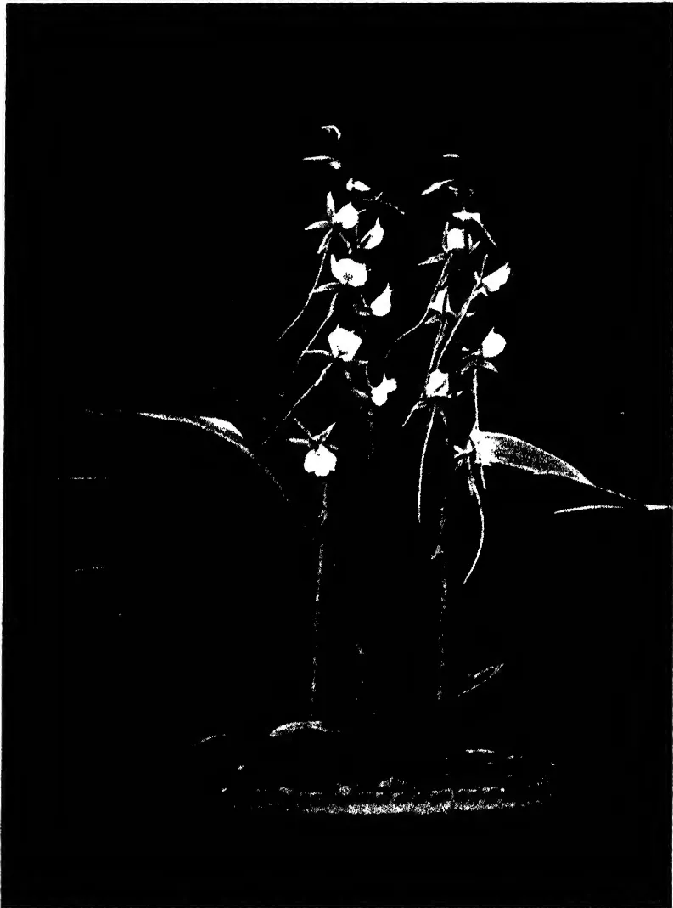
ANGRAECUM EBURNEUM THOUARS
217H. A. PIERIS, B.A. (Cantab.), A.I.C.T.A. (Trinidad),
DIVISIONAL AGRICULTURAL OFFICER, CENTRAL
ADLAY (Coix lachryma-jobi), or Job's Tears, commonly known as barley, is not unlike the latter in appearance hence the misnomer. This edible grain is of historical importance since it was cultivated in India about 3000 or 4000 years ago. It was known to the ancient Arabs who introduced it to the West. It was also grown in ancient times in China, Japan, and other tropical countries. In old records mention has been made of the plant only as a weed or cultivated as an ornamental plant. Early writers refer to the use of seed as beads for rosaries. An early missionary writer of Tonkin has said that adlay makes a refreshing drink, is a good blood purifier and an excellent diuretic. People in Tonkin call it the "Grass of Life". It is said that in India, Coix can hardly be said to enjoy a reputation for its medicinal properties. The grain was never too popular on this continent in view of the varied assortment of other cereals, but in times of scarcity Coix has been cultivated extensively as a food crop.
There are many wild and cultivated forms of adlay. The wild species can be distinguished from the edible forms as the shell of the former is tough and the grain is hard. The edible varieties have a thin shell and are soft grained.
Adlay can be grown in chenas as a mixed crop, or as a pure crop in home gardens or in abandoned owita land where drainage is good. It will not thrive under water-logged conditions. It is most suited to friable or loamy soils with an abundant supply of humus, but seldom does well on heavy clay soils. It grows admirably from sea level up to elevations of about 2000 feet.
218Adlay has been tried in different villages in Kegalle, Nawalapitiya, Dambulla and in Kandy district, and has given excellent results. The rainfall during its growing period should be evenly distributed. Dry weather should prevail when ear-heads begin to mature. In very dry districts it is necessary to irrigate the crop. Adlay tillers profusely when grown on well cultivated soil. The land is usually ploughed and harrowed or mamoty-forked.
On an even seed-bed 3 or 4 seeds are dibbled in by hand ft. by ft. apart and in rows. If the seed is not very fresh the seed rate may be doubled. For normal sowing 6 to 8 lb. will be required. When plants are about 3 ins. high, they are thinned leaving a couple in each hole. Plants are earthed up when 6 ins. to 8 ins. high. Inter-cultivation excepting periodic weeding is not necessary. The crop is ready to harvest in 5 to 6 months from sowing. A dressing of farmyard manure when the seed-bed is prepared is beneficial, especially in soil deficient in humus, but an excessive supply is not advisable as it would tend to promote vegetative growth at the expense of grain production. A few months after the harvesting of the crop the plants will tiller again and a ratoon crop can be reaped. Harvesting is done on a fine day preferably in the morning. Stalks are cut about 6 ins. from the ground. They are spread out in bundles and when thoroughly dry, threshed in the same way as other grains. Milling is done with an indigenous wooden mortar or in a stone corn-crusher. The former method is preferable. Grains should be absolutely dry before milling, otherwise a considerable proportion will be crushed. The yield per acre on average land is about 75 bushels of grain which produces about 25 bushels of cleaned grain.
Coix is an excellent substitute for rice and is more nourishing. It can be boiled whole or partly broken. The flour is an admirable substitute for rice flour for the preparation of articles of food such as hoppers, milk rice and roti, which are usually indispensable as a morning meal among the indigenous population. The offals or millings can be utilised as food for poultry and farm animals. Tender adlay plants can be used as fodder for cattle. Plants before they are mature could also be used for preparation of silage for cattle. Unfortunately the grain has not earned the popularity it should considering the varied uses to which it can be put. This may be attributed to the ignorance of growers. Moorish cultivators have displayed
219keen interest in the cultivation of this crop. There are possibilities of popularising this crop in small holdings and peasant proprietor settlements in many parts of the island. Taking the average consumption of rice per head per day as 5/8 of a measure, a crop of adlay from an acre of land will provide sufficient food for a family of four people for about a year.
Wester in his article on adlay states that this grain has a greater proportion of fat and protein content than either rice or wheat and as such it is a more complete food than either of these grains.
ANALYSES OF ADLAY--RICE--WHEAT
| Water | Protein | Fat | Carbo- hydrates |
Fibre | Ash | |
|---|---|---|---|---|---|---|
| (a) Adlay (Coix Lachryma-jobi) (threshed) |
10.8 | 17.6 | 5.6 | 62.1 | 0.3 | 3.6 |
| (b) Raw Rice (Oryza sativa) (Polished) |
12.21 | 7.64 | 1.00 | 77.9 | 0.33 | 1.0 |
| (c) Wheat | 10.62 | 12.23 | 1.75 | 71.18 | 2.36 | 1.81 |
Acknowledgment is due to Dr. A. W. R. Joachim for the above analyses.
REFERENCES
WATT, SIR G.—The Commercial Products of India.
WESTER, P. J.—Adlay—A new Grain. Philippine Farmer, VII, No. 3. Reproduced in Trop. Agriculturist, LVII, No. 1, pp. 43-46, 1921.
220FURTHER progress in investigational and intelligence work on Empire products is described in the annual report for 1935 of the Director of the Imperial Institute. A noticeable feature of this account is the prominence given to developments affecting the Colonial Empire, chief among which was the establishment by the Colonial Office of the Colonial Forest Resources Development Department and its location at the Institute. This arrangement has already been of much mutual benefit.
The main work of the Committee on Timbers during the year under review was in connection with the Report on Grading Rules and Standard Sizes for Empire Hardwoods. Suggested amendments from Nigeria and British Honduras, among others, are being considered. It was proposed to send to the United Kingdom a trial shipment of selected Nigerian timbers, graded according to the Rules, in order to provide a practical test of their applicability. Additions to the list of Colonial hardwoods approved by the London County Council's committee as fire-resisting materials include Sekondi Mahogany from the Gold Coast and Red Meranti from Malaya.
Besides recording the decision of the Admiralty in favour of tarred sisal cordage, the Committee on Vegetable Fibres report arrangements for an Exhibition of Empire Vegetable Fibres at the Institute in the spring of 1936, at which will be included, among the principal exhibits, sisal from East Africa, hemp from Mauritius, and coir from Ceylon. This Committee arranged for Institute co-operation in the research into the possibilities of further commercial utilisation of sisal, to be carried out at the laboratories of the Linen Industry Research Association.
Work on the problems involve in the production of tung oil from the fruits was continued by the Committee on Oils and Oilseeds, which is also endeavouring to make arrangements for crushing in the United Kingdom the produce of a number of small growers.
The Committee on Hides and Skins investigated the results of six different methods of curing hides, and found that only those hides prepared by the dry-salting or shade-drying methods, or by the modified sun-drying method recommended by the committee to the authorities in Kenya, could be considered satisfactory. The market possibilities of prime camel hides from Somaliland were studied, and small consignments tested gave promising results. Faults in finished leather are being correlated with specific diseases in the living animal.
The Investigations Section of the Plant and Animal Products Department was engaged on a wide variety of chemical and technical examinations, and furnished reports on 402 samples received chiefly from Agricultural
*From The Crown Colonist, March, 1936.
221and Forestry Departments overseas. Piassava from inland swamps in Sierra Leone submitted to the trade was considered to be worth a price well above that of Sulima piassava. Abroma augusta fibre from Uganda was pronounced by merchants to be about equal in quality to First Marks jute, and its suitability as a substitute is to be investigated. A sample of ground-nut oil from the Sudan was regarded as a saleable in the United Kingdom at about the current price. An investigation into Cymbopogon afronardus oil from Kenya showed that it might be used as a source of geraniol. Inquiries in the trade indicated that consignments of peppermint oil from Kenya would be marketable at a price between those of American and English peppermint oils. Three out of seven samples of geranium oil from St. Helena were found to be of possible commercial interest. Derris root from the Amani Institute, Tanganyika, yielded materials of excellent quality, which should be readily saleable in the United Kingdom. Papain prepared in the Bahr-el-Ghazal Province of the Sudan was considered to be of slightly higher quality than Ceylon papain. Mangrove bark from Tanganyika represented material which would meet the requirements of the United Kingdom and Continental markets for a "non-fibrous" bark, and both this and the "fibrous" bark could be disposed of in the United States. To suppliers of native-grown tobacco leaf in Jamaica it was suggested that, as the leaves were not large enough for use as binders by English cigar manufacturers, they should be supplied for use as fillers in the cheaper brands of cigars. The Department of Agriculture in Fiji was advised to concentrate the attention of tobacco growers on the production of cigar leaf only. A sample of beeswax from the Gambia was regarded as being quite suitable for the United Kingdom market. Other investigations related to banana flour from the Gold Coast, foodstuffs from Ceylon, ginger from British Honduras, castor seed from Ceylon, resin from the Solomon Islands, and gums from Northern Rhodesia and Tanganyika.
Over a thousand inquiries were dealt with by the Intelligence Section, those from Colonies relating, among other matters, to the possibility of manufacturing coir products in Ceylon, the commercial production of sultanas and currants in Cyprus, improving the trade in Malayan tortoiseshell, large-scale planting of pyrethrum in Palestine, industrial developments in Fiji and fruit canning, in Ceylon, many of these inquiries being concerned with opportunities for marketing supplies in the United Kingdom.
Some inquirers sought information regarding machinery for preparing commodities for the market; others, usually manufacturers of machinery, required data concerning products not previously handled by them, such as "Kekuna" seed (candle nuts) from Ceylon. Information supplied also related to Empire sources of supply of products normally obtained from foreign countries, among such applications being one for chicole gum; British Honduras was named. The miscellaneous inquiries included the following: the preparation of ghee in Nigeria, the commercial utilisation of soya beans and oil, cultivation of the tonca bean tree in British Guiana and the preparation and marketing of the beans, the possibilities of an export trade in beeswax from Northern Rhodesia, the preparation of jute from the Sudan,
222the possibilities of seaweed as manure in Zanzibar, and the method of preparing, drying and marketing rattans from Sarawak.
Numerous investigations on behalf of Colonial territories were made by the Mineral Resources Department of the Institute, the subjects ranging from Solomon Islands and East African soils to manures from Malta. Nigeria sent two samples of topaz, ilmenite came from Nyasaland, saline marls and muds from the Bahamas, coconut shell charcoal from British North Borneo, sand and pebbles from the Falkland Islands, peat from Palestine, lignite from the Cameroons, graphite rocks from Tanganyika, cinnamon-leaf compost from the Seychelles, and salt from Bechuanaland. On the Intelligence side, inquiries dealt with concerned Falkland Islands peat, pottery clays (for Kenya), prospecting in British Guiana, aluminium manufacture in Nyasaland, sources of columbite in Nigeria, Uganda and South-West Africa, Fijian coral for building purposes and cement, beryllium mineral production in East Africa, cobalt in Northern Rhodesia, zircon in Malaya, and many other subjects. In addition, the possibility of marketing gypsum from East Africa received attention, as did the following inquiries : guano on Ascension Island, market for marbles from Trans-Jordan, lignite in Trinidad, market for platiniferous ilmenite from Sierra Leone, Seychelles phosphate, and a market for Sudan natron.
In the exhibition galleries of the Institute more vivid impressions of Empire countries are now being conveyed by representing as complete a picture as possible of the scenery, and arranging the exhibits in such a way as to give the visitor the effect of a journey through the country. Malta now has a new court, and the Palestine court is being completely reorganised and enlarged. Bermuda and Seychelles also have added to the attractions of their respective courts. Further, the chief economic products of each Dominion and Colony are displayed, and, where possible, their various applications illustrated by specimen articles.
For the first time the Report contains a complete record of officers of the Colonial Services visiting the Institute during the year, the number of such visitors being 100.
223THE prevailing low prices for produce have emphasized the desirability of converting them in part into other products before they leave the farm. For this reason, a number of farmers are turning to poultry as a side-line to their other activities. It is probably as a side-line only that the enterprise will prove reasonably profitable, so that the fullest utilization of surplus produce can be made. As a proposition by itself, where all foods have to be bought and transported, there is probably not very much scope in Kenya: for, apart from the difficulties that arise where large numbers are handled, the outlet for poultry products is not at the present time sufficiently great to justify a large expansion on these lines.
While there is a fairly steady demand for eggs, yet the marketing of surplus cockerels and old hens (particularly the latter) is, in up-country districts particularly, a very difficult problem, although in the vicinity of towns there may be a small demand. Therefore the policy should be as far as possible one of egg-production, and the elimination of surplus cockerels at the earliest possible stage should be practised. For this reason, the desirability of sexing day-old birds, a practice which is now adopted on a very large scale in Europe, would be extremely useful in this country. It should be pointed out, however, that the determination of sex by this method is by no means easy, and it requires a great deal of practice before an approach to accurate results can be obtained. The alternatives to the above method are use of sex-linked crosses, or alternatively of light breeds in which the cockerels can be distinguished at about three weeks of age. Although this last method entails the expense of rearing a large number of redundant males to the age of three weeks, yet it is probably the most practicable method at the present stage, for the use of sex-linked crosses involves the maintenance of two separate flocks of pure-bred birds to be used for crossing purposes, and this necessarily entails the rearing of a fair number of pure-bred stock to provide material for the selection of breeding birds.
The choice of breeds, as outlined above, is largely influenced by the presence or absence of a market for meat, and will lie therefore in most cases with the light breeds. Apart from these considerations, it is important to remember that it is desirable to choose a breed which is already well represented in the country, so that there will be a sufficient number of strains to prevent the possibility of inbreeding, a danger in a country where it is of most vital
*By R. S. Ball, Dip. Agric. (Cantab.), A.I.C.T.A., Agricultural Officer, Kenya Colony, in The East African Agricultural Journal of Kenya, Tanganyika, Uganda and Zanzibar, Vol. I, No. 4, January, 1936.
224importance to maintain the constitution of the stock. There is always a tendency to degeneration of progeny of imported stock, this being noticed particularly in size and weight and composition of the bone. In the opinion of the writer, however, these difficulties can in large measure be overcome by rigorous selection of breeding stock and careful feeding of suitable rations and mixtures containing the necessary mineral ingredients.
It is of great importance to adopt a definite policy and to continue with it, for the introduction of a large number of breeds and indiscriminate mixing leads eventually to the segregation of many bad types, and does not, as is sometimes supposed, improve the constitution of the stock.
As a rule, housing is not a difficult problem in this country, except in so far as it entails strict attention to cleanliness and protection from vermin of all sorts. A very important factor to bear in mind is that poultry always thrive best in small units, an economic unit being about 30 birds.
For this reason the Hosier system of portable housing units, each unit comprising about 20-30 birds, has much to recommend it, but it has also three grave disadvantages—
Apart from these two latter pitfalls, and the fact that it is probably suited only to light breeds in this country, it combines all the advantages of keeping birds in small numbers, protection from vermin, since the unit is completely enclosed (house and run being made as one), and the provision of fresh unstained land for the flock.
If, however, the difficulties enumerated above cannot be overcome, or heavy breeds are kept, some form of permanent house and run must be used, but in this case it is most important to ensure that adequate provision is made for resting the runs, so that a grass cover can be maintained, the most obvious method being to divide the run into two so that it can be served by the one house. With regard to the house itself, this can be of very varied design, and many excellent types are to be seen in the country. A wire-netting floor (of small mesh, about 1 in.) is highly desirable, so that the droppings may fall through, either into a platform underneath, which can be moved and cleaned, or, if the house itself is movable, they may fall through to the ground and the whole house be put on a fresh site when the ground has become stained. Obviously houses of this type must be raised off the
225ground, and it is in fact always desirable that this should be done so as to provide a free circulation of air underneath. Birds should not be allowed to roost on the wire netting, but should always have perch space provided, for which it is better to use properly cut and planed timber than rough branches which are not so comfortable to the birds' feet. Nest-boxes should always be as dark as possible, so as to lessen the risk of birds eating the eggs, and if possible should have a front which can be shut down at night, and prevent birds roosting in them. Obviously the type of house mentioned above is most suited for small units, but where units of 100 birds or so have to be housed a more permanent type of building with wooden floor is required. There are diverse views with regard to the roofing of poultry houses, as to whether corrugated iron or grass should be used. While grass undoubtedly keeps the house cooler, yet it is absolutely essential that it should be removed completely and burnt periodically and the roof re-thatched so as to prevent vermin from being harboured in it. The same remark applies to the use of scratching sheds where the birds are provided with straw in which their corn is scattered. Unless these are thoroughly cleaned out and the straw burnt at frequent intervals, it is probably best to dispense with them altogether.
There is one fault closely connected with housing that is liable to occur, and that is the indiscriminate mixing of birds of different ages. This is in some cases due to the collapsing of partitions between runs, etc., which facilitates mixing, but also the fact that the harm done by such a practice is not always realized. Apart from the fact that the distribution of food is likely to be uneven, there is always a tendency when the older birds cease to lay and start to moult for younger stock to go into a neck-moult, which will either delay them from coming into lay or will put them off if they have already commenced. For this reason flocks should always be segregated as far as possible into : pullets not yet laying ; pullets six months to one year ; birds over one year ; over one and a half to under two years ; and birds two years and over. This will not usually involve any additional housing, but will yield much more satisfactory results. The fact that there is no definite hatching season in this country has probably been one of the chief factors contributing to this mixing of ages, for it entails a continuous supply of birds of all ages, and thus segregation becomes difficult, but provided the birds are divided into the categories described above results should be quite satisfactory.
The feeding of the birds will, to a large extent, depend on the foods that can be grown on the farm, and in most districts this provides a fairly extensive variety, but at all times it is necessary to supplement with certain purchased foods such as wheat offals, etc. As a general rule, maize bulks large in the ration fed to the birds, its chief recommendation being its cheapness. It is important to realize that many of the cases of digestive orders that occur (excessive scouring, liver troubles, etc.) are probably due in large measure to the use of maize in excessive quantities either in the mash or corn mixture. The relatively high price of chick wheat in relation to maize has deterred farmers from using it in sufficient quantities, with often very unsatisfactory results. It should be remembered that there are other foods in addition to
226maize and wheat, such as buckwheat, barley and sunflower, all of which can be used in a certain proportion in the corn ration, and which can be grown cheaply on the farm. It is unwise, however, to make any of these the basis of one's corn ration, which should always, as far as possible, be wheat, with these other grains in smaller quantities.
Finally, it is important to note that it is always preferable to feed good wheat in preference to droughted or pinched grain.
Examples of such rations are as follows:—
(1)
2 parts Wheat
1 part Crushed Maize
1 part Sunflower.
(2)
3 parts Wheat
2 parts Crushed Maize
1 part Buckwheat.
(3)
3 parts Wheat
1 part Barley
2 parts Crushed Maize
1 part Sunflower
1 part Buckwheat.
Maize should be fed kibbled, and sunflower slightly bruised so as to break the outer husk. If one kind of grain is fed by itself, then wheat is the most suitable, the remainder being most suited to mixtures on the lines outlined above. A bird in full lay should receive oz. of grain per day, preferably in two feeds—early morning and evening.
There is a considerable divergence of opinion as to the desirability or otherwise of feeding dry mash as opposed to wet mash. In this connection it is important to remember that one of the chief advantages of dry mash feeding is economy of labour, an important consideration in Europe but relatively less so in this country. Unless carefully controlled, there is always the danger with the dry mash system that the birds will be eating an unbalanced ration, since they are able to pick the food over at will, so that its composition tends to alter and this may cause digestive disturbances. Further, since skim milk is frequently available in this country, which may be utilized for mixing with the mash, the case for wet mash feeding is further strengthened.
While the majority of the corn rations can usually be produced on the farm, yet it is essential to purchase certain feeding stuffs for the mash portion. These are chiefly pollard, bran and meat meal. With reference to the latter, it is probable that this can be replaced at least partially by the use of vegetable protein, e.g., Soya beans, together with a mineral supplement. In this latter connection it is important to remember that nearly all the foods fed are themselves deficient in minerals, and it is therefore of great importance to add a complete mineral supplement to the ration. In this way growing birds will be enabled to form hard bone, the crooked breast-bones which are
227of fairly frequent occurrence being probably due to soft bone which has easily become bent will be eliminated ; and further the minimum number of soft-shelled eggs will be laid. It is worth stating, however, in this latter connection that there are always a few birds in the flock which will lay soft-shelled eggs, however adequate the mineral supplement in their ration may be, this being due either to hereditary taint or some constitutional defect. Such birds should not, of course, be selected for breeding.
The chief minerals of importance and those most likely to be deficient are as follows : lime, phosphate, salt, iron (sometimes). These are most readily added in the ration in the form of ground limestone, steamed bone flour or meat and bone meal, salt finely ground, and iron oxide if necessary. The last is usually only required for young brooder and rearing chicks in cases where there is a lack of iron in the soil. Salt should always be finely ground, as it is toxic in large quantities, and should for this reason not be in a lumpy state when fed. The total mineral constituents should constitute about two per cent. of the ration. If meat and bone meal is being fed, no steamed bone flour is necessary.
The proportions of the minerals should be roughly as follows :—
| Salt | .. | .. | .. | .. | per cent. |
| Ground Limestone | .. | .. | .. | .. | 1 per cent. |
| Steamed Bone Flour | .. | .. | .. | .. | per cent. |
When iron oxide is being fed to young stock, only about per cent. need be included.
A suitable laying mash where skim milk is available would be as follows :—
| 45 parts Pollard |
| 15 parts Bran |
| 30 parts Maize Meal |
| 5 parts Soya Bean (or other vegetable protein) |
| 3 parts Meat and Bone Meal |
| 2 parts Minerals. |
| 100 |
Without Skim Milk.
| 45 parts Pollard |
| 13 parts Bran |
| 25 parts Maize Meal |
| 10 parts Soya Bean Meal |
| 5 parts Meat and Bone Meal |
| 2 parts Minerals. |
| 100 |
The feeding of greenstuff of course is always highly desirable, and this should consist largely of kale, cabbages, etc. Poultry are as a rule not very fond of lucerne when fed long, owing to the large amount of stem present in relation to leaf. For this reason, if it is desired to feed lucerne, it is best to
228grind it up finely and incorporate it in the mash. The stemmy material is all reduced by the grinding, rendering it more palatable to the birds. In this manner it has a high feeding value, for it is rich in protein, and is of course largely used in Europe and America in the dried powdered form as Alfalfa meal, to replace some of the protein in the mash.
In addition to the provision of oyster shell for the birds, it is essential to provide some sharp grit in the mixture with it, if the soil does not already contain a sufficient quantity. It is essential that the grit should be sharp, as it is required to perform the grinding action in the gizzard which is necessary for efficient digestion. Often it is possible to find some rock or stone locally which, when broken up with a hammer, will serve the purpose.
The system of feeding outlined above is naturally somewhat expensive, but amply justified in pullets and second-year birds in full lay. Frequently, owing to lack of market, it is impossible to dispose of old birds when their period of maximum usefulness has passed, and yet they will probably continue to lay a few eggs, but not in sufficient quantity to justify elaborate or expensive feeding. Such birds are probably best ranned out in portable houses, risking vermin damage and allowing them free range. In this manner, together with a cheap corn ration consisting largely of maize, and possibly a little mash if the birds are in poor condition, although even this may be unnecessary, eggs will be obtained with the minimum expenditure, until such time as the birds cease to yield a return or preferably until a market can be found for them. It is extremely important to cut expenditure to the minimum on such stock, for the return will not be high, and output is not likely to be affected appreciably by very cheap feeding, since quality of food has ceased to be the limiting factor in the birds' capacity to produce eggs. This feature again emphasizes the great importance of segregating birds into age groups.
In every flock there are certain to be a percentage of birds which do not yield a sufficient return to justify the feeding, and these again might in some cases be treated in the manner suggested for old hens, if they cannot be disposed of in any other way. These birds are of two types, and are best discussed separately.
(1) Wasters.—These are birds which never put on flesh, but are always in a thin and unhealthy condition. They are chiefly found amongst the light breeds, where there has been a tendency to breed for egg production, sometimes at the expense of constitution. These birds are never likely to be of any use even to run with a "cull flock" and should be destroyed. They are always easy to detect by their poor condition and lack of comb and wattle development, or bad coloration of these organs.
(2) The other class consists of birds which are healthy in appearance, but either genetically or constitutionally are incapable of high egg production. These can only be culled out by frequent and careful handling of the flock. They usually tend to be loose-feathered birds, with a marked tendency in the case of the heavy breeds to lay on large quantities of yellow fat internally. The heads and combs are usually coarse and thick, and frequently
229the feathering in the heavy breeds is carried right forward over the head, the feathers being of a coarse and bristle-like nature. The distance between the pelvic bones is narrow and the points of the bones are large and feel definitely knobby as opposed to the finer points as found in a good layer. The region below the pelvic bones is usually lacking in capacity, with a tendency to a rather hard and tight skin. The scales on the legs, instead of being set on tightly, are frequently loose and of rather an open nature. A common feature of an unsatisfactory bird is the length of claw, but this criterion should not be applied in this country, where many of the soils are deficient in gritty material, with the result that the amount of wear and tear on the claws is necessarily very small.
For these reasons, great attention must be paid to the proper handling and culling of all laying stock, and, unless the birds are trap-nested, selection of breeding stock will depend on this handling also.
If trap-nesting has been practised, the selection of breeding stock is rendered relatively simple, for the records of a large number of birds are then obtainable, and selection amongst the best of these is made on characters such as size, constitution, thriftiness, character of bone and breed points. As it is often difficult to trap-nest, owing to lack of suitable labour and facilities, in the majority of cases breeding stock must be selected by careful handling on the lines previously indicated. Where a flock has been culled regularly this should prove a relatively simple matter, as the farmer will by then have acquired a sound knowledge of the technique of the handling of birds. If possible, no female stock should be used for breeding until they have reached the age of at least 12 months. By attention to this feature, the minimum number of weakly chicks will be obtained. In the case of the heavy breeds, 15 months is an ideal age for the selection of breeding stock. The male bird of a light breed can be used at an age of about 8 months, and in the case of a heavy breed 10 months, by which time he will have grown well. The use of birds at earlier ages than this definitely retards growth, and as it has been suggested may affect the constitution of the offspring. At the other end of the scale, it is very common to observe a decrease in the fertility of the eggs after the breeding stock have reached an age of about 2½ years, depending on the breed. In most cases this is due to the male bird, and the number of females should then be reduced. Initially, in the case of a light breed, about 12 females should be allowed to one male bird, although 15 can be used, provided he is well grown and at an optimum age of about 1½ years. In the case of the heavy breeds the number of 10 females should not be exceeded.
It is frequently advisable also to select a small pen of 6 to 8 really first-class birds for purposes of cockerel breeding, and these are mated with an unrelated purchased male. In this manner a sufficient number of male birds are obtained for mating with the rest of the breeding stock, without incurring the expense of the purchase of a large number of unrelated males. It is of great advantage to trap-nest such a pen, as any surplus cockerels can then be sold with a definite record behind them, which will naturally enable a
230higher price to be obtained. Such individually bred birds can be hatched out in the incubator in the normal way, by placing all the eggs from one of these six birds together in a small cage after about the eighteenth day, so that all the chicks from one hen can be toe-punched at birth or marked with a numbered ring affixed to the wing or leg before they have had the opportunity to get mixed with the rest of the hatch, with which they may be reared in the normal way.
In the ordinary breeding flock it is often desirable to run two male birds together with rather over double the number of females that would normally be allotted to a single male, as this usually leads to a higher fertility in the eggs. The chief objection to this system is that two male birds are often liable to fight together, but the risk of this is usually much lessened when the birds have been reared together, and when the breeding stock is allowed a fairly free range.
The feeding and management of breeding stock is substantially the same as that of the laying flock. A higher percentage (about 2 per cent. more) protein should be included in the mash, and the birds should be allowed as much exercise as possible, not being confined in small runs or kept under the Hosier system. Absolutely free range, which is the ideal for breeding stock, is usually impracticable in this country on account of vermin. Where trap-nesting is practised, the eggs should, if possible, be graded, for it is frequently found that certain birds lay consistently small or mis-shaped eggs, unsuited for hatching purposes, and such stock should be discarded.
In the actual selection of the eggs themselves for hatching a good deal of care must be exercised. An egg weighing between and 2 oz. is about the ideal size, and in addition care should be paid to such characters as shape, uniformity of shell, and cleanliness. The presence of an appreciable quantity of dirt closes the breathing pores. A slightly stained egg can, however, be cleaned with a dry or very slightly damp cloth.
All eggs to be used for hatching should be kept in a cool store with as uniform a temperature as possible, until it is desired to use them. They should be turned daily if possible during this storage period, and no egg more than ten days old should be used for hatching purposes. The practice of storing these eggs in bran or sawdust until required is not a very good one, and it is preferable to stand them on racks or other suitable container, so that air may circulate all round.
The majority of farmers in this country prefer to use incubators, but the broody hen has much to recommend it, and some of the larger poultry farmers in England are now returning to the use of these natural methods, believing that by so doing they retain the vigour and stamina of their stock. The great drawback in this country to the use of the hen is the problem of vermin, and unless the birds are clean this method should not be used. At least one farmer in this country has adopted the excellent practice of having the coops for sitting hens made out of sheet iron, so that they can be readily cleaned and freed from vermin. A series of these can be placed under a grass
231roof so as to prevent them from getting too hot during the heat of the day. Where a large number of chicks are being hatched by this method it is desirable to tether each broody hen by one leg to its nest, and in this manner no confusion can arise when they are removed for feeding purposes. All sitting hens should be removed daily, and allowed access to corn and water, but laxative foods should not be fed, as this leads to fouling of the nest and eggs.
Towards the end of the incubating period it is desirable to damp the nest, for there is always a tendency for the eggs to become rather dry, and a certain loss through "dead in shell" will result. The advantages of the use of sitting hens may be summed up in a few words by saying that hatching by this method is simple when one is dependent on unskilled native labour, that the percentage hatch is usually greater than from an incubator, and that it is cheaper in first costs. The disadvantages are that many breeders who have only light breeds will have no sitting hens for the purpose, in which case it may mean keeping a certain number of birds of a breed such as the Light Sussex which has proved to be unsatisfactory from the utility point of view in this country on account of the relatively small number and size of the eggs it lays. Alternatively, it may be possible to obtain a certain number of native hens, but these are often covered with vermin, and being small will not usually cover the full number of eggs, and, lastly, it is difficult to obtain the required number of broody hens at any given moment.
The majority of breeders will therefore use the incubator, but in this case frequent and strict European supervision is necessary, without which it will be almost impossible to obtain good hatches. In this country, it would appear that the hot water incubators are definitely preferable to the hot air types, chiefly on account of the smaller temperature variations in the former. The author has traced several causes of poor results from incubators in this country to failure to test the capsule before every hatch. This can always be done by immersion in hot water, making sure that it expands fully. Frequently, also, buildings in which the incubators are housed are at fault. Ideally an incubator should be housed in a cellar with a through draught created by windows placed high up on either side of the room. In this manner a fairly uniform temperature is maintained and good aeration secured. The floor of the room should be firm and level, so that the incubator does not rock about, subjecting it to vibration. While the practical difficulties usually preclude the construction of a cellar in this country, yet the principles embodied can be preserved by constructing a thick-walled mud and wattle hut, roofed with corrugated iron, the whole roof being then covered thickly with a layer of grass, maize trash, etc., to ensure a uniform temperature. Ventilation should be provided in the manner described above. Preferably the hut should be situated where there is shade overhead. The incubator itself should be run empty for several days before it is used, to ensure uniformity of temperature before the eggs are introduced. The practice of marking each egg with a nought on one side and a cross on the other is always advisable, in spite of some opinion that this is not necessary, for only in this manner can complete turning be ensured, which is essential for successful results. The shallow troughs provided for water in the incubator should be kept filled, always filling with warm water, which will give off vapour immediately and maintain the necessary humidity in the atmosphere. The
232floor of the incubator house should be covered with sand, which can also be kept damp. The most successful results seem to have been obtained by running at a temperature of slightly over the accepted figure of 103° F. up to 104° F. having yielded very good results. Great attention must be paid to the turning of the eggs, and they should be turned completely twice daily. Great care must also be exercised in the handling of the eggs, as the presence of one defective egg in the incubator can cause the liberation of gases which will prove toxic to the developing embryos.
The incubator should not be opened again after the 18th-19th day, depending on the temperature at which it has been running, but the thermometer must be examined very frequently after this, as heat develops rapidly as the young chicks respire actively in their shells. After hatching, no chicks should be removed from the brooder till thoroughly dry, but should be allowed to stay in the special compartment for this purpose. The latest hatched chickens may be left in the incubator after the others have been removed, and introduced into the brooder at night. For the first day the chicks require no food, but water and fine grit and shell should be provided. The practice of feeding hard-boiled egg is unnecessary, as the chick has considerable reserves of food in its body, which it requires to digest before it is induced to eat other foods. On the second day after removal from the brooder a mash can be commenced. A specimen is appended below. Skim milk should be fed separately to very young chickens, although if desired a very small quantity can be used to make the mash into a very stiff paste, which should be crumbly in texture. Where skim milk is not available, a proportionately higher amount of protein will be required, and the inclusion of 1 per cent. of cattle cod-liver oil is extremely desirable. Great care must, however, be taken in mixing this in with a mash, since it is important to incorporate it uniformly so that no excess will be present.
| Percentage Figures. | |||||
|---|---|---|---|---|---|
| Brooder | Grower | Fattenings. | |||
| Pollards | .. | .. | 50 | 45 | 30 |
| Bran | .. | .. | 20 | 28 | 14 |
| Maize Meal | .. | .. | 23 | 20 | 50 |
| Meat and Bone Meal | .. | .. | 5 | 5 | 4 |
| Minerals | .. | .. | 2 | 2 | 2 |
| 100 | 100 | 100 | |||
Skim milk ad lib. to brooders and fattening birds; to others more limited quantities.
(Note. A brooder is a bird up to 8 weeks, and a grower any bird over this age up to time of laying.)
The ration inserted for fattening birds is a suitable ration for surplus cockerels which it may be desired to rear for table purposes. Chopped green-stuff in the form of cabbage or kale leaves or very finely chopped lucerne can be usefully incorporated in the mash, but on account of its rather fibrous nature, it is best not to use lucerne until the birds are eight weeks old. The small runs provided for the brooder chicks should be moved constantly and should always be kept on short grass; any long grass will inevitably lead
233to chills and other troubles. Again one must emphasise the importance of segregation of age classes in rearing as well as in adult stock. The rather common practice of mixing rearing chickens of all ages is probably quite a possible cause for the appearance of a high percentage of "runts". All unwanted male birds should be selected as soon as possible, and fed on the cheaper ration outlined for fattening birds above. Where prices are low or demand poor for such birds this ration can safely be commenced at a relatively early age, so that costs may be brought as low as possible, and, if necessary, a portion of the mineral ration can be omitted. For young chickens the iron oxide is a most essential constituent of this ration, and should not be omitted. It is important to remember that iron is a very essential constituent of the blood, and lack of it may produce a fair proportion of wasters in the young stock.
A corn ration should be given to the rearing stock at the age of about four months, depending on the breed. If maize is used as one of the ingredients it should be kibbled small. Owing to the rapid rate at which stock grow and mature in this country, many farmers wish to retard their birds from coming into lay, in order that they may be given a good chance to grow out. The only way in which this can safely be done is to move them to fresh sites constantly, but any system such as reducing protein in the ration is to be deprecated in the case of a growing bird. Provided the birds have been well fed, there should be little danger in too early laying, and resort to drastic methods to delay this should not be adopted.
In this brief article an attempt has been made to show that, provided management is conducted on sound lines, there is a considerable future for poultry as a side-line to mixed farming activities in Kenya. It would appear likely that, with the present increasing production, the possibilities of export will again come to the forefront, and it will then perhaps be necessary for producers to accept a somewhat lower price than prevails at present, which will only be possible if continued progress is made on the lines of good management.
234THERE is surely no technical subject on which all classes of cultivators are so closely in agreement as on the intimate relationship between productivity and the supply of organic matter in the soil. In our home agriculture, the quest for humus extends from large scale mechanized cereal farming at one end of the scale to intensive market gardening at the other. In the tropics, where the oxidation of organic matter takes place most rapidly, the provision of humic material is often the first step in land improvement. The more intensive the cultivation and the bigger the demands on the soil, the greater the need for steps to maintain the content of organic matter. In England, the very success and persistence of our traditional arable system, based on livestock and temporary grass, is a sign that it supplies the essential needs of the soil. Nevertheless, the question arises whether we are in general maintaining our soils in full productivity. Are we not supplying in the form of artificial fertilizers nutrients that would be better provided, or at least supplemented, by specially-prepared wastes derived from the farm, from industry, and from town refuse or sewage?
To utilize waste organic matter, some form of composting is necessary. Compost-making is perhaps nearly as old as agriculture itself. In their various modifications, composting and the utilization of town wastes form the mainstay of the intensive farming of the thickly-populated and self-supporting districts of China and Japan. From time to time, scientific investigators have turned their attention to these matters, and have conferred precision on what had hitherto been a rule-of-thumb operation. Starting with the work of H. B. Hutchinson and E. H. Richards, whose first paper on "Artificial Farmyard Manure", appeared in this JOURNAL in 1921, the conditions underlying the rotting of straw and waste organic materials generally have been worked out. Another service which the scientific worker has been able to perform is to systematize existing knowledge and practices and draw up methods suitable for local supplies of waste materials, cropping systems, and labour conditions. Finally, there is the possibility of mechanization in its many forms, with the idea of reducing the labour costs of handling bulky material. The possibility of controlled compost-making has been eagerly taken up in many quarters, and there is already an extensive literature on the subject.
*Extract from The Journal of the Ministry of Agriculture, Vol. XLII, No. 11, February, 1936.
235The Indore process of compost-making developed by Sir Albert Howard and his co-workers at the Institute of Plant Industry, Indore, Central India, from 1925 onwards, is already well known. The process was fully described in a book "The Waste Products of Agriculture", published in 1931, and more recent developments have been reported from time to time. In a lecture to the Society of Arts, on November 13 last, Sir Albert Howard gave an account of the present position and future prospects of the Indore process and its modifications; and, since it appears possible that certain aspects of the system may find application in British farming, the following notes may be of interest.
The Indore process is based on the idea that soils need organic matter, and that the waste organic matter derived from the unutilized parts of farm crops, from weeds and so forth, can supply this need, provided that they are first submitted to a preliminary rotting process. To promote this decay, an outside source of available nitrogen and mineral matter is required, these likewise being supplied by the farm itself in the shape of "urine earth" from the cattle sheds, and wood ashes respectively. The other additions are a certain amount of cattle dung, water, and air. The compost heaps are mixed, made, watered, and turned according to a carefully considered system; and, after they have undergone hot aerobic fermentation, the resulting product is a humic powdery material that has proved itself a useful organic manure.
Having developed the system and made it work on a large scale, the most ready avenue of development turned out to be by way of the plantation industries. The need for humus is almost universal, but the necessary organization and drive required to give a new process a trial were usually found in the directorate of some plantation group in London.
Sir Albert outlined recent progress with the use of composts on coffee, sisal and maize in Kenya, on tea and sugar-cane in India. Sugar-cane, maize and sisal, each provides residues in quantity, but the remaining crops need to be supplemented from outside sources to make up the required bulk of organic matter. In some circumstances, special crops of quick-growing grasses and legumes have been employed for this; the latter, in virtue of their high nitrogen content, serve to accelerate decomposition in the heap. Some difficulty is experienced in inducing peasant farmers to adopt the new method, and the procedure is to establish demonstration centres on Government farms or with influential agriculturists.
The next step is to attack the bigger problem of the utilization of the wastes of urban communities. A beginning has been made by the Indore workers in adapting their process to this purpose, and town waste is already being converted at a number of centres in India. The most promising development, from the point of view of western nations, is reported from Nairobi, Kenya, where by the composting of town refuse and various wastes
236of the animal industries, a relatively concentrated organic manure is obtained, which is eagerly taken up by local cultivators.
Turning to home agriculture, Sir Albert Howard points out that certain existing practices are based on the composting principle. When, for example, clover or grass turf is dunged and turned over, the turf and dung are allowed to decay together. The suggestion is that, in our large areas of turf, we have a supply of potential humus that should be realized by means of composting in situ with dung. To provide the necessary dung, the existing manure would have to be supplemented by the incorporation of all available farm wastes into the dung heap. The place of artificials in a system based largely on humic manures would be to enrich the compost heap itself, thereby facilitating decay and grading up the final product. The ultimate disappearance of the water-borne sewage system is envisaged, to the gain of the soil in nutrients and organic matter.
Those who have what Sir Albert Howard calls the "NPK Mentality" may not agree in full measure with all his views. Some proposals are clearly for the future, and the present efficient fertilizer industry can reasonably and justly look to expansion in the role it has long occupied on most farms, namely the supplement to the home-produced animal manures. Nevertheless, the case for the salvage and utilization of organic wastes needs a strong advocate. The paper records substantial achievement, with every prospect of further development.
237THERE appears to be rather a tendency on the part of botanists to consider the study of plant viruses a dull subject and one without any sure foundation in fact. It is hoped, therefore, in this short article to show that, on the contrary, the subject is not only an intensely interesting one, involving problems of fundamental biological importance, but is also of extreme economic importance and that plant virus workers really have a definite problem in hand.
No one at the present time knows what a virus is and this uncertainty as to its nature adds, perhaps, to the interest of the study. In speaking of a virus, stress is usually laid upon certain properties which are mainly negative in character such as inability to see the virus with the microscope, impossibility of cultivating the virus on media outside the host and the fact that viruses cannot be held back by the usual bacteria-proof filters. Improving methods of technique, however, are showing that some of these qualities are merely relative and it is already possible to photograph some viruses by means of the ultra-violet light microscope and to devise filters which will allow viruses to pass or hold them back at will according to the pore size of the filter.
In speculating upon the nature of viruses, whether of animals or plants, as a whole, it is well to remember that they are a heterogeneous collection of disease agents and it is by no means certain that they are necessarily all of the same nature. At one end of the scale is the virus of Psittacosis or parrot fever, the particle-size of which is 250 millimicrons (1 millimicron equals one-millionth of a millimetre) and which is in consequence within the range of the ordinary microscope. This virus appears to have a definite life cycle and is presumably a living organism. At the other end of the scale is the virus of foot-and-mouth disease which has a particle-size of about 10 millimicrons and is only two or three times the size of an oxyhaemoglobin molecule. It is difficult to conceive of this as a living organism. Certain plant viruses are also very small, the particle-size of tobacco necrosis virus is only 20-30 millimicrons and that of a newly described tomato virus is only 17-25 millimicrons. Again, there is the recent claim of Dr. Stanley (14) of the Rockefeller Institute in Princeton that he has succeeded in crystallising out the virus of tobacco mosaic which he considers to be an autocatalytic protein, i.e., one which acts upon the cells of the host in such a way as to compel them to produce more of the same substance.
For the present it will perhaps suffice to adopt the definition of viruses given by Gardiner (5) — "as agents below or on the border-line of microscopical visibility which cause disturbance of the function of living cells and are regenerated in the process."
*Address by Kenneth M. Smith, D.Sc., Ph.D., Potato Virus Research Station, School of Agriculture, Cambridge, to Section K, British Association Meeting, Norwich. Reproduced from The Rhodesia Agricultural Journal, Vol. XXXIII, No. 2, February, 1936.
238In this short survey of the plant virus problem, it will only be possible to deal with one or two of the more interesting aspects of the subject and it is proposed, first of all, to discuss a few of the symptoms produced in affected plants. Since the pathological effect on the plant is almost the only criterion of the existence of a plant virus, the study of symptoms necessarily plays rather a large part. There are various kinds of virus diseases which may be loosely grouped together as follows, the mosaic type where attack on the chlorophyll induces the formation of mottlings or rings; the destructive type which induces necroses of the cells in leaves and stems, and a third type which produces deformities or overgrowth in the affected plants.
Some of the mosaic viruses produce colour changes in the flowers of affected plants. Perhaps the best known example of this phenomenon is the so-called "Tulip-breaking" in which tulips affected with a mosaic virus produce variegated flowers. Certain of these tulips with variegated flowers at one time fetched large sums of money owing to the mistaken idea that they were new varieties, whereas they were in reality only diseased specimens of self-coloured varieties. References to this tulip "breaking" may be found in the literature of very early times. Thus, the first record is a description published in 1576, and other accounts of this variegation in tulips appeared in 1622 and 1670. It was in this latter account that the suggestion was first made that the variegated tulip might be diseased. In the Rembrandt Exhibition recently held in Amsterdam were paintings of tulips by Dutch artists of the sixteenth and seventeenth centuries, and many of these tulips showed a typical mosaic infection. Just recently, growers of the favourite blood-red variety of wallflower have been perturbed by the appearance of an ugly yellow stripe or flecking in the red flowers and this has led to many complaints from customers that their colour schemes have been spoiled; similarly with self-coloured stock (10). The variegation in these flowers has been shown to be due to a virus carried to the plants by a species of greenfly from virus-infected broccoli or cauliflowers in the neighbourhood.
In the writer's opinion viruses play a larger part in the production of variegations in flower colours than is usually supposed. For instance, inoculations from the petals of common variegated mauve and white and mauve and yellow violas, picked at random from the garden, to healthy tobacco plants of the White Burley variety, produced in those plants a virulent mosaic disease. The virus is also capable of infecting several other species of Solanaceous plant. Experiment seems to show that the virus causing this variegation is a strain of cucumber mosaic virus (cucumber virus 1).
Some of the mosaic viruses affecting ornamental plants may produce little effect on the plant other than the change in the colour of the flowers. It is quite likely therefore that a systematic enquiry into the question would show that other familiar flower variegations may be due in part to virus infection. There seems, however, to be a common element in the appearance of this type of variegation, i.e., a pencilling or flecking of the colours and a break in the hard line dividing two colours.
The next question is the important one of how plant viruses are transmitted in nature from diseased to healthy plants. The majority of plant viruses depend upon insects for their dissemination from plant to plant and
239this relationship between insect and virus is one of considerable interest. The insects concerned in the spread of plant viruses are nearly all of one type, a type of insect which feeds in a particular way which seems to be well adopted for the injection of the virus into the plant. These insects belong to the order Hemiptera and are of the sap-sucking type.
Insects are not merely mechanical vectors of the virus but in all probability some kind of obligate relationship exists between the two. The following facts seem to bear this out—certain viruses cannot be transmitted from diseased to healthy plants except by the agency of insect and often only by one species of insect or one type of insect and not by other closely related species; some insect vectors having fed once upon a virus-diseased plant remain infective for the rest of their lives without the necessity for further recourse to a source of virus infection. This suggests that the virus actually multiplies in the body of the insect. Further, some insects do not become infective until a minimum time has elapsed after feeding upon a virus-infected plant. This is often referred to, perhaps on insufficient grounds, as the "incubation period" of the virus in the insect. A better term would be "a delay in the development of infective power within the insect". This delay may be as long as ten days in some cases.
It is not possible to deal at length with the question of the insect relationships of plant viruses, but space permits touching upon some recent interesting work on this subject. Storey (15), working upon the leaf-hopper which transmits the streak disease of maize in East Africa, has found that there exist two distinct races of this insect. One race which can transmit the virus and one race which is unable to do so; these races are termed active and inactive respectively. There is no visible difference between the inactive and active races and both are of the same species. Further, Storey has shown that if a puncture is made with a fine needle in the wall of the gut or alimentary canal of the inactive insect, the insect then becomes capable of transmitting the virus. It would appear from this that there may exist some factor or factors connected with the structure of the wall of the alimentary canal in inactive insects which prevents the virus from passing through into the blood and so reaching the salivary glands whence it is injected into the plant.
The next point concerns the mechanism of movement of the virus in the plant. Since most viruses rapidly become systemic in their hosts, there is evidently an efficient means of transport about the plant. It has been shown by Bennett (1), Caldwell (2) and others that if the phloem in a portion of the stem of a plant is destroyed by steaming, the virus cannot pass over this bridge of dead tissue. In other words the virus is moving in the phloem, but not in the xylem. The disease will develop normally in whichever half of the plant is inoculated, but the virus will not pass from the upper to the lower nor from the lower to the upper half, across the bridge of dead tissue.
The general movement of a virus about the infected plant has been well demonstrated by Samuel (9). His experiments show that there is no movement of tobacco mosaic virus from the inoculated leaf for a period of 3-4 days. The virus then passes out of the inoculated leaf and travels rapidly to the roots of the plant; about a day later it travels with equal rapidity to the top of the plant. In pot plants the more mature leaves become
240successively invaded from the top downwards and from the bottom upwards until the plant is completely invaded by the virus.
The movement of the virus in the plant thus seems to be of two kinds : first, a very slow cell-to-cell movement via the connecting protoplasmic bridges until the phloem stream is reached, when the main and most rapid movement about the plant begins. Further confirmation of this is afforded by some experiments with a newly discovered virus known as tobacco necrosis (13). This virus produces only necrotic symptoms and thus etches out, as it were, its own movement through the plant. Photographs have been taken at two-day intervals of the path followed by the virus in the leaves of cowpea (Vigna sinensis). The first six photographs show merely a gradual increase in size of the lesion at the point where the virus has entered the leaf. As soon, however, as the virus enters the phloem it begins to travel rapidly through the leaf, moving in 48 hours over a much greater distance than in the whole of the preceding 12 days' slow cell-to-cell movement.
On another aspect of the subject two interesting discoveries have recently been made : firstly, it has been found that some plant viruses exist in a number of closely allied strains, and secondly, it has been shown that infection with one strain of a virus will immunise a plant from infection with another strain of that virus. Space will not suffice to allow of a discussion as to whether these strains actually arise by mutation from existing strains, but the evidence rather indicates that this is the case.
The immunity conferred upon a plant by a virus strain against other strains of the same virus is of the non-sterile type. There is apparently no question of the production of antibodies and it is the presence of the first virus which inhibits the entrance of the second strain. This type of immunity is well shown in the case of potato virus X (8), tobacco (6) and cucumber mosaic viruses (7) and by the virus of tomato streak (11). All these viruses exist in strains and the "green" and "yellow" strains of the tobacco or cucumber viruses are particularly suitable for this kind of experiment. If a healthy tobacco plant and one systemically infected with a "green" strain of tobacco mosaic are inoculated with a "yellow" strain, the healthy plant develops the yellow spots characteristic of this virus, while the plant already infected with the "green" strain is protected against invasion by the "yellow" strain. A similar protective action is exerted in the case of a plant infected with a "yellow" strain against invasion by the "green" strain. It should perhaps be emphasised that the presence of one virus in a plant is no bar to the entrance of a second virus of a different type, the cross immunity holds good only for like viruses and virus strains. This kind of immunity therefore is likely to prove a useful tool in the work of classifying viruses and in distinguishing like from unlike viruses in those cases where diagnosis by symptoms alone is unreliable.
A possible practical application of this type of immunity lies in the protection of a crop from infection with a severe virus by previous artificial infection with a mild strain of the same virus. Here, however, lie a number of pitfalls, chief of which is the unfortunate liability of certain viruses, even when in a mild form, to give rise jointly with another virus of a different type, to a much more severe disease than is produced by either virus acting separately.
Mention must be made of a comparatively new method of approach to the plant virus problem, i.e., the discovery that the intraperitoneal injection
241of rabbits with plant virus extracts induces the production of antibodies in these animals. These antibodies react specifically with the antigen (virus sap) in some observable way. Three types of immunologic reactions have been demonstrated, complement-fixation, precipitation and neutralisation of the pathogenic properties of the virus. Such neutralisation is specific for each virus, thus, tobacco mosaic virus is inactivated only by anti-tobacco mosaic serum, and tobacco ringspot virus only by anti-tobacco ringspot serum, and so on. The cross specificity is absolute and the addition to any of the viruses of a heterologous antiserum exhibits no effect. This specificity, however, does not extend to distinctions between virus strains even when the strains produce very different symptoms in the host plants. (Chesters (3)).
This new technique is likely, therefore, to prove a useful tool in the difficult task of classifying and differentiating plant viruses.
Since viruses are so often spoken of as filter-passing or ultra-microscopic, and described by other adjectives referring to their small size, it may be of interest to give a few details of the actual magnitude of some viruses. The sizes of virus particles can be measured with fair accuracy by means of ultra-filtration through collodion membranes, the pore size of which can be measured. These membranes are prepared by a special technique devised by Dr. Elford (4) of the National Institute of Medical Research at Hampstead and the process of their manufacture is too complicated to describe here. It has been found by the application of this technique that plant viruses vary very much in their particle size, ranging from 75 to 100 millimicrons for a potato virus down to 17-25 millimicrons for a new tomato virus.
In conclusion, it is proposed to give a short account of an interesting new virus, because it well illustrates the kind of problem with which the virus worker is sometimes faced. It has been found at Cambridge (12) that a high proportion of the normal stock of healthy tobacco plants carry a virus in the roots but not in the stem and show no signs of disease during the whole of their life. Under certain conditions, however, in the winter and early spring the virus may pass up into the plant and develop disease symptoms in the lower leaves. Unlike most other plant viruses, this virus does not become systemic in the host. Further, and this is the most interesting point, tobacco seedlings which by available methods of inoculation have been shown to be virus-free, yet contain the virus in their roots in quite large quantities some five weeks later. The following experiment illustrates this. Seed from a White Burley tobacco plant grown in the insect-proof house was sown in sterilised sand in a "cellophane" cage in the glass-house. From the resulting seedlings a number of small plants were chosen and all the roots cut off except that one root was left on each plant. The roots of each plant thus removed, were ground up and the resulting paste inoculated separately to three or four cowpeas, a plant which is extremely sensitive to the virus. The tobacco plants were then repotted in sterilised soil and allowed to grow on; from this number 48 plants, the roots of which had given no reaction upon the cowpeas, were selected for a second test. This was made, again to cowpeas, 5 weeks after the first test. The plants were by this time about 8 inches across with a well-developed root system, and showed no unusual symptoms. Of these 48 plants 32 gave a virus reaction. In considering these results certain other facts must be borne in mind; exhaustive tests make the possibility of outside infection by seed, soil or
242water-transmission unlikely, though seed transmission in some form cannot definitely be excluded. The virus is not insect borne.
There seem to be three possible explanations of this problem : first, it may be assumed that the virus is present all the time in the stem, but present either in a non-virulent form which requires to gain virulence by concentration in particular cells of the root, or else in a dilution too great to give a positive reaction on inoculation. This theory, of course, involves seed transmission of the virus in undetectable form or quantity. The second possible explanation is that the virus is arising spontaneously within the plant. The third possibility, and perhaps the least likely, is the existence of a mode of virus transmission at present quite unsuspected.
Virus workers have long dallied with the idea that a virus might arise de novo within the host. Such a suggestion is attractive in some ways and it would explain many things which are at the moment obscure. If viruses are considered as organisms or at least possessing some of the attributes of life, the suggestion of their heterogenesis is repugnant. If, on the other hand, Stanley's view that a virus may be an autocatalytic protein is accepted, then there seems no particular reason why the theory of spontaneous development of the virus within the host should not also be accepted. It is, however, at present still an open question and much work remains to be done before this question can be answered.
THE Industrial Revolution has changed the life of this country very completely, but two other revolutions in the past were equally important—the domestication of animals and that of plants. Each made as great a change in human society as did the harnessing of steam power. When we look back at the past we are apt to think that when most of the people lived on the land as farmers or in close connection with the farm they were leading a natural life. That is nonsense. A farm is as unnatural as a motor-bus or a blast furnace. If England were left to itself it would be covered with forests, moors and marshes. The farmer works on ground which has been cleared of trees or drained. He spends his time looking after most unnatural plants, such as wheat and potatoes, which would not stand a chance in competition with weeds, if men were not there to protect them; or unnatural animals like cows, which produce far more milk than their children need.
Agriculture is a very recent invention. For hundreds of thousands of years man had been a hunter like the men of the old Stone Age who hunted the wild horse and the mammoth, or a food gatherer like those other Stone Age men who left great mounds of oyster and mussel shells on the coast of Denmark.
The first animal to be domesticated was almost certainly the dog. This happened about the end of the old Stone Age. Probably the dog was at first a scavenger, and later made himself useful as a watcher at night and a helper in hunting, and delightful as a pet. But he has been part of human society for much longer than any other of our animals, which is probably one reason why we understand him, and he us, so much better than any of them.
Though the dog was very useful to man, he did not revolutionise human life. But one day a hunter thought of keeping some wild animals alive. Perhaps at first they were just tied up for a few days and then killed, or perhaps a herd of cattle was followed about and protected from wolves. Some people think that young animals were first kept as pets. But a time came when a family or a tribe had so many domestic animals that they could give up hunting and live on the meat of their flocks.
This meant an enormous change. The same area of land could support far more people, so the shepherds crowded the hunters out. Of course
*By Professor J. B. S. Haldane in The Listener, Vol. XV, No. 370, 12th February, 1936.
244there were fights, like the fights which occurred in North America and Australia between European settlers and native hunters who thought that any animal was fair game. But in the long run the pastoral peoples occupied those areas which were most suited to them. Now a hunter can own little except his weapons and a few skins. But cattle and sheep are a form of wealth which multiplies itself. The man who first owned a herd was the first rich man. He could hire a poorer man to look after his animals. If you want a picture of this sort of society, read the book of Genesis, and especially the story of how Jacob served Laban. You will find the beginnings of capitalism and the division of society into property owners and hired workers.
Not only did human society change, but the animals too. They got tamer, perhaps because the wilder ones ran away. They became more fertile and fatter, especially when men began selective breeding. At first they were only used for meat and skin, but later for milk and wool, for carrying burdens and ultimately for pulling wagons. Most of these old shepherds were nomads, driving their flocks from one pasture to another. The day on which some great genius induced an animal to carry his pack was an important day in human history. It meant that many new forms of wealth could be accumulated. Tents and pottery, and even changes of clothing, could be carried.
The second revolution came later, at least in Europe and Asia, when men began to protect certain plants as they protected animals. One of the oddest facts about man is his dependence on a quite small group of plants. There are 332 different families of flowering plants, such as the Rosaceae, like the rose and apple, and the Compositae, like the daisy and thistle. But one family, the Gramineae, or grass family, is of more importance to us than all the others put together. It includes the cereals, such as wheat, oats, barley, rice and maize, the grasses, and the giant tropical bamboos and sugar canes. If we eat bread we live on grasses at first hand. If we drink milk, or eat cheese, butter, beef or mutton, we live on them at second hand.
If a plague wiped out the grasses, most of the human race would die. If all other plants perished, we should have no fruit, no flowers, no potatoes, no wood. But some kind of civilisation would be quite possible.
We do not know just how or when plants were domesticated, but we do know where, and we are fairly sure that it happened within the last eight or ten thousand years. Let me explain how people traced back the origin of agriculture. You probably know that maize and potatoes both came from America. Now in the Old World there are only a few sorts of maize and potatoes, and in America there are a great many different sorts, and also wild plants which are so nearly related to them that they can be got
245to breed with them. So if we did not know where maize and potatoes came from, we could easily find out.
The Russian botanist, Vavilov, applied this principle in the Old World. He noticed that there are sixty different sub-species of bread wheat in Afghanistan and only twenty in the whole of Europe, so he concluded that bread wheat originated in, or near, Afghanistan, while on the other hand macaroni wheat originated somewhere near the Eastern Mediterranean. Most of our cultivated plants originated in mountainous areas. For example, many of our barleys and meadow grasses came from Abyssinia, potatoes from the Andes, cherries from Armenia, and so on.
Now when a plant like wheat is domesticated it changes very quickly. Suppose you have two wheat plants growing side by side, and one produces a hundred seeds, the other only fifty, perhaps because it uses up more of the sugar which it makes in its leaves to grow a good set of roots. Further, suppose the difference between these two plants is inherited. The seeds from thousands of wheat plants are gathered. Some are made into bread, some sown to give a crop next year. The plant with a hundred seeds will probably contribute twice as much to the next generation as the plant with fifty. So in a few years the more fertile sort will quite out the less fertile. It will probably be a worse plant in other ways. If its roots are shorter it will be less able to stand drought, and so on. But you see how, without any conscious selection, wheat and other similar plants became more economically valuable, and also came to need much more care. Now just as animal husbandry enables a square mile to support more men than hunting, so agriculture gives a denser population than animal breeding, and also a more settled one. After a time agriculture came down from the mountain valleys into the basins of great rivers, the Nile, the Euphrates and the Indus, and there for the first time men began to live a life which we should call civilised.
But there was an inevitable conflict between the men who lived mainly on vegetables and those who kept flocks. In the fourth chapter of the book of Genesis you can read that Abel was a keeper of sheep and Cain a tiller of the ground. There is little doubt that the story of their quarrel symbolises the struggle which was always going on between the keepers of sheep and the tillers of the soil on the borders of Mesopotamia, and does to this day. The sheep will trample down the corn. The agriculturists will plough up land which the shepherds had used for grazing their flocks. No wonder a little further on in the book of Genesis we read that 'every shepherd is an abomination to the Egyptians'. It took thousands of years before the shepherds and the tillers of the soil, the imitators of Abel and Cain, could live in peace together. And it was only in the eighteenth century, when men learned to feed sheep on root crops during the winter, that they really began to co-operate fruitfully.
246What I have just told you is true for the Old World, but things were very different in America. There then were very few domesticable animals, and men went straight from hunting to agriculture. The bison was too big, and perhaps too fierce, to tame, and the llama was a very poor substitute for the sheep and horse. If you read about the civilisations of Mexico, such as the Aztec empire, you will be struck by their extraordinary cruelty. Thousands of men and women were sacrificed in the most horrible way to their gods. Some people have thought that they must have been a naturally cruel race. I don't believe it. Try to imagine a society, not only without machinery, but without horse, oxen, or any other animals to carry or pull heavy loads; with man as the one source of power. In such a society men will be treated as animals. At one time or another most peoples have thought that their gods needed human sacrifices. But where domestic animals were available instead, they started sacrificing them, as you may read in the story of Abraham and Isaac. In Mexico they had this idea of the necessity of a bloody sacrifice, but no animals to take the place of men and women as victims.
There is one domestic plant which I have not yet mentioned—a plant too small to see without a microscope, namely yeast. There are many different kinds of yeast. Some kinds make bubbles when added to dough, so that it bakes into bread instead of a sort of biscuit. Some cause sugar to ferment into alcohol, and thus make beer and wine. The different sorts are carefully grown for their jobs. A bread yeast will no more make good beer than a carthorse will win the Derby. There is no doubt that the bread-making yeasts are friends of man, but many people think that the kinds which make alcohol are among our enemies.
Now I am going to say a few words about the plants and animals which are certainly our enemies. I shall not trouble with lions, tigers and wolves, or even with poisonous snakes. They are quite unimportant compared with the microscopic plants and animals which cause infectious diseases, and the insects which carry them from one person to another.
It is hard to say just how much history these little enemies of man have made, because their deeds are not carefully recorded. But they make the historians' accounts of war look pretty silly. I think it is fair to say that in the large majority of wars until quite recently, most of the soldiers were killed, not by other men, but by microbes. For example the various armies fighting against the Russians in the Crimean War lost 70,000 men in battle and 182,000 from disease.
Sometimes a disease defends a country. For example, although the British have conquered a good deal of West Africa, they have never colonised it. And one of its chief defenders is the mosquito transmitting yellow fever, which is deadly to white men, but not to negroes. Quite as often the disease
247helps the invaders. A good many of the Red Indians in Canada and the United States were killed by white men, but far more by small-pox. The gentle Polynesians in the Pacific Islands were largely killed by measles. One quarter of the inhabitants of Fiji died of that disease in three months in 1875. Their ancestors had never had measles, so they had developed no protection against it. If either the Red Indians or the Polynesians had possessed an ally like yellow-fever, the history of North America and the Pacific might have been very different.
Yellow fever is carried by a mosquito which sucks in the parasite when it bites a patient, and then infects people whom it bites later on. A number of less deadly diseases, such as malaria, are transmitted in the same way. So we can prevent yellow fever by abolishing mosquitoes. This can be done by draining stagnant water, where they breed, and also by using a rather curious ally, a little fish which eats the mosquito larvae. One or two of these fish are put in every water tank in many towns in Central and South America, and they have been free of yellow fever ever since.
You may ask what that has to do with history? A great deal. In 1880 a company managed by the great French engineer, de Lesseps, who had designed the Suez Canal, started to make a canal across the Isthmus of Panama. They were beaten, very largely by yellow fever. The present canal was made by the American Government, but not until American doctors had discovered the mosquito that carries yellow fever, and wiped it out. Instead of being international or French, the canal belongs to the United States Government, and this fact has a very important bearing on international trade, and may have a decisive influence on a future naval war.
I haven't said anything about the silk-worm, one of our queerest domestic animals, or about the great caravan routes across Asia by which Chinese silks were brought to Europe, until two Persian monks smuggled some silk-worm eggs out of China to Constantinople in a hollow cane. For when trade is difficult, rare animal and plant products play a very important part in it. The Portuguese who discovered the passage to India round the Cape of Good Hope were largely after pepper. Canada was explored in the search for furs. Trading posts were opened on the coasts of West and Central Africa because of the value of ivory, which, of course, is made from elephants' tusks. But all that is part of the romantic side of history. I want you to think more of the practical everyday side, to realise that the kind of civilisation possible in any country, besides depending on the sort of men, who live in it, depends also on the sorts of plants and animals, not only visible, but microscopic. If we can realise how a great invention like agriculture changed history, it will help us to understand the changes which are taking place today through the adoption of machinery. A factory worker minding a machine is as different from a handicraftsman—a better man in some ways and a worse in others—as a shepherd from a hunter. When the form of production changes, the whole structure of society changes with it. Our society is changing. That is why politics are so interesting. If we remember the tragedy of Cain and Abel, and learn from it, we may be able to make the necessary changes without shedding our brothers' blood.
248Minutes of the thirty-first meeting of the Board of Management of the Coconut Research Scheme, held at Bandirippuwa Estate, on Friday, February 21, 1936, at 10 a.m.
Present.—Dr. J. C. Hutson (in the chair), Mr. C. H. Collins, C.C.S., Treasury Representative, Mr. I. W. A. de Soysa, Mr. Wace de Niese, Mr. Austin Ekanayake, Mr. D. D. Karunaratne, J.P. and Mr. W. V. D. Pieris, Officiating Chief Technical Officer, who acted as Secretary.
Apologies for absence were received from Mr. A. W. Warburton-Gray and Mr. J. L. Kotalawala.
The minutes were passed with one amendment and signed by the Chairman.
A vote of condolence was passed on the death of His Majesty King George V.
The Chairman also referred to Sir Marcus Fernando, who was one of the members of the first Board of Management and whose death had been a serious loss to the Coconut Research Scheme. The Board passed a vote of condolence on his death.
The Board decided that Mr. Warburton-Gray's written comments regarding dead palms should be added to the Annual Report before section Finance as follows :—
"General.—The Board commends to Estate Proprietors and Superintendents the desirability of getting rid of dead palms on their estates."
The Annual Report of the Board of Management, Coconut Research Scheme, for 1935 and the Auditor-General's Statement were passed without further comment.
(a) The Statement of Receipts and Payments for the 4th Quarter of 1935 was adopted.
(b) The Chairman explained that certain accounts had not been submitted in time for payment from the 1935 Votes under the heads of Laboratory Equipment and Running Expenses of Electric Plant, and asked the Board's permission to pay these accounts from the balance unexpended at the end of last
249year. The Board decided that the Laboratory Equipment Vote for 1936 should be increased by Rs. 850 but that other accounts should be met out of the estimates for 1936.
(c) The Chairman informed the Board that a temporary arrangement had been made with the Bank regarding the signing of the Schemes' cheques by Mr. Pieris "for Director of Research," instead of as Officiating Chief Technical Officer. The Board agreed to this arrangement. The Chairman also informed the Board that a rubber stamp had been made for use with the Scheme's cheques on termination of the temporary arrangement.
After consideration of Messrs Brown & Co.'s Reports on the Electrical Installation at Bandirippuwa the Board decided to adopt the "Multi-Path" carbon lightning arrestors for the main overhead lines connected to the Senior Power House, as recommended in their First Report, dated 23rd December, 1935. Mr. Pieris stated that the greater portion of the other urgent recommendations in that report had been carried out already with the exception of the rectification of certain leaks in the Director's Bungalow. The Board decided that re-wiring in this bungalow should be done as suggested by Mr. Pieris.
With reference to Messrs Brown & Co.'s Second Report, dated 10th February, 1936, Mr. Wace de Niese moved that, if Mr. Pieris was satisfied with the scheme of alterations suggested in this report and that if Messrs Brown & Co. would furnish a guarantee that the whole electric installation at Bandirippuwa Estate could be made thoroughly efficient thereby, the proposals as stated in their second report be adopted. Mr. L. W. A. de Soysa seconded. Mr. Pieris stated that, as far as he could see, the proposed alterations suggested by Messrs. Brown & Co. would solve all the present difficulties. The motion was carried unanimously.
(a) Progress Reports for November and December, 1935 and January, 1936.—The Progress Reports for November and December, 1935, were adopted without comment.
In reply to Mr. Warburton-Gray's written comments regarding the sale of nuts on Bandirippuwa Estate, Mr. Pieris stated that this Estate could be regarded as being under two different types of management. Firstly, there was that section under Research Management, embracing at present the total area under manurial experiments and yield-recording, amounting to 34 acres. The nuts from this area were being cured on the estate as part of the experimental procedure. To this could be added the area under green crops, amounting to 37 acres, the nuts from which would also, in time, be converted into copra on the estate. Certain data regarding out-turn could be obtained in this manner.
Secondly, there was that section of the estate under normal estate management. This area was worked on purely business lines and could be used as an example of coconut cultivation for profit. As a result of running that
250section of the estate on those lines, it was possible for the technical officers of the Scheme to keep the economics of coconut cultivation in mind as well as its technical aspects and also to understand the problems of the average coconut planter. The nuts from this area were sold or converted into copra according to the condition of the market for coconut products. When desiccated coconut was selling better than copra, as had been the case for some time, the nuts were sold profitably to local desiccated coconut millers. The question then was whether the nuts from the area under normal estate management should be disposed of in the most profitable manner or turned into copra on the estate in order to obtain out-turn figures. Mr. Pieris further stated that, if the Board had no objection, there was a way out of the difficulty. If the relation between the weight of husked nuts and the weight of copra, which had been established experimentally, was made use of, it was possible to obtain reasonably accurate out-turn figures by dealing with representative samples from each field on the estate. The size of a "representative sample" could be ascertained experimentally. The Board decided that in future out-turn figures should be obtained in that manner. Mr. Pieris also pointed out that, as the area under experiments increased, the number of nuts cured on the estate would increase proportionately.
Regarding Mr. Warburton-Gray's written comments on the sale of leaf-butts, Mr. Pieris reported that this had now been stopped and that instructions to that effect had been issued to the Superintendent of the estate.
Regarding the various items under Contingencies in the Progress Reports, it was decided that the number of such items should be reduced as much as possible.
(b) Statement regarding the disposal of husks from Bandirippurva Estate.—The Board decided that since Mr. Warburton-Gray considered this an important matter, it should be brought up again at the next meeting for discussion. It was decided that, in the meantime, if Mr. Pieris was satisfied that husks were not required on the estate, he might sell them.
The Chairman read a letter from the Assistant Government Agent, Puttalam on this subject and after some discussion it was decided that Mr. Pieris should get into touch with the Assistant Government Agent early regarding the possibility of acquiring a piece of Crown Jungle for the use of the Coconut Research Scheme. Further discussion on another possible area of jungle was postponed until the next meeting.
After hearing the report of Mr. Wace de Niese on this subject, the Board agreed with his remarks and it was decided to leave the whole matter in the hands of the Coconut Board. Mr. de Niese agreed to report further on the action which that Board had taken.
The Soil Chemist's Report on "Manuring Experiments" was considered in conjunction with Mr. Warburton-Gray's written comments thereon.
251Mr. Pieris stated that Block I. (Kotakande) had been planted up with cover crops at the end of last year with a view to commencing an experiment on the utilisation and treatment of cover; and that it might be possible to lay down a controlled experiment similar to the manurial experiment already started by the Soil Chemist. He further remarked that since Block I. was already sown with uniform cover, the adoption of Mr. Warburton-Gray's suggestions regarding this Block would seriously interfere with the experiment already taken in hand. Regarding Mr. Warburton-Gray's question whether further manuring experiments could not be laid down on a neighbouring estate, Mr. Pieris drew the attention of the Board to paragraph 4 of the Soil Chemist's Report where it was stated that further experiments would have to be carried out on other estates. Mr. Pieris again explained the difficulties involved in field experiments carried out on uneven land containing heterogeneous soil types, and stated that, as suggested in section II. of the Report under consideration, the portions of the estate mentioned in sub-sections 4 and 5 of that section could be used for demonstration experiments and for the study of special problems such as the cultivation of fruit trees and fodder crops.
The Board agreed with the experimental programme carried out so far, but requested that a further programme be drawn up regarding the use of that portion of the estate not under experiments at present. Mr. Pieris undertook to get that programme ready at an early date. The Board also decided that there should be no interference with existing experiments.
The Chairman read a letter from the Secretary of the Chilaw Planters' Association dated January 16, 1936, thanking the Board for permission granted to that association to hold one meeting a year in the Coconut Research Scheme Library.
The Chairman reported that the three Senior Technical Officers of the Scheme had been elected to serve on the Coconut Planters' Joint Committee and that the permission of Board Members had been obtained by circulation of papers to allow that Committee to hold two meetings a year at Bandirippuwa Estate, on the third Saturday of January and July respectively.
The meeting terminated at 12.15 p.m.
252Minutes of a Meeting of the Board of the Tea Research Institute of Ceylon held in the Ceylon Chamber of Commerce Rooms, Colombo, on Saturday, the 22nd February, 1936, at 10 a.m.
Present.—Mr. James Forbes (Jnr.), (Chairman), The Hon'ble the Financial Secretary, (Mr. H. J. Huxham), Messrs. I. L. Cameron, R. P. Guddum, J. D. Hoare, J. C. Kelly, D. T. Richards, A. W. L. Turner (Secretary, T.R.I.) and by invitation Dr. Roland V. Norris (Director, T.R.I.) and Mr. J. W. Ferguson (Visiting Agent of St. Coombs).
Absent.—The Director of Agriculture, Col. T. G. Jayawardene, V.D., Messrs R. G. Coombe, E. L. Fraser and D. H. Kotalawala.
1. Notice calling the Meeting was read.
2. The Minutes of the Meeting of the Board of the Tea Research Institute of Ceylon, held on the 11th January, 1936, were confirmed.
Announced that Mr. I. L. Cameron, one of the Representatives of the Ceylon Estates' Proprietary Association on the Board completed his three years' term of office on the 28th January, 1936, and that he had been re-nominated for a further period of three years.
Research Assistant, Agricultural Chemistry—Dr. J. G. Shrikhande.—Announced that this Officer took up his duties on the 21st January, 1936.
The latest copy of Draft Rules, referred to as Draft Rules "A" which had been sent to all Members of the Board on the 11th February, 1936, were considered, and subject to certain alterations the Rules were approved.
Arising out of the amended Rules the following resolution was passed :—
"That as from the 1st April, 1936, the Director shall be appointed Secretary of the Board."
A. W. L. TURNER,
Secretary.
THIS interesting and useful publication of 478 pages contains an account of the research work conducted on the potash question at the Berlin-Lichterfelde Agricultural Experiment Station since the issue of the first report three years ago. The book is written in German, but the excellent summaries at the end of each chapter indicate clearly the comprehensive and yet thorough nature of the investigations carried out on various aspects of the subject. The scope of the book is well set out in the preface.
In Part I. the investigations relative to soil research proper are described. Great importance is placed, and rightly so, on the study of the water economy of plants and suitable methods have been elaborated for the purpose. On the chemical side attention is directed mainly to the soil solution and soil colloids as these are the main sources of plant nutrient supply. From the results of these studies a method of determining the fertiliser requirement of a crop under a given set of conditions is worked out. The remaining chapters of this part of the book deal with the application of the Lichterfelde method to investigations on the soils of Egypt and the Sudan and certain Dutch soils. In this connection reference is made to the apparent non-response of some crops to potash manuring on certain soils. This phenomenon can be attributed to the deficiency of the soil colloids in potassium and the ease with which this element is therefore absorbed by the former. Abnormally high potash applications are indicated on these soils.
Part II. deals with the physiological investigations made. Of value in this regard is the finding that there is no correlation between weather conditions and the assimilation of potash as a fertilizer, but that the form and amount of potash and its time of application are of considerable importance. Of equal interest and value are the observations that "lodging" of cereal crops is reduced by increased applications of potash, these being particularly necessary when the dressings of nitrogen and phosphoric acid are large, and
* By Professor Dr. O. Eckstein, Agricultural Research Station, Berlin-Lichterfelde.
254that magnesium deficiency may cause severe damage to crops. In the latter instance the inclusion of a fertilizer containing magnesium, e.g., kainit, is recommended. Conclusive evidence has also been obtained of the harmful effects of aluminium ions on the roots of certain crops and that a re-action of less than may bring about their formation. The results of investigations on the effect of potash manuring on the structure of the cotton fibre are also of interest.
In Part III. the investigations on the influence of fertilisers on the chemical composition and nutritional value of food and feeding stuffs are detailed. Part IV. consists of a list of publications issued by the Berlin-Lichterfelde Experiment Station. A valuable subject index, both in German and English, is included. The book is well printed and illustrated, and is replete with tables furnishing data for the discussions in the text.—A.W.R.J.
255ANIMAL DISEASE RETURN FOR THE MONTH
ENDED MARCH, 1936.
| Province, &c. | Disease | No. of Cases up to date since Jan. 1st, 1936 | Fresh Cases | Recoveries | Deaths | Balance III | No. Shot |
|---|---|---|---|---|---|---|---|
| Western | Rinderpest | .. | .. | .. | .. | .. | .. |
| Foot-and-mouth disease | 2 | .. | 2 | .. | .. | .. | |
| Anthrax | .. | .. | .. | .. | .. | .. | |
| Rabies (Dogs) | 10 | 1 | .. | .. | .. | 10 | |
| Colombo Municipality | Rinderpest | .. | .. | .. | .. | .. | .. |
| Foot-and-mouth disease | .. | .. | .. | .. | .. | .. | |
| Anthrax | .. | .. | .. | .. | .. | .. | |
| Rabies | 17 | 6 | .. | 17 | .. | .. | |
| Cattle Quarantine Station | Rinderpest | .. | .. | .. | .. | .. | .. |
| Foot-and-mouth disease | .. | .. | .. | .. | .. | .. | |
| Anthrax | 9 | 3 | .. | 9 | .. | .. | |
| Central | Rinderpest | .. | .. | .. | .. | .. | .. |
| Foot-and-mouth disease | 409 | 83 | 306 | 3 | 100 | .. | |
| Anthrax | .. | .. | .. | .. | .. | .. | |
| 4 | |||||||
| Southern | Rinderpest | } FREE | |||||
| Foot-and-mouth disease | |||||||
| Northern | Rinderpest | .. | .. | .. | .. | .. | .. |
| Foot-and-mouth disease | 53 | 4 | 53 | .. | .. | .. | |
| Anthrax | .. | .. | .. | .. | .. | .. | |
| Eastern | Rinderpest | } FREE | |||||
| Foot-and-mouth disease | |||||||
| North-Western | Rinderpest | .. | .. | .. | .. | .. | .. |
| Foot-and-mouth disease | 304 | 195 | 181 | 1 | 122 | .. | |
| Anthrax | .. | .. | .. | .. | .. | .. | |
| North-Central | Rabies | 15 | 6 | .. | 1 | .. | 14 |
| Rinderpest | .. | .. | .. | .. | .. | .. | |
| Foot-and-mouth disease | 571 | 31 | 540 | .. | 31 | .. | |
| Uva | Anthrax | .. | .. | .. | .. | .. | .. |
| Rinderpest | .. | .. | .. | .. | .. | .. | |
| Foot-and-mouth disease | .. | .. | .. | .. | .. | .. | |
| Anthrax | 2 | .. | .. | 1 | .. | 1 | |
| Sabaragamuwa | Rinderpest | } FREE | |||||
| Foot-and-mouth disease | |||||||
| Anthrax |
Government Veterinary Department,
Peradeniya, 16th April, 1936.
M. CRAWFORD,
Government Veterinary Surgeon.
| STATION | TEMPERATURE | HUMIDITY | Amount of Cloud | RAINFALL | ||||||
|---|---|---|---|---|---|---|---|---|---|---|
| Mean Maximum | Difference from Average | Mean Minimum | Difference from Average | Day | Night (from Minimum) | Amount | No. of Rainy Days | Difference from Average | ||
| ° | ° | ° | ° | % | % | Ins. | Ins. | |||
| Colombo | 87.4 | -0.4 | 74.1 | +0.4 | 69 | 88 | 5.6 | 5.29 | 16 + 0.42 | |
| Puttalam | 89.9 | +0.3 | 72.7 | +0.4 | 70 | 95 | 4.1 | 3.12 | 8 - 0.21 | |
| Mannar | 87.9 | -2.2 | 75.8 | +0.8 | 71 | 86 | 4.8 | 6.92 | 8 + 5.20 | |
| Jaffna | 88.3 | -0.1 | 76.2 | +1.0 | 69 | 86 | 4.6 | 2.56 | 9 + 0.73 | |
| Trincomalee | 85.4 | +0.4 | 76.9 | +0.3 | 74 | 82 | 5.4 | 3.37 | 7 + 1.01 | |
| Batticaloa | 85.0 | -0.2 | 74.4 | -0.6 | 80 | 95 | 3.8 | 6.52 | 13 + 3.17 | |
| Hambantota | 86.3 | -0.2 | 74.5 | +0.6 | 75 | 90 | 4.5 | 3.18 | 11 - 0.65 | |
| Galle | 85.7 | -0.8 | 75.3 | +0.5 | 75 | 91 | 5.2 | 3.63 | 13 - 2.58 | |
| Ratnapura | 90.5 | -1.4 | 72.8 | +0.4 | 72 | 93 | 5.4 | 6.65 | 20 - 4.30 | |
| Anuradhapura | 88.2 | -2.8 | 72.6 | +1.3 | 68 | 93 | 5.2 | 14.07 | 12 + 10.43 | |
| Kurunegala | 90.1 | -2.2 | 72.3 | +0.7 | 64 | 93 | 4.7 | 16.27 | 15 + 10.29 | |
| Kandy | 87.0 | -0.2 | 69.0 | +0.4 | 68 | 80 | 5.0 | 8.77 | 14 + 2.94 | |
| Badulla | 81.1 | -0.9 | 64.9 | +0.7 | 76 | 97 | 5.4 | 6.62 | 16 + 1.05 | |
| Diyatalawa | 75.6 | -1.3 | 58.8 | +1.0 | 74 | 91 | 5.2 | 5.09 | 18 + 0.14 | |
| Hakgala | 71.3 | -0.7 | 52.6 | +1.0 | 79 | 91 | 6.7 | 9.84 | 20 + 3.14 | |
| Nuwara Eliya | 69.6 | -0.9 | 47.4 | +1.1 | 74 | 93 | 6.4 | 3.78 | 15 - 0.54 | |
The rainfall of March was on the whole above normal. The principal districts reporting deficits were in the extreme south, and in the low-country to the west of the main hill-masses. Several stations up-country also reported slight deficits. Excesses were most marked in the districts between Kurunegala and Anuradhapura, where many stations were over 10 inches above normal. The highest monthly total reported was 20.08 inches, at Lunugala.
Only five daily falls of 5 inches or more were reported, three of them on the 20th, and one on the 30th. The highest was 6.66 inches, at Meeriabedde, on the 29th.
The dry spell which set in at the end of February continued for the first few days of March. Low night temperatures were experienced till the 3rd, particularly up-country, ground frost being reported at Nuwara Eliya on the nights of the 1st-2nd and 2nd-3rd. After this the rainfall increased, and widespread rain, moderately heavy in many places, was reported for the 4th and 5th, mainly as the result of evening thunderstorms. Thunderstorms continued to be fairly frequent during the remainder of the month, the resulting rains being heaviest and most widespread on the 8th-10th, 19th-21st, 26th, 29th-31st.
Mean monthly temperatures were generally below normal by day, and above normal at night. The offsets, however, were usually small. Relative humidity was above normal by day, while at night it was on the whole about the average. The barometric gradient was weak, showing no marked variation from normal, while the pressure was a little above normal. Wind strength was generally a little above normal, while its direction was variable.
H. JAMESON,
Superintendent, Observatory.
VOL. LXXXVI
PERADENIYA, MAY, 1936
No. 5
| Page | |
|---|---|
| Editorial .. .. . | 257 |
| Entomological Notes—II. Some Common Insect Pests of Fruit Trees. Contributions from the Entomological Division, Peradeniya, Ceylon | 259 |
| The Agricultural Development of the Dry Zone of Ceylon. By L. Lord, M.A. (Oxon). .. .. . | 271 |
| A Note on the Effect of Sowing Date on the Age of Paddy. By J. C. Haigh, Ph.D. .. .. . | 284 |
| The Growing of Cabbages in the Jaffna Peninsula. By N. Senathirajah | 289 |
| Waste by Wind and Water .. .. . | 294 |
| Vernalization Plants .. .. . | 299 |
| Recent Work in Plant Breeding .. .. . | 302 |
| Broadcasting versus Transplanting of Rice .. .. . | 310 |
| Minutes of Meeting of the Board of Management of the Rubber Research Scheme (Ceylon) .. .. . | 314 |
| Scientific Horticulture .. .. . | 317 |
| Animal Disease Return for the month ended April, 1936 .. .. . | 319 |
| Meteorological Report for the month ended April, 1936 .. .. . | 320 |
May, 1936
THE Mediterranean Fruit Fly, known to the entomologist as Ceratitis capitata, was discovered in two large consignments of citrus fruit received in Colombo from Palestine early this month. These two consignments were destroyed, and arrangements have been made for the inspection before landing of all consignments of fruit that may be received from the same country during the present export season.
The public can hardly realize how great was the danger to horticultural development in this country which was thus narrowly averted. The Mediterranean Fruit Fly does not thrive in temperate and cold climates. But in all countries with tropical or semi-tropical climates in which it became established it has proved to be one of the most important, if not the most important, insect enemy of the fruit grower. It has made its home in all the Mediterranean and Red Sea countries, the whole of Africa, Western Australia, New South Wales, Queensland, Brazil and Argentina, Bermudas and the Hawaiian Islands. The only countries which have been able to eradicate it after it established itself are New Zealand, Tasmania, and the United States of America (Florida).
The adult fly lays its eggs just beneath the epidermis of the ripening fruit through a small puncture in the skin so inconspicuous that it escapes notice. The larvae hatching from these eggs eat their way through the pulp right to the pit or core of the fruit. Thus one may cut open a fruit which appears
258perfectly sound externally, and find that it contains maggots, while the pulp is tunnelled with passages which are lined with decayed tissues. The fly does not appear to show much discrimination in the choice of a host for its eggs. There is hardly any known edible fruit which is not subject to attack, though the mango, the banana, the papaw and other similar tender fleshed fruits show the most susceptibility, while the epidermis of the pineapple appears to present an impenetrable barrier.
Ceylon has just awakened to the part which horticulture should play in the economic life of the people. It is the hope of the agricultural department to develop what is at present only haphazard traffic in casually produced fruit to a lucrative planned industry. The introduction of the Mediterranean Fruit Fly would put an effective check to all such attempts. It appears to be necessary to enforce the strictest quarantine regulations to prevent such a development. The choice is between the absolute prohibition of fruit imported from infested countries, or the creation of an organization for the detailed inspection of all imported fruit before landing, and the immediate destruction of all consignments which show signs of being affected. Since practically all countries from which we import fruit are affected the former alternative is hardly practicable, while the expenditure involved in enforcing effective quarantine will be considerable. At present the country appears to have no alternative but to face the prospect of the necessary expenditure on quarantine.
259CONTRIBUTIONS FROM THE ENTOMOLOGICAL DIVISION,
PERADENIYA, CEYLON
MORE than one dozen different species of caterpillars have been recorded as attacking the leaves of mango in Ceylon and the damage is usually done to the tender young leaves before these have become too hard to be palatable. As a rule only a few caterpillars of one or two species may be found at the same time and very little damage is done beyond the partial nibbling of a few leaves here and there. Individual caterpillars can usually be picked off and destroyed if the trees are small. Sometimes, however, young plants may receive a serious set-back if all their tender foliage is stripped or their growing shoots are eaten away, or older trees may have masses of their leaves webbed together and skeletonised.
A common minor pest of young mango leaves is the caterpillar of the noctuid moth, Bombotelia jacosatrix. The larvae are yellowish-green with numerous small purplish-brown spots; the pupae may be formed in the soil.
Another occasionally troublesome pest is the mango pyralid Orthaga euadrusalis, sometimes known as the mango leaf-webber. This pest may sometimes become quite conspicuous if left undisturbed on older trees, since the leaves of several adjoining shoots or small branches may be gradually drawn together by a tangled web of loosely woven white threads to form a large "nest". The moths lay their flat scale-like eggs singly on the leaves and the eggs hatch in about 1 week. The larvae gradually web the leaves together and a number of larvae may live together within the webbed mass of leaves which they gradually skeletonise; the full-grown larvae consume portions of the older leaves. The larval period lasts about 5 weeks. The pupae are formed within the "nest" in cocoons covered with frass. The moths emerge in about 3 weeks and
260the females live about 1 week, starting oviposition within 2 or 3 days after emergence. Six females laid an average of 194 eggs. Adjoining "nests" are sometimes joined up to form an unsightly mass of dead and dying leaves and excrement; fresh leaves are taken into the mass when needed for food. In such cases, the only remedy is to cut out the whole mass including sometimes several branches, and burn it. This pest should be controlled in the early stages of an attack by spraying with lead arsenate.
Other occasional pests of young leaves are two species of geometrids, or loopers, Boarmia acaciaria and Thalassodes quadraria, and the blue-striped nettle-grub (Parasa lepida).
The shoot-boring caterpillar (Leucinodes orbonalis), a common pest of brinjal (Solanum melongena) and other Solanaceae, is sometimes a nuisance on mango trees. This is a difficult pest to control, since its presence is seldom detected until the shoots begin to wither and die. Cutting off and burning the attacked shoots is a partial control, but on young trees regular spraying with the combined spray will prevent attack.
Although the different species of citrus and varieties of mango are probably the two most important groups of fruit trees in Ceylon, there are a number of other fruit trees which are being grown or can be grown in small numbers in individual gardens or over larger areas in orchards. Notes on the cultivation of most of the following fruit trees are given in the series of articles by the Curator, Royal Botanic Gardens, which appeared in The Tropical Agriculturist from June, 1932 to March, 1933. In those notes full details are given as to the types of soil and climatic conditions under which the trees are best grown, the methods of planting, spacing and various cultural requirements, and if the recommendations given therein are followed it should be possible to produce well-grown vigorous trees capable of bearing good crops in season.
In spite of all the necessary attention to cultural details it sometimes happens that these various fruit trees are attacked by insect pests. The injury caused is rarely of a vital nature, but it may be sufficient to retard their growth or cripple their normal vigour especially in the case of young trees growing in unsuitable soil conditions. The regular application of insecticides during the early years of growth will prevent attack by such pests as small leaf-eating caterpillars and beetles and by
261such sucking insects as scales, aphids, etc., similar to those previously mentioned under citrus and mango. It should be realised that many of these fruit-tree pests are commonly distributed on many wild and cultivated plants and there is no practicable method of preventing attacks on young fruit trees except by the routine applications of insecticides. These young trees must be protected from insect pests during their early years of growth if they are to develop normally, but after they have reached the fruit-bearing stage the protection of the blossoms and fruit from attack becomes the first consideration, although sometimes emergency measures have to be taken to control leaf-eating pests as well.
The various insect pests are listed under their host plants, these being arranged according to the alphabetical order of their botanical names. Where possible, simple control measures are given for each pest or group of pests. It should be emphasised that any increase in the area under any one species of fruit-tree or any group of related fruit-trees, such as different species of citrus or varieties of mango, is usually followed by an increase of insect pests in that area, involving more intensive control measures over the whole area.
On the whole this tree is remarkably free from insect pests, and it has not been possible to make any special study of the few that have been recorded. Leaf-eating caterpillars on young trees can be controlled by the lead arsenate spray. A fruit-boring caterpillar, as yet unidentified, occasionally attacks the fruits, but until more is known about its habits, the only remedy is to destroy any damaged fruit. Green bug (Coccus viridis) is the commonest pest and can be controlled by an oil emulsion of a fish-oil-resin soap spray. The presence of this scale is usually detected by the blackened appearance of the leaves due to sooty mould.
On older trees the fruit is sometimes attacked by boring caterpillars (Phycita leuconeurella). The purplish larvae, sometimes as many as four in a fruit, destroy the fleshy portion, so that the attached nut fails to develop normally. Infested fruit should be destroyed daily, as in the case of fruit-fly.
Cashew seedlings are sometimes riddled by a stem-boring caterpillar (Ctenomeristis ebriola) which causes die-back and
262sometimes kills the plants. Spraying with lead arsenate or nicotine sulphate may be effective, if started when the seedlings are quite young.
The young leaves are occasionally badly spotted and shrivelled up by plant-sucking bugs, probably Disphinctus humeralis. Spraying with nicotine-sulphate as soon as the attack is noticed should control this pest.
CHERIMOYER, ETC. (Anona spp.)
The fruit may be attacked by fruit fly, apparently a subspecies of Dacus ferrugineus, which can be controlled by poisoned bait and daily destruction of infested fruit, as in the case of citrus and mango fruit-flies.
Soursop (Anona muricata) is attacked by leaf-eating caterpillars, those recorded being Papilio agamemnon; Lamprosema indicata; Aetholix flaribasalis and the tea tortrix (Homona coffearia). The above species are only occasional minor pests and usually no special control measures are necessary beyond the removal of individual specimens. Senior-White records a serious attack by an undetermined psychid or bag-worm, and for an outbreak of this nature the lead arsenate spray is indicated.
This tree and the related custard apple (Anona squamosa) are sometimes damaged by the red borer (Zeuzera coffeeae), a pest of a great variety of cultivated plants, including tea, coffee, cacao, citrus, etc. Full details of this pest are given in The Tropical Agriculturist for September, 1932, pp. 137-148. The reddish caterpillar tunnels in the branches which usually wither. Young plants may be killed if the larva is not detected in time. Control measures include the removal and burning of attacked branches, or in cases where the main stem is attacked, the injection of petrol into the tunnel.
The various species of Anona are attacked by several species of scale insects which are usually found on the leaves and twigs. The presence of sooty mould is usually an indication of the prevalence of these pests. Spraying with an oil emulsion or a fish-oil-resin soap spray and the improvement of the soil conditions are the usual remedies. The commonest scale is the black scale (Saissetia nigra) which is periodically controlled by natural enemies, including the small chalcid wasp (Scutellista cyanea). Other species of scales Saissetia oleae; Coccus longulus; Lecanium marsupiale; Icerya aegyptiaca and Pseudococcus citri, the latter sometimes clustering on the fruit.
263TREE TOMATO (Cyphomandra betacea)
This is a shrub or small tree, usually grown up-country, sometimes receives a severe set-back owing to the attacks of the root-eating ant (Dorylus orientalis). This pest seems to be common in many up-country gardens and is most difficult to eradicate. It is the slender reddish worker ants which do the damage by boring into the roots and collars of young trees and feeding on the underground portions of numerous ornamental and vegetable plants, especially those with tuberous or bulbous roots. Much can be done to prevent serious attack on annual crops by fumigating the soil with petrol before planting, but in the case of attacked trees a more slow-acting soil fumigant, such as paradichlorobenzene, is indicated. For fuller information on this pest, reference should be made to The Tropical Agriculturist for May, 1933, pp. 276-279. Occasional pests of tree tomato are the coreid bug, Leptoglossus membranaceus, which can be swept off into tins of kerosene and water, and the mealy-bug Pseudococcus virgatus, which can be sprayed with an oil emulsion.
LOQUAT (Eriobotrya japonica)
This tree may be attacked by two kinds of boring insects, the red borer, previously mentioned under Anona, and a species of termite (Glyptotermes dilatatus), one of the common tea termites, about which much has already been written in Departmental publications. Injury to young plants by either of these pests may sometimes prove fatal, but in older trees the damage may be confined to the branches. The termites can be kept in check by the removal of infested portions and of dead snags and by the treatment of all wounds with a wood preservative.
Two plant-sucking insects sometimes found on loquat are the large aphid, Lachnus pyri, and green bug (Coccus viridis), against which the usual contact sprays are effective.
FIG (Ficus Carica)
The cultivated fig tree is attacked by the same species of leaf-eating caterpillars as are found on ornamental and wild species of Ficus. The most important of these pests are the larvae of a bombycid moth (Ocinara varians) which sometimes strip the leaves of young fig trees, which may be seriously crippled unless the outbreak is controlled by spraying with a soap solution at the rate of 1 lb. to 8 gallons for the young larvae and 1 lb. to 6 gallons of water for the older larvae. The
264lead arsenate spray would also be effective. Spraying is only practicable on fairly small trees. This caterpillar is also an occasionally serious pest in young plantations of jak (Artocarpus integra). Investigations on the bionomics of Ocinara indicate that the female moths begin egg-laying within 2 or 3 days after emergence and that 12 females laid an average of 307 eggs within 5 to 7 days. The eggs hatch in about 5 days and the larval period occupies from 18 to 44 days and the pupal period from 5 to 7 days. The life-cycle from oviposition to emergence of moths ranges from 4 to 8 weeks in captivity. The predaceous pentatomid bug (Catheconidea robusta) feeds on the larvae, while hymenopterous parasites, as yet unidentified have been bred from the pupae.
The caterpillars of Hypsa caricae and Hypsa ficus are occasionally troublesome and the blue-striped nettle-grub, (Parasa lepida) is also recorded. Full details of this nettle-grub are given in The Tropical Agriculturist for April, 1932, pp. 198-205. The leaf-rolling caterpillars of Margaronia stolalis and Phycodes radiata sometimes attack young fig trees.
Two fairly common caterpillar pests of this tree are Stictoptera grisea and Stictoptera cucullioides, while the tussock caterpillar (Notolophus posticus) is sometimes a minor pest. Information on this insect is given in the Yearbook of the Department of Agriculture for 1926, p. 19. Spraying with a stomach poison, such as lead arsenate, is practicable only on young trees. The star scale (Vinsonia stellifera) is occasionally found on the leaves.
The leaves and shoots of young trees are attacked by Disphinctus humeralis which has been mentioned in greater detail under mango in the first part of these notes appearing in the April number. Young grafted plants sometimes receive a serious set-back, since every leaf is badly spotted and shrivelled up as soon as it appears.
A small leaf-rolling weevil (Apoderus tranquebaricus) sometimes occurs on avocado, but is more common on mango leaves. The weevil lays an egg at the folded tip of a leaf and then cuts through both sides of the leaf to the mid-rib near the base and makes a tight roll of the cut terminal portion, the egg being in the middle of the rolled-up leaf. The small grub feeds inside the roll and the pupa is formed there in a mass of faecal pellets.
265The weevil emerges later through a hole which it cuts in the side of the roll. The rolled-up leaves can be removed and burnt to prevent further spread of the pest.
Among caterpillar pests may be mentioned Notolophus posticus, a leaf-miner (Acrocercops ordinatella), and the red borer (Zeuzera coffeeae). Fruit-fly (Dacus ferrugineus) is an occasional pest, and the usual remedies can be applied as soon as the attack is noticed.
Both wild and cultivated varieties of guava are attacked by a number of insect pests, the various scale insects being probably the most troublesome. Several leaf-eating caterpillars have been recorded, but none of them do any serious damage, although at certain times most of the young shoots and leaves may be nibbled, webbed together and rolled up by such caterpillars as the lasiocampids, Suuna concolor and Trabala vishnu; the geometrids Hyposidra talaca and Boarmia sp.; the tea tortrix, Homona coffearia; and the leaf-roller Spilonota rhostia.
Stem and branch-borers include Zeuzera coffeeae and the grubs of a chrysomelid beetle (Sagra nigrata). In the case of the beetle pest, the grubs tunnel in the branches and the cocoons are formed in the tunnel, the beetles eventually making their way out. The latter are leaf-eaters, sometimes attacking guava. This beetle is usually a pest of various kinds of bean plants, the grubs causing gall-like swellings in the stems.
Disphinctus humeralis is a common pest of guava leaves, being responsible for the usual spotting and shrivelling of young foliage.
Several species of scale insects are common on guava trees, which are frequently blackened by the inevitable sooty mould, giving them a most unsightly appearance. Among the commonest scales are green bug (Coccus viridis); brown bug (Saissetia hemispherica); Pulvinaria psidii; Icerya aegyptiaca; one of the wax scales (Ceroplastes floridensis) and a mealy-bug, Pseudococcus lilacinus.
The China guava (Psidium cattleianum) is attacked by Pseudococcus virgatus.
So far there have been no definite records of fruit-fly in guava fruit in Ceylon, but Dacus ferrugineus in its various subspecies is recorded from this fruit in India.
266If better varieties of guava are cultivated on orchard lines, then spraying should be done regularly to control many of the above pests, especially the scale insects. Some of these are partially controlled by natural enemies.
Among leaf-eating caterpillars may be mentioned Achaea janata, a common pest of castor; Suana concolor and Nygmia flava. None of these is serious as a rule, but outbreaks should be watched and prompt measures taken before the trees are stripped.
The only important pest of the fruit is the larva of the lycaenid butterfly, Virachola isocrates. The eggs are laid on the flowers and young fruit into which the caterpillar bores. The fruit is eventually riddled and destroyed, the pupa or chrysalis being formed inside. All attacked fruit should be collected and destroyed. It should be possible to protect specially good varieties of fruit by enclosing them in grease-proof paper bags, as recommended for grape-fruit in the February 1936 number of The Tropical Agriculturist.
A few species of scale insects are known to occur on pomegranate trees, notably Chrysomphalus aurantii; Ceroplastes ceriferus and Ichneumon aegyptiaca.
Leaf-eating pests include the leaf-roller (Sylepta lunalis) and the beetles Microtrichia costalis and Scelodonta nitidula. An occasionally serious pest of grape-vines is the stem-girdling beetle (Sthenias grisator). This is one of the cerambycid or long-horned beetles, the grubs of which are wood-borers. The beetle cuts a ring around a branch with its jaws and lays eggs in the bark above the cut. The grubs feed inside the slowly dying girdled portion of the branch and pupate inside the dead branch. Grape-vines may be severely damaged, sometimes losing many of their branches, the result being a somewhat drastic pruning. The beetles may be caught and killed, but are not easy to detect, as they rest quietly on a branch and drop to the ground when disturbed. They may hide among dead leaves either on the vine or on the ground. Dead and dying portions of the vine should be removed and burnt. A thorough spraying of the branches with the lead arsenate spray used for leaf-eating pests, may help to control this beetle and possibly prevent attack. The capsid bug (Disphinctus humeralis)
267and a scale insect (Ceronema koebeli) are two of the sucking insects on grape-vines, while mites (Tetranychus sp.) are some times troublesome on the young leaves. A colloidal sulphur spray is useful against mites.
This tree grows wild in the low-country dry zone areas, where it is sometimes utilised as a host plant for the lac insect (Laccifer lacca), and has not received much attention as a cultivated tree, except occasionally in the wetter mid-country districts. The tree is attacked by a number of leaf-eating insects, none of which cause serious damage, but their combined attacks contrive to give the trees a very ragged appearance. If ever the better grafted Indian varieties came to be grown locally for their fruit, it is probable that they would be attacked by many of the local insects found on this tree. Among the leaf-eating caterpillars are the fringed nettle-grub (Natada nururia); the tortrix caterpillars, Homona coffearia and Adoxophyes privulana; the lymnatriads, Nygmia flava and Nygmia scintillans; and the geometrid Dilinia medardaria. Species of the leaf-eating weevils, Mylllocerus and Astycus sometimes nibble the leaves and young shoots. Spraying with a stomach poison would be necessary for the better cultivated varieties of this tree.
The importance of routine spraying of young fruit-trees has already been emphasised and fruit-growers, especially those who are concentrating mainly on citrus and mango, must be prepared to start spraying as soon as their trees are planted. For this purpose they should equip themselves with efficient spraying machines and the necessary supplies of insecticides and fungicides, so that the applications can be made at regular intervals without interruption. This routine spraying of young fruit-trees for a few years before they come into bearing may be regarded by some fruit-growers as an unnecessary expense, but in view of the numerous insects, not to mention diseases, which invariably attack many young fruit-trees, especially citrus and mango, this type of expenditure should be regarded as an insurance against serious injury to or possible loss of their trees before they reach the fruit-producing stage. From then onwards the fruit has to be protected from other pests and diseases. These general principles are recognised in all countries
268where fruit is grown commercially and must be accepted in Ceylon if fruit-growers are to obtain the best returns from their orchards.
INSECTICIDES.—The foregoing notes on insect pests of fruit-trees have indicated that, apart from and certain boring insects which have specialised feeding habits, the two main types of these pests are leaf-eating insects, such as caterpillars, beetles, etc., which bite off and chew their food, and sucking insects which pierce the plant tissues and suck up the juices by means of a specially adapted beak or piercing and sucking organ. These are mainly plant bugs, aphids, scales, etc. Speaking generally, the old idea was that biting and chewing insects had to be controlled by the use of a “stomach poison,” usually of mineral origin, such as lead arsenate, and that sucking insects required for their control some “contact insecticide,” such as a soap spray or a mineral oil emulsion. A stomach poison is usually applied to the foliage, etc., with the object of killing the insects if they attempt to eat the poisoned food. A contact insecticide must be applied directly on to the insects, which are killed by asphyxiation, by corrosion of the body tissues, by paralysis of the nervous system, etc.
As a result of prolonged and intensive investigations of insecticides in some countries, involving new uses for old insecticides and the employment of many kinds of known poisons for insecticidal purposes, there are now available for general use several insecticides which may be said to serve the dual purpose of a stomach poison and a contact insecticide. Moreover, some insecticides formerly recommended only against sucking insects, are now recognised as being most useful in controlling many leaf-eating insects, such as small caterpillars, beetles and grasshoppers. In other words, some contact insecticides, especially those containing some vegetable poison, such as nicotine, derris or pyrethrum, have proved to be valuable insecticides for general use against most small plant pests.
Many so-called contact insecticides are now available on the market in a ready-made concentrated form which mixes easily with water at the ordinary temperature. These are mainly either mineral oil emulsions or liquid extracts of the vegetable poisons mentioned above. To some of these insecticides can be added a fungicide in a colloidal or a readily miscible form, such as colloidal sulphur, so as to provide a combined insecticide and fungicide, such as that recommended for use on young citrus and mango trees.
269These ready-made concentrated insecticides and fungicides are sometimes more expensive than similar home-made preparations, but on the other hand they have many advantages over the home-made article. They are standard and uniform as regards poison content, they are easily mixed with cold water to the required dilution and they usually have better wetting and spreading qualities, thus insuring a more effective control of pests and diseases. Moreover, they can be applied to tender foliage without risk of burning, provided that the recommended proportions are used and that spraying is not done during the heat of the day.
A reference to the insecticidal measures recommended above under the various pests will indicate that for all ordinary purposes it should be necessary to keep in stock only three insecticides, namely nicotine sulphate, soap and lead arsenate. A fish-oil-resin soap may be necessary for hard scales and mealy-bugs on old trees. The nicotine-soap solution will control not only such pests as leaf-miner, aphids, mango leaf-hoppers and soft scales, such as green bug, but small caterpillars as well, such as leaf-roller and small Papilio larvae. For larger caterpillars, leaf-eating beetles and the two mango weevils, it is advisable to apply lead arsenate, especially as a protective measure in places where such pests are known to be prevalent. Lead arsenate is also the essential ingredient for poisoned-baits for fruit-fly, etc.
SPRAYING MACHINES.—As regards spraying equipment, this is now manufactured so efficiently and for so wide a range of uses, that it is possible to get machines for practically all spraying requirements. For instance, an ordinary hand sprayer or atomiser is quite suitable for a few small trees during the first two or three years after planting. Then for small orchards a bucket pump or a pneumatic knapsack-sprayer becomes advisable, with an extra length of hose and an extension rod with an angle bend for moderate sized trees. For larger orchards of trees coming into bearing something more powerful is required, such as a mounted barrel-sprayer or a hand-power machine with a powerful pump.
The proper maintenance of spraying equipment is essential if effective control work is to be done. The machines should be kept clean and in good working order, and spare parts, such as extra leather washers, nozzles, and rubber hose, are certainly required if serious breakdowns are to be avoided.
270APPLICATION OF SPRAYS.—Since the main object of spraying is to control the pest or pests which may be present on any tree or group of trees, it is essential that the insecticidal mixture should be applied in the most efficient manner possible. For the control of many leaf-eating insects, the poison should be applied so as to cover both sides of all the leaves with the object of giving the insects a fatal dose if they attempt to feed. For sucking insects, effective control can be attained only if the insects are thoroughly wet with the spray fluid, so that they are killed by suffocation, by paralysis of their nerve centres, etc.
The attention of fruit-growers is directed to The Tropical Agriculturist for May, 1935, Departmental Notes, "Some Notes on Spraying against Plant Pests and Diseases," pp. 304-309. For advice on the control of any unusual fruit-tree pests application should be made direct to the Entomologist, Peradeniya.
NOTE.—With regard to the control measures recommended for citrus fruit-flies in the first part of these notes (The Tropical Agriculturist, April 1936, p. 196), special mention should have been made of the bagging of grape fruit, a note on which appeared in the The Tropical Agriculturist, February 1936, pp. 100, 101. This should prove a valuable way of preventing attacks on citrus fruits by citrus canker and fruit-fly, especially in small areas, where it may supersede the use of poisoned baits.
Since these notes were written an investigation into the local parasites of fruit-flies has been started in connexion with the visit of Mr. F. C. Hadden, an Entomologist attached to the United States Bureau of Entomology. Mr. Hadden has been touring Eastern countries in search of parasites which may be useful against the Mediterranean fruit-fly and the melon fruit-fly in Hawaii. The bionomics of our local fruit-flies will also be studied in greater detail.
271L. LORD, M.A. (Oxon).
PRINCIPAL, FARM SCHOOL AND OFFICER-IN-CHARGE,
SCHOOL FARM AND EXPERIMENT STATION, PERADENIYA
THE problem of the progressive agricultural development of the dry zone of Ceylon is one whose successful solution will have the following important results: (i) the improvement of the economic and physical condition of the existing villagers, (ii) the utilisation of large areas of uncultivated land to produce sufficient foodstuffs to render Ceylon self-supporting, and (iii) the provision of land for the normal expansion of population. The successful attainment of these three results is so obviously of paramount importance to the well-being of the Island that a discussion of the problem is desirable no matter what the merits or demerits of the suggestions made in this paper may be. In a problem so involved as this no simple cut-and-dried solution is possible and any suggestions made will almost certainly need modifying or changing in the light of further experience.
The dry zone of Ceylon may somewhat loosely be defined as that part of the Island where the annual rainfall is less than 75 inches and where the growing of swamp rice by direct rainfall, unsupplemented by irrigation water, is either precarious or impossible. To agriculturists in other countries areas receiving an annual precipitation of even 50 inches would hardly be termed "dry" and it must be explained that the dry zone of Ceylon receives the greater part of its rainfall during the north-east monsoon from October to April. During the south-west monsoon the precipitation is generally less than 20 inches and in the N.W. and S.E. corners of the Island less than 10 inches. The following table gives the average rainfall during October-March and April-September in representative places in the dry zone. The meteorological records give the south-west monsoon as prevailing from May to September inclusive, but is considered to be agriculturally more useful to give rainfall figures for the period April to September as dry season crops are generally sown in April.
272MEAN RAINFALL IN INCHES| Place | October-March | April-September | |
|---|---|---|---|
| Jaffna | .. | 40.25 | .. 9.62 |
| Mannar | .. | 31.34 | .. 7.62 |
| Anuradhapura | .. | 37.50 | .. 17.76 |
| Trincomalee | .. | 46.99 | .. 16.52 |
| Topawewa | .. | 41.05 | .. 13.94 |
| Batticaloa | .. | 53.42 | .. 10.83 |
| Hambantota | .. | 24.39 | .. 14.85 |
| Maho | .. | 38.45 | .. 22.58 |
| Maha Oya | .. | 58.36 | .. 24.30 |
| Bibile | .. | 63.50 | .. 18.53 |
The last two places do not strictly come within the above definition of "dry zone" as their total rainfall exceeds 75 inches. They are representative, however, of a large tract of land in the lower areas of the Province of Uva and a wedge of land in the Eastern Province, at present largely uncultivated but particularly suitable for development in the same way as the dry zone proper.
The dry zone as defined above includes all the low-country of Ceylon (land mainly below 500 feet above sea level), with the exception of the low-country in the south-west lying roughly between Kurunegala and Matara, and extends to well over half the area of the Island. It forms a belt between the foothills of the central mountainous region and the sea whose width varies from about 120 miles in the north to about 40 miles in the south. The dry zone includes the Northern and North-Central Provinces, part of the North-Western and Southern Provinces, the low-country of Uva and the whole of the Eastern Province.
Except in the thickly populated Jaffna peninsula and along the sea-board of part of the Eastern Province cultivation in the dry zone consists essentially of scattered blocks of paddy land, generally under large or small-sized irrigation tanks, surrounded by large areas of jungle or scrub jungle a small fraction of which is cultivated annually on what is known as the chena or shifting system of cultivation. There is a certain amount of garden cultivation in and near villages and a comparatively small amount of intensive cultivation in the dry season
273of chillies and tobacco irrigated by hand from wells and, chiefly, rivers. The intensive cultivation of the Jaffna peninsula will not be discussed here as little land is left for development. The garden cultivation previously mentioned might conveniently include land near villages regularly cultivated with cassava.
Essentially the characteristics of the dry zone are a scattered cultivation, large areas of primary and secondary jungle and scrub jungle and a sparse population with, except under tanks, a low and precarious per capita production. The agricultural practices have been formed by generations of painful experience and are generally the best possible under existing conditions. It is all too easy to condemn the chena system of cultivation which is universally described as wasteful, but condemnation must be accompanied by practical proposals for a permanent system which will maintain the land in a high state of fertility, will keep weeds under control, and provide a reasonable market for the crops grown.
The shifting or chena system of cultivation is met with in most parts of the tropics where there is more land than is immediately necessary for the population. Chena cultivation consists essentially in felling and burning primary or secondary jungle during the dry season and broadcasting seeds at the beginning of the rains in the loose top soil and ashes. The tallest available jungle is chosen; where land is scarce low secondary jungle is used but primary jungle is preferred. Successful cultivation depends upon having sufficient jungle-growth and on getting a good burn. A good burn depends to some extent on skilful felling of the trees and largely on suitable weather conditions. In Ceylon a chena is generally cultivated for two seasons, the first season with kurakkan, maize, rice, chillies and vegetables and the second season with gingelly. In Ceylon where chena permits are given a family will generally cultivate about an acre. The advantages of the chena to a villager include the following: (a) little equipment and no cattle are required, (b) the accumulated fertility of a varying number of years is utilised for the crop, and (c) weeds are almost entirely absent during the first season.
The chena system is undoubtedly wasteful of timber and land, but it dies a natural death when the population increases sufficiently. In some places the noxious weed illuk or lalang (Imperata arundinacea) succeeds the crops taken on a chena
274and the natural regeneration of the jungle is greatly retarded or even prevented. A harmful result of widespread and continued chena cultivation is the effect on climate. This effect is not known precisely, but there is no doubt that the destruction of large areas of high jungle will bring about a drier climate. If it is assumed that chena land regenerates sufficient jungle for re-chenaing in ten years the total area of jungle necessary for a yearly chena of 1 acre is 10 acres. If a permanent system of cultivation can be devised on 5 acres of land the saving of jungle will be considerable. The end of the chena system can be hastened by providing larger areas of irrigated rice land, or by evolving a system of permanent cropping by which the fertility of the land can be maintained at a high level and weeds kept under control. Such a system will call for implements and cattle and will involve the provision of sufficient credit facilities to enable the cultivator to obtain these. Until the villager can be demonstrated an economic system of permanent cropping and be furnished with sufficient credit for implements and live-stock the arbitrary abolition of chena permits will mean hardship and even starvation to the many who at present rely on chena cultivation for their livelihood.
The dry zone can be developed by (i) increasing the existing irrigation facilities and (ii) evolving a practical system of permanent dry land cultivation. The first method undoubtedly presents the most immediately attractive prospects for several reasons. The crop grown on the irrigable land will be rice, the production of which in Ceylon is at present about one-third of the requirements. There is, therefore, a large potential market for the rice that can be produced from an additional million and a half acres of paddy land and there is no reason why the rice produced, if milled in a modern type of mill such as that recently erected by the Department of Agriculture at Anuradhapura, should not meet the quality requirements of the market. Moreover, rice cultivation is familiar to and extremely popular with the villager and the equipment necessary for cultivation is simple and comparatively easy to obtain. Finally, rice in the husk can be stored with little risk until a buyer is found; the grower is not forced to sell to the first bidder by fear of losing his produce as may happen with perishable crops like vegetables and root crops.
275The provision of increased irrigation facilities is a matter for, and the energetic policy of, the Irrigation Department. At present many of the thousands of small village tanks are being restored and new tanks are being constructed. Recently the Director of Irrigation has announced that work is being started which will eventually involve the storage of all the rain which falls in the dry zone. It is the hope of many cultivators that ultimately ways will be found of using in the dry zone some of the water which is carried from the mountainous regions of the Island by, for example, a river like the Mahaweliganga.
The second method of developing the dry zone is the organization of a permanent system of agriculture on unirrigated land and it is now proposed to discuss this in detail.
The maintenance of soil fertility at a sufficiently high level to produce remunerative crops is particularly difficult under tropical conditions where solar radiation is responsible not only for an extremely rapid rate of humus decomposition but also, it is believed, for the direct loss of nitrogen. Corbett* has recently drawn attention to the fact that "the nitrogen and organic matter of the soil varies inversely with the soil temperature and the amount of solar radiation received. At temperatures below 25°C (77°F) there is an accumulation of organic matter in the soil, but at temperatures about this humus decomposition outpaces its formation." Vageler† states that "The widely held view of native cultivators in the Dutch East Indies that felling of tree cover for a period of three years, combined with exposure of the soil, is enough to destroy the richest bed of humus is precisely what one would expect from such a procedure. It is unfortunately true that even now unreflecting introduction of European practices in the matter of bare fallow occasions much damage in many tropical regions." Loss of fertility together with a large increase of weed growth make the chena cultivator seek new jungle for clearing after a year or two. It has recently been found in the United States that nitrate-producing organisms are rendered inactive or destroyed by exposure to sunlight, damage which, like the destruction of humus, will undoubtedly be hastened by the
*Biological Processes in Tropical Soils. Steven Corbett, W. Heffer & Sons, Ltd., Cambridge, 1935.
†An Introduction to Tropical Soils. P. Vageler. Macmillan & Co., Ltd., 1933.
276mechanical disturbance of the soil inevitable in any permanent cultivation of annual crops. Without a definite system of fertilizing the soil the cultivation of crops will be unremunerative. An examination of the yields obtained at the dry zone experiment stations in Ceylon for the period 1932 to 1934 shows that, even after making allowance for unusual weather conditions, they are generally well below what are considered good yields in India.
For villagers with little or no credit to buy artificial fertilizers, even if their use so far away from the source of supply should prove economic, the maintenance of the fertility of the soil must depend either on cattle manure, compost or green manure. A system of permanent cropping involves the use of cattle so cattle manure will be available but almost certainly in insufficient amount and it would appear advisable to use what is available for turning into compost along with any green vegetable material than can be obtained. Some simple modification of the Indore method of compost making is within the capability of the villager. It must be remembered, however, that the coconut black beetle breeds in decaying vegetable matter and where the heat generated in the compost heaps is insufficient to kill the larvae or to deter the beetle from laying eggs it will be necessary to turn the heaps and kill the larvae at suitable intervals. The making of compost, although for centuries a fundamental part of Chinese and Japanese agricultural practice, will take time to become popular with the Ceylon villager and where the holding is comparatively large as it would be in Ceylon the fertility can more usefully and easily be maintained by the growth, in situ, of green manures, leaving the cattle manure and compost for a small garden of fruit trees and vegetables, and for the patch of fodder grass. The use of green manuring in maintaining fertility in Nigeria is described by Faulkner and Mackie in a book* which is of particular interest to Ceylon. The system in use at Ibadan which produces good crops year after year is to grow in situ a green manure in between each crop. Experiments have shown that this system of manuring is successful in maintaining the soil in a sufficiently high state of fertility and it is even thought that the green manuring need not be so frequent. The authors state
* West African Agriculture. D. T. Faulkner and J. R. Mackie, Cambridge University Press, 1933.
277that ‘. . . green manuring is generally regarded as being in the nature of a permanent improvement of the soil, the benefit of which will be seen for many years. Our experience is exactly the contrary ; it seems to be rather of the nature of a quick-acting manure, of which the full benefit is obtained, and the effect fully exhausted in at most two succeeding crops.’ It was found that the treatment of the green manure had little effect on the succeeding crop whose yield was the same if the green manure was cut green and allowed to decompose gradually before burial, if the green manure was allowed to grow until it died of drought before burying or even if it were burnt in situ. The only treatment which had an adverse effect was the removal of the green manure from the land and merely ploughing in the stubble. Although chemical investigations appeared to show that the green manure should be cut and buried green practical yield trials did not confirm this.
Any green manure grown requires incorporating with the soil and for this purpose a plough that will invert the furrow is necessary. The “Ceres” plough is recommended and can be pulled by good village cattle providing the cattle are not worked for too long at a time and are well fed, but the cost of the plough (about Rs. 35.00) is comparatively high. Shift can be made with a “Meston” plough which costs just under Rs. 5.00 for the ironwork but this plough does not completely invert the furrow. If imported in bulk the price of the “Ceres” plough could be appreciably reduced. It has been found at the Experiment Station, Peradeniya, that the best way of dealing with a green manure crop is to cut the standing crop into lengths of six to nine inches and to plough in after a few days. A green manure like Crotalaria anagyroides when grown under favourable conditions produces a stem whose lower portion is woody and it is convenient to remove these woody stems (without cutting) from the field before ploughing. Whether a green manure crop can successfully be grown depends chiefly on the rainfall during the growing season. In the dry zone there is invariably sufficient rain during the season from October to March (generally known as the maha season); from April to September (generally known as the yala season) the rainfall is low, but except in the extreme north and in some places on the east coast about 15 inches to 18 inches of rain can be expected. During the yala season gingelly (Sesamum indicum)
278is grown in many parts of the dry zone and it is probable that a quick-growing green manure like Crotalaria juncea or dhaincha (Sesbania cannabina) could also be grown. Green manures worthy of a trial for maha are Crotalaria anagyroides, Crotalaria usaramoensis, Crotalaria juncea and Sesbania cannabina, the first two sown at 10 to 15 lb. per acre and the last two at 15 to 20 lb. For yala the last two are recommended.
The control of weeds presents a difficult problem in Ceylon. It is probable that all crops (except the green manures) will have to be grown in drills to permit of weeding by hand or by a simple form of cultivator like the Burmese Harrow. Seed can easily and successfully be drilled by the Indian seed drill, an implement which can cheaply be made by the village carpenter. In the permanent system of cropping here advocated the land will be cultivated every season alternately with crops and green manures. The crops will be weeded and the green manures will, to some extent at least, smother the weeds. Where conditions are suitable for a luxuriant growth of the green manure (especially if this be Crotalaria anagyroides) the smothering effect will be great.
Where sloping land (even land on a slight slope) is cropped annually precautions will have to be taken to prevent soil erosion. The intensity of the rainfall in the dry zone is frequently such as will cause serious soil wash and a successful farming system entails the conservation of the soil itself as well as of its fertility. The large amount of soil wash on moderately sloping, cropped land in the dry zone is not generally realised; the prevention of soil wash may make all the difference between success and failure. Anti-soil erosion measures should (i) prevent by means of drains run-off from adjoining areas entering the land and (ii) restrict or prevent the flow of water which falls on the land in the shape of rain. The latter problem is solved in parts of Africa by the construction of contour ridges or bunds and a similar method would appear most suitable in Ceylon. It is suggested that small contour bunds be constructed about 15 inches broad and 6 to 8 inches high (after consolidation) from the earth provided by a series of disconnected silt pits which should run alongside the bund. If the bund is below the silt pits these will provide storage places for some of the excess rainfall as well as soil for the bund. The distance apart of the
279bunds will depend on the slope of the land, the type of soil and the rainfall. If the land between bunds is ploughed along the contour there is no reason why the bunds should not be more or less permanent structures. Erosion of the bunds would be lessened by allowing grass to grow on them or, better, by planting a ground cover like Indigofera endecaphylla.
The choice of crops for the permanent cropping advocated is governed to some extent by climatic conditions and largely by the market demand. Crops such as kurakkan, yellow maize, chillies, cassava, pumpkins and dry-land rice can be grown for the cultivator's own use. Crops grown for sale must be assured of a satisfactory market. Maize is one of the most successful crops in the dry zone; not only does it suit the climatic conditions, but it grows above weeds that might smother a crop like kurakkan. Unfortunately, however, the present demand for maize is small and little extension of the demand can be anticipated unless outside markets are found or the dietary habits of the people are modified. Gingelly and perhaps green gram are probably the most suitable crops for the yala season and a good market should readily be found. Cotton is satisfactory for maha provided the distance it has to be carted to the railway is not too great and provided also the arrangements made by the Department of Agriculture for marketing the seed cotton are continued. The bulk of the chillie crop will have to be dried as there is only a small demand for green chillies. At present there is an unsatisfactory market for dried chillies, due, it is thought, to the small amount available. In some localities tobacco is a suitable crop, but any increased production will have to be of a light flue-cured variety such as Harrison's Special suitable for the manufacture of cigarettes. In regions of heavier rainfall ginger, turmeric and Dioscorea yams can be grown. It is advisable that all crops which are grown should be capable of being stored without loss for several months if the cultivator is not to be at the mercy of the trader. One crop which can be stored and for which there is a large demand is rice and it is desirable to investigate thoroughly the possibility of growing dry-land rice. During the maha season of 1935-36 a plot of 1.8 acres on the Experiment Station, Peradeniya, was cultivated with dry-land rice. The soil was in poor heart and the previous crop of cow peas grew badly and was ploughed in. A dry zone swamp rice selection (Vellai illankalayan, 28061)
280was broadcast at the rate of 2 bushels per acre along with 1 cwt. Nicifos No. 2 per acre. The crop was weeded once and matured in months. In spite of a partial drought in January and February the yield of winnowed paddy was 24.86 bushels per acre, an extremely promising yield under the conditions of the trial. The rainfall during the growing period was 38 inches.
To supply food for the plough bulls and milk cows maintained by the cultivator it will almost certainly be wiser for him to grow fodder crops rather than to rely on what poor communal pasture there may be. Jowar (Sorghum vulgare) is grown as a cattle fodder in India. It is made into hay and fed after being cut into short pieces by a knife or a chaff-cutter and generally moistened with water in which a little poonac has been soaked. A very useful fodder which can be cut and fed green when required is Napier or Elephant grass. Under suitable conditions Napier grass will yield as much as 100 tons of green fodder per acre in a year. Although in some parts of the dry zone the rainfall during the dry season may be barely adequate for the successful cultivation of this grass it is well worth widespread trial.
The suggested size of a permanently cultivated dry zone holding is about five acres. This is considerably smaller than has previously been recommended, but the writer believes that moderately intensive cultivation stands the best chance of success. Unless crops are grown on soil kept in a high state of fertility (by green manuring) their growth will be so poor that they will not cover the ground which will then be exposed to the disastrous effects of prolonged solar radiation. Unless crops are weeded they will be smothered by weeds. Successful cultivation, therefore, would appear to be possible only on a comparatively small holding. The live-stock on a typical holding, therefore, might well consist of one pair of working bulls, two milk cows to supply the milk and ghee so essential in the villager's dietary and to supply young stock for replenishing or sale. Implements would include a mould-board plough with spare parts, a Burmese Harrow, an Indian seed drill and a few hand tools. Credit facilities will therefore be necessary to enable the cultivator to obtain the requisite equipment.
281Whether co-operative credit societies with some Government assistance can finance cultivators must be left to others to determine.
In the same way market facilities are almost equally necessary, for the cultivator will have to sell part of his crops to obtain money for the necessities of life which he cannot produce himself, for the repayment of loans and for the payment of interest on loans. It is hoped that co-operation between the Department of Agriculture and the Marketing Commissioner will in time provide the necessary markets. The market problem is only briefly mentioned here; it is one which bristles with difficulties and to which a solution must be found before permanent cropping can successfully be established.
It is not possible without continued experiment to lay down a hard and fast sequence of cropping, and even after experiment the sequence will be elastic and respond to price changes. The following diagram gives a suggested sequence of cropping which is intended not as a model but as a suggestion to be modified and improved. Of the 5 acre holding it is assumed that acre would be occupied by the buildings and garden and acre by Napier grass or other fodder crop.
SEQUENCE OF CROPPING ON ACRES
| Year | Season | acre | acre | acre | acre | acre | acre | acre |
|---|---|---|---|---|---|---|---|---|
| First | Maha | Rice or Kurakkan or Maize | Cotton | Chillies or Pumpkins | Green Manure | |||
| Yala | Green Manure | Gingelly or Green Gram | ||||||
| Second | Maha | Cotton | Chillies or Pumpkins | Rice or Kurakkan or Maize | Green Manure | |||
| Yala | Green Manure | Green Gram or Gingelly | ||||||
In districts of suitable rainfall tobacco might take the place of cotton, and Dioscorea yams, turmeric and ginger be included in the rotation. Manioc (cassava) will grow in most parts of the dry zone and where there is a local demand a small area could be cultivated with this crop. Sweet potatoes can be included as a maha crop where there is a demand, but at least a small patch should invariably be grown for the use of the cultivator and his family. There are numerous varieties of sweet potatoes and trials are being carried out at Peradeniya. Gandia is a variety which had done well over a period of years and lately a Russian variety, N219, has shown considerable promise. It matures at Peradeniya in about five months while Gandia takes about six. It is generally thought that sweet potatoes cannot be stored for more than a week or two, but experiments at Trinidad have shown that when stored in a pit lined with straw and covered with earth the tubers will keep without undue shrinkage for about two months. They also kept well when stored in bags, but there was more shrinkage. It should be mentioned here that where maize is grown the yellow variety is preferable owing to its greater vitamin A content.
An essential part of a dry zone holding will be the home garden, a plot of land, say, of about three-quarters of an acre devoted to fruit-trees and vegetables. Fruit-trees should include mango, lime, orange, pomegranate, plantains and papaw. Other trees which are invaluable are coconuts, jak and bread-fruit. Drum sticks (Moringa pterygosperma) not only supply a vegetable but are useful as live fence posts.
Grape fruit flourishes in the wetter parts of the dry zone such as Bibile, but its successful cultivation as a money crop involves considerable care and attention. The trees must be regularly sprayed to guard against citrus canker, mildew and leaf-miner, and it will almost certainly be necessary to bag the fruit in grease-proof paper bags to prevent damage by fruit-fly. The sale of damaged fruits would rapidly destroy the local demand and it is unlikely that grape fruit will be a suitable village crop in the near future. The system of farming here
283advocated which entails the keeping of one or two milk cows and the growing of fruit and vegetables in a home garden should supply the cultivator and his family with a complete diet containing the necessary vitamins, and their health should improve rapidly.
To bring this system into being on a large scale will necessitate in the first place extended trials at different dry zone experiment stations and the probable modification of the sequence of cropping suggested. Only after extended trials and demonstration can the system be recommended to cultivators with a reasonable hope of overcoming their engrained and what are, after all, natural prejudices.
284J. C. HAIGH, Ph.D.
ECONOMIC BOTANIST
IN The Tropical Agriculturist for June, 1931 (LXXVI. 6, 1931, p. 331) Lord and de Silva recorded the results of an experiment which tested the results of sowing a maha paddy at monthly intervals throughout the year. They found that sowing in the month normally chosen by the villager, and in the months immediately following, gave good results, but sowing at any other time produced plants which did not flower at all or yielded only empty grains. The experiment has been repeated over a period of two years, and has been carried out with both maha and yala varieties.
In June, 1933, two small plots were sown, one mawi B-11 and the other with heenati I-CPY-15. Mawi B-11 is the pure line paddy recommended for cultivation in the Central Province during the maha season; it is usually sown in August and matures in months. Heenati I-CPY-15 is the corresponding pure line for the yala season, is sown in March and requires months to reach maturity. A plot of each variety was sown at monthly intervals for two years, until May, 1935, and records were taken of flowering and maturity dates, and yield of grain produced.
The results are given in detail in Table I. and are represented graphically in Figs. I. and II. It will be seen from the table and from Fig. I, that the results obtained by Lord and de Silva have in general been reproduced. Sowing in August or September gives a crop of normal age and yield, but at any other time the age is considerably increased, and the yield reduced or destroyed by empty grains. In those plots in which a crop was obtained the plants had delayed flowering and
285maturity until approximately the month in which they would have flowered had they been sown at the proper time.
The results with the yala paddy are not consistent, and, indeed are not what might have been expected. The monsoon periods in Ceylon are approximately October to mid-December (maha or N.E.) and May-July (yala or S.W.), yet those plants which flowered during the dry months of August and September failed to set seed, whereas those flowering in the monsoon months of November and May gave crops, and were moreover of normal age. It is possible that the dry conditions of 1934-35 are partly responsible. It appears from the table that it is unsafe to sow a month paddy after March for the yala season, but that it may profitably be sown in October or November as a short-aged maha crop. This is common knowledge among villagers, who, having through illness or lack of sufficient rain been prevented from sowing their normal maha crop, will sow a shorter-aged crop at a later date. It also appears that a crop may be obtained by sowing in any month of the year, provided that the correct variety be chosen.
These results raise again the interesting question, discussed in a review in a recent number of this journal, as to what is responsible for differences in rates of development of plants in tropical countries.
286TABLE IMawi B-11
Heenati I-CPY-15
| Sown in | Flowered in days |
Harvested in days |
Yield in oz. |
Flowered in days |
Harvested in days |
Yield in oz. |
|---|---|---|---|---|---|---|
| January .. | Dec. 344 | Jan. 386 | — | Mar. 83 | May 127 | 1 |
| February .. | Dec. 312 | Jan. 355 | — | May 95 | June 141 | 5 |
| March .. | Jan. 300 | Feb. 350 | 2 | June 99 | Aug. 153 | 5.5 |
| April .. | Dec. 256 | Mar. 336 | 9 | Aug. 132 | Oct. 179 | — |
| May .. | Dec. 232 | Feb. 290 | 8 | Sept. 125 | Oct. 170 | 2 |
| June .. | Dec. 190 | Feb. 252 | 8 | Sept. 95 | Oct. 140 | — |
| July .. | Dec. 173 | Feb. 220 | 12 | Oct. 90 | Nov. 140 | — |
| August .. | Jan. 159 | Feb. 196 | 13 | Nov. 94 | Jan. 146 | 9.5 |
| September .. | Jan. 141 | Mar. 191 | 16.5 | Dec. 88 | Feb. 148 | 2.5 |
| October .. | April 197 | June 247 | 4 | Jan. 102 | Mar. 144 | 13 |
| November .. | Aug. 276 | Sept. 325 | — | Feb. 88 | Mar. 130 | 13 |
| December .. | Nov. 343 | Jan. 394 | — | Mar. 90 | April 142 | 3 |
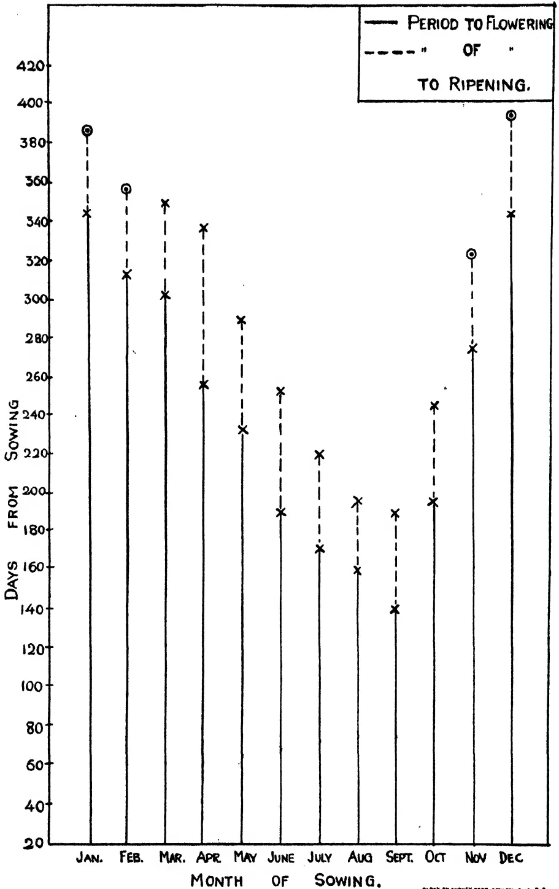
Legend:
| Month of Sowing | Days to Flowering (Solid Line) | Days to Ripening (Dashed Line) | No Crop (Circle) |
|---|---|---|---|
| JAN. | 345 | 385 | 385 |
| FEB. | 315 | 355 | 355 |
| MAR. | 305 | 345 | |
| APR. | 255 | 335 | |
| MAY | 235 | 290 | |
| JUNE | 190 | 250 | |
| JULY | 170 | 220 | |
| AUG | 160 | 195 | |
| SEPT. | 140 | 190 | |
| OCT | 195 | 245 | |
| NOV | 275 | 325 | 325 |
| DEC | 345 | 395 | 395 |
BLOCK BY SURVEY DEPT., CEYLON, 4.4.36.
FIG. 1.—MAHA. A CIRCLE INDICATES NO CROP288
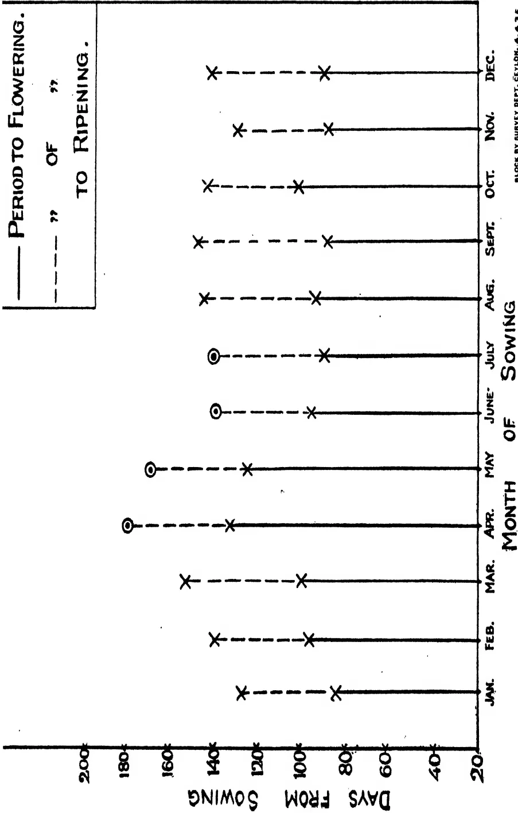
— PERIOD TO FLOWERING.
- - - - - OF " "
TO RIPENING.
| Month | Days to Flowering (Solid) | Days to Ripening (Dashed) | Notes |
|---|---|---|---|
| JAN. | 140 | 140 | |
| FEB. | 140 | 140 | |
| MAR. | 140 | 140 | |
| APR. | 140 | 140 | Circle (No crop) |
| MAY | 140 | 140 | Circle (No crop) |
| JUNE | 140 | 140 | Circle (No crop) |
| JULY | 140 | 140 | Circle (No crop) |
| AUG. | 140 | 140 | |
| SEPT. | 140 | 140 | |
| OCT. | 140 | 140 | |
| NOV. | 140 | 140 | |
| DEC. | 140 | 140 |
BLOCK BY SURVEY DEPT. CEYLON. 4.4.36
FIG. II.—YALA. A CIRCLE INDICATES NO CROP
289N. SENATHIRAJA,
AGRICULTURAL INSTRUCTOR, BANDARAGAMA
THE first trials with these vegetables which ordinarily grow in temperate climates and which have hitherto been grown in Ceylon only on the hills were made in the Experiment Station, Jaffna, in 1924. The work has been continued up to the present.
The aim of the management from the beginning was to test the possibility of growing cabbages on an economic scale to be adopted by the village farmers as a money crop. Observations were made and valuable experience gained with regard to the time of sowing, preparation of the seed bed, watering, transplanting, spacing, preparatory cultivation, suitable manures, after cultivation irrigation, etc.
Since 1930 a progressively growing number of farmers have been encouraged to grow this crop on a commercial scale, and with its increasing popularity here is a demand for information with regard to the most suitable varieties and the proper method of cultivation. This article is intended to meet this demand.
The Cape cabbage has given the best results. There are several types of this which thrive equally well under the same conditions and can be grouped into early and late varieties. Early varieties take 80 to 100 days to mature while late varieties 100-120 days. Of the types tested the best were (1) Cape Largest Solid Drum Head—this variety withstands heat and sun admirably well. It produces a high percentage of uniform good quality heads. (2) Cape Early Drum Head—this is a flat headed variety and has an abundance of wrapper leaf of deep green colour. (3) Cape Early Sugar Loaf—it is a medium sized variety with pointed heads, slightly lighter in colour than Cape Early Drum Head.
The seed cannot be matured satisfactorily under local conditions. Imported seed should be secured for each season.
290It is specially necessary that good seed with a reputation for a high percentage of germination be obtained from a reliable seedsman.
The season for sowing cabbage is from the latter half of August to the middle of October. It is a good practice to make three sowings say one by the 25th of August, one about the 15th of September and one by the beginning of October. The first and second sowings can be done in well prepared beds as there will be less damage by rain, but for the third sowing boxes should be used to save loss from heavy rains. A bed of 5' × 30' should give ample plants for an acre. The third sowing is the most important for a strong plant is required for late planting. When the plants are about four weeks old in the boxes they should be transferred to a bed richly manured before they are set out in the field. These will head quickly and will be ready before the dry weather sets in. The first and second sowing need not be pricked out from the seed bed but may be taken direct therefrom to the field. The seed beds should not be as rich as the place where they are to finish their course. The seed should be sown in the beds rather thinly either broadcast or in the drills which may be about two inches apart and covered with an inch of soil.
Plants grown in drills are harder and much easier to lift and transplant. The soil should be of friable sandy loam free from stones and should receive an application of well rotted manure and leaf mould. After sowing the seeds the beds are covered with dried plantain leaves to hasten germination; after the seeds have germinated the plantain leaf covering is replaced by twigs of some shrubby growth known locally as "Manthu" which protects the young seedlings from the hot sun. It is not necessary to remove this cover of the bed to water it as it could be thoroughly watered with a watering can with a fine rose. When the seedlings are well up they should be exposed to the sun for a short time in the morning. The period of exposure should be gradually increased and when they are sufficiently hardened the covering is no longer necessary. The seedlings will be ready for transplanting when they are 4 to 5 weeks old. It is necessary to water the beds copiously at the initial stages to keep the surface moist in order to facilitate the germination of seed; later on the quantity of water should be reduced. The object of watering the seed bed is to keep it moist but not wet.
291If the bed is started about the 25th of August the plants should be ready for transplanting by the 15th October, with the initial rains of the North-East monsoon. The greater part of the rain falls between October and the first half of December. A large portion of this moisture is available for the early growth of the crop. The rainfall diminishes during the latter half of December and a dewy weather sets in and lasts till the middle of March. During this period occasionally light showers are received which tend to maintain the temperature of the soil and the air moderately cool which is a requirement to promote the development of heads of good quality. Cabbage must have an adequate supply of moisture throughout the growing season. An excessive amount of water in the soil is however not desirable and too much fluctuation of soil moisture may cause the production of loose and small heads.
Cabbage is grown successfully in a wide variety of soil types ranging from clay loams to sandy loams, but it grows to perfection on fertile loams rich in organic matter. For late crops which mature during dry weather, the heavier types of soil should be used for they hold more moisture and are cooler. The lighter and well drained soils may be employed to produce the crop that is planted early and grown during the cool season.
It must be remembered that the soil should be in a high state of fertility if a satisfactory growth of cabbage is to be obtained. The land should be thoroughly prepared before setting out the plants in the field. Thorough preparation of the land enables the plants to establish quicker and grow uniformly. When cabbages follow tobacco, dry ploughing is done in March or April—cattle ponning is done from July to October. The land is again ploughed and cross ploughed in October after the rains to cover the droppings and mix it with the soil. The burying of green leaf is done after the last ploughing which in addition to increasing the humus and nitrogen content of the soil assists in conserving the moisture in the soil at a uniform depth. Well decomposed cattle manure is applied at the rate of 16 carts per acre and covered with mammotties while levelling. The ground is then ready for planting.
When the plants have put out six to eight leaves they are ready for transplanting. Strong vigorous plants only
292should be selected for transplanting. Just before removal the beds from which the plants are to be taken should be thoroughly watered so as to soften the soil and to allow the seedlings being removed with a ball of earth attached to them. The rows should be marked out two feet apart and the plants set out feet in the rows. Transplanting is done by the same method as for other plants, that is, either a wooden pin bluntly sharpened or the fingers are used for making the hole into which the plant is placed and the soil is then pressed around the rootlets. Planting should be done late in the evening. The plants should be shaded and pot watered immediately after planting. The crop should be pot watered every morning in the absence of rain for about three weeks.
The crop requires clean cultivation and unremitting care. As soon as the plants have started growing stir the ground around them and give frequent clean cultivation.
In addition to green leaf and cattle manure the use of inorganic nitrogenous fertilizers is necessary to keep the soil in a state of high productivity. Generally, lack of nitrogen is what usually limits the growth of cabbage. Nitrogen can be applied in the inorganic form as nitrate of soda, sulphate of ammonia or Nicifos. The fertilizer may be applied after the first hoeing which is usually done three to four weeks after planting and until a month before harvest. The first application is done round the plants after the first hoeing at the rate of 100 to 120 lb. an acre. The second application of 150 lb. to 200 lb. is done after the second hoeing and the formation of beds and channels for irrigation, which is usually done about seven weeks after planting. After the beds and channels have been formed for irrigation further cultivation is not necessary and even beneficial except the removal of weeds which rob the soil of moisture and soil nutrients. The beds for irrigation are formed with the soil drawn towards the plants so that the water may stand at a distance from the base. The soil at the base of the plant is always kept loose which facilitates aeration and better stand is obtained. The crop is usually irrigated once in three days but the frequency of irrigation depends on weather and soil conditions. It takes some experience to know when to irrigate but as a rule the plants are in demand of water when they become dark green
293and the leaves look and feel leathery. When there is plentiful supply of moisture the leaves are brittle and are of a lighter green.
Serious damage is done to the crop by grasshoppers and caterpillars. The most serious injury is done by caterpillars to the terminal bud which hinders the formation of new leaves. The most destructive period is the rainy weather when the greatest number of the larvae are present. Control of these can be effected by spraying with a mixture made of 3 lb. of McDougal's lead arsenate to 100 gallons of water alternated with nicotine sulphate, spraying strength being 1 oz. to 2 gallons of water. These insecticides in amounts used have been found not poisonous to human beings and can be used without danger. On the beds ashes should be sprinkled over the young plants to prevent them being damaged by insects.
Harvesting should not take place until the heads are hard. Inexperienced cultivators have a tendency at times to harvest cabbage too soon especially if prices are high. Immature heads wilt more readily and will not sell well. Harvesting should furthermore not be done after an irrigation. Then the leaves are crisp and brittle and breaks easily in handling. If just slightly withered they are injured less in handling and packing and consequently will carry better transit. Cabbage should be cut above ground. Then the stumps give a crop of sprouts which if tendered carefully supply another gathering.
The yield was recorded by the number of heads harvested and sold. The production of cabbage averaged about 8,000 good heads per acre. The prices received averaged 18 cents per head. The cost of cultivation was estimated to be Rs. 400.00 per acre including cost of seed, manures, labour and irrigation. This leaves a nett profit of over Rs. 1,000.00 per acre. But these figures cannot be regarded as stable. The novelty of the crop made the local consumers pay a price which cannot be demanded by an established industry. But even at a price of 10 cts. per head a substantial margin of profit will remain.
294[In view of the general interest being taken in soil erosion in Ceylon at the present time, the following article by a leading authority on soil conservation in the United States may be of interest to readers.—Ed. T. A.]
It was not so long ago that enormous dust clouds were rolling out of the Middle West to drop a stifling shroud over the country from the Mississippi Valley to the Atlantic Coast. In June, raging flood waters were bringing havoc to portions of three western states. The first week of July witnessed a tornado in Montana and a cloudburst and flood in New York. Since then Ohio and Wisconsin have experienced record-breaking rains followed by flood waters, and just a short time ago a disastrous hurricane in Florida was accompanied by torrential rains as far north as Maryland. Damage was estimated at millions of dollars.
But the estimates failed to include the most permanent damage of all—the destruction of the soil. Houses and other properties destroyed by the raging waters can be replaced; crops swept out by prairie winds can be replanted. But the fertile soil blown high into the sky or washed by the ton into streams and rivers is lost forever. Spectacular and destructive as these storms are, and as violent and harmful as the floods have been, they do not constitute the really great menace to our soil resources.
The truly tremendous waste is constant. Ruination of the soil is not confined to brief periods when nature exerts the full force of her elements. It proceeds steadily wherever man's cultivation of the land has bared the soil to the wash of descending rain and the sweep of the wind. There is no way of preventing cloudbursts. We have to accept them as they come and hope they will be few and far between. All we can do is attempt to control the floods that often follow.
Dust storms are different. Where cloudbursts are the product of some strange array of nature's elements, dust storms are brought on by man's own misguided failure to protect the soil as he tills it. By simple reasoning, therefore, if he can be guided into the use of practical measures of soil conservation, the cause of the dust storms will be removed. The very nature of these storms has given rise to the popular belief that they are the beginning and the end, the fact and symbol of all soil erosion. This is not true. The gradual washing away of rich topsoil by the runoff of rain-water is far more serious because it is not only constant but wide-spread.
In the work of erosion control, we have come to divide soil erosion into three classes; namely, wind erosion, sheet erosion and gullying. I need only to recall the dust storms to define wind erosion. Sheet erosion is the washing
*By H. H. Bennett, Chief of the Soil Conservation Service, U. S. Department of Agriculture in The February Scientific Monthly.
295away of a thin layer of topsoil from sloping fields. Gully erosion follows in its wake to cut deep chasms and ravines which ultimately ruin our fertile fields for cultivation. So we find our country's soil damaged by both wind and water.
Few people realize how tremendously important this land wastage problem really is and how certain it is to effect the permanent welfare of the nation. It is not generally known, for example, that approximately 50 million acres of our erstwhile fertile farm land has been essentially ruined for further practical cultivation; and that another 50 million acres is bordering on this tragic condition.
A nation-wide erosion survey, conducted last year by the Soil Conservation Service, revealed that the extent of damage and ruin to basic farm land far exceeds all prior estimates, and that the 100 million acres so severely impoverished or ruined do not tell the whole sad story. Something like 125 million additional acres, still largely in cultivation, have lost all, or the greater part of their most productive topsoil, with a direct decrease in crop yields that is appalling.
And here, for a moment, I should like to discuss the philosophy which underlies our objective of soil conservation. Right now, as every one knows, agriculture in this country is facing an economic crisis brought on by an accumulation of circumstances in which over-production had a leading rôle. Few people realize, however, that agriculture also faces a physical crisis of tremendous importance to the continuing welfare of this nation.
The remedy for the economic problems which confront the farmer must necessarily be of an economic character. It is, of course, necessary to adjust the total production to the total effective demand. Certainly there is no virtue in producing so much that the price drops to a point which is less than the cost of production. It is never advisable, it can never be wise, to sacrifice productivity. There is nothing incompatible or inconsistent between adjustment of production and conservation of natural resources. For the entire agricultural structure, after all, depends fundamentally upon the physical integrity of the soil. If that physical integrity is depleted at a rate which will see our entire cultivated acreage virtually non-productive in half a century, there is no alternative for conservation. In other words, while we find it essential to control production, we must at the same time exert every effort to lower production costs, widen markets, improve quality of products and—this is what I wish to stress—maintain our basic resource, the soil. There is a danger, when the country is confronted simultaneously with agricultural crises of an economic and a physical nature, that this distinction may be obscured.
We likewise should remember that thousands of farmers have suffered continuous losses in revenue and are now fighting a losing battle against the poverty which is at least partially the result of extravagant, careless land use, as well as of price declines and maladjustments of the economic balance. If the farm land already ravished and ruined by soil erosion should be divided into 80-acre farms, and restored to its former productiveness, it would be physically capable of supporting no less than 1,250,000 families!
296Soil erosion is a serious problem in every one of the 48 states. Naturally, in some states it is more acute than in others. Nebraska, for example, has been affected considerably more than Delaware. Erosion is more prevalent in Texas than it is in Vermont.
Yet we have learned from sad experience that a state comparatively free from erosion this year may be seriously menaced within a decade unless proper care is taken to conserve the soil. Who would have predicted, back in 1925, that the entire Midwest would be so severely hit by dust storms in 1935? Who would care to predict what will happen in 1945 unless measures to protect the soil are taken at once? As can readily be understood, this is a national problem, which must be met on a national scale. The problem has gone beyond the local stage. It is no longer the concern of the individual farmer whether his land is washed or blown away. The very basis of America's future farming prosperity is at stake and that stake is too high for any but the most profound of considerations. Active leadership by state and federal governments is essential.
So the Soil Conservation Service, one of the youngest of established Federal Service agencies, has been assigned the job of saving our remaining area of good farm land from destructive erosion. It is a sizable commission, but we are moving ahead. The Service proposes to promote farm practices that will protect and conserve the farming lands of the country for permanent agricultural use. Certainly there can be no broad advance or strengthening in the individual farm position; or in upbuilding farm communities, until the land involved is stabilized in relation to soil erosion. In different words, the betterment of economic and social aspects of farm life is closely linked to the solution of the erosion problem.
If the Soil Conservation Service can initiate erosion-control measures on all seriously eroding lands within the next 10 years; if it can secure reasonable control of erosion within the next 20 years; and if it can establish preventive measures on practically all the better lands of the country within the next generation, it will have gone a long way toward solution of the problem. Although the Service has been in existence less than two years, it has already brought an area of approximately 40 million acres under its influence. Plans for expansion will more than double this area at an early date.
We appreciate the gigantic proportions of the task in front of us and are approaching it in all humility. We realize that the job can never be completed successfully without the concerted action, the consistent support and the creative co-operation of the whole people. For, after all, it is primarily and fundamentally a problem of the whole people. The task of conserving the soil is so vast and erosion has already made such headway that the Service could not possibly hope to treat all the land of the country, acre by acre, with necessary measures of erosion control. The job must be done through co-operation between federal and state agencies on the one hand and the farmers and landowners on the other.
The procedure adopted at the outset is one of demonstration. In this way the Service is able to carry its program to the greatest number of
297farmers with the least expenditure of time and money. As any thinking man will realize, the work of soil conservation must be carried on as economically and quickly as possible.
So, by demonstration, the Service is attempting to show that the impoverishment and destruction of our remaining areas of good agricultural land can be curbed to a very large degree. At the same time it is laying the foundation for a permanent national erosion control program of scope sufficiently broad to meet the acute land crisis created by wasteful methods of land utilization.
As a step towards its goal, the Service has established, or is in the process of establishing, 141 demonstration projects in 41 states, with the average working area for each project limited to approximately 25,000 acres.
Usually a demonstration project comprises all the land within a watershed; that is, all the land lying within the drainage basin of a given stream. Each project area is selected with the most careful consideration of its adaptability to an effective demonstration and its availability for inspection by a large number of farmers. In other words, a project area must be readily accessible to a great number of farmers and it must present erosion problems that are representative of the entire surrounding countryside. If water erosion is prevalent in the region, the project area must present opportunities to demonstrate how water erosion can be halted. If gullies are numerous around the countryside, work on the project must show how gullies can be controlled.
The farmers of a project area enter into contracts with the government, whereby they agree to operate their farms under guidance of the Soil Conservation Service, to furnish as much labor and material as possible to put the program under way, and to maintain for a five-year period the cropping plans and erosion control structures installed by the Service. In return, the Service agrees to lay out a complete erosion control program for each farm, supervise the work and furnish whatever supplementary labor and material is needed to do a complete job.
Once the Service has placed its control measures in operation, the farmers in the surrounding territory are invited to visit the project and inspect the methods being used. It is hoped in this way to show them just how they themselves can control erosion on their own farms. A demonstration project is in fact a show window.
Today more than 10,000 farmers have signed formal co-operative contracts, agreeing to carry out for a period of five years the control measures recommended by the erosion specialists as most adaptable to the needs of their lands. Yet the problem of soil erosion extends even further. In addition to the enormous loss incurred by abandoned acres, reduced crops yields and decreased fertility, the country is paying a heavy price for damage to its power and water supply reservoirs, its irrigation systems and its harbors and waterways.
Soil that is valuable on a farm is a menace when it begins to fill up our reservoirs and waterways. The soil washed from farms eventually empties into streams and rivers. Channels that have been deep have become shallow.
298Unable to hold the volume of water within its banks the river grows wider and wider, over-running its former boundaries. The possibilities of floods are greatly increased.
Frequently the silt washed from farm lands comes to rest in the bottom of a reservoir. Little by little the reservoir fills up. The capacity is decreased. Millions of invested dollars in the reservoirs are endangered. Social and economic values dependent upon the reservoirs are jeopardized.
The control of erosion is essentially a matter of better land use. It means that we must be more careful—much more careful—of the type of crops we plant, where we plant them and how often we plant them. It means that the day of unintelligent farming is past, just as surely as the day of farming by superstition is past. We have progressed beyond the stage where farmers plant their crops only during certain phases of the moon and harvest accordingly. Farming today must be as efficient as a city industry.
The program of the Soil Conservation Service aims primarily at the establishment of agriculture on precisely such a basis of efficiency. Adoption of the program does not mean that production will be impaired. On the contrary, we have already proven that protection of the soil is compatible with production. Our objective is merely to readjust agricultural practice to the needs of the soil.
The realization of that objective is far off. Years of tradition have dictated the farm practices now employed in many of our major agricultural regions. We should be tilting at windmills were we to attempt an overnight rearrangement of these practices, though, to be sure, we have accomplished almost that in several localities. We must proceed carefully, slowly and thoroughly to convince the farmer that our way is better than the way his father taught him. We must strive to inculcate in his mind a faith in our methods as strong as the faith that links him to the soil. We must instill into the farmers of America that almost reverent attachment for the land which has preserved the agriculture of certain smaller agricultural countries through the centuries.
Ours, certainly, is a goal fully worth the striving. For its attainment will mean that our children, and their children, and their children after them, in truth, "will inherit the earth."
299THE idea of vernalization originated as a result of a new outlook on plant growth and development formulated by the Odessa school of plant physiologists headed by T. D. Lysenko. Until 1930 it was unknown to wider circles of agriculturists, though since that time it has assumed a very prominent place in agricultural literature and thought. The general principles of the theory are now widely familiar. These are roughly that the growth and development, far from being identical as has been popularly supposed, are in reality two distinct and separate phenomena. Growth is regarded merely as increase in size and weight and such changes as flowering and reproduction are included under development. According to the new theory either of these two processes may proceed independently of the other, so that we may be faced with the extraordinary case of a plant which comes into flower without having grown or a plant which grows for ever without ever coming into flower. All that it is necessary to do, it would seem, to produce such remarkable behaviour, is to treat the plant in such a way that one of the two processes is favoured to the exclusion of the other. If seeds of winter wheat are germinated in an ice box and subjected to suitable conditions of light, aeration, humidity and other factors, they can be sown in spring and will come into ear at the same time as if they had been sown in the ordinary way in autumn. Hence the term "vernalization," which is a latinized equivalent of the Russian word "Jarovizacija," coined by Lysenko to describe the phenomenon and which strictly means "transformation of winter forms into spring."
The matter was first brought to the attention of English-speaking readers by a bulletin issued in 1933 by the Imperial Bureau Plant of Genetics. This early bulletin gave a complete outline of the method as it was described in Lysenko's first publications, and consisted mainly in the description of a practical method for the pre-sowing treatment of seed to obtain this accelerated development in a variety of crops. This method was rapidly seen to be of practical importance not merely in Russia but in all parts of the world. In view of the wide interest taken in the subject the Imperial Bureaux have continued to collect the literature relating to it. This has assumed such magnitude and the subject has become so much extended in its range that the whole matter has been reviewed afresh in a new and much enlarged bulletin covering some 150 pages, obtainable from the Imperial Bureaux, School of Agriculture, Cambridge, price 10s.
1 From The Rhodesia Agricultural Journal, Vol. XXXIII, No. 3, March, 1936.
300This new bulletin describes in detail the results of the many experiments that have been carried out on all sorts of crops under every possible condition, both in the Soviet Union and in other countries all over the world. The results of vernalization of over 6,000 varieties of wheat and of 500,000 hectares of vernalized sowings, based on replies to a questionnaire received from 1,056 different Soviet farms, are reported. The results have on the whole been satisfactory when the necessary conditions of technique have been observed and it would seem that the method may now be definitely regarded as a useful agricultural measure in countries where early ripening is a decisive factor in successful cultivation. For instance, spinach, sugar beet and even potatoes have by suitable treatment been grown at Hibiny in the Arctic circle. Cereals have been induced to ripen a week or more earlier, and by this means it has become possible to extend their cultivation to large tracts of country where this has been impossible hitherto because of drought or other unfavourable conditions. The main results of the Russian workers have now been confirmed in most countries where vernalization has been tried. In countries of more normal climatic conditions the method will probably not be of such wide application to the main crops, but in the case of salad, vegetable and market garden crops a difference of a few days may prove of tremendous economic importance and a considerable future is foreseen in the application of vernalization to plants of this type. The Russian workers have even claimed to get increased yields from vernalized sowings, but there seems to be some difference of opinion on this point, and others have observed a depression in yield after vernalization.
At least half the bulletin is devoted to the physiological aspect of the phenomenon of vernalization. Lysenko's original conception has been extended to cover the whole range of plant development, in the form of the theory of Phasic Development. Development, says Lysenko, consists of a series of stages, each of which requires for its completion a definite combination of external conditions. The conditions for one phase may be different from those required for others, temperature being the decisive factor for the first stage and light for the second. Each stage must be completed before the succeeding one can be initiated, but once any stage has been completed there is nothing to prevent the progress of the following one, provided the necessary external conditions are forthcoming. The method of vernalization therefore consists in the provisions at as early a point in the life of the plant as possible of the requisite conditions for all the developmental stages leading up to reproduction, thus curtailing the long periods of time that normally occur between these successive stages. A freshly germinated seed has been found to be the most suitable material to work on, as this can be conveniently treated before sowing and then sown in the ordinary way.
Other Soviet botanists, though agreeing with Lysenko's general findings, disagree with many of his conclusions and have put forward theories of their
301own. The views of these other workers are presented in the bulletin side by side with those of Lysenko in a spirit of pure impartiality. In fact, a careful study of this bulletin shows that it has dealt with the available information from all possible points of view, equally generous treatment being given to the practical application of the method in agriculture and horticulture and to its theoretical explanation. It will be of interest to plant physiologists, biochemists, plant breeders, teaching botanists, and indeed, to anyone concerned with modern trends of botanical and agricultural research. "The rapid development in scientific research is one of the outstanding features of the Twentieth Century," as Sir David Chadwick aptly remarks in his foreword. "Research workers need the earliest possible information of developments affecting their line of study, but frequently find themselves baffled by its volume and by linguistic difficulties." To overcome these difficulties the Imperial Agricultural Bureaux were organised in 1929 and the bulletin under review affords an admirable example of how these Bureaux fulfil their function. The large majority of the articles with which the bulletin deals are written in Russian and would have remained entirely unknown to the rest of the world if they had not been made available in the present form. A total of over 200 separate articles are considered and reviewed in detail and large sections of the tabulated results of the authors are reproduced in a review of the work of the whole world on this controversial but entrancing new subject.
302FOR some eight thousand years man has been engaged in the breeding of plants for his own use, and during these long centuries of time there has been a steady improvement of all the plants which provide him with material for food, clothing and ornament. Up to thirty-five years ago this improvement was for the most part haphazard and accidental; though in fact intelligent selection of the best and most useful varieties was constantly practised, and any new improvements unexpectedly arising were carefully preserved. Actually the progress achieved by these non-scientific but commonsense methods was extraordinarily good, but owing to a lack of knowledge of the laws of heredity it was of necessity extremely slow and often wasteful in effort and outlay.
In 1900 the finding of Mendel's long-lost paper disclosing his discovery of the fundamental laws of heredity caused a complete revolution in breeding. To their credit plant-breeders were quick to grasp the importance of the new facts in helping them to a more speedy and a surer solution of their problems. In all cultivated plants new work was enthusiastically carried through, old varieties were tested and purified and new varieties were raised which contained a preponderance of desirable qualities. The further discovery that all heritable characters, whether structural or functional, were due to the actions and reactions of the minute living molecules known as genes, situated in the chromosome threads of the nucleus of each cell in every plant and animal (including man), was a still greater cause of progress. It was immediately realised that the best results in breeding could only be obtained by an intensive study of the chromosomes and genes of any plant which was being used. This study revealed many startling facts, and provided a complete explanation of some hitherto quite inexplicable difficulties. It is safe to say that the union of the two new sciences of Cytology and Genetics into one was one of the greatest revolutions ever brought about in biological science and is bound to have the greatest possible influence on the future of man.
After thirty years of concentrated experiments by a great number of research workers with millions of plants and animals in the numerous laboratories and research stations which had sprung up all over the world, it was realised that in many cases the limit of improvement had been reached. The existing varieties had been bred to such an extent that their possibilities were more or less exhausted, their desirable genes had all been utilized and all the most desirable combinations had already been attained, though in many cases the ideal had not been fulfilled. Only one thing could give further progress—the introduction of new genes and new methods of combining them with the old genes.
*By C. C. Hurst, Ph.D., Sc.D., Trinity College, Cambridge, in The Empire Cotton Growing Review, Vol. XIII, No. 2, April, 1936.
303The discovery that new mutations could be produced by X-raying gave a new stimulus to the work. Unfortunately, as in all natural mutations, the great majority of X-ray mutations are pathological or lethal, so that although their incidence is enormously increased the production of new forms of real value by this means involves considerable labour in testing large progenies. Fortunately a new and extremely profitable method arose in the hybridization of widely distinct species and even genera which, by their combination, brought together entirely new gene-complexes of a highly desirable kind. Hitherto the union of different species had brought about little success owing to the sterility of the hybrids. The discovery that a duplication of the entire chromosome set of the hybrid either in the germ cells or in the body cells (Hurst, 1933, 1935) produced fertile germ cells and progeny and created new species and genera, gave new hope to this branch of breeding which has proved to be amply justified. In this connection the use of X-rays is of great value, for one of the most useful results of this treatment is the duplication of chromosome sets. In an ordinary species this is important, although not of vital importance, since it only increases the size of the individual without producing any other desirable genic changes, but in these specific or generic hybrids it is of the utmost value, for it converts a sterile hybrid into a fertile and pure-breeding new species or genus combining the qualities of the two parent species, and containing a new complex of genes which often in their reactions together give rise to new qualities. Above all the new forms possess greater potentialities for mutation in the greater number of genes, and hence afford more hope for the production of new varieties.
Here we come to the real essence of modern plant-breeding. Once the possibilities of interspecific and intergeneric breeding were realized, the introduction of new genes became an all-absorbing problem. The great work of the modern breeder is the search for new genes, especially those which give resistance to the numerous and devastating diseases which attack crops in every country. Fortunately, it has been discovered that in most genera there are many wild growing species which are immune to the diseases which attack cultivated plants, and by using these species it is hoped to be able to produce disease-resistant plants which will still contain all the desirable points of our best cultivated varieties together with the addition of other good characters which are not yet present.
Under their able leader Dr. N. I. Vavilov, the Russian plant-breeders have been in the forefront of this new phase of breeding. Expeditions have been sent out to every country in the world to collect all the possible species allied to the plants which constitute our present crops, and also to discover new sources of the various commercial commodities, such as fibres, oils, rubber, etc. In addition to the wild growing species there are many ancient species and varieties still in cultivation in remote and outlying districts which contain valuable qualities, especially in their adaptation to peculiar and exacting environments. One of the great problems of modern plant-breeding, besides that of disease resistance, is the production of varieties which will give a full yield under adverse conditions. In a country such as Russia, and within our own Empire (under such diverse conditions as exist in Australia
304or Canada), there is a great need for new varieties and new types of crops fitted to each particular type of locality. It is useless to expect a high-yielding, disease-resistant plant fitted to normal conditions to function adequately in districts subject to drought or to extreme cold; such districts must have their own varieties specially bred for them. For this purpose the old-type crops of the isolated communities are ideal, for they have, through countless generations of natural selection, become adapted to their environment, which in many cases is of a highly specialized character, since they are usually found in out-of-the-way mountain districts or under steppe or desert conditions. In these districts there is a wealth of new genes to be found in every kind of cultivated plant fitted to all possible conditions.
The experimental stations throughout the world are making exhaustive collections of the likely wild-growing species and of the locally cultivated crops, and from the new gene combinations arising from their hybridization with our existing crops great hopes are entertained.
Cotton.—In cottons work has been proceeding steadily all over the world. In attempts to produce cottons suitable for their diverse environmental conditions the Russians have put in an immense amount of work in studying the genes and chromosomes of varieties and species, and have carried through numbers of hybridizations. At Tashkent, a study was made of ginning percentages by investigating the number and weight of the fibres and weight of seed, and it was found that there was a wide deviation in this respect between different cottons. The number of fibres per seed in seven varieties of American cotton varied from 7.8 to 14.7 thousand, while the weight of a thousand fibres varied from 4.4 mg. to 7.6 mg., and the seed weight from 97.0 to 167.2 mg. In G. herbaceum the number of fibres per seed varied from 3.6 to 9.2 thousand, the weight of a thousand fibres from 3.4 mg. to 5.8 mg., and the seed weight from 69.7 to 111.8 mg. Crosses have been made in which it is hoped to combine the higher number of fibres with the heavier weight, and in the second generation of a cross between two lines of G. herbaceum some plants arose with the desired combination and showed a ginning percentage of from 7 to 13 per cent. higher than the better parent. In the fourth generation a true breeding line was obtained in which the percentage was 8 per cent. higher than the better parent.
The type of boll in G. herbaceum is very variable, but the closed boll proved to be a simple mendelian recessive to the open or semi-open boll, both of which are undesirable in mechanical harvesting. Size of boll was found to be dependent on a number of genes in American cottons, and it was necessary to grow some thousands of seedlings to obtain the desired types. By crossing with early maturing forms it was also found possible to unite high yield with early maturity. Many other points were studied, and it is pointed out that since a large number of genes are involved in these cottons it is wiser to limit the parental combinations as much as possible in producing new varieties by hybridization, and to grow the largest possible number of progeny. Back-crossing is also useful for reducing the number of segregating types in later generations.
305The Transcaucasian Cotton Research Institute have issued a bulletin describing the progress made in the acclimatization of Egyptian Cottons ; descriptions, illustrations and lint qualities of selected new lines are given. The varieties have been divided into six groups based on their maturity periods. Another publication from Moscow gives the spinning qualities of a number of the best improved varieties grown in the U.S.S.R. Varieties of the Pima type of Lower Egyptian Cottons have been grown under varying conditions for comparison. Upper Egyptian types, including Ashmouni and allied varieties, Uplands and strains with medium staple, have also been tested. It has been found that by means of transplantation it is possible to grow high-quality Egyptian varieties in the region of Tashkent, and some selections of Pima can be spun to 120 counts. Longstapled Uplands, however, are superior in yield, and are as good as the Egyptians for spinning 50's and 60's.
The experiments in vernalization of cotton were attended with much success, not only in producing a higher yield under normal conditions, but also in several cases, in increasing in lint length. The seed is moistened and then kept at a temperature of 25° to 30° C. for varying periods. It was found that the best results were obtained after ten to fifteen days' treatment for Navrotskii, fifteen to twenty days for Acala 8517, and fifteen days for the Egyptians ; longer periods caused depression of germination and shorter periods had no effect. The chief effect of optimum treatment seems to be a more rapid completion of the various phases of development rather than any particular acceleration of their inception. All the varieties vernalized germinated from two to three days earlier than the controls, but later stages showed considerable variation. In the American cottons treatment produced a tendency to higher ginning percentage and length of lint, but in the Egyptians the ginning percentage was increased while the lint length was slightly decreased. The flowering period was usually from three to four days earlier, but in Navrotskii it was as much as thirteen days, and in Ashmouni nine. The differences in maturity were often greater, varying from four to fifteen days earlier. In all cases the plants treated in the Russian experiments showed an improvement over the controls and it is probable that this method may be of much value in growing crops in those regions not naturally fitted for them. Certain cases of failure are attributed to imperfection of technique rather than to any deficiency in the treatment, and different varieties gave widely different reactions ; in some cases there were even differences within the varieties themselves. It is pointed out that greater knowledge is needed before the best results can be expected. The effect was that treatment was considerably greater in 1933 (which was a very bad season for cotton-growing in the new regions) than in 1934, when the natural conditions were more favourable to normal growth. Vernalized sowings were made on a large scale on collective farms in 1932, 1933 and 1934, with an increase from 600 ha. to 3,000 ha. under cultivation in the three years. The average yield increase was from 0.3 to 2.5 centner per ha. but on one farm the yield increased in the treated crops was four times that of the untreated.
At Tashkent experiments were also made on the photoperiodism (adaptation to length of light-day) of the cotton plant, subjecting different
306varieties to daily illumination amounting to 6, 9 and 12 hours against the average of 14 hours of the controls growing under normal conditions. Observations showed that cotton is essentially a short-day plant, which complicates its successful growth in long-day regions, since a reduction of illumination causes early maturity. Different varieties, however, show different heredity reactions corresponding to the position of their original environment with regard to the equator, those from equatorial regions needing the least light and this effect becoming less and less as their place of origin is further removed from the equator. The general effect of the shortened illumination is the production of sympodial branches at a lower level and consequently an earlier production of flowers and bolls. By making the necessary comparative alterations in the daily amount of light it is possible to synchronize the flowering periods of widely divergent varieties and species, and to make crosses hitherto difficult owing to the difference of their flowering seasons in these new regions. Crosses have thus been made between Egyptian cottons with low boll weight and several South American cottons with very large bolls but of short day and perennial habit.
Within our own Empire work on the improvement of cottons is also steadily proceeding, but this is too well known here to need repetition.
Beans.—New varieties of Soya beans have been produced, suitable for conditions on the Ukraine Steppes. Those previously grown proved unsuitable for mechanical harvesting owing to the pods occurring too low down on the plants. Of the new strains produced one is equal in yield to the best imported types and is early maturing, while another provides superior fodder. In Uruguay, where the varieties are successful elsewhere have proved failures, a collection of 233 varieties from widely different sources and conditions has provided ten promising types. Selected lines of these have given very high yields, and others have been bred which are resistant to drought, which normally has a very adverse effect on germinating qualities, both at harvest and sowing. The best of these new lines have a protein content of 34 to 39 per cent. and oil content of 14 to 20.5 per cent. with a yield up to 1,000 kg. per ha.
This wonder plant, the "staff of life" in the Orient, which provides meal, oil, food for cattle and a fertilizer, has also been successfully introduced into England by careful selection of early maturing varieties and their acclimatization for several years by Mr. J. L. North. The remarkable properties of the Soya bean are not yet appreciated by the British farmer, and a book on the subject has recently been written by Miss E. Bowdidge to make its cultivation more popular. It is to be hoped that its value may soon be realized and taken advantage of by its widespread cultivation.
Cereals.—Work steadily proceeds all over the world to produce new improved forms capable of cultivation under diverse conditions, and to provide each district with an ideal variety by hybridizing the highly specialized local cultivated forms and species with the high yielding normal types. The new genera formed by generic crosses between wheat and rye, and wheat and Aegilops in Russia and Germany have already been described in this Review (Hurst, 1932), but recently an even more interesting line of investi-
307gation has been opened up in the hybridization of wheats with the couch-grass Agropyrum. This grass is perennial, and it is hoped thus to produce perennial wheats of extreme hardiness for cultivation under adverse conditions. Three species of Agropyrum have been successfully used in crosses at Saratov. The first-generation plants are very luxuriant, forming up to 150 heads on one plant. They show a preponderance of Agropyrum characters, which is to be expected since Agropyrum is a decaploid with 70 chromosomes (10 sets) while Triticum vulgare is a hexaploid with 42 chromosomes (6 sets). The hybrids were all perennial and fully resistant to frost, and the first generation of T. vulgare crossed with A. elongatum is distinguished by excellent fertility, one plant giving as many as 665 grains. Other crosses showed diminishing fertility according to the parentage. In the second generation wide segregation occurred, but the fertility was higher, the grains being large and vitreous. In the third generation many plants showed quite normal fertility, the grain being mainly of the wheat type. Several of the hybrids showed resistance to rust and smut, and freedom from shattering, with the addition of various other valuable characters, and this new breeding work is obviously of great practical importance. It is evident from the results obtained that certain species of couch-grass have a very close affinity with certain wheat species, their distinction apparently lying only in their two extra chromosome sets. Thus T. vulgare may be designated A + B + C and Agropyrum A + B + C + X + Y, other species of both having variations. Hence it should not be difficult to fix desirable types in future generations, and it is also probable that some fortunate duplications may occur to hasten the process.
The new genus Secalotriticum (Rye Wheat) (or Triticale) is already grown on a large scale. The most notable achievement of the Russian grain-breeders however is probably the distribution of a very large number of improved varieties of the chief grain crops (wheat, barley, oats and rye) especially suited for cultivation in all the main regions of the Soviet Union, including the arid zones. This has been achieved in the north by the production of ultra-early spring wheats and new hardy winter varieties. One of the new early oats is also highly resistant to drought and rust. The hybrid Avena sativa A. Byzantina exceed the standard yield by four times, and showed considerable resistance to leaf-rust, and a new rye produced by crossing a local form of Detskoje Selo with Rymker also showed a great increase. Further improvements are still required, however, especially in disease resistance. From a close study of the methods used it may be seen that all the desirable new qualities have been introduced by using local varieties in crossing, since they possess the essential genes for resistance which are needed by the existent varieties.
The Russian world collection of wheats shows that there are four groups of early maturing wheats: (1) Arctic, (2) from continental regions of the subtropics, (3) from mountain regions, (4) from countries of periodic rain such as China and Japan. In other respects however, these wheats are very different: those from the north need little warmth but much light, and those from the south are resistant to heat but need little light. By the requisite crossings early maturing forms can be raised with varying reactions according to the latitude for which they are required.
308Great improvements have been carried out in India on wheats and barleys so that they can now compete in quality with any in the world. At Pusa, types resistant to all the three rusts prevalent in India have been produced. In Egypt since 1921, work has been carried out with great success in the improvement of cereal crops by hybridizations between the native forms and imported varieties. In Australia, collections of cereals from all parts of Australia and other countries have been made in order to breed types fitted to all the very varied conditions of the continent. Three or four hundred valuable new lines have already been isolated and are undergoing exhaustive trials. All European countries as well as America are working on the same genetical lines, and the work done in cereals throughout the world is one of the greatest tributes to the success of modern genetics.
X-ray experiments with wheats show that each variety has its own particular reaction. The soft spring wheats give a great variety of mutants, while the durum varieties give a larger number of mutants but a limited number of types.
In China, work is being done in the hybridization of cultivated rice with the wild forms. A valuable new variety with vigorous growth, resistant to cold and to a high percentage of acidity in the soil, has already been produced. In Japan, experiments with X-rays, ultra-violet rays and temperature changes has induced all the known mutants of rice and other new ones, and in some cases mutants ripened 11 days earlier than the parents.
Lupins.—The Kaiser Wilhelm Institute have put on the market new alkaloid-free lupins which will grow on the most unfavourable light soils and produce extraordinary quantities of green fodder. Crosses between bitter and sweet lupins showed that absence of alkaloid is a simple recessive. The Russians have also done very much in the production of alkaloid-free lupins, having made two and a half million analyses in two years. The great advantage of these new lupins is their high yield and protein content and their capacity for growing on sandy soils where other crops cannot be produced. A common bitter lupin has been discovered with 21 per cent. oil content against the usual 4 to 6 per cent., and it is hoped to combine this new feature with the alkaloid freedom. Disease resistance is also being investigated.
Rubber.—The Russians have made expeditions also to discover new rubber plants suitable for cultivation in their temperate regions. Analyses of 1,048 species of 316 genera belonging to 95 families have been made, and rubber was found in 609 species. The best results were obtained within the Compositae family. A plant found in the Caucasus, Scorzonera tau-saghyz showed a higher rubber content than any plant known, the rubber being of high quality and easy to extract. Its unusual capacity for regeneration was also a marked peculiarity of this new species.
Tobacco.—In Russia, work is constantly proceeding to combine the hardiness and adaptations of local varieties with the finer flavour of more desirable varieties. Many extremely interesting compound types have been built up containing the chromosome complexes of three species of
309tobacco. Much segregation occurs, and desirable new types can be fixed in later generations. These synthesized varieties form a valuable reservoir of new and valuable forms, and correspond to the similar experiments in cereals. In America several pure breeding new species and varieties have been built up in this way, by hybridization followed by chromosome duplication or segregation. The use of ultra-violet rays was found to give rise to conditions of greater fertility in the hybrids. Goodspeed and others find that the tobacco plant is a specially good subject for X-ray treatment, and several useful mutants have arisen by this means. In one case fourteen different types were obtained from a single X-rayed sex cell; seven were pure breeding derivative types, the others are not yet constant.
Much work has also been carried out with such crops as bananas, sugar-beet, cacao, coconuts, coffee, hemp, potatoes and sugar.
In so short a space it is not possible to deal adequately with any one of the many lines of research being pursued, but enough has been mentioned to show how very much alive scientific plant-breeding is all over the world. Just as new genes are being introduced into existent crops, by the utilization of new species and local forms, so other wild species are being tested and tried out to produce new types of crops. Although the Russians have led the world in the exploitation of world resources, yet there are still untapped reservoirs of wild plants in the Soviet Union itself, many of which are promising new sources of rubber, fibres, etc. The great forests of South America are still largely unpenetrated by man, and one may expect vast stores of vegetable wealth to be had there for the seeking. Above all in China there is an unparalleled wealth of species and forms, often extremely localized. The intermingling here of tropical and temperate floras has resulted in the evolution of a vegetation of unequalled richness and variety. Our own plant collectors have shown us to some extent the horticultural treasures which are to be found there, but the great store of economic forms is still scarcely touched. Chinese forms are also generally characterized by a happy immunity from disease, and many cold-resistant forms of fruits, etc., which are at best only half hardy in the case of those now in cultivation, exist in the northern mountains and at higher altitudes in the south. Excessively late or early forms, wide variations of colour, form, size, flavour, yield, etc., promise an almost inexhaustible store of genes for the future. Thus we may look forward to a very considerable improvement in all our economic crops, fruits, vegetables, and flowers within the next few years with special adaptations to all the diverse environments of the various continents. The future of plant breeding is indeed bright, and although much labour will be involved it will be more than worthwhile in the usefulness of the results.
310Introduction.—Of the two practices, direct sowing and transplanting, the latter is by far the more important and it may be said that wherever facilities for transplanting obtain people will prefer it to broadcasting. It would be safer to say that four-fifths of the rice grown in the world is transplanted, and almost all countries like Spain, Italy, Japan, etc., where the highest acre yields are recorded adopt transplanting. Drilling is to a certain extent replacing the practice of transplanting owing to labour difficulties of transplanting as in California. In Italy where also labour is very expensive they have evolved a transplanting machine which can be worked in the puddle.
Broadcasting is usually confined to tracts where the water availability is uncertain and the season is not always dependable. The fact that the yield per acre is definitely higher for a transplanted crop is well recognised though the reason for this increase has not been explained satisfactorily by experimental evidence. It has been sometimes explained that transplanting acts in a way like root pruning; the injury to the root system stimulating the growth of the sub-aerial portion and resulting in increased tillering. It is also stated that transplanting gives a shock to the plant which stimulates better growth and better tillering and consequently better yield. This shock theory cannot, however, be accepted since seeds actually dibbled in lines evenly, yield as much as, if not better than a transplanted crop. In a small-scale experiment conducted some years ago at the Paddy Breeding Station, Coimbatore, comparing actual dibbling with transplanting in the case of two varieties, one a short duration variety, months, and another a medium duration one, 5 months, the dibbled plots gave decidedly higher yields than the transplanted. Similar results have been obtained in other parts of India and even outside India. If a satisfactory and practical method of actually dibbling the seed directly in the puddled field can be evolved there is no doubt that such a practice should prove an advantage over transplanting. The comparative merits of direct sowing and transplanting have formed the basis of experiments conducted at several of the Departmental Research Stations and the present note deals about such an experiment conducted at the Paddy Breeding Station, Coimbatore, for three seasons 1931-32 to 1933-34.
The Experiment.—The experiment was carried out with three strains as shown below:—
| Season | Strain No. | Duration of Strain |
|---|---|---|
| 1931-32 | Co. 1 | 5 months. |
| 1932-33 | Co. 1 | 5 ,, |
| 1932-33 | Co. 8 | 6 ,, |
| 1933-34 | Co. 9 | 4 ,, |
* By K. Ramiah, M.Sc., Dip. Agric., L. Ag., Paddy Specialist, and K. Hanumantha Row, B.Sc., Ag., Assistant to the Paddy Specialist in The Madras Agricultural Journal, Volume XXIV, No. 3, March 1936.
311A row of fields was divided into a number of 2½-cents plots and they were all very uniformly prepared. At the usual time of sowing the nursery, every alternate plot was well levelled and the sprouted seed was sown in it directly as uniformly as possible, and on the same day the nursery for the transplant plots was sown separately. At the time the seedlings were ready they were planted in the alternate plots in the row. The broadcasted plots were not interfered with in the beginning and at the time of transplanting, the plots were given a weeding and the seedlings were thinned out sufficiently so that the number of plants in an unit area was the same in both broadcasted and transplanted plots. At the time of harvesting, the plots were divided each into two equal halves so that the arrangement of the plots was of the A B B A fashion. Each sub-plot was now harvested separately and the yield data analysed statistically.
Besides determining the final yield, the number of plants per unit area (half a square yard), the number of earheads in it, length of the panicles, height of plants, etc., were also recorded from random samples in the different plots so that an explanation could be offered to account for the final yield differences. The sampling was done by putting in an iron ring, half a square yard in area at different spots chosen at random in all the plots and taking notes of the plants inside such rings. All the data obtained are given below.
| Year | 1931-32 | 1932-33 | 1933-34 | |||||
|---|---|---|---|---|---|---|---|---|
| Variety | Co. 1 | Co. 1 | Co. 8 | Co. 9 | ||||
| Treatment | Broad-casted | Trans-planted | Broad-casted | Trans-planted | Broad-casted | Trans-planted | Broad-casted | Trans-planted |
| Yield of grain in lb. of the experimental area—Total of 11 repetitions .. | 372 | 392 | 278 | 352 | 221 | 313 | 210 | 288.5 |
| Acre yield in lb. | 2,706 | 2,851 | 2,022 | 2,560 | 1,607 | 2,276 | 1,527 | 2,098 |
| Yield expressed as percentage of mean .. | 98.6 | 102.7 | 88.2 | 111.7 | 82.4 | 119.6 | 84.0 | 115.8 |
| Percentage standard error of the mean .. | 2.6 | 3.8 | 3.2 | 3.0 | ||||
| Number of ears per unit area (1/2 sq. yd.) .. | 133 | 101 | 105 | 96 | 114 | 103 | 67 | 84 |
| + 6.6 | + 3.24 | + 3.60 | + 2.25 | + 3.22 | + 2.01 | + 2.61 | + 4.45 | |
| Mean length of panicle in cms. | — | — | 19.0 | 20.54 | 17.88 | 21.07 | 20.2 | 19.6 |
| + 0.05 | + 0.06 | + 0.13 | + 0.14 | + 0.09 | + 0.08 | |||
| Mean height of plants in inches | — | — | 81.9 | 88.4 | 82.3 | 97.8 | — | — |
| + 0.80 | + 1.0 | + 0.84 | + 0.89 | |||||
The season was a bit late in 1931-32 and the plants in the broadcasted plots which were infested by thrips (Thrips oryzae) could not make any headway in the early stages. This prevented proper thinning being carried out
312with the result the number of plants per unit area in the two treatments broadcasted and transplanted, happened to be different. In the next two years there was no such difficulty experienced, but still the number of plants in the broadcasted plots was slightly more than in the transplanted plots.
Discussion of Results.—In 1931-32, the yields of broadcasted and transplanted plots were almost the same. For the reason mentioned previously the broadcasted plot could not be thinned and it had nearly twice the number of plants per unit area as compared to the transplanted crop. The lower population density in the latter was made up by increased tillering. In the second year, the population density was only slightly more in the broadcasted plot in both the varieties, Co. 1 and Co. 8, and still the difference in yield in favour of the transplanted crop has been considerable. Though the number of ears per unit area has been slightly in favour of the broadcasted plots, the individual panicles of the transplanted crop have been definitely bigger in both the varieties, and the bigger ear has been the main cause for the difference in yield. In the trial with the kar variety, Co. 9, in 1933-34, the advantage of transplanting has again been brought about. Though it is usually considered that the two treatments cannot make a big difference with regard to short duration rices, under Coimbatore conditions in a normal season, transplanting appears to be better than broadcasting even in a short duration crop. Unlike in the two other varieties, Co. 1 and Co. 8, the increased yield of the transplanted crop in this case has been brought about mainly by the larger number of ears per unit area, the size of the ear in the two treatments not being different.
Other observations.—Root System.—Observations were made on the root system of some plants in the two treatments. It was found that in the broadcasted crop, the plants did not have such a well developed root system as in the transplanted crop. The transplanted plants had a more extensive and deeper root system and this is probably the reason for the broadcasted crop always having the tendency to lodge. In the transplanted crop the tillering and rooting zone is about an inch or two below ground level, and in the broadcasted crop, the seed having been dropped on the surface, the root system is more on the surface and it does not give sufficient anchorage to the plant.
Flowering, duration and height.—Though in the experiments the sowing of the seed in the broadcasted plot and the sowing of seed in the nursery for the transplanted crop were done on the same date, the flowering of the transplanted crop was sharp and uniform, while in the broadcasted crop, it was uneven and delayed. The harvest of the broadcasted crop could be made only a day or two later than the transplanted crop.
In 1932-33 where height measurements were recorded the transplanted crop in both the varieties, Co. 1 and Co. 8, was always taller in growth than the broadcasted crop, the differences between the two being significant. Although no actual weighments of straw yield were made, it was apparent that the quantity of straw was more in the transplanted crop.
Economics of the two treatments.—While in the case of the broadcasted crop there is some extra expense due to the higher seed rate used and to the extra weeding that has to be given, in the case of the transplanted crop, the extra expenditure due to the raising of the seedlings and transplanting the same is very much more considerable. As the figures given below show,
313the value of the increased yield obtained from a transplanted crop not only covers the additional expenditure but leaves a clear extra profit. This net extra profit is about Rs. 14 in the case of Co. 1, Rs. 18-8-0 in the case of Co. 8, and Rs. 8-8-0 in the case of Co. 9, (kar).
| Co. 1 lb. |
Co. 8 lb. |
Co. 9 lb. |
||
|---|---|---|---|---|
| Extra yield of grain per acre due to transplanting .. .. | 538 Rs. |
669 Rs. |
571 Rs. |
|
| Value of this extra produce .. | 19-3-6 | 23-14-0 | 13-14-6 | Rs. |
| Extra expenses incurred with transplanting: | ||||
| Cost of raising seedlings .. .. | 5- 0-0 | |||
| Transplanting charges .. .. | 2- 4-0 | |||
| Total .. | 7- 4-0 | |||
| Extra expenses in the broadcast crop: | ||||
| Cost of excess seed .. .. | 0-12-0 | |||
| Cost of one additional weeding and filling gaps .. .. | 1- 2-0 | |||
| Total .. | 1-14-0 | |||
| Net extra expenses in transplanting over broadcasting .. .. | 5- 6-0 | |||
| Net profit by transplanting .. | 5- 6-0 | 5- 6-0 | 5- 6-0 | |
| 13-13-6 | 18- 8-0 | 8- 8-6 |
Summary.—The practice of raising a nursery and transplanting the crop in rice is always preferred to the direct sowing of the seed in the field. That the latter practice still obtains in some tracts is due to the uncertain seasonal conditions and inadequate irrigation facilities.
The comparative merits of the two practices were investigated into by regular experiments at the Paddy Breeding Station, Coimbatore. Three varieties of rice, a short duration kar crop, a medium duration samba crop, and a long duration samba crop were experimented with, and in every case transplanting was definitely found to be very much better than direct sowing. In the samba varieties the increased yield was brought about mainly by the bigger size of the earheads in the transplanted crop and in the kar crop by the bigger number of earheads per unit area. Even after allowing for the extra expenditure involved in the raising of seedlings and the transplanting of the same, the value of the extra produce obtained in the transplanted crop was enough to leave a clear net profit of Rs. 8 to Rs. 14 per acre.
314Minutes of the thirty-first meeting of the Board of Management, held in the Committee Room of the Ceylon Chamber of Commerce, Colombo, at 2.30 p.m. on Thursday, 19th March, 1936.
Present.—Mr. C. H. Collins, C.C.S., (Deputy Financial Secretary), Mr. I. L. Cameron, Mr. C. E. A. Dias, J.P., Mr. L. B. De Mel, J.P. U.P.M., Col. T. G. Jayewardena, V.D., Mr. J. C. Kelly, Mr. F. A. Obeyesekere and Mr. C. A. Pereira.
Mr. R. K. S. Murray, Acting Director of Research, was also present by invitation.
In the absence of the Chairman, Mr. C. H. Collins was voted to the chair.
Apologies for absence were received from the Hon'ble Mr. J. L. Kotalawala, Mr. B. M. Selwyn, Mr. E. W. Whitelaw, and Col. T. Y. Wright.
Draft minutes of the thirtieth meeting which had been circulated to members were confirmed and signed by the Chairman.
The Chairman reported the following changes in membership of the Board since the last meeting :—
A vote of appreciation of Mr. Gapp's services to the Board was passed. Mr. Kelly was welcomed to the Board, and Mr. Rolfe was thanked for his acting services.
(a) Memorandum re soil erosion—Reported that the memorandum had been approved and sent in reply to the enquiry from the Central Board of Agriculture.
(b) Travelling expenses of the Director of Research in England—Reported that members had agreed to payment of travelling expenses to Mr. O'Brien for visits to factories, institutions, etc., as approved by the Chairman of the London Advisory Committee up to a total amount not exceeding £50.
315(c) Mr. R. K. S. Murray acting on Budded Rubber Assessment Board—Reported that members had agreed to Mr. Murray's serving on the Budded Rubber Assessment Board during the period of Mr. O'Brien's absence on leave.
A favourable report had been received from the Government Electrical Department regarding the power supply available at Dartonfield, and it was decided to apply to the Department of Industries for a grant of Rs. 30,000.00 to cover the cost of purchasing and installing machinery for manufacturing rubber flooring and other products on a semi-commercial scale.
Consideration of the question of continuing to contribute towards the expenses of the London Advisory Committee was deferred pending the establishment of the proposed International Research Institute.
It was decided that a Soil Chemist should be appointed as soon as funds were available. In order to enable prospective candidates to qualify for the post it was decided to make it publicly known that a Soil Chemist would probably be appointed in 1937 or 1938.
(a) Statement of Receipts and Payments of the Board for the 4th quarter, 1935 and of the London Advisory Committee for the 3rd and 4th quarters, 1935, were adopted.
(b) Balance Sheet and Income and Expenditure A/c and Auditor's Report for 1935 were adopted and supplementary votes passed to cover excesses of expenditure on 1935 estimates.
(c) Unexpended balances of capital votes passed in 1935 totalling Rs. 54,761.00 were re-voted.
(d) A list of unserviceable articles written off the inventory in 1935 was tabled.
(e) Dartonfield and Nivitigalakele Accounts for October, November and December 1935 were tabled.
(f) Furniture lists of Senior, Junior and Superintendent's bungalows were tabled.
(g) Payment of a gratuity of Rs. 20.00 to the rubber-maker of Kandanuwara Estate, Matale, for supervision of latex measurements in connection with Oidium experiments in 1935 was sanctioned.
(h) Reported renewal of fixed deposits totalling Rs. 105,000.00 and transfer to current a/c of deposits totalling Rs. 40,000.00 to meet anticipated expenditure on buildings.
(a) Mr. W. I. Pieris' new agreement.—Reported that this had been signed and the Board's seal on it authenticated by the Acting Chairman and Mr. Collins.
(b) Mr. T. E. H. O'Brien's agreement.—Leave terms decided on at the last meeting were confirmed.
316(c) Junior Staff.—Changes in laboratory and estate staff were reported.
Sick leave taken in excess of the prescribed period by two officers was allowed.
A. Mr. E. W. Whitclaw's resignation was noted with regret and Mr. C. E. A. Dias was appointed to fill the vacancy.
B. Col. T. G. Jayewardena, who had vacated his seat by reason of absence from three consecutive meetings of the Committee, was re-instated.
C. Mr. I. L. Cameron gave notice of his resignation from the Committee owing to pressure of other work.
D. The Committee's recommendation that the publications of the Scheme should be sent to the Algemeen Landbouw Syndicaat was approved.
E. The Committee's recommendation regarding revision of technical handbooks was approved, but it was agreed that action would have to be deferred until Mr. O'Brien's return from leave.
It was decided to obtain a number of copies of the Malayan Rubber Research Institute's Planting Manual No. 5, entitled "The history and description of clones of Hevea Braziliensis" for sale locally in view of the prevailing interest in replanting.
F. The Committee's recommendation that technical officers' progress reports should in future be issued at quarterly instead of monthly intervals was approved.
G. The Committee's recommendation that a charge should be made for electric current supplied to officers' bungalows and that they should not be allowed to instal appliances which consume a large quantity of power was approved.
H. Visitors' day at Dartonfield.—The following recommendations of the Committee were approved.
That there should be fixed visitors' days and that the Estate Superintendent should be available each Wednesday and the Technical Officers on the 2nd and 4th Wednesdays of each month in order to show visitors round the estate.
That intending visitors should be asked to arrive by 9.30 a.m.
That explanatory notice boards should be provided in each experimental area.
I. Approach road to Dartonfield—It was decided to apply to Government for a grant for maintenance of the road.
J. 1936 Replanting Experiment—It was decided that an experiment for measuring erosion from the contour drained areas by installing cement tanks to collect silt should be undertaken as soon as possible.
A Sub-Committee consisting of the two representatives of small holders on the Board, the Director of Research and the Small Holdings Officer was appointed to consider the organisation of small-holdings work. In order to obviate delay in the work of the Small Holdings Officer the Committee was authorised to appoint one instructor before its report is considered by the Board.
The meeting closed with a vote of thanks to the chair.
317Scientific Horticulture—The Journal of The Horticultural Education Association. Volume IV, 1936.—Price 3s. 6d.
THIS compilation, formerly the Horticultural Education Association Year Book, affords most valuable information to the horticulturist in temperate regions and much, with adaptation, applies also to horticultural enterprises in other zones.
The unity of theory and practice is well illustrated in this compilation. Horticultural science in England, though yet in its youth, makes rapid strides assisted as it is by the Institutes at Long Ashton, East Malling, Wye and Wisley among others.
Dealing in particular with horticulture in North Wales the President deplores the tendency, since the majority of horticultural workers are drawn from the elementary and secondary schools, of such schools being placed to too great an extent in the towns or populous districts rather than bringing the town children into the country, thereby suggesting to the youth during his impressionable age that town life is everything and country life something to leave behind.
Ceylon, with its rural education schemes and school gardens representing rural interests, would appear to be taking the first steps in the right direction.
Commercial horticulture in Sussex and papers on market gardens with tomato and potato growing and raspberry growing in Scotland affords interesting reading, but of more interest locally is Prof. R. J. D. Graham's paper to the West of Scotland Agricultural College on vegetative reproduction by means of rooted cuttings. Many instances are afforded of the various methods employed, and necessary, with different types of plants. With the host of exotic plants in Ceylon, of economic and ornamental value which fail to produce seed and must necessarily be propagated by vegetative means, these methods afford a new guide. Generally the main principles advocated and to which attention must initially be given are (a) selection of plant portion for cutting, (b) preparation and insertion of the cutting, (c) creation of a suitable environment for the cutting and (d) an observance of any special features displayed by the cutting. Our local difficulties in this respect include such useful plants as the Amherstia, Citrus (other than Lemon), Hevea, Cinchona and Camphor. The presence of essential oil, latex and such like known factors which usually hinder propagation are dealt with in the
318paper and the mode by which such is overcome is explained. The methods embrace nodal and internodal rooting, blanching or "etiolation" of the stem, with treatment of cuttings of large pith area in the stem, leaf cuttings, lateral buds and many other relative practices. Propagation by root cuttings is touched upon though not in detail but this is becoming more in vogue locally with the rare and beautiful flowering tree Tecoma araliacea, the Breadfruit (Artocarpus incisa) and others, whereby small lateral roots of pencil thickness and 6 in. to 8 in. in length are inserted to form four-fifths of their length in sand, either in beds or when necessary, as with Tecoma, in bottom heat.
A new method of hastening flowering of winter cereals—vernalization—is dealt with by Miss O. N. Purvis of the Imperial College of Science, London, in the practical and theoretical aspects of this Russian method. Local experiments on similar lines on the effect of vernalisation on rice have been reported in The Tropical Agriculturist, Vol. LXXXV, No. 6 and Vol. LXXXIII, No. 6. A differentiation is observed between the seed treatment required for "long day" plants such as temperate cereals and "short day" plants such as millet, sorghum, cotton and soya bean. Investigations in Holland on vernalization of flowering bulbs are in hand on the effects of temperature and humidity conditions during the period of storage subsequent to the lifting of the bulbs, the object being to accelerate and improve flower production. It would appear that work on vernalization applied to many horticultural subjects would materially assist in the growing of plants in environments to which they are not naturally suited.
Further subjects dealt with are, seedling growth in partially sterilised soils, and the origin and work of the Board of Greenkeeping Research. This latter Research Board, formulated at the instigation of the Green Committee of the Royal and Ancient Golf Club in 1924, has much to its credit. To the visitor from the tropics who is necessarily restricted in his own efforts by lack of varieties of grass, by unsuitable soil and extreme climatic conditions, the wonderful swathes of turf to be seen on the golf links, bowling greens and private gardens in temperate countries is a source of wonder. The function of the Board is to enquire into the best methods of establishing and maintaining turf for lectures and demonstrations. The recent leather jacket attack on England's principal cricket field must have afforded scope to its committee. Proper aeration and manuring are subjects dealt with in detail in the article.
The journal this year, as on previous occasions, is a very interesting and up to date volume and the production of a publication on similar lines on tropical research work would fill a long felt need.—T.H.P.
319ANIMAL DISEASE RETURN FOR THE MONTH
ENDED APRIL, 1936.
| Province, &c. | Disease | No. of Cases up to date since Jan. 1st, 1936 | Fresh Cases | Recoveries | Deaths | Balance III | No. Shot |
|---|---|---|---|---|---|---|---|
| Western | Rinderpest | .. | .. | .. | .. | .. | .. |
| Foot-and-mouth disease | 83 | 81 | 2 | .. | 81 | .. | |
| Anthrax | .. | .. | .. | .. | .. | .. | |
| Rabies | 11 | 1 | .. | .. | .. | 11 | |
| Colombo Municipality | Rinderpest | .. | .. | .. | .. | .. | .. |
| Foot-and-mouth disease | 972 | 972 | 684 | 7 | 281 | .. | |
| Anthrax | 1 | 1 | .. | 1 | .. | .. | |
| Rabies | 21 | 4 | .. | 21 | .. | .. | |
| Cattle Quarantine Station | Rinderpest | .. | .. | .. | .. | .. | .. |
| Foot-and-mouth disease | .. | .. | .. | .. | .. | .. | |
| Anthrax | 14 | 5 | .. | 14 | .. | .. | |
| Central | Rinderpest | .. | .. | .. | .. | .. | .. |
| Foot-and-mouth disease | 967 | 558 | 915 | 9 | 43 | .. | |
| Anthrax | 4 | 4 | .. | 4 | .. | .. | |
| Tuberculosis | 1 | 1 | .. | 1 | .. | .. | |
| Piroplasmosis | 1 | 1 | .. | .. | 1 | .. | |
| Southern | Rinderpest | FREE | |||||
| Foot-and-mouth disease | |||||||
| Anthrax | |||||||
| Northern | Rinderpest | .. | .. | .. | .. | .. | .. |
| Foot-and-mouth disease | 243 | 190 | 221 | 3 | 19 | .. | |
| Anthrax | .. | .. | .. | .. | .. | .. | |
| Eastern | Rinderpest | FREE | |||||
| Foot-and-mouth disease | |||||||
| Anthrax | |||||||
| North-Western | Rinderpest | .. | .. | .. | .. | .. | .. |
| Foot-and-mouth disease | 383 | 79 | 349 | 1 | 33 | .. | |
| Anthrax | .. | .. | .. | .. | .. | .. | |
| Rabies | 17 | 2 | .. | 1 | .. | 16 | |
| North-Central | Rinderpest | .. | .. | .. | .. | .. | .. |
| Foot-and-mouth disease | 637 | 66 | 582 | .. | 55 | .. | |
| Anthrax | .. | .. | .. | .. | .. | .. | |
| Uva | Rinderpest | .. | .. | .. | .. | .. | .. |
| Foot-and-mouth disease | .. | .. | .. | .. | .. | .. | |
| Anthrax | .. | .. | .. | .. | .. | .. | |
| Rabies | .. | .. | .. | .. | .. | .. | |
| Sabaragamuwa | Rinderpest | .. | .. | .. | .. | .. | .. |
| Foot-and-mouth disease | .. | .. | .. | .. | .. | .. | |
| Anthrax | .. | .. | .. | .. | .. | .. | |
| Haemorrhagic Septicaemia | 3 | 3 | .. | 3 | .. | .. | |
| Rabies | 2 | 2 | .. | .. | .. | 2 |
Government Veterinary Department,
Peradeniya, 15th May, 1936.
M. CRAWFORD,
Government Veterinary Surgeon.
| STATION | TEMPERATURE | HUMIDITY | Amount of Cloud | RAINFALL | ||||||
|---|---|---|---|---|---|---|---|---|---|---|
| Mean Maximum | Difference from Average | Mean Minimum | Difference from Average | Day | Night (from Minimum) | Amount | No. of Rainy Days | Difference from Average | ||
| ° | ° | ° | ° | % | % | Ins. | Ins. | |||
| Colombo | 89.0 | +1.4 | 77.2 | +1.5 | 68 | 86 | 6.6 | 2.86 | 8 | - 6.02 |
| Puttalam | 90.8 | +1.8 | 77.5 | +1.7 | 70 | 89 | 4.2 | 0.38 | 2 | - 4.51 |
| Mannar | 89.9 | +1.3 | 79.2 | +1.4 | 70 | 85 | 4.1 | 0.29 | 2 | - 2.84 |
| Jaffna | 89.6 | +0.3 | 81.0 | +1.1 | 73 | 82 | 3.4 | 1.87 | 1 | + 0.38 |
| Trincomalee | 91.3 | +2.3 | 78.7 | +1.3 | 67 | 84 | 4.9 | 0.02 | 1 | - 1.97 |
| Batticaloa | 88.6 | +0.8 | 78.0 | +1.7 | 72 | 89 | 5.8 | 0.27 | 1 | - 1.48 |
| Hambantota | 88.7 | +1.3 | 77.2 | +1.3 | 74 | 89 | 4.4 | 2.09 | 6 | - 1.22 |
| Galle | 86.4 | +0.2 | 77.8 | +1.3 | 76 | 86 | 6.0 | 4.34 | 11 | - 4.44 |
| Ratnapura | 93.5 | +2.4 | 74.4 | +0.8 | 75 | 93 | 5.2 | 1.20 | 10 | - 10.04 |
| Anuradhapura | 92.0 | +0.9 | 75.8 | +1.8 | 66 | 93 | 5.8 | 0.91 | 4 | - 4.95 |
| Kurunegala | 91.5 | +0.4 | 75.4 | +1.0 | 66 | 88 | 5.0 | 1.07 | 4 | - 8.38 |
| Kandy | 88.9 | +1.3 | 70.2 | +0.4 | 68 | 92 | 4.3 | 1.72 | 4 | - 4.51 |
| Badulla | 85.8 | +1.8 | 66.2 | +0.2 | 66 | 95 | 4.8 | 0.46 | 6 | - 5.96 |
| Diyatalawa | 79.8 | +2.0 | 59.4 | - 0.5 | 67 | 91 | 5.3 | 4.63 | 11 | - 0.61 |
| Hakgala | 76.0 | +1.6 | 53.5 | - 0.5 | 73 | 85 | 5.5 | 1.59 | 7 | - 5.55 |
| Nuwara Eliya | 71.5 | 0 | 46.1 | - 2.7 | 64 | 96 | 5.5 | 0.42 | 6 | - 4.24 |
The rainfall of April was below normal throughout the Island, only a very few stations reporting any excesses. The highest deficits were recorded by a few stations in Sabaragamuwa, while practically the whole of the western low-country from Galle to Anuradhapura and a large portion of the hills had deficits between 5 and 10 inches. The Jaffna Peninsula and the eastern and southern coastal districts had the lowest deficits. The highest monthly total was 15.51 inches from Koslanda.
Only one daily fall of over 5 inches was reported, viz., 5.46 inches at Udahena on the 1st.
The widespread rain towards the end of March gradually decreased and a dry spell set in on the 6th and ended about the 10th, when there was again rain in the southern half of the Island. This was fairly heavy and widespread on the 13th-15th and lasted till the 20th. Another dry spell with unusually warm nights set in on the 22nd and continued till about the end of the month. Thunderstorm activity was in evidence during the first three weeks and the rains were mainly due to this.
Mean monthly temperatures were above normal except the minimum temperatures up-country. Relative humidity was about normal by day and below normal by night. Pressure was a little below normal except in the south-west and the mean gradient was weak. Wind strength was above normal, particularly in the last week when the direction was chiefly westerly. During the rest of the month the wind direction was variable.
H. JAMESON,
Superintendent, Observatory.
VOL. LXXXVI
PERADENIYA, JUNE, 1936
No. 6
| Page | |
|---|---|
| Editorial .. .. . | 321 |
| Some Notes on the Citrus Industry of Palestine. By A. W. R. Joachim, Ph.D. .. .. . | 323 |
| Mottle Leaf of Citrus : Its Incidence and Control. By M. Fernando, Ph.D., D.I.C. .. .. . | 332 |
| Pasture Trials at Peradeniya. II. By J. E. Senaratne, F.L.S. .. | 335 |
| Notes on Orchids Cultivated in Ceylon. Epidendrum Stamfordianum, Batem. By Edward Perera .. .. . | 342 |
| Summary of Work of the Entomological Division during 1935 .. | 343 |
| Extracts from the Report of the Mycologist for 1935 .. | 349 |
| Chemical Notes (13) .. .. . | 353 |
| The Mangosteen .. .. . | 356 |
| Combating Insect Pests .. .. . | 363 |
| Soil Erosion in Kenya .. .. . | 373 |
| Minutes of Meeting of the Tea Research Institute of Ceylon .. | 377 |
| Minutes of Meeting of the Coconut Research Scheme (Ceylon) .. | 379 |
| Soils. Their Origin, Constitution and Classification .. .. | 381 |
| Animal Disease Return for the month ended May, 1936 .. .. | 383 |
| Meteorological Report for the month ended May, 1936 .. .. | 384 |
The
Tropical Agriculturist
June, 1936
EDITORIAL
THE FRUIT GROWING INDUSTRY
THE people of this country have, in the jargon of the day, become "fruit conscious." On the one hand the prolonged stagnation in the three major products has induced agriculturalists to turn more and more to fruit growing as an investment; on the other the "Eat more fruit" slogan, which is based on sound principles of dietary science, has stimulated the public demand for fruit. These conditions are very favourable to the creation of a prosperous industry, but neither the producer nor the consumer is satisfied. The former complains that he can find no market for the sale of his produce; the latter that it is difficult and sometimes impossible to obtain good locally grown fresh fruit.
There is good cause for both these complaints. Most fruits ripen within a very short season, and in May the market is glutted. Oranges sell now at one rupee per hundred, mangoes at less than a rupee per hundred, and pineapples at whatever the producer can get for them. A month hence the very rare specimen that ripens outside the season commands a scarcity price. Some producers try to defeat nature by marketing immature fruit in the early months of the year, but they only succeed in increasing the dissatisfaction of the consumer. The present efforts of the Department of Agriculture to increase the production of fruit in this country must fail unless provision is made for storage or successful experiments are carried out to discover cultural methods which will extend the ripening season over at least half the year.
322We have heard of enthusiastic orchardists in the Northern Province who have succeeded in keeping a part of their orchards always in fruit by a course of differential and graduated irrigation. The systematic scientific investigation of these casual and fitful individual efforts, as well as the launching of co-ordinated experiments on a more extensive scale, awaits the expansion of the economic branch of the Agricultural Department by the appointment of a trained horticulturist as a full time officer.
In the article on the mangosteen reproduced in this number there is a paragraph dealing with experimental consignments of mangosteens under refrigeration from Burma to the United Kingdom. A large measure of success has been achieved, and it will not be long before a lucrative export trade in this fruit is established—in which trade, incidentally, Ceylon may be able to participate. There is no reason, however, why refrigeration methods should be applied only to the mangosteen or for the purposes of an export trade. The future of the fruit growing industry in this country seems to depend upon the general application of these methods of cold storage to fruit of all kinds intended for the local market. Before the State undertakes experiments for this purpose it is necessary that the public should appreciate the nature and scope of the commitment. The Burmese trials with the mangosteen prove that satisfactory refrigerator conditions are not obtained by merely placing fruit in a cold chamber. Prolonged experiments have to be carried out to find out the optimum maturity of the fruit for refrigeration, the best form of pre-treatment, the exact temperature at which the fruit should be stored and, perhaps, the air pressure which should be maintained in the chamber. After the expenditure of money over a long period on these and other details, the experiments might register a failure. Even if they achieve success, it will be sometime before the public can be induced to take up fruit growing under orchard conditions which is quite necessary to secure large quantities of fruit of uniform quality and maturity. The difficulties are many and the possibility of failure not negligible. The State must either face the risk of failure and find the necessary funds, or give up its attempts to encourage the cultivation of fruit. There is no other possible alternative.
323A. W. R. JOACHIM, Ph.D. (Lond.), Dip. Agric. (Cantab),
AGRICULTURAL CHEMIST
IN April-May 1935 I had the opportunity of visiting Palestine and during my month's stay in that country was enabled, through the kind services of the Imperial Chemical Industries (Levant Ltd.) and the Department of Agriculture, Palestine to obtain a first-hand acquaintance with the present position of its citrus industry, the main industry of the country. It was somewhat unfortunate that the visit coincided with the tail end of the citrus season, but that did not interfere to any extent with the main objective of the visit from the "agricultural standpoint. In view of the increasing interest being taken in citrus cultivation in Ceylon, it was thought that some notes on the subject would not be without value to local citrus growers. The observations do not cover the whole field of citrus culture, but are mainly confined to the climatic, soil and general cultural aspects of the crop in Palestine. In the course of my stay I visited in connection with this study the Mikveh Israel Agricultural College, the Jewish Agency Experiment Station at Rehovoth, the Sieff Research Institute, the Department of Agriculture Horticultural Stations at Acre and Sarafand, the Kadoorie Agricultural School at Mount Tabor, the Hebrew University, the Government Chemical Laboratory, the Fruit Inspection Service at Jaffa, a number of private citrus groves, both Jewish and Arab, some of the new Jewish settlements, the Rehovoth Co-operative Growers' Factory and the Palestine "Frutarom" Ltd.
Citrus is cultivated in Palestine, mainly on the coastal plain, but the extension of the crop to the slopes and foot-hills is gradually taking place. Typical citrus country is level or gently rolling. The belt extends from Gaza in the south through Jaffa to Haifa in the north, a distance of about 105 miles, and has a maximum width of about 15 miles with an average of about 5. The acreage reported under the crop was in October 1932, 132,225 dunams or over 30,000 acres. Later
324reports indicate that this area has been appreciably increased. The export of citrus fruit from Palestine in the 1934-1935 season was reported to amount to nearly million cases, and it is expected that in a few years this figure would be doubled, if not trebled. The export season for oranges is from November to April and for grapefruit from October to about March. The first date of export of citrus fruit from Palestine is governed by Regulations under the Fruit Export Ordinance of 1927.
The climate of the citrus area of Palestine may be considered to be of the Mediterranean type—hot, dry summers and mild, rainy winters. The mean average temperature in the Jaffa district, a typical citrus area, is C. or F., the minimum being in January with an average of C. or F. and the maximum in August with C. or F. The average annual rainfall in the district is 554 mm. or approximately 22 inches, practically all of which falls from October to April. Areas further north have lower average temperatures and a somewhat higher rainfall. A rainfall of 30 inches is considered very good in Palestine. The relative humidity of the Jaffa area is 71 per cent. varying from 68 in September to 75 in December and January.
The geology of the citrus area is comparatively simple. With the exception of the sand dunes and a narrow alluvial belt, the entire area is underlain by marine and terrestrial flood deposits (diluvium). The former is considered to give rise to the characteristic red sandy soils of the coastal region and the latter to the dark brown to grey black marly loams (2). The red soils are generally deep extending to over 2 metres or 6 feet depth. They vary in texture from light sands containing 2 per cent. clay and silt and 98 per cent. sand, to fairly heavy loams containing 30 per cent. or more of clay and silt and 70 per cent. or less of sand. The lighter soils predominate in the coastal belt. The sub-soils are of slightly heavier texture. These soils drain well, sometimes excessively. Free calcium carbonate is normally absent, but small fragments of limestone do occur occasionally. The lighter red soils appear to be derived from calcareous sandstone (3) and the heavier types from other calcareous rocks. The soils are generally classed by Raczkowski (2) as Mediterranean red soils terra rossa, though this term appears more applicable to the red
325loams. The value of the red sandy soils lies mainly in their beneficial physical properties. Citrus is a crop very susceptible to bad soil drainage, and heavy loams and clay soils, unless they contain a sufficiency of lime either free or available, are generally unsuitable, especially for oranges. Excessive amounts of free calcium carbonate in the soil are also harmful. Chemically, the red soils are generally poor in organic matter and nitrogen and also in potash and phosphoric acid when compared with the most local soils. The averages for nitrogen, phosphoric acid and potash are .03-.09 per cent., .01 to .03 per cent., and .04 to .14 per cent. respectively. These amounts are however considered adequate for normal grain production in the country. For citrus however, manuring is considered essential. The replaceable base contents of these soils are nevertheless much higher than those of local soils. On sandy soils they vary from 6 to 18 mgm. equivalents and on the heavier soils from 40 to 80 and more. Lime predominates. In reaction the soils are generally neutral to slightly alkaline. The more loamy types are similar to the Jaffna and other limestone—derived soils of Ceylon.
On the light red soils areas occur occasionally in which a clay hard pan with concretions of iron oxide and alumina, are found at varying depths. These soils, called the 'Nazaz' soils, are quite unsuited for citrus as the clay layer prevents root penetration and impedes drainage and soil aeration. In other areas shallow soils occur with calcareous sandstone so near the surface that root development is restricted and crop growth very poor. In others again a calcareous gravel known as "Kurkar," formed by the weathering of sandstone, is found. Both these types of soil are definitely unsuited to the crop (3).
The other classes of soils on which citrus is grown, though to a smaller extent, are the marly loams. The sub-soil is of heavier texture and reaches considerable depths. Calcium carbonate is usually found in fairly appreciable amounts. Drainage conditions are generally favourable and soil reaction is neutral or slightly alkaline. Analyses of these soils show that the clay content may be as much as 38 per cent., but their heavy texture is counteracted by the lime. For citrus cultivation a soil containing 15 to 25 per cent. clay and sufficient replaceable lime is ideal. These soils are richer chemically than the red soils. Potash is high, 0.5 per cent., on the average; nitrogen, regarded as adequate, averages .06 to .09 per cent.; and phosphoric acid varies from .01 to .05 per
326cent. Great care is required when irrigation is practised on these soils lest harmful alkali be formed.
The lighter soil types in Palestine are found more suitable for oranges and the heavier types for grapefruit. For either species of citrus, good soil drainage is essential.
Varieties.—The two most common local types of oranges in Palestine are the Shamouti, which only is legally entitled to the designation “Jaffa Orange” and the Beledi, the round and seedy type. The only other variety grown to any extent is the Valencia Late. Of grapefruit, Marsh’s seedless is the chief variety cultivated.
Stocks.—The two main root stocks used for budding are the sour or bitter orange (Citrus aurantium) and the sweet lime or lemon (Citrus aurantifolia). The sour orange stock is used on heavier soils and the sweet lime on the light soils. The use of the latter stock is however gradually being given up owing to its susceptibility to gummosis to which the former is very resistant. Sour orange is found to be the best stock for grapefruit and Valencias. Trees on sweet lime stock are reported to fruit earlier than those on sour orange, but the latter bear better after a certain period. The effects of the stock on the vitality of the tree and its yield were very clearly demonstrated at Lord Melchett’s Farm at Migdal on the Lake of Tiberias. The soil is a heavy loam, not quite suitable for oranges. Trees planted on sweet lime were carrying only fair crops and were showing “gummosis” and die back. Those on sour orange, though younger, were much bigger, bearing better, and free from disease.
Budding and Training.—The practice in the past in Palestine was to bud high—18 to 24 in. from the ground in order to avoid trouble from gummosis; but the normal budding height is now more generally from 8 to 10 in. Great care is devoted, when planting new groves, to training the young plants to give suitable shaped trees. High planting of budded plants is advocated owing to the danger from gummosis of low planting.
Planting Distances.—In the older groves the trees are very closely planted. In newly planted groves the planting distance for oranges varies from metres (approx. ft.) to metres ( ft.) and even metres. For grapefruit the distances are somewhat greater, metres or ft. being common.
327Cultivation.—In the older groves hand cultivation is still adopted owing to the closeness of planting. In modern groves mechanical cultivation is being employed with success. The importance of organic matter for citrus on these soils is well recognised and the planting of green manure crops in the winter to be ploughed in later, is frequently done. Lupines (Lupinus spp.) are often used for the purpose. Not much pruning is done, a good foliage on the tree being considered advantageous from the point of view of moisture conservation.
Irrigation.—Owing to the almost total lack of rain from May to September, irrigation is essential during this period. Irrigation water is obtained mainly from wells and from pipe lines with filters sunk to much greater depths than those of the water table, when the quantity of ground water is insufficient for intensive irrigation. It is distributed in some groves, through open concrete pipes or flumes. Water table depths vary from 10 to 40 metres (30 to 130 ft. approximately) in summer and pipe lengths from 14 to 60 metres (45 to 190 ft. approximately). Palestine well waters are generally rich in lime. Very occasionally river water is used for irrigation, if available.
The system of irrigation commonly practised especially in closely planted groves and on light soils is that known as 'basin irrigation,' the water being let into depressions around the trees. Irrigation is given once a fortnight or about 10 to 12 times a year on the heavier types of soils. On the lighter soils more frequent irrigation is done. These soils require much more irrigation water than the former. Experiments are in progress to determine the optimum duty of water for citrus cultivation, at some of the Stations of the Department of Agriculture. Great care has to be taken with this system of irrigation to prevent the development of gummosis. On some groves mounds of earth are made round each tree so that the water does not come into actual contact with the trunks of the trees while irrigating. In groves where the planting distance and soil conditions permit, furrow irrigation is adopted. The quality of the irrigation water is very important, for it has been found (4) that if its chlorine content is greater than 350 parts per million, indicating an excess of sodium chloride, the development of the tree is bad, yields are poor, the leaves become mottled or chlorotic and the tree itself may die, should the irrigation be continued over long periods. The texture of the heavier soils is also adversely affected thereby.
328Manuring.—The manuring of groves in some form or other is general all over Palestine. Farmyard manure is applied to bearing trees just before or at the beginning of the rains, i.e., in September-October, at the rate of about two baskets (30 kgm. or 66 lb.) per tree. The manure is ploughed between the rows of trees. Artificials are generally applied a month or so before blossoming, i.e., about February or March.
Nitrogen has been found essential for good yields of citrus crops and about half of this constituent is applied in organic form, i.e., as farmyard manure. The other half, if supplied in the form of sulphate of ammonia, as is often the case, is given at the rate of about 1 to kilos (2 to 3 lb.) per tree. Nitrochalk (containing 15.5 per cent. nitrogen) is being used in increasing quantities. Potash and phosphoric acid have been found at the Mikveh Israel Agricultural School to be indispensable for the first ten years after planting the crop. This is borne out by the comprehensive lysimeter trials there. At one private grove these constituents are applied in the following proportions: superphosphate 500 gm. (about 1 lb.), sulphate of potash 250 gm. (about lb). They are applied with the cattle manure, at the same time as the nitrogenous fertiliser or even a little later. The method of application of fertilisers varies. Occasionally they are applied in the irrigation furrows, in some groves round the trees and in others between the rows.
Liming is generally done on the red sandy soils devoid of lime once every two or three years at the rate of 4 to 6 cwt. per acre. Ground limestone is recommended for light soils and slaked lime for heavy soils. Lime appears to be essential for proper citrus growth (5). A deficiency is occasionally indicated by a chlorosis, scorching or mottling of the leaves.
Yields.—With proper care and attention citrus plants begin to bear in four years. The average yield on well-cultivated, bearing groves is two boxes per tree. On some groves up to three boxes per tree are obtained. The variation in number of fruit per case ranges from 96 to 360 (average 144) with oranges and from 54 to 150 (average 80) with grapefruit.
Pests and Diseases.—The most serious pest in Palestine is Black Scale (Chrysomphalus aonidum) which is mainly confined to the north of the country. Government regulations prohibit the transport of fruit from north to south for this reason. Compulsory fumigation with hydrocyanic acid gas once or twice a year is now in force, the method of tent fumigation
329being adopted. The fumigation is carried out by individual growers themselves or by the Government contractors (The Imperial Chemical Industries, Levant Ltd.) at a pre-arranged rate. This was approximately 4 piastres or 9d. per tree in 1935. The other pest which is causing anxiety is the Red Scale (Chrysomphalus aurantii). Fumigation has been found preferable to spraying as a control measure. The Mediterranean Fruit Fly (Ceratitus capitata) is only serious from March onwards.
The most serious diseases of citrus in Palestine are those comprised under the general term "gummosis". The use of sweet lime stock, improper irrigation, low planting and the accumulation of soil around the trunk are mainly responsible for the trouble. "Black rot" (Diplodia natalensis) is unusually severe in Palestine. "De-buttoning" of fruit and the pruning away of "die back" is advocated as control measures. A new disease of a rather serious nature called 'Xyloporosis' which appears to be caused by physiological factors, was discovered in 1930 (6). Neither canker (Pseudomonas citri) nor leaf miner (Phyllocnistis citrella) so prevalent on citrus in Ceylon occurs in Palestine. Lime washing of the trees every year with a mixture of lime and sulphate of copper is adopted by progressive growers.
Grading, Packing and Export.—Under the Regulations of the Fruit Export Ordinance 1927, registered exporters are permitted to export citrus fruit from Palestine only after they have satisfied the officers of the Fruit Inspection Service that the consignments are up to the standards prescribed. The sizes of boxes, grades of fruit, number of fruit to the box, labelling of fruit and boxes, etc., are regulated by law. The grades are as follows: Extra Large, Large and Ordinary. The American system of packing appears to be generally adopted. Grading has in the past been done largely by eye, but modern methods of grading and packing are being employed by progressive export agencies. Washing of the fruit is not done, neither is artificial colouring on any scale at present.
Citrus By-Products.—At the Rehovoth Co-operative Growers' Factory, the manufacture of orange oil, orange juice, pectin and other by-products of citrus is undertaken. The manufacture of fruit juices, marmalade, essences, etc., is also carried out in one or two private factories. The canning of oranges, etc., is not yet done on a commercial scale, though the question was investigated by an expert from England—Mr. F. Hirst, Director of the Campden Fruit Preservation Station.
330Research.—Much valuable research work on citrus cultivation is being done at the Mikveh Israel Agricultural School, in particular on questions relating to vegetative propagation and the manuring of citrus soils ; at the Jewish Agency Research Experiment Station, Rehovoth, on all aspects of citrus cultivation and the utilisation of the by-products of citrus ; at various Horticultural Stations of the Department of Agriculture and elsewhere. The Government grants an annual subsidy to the Jewish Agency for citrus research at Rehovoth and close co-operation exists between this station and the Government citrus demonstration station at Sarafand. At the Sieff Research Institute work of a more fundamental and long-range nature is undertaken.
Sufficient has been written to indicate the general lines of citrus cultivation in Palestine. It may perhaps be advantageous before concluding to draw the attention of local growers of the crop to certain points relating to citrus soils and manuring in particular, which may prove of some benefit to them.
These are as follows :
(1) Not all soils are suited for citrus cultivation. A soil of depth about 6 ft. is generally necessary for successful cultivation. It should neither be too sandy nor heavy, loamy sands and light to medium loams being best. Soils derived from limestone rocks whether sedimentary or crystalline are very suitable. Good drainage is essential, a clay or other hard pan within a 6 ft. depth, even on light soils, being harmful.
(2) Nor are all climates suited to the crop. The rainfall must not be too high nor continuous. A fairly long dry season would appear to be beneficial, especially for oranges. Irrigation during the period of drought may be found essential. The irrigation water must however be of good quality. Where irrigation is not possible, the conservation of soil moisture by mulching and other dry farming measures is most important.
(3) A stock suited to the nature of the crop grown and the climatic conditions of the district should be chosen.
(4) Manuring with organic manures and with artificials, especially the former, will be necessary if continued good crops are to be obtained. Nitrogen is an important plant food constituent of citrus. Potash and phosphoric acid will also be required, especially on the lighter soils. Periodical liming, especially of our acid soils, would be found essential. Ground
331limestone is advised for the lighter soils and burnt lime for heavy soils. The growing and turning in of green manure crops should also prove advantageous on soils poor in organic matter.
(5) Tree sanitation, and treatment against pests and diseases are very important with citrus.
(6) Some of the areas in Ceylon which appear to satisfy, to some degree at any rate, the soil and rainfall (its incidence) conditions required for citrus cultivation, are : the Bandarawela, Welimada, Bibile, Medagama and other areas of the Uva Province, the Jaffna and Vavuniya districts, Nalanda and Dambulla districts, Embilipitiya and surrounding areas, certain areas in the Chilaw-Puttalam district, and certain inland parts of the Tangalle-Hambantota district. Grapefruit appears to be much less selective in its requirements in these respects than oranges. The latter would probably give better quality fruit in the cooler districts. Long-period trials alone would show whether other factors militate against the successful establishment of citrus in these and other areas.
For those who are interested in the subject of citrus in Palestine, the following references are suggested :—
1. The citrus industry in Palestine. H. Clark Powell. Dept. Agric., Palestine. Leaflets, Series IV. Horticulture, No. 9.
2. Agriculture and soils of the Jaffa sub-district. H. E. Z. Raczkowski. Dept. Agric., Palestine. Agric. Leaflets. Series XI. Soil Survey, Nos. 1 and 2.
3. Citrus groves and soil conditions. A. Reifenberg and S. Adler. Hadar. Vol. VII, Nos. 1-3.
4. Irrigation water and cultivation of citrus. A. Reifenberg. Hadar. Vol. VIII, Nos. 8-9.
5. Problems of citrus nutrition. H. R. Oppenheimer. Hadar. Vol. VII, No. 12 and Vol. VIII, No. 1.
6. Xyloporosis. The new citrus disease. L. Reichert and J. Perlberger. Hadar. Vol. VII, Nos. 7 and 8.
Grateful acknowledgment is made to Messrs. the Imperial Chemical Industries (Levant Ltd.) and the officers of the Department of Agriculture, Palestine for the facilities given me to see so much in a comparatively short time.
332M. FERNANDO, Ph.D., D.I.C.
RESEARCH PROBATIONER IN MYCOLOGY
MOTTLE leaf or foliocellosis is a serious physiological disorder of citrus trees in Ceylon. Mandarins are the most susceptible of the citrus varieties grown in this country. Severe mottling has also been observed in Mediterranean Sweet, St. Michael, Valencia Late and Jaffa oranges, Marsh's Seedless and Triumph grapefruits and West Indian Limes.
The disease occurs on a variety of soil types, including light, sandy soils and heavy loams. A record of the areas from which mottle leaf has been reported, together with a classification* of the soils, is given below :
| Soil Type | |||
|---|---|---|---|
| Anuradhapura | .. | .. | Heavy loam |
| Chilaw | .. | .. | Loamy soil |
| Galle | .. | .. | Lateritic soil |
| Hewaheta | .. | .. | Lateritic soil |
| Kahawatta | .. | .. | Lateritic soil |
| Kandy | .. | .. | Lateritic soil |
| Katugastota | .. | .. | Lateritic soil |
| Kumbalgamuwa | .. | .. | Lateritic soil |
| Lunugala | .. | .. | Lateritic soil |
| Maha Illuppalama | .. | .. | Alluvial loam |
| Nalanda | .. | .. | Terra rossa loam (Magnesian limestone) |
| Nugegoda | .. | .. | Laterite to Lateritic soil |
| Peradeniya | .. | .. | Sandy soil |
| Talangama | .. | .. | Lateritic soil |
| Wariyapola | .. | .. | Residual sand |
| Welimada | .. | .. | Laterite to Lateritic soil |
The relation between soil type and the incidence of mottle leaf is evidently very complex.
The most characteristic symptom is the appearance of irregular, yellow areas between the veins of the leaves. Each yellow area arises as a slightly chlorotic spot which widens and
*The writer is indebted to the Chemical Division for the classification of soil types
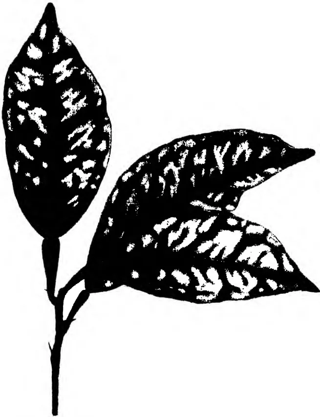
MOTTLE LEAF OF MANDARIN
A completely blank white page with no visible content, text, or markings. 333turns a deeper yellow. The tissues over the midrib and larger veins retain their chlorophyll even in advanced stages of the disorder. This green tissue fades gradually into the yellow, intervenous patches.
In severe cases of mottling, leaves do not attain their full size and are very narrow, the trees are dwarfed and the quality of the fruit falls off.
The palisade cells of mottled leaves, unlike the tall cylindrical cells of normal leaves, are short and broad (1).
Mottled leaves contain a lower percentage of calcium and a higher percentage of phosphorus than normal leaves.
The exact cause of mottle leaf is not known. It is not due to any parasitic organism. It is a functional disorder that can be corrected by the application of zinc sulphate; but it is probably not a simple zinc deficiency. Zinc, possibly through its effect on the oxidation—reduction potential of the cell, seems to reduce the concentration of toxic nitrites in mottled leaves (2).
Soil factors influence the occurrence of mottle leaf. In some cases the disease has been controlled by the application of organic manures. The quantity of calcium seems to have a bearing on the incidence of mottle leaf, but the disease cannot be checked by administering calcium to the soil. Manuring with sodium nitrate can induce mottling in orange trees.
There appears to be a correlation between light intensity and the severity of mottling. Shaded leaves are less affected than leaves exposed to direct light.
Mottle leaf may be controlled by the application of zinc sulphate to the soil at the rate of to 2 lb. per tree. Apart from the undesirability of the consequent accumulation of zinc sulphate in the soil, the recovery is a slow and uncertain process. Quicker results can be obtained by spraying the foliage with a mixture of zinc sulphate and hydrated lime, combined with a suitable spreader.
Mr. Lord, Officer-in-Charge, School Farm and Experiment Station, Peradeniya has found the following spray mixture effective :—
10 lb. zinc sulphate
5 lb. hydrated lime
lb. ' Solol '
100 gallons water
'Solol' is a proprietary, emulsified, petroleum oil, used as a spreader in this case.
The mycological division has also obtained satisfactory control with the following spray formula :—
10 lb. zinc sulphate
5 lb. hydrated lime
4 oz. 'Actin'
100 gallons water
'Actin' is a proprietary, neutral spreader.
The formulae are based on the recommendations of American workers (3, 4), who use zinc sulphate and hydrated lime with a blood albumen or calcium caseinate spreader.
There are different kinds of zinc sulphate containing varying amounts of water of crystallisation on the market. The kind to be used for the above formulae is one with the smallest proportion of water. This contains 89 per cent. water-free zinc sulphate.
Details of preparation of the spray mixture are as follows : The zinc sulphate is dissolved in a small quantity of water. Freshly burnt lime is hydrated and added to the main volume of water. The zinc sulphate solution is then poured into the lime suspension gradually, with continual stirring. The spreader is now stirred into the mixture. The spraying may be done with a knapsack sprayer provided with an agitator.
The exclusion of lime from the spray mixture results in serious spray injury by the zinc sulphate.
J. E. SENARATNA, F.L.S.,
ASSISTANT IN SYSTEMATIC BOTANY
IN this Journal, Vol. LXXXII, No. 4, April, and No. 5, May, 1934 an account was given of the grasses under trial at Peradeniya. The present account treats of the continuance of this work and the results obtained on relative palatability of some of the grasses and leguminous plants from two grazing experiments.
While it was known that all the species under trial were eaten by cattle, there were no definite indications so far concerning their relative palatability. Palatability is one of the chief factors which determine the value of a plant for pasture or fodder. The trials were carried out to determine the relative values of the species from the point of view of palatability. Incidentally, the relative periods of grazing during the different hours of the day from six a.m. to six p.m. were determined.
The area consisted of thirty-five plots each one-tenth acre in extent and a strip of about half acre of Paspalum dilatatum Poir., that is, a total area of about four acres. This area was fenced all round. No separating barriers of any kind were allowed to exist between the plots or between the plots and the Paspalum strip. Thus any cattle introduced into the area could roam at will over the whole four-acre area. Each of thirty-one plots carried a grass species interplanted with Desmodium triflorum D.C., Hin-undupiyali (Sinh.). The remaining four plots were each a pure stand of one of the following leguminous species: Alysicarpus vaginalis D.C. (Asvenna, S.), Desmodium heterophyllum D.C. (Maha-
336undupiyali, S.), D. triflorum D.C. (Hin-undupiyali, S.), and Indigofera endecaphylla Jacq.
The species were established from seed or rooted cuttings in June-July, 1933 and the pasture had been laid down some fifteen months before the commencement of the first palatability trial. The herbage on some of the plots had been cut back when it showed overgrowth and the whole area was kept free of coarse weeds. No manuring was done and no further attention was paid to the area in way of cultural treatment. At the commencement of the first trial the whole area was in more or less the same stage of overgrowth. The first trial lasted for 31 days from October 2 to November 2, 1934. During this period no other food was given to the cattle except for the last three days when a small amount of concentrates was given to all the animals. At the end of this period the pasturage was well grazed down and all the animals were in good condition. It was also seen that some of the species which used to be regarded as annuals lasted up to two years or more and were therefore biennials and short-lived perennials. This brings up another point concerning duration of plants of the wet tropics, that the same species may behave as annual, biennial, or short-lived perennial, depending on environmental conditions, particularly climate.
Into the fenced area of 4 acres, 15 head of indigenous black cattle were driven and the entrance closed. An observer was stationed at a point from which he could see the whole area. Using a watch he noted on a prepared "form" the time in minutes during which the cattle grazed on any particular plot. Two men were employed for this purpose, taking alternate four-hour periods in turn, from 6 a.m. to 6 p.m. each day for the 31 days of the trial. It may be pointed out that the success of this method depends mainly on how far cattle are gregarious in feeding and to some extent on the size of the plot. The cattle were gregarious and the plots were each one-tenth acre so that relative figures of fair accuracy were obtained.
After the completion of the first trial the cattle were taken off from the area and the herbage was allowed to grow and seed undisturbed except for the removal of rank weeds
337such as Imperata cylindrica Beauv., Lalang (E.), Illuk (S.), and Rhynchelytrum roseum Stapf et Hubb., Red-top grass (E.). During the earlier part of the South-West Monsoon rains, in June, 1935, the grasses were all cut back to about an inch from ground level and allowed to produce good grazing herbage. The block of 35 pasture plots was fenced in thus excluding the strip of Paspalum dilatatum included in the first trial. When the herbage had reached a suitable stage for grazing, in July, 1935, a second palatability trial was carried out on the same lines as the first. For the second trial eleven head of indigenous black cattle were used and grazing time recorded from 6 a.m. to 9 a.m., for the first seven days to obtain values for relative palatability.
As the whole four-acre block was open, i.e., without fences to separate one plot from another or from the Paspalum strip, the cattle were free to roam at will within the area, and as the four-acre block alone was able to supply sufficient grazing for the 15 head of cattle for 31 days, it can reasonably be assumed that during the first seven days of the trial the actual total of time spent in any plot affords a fairly accurate index of the relative palatability of the herbage of that particular plot. Thus the recorded time during which grazing was done on each plot during the first seven days was added and taken to indicate relative palatability. The plots arranged according to relative palatability thus obtained is shown in the table. In the case of the 31 plots in which a grass species was grown, the name of the grass is given to indicate the plot. For the other plots with pure leguminous species the specific name is given.
The period during which grazing was done during the different hours of the day from six a.m. to six p.m. during the trial was noted and is shown below :
| 6 a.m. to 7 a.m., 22 minutes. | 12 p.m. to 1 p.m., 36 minutes. |
| 7 a.m. to 8 a.m., 50 minutes. | 1 p.m. to 2 p.m., 37 minutes. |
| 8 a.m. to 9 a.m., 47 minutes. | 2 p.m. to 3 p.m., 47 minutes. |
| 9 a.m. to 10 a.m., 37 minutes. | 3 p.m. to 4 p.m., 48 minutes. |
| 10 a.m. to 11 a.m., 37 minutes. | 4 p.m. to 5 p.m., 49 minutes. |
| 11 a.m. to 12 noon, 39 minutes. | 5 p.m. to 6 p.m., 47 minutes. |
It is seen that cattle graze least during 6 a.m. to 7 a.m. and most from 7 a.m. to 9 a.m. and 2 p.m. to 6 p.m.
338(b) SECOND TRIALThe observations made during the first trial helped to modify the method of the second trial. Eleven head of indigenous black cattle were used. Relative palatability figures were recorded for only the first seven days, and the time of grazing during the three-hour period 6 a.m. to 9 a.m. only, recorded. Relative palatability figures obtained from these records are given in the table side by side with the figures obtained from the first trial.
RELATIVE PALATABILITY OF PASTURE SPECIES| 1st Trial | 2nd Trial | |||
|---|---|---|---|---|
| 1. | Axonopus compressus | 15 | Cenchrus ciliaris | 21 |
| 2. | Brachiaria distachya | 9 | Stenotaphrum dimidiatum | 7 |
| 3. | Alysicarpus vaginalis | 6 | Alysicarpus vaginalis | 6 |
| 4. | Desmodium heterophyllum | 4 | Brachiaria distachya | 6 |
| 5. | Setaria glauca | 4 | Paspalum dilatatum | 5 |
| 6. | Indigofera endecaphylla | 4 | Amphilophis pertusa | 5 |
| 7. | Apluda mutica | 4 | Cynodon plectostachyum | 4 |
| 8. | Themeda tremula | 3 | Mixed grasses | 4 |
| 9. | Paspalum conjugatum | 2 | Danthonia semiannularis | 3 |
| 10. | Desmodium triflorum | 2 | Paspalum Metzii | 3 |
| 11. | Stenotaphrum dimidiatum | 2 | Ischaemum imorense | 3 |
| 12. | Digitaria marginata | 2 | Apluda mutica | 2 |
| 13. | Amphilophis pertusa | 2 | Cynodon dactylon | 2 |
| 14. | Panicum trypheron | 2 | Desmodium heterophyllum | 2 |
| 15. | Dactyloctenium aegyptium | 2 | Hemigymnia javanica | 1 |
| 16. | Paspalum dilatatum | 2 | Axonopus compressus | 1 |
| 17. | Hemigymnia javanica | 1 | Sporobolus diander | 1 |
| 18. | Mixed grasses | 1 | Eragrostis pilosa | 1 |
| 19. | Alloteropsis cimicina | 1 | Desmodium triflorum | 1 |
| 20. | Rhynchelytrum roseum | 1 | Setaria glauca | 1 |
| 21. | Paspalidium flavidum | 1 | Digitaria marginata | 1 |
| 1st Trial | 2nd Trial | |||
|---|---|---|---|---|
| 22. | Polytrias amaura | 1 | Alloteropsis cimicina | 1 |
| 23. | Oplismenus compositus | 1 | Polytrias amaura | 1 |
| 24. | Danthonia semiannularis | 1 | Themeda tremula | 1 |
| 25. | Digitaria longiflora | 1 | Paspalum conjugatum | 1 |
| 26. | Echinochloa colona | 1 | Panicum trypheron | 0 |
| 27. | Cenchrus ciliaris | 0 | Paspalidium flavidum | 0 |
| 28. | Eragrostis tenella | 0 | Eleusine indica | 0 |
| 29. | Eleusine indica | 0 | Echinochloa colona | 0 |
| 30. | Ischaemum timorense | 0 | Digitaria longiflora | 0 |
| 31. | Paspalum Metzii | 0 | Oplismenus compositus | 0 |
| 32. | Cynodon dactylon | 0 | Dactyloctenium aegyptium | 0 |
| 33. | Ischaemum ciliare | 0 | Melinis minutiflora | 0 |
| 34. | Sporobolus diander | 0 | Ischaemum ciliare | 0 |
| 35. | Eragrostis pilosa | 0 | ||
In the second trial the stage of maturity of the herbage was just right for grazing. These figures therefore give a truer indication of relative palatability under good pasture management whenever conditions are favourable, while the figures obtained in the first trial may be taken to represent relative palatability in times of drought as occur once or twice annually in many parts of Ceylon, when overgrown and dried up pasture plants are the only grazing available to stock. As stated earlier each grass species was grown with a leguminous plant which is of advantage not only in enhancing the value of the pasture but also in the development of the grass. Wherever the growth of the grass was thick the Desmodium was poor but under normal grazing conditions when the pasture is regularly grazed down from time to time the development of the leguminous plant can be expected to keep pace with that of the grass. It is necessary to comment on some of the individual plots. The Digitaria pruriens plot originally so planted was in a short time so much overrun with other grasses that it was allowed to exist as a plot of mixed herbage species, and the values obtained do not refer to the original species planted. In the first trial only about one-third of the Danthonia was well established, the rest having been planted a short time before the commencement of the first trial, so that the first trial figures for this
340species are not accurate. The Rhynchelytrum roseum plot was discarded after the first trial as this became a bad weed in the other plots owing to its prolific seeding and the ease with which its light seed was dispersed by the wind. In its place Pennisetum clandestinum (Kikuyu grass) was planted but the latter was killed out by drought before it had any chance of establishing itself. Indigofera endecaphylla was ploughed up and the plot replanted with Cynodon plectostachyum after the first trial. The Paspalidium flavidum was attacked by a fungus, Phyllachora graminis, which practically killed it out before the commencement of the second trial. In the Digitaria marginata plot most of the parent clumps produced very much reduced "dwarf shoots". No fungus was found attacking the grass and this condition appeared to be due to some physiological cause. The Echinochloa colona showed very poor growth perhaps owing to the very low fertility of the soil, the pasture species in the trials having been established on poor soil without any application of manure. Fragrostis tenella was observed to be so poor during the first trial that it was discarded and the plot was replanted with Melinis minutiflora. This grass gives an offensive smell when crushed and the grass was not eaten at all by the cattle during the second trial. This grass being an exotic to which the cattle were not accustomed may prove to be a palatable grass or the cattle may be trained to like it in the future. It has a reputation of keeping off tick fever in some countries.
From these results it is seen that the leguminous plants have a high palatability. Of these Alysicarpus vaginalis was the best. Among the grasses some were very palatable while others had an extremely low value in this respect. From observations given above the following may be selected as having a higher palatability: Cenchrus ciliaris (African fox-tail grass), Stenotaphrum dimidiatum, Brachiaria distachya, Paspalum dilatatum, Amphilophis pertusa, Axonopus compressus (Carpet grass), Cynodon plectostachyum (African star grass), Danthonia semiannularis (Wallaby grass), Apluda mutica and Digitaria marginata. The last was not well represented for the second trial owing to the production of the "dwarf shoots" referred to above, in place of normal shoots.
It has been shown that the overgrown pasture of four acres supported 15 head of cattle for 31 days, that is, it had produced the equivalent of enough pasturage at this grazing to support one ox for or 465 days.
341The following are the rainfall figures during the period of the trials:—
| 1933 | 1934 | 1935 | ||
|---|---|---|---|---|
| January | .. .. | 12.92 | 8.47 | 2.47 |
| February | .. .. | 3.68 | 3.67 | 4.47 |
| March | .. .. | 6.33 | 9.22 | 7.07 |
| April | .. .. | 6.36 | 9.49 | 2.84 |
| May | .. .. | 30.50 | 6.26 | 1.81 |
| June | .. .. | 9.09 | 8.32 | 6.38 |
| July | .. .. | 10.49 | 3.70 | 3.99 |
| August | .. .. | 9.17 | 1.19 | 6.55 |
| September | .. .. | 8.79 | 0.69 | — |
| October | .. .. | 12.58 | 11.16 | — |
| November | .. .. | 12.26 | 6.71 | — |
| December | .. .. | 2.12 | 4.43 | — |
The plots have already been described in the article referred to in the introduction. There were no replications. The land was flat in some plots while in others it was sloping. It is not possible to say how much this and similar differences could affect the figures obtained but it can reasonably be assumed that the large divergences shown in the figures of relative palatability enable the separation of more highly palatable species from the less palatable ones. Palatability represents only one important factor necessary to decide the value of plants for pasture or fodder. Other factors as digestibility, production per acre, resistance to adverse conditions such as drought and over-grazing, seasonal variations in feeding value have each a very important place in the choice of pasture species.
Grateful acknowledgment is due to Dr. J. C. Haigh, Economic Botanist, for suggestions and help throughout the trials; to the Officer-in-Charge, School Farm and Experiment Station, Peradeniya, Messrs. W. C. Lester-Smith and L. Lord for providing facilities to enable the experiments to be carried out; to Mr. L. Lord again for recording the results of the second trial while it was in progress.
342NOTES ON ORCHIDS CULTIVATED IN CEYLONEPIDENDRUM STAMFORDIANUM, BATEMEDWARD PERERA,
CURATOR, HENERATGODA BOTANIC GARDENS, GAMPAHA
THIS is a handsome spotted-flowered species of very distinct character, being one of the few which produce a radical inflorescence. It has fusiform pseudobulbs a span long, tapering below into a slender scaly foot-stalk, and terminated by three or four oblong obtuse coriaceous leaves 6 or 7 inches long; the peduncle rises from the base and bears a large many-flowered panicle of fragrant blossoms which are inches across, of a bright yellow tinged with green, thickly decorated with blood-red spots, those of the petals being larger and fewer than those of the sepals, while the lip has the lateral lobes creamy-white and the front lobe yellow, the latter being sparingly spotted; the sepals and petals are lanceolate, the lip three-parted, flat, the lateral lobes large oblong, the middle one transversely oblong, emarginate and fimbriate; the type is described as having a vivid violet spot at the base of the lip, while in the variety pictum there is a crimson line down the centre of that organ. There are two varieties of this plant, one having much brighter coloured flowers than the other; the best form is characterised by having longer and thinner bulbs than the other. The flowers last for a considerable time in perfection.
Culture.—Pot culture is the best for these species, the drainage however must be perfect with about half the pots or pans filled with potshreds. They require the same treatment as the Cattleyas. A season of rest is very advantageous to the plants, causing them to flower more freely and to grow more vigorously afterwards. They are propagated by dividing the plants.
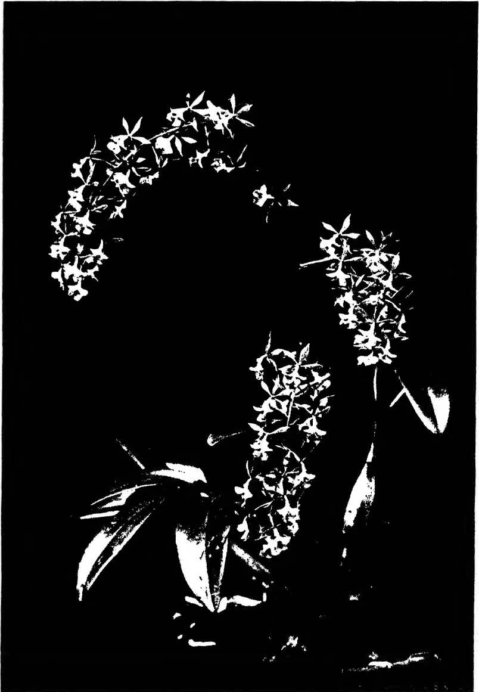
EPIDENDRUM STAMFORDIANUM, BATEM
A completely blank white page with no visible content, text, or markings. 343THE following new insect pests were definitely recognised for the first time in Ceylon during the year.
Paddy stem-fly (Atherigona sp.) See Minor Investigations No. 4.
Coffee berry-borer (Stephandoeres hampei). See Major Investigations No 4.
The following new host plant records were made during the year :—
| Host Plant | Insect | Remarks |
|---|---|---|
| Cacao (Theobroma cacao) | Cockchafer (Rhinyptia sp.) |
Leaf-eating beetle |
| Mango (Mangifera indica) | Fruit-piercing moth (Ophideres salaminia) |
Previously known to attack citrus fruit |
| Indigofera cndeca phylla | Fluted scale (Icerya purchasi) |
Formerly a declared pest of Acacia, etc., but legislation withdrawn some years ago |
| Gingelly (Sesamum indicum) | Green plant-bug (Nezara viridula) |
Occurs on many leguminous plants |
| Guava (Psidium Guajava) | Leaf-rolling weevil (Apoderus tranquebaricus) |
A minor pest of leaves of mango and avocado pear |
| Hydnocarpus sp. | Cyclosia panthona | Caterpillars usually attack leaves of Baccaurea spp. |
1. Lac cultivation.—This has unfortunately received a serious set-back during the year. The prolonged drought has adversely affected the growth of inoculated kon trees and the insects have been unable to establish themselves on the dried up shoots. Parasites and predators have played their part in causing a reduction in the small number of insects which were
344able to survive. The development of the lac insects has been irregular, with a shortening of the life-cycle and a decrease in the amount of brood-lac formed. Arrangements have been made to import further brood material from India early in 1936. Meanwhile suitable kon trees have been pruned in various districts and have put out a good supply of young wood which should be suitable for inoculation.
For the present it will be advisable to concentrate on two or three centres until a sufficient supply of local kon brood-lac is available for trial in other centres. Lac cultivated on masan (Zizyphus jujuba) has proved to be inferior to that on kon (Schleicheria trijuga) and the cultivation of masan lac will not be continued.
2. The coconut caterpillar (Nephantis serinopa). The severe attacks of this pest in the Batticaloa district during 1934 continued during the first half of 1935 especially in Batticaloa South; the attack in Batticaloa North was partially controlled by local fly parasites. Towards the end of the year the pest decreased rapidly after heavy rains and almost disappeared in many areas. Meanwhile, arrangements had been made earlier in the year to import from India some living material of Trichospilus pupivora, a pupal parasite of this pest, for breeding and distribution in the Batticaloa district. This parasite has been naturally established for many years in the Western and North-western parts of Ceylon, but was not available locally during the year.
This material arrived in November and the first generation was bred at Peradeniya. Meanwhile, an officer of the Entomological Division has been stationed at Batticaloa in charge of the breeding work which will be carried on in an insectary built for the purpose. Owing to the scarcity of Nephantis host material towards the end of the year it has been found necessary to breed the paddy swarming caterpillar (Spodoptera mauritia) in large numbers at Peradeniya and at Batticaloa as an alternate host for Trichospilus. A reserve breeding station will be maintained at Peradeniya.
Since hot dry weather is known to be favourable to the pest and definitely unfavourable to the natural increase of this parasite, the success of the undertaking remains to be seen. An attempt will be made, however, to breed Trichospilus pupivora in large numbers throughout 1936 for liberation in areas where the coconut caterpillar happens to appear, in the
345hope that some degree of control may be established in the future.
3. Termites. (a) Bionomics.—The breeding of termites was continued during the year and winged adults of Neotermes militaris, the common up-country tea-termite, was produced towards the end of the year from a colony founded 8½ years ago by a winged pair.
In the case of two colonies of Planocryptotermes primus, a dry-wood termite, winged adults appeared during the year from eggs laid by neotenic (wingless) adults 6 years ago.
(b) Tests of building materials.—These tests with materials reputed to possess termite-repellent properties have been continued. A patent insulating wall-board fabric, although highly resistant to the attack of subterranean termites is not entirely immune. It appears to repel the attacks of dry-wood termites and is fatal to them when provided as food. A sample of timber, impregnated with a proprietary preparation claimed to possess termite-repellent properties and which has been under test for 18 months, has been extensively attacked by subterranean termites. Samples of timber treated with certain paints have so far proved resistant to attack after 14 months, while the untreated controls have suffered severe injury. A sample of timber treated with a rubber distillate solution has resisted attack during the 2½ years of the test.
(c) Control.—The control of Neotermes militaris and Glyptotermes dilatatus in tea bushes by the injection of Paris Green powder into their active workings has been continued with success on many estates.
4. The coffee berry-borer (Stephanoderes hampei). A disturbing occurrence during the year was the discovery of this notorious pest in the Balangoda district. This small shot-hole borer is a serious menace to coffee cultivation in certain African and Eastern countries, but it was not previously known to occur in Ceylon. Towards the close of the year this insect was declared a pest under the Plant Protection Ordinance No. 10 of 1924. A systematic campaign was undertaken in the Balangoda district and the pest was found to be widely distributed within the district. Over 1,500 gardens were visited and over 30,000 coffee plants have been pruned and their berries destroyed. The assistance rendered to the Department by the Chief Headman of Balangoda and his officers in the performance of this work is much appreciated. A note on the bionomics of this pest will appear in a subsequent number.
346MINOR INVESTIGATIONS1. The lawn cricket (Gymnogryllus humeralis). The study of the life-cycle of this serious pest of grass lawns has been continued during the year. Adults were obtained from nymphs which appeared in May last, the cycle having occupied months from the time the eggs hatched
2. Book poison tests.—Tests of dummy volumes, treated with various insect-repelling mixtures, against cockroach and other insect injury have been continued on behalf of the Crown Agents for the Colonies during the year. The first series of volumes was returned to London after one year's exposure and, as a result of the experience gained, further volumes, treated with different mixtures, were received for similar exposure tests in June last. The treatments applied to these volumes appears to be far superior to those given to volumes of the earlier series, the new series having resisted insect damage during the six months of test.
3. Paddy swarming caterpillar (Spodoptera mauritia). A serious outbreak of this pest occurred over about 15 acres in the centre of a 70-acre block of paddy near Katugastota during October. The following control measures, promptly applied by an officer of this Division resulted in the destruction of the caterpillars and the saving of the block. The fields concerned were first flooded to as great a depth as the bunds would permit causing the caterpillars to ascend to the tops of the plants and preventing them from spreading to the surrounding unattacked area. The next step was to spray a solution of kerosene and crude oil, in equal parts, on to the surface of the water, care being taken to avoid the solution coming in contact with the foliage of the plants. A continuous film of oil was thus rapidly formed on the surface of the water. Men then entered the fields and lightly brushed the plants with bundles of twigs tied together to form brooms and the insects were thus swept from the plants to the films of oil below. On the following day the caterpillars which had been dislodged were found to be dead and those which had been missed in the first sweeping were brushed off. The water in the field was then completely drained off carrying the oil with it. In cases where attacked fields lend themselves to flooding to a suitable depth this method of control can be applied with success.
4. The paddy stem-fly (Atherigona sp.). Towards the end of January reports were received from parts of the Central and Uva Provinces that extensive areas of seedling paddy were being
347partially destroyed and, in some cases, entirely ruined, by an insect pest which proved to be a small anthomyid fly. Seedlings were attacked within a week after germination and in areas where there was a shortage of water the attacked plants were unable to tiller vigorously in many areas at least 50 per cent. of the seedlings were killed.
The maggots apparently cause primary damage by cutting through the young central shoot feeding inside the decaying portion and pupating inside the stem, usually near the base of the plant. The life-cycle occupies about two weeks, and the flies, in areas where paddy is sown at intervals of a few days are able to attack successive areas of young seedlings soon after germination. The pest was most destructive in areas where sowing had been delayed owing to the failure of the rains. Later, when more water became available, the attacked plants started to tiller vigorously and were able to throw off the attack. Reports on the presence, or otherwise, of the pest in the various districts indicated that it had been observed in the North-central and Eastern Provinces in addition to those mentioned above.
(1) Colombo.—The number of imported packages received for inspection during the year was 14,633. Of this number 4,058 were fumigated prior to release. Citrus fruits represented 93 per cent. of the importations, the remainder consisting of cuttings, roots, bulbs, seeds and miscellaneous plants. Packages examined prior to export numbered 23,102.
(2) Peradeniya.—During the year, 379 packages were inspected, 197 of which were fumigated prior to export. The necessary certificates were issued, in duplicate, to cover these consignments.
As indicated in the above summary, the breeding of this parasite was started at Peradeniya and at Batticaloa towards the end of 1935. This work has been carried on successfully at both places and the following results have been obtained up to the end of April, 1936.
Peradeniya.—Out of about 48,000 parasites obtained so far, about 40,000 have been sent to Batticaloa for distribution in Nephantis areas and about 5,000 have been despatched to two
348estates in the North-western Province where small outbreaks of the pest were reported. The remainder amounting to about 3,000 have been retained, a few hundred at each generation, for breeding purposes.
Batticaloa.—A total of about 124,000 parasites have been obtained to end of April, in addition to those received from Peradeniya. Of these, about 120,000 have been liberated mainly on various estates in the Batticaloa district. The remainder, approximately 4,000, have been retained at intervals for carrying on the breeding. Including the consignments received from Peradeniya it is estimated that at least 150,000 Trichospilus have been liberated in the Batticaloa district; some of the remainder being sent to the North-western Province, while some have died in the insectary during the recent hot weather.
The great majority of these parasites has been bred in the pupae of the paddy swarming caterpillar (Spodoptera mauritia) which breeds readily under favourable conditions and has proved to be a valuable alternate host. Another useful host is the pupa of the cotton leaf-folding caterpillar (Sylepta derogata) which has been available in fair numbers during the cotton season.
349The following is a list of the diseases of plants recorded in Ceylon for the first time during 1935 :—
| Aleurites montana (tung-oil) | Brown root disease | Fomes noxius |
| Artocarpus integra (jak) | Ripe rot | Diplodia sp. |
| Arctotis sp. | Wilt | Bacteria |
| Citrus aurantium (orange) | Collar rot | Sclerotium Rolfsii |
| Dolichos lab-lab | Leaf disease | Cercospora cruenta |
| Gossypium sp. (cotton) | Leaf disease | Cercospora gossypina and Macrosporium sp. |
| Hibiscus rosa-sinensis | (Shoe-flower) root disease |
Sphaerostilbe repens |
| Laurus nobilis (bay tree) | Pink disease | Corticium salmonicolor |
| Passiflora quadrangularis (granadilla) |
Leaf spot | Macrosporium sp. |
| Poinsettia sp. | Root disease | Sphaerostilbe repens |
| Pueraria javanica | Stem and leaf disease | Rhizoctonia (Corticium) solani |
| Spondias mangifera | Brown root disease | Fomes noxius |
| Swietenia mahogani (mahogany) | Collar disease (of young plants) |
Sclerotium Rolfsii |
| Trichosanthes anguina (snake gourd) |
Downy mildew of leaves |
Pseudoperonospora cubensis. |
An interesting case of leaf disease of tea caused by Rhizoctonia (Corticium) solani occurred on an estate in the Galle district of the Southern Province. Four or five bushes in a patch of tea four or five years of age were reported to be attacked. When the parcel containing the diseased specimens was opened the leaves were found firmly attached to each other by wefts of mycelium. The stems bearing the leaves were apparently healthy and loose Rhizoctonia mycelium was found on the surface. The fungus probably developed in the soil, ascended the stems and attacked the leaves.
350CITRUSAn interesting case of collar rot of young imported grafted orange plants caused by Sclerotium Rolfsii was recorded. This is the first occurrence of this disease on citrus in Ceylon. In this instance, it is suspected that the fungus spread to the orange plants from decaying vegetable matter used in the holes or as a mulch. One affected graft appeared to be a vigorous plant and was just over two centimetres in diameter at the collar. The bark along one side of the stock and at the collar had decayed and there was an abundance of white strands of mycelium about the decayed portions. The mycelial strands had grown down the greater part of the tap root and of some of the lateral roots. Typical brown shiny sclerotia were produced on the masses of the mycelium at the collar and on the roots.
Curling and puckering of leaves of grapefruit was observed on the new flush that burst during the rains on trees which were subjected to a long spell of dry weather. This condition of the leaves was probably brought about by a sudden oversupply of soil moisture.
A disease of grapefruit trees affecting the bark of the trunk and larger branches sometimes accompanied by exudation of gum to the surface was of frequent occurrence during the long spell of dry weather. The first indication is a thin, longitudinal crack in the bark which gradually opens to expose the wood. The open wound heals over in time. In some cases Diplodia sp. accompanies the crack and the mycelium of the fungus enters the wood giving it a greyish tint and kills back the branch. It is thought that defoliation as a result of drought conditions leads to exposure and subsequent scorching of the branches by the sun which causes these wounds. Improving the protection of the plants from sun and wind and mulching them well throughout the dry season will do much to remedy any deficiencies in this respect. Shaving back the affected tissues to sound wood, painting over the wood with a disinfectant as a 20 per cent. solution of Brunolinum or Carbolineum and then tarring the wound has been found effective against this type of canker.
GREEN MUSCARDINE FUNGUSDuring the latter part of last year larvae of the coconut beetle (Oryctes rhinoceros) were found naturally infected and killed by the green muscardine fungus (Metarrhizium aniso-
351pliae) in Kochchikadde at an elevation a little above sea level. As larvae living under natural conditions were readily infected by artificial inoculations at an elevation of about 1,500 feet experiments were made to ascertain whether the fungus could be made to infect larvae at lower elevations.
Traps consisting of small pits filled with coconut debris mixed with fresh cattle dung were prepared on a coconut estate in the Kurunegala district (elevation about 500 feet) with a view to attracting the coconut beetle to lay its eggs in such traps. The traps proved attractive and larvae of the coconut beetle were found in them after about three months; they were then inoculated by mixing the fungus grown on boiled rice with the surface soil. When the traps were examined after four weeks, the fungus was found to have attacked and killed all the larvae. The larvae in the control traps were free from infection during this period. An experiment was also made by inoculating a trap by introducing soil into it taken from a trap which had been previously inoculated seven weeks earlier. The larvae in this trap also were attacked and killed.
Results have indicated that it was necessary to keep the inoculated traps fairly moist; that if the traps became too dry or saturated with too much moisture less deaths occur among the larvae; and that the fungus can be introduced into traps at an elevation of 500 feet to cause successful infection.
An experiment was made to ascertain the effect of colloidal sulphur against mildew (Oidium sp.) attacking cow-pea vines (Me-karal). Cow-pea seeds were sown in beds previously sterilized by watering the soil with a solution of Jeyes' fluid (1 oz. to one gallon of water). Nine weeks after sowing when the vines were attacked by Oidium sp. they were sprayed with colloidal sulphur in the proportion of 1 oz. colloidal sulphur to one gallon of water. The spraying was repeated after six days. The spray fluid completely controlled the fungus. The vines in an adjoining bed which were kept as a control were heavily infected and a large number of affected leaves dropped off the vines.
Inoculations made on tea roots with pure cultures of Ustulina zonata obtained from beech and lime (Tilia) in England and from tea and rubber in Ceylon gave results similar to those
352recorded last year which were carried out on stems. The inoculations were examined after about 11 months when it was found that the extent of infection varied considerably with the different strains. The strain obtained from tea caused the most extensive infection involving the roots, the collar and stem up to a height of about nine inches. The strain from rubber had infected the tissues for a distance of only th of an inch, while the strain from lime and beech had caused practically no infection. As tea was not equally attacked by the different strains, it would appear that in the single species of Ustilina zonata there are present several specialized races or strains.
A new disease of Jak was reported from Jaffna. Small, soft, purplish-brown patches were found on the surface of the ripening fruit. Cultures made from diseased tissue developed Diplodia sp. When inoculations were made with this fungus on fully grown Jak fruits after wounding infection became visible after three days and on the following day the discoloured areas had extended further showing soft purplish-brown patches as on the specimen originally sent in. Inoculations were also made with spores of the fungus on Jak in nature on fully grown fruits. Ten days after inoculation the fruits had taken infection but the fungus had not penetrated into the pulp. When a ripening fruit was inoculated with the fungus in culture and the fruit covered with a bell glass the fungus overran the surface of the fruit and advanced into the pulp showing that warmth and humidity are favourable for the development of the fungus. The tendency for the fungus was to cause a premature ripening and the apparently ripe portions remain hard instead of becoming soft.
353CHEMICAL NOTES (13)CINCHONA BARK ANALYSESD. E. V. KOCH, B.Sc., (Hons.).
RESEARCH PROBATIONER IN AGRICULTURAL CHEMISTRY
SIX samples of stem bark of Cinchona Ledgeriana were analysed for percentages of total alkaloids, quinine and cinchonidine. These were from Abergele estate, Boragass. They consisted of quilled pieces between five and six inches in length and two to three millimetres in thickness. The outer surface was wrinkled, rough, greyish in colour, possessed numerous transverse fissures of varying size and distinctness and was partly covered with lichens. This surface also showed longitudinal furrowing. The inner surface was yellowish brown in colour, coarsely striated and finely fibrous internally. The samples were bitter and astringent to the taste and had only a slight odour.
The percentage of total alkaloids was determined by the British Pharmacopoeia method of 1932. The quinine was estimated as quinine sulphate following the method in Vol. II of Thorpe's Dictionary of applied Chemistry. As the quinine is not completely precipitated under these conditions the residual quinine and cinchonidine were completely precipitated as tartrates.
The results are shown in the table.
ANALYSES OF CINCHONA BARK (Cinchona Ledgeriana)
CALCULATED ON AIR-DRIED BARK
| Series | % Total Alkaloids | % Quinine Sulphate | % Quinine | % Residual Quinine & Cinchonidine as Tartrate | % Residual Quinine & Cinchonidine | % Quinine & Cinchonidine |
|---|---|---|---|---|---|---|
| 1 | 6.16 | 3.23 | 2.80 | 1.35 | 1.07 | 3.87 |
| 2 | 6.82 | 3.29 | 2.86 | 2.03 | 1.61 | 4.47 |
| 3 | 6.59 | 3.09 | 2.68 | 1.15 | .91 | 3.59 |
| 4 | 6.99 | 3.23 | 2.80 | 1.74 | 1.39 | 4.19 |
| 5 | 7.70 | 3.57 | 3.10 | 1.69 | 1.35 | 4.45 |
| 6 | 6.58 | 3.23 | 2.80 | 1.79 | 1.42 | 4.22 |
| Average | 6.81 | 3.27 | 2.84 | 1.62 | 1.29 | 4.13 |
It is apparent that there is but little variation in both the percentages of total alkaloids and of quinine-cinchonidine in these specimens except for Nos. 1 and 3 which have slightly lower contents. Quinine-cinchonidine constitutes nearly two-thirds of the percentage of total alkaloids in nearly all cases. It should however be mentioned that cinchonidine is known to be present in only traces in this species of cinchona so that the figures obtained for total quinine and cinchonidine give a more correct estimate of the actual percentages of quinine in the samples. Moreover these two alkaloids are invariably estimated together.
These Ledgeriana barks cannot be considered as being of good quality as none of them contain even five per cent. of quinine. However, by the cultivation of the richer barks to the exclusion of the lower alkaloid producing varieties, it should be possible to obtain a Ledgeriana bark yielding over eight per cent. of quinine which alone may constitute about eighty-five per cent. of the total alkaloids present. Ledgeriana trees in Java are known to give quinine contents as high as 13.25 per cent.
As polishes made with seed lac produced locally by furniture manufacturers did not prove satisfactory—tackiness being observed on articles polished with such preparations—investigations were carried out to ascertain the cause of the trouble and if possible to remedy it. It was considered that this was primarily due to the presence in the lac of substances that were soluble both in methylated spirits and water. It was therefore decided to free the seed lac of such impurities by thorough washing. This process, which involves the dissolution of a large amount of colouring matter, known as lac dye, is tedious. If the seed lac is washed instead with a four per cent. aqueous solution of sodium carbonate (washing soda), the lac dye together with other soluble constituents is easily removed. The material thereafter need only be washed a few times with water until the washings become practically free of colour. The loss in weight due to this treatment amounts to about twenty-five per cent., but the process is inexpensive.
One pound of washing soda in two and a half gallons of water is sufficient for purifying nearly twenty-five pounds of seed lac so that the cost of such treatment is less than half a cent per pound.
355As the lac still contains a small quantity of foreign matter it may be advisable to use about twenty per cent. more seed lac than the requisite quantity used in similar shellac preparations.
Ordinary methylated spirits and spirits purified by treatment with burnt lime—half an ounce of lime was used for each bottle of spirits—were used in the preparation of French polish and trials made with a view to ascertaining whether the quality of the spirits also affected that of the polish. These trials revealed that whereas the purification of the seed lac in the manner described was necessary, the use of purified methylated spirits though desirable, is not essential.
Samples of French polish prepared from purified lac were favourably reported upon by a well-known firm of furniture dealers.
356[Adapted from the Department of Agriculture, Burma—Agricultural Survey No. 23 of 1935 by W. Gregson, I.A.S., Deputy Director of Agriculture, Tenasserim Circle]
THE Mangosteen plant is an evergreen lactiferous, slow growing tree ; black of bark with a pyramidal crown, growing to an average height of 30 feet. Individual trees cultivated under exceptionally favourable circumstances may reach a height of 35 to 45 feet, but such instances are rare.
The average tree may be expected to come into bearing at the ninth or tenth year, have a yielding period of 40 to 50 years and give the maximum yield between the fifteenth and thirtieth year of its life. At the commencing-to-bear stage it will yield 200 to 300 fruits, gradually working up to a maximum of 1,200 to 1,500. These figures must not be taken as indicating a consistent annual yield, for instance, a tree yielding 1,500 fruits one year will in all probability drop to 800 to 900 fruits in the following year. It is a recognised fact among the gardeners that one out of three is a bad yielding year. It should be understood, however, that trees vary in this respect according to situation, soil conditions and the amount of cultural attention they receive.
The tree is a slow grower ; but the slowest period of growth is during the first to fifth year, thereafter growth is approximately at double the rate.
The tree is generally accepted to be a lover of shade. While not denying that shade is perhaps essential in the young state, and probably beneficial at all stages of the tree's growth, the writer does not consider it to be absolutely essential, and knows of several orchards where shade is completely absent, yet the growth of the trees and yield of fruit is fully equal to that of trees growing under shade conditions.
The flowering date varies slightly according to locality, soil conditions and, if the situation demands it, whether irrigation is given during the dry season. However, as a rule, trees commence to flower in the middle of November and continue to do so until the end of January or early February. Fruits are obtainable from the middle of April and continue to be available until towards the end of July. The main fruiting season is May and June.
The vitality of the seed once it is removed from the fruit is soon destroyed, and quick planting is essential. If, however, the fruit is undamaged, carries no disease and is not too ripe when gathered, seeds removed from the fruit within a period about five weeks can be expected to give reasonable germination.
The mangosteen is essentially a tropical plant and has so far only been successfully cultivated in a hot moist climate. In Ceylon the low-country
357portion of the area which receives the heavy south-west monsoon rains has been found to be the most suitable for the cultivation of this fruit.
Deep, rich loams containing a fairly high percentage of organic matter with good natural drainage, yet capable of retaining a fair amount of moisture, and situated near streams, springs or wells, are considered to be best suited.
A sheltered locality is to be preferred. The tree does not thrive, takes considerably longer to come into bearing and gives poor yields if planted in exposed positions. It is also much more difficult to establish, as once a plant becomes sickly there is no hope of its recovery.
Cultivation at the present time is mainly confined to mixed orchard-garden forms, and it is rarely that the mangosteen is cultivated as a pure crop. The tree is found growing mixed with Durian, Arecanut, Jak, Mango, Coconut and Marian. Betel vine is always grown, as are other ground crops, i.e., Pineapple, Arrowroot, Ginger, etc., if the shade is not too dense. Even in the few instances where the tree is grown as a pure crop, Betel vine is usually grown. Other varieties of ground crops such as are mentioned above may or may not be grown.
Although the growers distinguish good from bad yielding trees, no form of seed selection is practised. Seed is chosen haphazard and generally sown in bamboo pots which have been filled with surface and burnt soil in the proportion of 5 parts of the former to 3 parts of the latter. The young plants remain in the pots until they are ready for planting out, usually at the age of 2 to 3 years. Shade is provided during the hot season, also protection from heavy rains during the monsoon.
Nurseries are seldom employed, but if they are, the seed is planted approximately feet in raised beds composed of surface soil, burnt soil and possibly well rotted farmyard manure in the proportion of: surface soil 5 parts, burnt soil 3 parts, and, if farmyard manure is used, farmyard manure 1 part. Burnt soil is added to the beds as is thought necessary, and protection from sun and rain is provided.
The plants remain in the nursery beds until ready for planting out at the age of 2 to 3 years. Watering is done by hand during the dry weather and the beds are kept more or less free from weeds with an occasional stirring of the soil.
No special preparation of the site on which the young trees are to be finally planted is ever given, beyond that which is customary in orchard-garden cultivation. Pits are dug without any regard to spacing or proximity to neighbouring trees in the case of mixed orchard-garden cultivation, while if the intention is to cultivate as a pure crop, a careless spacing of approximately feet is employed. The pits are approximately 2 feet in diameter and from 2 to feet deep, and are dug and filled immediately before the rains. The material used as filling may be surface soil alone; or surface soil mixed with burnt soil in the proportion of 2 parts of the former to 1 part of the latter, or, surface soil and well rotted farmyard manure in the proportion of
3584 parts of the former to 1 part of the latter. Occasionally rotted sessamum cake may take the place of farmyard manure.
If bamboo pots have been employed in raising the seedlings and they are not sufficiently rotten to allow for the whole object, pot and contents, to be dealt with as a whole, the pot is split in two and the two halves removed before planting. In all cases, however, great care is exercised to keep as much soil adhering, and to do as little damage as possible to the root system of the young plant.
No form of cultivation or manuring is practised, and it is for this reason that trees situated in the miscellaneous gardens are more healthy and yield a heavier crop of fruit than those trees in a garden devoted solely to the crop. This is due to the fact that apart from any direct cultivation that may be given, the trees in the mixed gardens receive benefit from manurial agents and cultivation given to other crops, i.e., ground crops.
The method of harvesting consists, in the majority of cases, of cutting the fruit stalk by means of a knife attached to the end of a long bamboo and allowing the fruit to fall either on to the ground or into a cloth held underneath for the purpose.
It is worthy of note that no pruning of any kind is ever practised; neither is attention ever given to diseases and pests. The latter are not serious and do little if any damage, but the former cause considerable rotting of mature, and shedding of immature, fruits.
Owing to the long period which elapses before the tree arrives at the bearing stage, and the consequent delay before the growers receive a cash return, cultivation is not extending; rather is it tending to decrease. It is seldom that newly-planted trees are to be found.
It is considered that one of the first lines of approach towards improvement of the crop by the growers can be by methods of seed selection. Seed should be obtained from consistently high-yielding trees and the fruit therefrom should be chosen for its size, shape and large proportion of flesh to seed. This is possible of accomplishment because the owners of long-established gardens can point to such trees almost with certainty.
The seed should be planted in raised nursery beds of convenient size, the soil of which is best if composed of surface soil (loam not too heavy) and leaf mould or well-rotted farmyard manure mixed together in the approximate proportion of 5 parts of the former to 1 part of the latter. A suitable planting distance being rows 2 feet apart and seed in the rows feet apart. Deep planting is not advisable. The seed should be covered with just sufficient soil to prevent exposure on the beds being watered.
If not too large a number of seed are to be dealt with they can be planted direct into bamboo pots which have been previously filled, and the soil allowed to settle. Care must be taken if this method is followed that the level of the soil after settlement is level with the top of the pot, otherwise on germination the young plant does not receive the necessary amount of light and air, and in consequence becomes sickly, a condition which is generally fatal.
359A good plan if bamboos are easily available and not too costly is to allow internodes for a pot. If this is done it is seldom necessary to repot before final planting out in the orchard.
The vigour of young plants both in the nursery beds and in pots, especially in the latter, can be considerably increased by the judicious and occasional use of a dilute solution of liquid fertilizer, i.e., cow dung mixed with water in the proportion of 1 part of the former to 4 parts of the latter by bulk.
Both nursery beds and pots must be kept free from weeds at all stages of the plant's growth. The soil should also be given an occasional stirring to a depth of 1 to 2 inches, care being taken not to injure the young roots.
When the time arrives for the plants to be lifted from the nursery beds preparatory to their being planted out in the orchard, care must be taken to see that as little damage as possible is done to the lateral roots. The tap root if necessary may be cut back, but every endeavour should be made to avoid this if possible as it causes a serious halt in the young tree's growth.
Plants in bamboo pots can be treated as previously described. It is considered that whenever possible the bamboo pot method of raising plants should be employed as there is no check to the young plants when they are being planted out. It is also easier to give the necessary attention as regards shade and protection from heavy rains. The only drawback to the method being that it is sometimes difficult to obtain the required number of pots, or, even if available, too costly.
More careful attention than is now the case must be given to clearing the orchard site, lay out, spacing of the trees, cultivation and sanitation. Also every effort must be made to encourage prospective gardeners to grow the mangosteen as a pure crop, or at the most, only, mixed with a suitable shade fruit tree, i.e. Durian.
The site for the orchard must be cleared of all vegetation; that is, jungle growth should be felled and burnt, as dead and decaying vegetation is always a possible source of disease. It is also advisable to work the land as soon as possible after burning operations have been completed.
A minimum spacing of 25 feet must be allowed between the trees; 30 feet is to be preferred. If shade trees are planted, then no mangosteen should be nearer to the shade trees than 30 feet. Too close a spacing cannot be sufficiently condemned.
Pits must always be dug and filled before the rains commence, and if, after the soil has settled it is found to be below the level of the surrounding land, additional soil must be added in order to raise the planting site slightly above the normal ground level. On no account must young plants be left in a depression. Water logging is fatal and accounts for the large number of deaths experienced by the growers at the present time.
Jungle growth must be kept down at all times and the land well worked. This is one of the reasons why the cultivation of ground crops is strongly advocated. Ground crops necessitate the cultivation of the land, and generally the application of some kind of fertilizer, i.e. sessamum cake sludge, farmyard manure.
360If the orchard is of such size, or for any other reason it is not possible to ground-crop the whole area, then the area remaining uncropped should be put down to a cover and green manure crop, because, on the land which has been cleared of jungle and worked, soil erosion is bound to occur.
When the selected orchard site happens to be on the lower slopes of the hills or is steeply undulating, particular care should be given to lay-out. There is no greater limiting factor to the useful life of an orchard than the washing away of the soil and sub-soil by heavy rains, and the lay-out of an orchard largely determines whether soil erosion and washaways can be checked. Contour planting is strongly recommended for all hill side and steeply undulating areas.
With regard to the question as to whether it is profitable to apply fertilizers direct to the trees, it is considered that more healthy trees, greater resistance to disease and heavier yields of better quality fruit would result from the prudent application of suitable fertilizers.
Orchard Sanitation is of great importance.—All dead and decaying branches must be removed from the trees and burnt. Spraying with Bordeaux mixture 5 : 5 : 50—once or twice before flowering time will also be helpful in preventing the spread of disease. There is no question but that orchard sanitation will lead to a considerable increase in the number of sound fruits, and therefore, in all probability to higher prices being paid for the fruit in the local market. It will certainly lead to greater possibilities in the way of successful export to other countries.
There is considerable scope for improvement in the method of harvesting. It is known that the pericarp is very sensitive to injury and to allow the fruit to drop to the ground, or to fall one upon another is conducive to internal injury.
Small bamboo ladders should be employed and the fruit collected by hand. It cannot be over-emphasized that all handling of the fruit should be as gentle as possible.
At the present time pruning of any kind is not practised and little or no information on the subject is available. The tree as a general rule is a fairly clean grower; that is, it does not become a tangled mass of stems, branches and leaves. There are to be found, however, trees which produce vigorous erect shoots that spring out along the main stem, usually when the tree is young. Such shoots are best removed. Trees must not be allowed to fork.
It is essential that irrigation be given during the dry weather if the orchard is not so situated as to obtain a plentiful supply of natural moisture.
A considerable amount of experimental work has been carried out by the Agricultural Department, Burma, to test the suitability of the Mangosteen for export.
Investigations were first commenced in 1929, when a small consignment was despatched to London by post. The fruits forming this consignment
361were picked at two stages of ripeness, i.e. "beginning to ripen" and "almost ripe". The fruit in each of these two stages was subdivided into two lots : one lot being dipped in rubber latex and the other remaining untreated. The report received from the Empire Marketing Board indicated that all the untreated fruits arrived in better condition than the treated, but that the consignment was too small for conclusive results to be obtained. The report was sufficiently encouraging to warrant further experiments being carried out and suggested that still better results might be obtained if the fruits were carried in cold storage.
Accordingly in 1930, a further and larger and similarly prepared consignment was dealt with. In this case a portion was carried in cold storage (35°F. to 38°F.) and the rest under ordinary storage conditions of shipment.
From the report received from the Empire Marketing Board it was clear that the fruit carried under refrigeration was superior, especially those picked at the "almost ripe" stage of maturity. The "beginning to ripen" failed to mature properly.
The majority of "almost ripe" fruits carried in cold storage arrived in good condition, but had a slightly alcoholic flavour which it was considered might be due to the low storage temperature. It was suggested that a more suitable temperature might be 50°F.
As regards the latex-treated fruit no marked difference was noted between the fruits picked at the two stages of maturity or carried at different temperatures, i.e. 35°F. to 38°F. and ordinary storage, and the treatment was not effective in reducing the excessive hardening of the rind. As the latex membrane was found to be so thin as to be hardly imperceptible it was suggested that a thicker coating of latex should be tried in future consignments.
The consignment shipped in 1931 consisted of 20 crates, each crate containing 50 fruits. As in the previous years the fruits were picked at the "beginning to ripen" and "almost ripe" stages of maturity, but on this occasion each stage of maturity was subdivided into three groups, i.e. untreated : once dipped and twice dipped in rubber latex. The whole consignment was carried in cold storage but on account of the indications of low temperature injury found in the previous year, the Shipping Company were requested to carry a temperature of 50°F. to 55°F.
This shipment marked a definite advance on previous tests, the sound fruits were normal in flavour, fresh and attractive in appearance and did not show excessive hardening of the rind. Fairly severe wastage, due to Diplodia sp. occurred in all crates and a number of specimens forwarded to the Cambridge Low Temperature Research Station were reported on as follows :—
"A Diplodia, possibly D. natalensis, now D. gstsypina or Physalosporo gossypina, seemed responsible for most of the damage. There was also a white fungus. On one mangosteen it produced spores of a Pestalozzia type."
There was no marked difference between the once and twice dipped fruits. Latex treatment was effective in retarding the rate of transpiration of moisture from the fruit thus preserving its fresh appearance, but the report on the consignment received from the Empire Marketing Board states :
362"Since it now appears, however, that untreated mangosteens may be shipped under suitable conditions it is doubtful if the advantages resulting from latex treatment are sufficient to justify its use."
As in previous years the "almost ripe" stage of maturity gave the best results.
Of this consignment 250 fruits were forwarded to a West End Store for disposal and realised 3d. to 4d. each according to size. This was the first attempt at placing the mangosteen on the London market and was entirely successful.
In continuation of experiments carried out in 1929, 1930 and 1931, further consignments were shipped to the United Kingdom as follows :
| Year | No. of Consignments |
Total No. of Fruits |
|---|---|---|
| 1932 | 2 | 2,000 |
| 1933 | 3 | 4,400 |
| 1934 | 2 | 2,400 |
Although a large part of the 1932 shipment was sold by a Covent Garden Market firm of fruit importers at exceedingly satisfactory prices the mangosteen was not exported on a commercial basis prior to 1933.
The consignments of 1933 and 1934 were made on a commercial basis, only a representative part of each consignment being forwarded to the Empire Marketing Board and Department of Scientific and Industrial Research, for examination and report thereon. The fruits forming all consignments were picked at the "almost ripe" stage of maturity and carried in cold storage at a temperature of 50° F. No fruit was treated with latex.
A certain proportion of the fruit forming the 1934 shipment was treated with a 1 per cent. formalin solution for 15 minutes and then air dried. The treatment appeared to be effective in controlling wastage to some extent but it was clear that it did not prevent rapid wastage in the few days after discharge from the ship's cool store. Further experimental work on these lines is required and will be undertaken in 1935.
The work carried out to date clearly indicates that :
(a) the mangosteen is a suitable fruit for export provided that it is (i) disease free before shipment, (ii) picked at an "almost ripe" stage of maturity and (iii) carried in cold storage at an approximate temperature of 50° F. ;
(b) the profits obtained are commensurate with the labour involved ;
(c) the most suitable form of packing is as follows :
(i) Crate made of a light wood : dimensions—
Ends 12" × 2¾" × ¼"
Shooks 18" × 5½" × ¼"
Cleats 12" × ½" × ¼"
(ii) Packing : wood-wool ; 25 fruits per crate wrapped in tissue paper.
(iii) Grading : all fruits in one crate to be of a size.
363CROP production is a very keen contest between nature and man. A farmer runs a race with soil, climate and enemies of crops, and it is but very rarely that an Indian farmer wins the race. It may be claimed that, with efforts, he can mould the soil for his purpose, and be independent of heaven's mercy for water where facilities for irrigation exist, but climate is beyond his control and the gods of seasons are rarely kind to him. He lives perpetually in terror of dust-storm, drought, excessive and untimely rain, hail storm, frost, and so on, and in addition to these, diseases and pests threaten his crops. The enemies of crops are indeed numerous and range from the ultra-microscopic viruses, which pass through the finest filter, to elephants. The most numerous and the most tenacious of all these are the insects which cause our farmers untold losses.
Nature has endowed these animals of small size an organization most suited for rapid increase in numbers and there is hardly any matter of animal or plant origin living, dead or decaying, which does not provide food for some insects, and there is hardly a habitat in which insects are not found. Some insects feed even on opium and there is a fly the larvae of which live in pools of kerosene oil.
Such creatures man has helped to flourish. Man has cleared vast tracts of natural vegetation and brought under irrigation extensive arid regions, and on the land thus made fit for his use, he grows his crops, or in other words crowds together an enormous number of plants of the same type. He thus provides certain insects with immense quantities of easily available nutritious food.
Besides, man conserves animal and human food of every description : to this insects have free access, and they find conditions most suitable for their rapid increase. Near human habitation accumulate immense heaps of refuse, consisting of decaying organic matter, which provides certain insects with abundant food. Man has introduced plants of one country to another and with these he has brought in insect pests. India has given to the world a number of such insects and the compliment has been returned in the form of San José Scale, Woolly Aphid and Potato Tuber moth, to mention but a few. With his merchandise man has taken insects from one country to another and these enemies of man have thus crossed unsurmountable barriers without effort. Quick means of transport : railways, motor cars, steam-ships and now aeroplanes, all help in the spread of insect pests. Under natural conditions insects had numerous enemies, which checked their rapid increase ; unfortunately through his lack of foresight man has destroyed the abodes and actually killed off these maintainers of balance in nature. Numerous birds and reptiles
1 By M. Afzal Hussain, M.Sc. (Punjab), M.A. (Cantab), Punjab Agricultural College Lyallpur in Agriculture and Live-stock in India, Vol. VI, Part II, March, 1936.
364and other animals, which fed mainly on insects, man has reduced to a condition of impotency. In short, man's system of crop production—cultivation, irrigation, growing, harvesting and storing crops, disposal of crop remnants and refuse, has produced conditions which enable certain insects to escape the rigours of climate and attacks of their enemies and find abundant supply of easily available food. No animal has interfered with nature to the extent that man has done and in doing so he has helped his most virile competitors—the insects, to multiply unchecked. The punishment imposed by nature upon man for this interference is also very heavy. It has been estimated that in the United States of America, in spite of her most advanced pest control organization, insects cause a loss of 2 billion dollars annually. Fletcher estimates that in India the annual loss to sugar-cane from bores alone is not less than Rs. 300 millions per year. During 1905 it was through the ravages of a single insect—the Spotted Bollworm of cotton—that the Punjab cotton growers suffered a loss which has been estimated at 5 crores of rupees. San José Scale is responsible for the destruction of thousands of fruit trees in Kashmir and the fate of this industry depends directly on the effort put in to check this pest. It has been stated that, at a very conservative estimate, the Indian farmers and fruit-growers pay their insect conquerors a tribute which is not less than Rs. 1,95,00,00,000, a year. As our population increases and our needs grow greater, we come more and more in conflict with insects, and therefore the fight is becoming keener and more intensified every day, and at every stage insects defy man's efforts for mastery over the resources of the globe. There is nothing to show that man's victory over insects is either near, or sure.
Since prehistoric times man has waged war against insects and has evolved varied methods to save his crops and crop-products from depredation by these foes. Some of these methods in their natural simplicity appear most crude, while others based on the highest scientific knowledge and mechanical skill are most ingenious.
The simplest and natural method of "hand-picking", which monkeys and human beings employ to get at the body-louse, has survived up to the present day because of its efficacy. A number of our important pests, for example, the Red Pumpkin beetle and the Egg-plant Lady-bird beetle can be effectively controlled, over small areas, by this method. Where childish enthusiasm can be directed into useful channels, or the cultivators have spare time, this simple method may yield results of value even over larger areas. Sugarcane Top Borer moths and caterpillars of Lemon Butterfly have been successfully hand-picked. What is captured may be crushed, but a more elegant procedure is to drop the catch into a receptacle—for example an old cigarette tin suitably stringed—containing water with a layer of kerosene oil.
Some insects when disturbed fall down from a tree and may be collected in sheets or umbrellas. Some beetle pests can be effectively controlled by this method.
A number of our serious crop pests lay eggs in clusters, and it is possible to crush such egg clusters in situ, or to hand-collect and destroy them. Such insects as the Sugarcane Pyrrilla, Sugarcane Moth Borers, Hairy Caterpillars often yield to this treatment. Collection of eggs is one of the measures of
365locust control and during locust invasions enormous quantities of egg masses have been dug out of the soil and destroyed.
Among aids to hand destruction of pests mention may be made of such simple contrivances as the fly-flappers, insect hand-nets, sticky rackets, etc. In the Punjab, hand-nets have been very successfully used against Sugar-cane Pyrrilla. In the hands of an army of boy scouts this simple implement may work wonders. An elaboration of the hand-net is the "field-bag", which is effective against grass-hoppers. To the same category belong the hopper-dozers.
One method of dealing with insects boring into stems of fruit trees is to hook them out by means of metal wires with hooked or barbed ends.
Trapping has been used effectively against insects. The simplest form of trap is a pit, trench, or ditch. Insects moving in large swarms readily fall into ditches dug in their path. When in these ditches they can be earthed over. This method has been extensively employed in locust control, and, in conjunction with barriers has proved most effective. Locust hoppers may even be driven to a trench made for their reception.
Lures are often used to entice insects to their doom. Entomologists have taken advantage of the fascination which light exercises over certain insects, and have evolved light-traps varying from a lamp placed over a vat containing kerosenized water to elaborate automatic electric appliances for attracting and capturing insects. The most recent of these is the violet ray apparatus. Lighttraps have given excellent results against Amsacta moths, Ber beetles (Adoretus nitidus) and Nephotettix.
It is presumed that insects are guided towards their food, most probably by some sense akin to our smell, and this is the sense which most often brings the sexes together. If agents of these attractions can be discovered, it should be possible to devise effective traps for capturing most insect pests. Insects' response to certain chemicals is well-known. Sweetened baits are used to capture flies, ants, cockroaches, etc., and sweetened beer is used for house crickets and moths, and other chemical traps have also been tried. The males of the Mediterranean Fruit Flies are attracted strongly towards kerosene oil, and those of our Peach Fly towards euginol. Unfortunately, the females are not influenced in the least by these chemicals.
Heat is an effective insecticidal agency. No insect can long survive an exposure to a temperature of 150° F., and most of them succumb to 130° F. if exposed to it for a few hours. In India, where bountiful nature has bestowed us with a free source of strong radiant energy, sun-heating is an economical and effective measure against insect pests. Such material as weevilled grain, cotton seed harbouring hibernating Pink bollworms, insect-infested seeds, drugs, spices, woollen material, books, furniture, etc., can be sun-heated. It is also possible to raise the temperature of a room sufficiently high to destroy insect life. Modern flour mills, grain elevators, ships, glass-houses, etc., are provided with permanent installation for heating them to the required temperature. There are machines available which heat to a temperature lethal for insects, infested grain, or seed, which is run through. In Egypt such
366heaters are used extensively in campaigns against the Pink bollworm of cotton, the hibernating caterpillars, which are responsible for the carry over of the pest, are thus destroyed. The same measure has been proposed for the United Provinces. Whether heated in a machine or by exposure to sun, this pest can be checked by systematic and organized campaign of heat treatment of all seed, prior to the emergence of moths.
Heat cannot be employed in all cases. Rice exposed to a temperature of F. is spoiled because the enamel of the grain cracks, similarly tobacco deteriorates on exposure to high temperature. Therefore, low temperature is employed in these cases. Cold reduces insect activity and there is practically no insect damage if the temperature is below F.
Fire is employed to destroy insects. Locust hoppers congregating in thick swarms over dry bushes may be burnt to death. Flame throwers although expensive to work, have been used extensively in locust campaigns. If a material is badly infested and its destruction will save a much greater damage, then fire is a valuable "purifier", hence the recommendation "cut and burn". All refuse collected from stores, mills and factories suspected of harbouring insect pests, should be consigned to fire. Such crop remnants as contain hibernating stages of insect pests should be pulled out and used as fuel. Borers of sugarcane, rice, maize and jowar will be greatly reduced, if stubbles of these crops are collected and burnt before the emergence of moths after winter. Burning cotton sticks before the new crop is sown will eliminate many of the cotton pests.
Poisons—man's favoured weapon against his enemies—came into use quite early in fighting insects. Some poisons act when taken internally (stomach-poisons), and the commonest and most efficacious of these are the arsenicals. These are poisonous to man and domesticated animals and for this reason there is considerable, although unjustifiable, prejudice against them. In 1923 the U. S. A. used 45 million pounds of arsenicals without any serious mishap. Recently, however, some flourine compounds of sodium and calcium, and other chemicals, have been discovered which are distasteful to poultry and not so poisonous to cattle and man.
The stomach-poisons are applied to the food of the pest. Either a thin film of poison is spread over the surface of the plant, which the pest devours, or it is mixed with a material which the pest would eat readily (poison-baits). The poison-bait of bran, or other similar material, is the most efficacious method of dealing with locusts and grasshoppers, cutworms and house crickets, and insects with similar habits.
A large number of serious plant pests puncture the tissues and suck the plant juices. Such insects cannot be killed by stomach-poisons, and insecticides have to be used which cause their death when coming in contact with their bodies (contact-poisons). Soaps, emulsions of mineral oils, sulphur compounds, naphthalene compounds, rosin compounds, etc., have such action.
A number of plant products of excellent insecticidal value are available; of these some act as stomach-poisons, e.g., hellebore, while others as contact poisons, such as nicotine and pyrethrum, and still others act as both, e.g., derris.
367Insecticides whether in the form of dust, suspension, emulsion, or solution must be applied evenly, quickly and economically.
Very rapid advances have been made to evolve suitable spraying and dusting machinery. From simple hand syringes and dust shakers we have advanced to elaborate power sprayers and dusters. Certain orchardists have stationary power pumps with permanent pipes laid among rows of trees, and on the other extreme we have aeroplane dusting and spraying of crops and forests. How efficacious aeroplanes are may be judged from the fact that an acre can be sprayed in seven seconds. Locust hoppers are poisoned by dusting their food plants by means of aeroplanes and attempts are also being made to deal with the flying swarms from the air. In India no aeroplane dusting or spraying has been tried so far.
Most of the insecticides, and spraying and dusting appliances are imported into India, and very often the prices make their use prohibitive. The future development of the insecticidal method of insect control depends directly on the availability of cheap and suitable insecticides and dusting and spraying appliances.
Poison gases have been employed very commonly against insects attacking stored grains and stored products, and against other household pests. The fumigants most commonly used are hydrocyanic acid gas and carbon bisulphide, but sulphur dioxide, carbon monoxide and dioxide, carbon tetrachloride, para-dichloro-benzene, and even pyrethrum powder and tobacco extracts are also employed. The latest development of this method is fumigation under vacuum, where the material to be fumigated is placed in a special container the air of which is withdrawn, and the fumigant introduced. This facilitates penetration and reduces the time of exposure. Fumigation, with hydrocyanic acid gas, of living plants in green houses or in special boxes and even under "tents" is an effective method of pest control. The Indian Central Cotton Committee fumigate all consignments of American cotton to safeguard against the entry of the notorious Boll Weevil of cotton, and all living plants imported into India have to be similarly treated at the port of entry to safeguard against foreign pests.
The ancient practice of storing grain with a small quantity of an amalgum of mercury with oil or ashes has a scientific basis. It has been found that in the presence of mercury vapour insect eggs do not hatch.
To fight soil-insects, insecticides in the form of dust, liquid and gases are employed. Dusts may be sprinkled over or dug in, and liquids and vapours are forced in. Soil injectors of different types have been evolved leading from hand injectors to traction injectors.
The most interesting development of chemical warfare against insects is through injections of chemicals into the tissues of plants. Barium chloride, aluminium sulphate, pyridine in very weak solutions have given good results against Wooly Aphis of apples. Small pieces of potassium cyanide introduced into the trunk of trees destroy scale insects and other sucking insects, but the process is not without risk. Trunk borers of trees may be treated by plugging the burrow with cotton wool soaked in chloroform-benzene mixture or similar other material.
368Even more ingenious than the above is the development of immunity or resistance among plants through soil treatment. Mosquito Blight of tea has been effectively checked by applying phosphatic manures. This field of attack presents immense possibilities. It is reasonable to suppose that soil conditions may so influence a plant as to develop immunity or resistance against certain pests.
Insects have also been destroyed through ethereal vibrations. The Cigar beetles have been destroyed by exposing boxes of cigars to Roentgen rays, and radio waves have been used for the control of plant pests. It is expected that ultrasonic waves will prove of great value in insect control.
Valuable crops may be protected by enclosing them within trenches or metal sheet barriers. Invading bands of locust hoppers and similar other swarming insects are thus kept away. Valuable seed beds may be protected by wire-netting and valuable fruits may be enclosed in paper bags, or bags of netting. Wire gauze of suitable meshes wrapped round the stem of a fruit tree is a good protection against attacks of borers, such as the fig-tree borer.
A number of insects lay their eggs in the soil and their young ones on hatching out crawl up the trunks of trees to reach the soft shoots or flower heads. These insects may be stopped in their ascent by the use of barriers applied to the trunks of trees. Bands of smooth-glazed paper, smooth oil cloth, tin sheets, coal tar and other sticky materials form effective barriers. Bands of fluffy cottons are particularly efficacious against Monophlebus nymphs that crawl up the trees from the soil. A ring of sticky substance, heavy oil or coal tar painted on the soil does not permit insects to reach valuable plants. Coal tar and gas refuse are good repellents to safeguard against white-ant attacks. Tapes soaked in corrosive sublimate are not crossed over by ants.
Insects, although the favoured of nature, are an important source of food supply for some animals and are subject to attacks of organisms causing disease and death. And just as is the case with human beings overcrowding in a locality encourage epidemics. Whenever an insect appears in enormous numbers its enemies also increase. Bacteria, fungi, protozoa and parasitic-worms the chief casual agents in human diseases—also parasitize insects. Quite often severe onslaughts of insect pests are wiped out by these organisms. Of the animals with back-bone, some fish, all frogs and toads, many lizards and snakes, numerous birds, hedgehogs, shrews, bats, lemurs, monkeys and many other mammals mainly subsist on insects. Larvicidal fish, whose favourite food are mosquito larvae, have secured a place of honour among measures of malarial control. Birds, because insects form the staple diet of a large number of them, are farmers' best allies. It has been truly said that without his beautiful feathered friends, man will find it difficult to hold his own against insects. Unfortunately it is this group of beneficial animals which man has reduced in numbers to his great misfortune. For their useful work in dealing with the locusts the starlings have received government protection. Bird protection and encouragement is of great value to the farmer. It must, however, be remembered that in absence of insects even the insectivorous birds feed on grain and fruit, and it is, therefore, necessary to watch bird increase and activity with great care. The value of the study of birds and their food
369to an agricultural country cannot be over-emphasised. Combining fruit-growing with poultry-farming has evident advantages. In a limited area a pen of poultry would clear off grass hoppers within a short time, and will make a short work of other insects found on the surface of the soil or just below it. Even insect-eating bats have their value.
The chief enemies of insects are, however, those of their own kith and kin. It has been estimated that in a given area 25 to 30 per cent. of the insects present feed on other insects. Were it not for this army of beneficial insects, the harmful insects would have obtained a sure victory over mankind. The commonest examples are the Lady-bird beetles, Lace-wing flies, Hover flies, Dragon flies, predacious beetles, preying mantids, flies and wasps and members of other groups. These tigers among insects devour Green-flies, White-flies, Scale-insects and other insects. There is yet another section of this useful army which consists of parasites—small wasps, flies and members of certain other groups. They lay their eggs on or in the bodies of insects and their young ones live on the tissues of the victim and kill it. All the stages from egg to adult may be parasitised.
Entomologists have attempted to array this army of beneficial insects on the side of man. In some cases wonderful success has been achieved. One single instance will be given. The Cottony cushion scale of citrus was introduced from Australia into California in 1868. By 1890 it had killed thousands of trees, and the citrus industry was in danger of being completely wiped off. From Australia 500 of the Lady-bird beetle predators of the scale were introduced and distributed among the fruit-growers. Within a year and a half the beetles had multiplied in sufficient numbers to check the scale.
Biological control of insect pests has given best results against introduced pests. In India, where most of the pests are indigenous, an equilibrium has been set up between the pest and its enemies, therefore without special efforts it is not possible to give a predator or a parasite a chance of winning the battle. There is, however, a great need for large-scale, intensive investigations to determine the possibility of biological control of insect pests.
For India with her low yield of crops, and poverty-stricken illiterate peasantry, the cheapest and simplest methods of insect control are the best, and prevention very often is better than cure. Most effective results can be obtained by carrying out farm operations intelligently. It is estimated that 95 per cent. of the insects pass some portion of their life-cycle in the soil. Tillage operations expose insects in the soil to the severity of climatic conditions—blazing heat, heavy frost or desiccation and to their enemies—predators and parasites. Very few insects can survive in a field which has been ploughed up often enough. Soil preparation is thus of great importance in insect control. Irrigation is also an effective method in pest control. White-ant attack on wheat or sugarcane can be checked by watering, and flooding destroys many other pests. Manuring to produce vigorous and quick growth, and early maturity also help in decreasing losses caused by insects. Soil conditions very often determine the degree of resistance that a plant develops against a pest, and soil conditions depend on tillage, irrigation, drainage, manuring, etc. Altering time of sowing to escape insect attack also has great possibilities. In places where mole crickets injure wheat, delayed sowing is an effective remedy.
370A proper crop rotation is useful in combating insect pests. It has been seen that cotton sown after gram is likely to be damaged by Laphygma, which feeds on gram and can also feed on cotton.
Cleanliness on the farm or in an orchard is of utmost value in insect control. Accumulation of rubbish, fallen leaves, old vines, dry twigs, stones, etc., provide shelter to some insects during the intense heat of summer and the severe cold of winter. It is in such situation that insects which are active at dusk and at night, lie concealed during the day, and the day-insects spend their night. Remnants of crops which are left in the field after a crop has been harvested provide food to some and shelter to many. Borers of rice, maize, jowar and sugarcane overwinter in the stubbles that are left in the fields. Weeds that grow among crops and fruit trees often provide food and shelter to insect pests. Sprouting crop remnants or volunteer plants supply food to insects at a critical stage of their annual cycle when their main food-supply is not available. To control your insect foes destroy their shelter and cut off their food supply, particularly at the most critical time of their seasonal cycle. Very often the most serious pests of crops are very specific in their choice. Spotted bollworm of cotton would confine itself to the Malvaceous plants—the family to which cotton, common vegetable bhindi (ladies finger) and common garden plant Althea rosea belong. Top borer of sugarcane has only sarkanda as its chief alternative food plant. Red pumpkin beetles do not feed on any plant outside the Cucurbits.
In some cases the alternative food plant is used as a “trap crop”, a crop which attracts the pest. This crop is grown to attract the pest to itself and when the pest has concentrated on it, the crop with the pest is destroyed, i.e. cut and fed to cattle or ploughed in or burnt.
Domestication leads to decrease in the natural resistance of plants and animals. The more highly domesticated or “improved” a variety, the more severely it is likely to be attacked. There are, however, some varieties which, to a certain degree, combine resistance to pest attack with other useful qualities. The possibility of evolving such varieties has been demonstrated. A cotton which is Jassid-resistant has been produced, and there are varieties of Coimbatore sugarcanes which are partially resistant to Pyrella and Top borers. It is known that apples grafted on the root-stock of Northern Spy and Winter Majetin develop resistance against Woolly Aphis. It is very essential that when new varieties have been evolved their behaviour towards the commoner pests is carefully studied under varying conditions. Moreover, it is very important that the real basis of such immunity is scientifically investigated, so that we are able to build up a science of plant resistance. Very often a very small factor, which may be considered of no consequence otherwise, such as slightly increased hairiness, a little toughness of the cuticle, a slight change in the acidity of the cell-sap, a more vigorous growth at a particular stage, a particular habitat bringing about alteration in the micro-climate for the insects may have far-reaching benefits.
It must, however, be remembered that there does not exist any plant that completely defies insect attack, and it is not likely that man will ever be able to produce a variety of any of his domesticated plants which will possess
371complete immunity, from all insects, for all times. There will be a continual race between our defensive efforts and insect attacks. Whoever can make more rapid progress is sure to win.
This very brief and cursory review of the measures, which man has evolved to combat insect pests, shows that all the elements of human warfare are reflected in our attempts to fight insects. From hand-to-hand fight we have advanced to poisonous gases and attacks from the air. We are using electricity and are looking forward to death waves. There are, however, a few aspects in which there are tremendous differences. Our internecine wars we fight by means of a thoroughly trained and organized force. Most nations have enormous standing armies, kept at high efficiency and at all times fully prepared for action. In some countries there is conscription and every able-bodied man is trained to fight. To combat insects we have no trained army and every cultivator without knowledge and training is expected to fight his battles by himself. Further, human wars are carried out with utmost abandon and the question of expense, although fundamental, is often relegated to the distant background. Nations may indulge in the luxury of wars on borrowed money. On the other hand when dealing with pests of crops, the question of first importance is that of expenditure, which is to be carefully considered in relation to the advantages gained and the measures to be adopted must necessarily be most economical. If it does not pay to kill an insect pest, it is not killed. No army can fight its battle to a successful issue, unless scientific research has provided it with weapons superior to that of its foes and through regular practice of war-craft it has not reached a high standard of efficiency, and unless it knows, through its spies and through field reconnaissance, all about its enemies. Even then, the success is doubtful unless the entire resources of a nation—human, animal and material—are placed at the disposal of the army. Surely when fighting insects our most terrible foes—we must be armed with a full and detailed knowledge of their habits, behaviour, weaknesses, and disseminate this knowledge among the entire community to create a communal feeling against insects and prepare every man and woman, boy and girl, for this most noble of wars. In European countries training for defence against poisonous gas attack is being taught to the civil population; then has not the time arrived when the entire population should be acquainted with the methods of defence against our bitterest foes—the insects—constantly present and always at war with us inflicting us with foul diseases, causing us terrible loss in life, food and property? Thus there is a growing need for more and more research in methods of combating insects, and public instructions in warfare against insects.
Without organization insect control is impossible. A solitary individual, who spends money and energy on insect control, wastes his resources, if his neighbours do not undertake such measures. Therefore, co-operation amongst the farmers is absolutely essential for insect control. To obtain the necessary co-operation and concerted action pest control organizations are essential. Legislation is the basis of organization. We must have laws to enforce co-operative action against pests. We must also have laws to safeguard the carriage of pests from one locality to another. Some years ago in Madras a
372Pest Act was introduced and recently the Kashmir Durbar has legislated against San José Scale. It is true that all plant material imported into India is fumigated at the port of entry, but there is no check to the introduction of pest over the land routes and the pest laws are absent in most parts of the country.
Our country is far behind other countries in the development of pest control measures, and yet we have to compete with those countries in the world market. Our crop yields are low and in most cases the lowest in the world ; we can no longer ignore the waste that is going on perpetually. Even 10 per cent. of the Rs. 1,95,00,00,000, that we allow insects to take from us, if saved and spent on rural reconstruction, will make India the land of peace and plenty.
373OF recent years various commissions have investigated the problem of soil erosion and denudation both in South and East Africa. In 1929 a commission under the chairmanship of Sir Daniel Hall attributed erosion in the native reserves of Kenya to the destruction of shrubs and young trees on the higher ground by the ubiquitous goat. The report states that to the goat more than anything else may be attributed the deforestation of Greece and other Mediterranean districts where the soil has been completely washed away, creating on the one hand bare hillsides, and on the other, swamps in the valleys.
The South African Economic Commission of 1932 reported that in the Native Reserves of the Union, with few exceptions, the carrying capacity of the soil, both of humans and livestock, is on the down grade, and that unless the present state of affairs is soon remedied there will be in the Union, within one or at most two decades, an appalling problem of human poverty.
The Morris-Carter Commission (Kenya 1933) discusses at length the same problem as it affects the Suk, Kamasia and Machakos districts in Kenya. In the Suk district, owing to over-stocking, the grass has entirely disappeared over large areas, giving way to a growth of dense thorn scrub which absorbs all moisture and prevents the growth of grass. In the Machakos Native Reserve the report states that the land is rapidly deteriorating owing to over-stocking; and that in the Suk, Njemps and Samburu districts the natives appear to show no regard for the ruination which is going on before their eyes, but devote their lives to amassing large herds of uneconomic livestock which are fast turning their country into a desert. In West Africa also the danger has been recognized. Recent investigations show that owing to faulty land management, valuable agricultural land in French and British Nigeria is being absorbed by the Sahara desert at a rate estimated to exceed a kilometre a year. Professor Stebbing states that the Sahara has advanced 300 kilometres southward in three centuries.
It is well known that in Northern Africa what is now desert was once fertile country, carrying a large and highly civilized population.
In Kenya the Machakos districts of the Ukamba Native Reserve provides a good example of rapid erosion and deterioration through over-stocking. This district, lying on the eastern edge of the Kenya Highlands was first occupied and administered in 1889 by the Imperial British East Africa Company. The total area of the district is 2,166 square miles and the population is 239,000 or about 110 per sq. mile. The people are mainly pastoralists, but about 140,000 acres are estimated to be under cultivation,
*By S. F. Deck, formerly Senior Commissioner, Kenya Colony, in Tropical Agriculture, Vol. XIII, No. 3, March, 1936.
374the main crops being millet, beans and sweet potatoes. The rainfall in the western part of the district, where most of the population is concentrated, averages about 30 inches per annum. The average elevation is about 5,000 feet above sea level, but the district is intersected by lofty mountain ranges some of which rise to an altitude of 7,000 feet or more. The geological formation consists mainly of schistose rocks the detritus of which provides a fertile soil which, with reasonable treatment, can produce excellent crops and grazing; but it is not a strong soil and does not stand up well to hard wear and tear. The natives live in small groups and the average village does not contain more than a dozen huts, i.e., about four or five families. The average number of cattle per family is five and of sheep and goats 6½. At first sight this would not appear an unreasonable allowance; but, according to the report of the Carter Commission, it means that 100 acres of land have to maintain 20 cattle and 30 sheep and goats; whereas the District Veterinary Officer in his evidence before the Commission estimated the carrying capacity of the district in its present condition at one head of cattle to 30 acres, without sheep and goats. That is to say the district is carrying about six times the number of cattle it can reasonably accommodate, in addition to some 300,000 sheep and goats. Sales to outside markets do not exceed 20,000 head of cattle per annum, and of recent years the cattle have deteriorated both in size and milk yield.
The denudation and soil erosion which are rapidly turning this once fertile district into a semi-desert are of recent occurrence. When the district was first occupied and administered in 1889 the cattle throughout Eastern Africa had been decimated by rinderpest, numbers were few and grazing ample. The population was smaller and the forests on the high mountain ranges were still intact. They served as places of refuge for the natives when threatened by marauding Masai. But with the establishment of Pax Britannica inter-tribal raids have ceased and veterinary services have protected the cattle from disease. The area under cultivation has increased and with it the forests on the high ranges have vanished, with the exception of a few sacred groves to which the natives still hopefully repair to pray for the restoration of the soil fertility which they themselves have, all unwittingly, destroyed. The hillsides, scarred and furrowed by innumerable stock tracks are now not only treeless but grassless; and in many places, successive rainstorms have converted the furrows into deep dongas, down which the soil is washed into the valleys until the bare bones of the hillsides are exposed.
In some countries the soil washed from hillsides is deposited further down the valleys in the form of alluvial flats on which crops may be grown. Unfortunately for the Machakos district the ground falls too steeply to permit of such accumulations. The eroded soil travels down small mountain stream beds into the deep and rocky valley of the Athi River which carries it rapidly to the sea.
Every hillside cattle or goat kraal has become a focus from which the forces of erosion are set in motion. Stock tracks radiating from the kraal gradually furrow the friable soil which is rapidly carried away, not only by rain but also by the high winds which prevail through the long dry seasons from July to November and from January to March. Even the cattle
375droppings around the villages, which might be expected to stimulate the growth of grass, fail to produce any effect. The manure dries very quickly under the tropical sun and is trampled to bits and blown or washed away before it has time to produce any effect.
Although the sands of the Sahara are not immediately threatening the highlands of Kenya, another desert of a different type but equally greedy of fertile acres is already lapping round the base of the mountain ramparts which guard the green "heart of Africa". The thorn bush desert of Somaliland has already pushed its way southward across the Juba and Tana rivers; and its southern extremity is advancing into the once fertile valleys of Ukamba.
The question is sometimes asked "Are men, cattle and goats the sole destroyers, or is the advance of the desert mainly due to climatic change, geological disturbance, or both?" There is reason to believe that the region lying north of the Kenya Highlands between Lake Rudolf and the Indian Ocean was, until comparatively recent times more fertile than it is today. The wells of Wajheir, the large reservoirs in Jubaland, now almost silted up and the ruins of ancient cities near the coast in areas where today no water can be found, all indicate that this region, not many centuries ago, supported a large and comparatively civilised population. Mount Marsabit is a volcanic range of recent origin, and it may be that its activity changed the face and climate of the surrounding country. But all this is conjecture. What we do know is that this desert, from whatsoever cause it originated, has advanced, is advancing and will advance still further wherever denudation and erosion provide an opening. Erosion in Kenya occurs in an aggravated form under the following conditions:—
But whatever the conditions, erosion will occur sooner or later if overstocking is permitted. In Kenya the situation has been aggravated during the last six years by a sub-normal rainfall and a heavy infestation of locusts. Now there are various remedies for erosion, which can be applied without delay and at no great expense. The natives of the Machakos district are both intelligent and industrious. Under the guidance of Government officials they have afforested considerable areas on the hillsides and have dug ditches and planted hedges along contour lines to stop "wash". All this is to the good. But they are averse to the application of the sovereign remedy, the drastic reduction of their livestock, which is necessary to provide scope for any large-scale scheme of soil-restoration. This aversion is hardly surprising. Livestock is the basis of their most cherished social institutions. It is their standard of value. There is no question of the gold standard in Ukamba. The tribe is only concerned with the maintenance of the goat standard, which has been their economic creed for untold generations. Without livestock a family can hardly maintain social respectability; and a
376suitor stands no chance of gaining the favour of the parents of his intended unless he can produce the customary cattle and goats.
In these circumstances it has not hitherto been considered advisable to enforce the ordinance providing for the compulsory culling of livestock. The difficulty of applying this law has hitherto been further enhanced by the inflated cash values which the natives place on their animals and by the impossibility of finding a market for many thousands of inferior cattle. The only possible method of disposing of them is through an extract and fertilizer factory. But whereas the native owner values a three-year old steer at about 20 shillings a factory could not at present prices pay more than six.
The position is a difficult one, but the problem must be faced. To enable the soil's natural cover of trees and herbage to re-establish itself, livestock must be excluded from the eroded areas. Where is it to go ? It is probable that a survey of the thorn bush desert lying to the east of the district between the Tana and Athi rivers would reveal areas of grassland where large numbers of cattle would find sustenance if adequate water supplies were available. A solution of this problem may be found with the help of bore-holes and pipe-lines. Compulsory culling could then be gradually imposed in order to prevent over-crowding round the new water supplies. It is an expensive method ; but when one reads that the President of the United States has decided to allocate two hundred millions to anti-erosion measures, one realizes that the task of restoring soil fertility is not likely to be a cheap one.
In the meantime the most suitable kind of vegetation for " holding the soil " in eroded areas suggests itself as an interesting subject for study and research.
377Minutes of the Meeting of the Board of the Tea Research Institute of Ceylon, held in the Ceylon Chamber of Commerce Rooms, Colombo, on Saturday the 28th March, 1936, at 9.30 a.m.
Present.—Mr. James Forbes (Jnr.), (Chairman), the Acting Director of Agriculture, Col. T. G. Jayawardene, V.D., Messrs. R. G. Coombe, J. D. Hoare, D. H. Kotalawala, M.S.C., E. L. Fraser, J. C. Kelly, A. W. L. Turner (Secretary), S. C. Bissett (Accountant) and Dr. R. V. Norris (Director, T.R.I.).
Absent.—The Hon'ble the Financial Secretary, Messrs. I. L. Cameron, R. P. Gaddum and D. T. Richards.
Notice calling the Meeting was read.
Minutes of the Meeting of the Board of the Tea Research Institute of Ceylon, held on the 22nd February, 1936, were confirmed.
The Chairman welcomed the new Acting Director of Agriculture, Mr. E. Rodrigo, and introduced him to the Members of the Board.
The Chairman announced that the Planters' Association of Ceylon had elected Mr. B. M. Selwyn to act as one of its Representatives on the Board during the absence on furlough of Mr. J. D. Hoare from the 15th April to approximately the 15th October, 1936.
The Board recorded its thanks to Mr. Hoare for the services he had rendered.
Audited Accounts.—The Chairman said that the Finance Sub-Committee had examined the Auditors' Report on the 1935 accounts very carefully on the previous day.
On the proposal of Mr. R. G. Coombe, seconded by Mr. J. D. Hoare, the Audited Accounts as at 31st December, 1935, were adopted.
The Statement of Accounts, as at 29th February, 1936, was approved without comment.
There were no comments on the Minutes of the Meeting of the Sub-Committee held on the 18th January, 1936.
The Chairman explained that the Sub-Committee had held a further meeting on the 21st March, 1936, but the minutes had not yet been issued. That Meeting had decided to make the following recommendations :—
The purchase of the foregoing items was sanctioned.
378II. Pruning Experiments at Peradeniya.—The Sub-Committee recommended that when the present pruning cycle of the experiment was concluded at the end of April it would be unnecessary to continue the experiment at Peradeniya.
This recommendation was adopted and the Board passed a vote of thanks to the Director of Agriculture for having co-operated with the Institute over these experiments.
These were accepted without comment.
The Chairman announced that the building had now been taken over by the Institute.
Recorded that a copy of this Report was sent to each member of the Board under cover of Circular No. 4/36 of the 6th February, 1936.
Recorded that a copy of the Secretary's portion of this report was sent to each member of the Board under cover of Circular No. A.7/36, of the 28th February, 1936.
This portion of the Report was approved.
(a) Yerba Mate.—In accordance with the decision of the Board at its Meeting held on the 7th December, 1935, two Memoranda supplied by the Acting Director of Agriculture and Mr. S. C. Bissett were sent to all members.
No comments were made.
(b) Dr. Tubbs' Visit to India.—The Director stated that tentative arrangements had been made for this Officer to visit South India during the current year. It now transpired that Dr. Shaw was going home shortly, and as it was essential that Dr. Shaw should meet Dr. Tubbs he proposed that the visit be postponed till 1937.
This was agreed to.
(c) Junior Staff Medical Scheme.—The Director stated that Dr. J. G. Shrikhande had been duly elected representative of the Junior Staff Association on the Committee of this Scheme.
This was approved.
The Meeting terminated with votes of thanks to the Chair and to the Ceylon Chamber of Commerce for the use of the room.
ARTHUR W. L. TURNER
Secretary.
379Minutes of the thirty-second meeting of the Board of Management held in the Committee Room of the Chamber of Commerce, Colombo, at 11 a.m. on Friday, May 15, 1936.
Present.—Mr. E. Rodrigo, Acting Director of Agriculture, in the Chair, Messrs. C. H. Collins, C.C.S., Treasury Representative, Graham Panditsekere, J.P., U.P.M., D. D. Karunaratne, J.P., Austin Ekanayake, Wace de Niese, Dr. H. M. Pieris and Mr. W. V. D. Pieris, Officiating Chief Technical Officer, who acted as Secretary.
The minutes of the previous meeting held on February 21, 1936, which had been circulated to Board members, were confirmed.
The Chairman reported that three vacancies had arisen on the Board by reason of the cessation of membership of Mr. F. A. Obeyesekere, and by the resignation of Messrs. J. L. Kotalawala and Mr. A. W. Warburton-Gray.
Regarding the filling of the first two vacancies, the Chairman stated that he was in communication with the Hon'ble the Minister for Agriculture and Lands. Mr. Warburton-Gray's place would be taken in due course by a nominee of the Planters' Association.
The Chairman stated that owing to Dr. Child's absence on leave, the Technological Chemist's Report for 1935 had not been prepared in time for the meeting, but that it would be circulated to members in due course.
The Annual Report, as submitted, was adopted.
The statement of receipts and payments for the quarter ended March 31, 1936, was adopted.
Capital Account—Buildings.—The Chairman reported that the Board's sanction had been obtained by the circulation of papers to build a shed to house the Avery weighing machine and a concrete barbecue.
Running Expenses of Electric Plant.—A supplementary vote for Rs. 1,000 was passed.
380ESTATEThe Progress Reports for February and March, 1936, were adopted.
The Chairman stated that husks would be used on the estate as much as possible but that in certain circumstances it was more economical to sell the husks and return their equivalent in the form of artificial manure to the soil than to utilise them on the estate.
The Board decided that the disposal of the husks from the estate should be left to the discretion of the Officer-in-Charge.
JUNGLE AREAThe Chairman informed the Board that he had been informed that Elapahalakelle was definitely reserved for village expansion and that no portion of it could be given to the Coconut Research Scheme, but that if the Coconut Research Scheme wished to have a portion of Kankaniamulle Reserve Forest near Dandagamuwa, it might be possible to get it unreserved.
The Chairman further stated that if Kankaniamulle were found to be unsatisfactory, it might be necessary to purchase the whole of Ratmalagara Estate and later dispose of any portion of it that was not required, the owners being unwilling to sell only the jungle area attached to it.
Mr. Pieris undertook to examine Kankaniamulle and submit a report to the Chairman.
The matter was deferred to the next meeting.
GIFT OF COPRA KILNS TO CO-OPERATIVE SOCIETIESThis matter was brought up for re-discussion and the Chairman said that according to the terms of the Coconut Research Ordinance, 1928, the Board had no legal authority for making the proposed gift and that, in his opinion, the offer should be withdrawn.
Mr. Wace de Niese agreed and reminded the Board that when that matter was first discussed, he had stated that the Coconut Board was contemplating measures to aid village copra curing and marketing and that it was not necessary for the Coconut Research Scheme to do the same, because it would result in an overlapping of activities. The Board decided that the offer of copra kilns to Co-operative Societies should be withdrawn.
EXPERIMENTALCirculation Paper No. 212, further programme of experiments to be carried out on Bandirippuwa Estate, etc., was tabled and adopted by the Board.
Pollution of Gin Oya.—The Board decided that the pollution of Gin Oya by the effluent waters of the Fibre and Desiccated Coconut Mills belonging to MESSRS. J. H. Vavasseur and Co., was not a subject that concerned the Coconut Research Scheme, but was a matter for investigation by the Health authorities.
Disposal of unserviceable articles.—A list of unserviceable articles was submitted to the Board by Mr. Pieris and it was decided that he should destroy or dispose of them in the most suitable manner and report at the next Board Meeting.
381Soils—Their Origin, Constitution and Classification. Second Edition.
By G. W. Robinson. Thos. Murby & Co., London, 20/-.
THE second edition of Prof. Robinson's book on Soils appearing as it does but three years since the issue of the first, is proof enough of its deserved popularity and intrinsic value. The only one of its kind to cover so wide a scope of soil science or pedology, it has been welcomed by the large group of scientific workers connected in any way with the study of the soil for its originality of treatment and modernity. It is not merely "a mere compilation of facts", but partakes "of the character of a work of art", reflecting the philosophy of the author on and presenting "an impersonal and impartial" account of the subject under review. Need it be wondered at that the book has become a 'best-seller' among recent scientific publications? The merits of the book as an authoritative and up-to-date work on pedology were drawn attention to in a review of the first edition in this Journal. (The Tropical Agriculturist Vol. LXXX, 1933, p. 316), and it is gratifying to note that these have been universally recognised.
The usefulness of the book has been enhanced in the second edition. Erroneous or misleading statements have been corrected and obscure explanations clarified. Certain portions of the book which appeared to require amendment have been re-written. Others have merely been modified to permit of the inclusion of "corroborative detail". The changes effected are mainly in the chapters on the Pedogenic Processes, the Clay Complex, Base Exchange, Soil Moisture and Soil Classification.
In the chapter on Soil Moisture, reference is made for the first time in a book of this nature to the value of a soil which may possibly vie, in the realm of soil physics, with the pH value in the field of soil chemistry. Additional valuable information has been furnished on the chapters on Soil Groups and Soil Geography, which are perhaps the most characteristic of the book. It is noteworthy that consequent on the systematic study of local soils made since the book was first published, a brief account of the important
382soil groups of Ceylon has been included in the chapter on Soil Geography. Altogether the amount of fresh material in the second edition is considerable, the narrative being increased by 63 pages. No fewer than 150 new bibliographical references have been added. The number of illustrations has also been increased, thereby augmenting its interest. Those who have found Prof. Robinson's first edition a most helpful and stimulating guide in their pursuit of soil research, pure or applied, and they are doubtless many, will not hesitate, in the reviewer's opinion, to take advantage of the enhanced usefulness of the second.—A. W. R. J.
383ANIMAL DISEASE RETURN FOR THE MONTH
ENDED MAY, 1936.
| Province, &c. | Disease | No. of Cases up to date since Jan. 1st, 1936 | Fresh Cases | Recoveries | Deaths | Bal- ance III |
No. Shot |
|---|---|---|---|---|---|---|---|
| Western | Rinderpest | .. | .. | .. | .. | .. | .. |
| Foot-and-mouth disease | 730 | 647 | 512 | .. | 218 | .. | |
| Anthrax | .. | .. | .. | .. | .. | .. | |
| Rabies | 14 | 3 | .. | .. | .. | 14 | |
| Colombo Municipality | Rinderpest | .. | .. | .. | .. | .. | .. |
| Foot-and-mouth disease | 1301 | 329 | 1257 | 11 | 33 | .. | |
| Anthrax | 1 | .. | .. | 1 | .. | .. | |
| Rabies | .. | .. | .. | .. | .. | .. | |
| Cattle Quarantine Station | Rinderpest | .. | .. | .. | .. | .. | .. |
| Foot-and-mouth disease | 3 | 3 | .. | .. | 3 | .. | |
| Anthrax | 19 | 5 | .. | 19 | .. | .. | |
| Central | Rinderpest | .. | .. | .. | .. | .. | .. |
| Foot-and-mouth disease | 1256 | 289 | 1190 | 6 | 60 | .. | |
| Anthrax | 4 | .. | .. | 4 | .. | .. | |
| Tuberculosis | 1 | .. | .. | 1 | .. | .. | |
| Piroplasmosis | 1 | .. | 1 | .. | .. | .. | |
| Southern | Rinderpest | FREE | |||||
| Foot-and-mouth disease | |||||||
| Northern | Rinderpest | .. | .. | .. | .. | .. | .. |
| Foot-and-mouth disease | 255 | 12 | 240 | 2 | 13 | .. | |
| Anthrax | .. | .. | .. | .. | .. | .. | |
| Eastern | Rinderpest | FREE | |||||
| Foot-and-mouth disease | |||||||
| North-Western | Rinderpest | .. | .. | .. | .. | .. | .. |
| Foot-and-mouth disease | 473 | 90 | 411 | 1 | 61 | .. | |
| Anthrax | .. | .. | .. | .. | .. | .. | |
| North-Central | Rabies | 19 | 2 | .. | 1 | .. | 18 |
| Rinderpest | .. | .. | .. | .. | .. | .. | |
| Foot-and-mouth disease | 661 | 24 | 621 | .. | 40 | .. | |
| Uva | Anthrax | .. | .. | .. | .. | .. | .. |
| Rabies | .. | .. | .. | .. | .. | .. | |
| Rinderpest | .. | .. | .. | .. | .. | .. | |
| Foot-and-mouth disease | 2 | .. | .. | 1 | .. | 1 | |
| Sabaragamuwa | Rinderpest | .. | .. | .. | .. | .. | .. |
| Foot-and-mouth disease | 21 | 21 | .. | .. | 21 | .. | |
| Anthrax | .. | .. | .. | .. | .. | .. | |
| Haemorrhagic Septicaemia | 3 | .. | .. | .. | 3 | .. | |
| Rabies | 2 | .. | .. | .. | .. | 2 |
Government Veterinary Department,
Peradeniya, 15th June, 1936.
M. CRAWFORD,
Government Veterinary Surgeon.
| STATION | TEMPERATURE | HUMIDITY | Amount of Cloud | RAINFALL | ||||||
|---|---|---|---|---|---|---|---|---|---|---|
| Mean Maximum | Difference from Average | Mean Minimum | Difference from Average | Day | Night (from Minimum) | Amount | No. of Rainy Days | Difference from Average | ||
| ° | ° | ° | ° | % | % | Ins. | Ins. | |||
| Colombo | 85.4 | -1.2 | 76.3 | -0.9 | 77 | 88 | 8.5 | 33.81 | 25 | +18.83 |
| Puttalam | 88.0 | +0.3 | 77.2 | -1.2 | 76 | 91 | 6.5 | 4.59 | 11 | +0.85 |
| Mannar | 90.0 | +0.2 | 79.9 | -0.4 | 72 | 82 | 5.8 | 0.50 | 3 | -1.40 |
| Jaffna | 89.0 | +1.3 | 81.7 | +0.5 | 78 | 81 | 4.8 | 2.01 | 3 | +0.36 |
| Trincomalee | 91.6 | +0.5 | 79.2 | +1.0 | 66 | 82 | 6.0 | 0.81 | 6 | -2.64 |
| Batticaloa | 90.4 | +0.5 | 78.3 | +1.1 | 68 | 84 | 6.2 | 3.14 | 9 | +1.25 |
| Hambantota | 86.6 | +0.7 | 77.1 | +0.4 | 79 | 91 | 6.0 | 6.51 | 14 | +3.08 |
| Galle | 83.5 | -1.1 | 76.6 | -0.8 | 84 | 88 | 6.8 | 20.18 | 22 | +7.71 |
| Ratnapura | 87.2 | -1.1 | 75.1 | +0.5 | 79 | 93 | 7.8 | 26.89 | 28 | +6.82 |
| Anuradhapura | 90.0 | +0.4 | 76.3 | +0.4 | 70 | 91 | 6.6 | 4.02 | 8 | +0.89 |
| Kurunegala | 87.5 | -1.3 | 75.3 | -0.1 | 76 | 91 | 7.0 | 17.49 | 19 | +10.81 |
| Kandy | 85.3 | -0.9 | 71.1 | +0.3 | 74 | 92 | 6.8 | 20.39 | 20 | +14.40 |
| Badulla | 84.3 | -0.6 | 68.0 | +1.8 | 72 | 95 | 6.4 | 6.13 | 16 | +1.45 |
| Diyatalawa | 77.0 | -1.5 | 62.7 | +0.9 | 76 | 92 | 7.3 | 5.91 | 16 | +0.05 |
| Hakgala | 70.8 | -2.0 | 57.6 | +0.5 | 84 | 94 | 8.1 | 20.49 | 24 | +12.53 |
| Nuwara Eliya | 67.1 | -2.9 | 53.0 | +0.1 | 85 | 96 | 8.5 | 22.60 | 23 | +15.72 |
The rainfall for May was above normal in the hills, and in the south and south-west, excesses being unusually heavy over a large area. Many places on the western slopes of the hills, and in the south-western low-country, were more than 20 inches above their average for May, and some were over 30 inches above. The greatest excess above normal was 40.45 inches, at Nilloomally estate. A large number of rain-gauge stations, chiefly in the south-west, reported monthly totals of over 40 inches, the highest being 59.12 inches, at Kenilworth estate, while totals of over 50 inches were also reported from Carney estate, Watawala, Norton Bridge, Maliboda and Theydon Bois estates. For some of the stations in the south-west of Ceylon this was the wettest May on record.
A majority of the stations in the northern half of the Island, and in the country between the hills and the east coast, were below normal, most of these, except in the districts nearest the hills, reporting monthly totals of less than 2 inches.
186 daily falls of 5 inches or more were reported, chiefly for the 13th, 14th, 18th, 19th, 20th, 22nd, 23rd, 24th and 31st. Of these 23 were over 10 inches, the highest being 16.24 inches at Ratmalana aerodrome, and 15.10 inches at Hanwella Resthouse, both falls being for the 24 hours ending in the morning of the 19th.
Very little rain fell during the first three days of May. From the 4th weather conditions changed, and local afternoon or evening thunderstorms were common, the ensuing rain being generally heaviest in the hills and the south-west of the Island. It was particularly heavy on the 13th and 14th. From the 14th or 15th the barometric gradient seemed to become more noticeably south-westerly over Ceylon, and on the 18th and 19th there were unusually heavy rains in the south-west of the Island. The gradient then became irregular, and suggested the formation of a shallow low near Ceylon. On the 20th there was again unusually heavy rain in the south-west, and weather conditions, both on land and at sea, suggested that the monsoon was setting in. On the 21st the rain decreased, but between the 22nd and the 24th there were again many very heavy falls in the south-west, while conditions at sea near Ceylon continued rough. The heavy rains in the Kelani Valley, between the 18th and the 24th, were responsible for a major flood in the Kelani at Colombo. From the 25th to the 30th the monsoon rains decreased, though they were still fairly heavy, but on the 31st there was again unusually heavy widespread rain in the south-west of the Island.
Temperatures generally showed no marked deviations from normal. In the hills, however, day temperatures were generally below normal, and night temperatures a little above. Day humidities were generally above normal, particularly up-country, while night humidities were on the whole about normal, except in the hills, where they were above average. Cloud was generally above average. Barometric pressure was appreciably below normal. Winds were generally above normal strength along the south-west coast and about normal elsewhere, while their direction was mainly south-westerly.
H. JAMESON,
Superintendent, Observatory.
VOL. LXXXVII
PERADENIYA, JULY, 1936
No. 1
| Page | |
|---|---|
| Editorial .. .. . | 1 |
| Tobacco in South India—I. By W. R. C. Paul, M.A., M.Sc., D.L.C., F.L.S. .. .. . | 3 |
| The Hot Fermentation Process of Composting under Tropical and Sub-Tropical Conditions. By J. G. Shrikande, M.Sc., Ph.D., A.I.C. | 9 |
| The Importation of Citrus Fruit and Planting Material into Ceylon in 1935. By J. C. Drieberg, Dip. Agric. (Poona) .. .. | 12 |
| Notes on Orchids Cultivated in Ceylon. Dendrobium Superbiens, Rehb. f. By Edward Perera .. .. . | 17 |
| Historical Summary of Tobacco Experiments in Ceylon .. .. | 18 |
| Chemical Notes (14) .. .. . | 22 |
| Pruning Coffee Trees .. .. . | 26 |
| On the Seedlessness of Citrus Fruits with Particular Reference to Marsh Grapefruit .. .. . | 33 |
| Minutes of the Seventh Meeting of the Central Board of Agriculture .. | 43 |
| All About the Soya Bean .. .. . | 60 |
| Animal Disease Return for the month ended June, 1936 .. .. | 62 |
| Meteorological Report for the month ended June, 1936 .. .. | 63 |
July, 1936
EDITORIAL
TOBACCO
WE publish elsewhere in this number a short historical summary of local experiments in tobacco cultivation. When the experiments began in the year 1910 tobacco growing was already an established industry in the Jaffna Peninsula and in the coastal areas between Negombo and Chilaw and in Dumbara. Jaffna had developed an export trade with Travancore in chewing tobacco, while the remainder of the produce was used locally both for chewing and in the manufacture of cheroots.
The expansion of these markets kept pace with the growth in the volume of production till about the year 1910 when the demand began to slow down. The imported cigarette began to usurp the place of the cheroot while the younger generation of Ceylonese did not cultivate the chewing habit and Indian competition challenged the supremacy of the Jaffna variety in Travancore. These symptoms induced the Ceylon Agricultural Society to undertake experiments for the purpose of growing a tobacco which would find a place in the European market. A large number of tobacco varieties was tested, but the White Burley was the only type which gave any promise of success. A very favourable market for Ceylon White Burley was found and the area under this crop in the Jaffna Peninsula steadily expanded till it was reported from London that the Ceylon White Burley had lost its distinctive colour and had fallen off considerably in quality. There was no one in Ceylon competent to determine and remedy the causes of this decline. The 1934 crop was sold at an unremunerative price and the whole of the 1935 crop remains in the hands of the Sale Society; no White Burley was planted in 1936. More recent trials with types of cigarette tobacco have been inconclusive because
2there is no one in Ceylon competent to analyse a buyer's report, to appraise correctly the causes of the failure to satisfy the market, and to adopt such selective and cultural methods as would make the produce acceptable to the buyer.
Meanwhile the contraction of the local and the Travancorean demand for the coarse chewing and cheroot tobaccos has proceeded with accelerated pace. The chewing habit has all but disappeared in Ceylon. The cigarette has largely replaced the cheroot, and the quota of the Travancorean market which the Government of that State has conceded to Ceylon finds a place in that market only at a price which is bound to cause the extinction of the Industry.
No useful purpose would be served by reviving the 25 year old experiments, initiated by the Ceylon Agricultural Society, for evolving a variety of tobacco for the European market. So far as fire-cured and air-cured tobacco for pipe smoking is concerned the British market is saturated with Empire tobaccos, and it is unlikely that there will be an expansion of this market. The problem of producing a satisfactory cigarette tobacco for a highly developed and very sensitive market is not an easy one to solve. The American article remains supreme in the Empire market in this class of tobacco. Southern Rhodesia and Nyasaland are the largest British producers. They have spared no effort and no expense to produce a variety that can compete with American tobacco. Southern Rhodesia still spends £25,000 annually on experiments alone. Yet these two countries together are unable to produce cigarette types suitable for more than a small fraction of the Empire requirements. Ceylon with its less favourable climate and less suitable soils cannot hope to join in the race for a long time to come.
There remains, however, the local market for cigarettes. An opportunity for capturing this market is afforded by the growth of a local cigarette manufacturing industry controlled by a powerful firm which has already done much in certain British dependencies in the encouragement of the production of cigarette types of tobacco for consumption in the respective countries of origin. But neither this Company nor any other competitor that comes into the field can do very much unless there is the expert tobacco grower to co-operate with them. That expert must be found abroad. If a really first-class tobacco expert is found and the co-operation of the manufacturing firms is secured, there is no reason why tobacco growing should not occupy a larger place in the economic life of the people of this country than it did in the past.
3W. R. C. PAUL, M.A., M.Sc., D.I.C., F.L.S.,
DIVISIONAL AGRICULTURAL OFFICER, NORTHERN DIVISION
WITHIN recent years, tobacco has shown great possibilities of development in South India and it is now rapidly advancing to the position occupied by the major economic products of the country. It is a crop which, after its introduction into India by the Portuguese in the sixteenth century, has been intensively cultivated by the peasant and has gained widespread popularity in its uses in different forms. But its cultivation has been largely restricted to dark, heavy and strong flavoured types which are quite unsuited to Western tastes. Thus, most of the tobacco grown is consumed locally and the export trade is small in proportion to the area cultivated. Recently, however, efforts have been made to introduce new types and methods of growing and curing the crop to meet the changing fashion in the tobacco habit of the public for light, mild flavoured smoking tobacco and also to participate in the requirements of other countries, chiefly of the United Kingdom, in unmanufactured leaf. Large scale enterprises have now sprung up to promote an important internal and export trade in light tobaccos.
The cultivation of this crop to any appreciable extent is carried out in South India only in the districts where the rainfall is less than about 40 inches per annum. In the Madras Presidency which is the second largest tobacco producing province in India there are about 292,000 acres with an output of about 286 million pounds of leaf, the total area and production in India being about 1,350,000 acres and about 1,000 million pounds of leaf respectively. In Mysore State, the area is about 25,000 acres.
In South India, tobacco is grown for the following uses :—
*This article is based on a report prepared by the writer on his recent tour in South India.
4The most extensively cultivated class in the Madras Presidency is smoking tobacco which is estimated to occupy about 221,500 acres while chewing tobacco is grown on about 67,500 acres and snuff tobacco is limited to about 3,000 acres. But in several of the districts where the dark, strong flavoured types of tobacco are grown there is no clear distinction between the tobacco cultivated under each class, for a crop specially grown for one purpose may be used in part for another. This is also so in most areas of Ceylon where tobacco is grown but it does not lead to the best development of a tobacco grown under each class since not only the varieties but also the methods of growing and curing the crop in each class—and in the case of smoking tobacco each type—differ considerably.
The present day market all over the world is preponderantly for smoking tobaccos and the future prospects of chewing and snuff tobacco both in India and Ceylon as elsewhere are not bright. In this article, attention is, therefore, only directed to the position of smoking tobaccos in South India.
Tobacco may be separated into the following two categories based on the colour and strength of the leaf :—
The light tobaccos are associated with mild flavour and comprise cigarettes (bright Virginia), pipe mixtures and beedies while the dark tobaccos which are of strong flavour are the cigars, cheroots as well as types of chewing and snuff tobaccos.
At the present time, light tobaccos are gaining favour amongst most except the poorest peasant classes who on account, perhaps, of their hard and vigorous out-door life, can find satisfaction only in the consumption either by the smoking or the chewing of dark, heavy and strong flavoured tobaccos. In the United Kingdom the consumption of cigarettes is increasing rapidly at the expense of all other types while in India cigarette smoking is steadily growing in popularity especially after the advent of cheap brands in the country. A large demand has arisen for light tobaccos for the cigarette and pipe trade from overseas countries, particularly the United Kingdom and for cheap grades from Japan.
5For those who following the dictates of fashion demanded a light smoking tobacco but could not afford the luxury of the more expensive cigarette, the beedie or Indian cigarette has been made available. This type of tobacco was also popularised as a result of the Swadeshi Movement which advocated beedies in preference to cigarettes. The light tobacco industry has thus been developed and is making striking progress. As for the dark smoking tobaccos there has been little or no work carried out in regard to the improvement of the varieties grown and the methods of production of these in South India. They are, generally, still too dark, coarse and strong for export markets which are also limited. The internal trade is affected by the competition of light tobaccos and the absence of standardised brands of uniform quality. Much of the tobacco grown for cheroot purposes is rolled locally. Nevertheless, there are possibilities of development of these two types of tobaccos which need to be of a lighter brown colour, milder flavour and of better burning quality.
(1) Bright Virginia.—The increasing demand for bright tobacco both in India for local manufacture of cigarettes and in the United Kingdom and Japan has led to vigorous efforts made to produce this type of tobacco in India. The standard brands of cigarettes manufactured in the United Kingdom are from American bright Virginian tobacco. Trials were made with different varieties of this type both in India as well as in certain other countries of the Empire and it is now being successfully grown though the tobacco is not of the same high quality as American Virginia. In the Madras Presidency, the tobacco has so far only proved successful in the Guntur district where the soil conditions are more suited than elsewhere for the cultivation of this type. Trials were begun about 15 years ago in the district by the India Leaf Tobacco Development Company, Calcutta, with varieties of Virginia tobacco and there are now about 40,000 acres under a single variety, viz., Harrison's Special which has proved to be the best. The Company has established various depots in the district and assisted the cultivators by supplying seed, designing the flue barns necessary for curing the crop and purchasing the leaf on contract.
Flue-cured bright Virginia from the Guntur district is used in the manufacture in India of the standard brands of
6cigarettes while sun-cured Virginia and country tobacco from the same district find a market as a blend in the numerous cheap brands now being manufactured by various small concerns. Increasing quantities of bright Virginian tobacco which must be flue-cured for the production of the necessary lemon yellow colour required in the cured leaf are being exported to the United Kingdom and the quality is considered to have improved greatly in recent years. Bright tobaccos are being increasingly used in the United Kingdom for pipe mixtures.
(2) Sun-cured Virginian and Guntur Country Tobacco.—Growers of Virginian tobacco sometimes subject their crop to sun-curing. This was the method adopted in the earlier years when Virginian tobacco was first introduced into the district. The leaves do not, however, develop the same bright yellow colour and flavour of flue-cured Virginia but they remain light in colour. Country tobacco when sun-cured has a light colour with a mild flavour. This is partly due to the fact that the tobaccos grown on the black clay soils of the district are unirrigated and do not, therefore, remain as thick and dark as the irrigated tobaccos grown elsewhere. There are about 80,000 acres under sun-cured country tobacco in the Guntur district, of which a large quantity is exported to the United Kingdom as a blend in the pipe trade and to Japan to meet the demand for cheap, light tobaccos.
(3) White Burley.—This type has been only grown to a limited extent in the Guntur district and during the 1934-35 season was cultivated on about 2,000 acres. The lighter shades were used for blending in cigarettes and the darker in pipe mixtures, twists and plugs. The White Burley market in the United Kingdom has dropped considerably as the demand at the present time is for Virginian cigarettes of bright colour. There is, however, a re-export trade to the Continent of Europe from the United Kingdom but the prices are too low. The market for this type of tobacco is so restricted that its cultivation is being discontinued. The only points in its favour are that being particularly suited to limestone soils it grows without difficulty on the black limestone soils of the Guntur district and its curing is simple.
(4) Beedies.—In the beedie, light country tobaccos of mild flavour from different sources are blended after being chopped up into small pieces and are then wrapped in a conical
7form to a length of about 2 inches in the leaf of a tree named Diospyros melanoxyylon which grows in the forests of Mysore, Hyderabad, Central Provinces, etc. Usually about 3-7 different varieties of tobacco are used being specially selected for a smooth, soft texture and bright colour. A large percentage of the tobacco in beedies is from Nipani, a village in the Bombay Presidency as the tobacco grown there is known to impart to the beedie a particular flavour. Other important varieties in blending are Choora and Bindi from Mysore. The middle portion of the Guntur Virginian leaf which is considered to be too thick for use in cigarette manufacture is taken for beedies.
Beedies are made very easily and are thus turned out all over South India in bazaars, etc.
Cigars and Cheroots.—The cheroot which is distinguished from the cigar by being open at both ends instead of tapering at one end to a point and also being usually shorter in length is still the most popular form of smoking amongst the large peasant population of South India. The cigar, on the other hand, is regarded as a luxury and is mostly indulged in by the wealthier classes amongst the European residents in India.
Nearly all the cigars and also the cheroots of the highest quality have an imported wrapper leaf because the production of such requires great skill and care which is somewhat outside the scope and ability of the peasant cultivator. The other components of the cigar—the filler and binder—are of local leaf in the cheaper cigars but the better brands are made entirely of imported leaf such as Sumatra, Java, Manila, Havana and Borneo.
Cigar filler tobaccos are only used from certain areas, especially in a tract between Dindigul and Trichinopoly, while cheroot tobaccos are extensively cultivated in the Madura, Coimbatore, Trichinopoly, Salem, Kistna, Godaveri and Vizagapatam districts on a total area of about 105,000 acres. There is no distinction between the cheroot and cigar filler tobaccos in the varieties or methods of cultivation and curing except that cigar manufacturers select certain fields known for the superiority of the tobacco produced from them and purchase their requirements of leaf from such fields only. South Indian cigars were popularly known as Dindigul cigars from the centre
8where they were first manufactured but they are also produced in Trichinopoly and Madras. The export trade is small owing to the high import duties on cigars in other countries. The export of unmanufactured cigar leaf tobacco to the United Kingdom has also not made much progress because the consumption of cigars there is steadily declining on account of high prices. The chief Empire source of supply is British North Borneo and Indian filler has little demand. Even in India, the cigar trade is steadily decreasing owing to the high prices of good quality, mild flavoured cigars.
The common cheroots are dark and of strong flavour, some being of greater pungency than others according to the district in which the tobacco is grown. The burning quality is usually poor and the production is not standardised. In general, the cheroot tobaccos from the Madura, Trichinopoly, Coimbatore and Salem districts are less pungent and of better burning quality. The well-known Trichinopoly cheroots are manufactured from selected tobaccos grown in these districts.
There are still many who have been accustomed to the flavour and aroma of a good cheroot while there are others who regard the cigar as too large and expensive but who object to an ordinary cheroot on account of its pungency and dark colour. Improvement of the dark smoking types should therefore be directed along two lines :
It is essential that the burning quality and texture of the leaf of each should be improved. It should then be possible to obtain a better export market for cigar filler leaf even though it would only be to a limited extent. Manufacturers in the United Kingdom are making efforts to popularise midget cigars and some progress has been reported during the last few years. This offers hopes in the improvement of the cigar leaf exports of Empire countries helped by tariff preferences.
(To be continued)
9J. G. SHRIKHANDE, M.Sc.(Nag.), Ph.D.(Lond.), A.I.C.
BIOCHEMISTRY DEPT., INDIAN INSTITUTE OF SCIENCE, BANGALORE
IN recent years much valuable work has been done, especially in India, 1-5 on the conversion of various forms of municipal waste, including night-soil, into organic manures. The methods so far employed are largely aerobic in character and it is generally recognised that they involve much loss of nitrogen. It is also known that when large quantities of night-soil are applied (either as a single dose or in instalments) the initial rise in temperature is not maintained, so that pathogenic and putrefactive organisms and weed seeds continue to flourish, the smell becomes highly offensive and the compost heap becomes a breeding place of flies.
With a view to overcoming the above defects and to reducing the loss of nitrogen, an extensive series of trials were carried out, both in the laboratory and on the field, applying the principles of the hot fermentation (Edelmist) process originally developed by Krantz 6. The process is quite simple and easy to manipulate, and needs practically no attention during the process of composting. Besides rendering the product hygienically sound which is so essential from the municipal point of view, the method gives a good yield of manure with a pretty high nitrogen content.
The procedure as adopted by us consisted in allowing the materials to undergo a brief initial, aerobic fermentation when the temperature rose to over 73°C; they were then packed into cisterns made of brick and clay which were completely closed. After three months the cisterns were opened and the contents dried and screened in the usual way.
It may be mentioned that there was no offensive smell at any time during the fermentation. Fly-breeding was also absent. The finished product crumbled to fine powder and
10had a pleasant earthy odour. The recovery of nitrogen was almost quantitative when the C-N ratio was fairly wide, but at the narrower ranges (especially at the ratio, 10 : 1) loss of nitrogen could not be avoided. This was largely traceable to the unexpectedly heavy rains which percolated through the walls of the cisterns and caused a part of the soluble salts to diffuse out. It may be observed, however, that the nitrogen contents of the finished products were much higher than those obtained by other methods.
Table I contains some of the more interesting results obtained by composting town refuse on the field in overground chambers. The C:N ratios were adjusted to 30 : 1 and 10 : 1 by adding ammonium sulphate, sodium nitrate, calcium cyanamide and night-soil as sources of available nitrogen.
Further work is in progress with a view to (a) designing a cheap type of underground pit (lined with concrete or other waterproof material) so as not to permit of seepage ; (b) determining the optimum initial moisture content and time of aerobic fermentation, and (c) standardising the conditions for the drying and storage of the finished product.
The author is greatly indebted to Professor V. Subrahmanyamyan for offering the facilities of the Biochemistry Department, and his keen interest in the investigation.
C-N ratio at the commencement
| Form of nitrogen added to refuse | 30 : 1 | 20 : 1 | 10 : 1 | |||||||||
|---|---|---|---|---|---|---|---|---|---|---|---|---|
| Dry matter recorded lb. | Total Nitrogen before composting Lb. Oz. | Total Nitrogen after composting Lb. Oz. | % Nitrogen in the finished product | Dry matter recorded lb. | Total Nitrogen before composting Lb. Oz. | Total Nitrogen after composting Lb. Oz. | % Nitrogen in the finished product | Dry matter recorded lb. | Total Nitrogen before composting Lb. Oz. | Total Nitrogen after composting Lb. Oz. | % Nitrogen in the finished product | |
| Ammonium sulphate | 216 | 3 12 | 3 13 | 1.79 | 209 | 5 12 | 5 3 | 2.49 | 205 | 8 12 | 7 8 | 3.62 |
| Sodium nitrate | 216 | 3 12 | 3 13 | 1.82 | 237 | 5 12 | 4 14 | 2.13 | 240 | 8 12 | 6 3 | 2.74 |
| Calcium cyanamide | 207 | 3 12 | 2 9 | 1.19 | 228 | 5 12 | 5 0 | 2.06 | 224 | 8 12 | 6 0 | 2.45 |
| Night-soil | 224 | 4 9 | 4 8 | 1.47 | — | — | — | — | — | — | — | — |
Each cistern contained originally 250 lb. of refuse
12J. C. DRIEBERG, Dip. Agric. (Poona),
INSPECTOR, COLOMBO FUMIGATORIUM
THE quantity of citrus fruit which came into the Island in 1935 was 30 per cent. higher than that in the previous year and a little over double that in 1933. The number of cases of oranges, grapefruit and lemons imported was 6,694 cases in 1933, 10,529 cases in 1934 and 13,581 cases in 1935. The excess of the figure for 1935 over that for 1934 was made up of 1,658 cases from Palestine in the first quarter of the year, 704 cases from all countries in the second quarter, 1,137 cases from South Africa and Rhodesia in the third quarter and 865 cases from Cyprus in the last quarter.
The figures for the respective quarters during the past three years in comparison with those of 1933 taken as 100 are :
| 1933 | 1934 | 1935 | ||
|---|---|---|---|---|
| Cases | Cases | Cases | ||
| 1st quarter | .. .. | 100 | 94 | 195 |
| 2nd quarter | .. .. | 100 | 154 | 221 |
| 3rd quarter | .. .. | 100 | 284 | 318 |
| 4th quarter | .. .. | 100 | 131 | 175 |
The figures for the last quarters of 1933 and 1934 exclude 314 and 1,158 bags respectively of limes which were imported from India to meet the shortage of this commodity in the Island.
The imports in each quarter of the past two years from the several exporting countries were as follows :
| Period | Country | 1934 | 1935 |
|---|---|---|---|
| Cases | Cases | ||
| First quarter | Palestine .. | 1,632 | 3,290 |
| Mediterranean .. | 360 | 740 | |
| Palestine .. | 690 | 880 | |
| Second quarter | Australia .. | 463 | 614 |
| California .. | 265 | 351 | |
| Mediterranean .. | 117 | 310 | |
| South Africa .. | 114 | 225 |
| Period | Country | 1934 Cases |
1935 Cases |
|---|---|---|---|
| Third quarter | California .. | 539 | 817 |
| South Africa .. | 954 | 2,091 | |
| Fourth quarter | Palestine .. | 918 | 1,222 |
| Mediterranean .. | 179 | 1,044 |
The countries from which citrus fruit arrives in Ceylon all show a steady increase in the quantity of their exports in the past two years, with the exception of Australia in 1935. The following table shows the volume of our trade with these countries :—
| 1933 Cases |
1934 Cases |
1935 Cases |
|
|---|---|---|---|
| Palestine .. | 3,136 = 100 | 3,240 = 103 | 5,392 = 171 |
| South Africa | 434 = 100 | 1,491 = 343 | 2,427 = 559 |
| Mediterranean .. | 433 = 100 | 656 = 148 | 2,094 = 484 |
| California .. | 1,026 = 100 | 1,648 = 160 | 1,839 = 179 |
| Australia .. | 1,200 = 100 | 2,259 = 188 | 1,810 = 150 |
Palestine.—The increase over the imports in 1934 amounted to 2,152 cases=66 per cent. Shipments totalling 4,170 cases arrived in the period January-April and 1,222 cases in the months of November and December. The highest imports in a single month occurred in February and amounted to 1,345 cases.
South Africa.—The increase over 1934 was 936 cases=62 per cent. The season of imports lasted five months from June to October, and the greatest quantity in one month totalled 1,013 cases in July.
Mediterranean.—Imports from this region are drawn entirely from Cyprus. The total for the year 1935 was phenomenal in comparison with those in past years. The annual mean for 7 years is 488 cases ; in 1934 the total was 656 cases and in 1935 amounted to 2,094 cases. It was somewhat exceptional that shipments arrived for a period of 9 months in 1935. From January to June 1,050 cases were received and from October to December 1,044 cases. In December alone the imports totalled 869 cases.
California.—The increase in 1935 was only 11 per cent. over the figure for 1934. Trade with this country declined badly with the steadily rising imports from Palestine, but an improvement has taken place within the past two years. Shipments arrive throughout the year but mainly in the latter half. In 1935 only 395 cases were received in the first half of the year
14against 1,444 cases in the second half. In comparison with other countries the imports are small and the limited quantity of Californian citrus first imported is probably intended for customers who show a preference for this quality of fruit which is retailed at a higher price.
Australia.—Though imports in 1935 were 50 per cent. higher than those in 1933, the total was 20 per cent. less than the figure for 1934. The season of imports lasted for a period of eight months from May to December but the bulk of the shipments, amounting to 1,445 cases, arrived during the three months June to August.
The number of cases of citrus fruit imported, totalling 13,557 cases, was made up of the following varieties:—
| Oranges | .. | .. | 11,556 cases | = 85 per cent. |
| Grapefruit | .. | .. | 1,715 ,, | = 13 per cent. |
| Lemons | .. | .. | 286 ,, | = 2 per cent. |
The distribution of oranges throughout the year was as follows :
The off-months were May, October and November with an average of 350 cases = 3 per cent. per mensem.
The planting material which comes into the Island from abroad consists mainly of living plants of great variety and a fair proportion of bulbs and tubers. Consignments comprise a very large number of small lots of garden plants brought over by passengers, but of late quite an appreciable quantity of plants, both orchard and ornamental, have been imported for commercial purposes. Single consignments of the latter class have run up as high as 1,000 fruit trees and 10,000 bulbs. In the year under review 667 consignments comprising 981 packages were imported, of these 48 per cent. were small lots brought over by passengers and received at the Fumigatorium from the Baggage Office of the Colombo Customs, 47 per cent. sent through the post and 5 per cent. imported through the Customs Warehouse. These figures in no way indicate the actual number of plants that have come into the country, in as much as a single package received through the post may have consisted of a
15dozen or more plants or a case from the warehouse of a hundred or more. In the case of bulbs such as gladioli, a packet may contain 200 bulbs. A close study has been made of the quantities, varieties and sources of planting material coming into the Island and the information which is now presented may prove of some interest.
The total number of packages imported in 1935 consisted of:
| Packages | |||
|---|---|---|---|
| Bulbs and tubers | .. | .. | 232 = 24 per cent. |
| Orchids | .. | .. | 200 = 20 per cent. |
| Fruit trees | .. | .. | 189 = 19 per cent. |
| Rose plants | .. | .. | 70 = 7 per cent. |
| Other plants | .. | .. | 290 = 29 per cent. |
Bulbs consisted mainly of Dutch gladioli imported direct from Holland as well as to a small extent from England. Orchids generally came in small lots of a six to twelve plants each, but this year saw a few large consignments. Fruit trees consisted chiefly of citrus grafts from Australia, an increasing number of mango grafts from India and a small percentage of temperate region fruits. Seventy consignments of rose plants, the majority of which consisted of half to a dozen plants each, together with the large lots found quite an appreciable total of nearly 1,500 plants. Other plants is a term for a very miscellaneous lot of plants in pots, cuttings, roots and seeds.
As would be expected planting material comes in throughout the year. In 1935, April, August and September were slack months. During the rest of the year the quantities which came in were as follows :
| Packages | ||||
|---|---|---|---|---|
| January | .. | .. | 84 | |
| February | .. | .. | 75 | |
| March | .. | .. | 68 | 227 = 23 per cent. |
| May | .. | .. | 71 | |
| June | .. | .. | 81 | |
| July | .. | .. | 83 | 235 = 24 per cent. |
| October | .. | .. | 99 | |
| November | .. | .. | 121 | |
| December | .. | .. | 134 | 354 = 36 per cent. |
The seasons for the different varieties of plants were as follows :
Bulbs and tubers.—38 per cent. arrived in January to March and 30 per cent. in October to December ;
16Orchids.—Consignments were about even throughout the year, though higher in November and December. The largest quantity judged by the number of packages amounting to 30 per cent. arrived in the period May to July ;
Fruit Trees.—35 per cent. were received between May and July and 47 per cent. between September and December of which nearly half came in the last month ;
Rose plants.—50 per cent. were imported in the months of November and December ;
Other plants.—A fair quantity came in January and a third of the total in the last quarter of the year.
Sources of plants.—Based on the number of packages imported, India heads the list of countries with 37 per cent. followed by the United Kingdom with 24 per cent. and Australia with 17 per cent. As pointed out earlier this is no criterion of the actual number of plants. By far the greatest quantity was imported from Australia. Since some of the consignments consisted of a large number of plants compared with previous years the quantity from the United Kingdom has shown an appreciable increase. The Far East (comprising the Malay States, Java, the Philippine Islands and Japan) and other countries were each responsible for 11 per cent. of the total consignments.
The seasons of imports from the several sources were as follows :
United Kingdom.—The bulk amounting to 54 per cent. arrived in the last quarter of the year while the first quarter claimed 27 per cent.;
India.—Plants came in throughout the year though mostly at the end, 31 per cent. being received in the period October to December ;
Australia.—The heaviest months were June, July and October and 73 per cent. of the consignments arrived within the period of five months June to October ;
Far East.—Small lots were received throughout the year and consisted chiefly of miscellaneous plants ;
Other Countries.—Nearly half of the consignments were received in the first quarter of the year.
A few of the largest consignments received in 1935 were 5 cases of gladiolus bulbs, 10 cases of orchids and 21 cases of fruit plants and roses.
A completely blank white page with no visible content, text, or markings.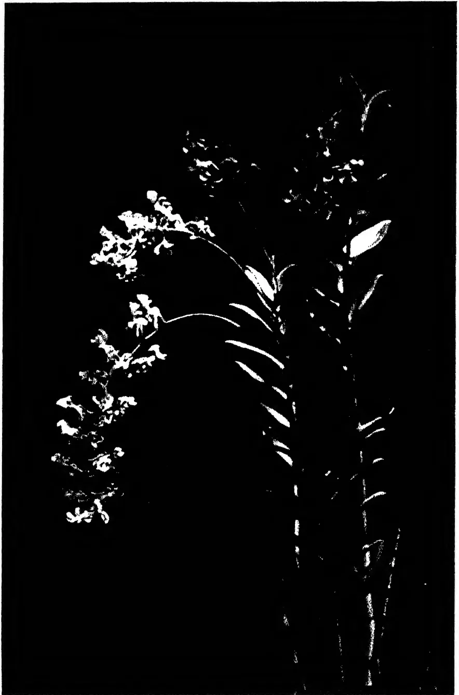
DENDROBIUM SUPERBIENS, RCHB. F.
17EDWARD PERERA
CURATOR, HENERATGODA BOTANIC GARDENS, GAMPAHA
THIS magnificent species is a native of tropical Australia, and is undoubtedly one of the most charming of all the Dendrobes.
It is a most profuse bloomer and has the peculiarity of blooming from the old stems at the same time as from the new ones, and frequently repeats this freak of nature for several years in succession.
In addition to this it flowers in a very young state, when the stems are scarcely 6 inches high. These stems when fully grown are from 2 to 3 feet high, and about 3 inches in circumference, furnished with thick, oblong acute leaves. The flowers are produced from fifteen to twenty-five at a time in long racemes, the sepals being dark purple, beautifully reticulated, and having a whitish border, the petals of a beautiful warm purple, longer than the sepals, and the lip crimson-purple, short, with incurved side lobes. The flowers last three months in perfect condition.
Culture.—This an other allied species, which have jointed, bamboo-like pseudo-stems are easily propagated by removing the ripe pseudo-stems from an old plant, cutting them into lengths of 6 inches or so, and fastening them on to pans or baskets of moist sphagnum moss. Under this treatment the pieces soon form shoots and these when rooted may be removed and planted separately in a compost of porous brick, charcoal and bone, the ordinary compost used for Dendrobiums. It requires very moist tropical treatment when growing. Owing to free and vigorous root action of this plant, a fairly large sized pot, preferably made of teak, should be provided, if the best results are to be obtained. The plant likes plenty of sunshine after it is well established.
18EXPERIMENTS with tobacco in the Island have been conducted with a view to the production of a commodity suited to the European market. Systematic attempts in this direction, under the auspices of Government, date from the Mahaillupalama trials conducted by the Ceylon Agricultural Society, which was the forerunner of the Department, in 1910.
I. The Ceylon Agricultural Society decided to experiment for one year in the production of a leaf for the European market. Twenty acres were to be opened under Sumatra and Java varieties at Mahaillupalama. As it was considered inexpedient to engage the services of an expert, which would have entailed heavy expenditure, supervision of the experiment was entrusted to Mr. E. Cowan while the work was to be carried out by the Manager of the Mahaillupalama Station.
In 1910 about 25 acres were planted with Sumatra and Java varieties ; in 1911 only Sumatra tobacco was planted ; the Society then dropped the scheme and work was continued on behalf of the Botanic Gardens Department.
In 1911 Mr. J. Van Leenhoff, Tobacco Expert to the Transvaal Government, visited Ceylon on a private engagement. His services were thereupon requisitioned by the Ceylon Agricultural Society to report on the Mahaillupalama experiment and by Government to report on the tobacco industry in general.
The opinion of Mr. Van Leenhoff regarding the Mahaillupalama experiment was that it was badly carried out and work should be stopped at once, and an expert in tobacco should conduct the work in future.
Mr. Van Leenhoff's views regarding tobacco in general, which formed the basis of future work, were as follows :
“ At present the area devoted to chewing tobacco largely exceeds that occupied by cigar tobacco, a state of affairs which
19may be reversed in view of the fact that the only export market for the chewing tobacco, South India, may cease to be available.
The aim should be to abandon a large part of those fields where tobacco is grown at present and to start tobacco culture on land in localities where there are possibilities for cigar and cigarette tobacco."
His final conclusion was that taking all the facts into consideration, it seemed worth while to continue experimental work in Ceylon, since the prospects of growing and curing a tobacco suitable for export to Europe were not unpromising. It was essential that such experimental work should be prolonged, and that it should be conducted under expert supervision, both with cigar tobacco and tobacco of the Virginian type.
(The Department of Agriculture was established in 1912).
II. The first tobacco expert, Mr. B. F. Scherffius, arrived in Ceylon in May, 1914.
Land for a trial ground was secured at Tinnevelly, Jaffna.
The object of the work was to ascertain whether good class leaf cannot be produced for the European market.
Several varieties comprising pipe, chewing, cigarette, wrapper and filler tobaccos were planted, of which a few kinds were selected for experimental work.
In 1917 after 3 years' work Mr. Scherffius came to the following conclusions :
(1) flue-cured tobacco could not be produced under the soil and climatic conditions of Jaffna ;
(2) the production of a high grade tobacco of the cigar type suitable for European markets was unlikely owing to the bad burning qualities caused by excess of chlorine ;
(3) the results by the trials with air-cured White Burley tobaccos for pipe and cigarettes were encouraging and worthy of being continued on a more extensive scale.
Mr. Scherffius left on the termination of his agreement in 1917.
In 1916 trials were also conducted on the Anuradhapura Experiment Station ; three varieties were grown ; growth was as good as in Jaffna ; the crop was air-cured and sent to Jaffna for final treatment.
20The object of work in Jaffna thence forward was to popularise the cultivation of White Burley.
During the next few years White Burley was cultivated on the Jaffna station as a commercial crop and the cured leaf was sent to the Crown Agents in London for disposal. The 1919 crop realised 1s. 9d. a lb. and the reports on quality were encouraging. In 1920 propaganda work was carried out to popularise the cultivation of this crop which the Department undertook to purchase in the form of green plants from growers at the rate of 8 cents to 20 cents per plant. In 1923 there were 27 growers of White Burley and the crop realised 1s. 6d. in London. In 1934 Government inaugurated a Purchase Scheme worked by the Agricultural Department whereby cultivators received part payment for their produce, the balance being paid on completion of sale in London. The crops which were cured by growers were brought to the Jaffna Station for grading and baling before dispatch to the Crown Agents. This scheme operated till 1932 when the Jaffna White Burley Tobacco Sale Society was formed. The number of growers has varied each year. During the period 1925 to 1930 the number respectively was 268, 219, 166, 250, 270 and 243. Since then there has been a falling off and in 1934 the number was 158.
Prices have fluctuated between 1s. 1½d. and 1s. 9d. a lb. and since 1929 a drop has taken place.
The total production of White Burley tobacco in Jaffna rose to 28,386 lb. in 1928. In the three years 1932-1934 the figures were 11,140 lb., 15,175 lb. and 22,708 lb. In his report for 1932 the Director of Agriculture drew attention to the necessity of standardising Ceylon produced White Burley as difficulty was being experienced in selling the tobacco in the London markets at prices which prevailed in previous years. Since the formation of the Co-operative Sale Society, reports have been received of the deterioration of quality of Ceylon grown White Burley. The price secured for the 1934 crop was 8d. to 1s. 3d. a lb. and the 1935 crop still lies in the hands of the Co-operative Sale Society.
III. In November, 1918, Mr. W. B. Wilson arrived and was appointed as Tobacco Expert to take charge of the work at Jaffna and also establish an experiment at Teldeniya.
Foundation trials for more intensive experiments, variety tests and general observations were laid down at Teldeniya.
Eleven varieties were transplanted in April, 1919.
21The crops were harvested and had to be brought over to the Experiment Station, Peradeniya, for fermenting and grading as Mr. Wilson, whose services were engaged in the first instance for one year, resigned in November, 1919.
The work was then carried on by the Manager, Experiment Station, Peradeniya, and Acting Divisional Agricultural Officer, Central, whose report for 1920 stated that 6 acres were planted out. In the report for 1921 it was stated that there was no market for the 1919-20 crops sent to England and India. Therefore the manufacture of cigars was undertaken with the crop in hand. The Teldeniya site was given up and work transferred to the newly opened agricultural station at Nalanda where, after a while, tobacco ceased to be grown.
IV. In 1923, the Director of Agriculture drew attention to the visit of representatives of the British American and Imperial Tobacco Companies and of the Indian Leaf Tobacco Development Company, all of whom confirmed the view that the only types of Ceylon tobacco suitable for the European markets were the Burley types and recommended that the trials already made with these types in the Jaffna district should be extended to others. The recommendations more precisely were: (1) White Burley in Jaffna and possibly elsewhere should be continued; (2) attempts should be made to grow a thin cigar wrapper leaf in the Dumbara area; (3) experiments should be made with flue-curing.
V. In 1931 White Burley, was tried in Tamankaduwa and on the agricultural stations at Vavuniya, Anuradhapura and Ganewatte. At Ganewatte experiments were inaugurated to determine the best means of curing for which purpose a small flue-curing shed was constructed.
Since then systematic work has been conducted on both Ganewatte and Wariapola stations.
In 1933, a suitable type, viz., Harrison's Special for cigarettes was selected and grown at Wariapola and Ganewatte, and two flue-curing barns erected.
VI. In 1934, The Ceylon Tobacco Co., Ltd., arranged for a visit by Mr. Cooper, an American expert, who spent 3 weeks at Ganewatte and Wariapola and gave a thorough demonstration in the handling of the tobacco crop, besides conducting training classes which a number of Agricultural Instructors attended.
Four flue-curing barns were constructed, 2 at Ganewatte, 1 at Wariapola and 1 at Maho.
92A. W. R. JOACHIM, Ph.D.,
AGRICULTURAL CHEMIST
ENQUIRIES have been received by the Department from time to time, on the method of curing cashew nuts for export. In S. India the cashew nut industry is well organised and a fairly considerable trade in the commodity has already been established with the United States of America and Europe. The methods adopted in that country have been studied on a laboratory scale in the Chemical Division with a view to determining whether they could be modified or improved upon in any way. The results obtained are briefly referred to in this note which deals mainly with the curing processes as practised in S. India. These are as follows :
(1) Removal of the pericarp or shell. (a) Roasting.—The cashew nut has a very tough pericarp or shell which contains a caustic oil and makes the shelling of the nut a troublesome process. Roasting of the nuts is adopted in India to render them brittle and less caustic to the skin when broken. The oil is thereby removed, even partially. The roasting is done in open iron pans over a small circular earthenware furnace. Small quantities of nuts are treated at a time and the period of roasting is about a minute. The rinds of the previously shelled nuts serve as fuel. Great care is taken that the nuts are not over-roasted or the kernels would be browned and thus rendered unsaleable abroad. Excessive roasting is prevented by throwing water on to the pans to extinguish the fumes. Several of these furnaces are operated together and the smells emanating are so acrid and unpleasant that the factories have to be situated far away from the residential areas.
In order to ascertain whether the method of roasting in the open could be replaced by heating in an oven, trials were made in the Chemical Laboratory with the heating of the nuts
23in an electric oven at different temperatures and for varying times. It was found that temperatures below C. were insufficient as the nuts continue to be tough and leathery. Heating at C. for half an hour makes the shells somewhat brittle, but some of the kernels are partly discoloured. A temperature of about C. would perhaps be more suitable from the standpoint of discolouration of the kernels. Tests with a roasting machine in S. India showed that it had the same defect of browning a higher percentage of kernels than would be the case in the open pan roasting method. Heating at high temperatures of short duration is preferable to heating at lower temperatures of longer duration, as the kernels are not then discoloured. If the furnaces could be operated in one shed so designed as to cause the suffocating gases to be drawn up a chimney by suction, the nuisance might be avoided to some extent. But the cost of installation of such an arrangement would be fairly high and may considerably increase the cost of production.
(b) Shelling.—The roasted nuts are next shelled. This is a very skilled operation and in S. India is mostly done by women and boys with a sort of wooden mallet. The greatest care is required in shelling if kernel breakages are to be reduced to the very minimum. The kernels are removed from the shell with a wire prong.
(c) Inner Coat Removal.—It is essential for export purposes to remove the pink to reddish brown inner coat. In India this is done by spreading the nuts on wire gauze trays in hot air rooms under controlled temperatures. Heating at a temperature of about F. for three hours is generally found to be best under Indian conditions. As this optimum temperature will vary with the climatic conditions and the nature of the nuts, it is not surprising to note that under local conditions a temperature of about F. has been found more suitable. At higher temperatures the kernels become too brittle. The drying of the kernels, besides removing the inner coat, removes any excess moisture in them and thus prevents the tendency to mouldiness in storage. The use of wire gauze trays tends towards a discolouration of the kernels at points of contact with the metal. Some suitable textile fabric may be substituted if necessary. The seed coat is removed soon after the kernels are taken out of the oven. This operation is also done
24by hand. Delay in peeling renders the process more difficult. After peeling the kernels are spread on the floors indoors, when they absorb some moisture and become less brittle. An actual determination showed a gain in weight of about 1 per cent. moisture in two hours.
(d) Grading.—Cashew nuts are graded into : (1) wholes or completed kernels ; (2) halves consisting of one cotyledon only ; (3) brokens, the broken kernels ; (4) rejects or spoils. Only grades (1) and (2) are exported, but the latter fetch much lower prices than the wholes. The brokens are sold locally and the rejects are used as poultry food together with the seed coats.
(e) Packing.—In India the well-dried, graded kernels are packed in 25-lb. tins. The nuts were until recently filled into the tins which were then charged with carbon dioxide gas and sealed. This practice has now been given up, as it was regarded as objectionable by importers. The filled tins are instead vacuumised through a small hole in the lid, which is then hermetically sealed. Experiments carried out in the Chemical Laboratory showed that cashew nuts were well preserved in vacuum or in carbon dioxide for as long a period as two years. Further, clean, well-dried nuts when well filled in hermetically sealed containers were found to keep satisfactorily for a period of over a year. The risks of damage in storage are however too great to advise the adoption of this practice commercially.
There are a number of by-products of cashew which should find some use locally. These are the rind oil, the seed coat and rejected kernels, the juice of the pedicel or soft fruit and the gum.
The rind oil when required, is obtained by heating the nuts in inverted earthen pots and collecting the oil that drains. As so obtained the oil is a dark, viscid liquid with a characteristic smell and caustic action on the skin. Its chief constituents are anarcadic acid, gallic acid and cardol. Only 12-15 per cent. of oil is obtained, though the rind itself contains about 35 per cent. of the by-product. Experiments done locally show that if rind oil is the primary consideration, it could be extracted by placing the nuts in a funnel-shaped container and heating the latter in an oven at a temperature of 120° C. or higher for a period of three or four hours. Pricking the nuts facilitates the
25removal of the oil. The kernels, though somewhat browned, may find a sale locally. The oil can also be prepared from the shells obtained by cutting the thoroughly-dried nuts, as is occasionally the practice locally. The oil is used as a wood-paint, for treating fishing nets, etc., and when of good quality has found use in the manufacture of bakelite. The demand for the oil abroad is however small now and its present price in India is so low that it would not be profitable to prepare the oil at the expense of the kernel. It should be possible to obtain the oil by heating the nuts under reduced pressure, but the outlay on plant will probably render the process uneconomic. A very good quality oil has been obtained by extraction of the shells with solvents, but the cost will be prohibitive on a commercial scale.
The thin, pinkish-coloured testa or seed coats together with the broken kernel tips form a good poultry food. Analysis of a sample in this laboratory gave the following percentage results : water 8.1, proteins 7.6, fat 12.3, carbohydrates 59.2, fibre 11.0, ash 1.8. Its nutritive value is therefore high.
A gum obtained from incisions in the tree is reported to be insect-proof, due probably to traces of cardol. It could therefore be used for book-binding.
The pedicel or soft part of the fruit is used in the West Indies, Goa and elsewhere for the preparation of a spirit by the fermentation of the juice extracted from it. The juice contains about 8-12 per cent. of reducing sugars and has anti-scorbutic properties. The question of the manufacture of an alcoholic drink is however one which will be governed by Excise Regulations.
I am indebted to articles in 'Industry', the Madras and Mysore Department of Agriculture Journals, and to a report by Mr. W. R. C. Paul for information on the subject. Also to my Assistant, Mr. D. E. V. Koch, for carrying out the trials referred to.
26BEFORE describing the system of pruning which has been practised for three years running on the coffee plots at the Experimental Station of this Centre (a system which has given very satisfactory results, and which we therefore wish were understood and practised in this country), it is convenient, for the sake of clarity, to give a few lines to describing the development of the coffee tree and to consider the principles which are to be followed in the practice of pruning.
The coffee tree may be considered as consisting of two parts; a subterranean one which bears the organs of absorption known as roots, and a second, bearing those organs whose main function is the manufacture of the food supplies of the plant, which is called the stem.
Pruning is practised on the stem, and we are therefore concerned with its development.
The stem of the coffee tree grows vertically, becoming thinner and thinner until it terminates in a bud which is found at the junction of two opposite leaves and is protected by two membranous structures called stipules, which are formed at the base of the leaf stalks. The stipules protect the bud by means of their covering of waxy substance. The development of the terminal bud results in the indefinite prolongation of the stem, unless it is for any reason arrested.
As the bud develops, the stipules separate, and two small leaves appear, of a yellow-bronze colour, which later become green. These two small leaves are attached to a node of the shoot. The internode below this point increases in length and this lengthening is continued above the leaves.
Accompanying the terminal bud and covered by the same pair of stipules are two lateral buds, which give rise to the primary branches, commonly known as bandolas. The primary always grows from the angle of a leaf with the main stem, and its growth depends on the development of the terminal bud. In its earliest stage of development, the primary makes an angle of some to with the main stem, but, as it grows, the angle becomes wider and wider, until it lies in a nearly horizontal position. The first lateral buds, those which are formed in the axils of perhaps the first five pairs of leaves of the young coffee plant, do not develop unless the terminal bud has been destroyed below the fifth node, in which case they always take a vertical position and function as secondary shoots which will later produce secondary branches. Since in this case the shoots have sprung from the axils of the
*By B. R. Iglesias from Revista del Instituto de Defensa del Cafe de Costa Rica, Vol. 1, No. 4 (1935)
27leaves, they form at the point of junction an acute angle, which makes them easily distinguishable from secondary shoots formed by the development of adventitious buds.
The primary branch has at its tip a terminal bud, together with two tiny lateral buds which may or may not develop.
The terminal bud is the one which increases the length of the branch ; but if for any reason this bud is destroyed, then the lateral buds come into play, forming secondary branches or palmillas, which, in their turn, should the terminal bud be destroyed, may form tertiary branches.
The ramification of the primary branch may occur without the elimination of the terminal bud if the plant encounters particularly favourable conditions for its vegetative growth. In some cases it has been observed that adverse conditions may produce the same effect.
If the terminal bud of the main stem be destroyed at about the fifth node, above a pair of already formed primary branches or if for any other reason the flow of sap in the upward direction is interrupted, secondary shoots appear, growing from adventitious buds which are formed below the junction of the secondary branches with the stem. These new shoots are generally formed in pairs at the last node of the stem. If the last two primary branches are cut away, these shoots develop rapidly, otherwise the sap goes on nourishing the primary branches and consequently the appearance of the shoots is retarded.
Under certain circumstances—for instance, after a heavy crop—if circumstances have not been sufficiently favourable to allow of the development of new wood at the same time as the production of fruit, the main stem, as well as the secondaries if there are such, will become covered for nearly the whole of their length with adventitious shoots or hijos (literally “ sons ”) one, two, or more at each node. The same phenomenon is seen when the shoots are bent, whether accidentally or by the weight of the fruit, in which case the adventitious shoots are formed only on one side of the shoot.
The primary branches of the coffee tree are arranged in a phyllotaxic order of three-six ; that is to say that if, starting at the junction of one of the branches, a line be drawn parallel to the main stem until the junction of another branch be reached, there will be five intermediary branches in a spiral around the stem.
The branches serve to support the leaves, which in the coffee tree are borne in pairs above the nodes and in two different planes, perpendicular to one another. This peculiarity can only be seen by observing the arrangement of the new leaves at the tip of the branch, because as this develops it undergoes a twisting movement which brings all the leaves into the same plane, so that they shall have equal access to the sunlight. Careful observation of the herbaceous part of the branch reveals a longitudinal spiral groove which indicates the twisting which the branch has undergone in the course of its development.
28When the coffee tree is subjected to changes of temperature and of precipitation, growth of the branches is not uniform but corresponds to changes in conditions. At the beginning of spring the plant enters upon intense vegetative activity, which is shown in the rapid prolongation of the branch, continuing until the exigencies of nourishment for the fruit divert, to a certain extent, the flow of the sap. The ripening of the fruit, followed on the Pacific side of the country by a pronounced drought and by a fall in temperature, causes an almost complete suspension of vegetative activity, which is seen in the small number of leaves, small also in size, produced during this period. As the branch lengthens, increasing the distance of the terminal bud from the main axis, the zone which represents the period of vegetative activity is correspondingly smaller.
It may be said that the increase in length of the branch during this season of activity will always be approximately half the growth of the previous year ; that is to say, if the branch has grown 50 centimetres in its first year of development, in the second it will reach a total length of 75 centimetres, and in the third barely 87.5. As the fruit of the coffee is only produced along the wood of the previous year, this relationship between the age and the length of the zone of production of the branch must be carefully considered in the practice of pruning.
When the principal axis of the coffee tree develops freely, the tendency is for the sap to nourish chiefly the main bud and the new branches, so that the lower primary branches gradually weaken, and die after two or three crops. The loss of these primaries means a reduction in the productive capacity of the plant ; if, however, the natural course of the sap, which is in an upward direction, be altered, they are provided with better nutrition, and the production of new wood in these branches is greater than that of branches further away from the root system of the plant. In this case the primary thickens considerably, sometimes reaching a diameter of 5 centimetres, and at the same time shows great ramification, forming secondary and tertiary branches, which together form a structure which our farmers call a "crinoline".
The object of the art of pruning is to modify the natural manner of development of a plant so as to obtain a greater abundance of fruit, more regularly, and of better quality, than when it is allowed to develop freely. Pruning modifies both the form and the function of the plant.
The practice of pruning has five main objects, viz.—
In the coffee tree these objects are pursued by the employment of five different methods of pruning, each with its own special aim. Each of these systems may be conveniently treated according to its necessity for the development of the tree.
Pruning by formation is practised on the main axis of the plant with the object of producing secondary and tertiary shoots. This operation must be begun when the plant is in the nursery and before it has formed its first primary branches.
The axis is pruned above the third or fourth pair of leaves, in order that the first secondary shoots shall develop, through the activity of the rudimentary buds which are found in the axils of the leaf. These shoots, on account of the position of the buds from which they sprang, will grow forming an acute angle. In order to separate them at the bottom, and to give a better shape to the plant, a small stake or piece of bamboo, about five to ten centimetres long, is inserted between the two young stems, perpendicularly to them. This is done immediately the young shoots have attained sufficient firmness to hold the stick. When the secondary stems have developed more than five nodes, they are again topped above the fifth node, to increase the activity of the adventitious buds and the formation of tertiary shoots. The growth of these last is more rapid if at the time of pruning the primary branches corresponding to the fifth node are also cut away. The desired symmetry in the shape of the tree depends on the formation only of the tertiary stems on each secondary, so that one should eliminate any other stem springing from an abnormal position, as sometimes occurs. At this stage of its development, the plant will have four tertiary stems, and as pruning by substitution will be performed on all of them, we have called them "shoots for substitution pruning".
The tertiaries, like the secondaries, are pruned above the fifth node, giving rise to eight quaternary stems or fruiting shoots. It is desirable that these shoots should grow as slowly as possible, in order that the whole skeleton of the plant below them shall become strong and develop vigorously. This is achieved by not cutting the primaries which correspond to the node above which the tree has been capped. The fruiting shoots, whose life, because of pruning by substitution, will not be more than two years, will be pruned as necessary above the fifth node.
This system of pruning is practised on primaries which have borne fruit for two successive years. The practice in Costa Rica is to remove these branches completely as soon as they are no longer capable of bearing fruit, and the result is the formation of haphazard branches of every sort, very thick and rising to a considerable height. The tendency of our system is nevertheless to maintain the zone of fruiting of the plant as near as possible to the
30roots, for the reason that, the further away from the roots the fruiting branches are, the longer will the primary grow during an active season, and consequently the smaller will be the crop which the branch can produce. The system of pruning by restoration is applied therefore to all the primaries above a height of about fifty centimetres from the ground ; that is, the branches are cut, when they show signs of weakening after bearing fruit for two years running, at the first and second node from their junction with the stem. Unless the primary has for some reason or other lost its vitality, this pruning produces the development of secondaries, usually one, sometimes two or more, which, during a season of activity, will lengthen almost as much as a primary, and produce a very heavy crop the following year. When this new branch has borne one large or two small crops, it will be restored by the same system, that is to say, it will be cut above the first node from its junction with the primary. It is not always desirable to apply pruning by restoration to all the primaries, as, if these are very numerous one runs the risk of producing very dense foliage, which may make for an unhealthy state.
After three or four years from the commencement of pruning by restoration on a plant, its branches will have become considerably thicker and capable of producing and carrying heavy crops. Since the primaries of a plant do not all appear at the same time, but in succession from below upwards, when the first primaries are restored the second are bearing fruit and the third are preparing for the following crop ; at any given time the tree will be in a good condition of productivity.
The skeleton of the tree having been already formed by the method described in the section on pruning by formation, if the tree is left to continue its development freely, the eight quaternary shoots will lengthen indefinitely, each year increasing less than the year before, on account of the greater distance from the root system, and as a result the lower parts of the tree will weaken to a certain extent, these being the parts which are capable of the greatest productivity and which we wish to maintain in as vigorous a state as possible. If these shoots were pruned as they grew longer, the result would be an excessive multiplication which would also tend towards debility in the lower parts and, at the same time, undernourishment in the terminal shoots. To avoid this, the system which we have named "pruning by substitution" should be practised. This consists in pruning, after the first fruiting of the primary branches corresponding to the quaternary shoots, two of the tertiaries above the fourth node, or the one inferior to the fork formed by the two quaternaries. The result is the formation of two new quaternary shoots above the fourth node of the tertiary. This pruning should be carried out on the Pacific side, at the end of the dry season, and on the Atlantic side when the tree shows least activity. The following year the same operation is performed on the two tertiaries which were not pruned the previous year. The third year from the beginning of this pruning, two of the substitution
31shoots are cut above the third node, and the fourth year the operation is repeated on the remaining two. This pruning is continued in successive years until the substitution shoots are completely worn out, after which the secondary is pruned above its fourth node, in order to restore the two tertiaries, which, pruned at the fifth node, will serve in subsequent years as substitution shoots. When these latter are worn out, their place will be taken by the branches arising from the tertiaries pruned above the third node.
Theoretically, pruning by substitution would keep the tree young for 104 years, but since, on account of the accidental destruction of the adventitious buds, the new shoots do not always appear at the node above which the branch has been pruned, this result is not obtainable in practice.
The hijos are shoots growing from the nodes of the vertical stems, below the junction of the primary branches. These shoots are the result of the development of adventitious buds, generally produced by excessive defoliation of the tree, either by diseases in which the leaf is the organ affected, as a consequence of a heavy crop when the tree could not produce new wood, or after a prolonged drought accompanied by strong winds. The usual pruning practice of our farmers consists in destroying these shoots, tearing them out from the base so as to avoid the debilitating effect which they might have on the tree. One should remember that these shoots rise from adventitious buds, and that by destroying them one removes the possibility of their developing if it should be necessary for uniformity of results in pruning by substitution. This danger can be avoided by pruning the shoot above the first node from its junction with the stem. If it is surrounded and covered by the foliage of the plant, its development will be arrested; but if pruning by substitution reaches the node from which it springs, the adventitious buds beneath its only pair of primaries come into activity and give rise to two vertical stems, one of which is left to take the place of a quaternary.
The suckers (mamonés) are those which grow from the main stem below its first bifurcation. Since they are near to the roots, their development is rapid and they should be eliminated, for otherwise, they will weaken the whole of the structure above themselves. In a case in which the plant has, for any reason, lost its vigour, the suckers may serve to develop a new and vigorous framework.
This class of pruning consists in the elimination of a complete organ which has permanently lost its vigour, or which has for any reason died and constitutes a menace to the health and life of the tree.
The farmer should keep his trees under constant observation to prevent withered stems or branches from remaining any length of time on the plant and endangering the development of luxuriant growth,
32Every stem or branch consists of nodes and internodes ; new shoots grow only from the nodes. If when a branch or stem is cut a part of the internode remains, the sap will not rise beyond the node, and all the wood above will die from lack of nutrition. As soon as the material dies, fungi and other saprophytic organisms begin their work of destruction, giving rise to the phenomenon commonly known as decay. The decay extends to the healthy material, and may affect it and endanger the health of the whole plant. It is therefore of the utmost importance that in pruning the cut should be made as near as possible to the node. In this case the cells of the bark continue their work, and rapidly form a covering for the wound, preventing any danger of infection. When the stem which has been cut has a diameter greater than 3 or 4 centimetres, the cut should be painted with oil or tar to exclude all possibility of infection until it is covered by bark.
In pruning primaries and capping tertiaries, it is convenient to use secateurs, as being quicker.
For pruning thick branches, a pruning saw is more efficient and economical than the knife usually employed. If the surface of the cut is large, it is well to use a sharp knife after the saw, in order to leave it completely smooth, which greatly reduces the chances of infection.
33CLOSE competition and the rigorous standards demanded by the fruit market may be held largely responsible for the anxious attention now being paid by citrus growers to this problem of "seedlessness". So long as the "seedless" fruit receives its premium, the grower and shipper have to make every effort to standardise that characteristic, and ensure that cases marked "seedless fruit", of whatever variety it may be, shall conform strictly to that specification. Unfortunately seedlessness is a character which, like flavour, cannot be tested and graded except by destruction of the fruit. The onus rests on the grower who must first convince himself that his planting material is absolutely uniform, and secondly, be constantly on the look-out for fluctuations from one cause or another in the standard quality of the fruit he exports. It is with the object of assisting him to know more about the causes of those fluctuations, with a view to remedying them, that the following notes summarising our knowledge regarding seedlessness in citrus have been written.
The position in Trinidad is probably not much different from that in other countries, but receives urgency from the fact that so many plantations are only now coming into bearing for the first time. The remedy for a high percentage of seeded fruit coming from an orchard must be sought and applied as soon as possible, so as to involve the least expense and trouble for the growers, and to prevent injury to the island's reputation for "quality" fruit.
Without making the necessary observations and experiments under local conditions it would be useless at present to advise on the best methods of eradicating seeded fruit or of preventing future recurrence of the trouble. We have only the experience of growers and scientists in other countries to guide us in tackling the problem for ourselves. That experience is on the whole rather meagre, and is culled from acquaintance with several different varieties of citrus in places often differing widely in their climatic and cultural conditions. Bearing this in mind, this survey of the findings of foreign workers may help us to anticipate the results of our own observations, and to suggest ways and means of deriving from them the maximum benefit.
*By N. Wright in Tropical Agriculture, Vol. XIII, No. 5, May 1936.
34It will be well to review briefly the mechanism of fruit development in Citrus species, since there are peculiarities in the behaviour of this group not shared by the majority of other fruit trees.
Structurally, they are all many-seeded—that is to say, the young fruits at the flowering stage contain a large number of ovules or seed rudiments. In what may be termed the simpler or more primitive varieties, most of these ovules develop, provided that they are fertilised by pollen derived either from the same plant (self-pollination) or from another plant (cross-pollination). It is important to distinguish between pollination, which is the transference of pollen to the stigma of the flower, and fertilization, which only occurs after the pollen tubes have grown down the style from the stigma to the ovules, and entered them. If for any reason pollen does not reach the stigma, or having arrived does not grow down to the ovules, not only the ovules themselves but the whole fruit fails to develop. In these primitive varieties, therefore, the fruits if they develop at all contain numerous seeds.
In the more highly developed varieties, failure of seed formation does not prevent fruit development, which is then said to be parthenocarpic. In some cases pollination is necessary; in others it is not. Such parthenocarpic varieties are thus potentially “seedless,” though the number of seeds actually found in the fruit will depend upon a number of other factors. If both pollen and ovules are viable, and the pollen grows successfully in the stigmas of the same plant, seedless fruits can only result from causes which prevent pollination, such as an absence of pollinating insects. In some cases, however, although both pollen and ovules are viable, self-pollination is not followed by fertilization and pollen from another variety is necessary before seeds are formed (self-sterility). Pollen from certain other varieties may be equally ineffective (cross-sterility), although some varieties will cross readily.
Not infrequently there is formed some degree of structural sterility, involving either the ovules (female sterility) or the pollen (male sterility) or both, which may be partial or complete. Almost complete structural sterility on both sides is found, for example, in the Washington Navel Orange where it has been demonstrated (Webber 12, Ikeda 4) that the young ovule seldom reaches maturity, and that no fertile pollen grains are formed. Ikeda notes a similar disintegration of the young ovules in the Satsuma mandarin. Nagai and Tanikawa (5), investigating four varieties of tangerines, all with fertile pollen, found that they produced fully-seeded (16-49 seeds) fruit on cross-pollination, but completely seedless fruit when self-pollinated. This example shows us that some functional defect was present to prevent fertilization when self-pollinated, and that the mere fact of proving the viability of pollen on an artificial culture medium does not presuppose its effectiveness on any stigma. It is obvious that whatever the condition of the pollen, partial female sterility will lead to a reduction in the number of seeds that can be formed, and complete female sterility to complete seedlessness. Male sterility, in the absence of any foreign pollen which may be fertile, will have similar results.
35In citrus we have an additional complication arising from the fact that so-called "apogamic" seed may develop without fertilization, though not necessarily pollination as well. The progeny of such seed is identical with the mother plant from which it has been derived by vegetative growth. We may find therefore that the pollen of certain varieties, though it fails to effect fertilization, may by some chemical stimulus produce apogamic seeds. It seems possible that in rare instances (Webber, 12) apogamy may occur without even pollination, but this is as yet a matter of uncertainty. The only sure proof is by emasculation and bagging of the flower. It is unsafe to predict how many seeds in a fruit apogamy might account for, but the probability is that a fully-seeded fruit with—say 60 to 80 seeds—could not be explained in this way.
The "Marsh" variety of grapefruit may be called commercially "seedless". Hume (3) describes it as having "two to six seeds or none". We have to ask ourselves—what is the origin of those few seeds, and what unusual circumstances are present to cause a marked increase in their number? The general consensus of opinion, though at present we have no extensive data to back it, is that Marsh fruit contains either few (say up to 12) or many seeds (say 40 to 80). This rather suggests that the conditions of seed formation are different in the two cases. If the few seeds of a true Marsh are the product of fertilization, then partial sterility must be postulated. In that case one would expect to find intermediate stages of increasing sterility and corresponding numbers of seeds. If, on the other hand, those seeds were of apogamic origin, then the fully-seeded fruit could be explained as the result of accidental pollination by a fertile tree in the neighbourhood.
Putting aside the possibility of fruit becoming seedy as a result of abnormal apogamic seed development, it will be clear from what we have said that a seedless fruit must be at least self-sterile. If such a fruit now develops seed, the cause may be twofold: either (1) it has been pollinated by a cross-fertile variety, or (2) it has acquired self-fertility through a genetical change in its constitution—mutation or "sport". In examining the rather conflicting evidence on these two theories, it will be as well to bear in mind the possible effect of the environment upon both of them. We have no proof of its influence, but theoretically we would expect environment to play an important part whichever theory is adopted.
What appears to be the most completely seedless citrus variety under all circumstances is the Tahiti lime. Uphof (11) from an examination of the structure of the flower, came to the conclusion that seed production was impossible, even with foreign pollen. The same author finds that self-pollination in the Satsuma is structurally impossible, but does not appear to exclude altogether the chances of successful crossing. Tanaka (9) in fact,
36says of this variety that "through cross-pollination or under certain conditions favouring apogamic seed formation, a limited number of seeds are formed".
Oppenheimer (6) submits a considerable body of evidence to favour the view that cross-pollination is responsible for at least a part of the increased seediness found in groves of the Shamouti orange. His figures represent the average number of seeds per fruit, estimated from 25 fruit per tree. Eight selected trees, each growing in the vicinity of another citrus variety, were counted in this way, and compared with similar data from eight controls situated at a distance from other varieties. No statistical treatment of the results is attempted, but the author concludes that they "prove definitely" that Marsh grapefruit, Lisbon lemon, and probably Sweet lime are harmless neighbours for the Shamouti so far as seediness is concerned, whilst the other varieties—Valencia, Baladi (a seeded sport of Shamouti), Duncan, Yusuf Effendi tangerine, and Sour orange—all cause an appreciable increase in seediness. These results are at least suggestive, but it is worth noting that the greatest difference observed in average seed number per fruit between a control and experimental tree is only 3.78, and the mean difference taking into account the whole 16 trees only 0.75. These differences are not such as would be noticed in commercial fruit, nor of course are they comparable with the very large differences at present concerning grapefruit planters in Trinidad.
Oppenheimer also carried out some controlled hand pollinations using pollen of some of the above-named varieties. The results from one such experiment showed that fruit pollinated with Valencia gave 2.1 seeds as against 0 by self-pollination; with Baladi pollen 4.2 against 0.9; with sour orange 5.0 against 0.6; with Sweet lime 0 against 2.3. Four tangerine varieties and the Lu Gim-Gong orange gave in a separate experiment an average of nine seeds per fruit, but no details relating to the number of trees pollinated are recorded. The author also presents figures to show that the flowers of trees giving the larger number of seeds have more viable pollen (as determined by pollen-germination tests), than the flowers of trees yielding sparsely-seeded fruit.
Finally reference may be made to his observation of annual variations in the seed content of a single tree, and his suggestion that weather conditions may be partly responsible, for example by influencing the movements of pollen-carrying bees. This question of climatic effect is an important aspect of our problem, but one about which we have no information. Mention might be made here of Coit's (1) finding that in the Washington Navel orange a higher percentage of mature embryo-sacs were found at Riverside, California, than at Whittier where climatic and soil conditions are different. The same author quotes Ikeda (4) as saying that "cross-pollination between seed-bearing and parthenocarpic varieties (of sweet orange) may result in the setting and maturing of fruit containing viable seeds, provided the pollen used is that of a congenial variety". Unfortunately Ikeda's figures are not available to study this contention.
37Various observations on the seedlessness of pummelos (shaddocks) may serve to indicate the possible state of affairs in grapefruit, their nearest relative. From Siam, the home of some of the finest seedless pummelos, we have one or two observations on the constancy of the seedless character. Groff (2) mentions that in one of the best districts of Nakhon Chaisi the largest crop is picked in November, " though at other seasons the fruits are more seedless". A photograph in the same article of two half-fruits of the Kao Phuang variety, taken from the same tree but at different times of the year, is striking proof of this fact—the one being completely seedless, the other fully-seeded. Groff has also observed trees bearing seedless fruit, except on branches extending towards other varieties of regular seed-producing habits. Torres (10) records the fact that Siamese pummelos, with a reputation for seedlessness, when introduced into the Philippines contain large numbers of seeds in normal-sized fruit, though small or undersized fruit were more or less seedless. The abundant pollen which the flowers from these trees produced was found, on artificial pollination, to be incompatible and no fruit was formed. Cross-fertilization by other citrus varieties in the neighbourhood was therefore strongly suspected as the cause of seediness.
This view meets with the strong support of evidence obtained with pomelos (a different spelling for pummelos or shaddocks, as used here) in Hawaii by Pope (7). Two distinct crops are obtained in Hawaii—a "spring crop" maturing in April, and a "main crop" maturing in autumn. Fruit from the former, set at a time when few other citrus varieties are in flower, is seedless; whilst "main crop" fruit set in the spring when other citrus trees are in bloom, is heavily seeded. In order to substantiate the obvious inference from these facts, Pope carried out an experiment on five grafted Victoria pomelos, three of which were growing in a mixed orchard containing varieties of orange, mandarin, grapefruit, lime and lemon, and two were grown apart, in tubs, 360 feet from the orchard "out of the current of the prevailing trade winds". The latter produced nothing but seedless fruit, even in autumn when the other three in the orchard were heavily seeded. Similarly with the Washington Navel orange, Pope notes a larger proportion of seeded fruit than is usually experienced in California, and attributes it, as well as the seediness of Victoria pomelo, to cross-pollination by the Hawaiian orange, a variety often found in orchards and known to have strong seed-producing habits. In California, the most likely congenial variety is the Valenica, but this is itself sparsely seeded and probably low in fertilizing power. The results of Pope's further work, now in progress, with isolated plantings of Victoria and Siamese pomelos, to prove their self-sterility and study possible congenial varieties, will be anticipated with considerable interest.
There is plenty of evidence in the literature to show that bud-mutation in citrus is a relatively frequent phenomenon. Indeed, so numerous are the variations, involving almost every plant character, which have been recorded as mutations in different varieties—not always with the necessary proof of
38their mutational origin—that there is a temptation to ascribe every departure from the normal to this cause. Nevertheless, the increasing attention nowadays paid by planters to this aspect of their crop, and their recognition of its dangers by more careful selection of budwood, leads one to suspect that a fairly widespread occurrence of seediness in a “seedless” variety cannot be entirely explained through its agency.
In spite of that it is impossible entirely to disregard the extensive investigations of Shamel, Scott, Pomeroy et al. on this subject (8). Marsh grapefruit was among the commercial varieties examined by them, and it is a significant fact that only in this variety was a mutation found affecting the seed content of the fruit. Out of the 500 trees examined by them, 123 or nearly 25 per cent. gave fruits containing 30 to 90 seeds per fruit. They recognised two strains of seedy Marsh which they called “Rough seedy” and “Smooth seedy”. Both had a similar characteristic habit of growth which they describe as “drooping”, giving to the tree a somewhat dwarfed appearance. In addition, they were usually poor yielders and marked alternate bearers. The leaves are described as “rather sparse, narrow and very sharply pointed”. The following enumeration of the principal characters of the two strains is taken from their descriptions :
“Rough Seedy Strain.”—Skin coarse, dull yellow, rind c. inch thick ; flesh straw-coloured, carpels 12 to 14, rag coarse and unpalatable, vesicles long and large ; core usually open, c. inches diameter ; juice abundant, v. acid, poor in flavour ; seeds very large—about 50 per fruit.
“Smooth Seedy Strain.”—Fruit flattened, smooth in texture, rind ivory-white. Very similar in outward appearance to the Marsh strain. Number of seeds usually about 50. Often found on trees with the rough seedy strain. Flesh and juice similar to the latter.
This is the most definite information we have regarding mutations affecting seed content. We may add to that Oppenheimer’s (6) opinion that cross-pollination is only one of the factors contributing to seediness in Shamouti. He draws attention to the fact that seeded trees are sometimes found in places isolated from other citrus species, and also discusses the significance of the variety called Baladi which is known to be a seeded sport of Shamouti. Baladi is recognisable on other characters besides seediness, and in some orchards appears fairly frequently, leading to contamination of the crop by inferior fruit. We have here it seems a parallel case to the seedy strains of Marsh. Oppenheimer suggests that the Shamouti may not always mutate to all the characters of typical Baladi, and that seeded Shamouti oranges may be regarded as partial Baladi sports. The proof of this contention lies of course in testing their budded progeny.
From the previous discussion, we have seen that there are at least two sets of circumstances which separately or together may offer a reason for an increase in the seed content of a single “seedless” citrus variety. The remedy
39will naturally depend upon which of these two factors the results of our practical experiments place the greater importance. At the outset emphasis must be laid on the necessity of ascertaining with certainty that only one variety is concerned, and that no mixture of types, including seeded varieties, has occurred in the course of planting. Varieties of citrus are not always so distinct that they can be exactly distinguished from each other when mixed in the field. In the case of grapefruit, separation is sometimes well-nigh impossible on the basis of botanical criteria, and we are left with the unsatisfactory alternative of judging by such characters as habit, bunching of fruit, colour of flesh or taste, which, relying on personal judgment, is apt to be indepen- dable.
Classification and accurate description of horticultural varieties in general can only be made reliable by collecting them into one place for the purpose of keeping comparative records of their habit, growth rate, yield and general behaviour under uniform conditions. Differences between one variety and another may be so small that only by growing them side by side in adjacent plots can they be separated on reasonable grounds. Moreover, descriptions based on such observations must inevitably differ in detail from those of another observer in a separate locality.
It is only begging the question to use the number of seeds as a criterion of variety in this case. By so doing, we ignore the existence of the two factors already spoken about, and this is an untenable view. The fact is not ignored, however, that trees consistently bearing seeded fruit should be regarded with suspicion, and an attempt made to trace the origin of their budwood. At any rate, whether mistakes in budding or distribution can be proved or not, the remedy will be the same as for seedy trees whose origin in mutation has been proved by budding. It should be mentioned here that in re-budding, care should be taken that foreign pollen is excluded from the tree; it would be safer to carry it out in quite a different locality.
The remedy consists in either (a) replacing the tree by another, or (b) top-working the existing one. Choice of these two alternatives will mainly depend on the age of the tree, the number of trees to be so worked, and the skill of the operator. Where the age of the trees is fairly advanced it will probably be more economical to top-work, only providing that the labourers possess the necessary ability. The method adopted must fully justify its cost, and to those unfamiliar with top-working, a few years lost by raising new plants will be repaid in the better trees they ultimately obtain.
If the seediness of our fruit can be proved not to be transmissible by bud- wood, we must look to other means of remedying the situation. Concentrating first on the possibility of cross-pollination by congenial varieties near to or within the orchard, these must be sought after by means of observations on the time of their flowering, and the coincidence of this with the period of grapefruit bloom. Their removal can be the only effective safeguard against crossing taking place in future years. Mixed orchards are at all times to be
40depreciated, and every effort ought to be made to eradicate other varieties where they can be recognised. This should apply even to reputed "seedless" types, since their pollen, though it may be self-sterile, may be fertile with the variety under cultivation.
Attention at this point should be drawn to the possibility of both cross-pollination and mutation operating together. One or perhaps a few trees in the orchard may "throw" a seeded sport bearing pollen which is fertile to the "seedless" variety in question. In this way, a single mutant tree, or even only a limb of the tree, may produce seediness in a number of trees growing near to it. Oppenheimer (6) suggested that this may be the explanation for the reported steady increase in seediness from year to year in a grove of Shamouti oranges in Palestine. An increase in the number of limbs sported to Baladi has here resulted in a greater abundance of fertile pollen being available for seed formation in the adjacent Shamouti flowers.
The only way a grower has of keeping a check on the seediness of his fruit is by counting the number of seeds in a representative sample from each tree. Trees found to bear seedy fruit should be distinctly marked, and their crop marketed separately until an opportunity occurs to remedy the cause. It is suggested that such trees, when found, should then be examined more closely in order to determine if the seeded fruit are confined only to particular branches. If that is the case, and if counts in subsequent years confirm the fact, the grower would be justified in removing the branch on the assumption that it was a mutation. Unless such records are repeated in successive seasons, he has no guarantee that the variation was anything but fortuitous.
The problems confronting us are purely local in character. From the rapid survey we have made of the results of observers in different foreign countries, we have obtained some insight into the potentialities of citrus fruit in regard to seed formation. These discoveries have to be borne in mind all the time, but they do not answer our local problems. They do, however, suggest two avenues of preliminary approach :
(i) Seed counts of fruit from trees in localities differing with respect to rainfall, soil, aspect, manuring, age, time of flowering and proximity to other citrus species.
(ii) Artificial pollinations to discover which varieties are fertile to Marsh grapefruit, and their effect on seed number.
(i) The principal difficulty in regard to seed counts lies in deciding how many fruits from each tree must be examined to give a valid estimate of the number of seeds per fruit. Shamel, Scott, Pomeroy, et al. (8) in their study of bud mutations in Marsh grapefruit separated the fruit into three grades : (a) Ivory-white, (b) Standard, (c) Culls, and from each took three—small, medium and large-sized—fruits. Thus nine fruits per tree were examined yearly for seed number. In this way they obtained a good random sample
41but their method, entailing the picking of all fruit from the tree before sampling, is not one which could be practicably applied to commercial estates by the grower himself. He must normally be content to pick his sample direct from the tree, and in so doing attempt to sample all parts of the tree—on all sides, and from the upper as well as the lower branches. Such selection is not strictly at random, but by taking rather more fruits from each tree a fairly reliable estimate should be obtained. Oppenheimer (6), as a result of calculations based on counts from 300 fruits of a single tree, concludes that 25 fruits are sufficient to prove real differences between two trees in 95 per cent. of cases. Whilst it would have been more satisfactory to have estimated this minimum number from the records of several trees, it is probable that this figure will be found adequate for practical purposes. Once again, we should stress the need for computing the number from local data, and not placing too great reliance on figures which are the result of totally different environmental circumstances.
(ii) Pollination experiments need not be elaborated here in any detail. The procedure is more or less straightforward, the main difficulties being to obtain pollen from selected pollen-parent as and when required, and to cover a sufficient number of estates and trees in the brief time a single flowering season will allow. In this connection, intensive work on a few trees will probably yield more valuable results than a number of scattered pollinations embracing a greater number of estates.
The above suggestions will suffice only for a preliminary survey of the situation. Further, more intensive research must await the indications which the data from that survey should provide. In order that the information obtained should be representative of as wide a range of conditions as possible, it will be better at present for the observations to be carried out on different commercial estates throughout the island, rather than to study a small experimental area of clonal trees. The scope of the investigation may have to be narrowed with such a broad field to cover, but the results should be of more immediate value to the grower as a whole.
In conclusion, a plea is forwarded to those concerned in this problem, to free their minds from preconceived ideas on the subject. The solution to the riddle is not likely to be a simple one, a hint as to its complexity will be provided by these notes, so that only carefully recorded and controlled experiments will give any satisfaction when the time comes to apply the remedy.
The writer is indebted to Professor E. E. Cheesman for having critically read this article and for his suggestions in regard to the layout of Section B.
THE seventh meeting of the Central Board of Agriculture was held at Peradeniya, in the Board Room of the Department of Agriculture, at 2 p.m. on Thursday, 14th May, 1936.
Mr. E. Rodrigo, C.C.S. (Acting Director of Agriculture) presided and the following members were present :— Messrs. S. Armstrong, C. Arulambalam, A. C. Atygalle, L. S. Bertus (Acting Mycologist), R. G. Coombe, M. Crawford (Government Veterinary Surgeon), E. C. de Fonseca (Jr.), Wace de Niese, L. W. A. de Soysa, R. P. Gaddum (Chairman, Planters' Association of Ceylon), Bruce S. Gibbon, Dr. J. C. Hutson (Entomologist), Dr. A. W. R. Joachim (Agricultural Chemist), Messrs. L. Lord (Principal, Farm School), E. H. Lucette, C.C.S. (Registrar, Co-operative Societies), S. M. K. Madukande Dissawe, R. K. S. Murray (Acting Director of Research, Rubber Research Scheme), Mudaliyar S. Muttutamby, Dr. R. V. Norris (Director, Tea Research Institute), Messrs C. E. Graham Panditsekere, Wilmot A. Perera, Dr. H. M. Peries (Chairman, Low-Country Products Association), Messrs. W. V. D. Pieris (Acting Chief Technical Officer, Coconut Research Scheme), F. A. E. Price, E. L. Spencer-Schrader, B. M. Selwyn, Rolf Smerdon, U. B. Unamboowe, Ratemahatmaya, Mudaliyar N. Wickremaratne, Messrs. G. V. Wickremasekera (Acting Economic Botanist), A. A. Wickremasinghe, Revd. Father L. W. Wickremasinghe, Mr. C. L. Wickremasinghe, C.C.S. (Commissioner of Lands), Mr. C. Huntley Wilkinson, Col. T. Y. Wright (Ceylon Estates Proprietary Association), and W. C. Lester-Smith (Acting Secretary).
Visitors.—Messrs. C. N. E. J. de Mel, F. P. Jepson, L. A. P. Pieris and A. V. Richards.
Intimation of their inability to attend the meeting was received from the following members :— The Hon'ble Mr. J. L. Kotalawala, M.S.C., Gate Mudaliyar A. E. Rajapakse, M.S.C., Mr. E. C. Villiers, M.S.C., Mr. D. H. Kotalawala, M.S.C., Messrs. James Forbes (Jr.), G. W. Bruce Foote and Col. K. D. H. Gwynn.
Prior to commencing the proceedings of the meeting, the Chairman referred to the death of His Majesty King George V. Although this sad event had receded from them by a lapse of several months, he considered it proper that they should pay their homage to His Majesty's memory on this their first meeting after his death. He requested the meeting to show their sympathy in the usual way. This was done, all members standing in silence.
The Chairman next referred two sad events in the Island. One was the death of Mr. C. E. A. Dias, one of the most prominent agriculturists in Ceylon.
44He desired to mention the fact that Mr. Dias had shown a special interest in the activities of the Central Board of Agriculture. He was a foundation member of the previous Board and took a most active interest in all its work ; he was a member of the present Board and of its Executive Committee. His agricultural interests, while being very wide, as everyone knew, centred intensively on two subjects, namely, the budding of rubber and soil erosion. He was sure, the Chairman said, that all interested in those subjects of great importance to the agriculture of Ceylon, would admit that the contributions of Mr. C. E. A. Dias were greater than that of any other man in this country. They would miss his advice and the very valuable contributions he always made to the deliberations of the Board of Agriculture.
The other death, the Chairman said, to which he had to refer was that of Sir Henry de Mel. He was not a member of the present Board but was a foundation member of the original Board of Agriculture, and he had taken a very great interest indeed in its activities. His interests were very much wider than those of Mr. C. E. A. Dias, but they did not tend to make his interests in agriculture less intensive ; the agriculturists of Ceylon would greatly deplore his loss.
The Chairman said that he considered it would be the desire of the Board to express their great sorrow at the death of these two gentlemen and to pass a vote of sympathy with their relatives. This was done in the usual manner, all members standing.
The Chairman intimated that the minutes of the last meeting had been printed and circulated to all members. Unless any member desires to make any comments before confirming them he would take the minutes as confirmed.
Mr. Wilmot A. Perera indicated that on page 15 of the minutes the words "Kalutara Committee" should be amended to read "Kalutara Planters' Association". After this amendment had been duly made the minutes were confirmed and signed by the Chairman.
The Chairman announced that the following changes had to be recorded since the last meeting of the Board :—
Mr. Bruce S. Gibbon, nominated by the Kandy District Agricultural Committee, in place of Mr. P. B. Ranaraja.
Dr. H. M. Peries becomes an ex-officio member of the Board on election as Chairman, Low-Country Products Association, vice Mr. L. W. A. de Soysa.
Mr. L. W. A. de Soysa, nominated by the Low-Country Products Association, in place of Mr. S. Pararajasingham, resigned.
Col. T. Y. Wright, nominated by the Ceylon Estates Proprietary Association, in place of Mr. H. F. Parfitt, M.S.C., resigned.
45Col. K. D. H. Gwynn, re-appointed to his seat on the Board which he vacated owing to absence.
The Chairman then intimated that the vacancy created by the death of Mr. C. E. A. Dias remained to be filled. He also pointed out that the nomination of a member was necessary to fill the vacancy on the Executive Committee of the Board, and asked for nominations. Mr. C. Huntley Wilkinson proposed the name of Mr. Wilmot A. Perera; this was seconded by Mr. R. P. Gaddum, and carried unanimously.
In answer to a query by Mr. Wace de Niese, the Chairman indicated that the vacancy on the Central Board caused by the death of Mr. C. E. A. Dias was one of the nominations of the Director of Agriculture.
The Chairman said that the next item for consideration was a motion by Mr. C. Arulambalam which had been postponed from the last meeting. The resolution proposed was as follows :—
“The Central Board of Agriculture is of opinion that the construction of a permanent causeway to connect the Jaffna Peninsula with the Punakaryn Division of the Jaffna District is urgently needed in the interests of the Agricultural Development and colonisation of the Punakaryn Division, thereby helping to relieve unemployment and congestion of population in the Jaffna Peninsula, and recommends to the Executive Committee of Agriculture and Lands the favourable consideration of this question.”
Mr. Wilmot A. Perera asked the Chairman on a point of order whether the Board was competent to discuss such resolutions which were related to purely local problems.
The Chairman asked Mr. Arulambalam if he had any comments to offer on the point of order raised on this resolution.
Mr. Arulambalam said that the Executive Committee of Agriculture and Lands in a report presented to the State Council on June 13th, 1933, defined the functions of this Board; one was that it should submit to the Executive Committee of Agriculture and Lands resolutions and proposals for the agricultural advancement of the Island. That report further stated that the Central Board of Agriculture should have no executive authority but should function solely as a deliberative and advisory body. It could make representations and recommendations through its Executive Committee to the Ministry for Agriculture and Lands, or through this Ministry to other Ministries for the promotion of the agricultural interests of the Island. Mr. Arulambalam submitted that under the constitution of this Board the resolution which he proposed came within its scope and should meet with their approval and support.
The Chairman ruled the resolution out of order as not being one for discussion by the Central Board of Agriculture and the subject was dropped.
46The Chairman called upon Mr. C. Arulambalam to speak on his second resolution, which had also been postponed from the previous meeting.
Mr. C. Arulambalam indicated that the object of his resolution in this connection was to obtain a survey of the irrigation facilities in the Punakaryn Division so that a co-ordinated irrigation scheme for that Division could be prepared. He understood, he said, that the Irrigation Department had taken in hand the improvement and restoration of certain small tanks, such as Pallavarayan, Kaddukulam, Maniyankulam and Kunchukulam. Continuing Mr. Arulambalam quoted from a communication, dated January 1928, from Mr. C. V. Brayne, then Additional Controller of Revenue, to the Government Agent, Northern Province, in support of his resolution. Mr. Arulambalam commended his resolution to the favourable consideration of the Board, and pointed out that the matter concerned the agricultural progress of an important area.
Mr. Arulambalam then moved the following resolution, which was seconded by Mudaliyar N. Wickremaratne :—
“The Central Board of Agriculture is of opinion that with a view to fuller agricultural development and extension of cultivation of agricultural products in the Punakaryn Division of the Jaffna District, a survey be made of the irrigation facilities available at present in the Punakaryn Division with a view to have these facilities improved at an early date and recommends the favourable consideration of this question to the Executive Committee of Agriculture and Lands.”
There being no further comments on this subject, the Chairman put the resolution to the meeting. Ten members voting for the motion and none against, this resolution was passed.
The Chairman called upon Mudaliyar Wickremaratne to speak on the resolution standing in his name.
Mudaliyar Wickremaratne pointed out that immediate supervision was necessary for the systematic cultivation of paddy. At present, he said, departmental officers did a great amount of work, but this was largely in the nature of experimentation and there was no systematic supervision of cultivation. If the Divisional Agricultural Officers kept statistics of the areas under paddy cultivation and the acreage that could be planted at different periods, supervised cultivation, seed supply and found out the various seasons, he considered it would be much easier for the cultivator to undertake the sowing of fields. Up to date, he continued, no such thing was done. The services of Vel Vidanes had not given satisfaction and if Agricultural Instructors and Divisional Agricultural Officers took a keener interest and supervised the
47cultivation through the Vel Vidanes, he thought a larger area could be brought under paddy cultivation and a greater quantity of paddy produced. For this purpose he thought that the number of Agricultural Instructors would have to be increased. In the 19 districts of the Island there were about 101 or 102 Chief Headmen's divisions; in some there were Agricultural Instructors, but in other divisions there were none. He considered that the additional expenditure would be justified as it would increase local rice production and stop a good deal of money going out of the country. According to his calculations an expenditure of from three to five lakhs of rupees would be amply justified as during the last malaria epidemic, according to the report of the Relief Commissioner, Rs. 8,045,000 was spent on relief alone. If sufficient interest in paddy cultivation had been taken earlier, he considered that a good deal of this money would have been saved.
Mudaliyar Wickremaratne then moved this motion which was seconded by Mr. Wace de Niese.
Mr. S. Armstrong, speaking in support of the motion, mentioned that on September 19th, 1935, the Board had adopted his motion that persons with agricultural diplomas be selected for training in irrigation and water distribution to enable them to supervise paddy cultivation. If this motion were adopted by the Executive Committee of Agriculture and Lands the motion of Mudaliyar Wickremaratne would be automatically embraced.
After some further discussion on the subject of Vel Vidanes, Mr. Wilmot A. Perera said he felt it was desirable that they should be placed under the Agricultural Officers, but he believed the crux of the matter was that there were administrative difficulties and that the irrigation Ordinance would have to be amended.
Dr. R. V. Norris intimated that a year ago he had visited Java and seen some of the conditions there, the area of Java was about twice that of Ceylon, but its population was between 45 and 50 million, as compared with under 5 million in Ceylon. In spite of this Java was practically self supporting in the matter of rice growing, and imported a very small quantity of rice. It had struck him very forcibly that if Java with its large population managed to produce its own rice, it was rather startling that Ceylon with its much smaller population should have to import large quantities. If the suggestions put forward could assist in a more intensive cultivation of rice in this country, he considered they should adopt them.
After further discussion Mr. C. L. Wickremasinghe pointed out that the Vel Vidane was really an irrigation headman. He was an elected officer and has certain specific duties. He did not consider it would be fair to try to burden this elected officer with any special duties until his status was altered by some such method as suggested by Mr. Wilmot Perera or otherwise. He suggested that the mover should omit the last part of his motion; the Vel Vidane being an officer elected by the cultivators, it would not be right for others to impose on him additional duties which he would have to perform.
48The mover, Mudaliyar Wickremaratne, and the seconder, Mr. Wace de Niese, being in agreement with this view, the following amended motion was put to the meeting and carried unanimously :—
“ That this Board is of opinion that in order to increase the local production of rice the systematic supervision of the cultivation of paddy by Divisional Agricultural Officers and their assistants is necessary.”
The Chairman, in calling upon Mudaliyar Wickremaratne to open the discussion, pointed out that this subject was liable to lead to very desultory discussion without any very definite aim ; he suggested that any suggestions to achieve the end in view might be more usefully put forward in the form of a resolution.
Mudaliyar Wickremaratne intimated that his idea in bringing up this subject was that the Board might discuss the matter and make some decisions which would have the object of making the Divisional Agricultural Associations more useful to the village agriculturists. He agreed with the remarks of the Chairman and he would suggest what he considered necessary in the following resolution :—
“ That this Board is of opinion that the services of an agricultural officer should be requisitioned for at least one year for special duties in the organization and co-ordination of the Divisional Agricultural Associations.”
In speaking on this resolution Mudaliyar Wickremaratne pointed out that the District Agricultural Committees and Divisional Agricultural Associations were subsidiary bodies to the Central Board of Agriculture. The Divisional Associations were presided over by the Chief Headmen, and the District Committees by the Government Agents or Assistant Government Agents. One of the objects of the Divisional Agricultural Associations was to bring agricultural information to the door of the villager, but he had noted from reports in the Press and from the feelings of members that they were not functioning successfully. Even the Minister of Agriculture himself, at a recent meeting at Panadura, had implied that they were not all functioning satisfactorily. It was true that these Associations had a representative membership, composed as they were of representatives of Village Committees, Co-operative Societies and members nominated by the Chief Headmen, with the Agricultural Instructor of the Division as Secretary. The majority, however, were not functioning satisfactorily owing to lack of organization. He considered that they should receive some form of extraneous assistance, and that if an officer of the Agricultural Department could devote his time for at least a year to visiting the associations and co-ordinating their work they would function more satisfactorily.
49Mr. C. Arulambalam, in seconding the resolution, agreed that some form of co-ordination was necessary in order to make the experience of the associations available to each other. He intimated that in Jaffna the Divisional Associations were doing good work, but he felt that funds should be made available for them to lay down demonstration plots.
Mr. S. Armstrong, speaking as a member of a Divisional Association, said that members of these associations had a feeling of a lack of responsibility. The early meetings were punctually attended and many matters were discussed, but they found that nothing came of the resolutions that were passed and forwarded to the District Committees and the Central Board of Agriculture. Many of the members came long distances and on their return had nothing to report to the villagers. He considered that funds should be allocated to Divisional Associations for village shows, etc., and that they should be informed of the action taken on their resolutions.
Mr. Rolf Smerdon supported this and pointed out that the whole trouble was the total lack of executive authority on the part of the Divisional Associations. The greatest drawback was that they could do nothing except discuss matters and pass resolutions. He was a member of the Ruanwella Divisional Association ; he knew that the Minister did not wish the Divisional Associations to have any executive authority any more than he wished the Central Board or the District Committess to have it ; but it was this that dissatisfied the Divisional Associations and led to a total lack of enthusiasm and eventually to their becoming moribund.
The Chairman enquired if it were suggested that the absence of executive power and not lack of co-ordination which was the trouble ; as, if so, this appeared to be departing from the resolution which advocated co-ordination by the appointment of a special officer.
Mr. Lucette intimated that what appeared to be the trouble with Divisional Associations was lack of effective representation of the villager himself on the Board ; to express the views of the villager on such a matter as the duties of Vel Vidanes, for example.
Mr. Wilmot A. Perera pointed out that Divisional Agricultural Officers already acted as co-ordinating officers ; he did not know what results the appointment of another officer would bring about ; the whole problem he thought was the land problem. As regards the allocation of funds, he thought funds were allocated ; the Divisional Agricultural Officer in his area had organized competitions for fodder grasses, etc., the funds for which he believed came from the Agricultural Department.
Mr. L. Lord supported the views of the previous speaker that the co-ordination of the activities of Divisional Associations was performed by the Divisional Agricultural Officers ; when he was in charge of the Eastern Division, funds were allocated to each Division for holding competitions. Demonstration plots, which had been referred to by a previous speaker, were arranged for also, through the medium of the Divisional Associations. He did not consider that the fault lay in lack of organization or co-ordination of the work, or in funds not being made available. Mr. Rolf Smerdon stated that his
50experience was that funds were voted by the Department for special purposes ; they had no vote in their disbursement, all they did was to watch them distributed.
Mudaliyar Wickremaratne, in reply, said that while some Associations were working well, others were not ; that alone indicated that some co-ordination was necessary.
The resolution was then put to the meeting and passed by nine votes to four, the remaining members abstaining from voting.
Mr. R. P. Gaddum, on behalf of the Executive Committee of the Central Board, proposed the following resolution which had been passed unanimously at the last meeting of that Committee :— “That the Executive Committee of the Central Board of Agriculture recommends the constitution of a permanent Sub-Committee consisting of four members to advise the Board on the question of animal husbandry, and that this sub-committee be empowered to co-opt others. It further recommends that Messrs E. C. de Fonseca (Jr.), L. W. A. de Soysa, Rolf Smerdon and M. Crawford (Government Veterinary Surgeon), do form the Sub-Committee, and that the Government Veterinary Surgeon be appointed convener.”
Mr. Wace de Niese seconded this resolution.
Mr. C. Arulambalam urged as an amendment the advisability of adding to the proposed personnel of the Sub-Committee a representative of the dry zone areas of Ceylon in view of the special problems connected with these areas.
Mudaliyar Wickremaratne seconded this proposal.
After some further discussion the resolution was finally adopted by the Board in the following form :—
“ That the Central Board of Agriculture recommends the constitution of a permanent Sub-Committee consisting of five members to advise the Board on the question of Animal Husbandry, and that this Sub-Committee be empowered to co-opt others. It further recommends that Messrs E. C. de Fonseca (Jr.), L. W. A. de Soysa, Rolf Smerdon and M. Crawford, (Government Veterinary Surgeon) together with one member to represent the dry zone, do form the Sub-Committee, and that the Government Veterinary Surgeon be appointed convener.”
The election of a member to represent the dry zone on this Sub-Committee was then taken up, and after some discussion Mudaliyar S. Muttutamby was elected to the Sub-Committee.
The following resolution which had been passed unanimously by the Executive Committee of the Central Board at its last meeting was then placed before the meeting for consideration :—
“ From the investigations made, it appears that the larger proportion of estates still use scrapers. The Executive Committee of the Central
51Board of Agriculture therefore recommends that legislation be introduced during the year 1938 to stop this practice."
In connection with this proposal the Chairman stated that he wished to bring to their notice the following paragraph which appears on page 42 of the Report of the Committee on Soil Erosion (Sessional Paper III of 1931):—"The Committee recommends that before any new legislation or amendment of existing legislation affecting estate agriculture is introduced, the terms of the proposed legislation be referred to the various planting associations." He considered this recommendation quite right in principle; from the replies received to the questionnaire on soil erosion issued to estates, it was apparent that 81 per cent. of the tea estates stated that they used scrapers. For the Board to recommend legislation in defiance of that practice, and without consulting the planting industry, would be most unwise. The Chairman recommended, therefore, that he be authorized to take action to consult these planting interests and, in the meantime, to hold up the recommendation until he had received an expression of their views.
The meeting was in unanimous agreement with this suggestion and the subject was postponed.
Mr. C. Huntley Wilkinson proposed the following resolution:—
"That as the Central Board of Agriculture is of the opinion that the prescribed measures for the control of the Spotted Locust will prove ineffective, this Board recommends that the present regulations relating to the Spotted Locust (Aularches miliaris L.), published in the Ceylon Government Gazette No. 8,201 of February 7, 1936, be rescinded."
Speaking on this resolution, Mr. Huntley Wilkinson said that they would be aware that a detailed study of the life history of the Spotted Locust was carried out in 1926. The female of the species was about two inches in length and laid egg masses about one and a half inches long. There were three periods during its life history of twelve months when this pest was vulnerable, namely: (1) When the adults were making, during October, November and December, their movements were sluggish and they could then be crushed, drowned or otherwise killed; (2) when the eggs were in the ground, November to March, they could be dug up and destroyed; (3) when the young hoppers were emerging, February to April, the egg masses should be watched and the young hoppers emerging should be caught. This subject, he continued, first came before this Board in May last year, when it was on the agenda but not debated because the mover of the resolution was not present at that meeting. It was eventually debated in September last year, and the decision arrived at was that the Spotted Locust be declared a pest under the Plant Protection Ordinance in the Tyspane Korale of the Kotmale Division. No indication of any motion to this effect was on the agenda for that meeting, and the Chairman of the Planters' Association protested that the resolution should be forwarded first
52to that body and to the Tea Research Institute for their considered opinion, because he thought that legislative measures should be resorted to only in extreme cases, and the way did not seem to be clear to make them effective. The amendment to defer consideration was defeated, however, by 11 votes to 9, though the Chairman himself advised postponement. Eventually, in the Government Gazette of December 20, 1935, the Spotted Locust was declared a pest under the Plant Protection Ordinance, No. 10 of 1924. A further notification appeared in the Government Gazette of February 7th, which was as follows : " All egg masses of Spotted Locust (Aularches miliaris L.) shall be forthwith dug up and destroyed between September 1 and March 1 each year, or so exposed to weather conditions and natural enemies as to prevent such eggs from hatching," and the Gazette of February 14th made it clear that the Tyspane Korale in the Kotmale Division was the only area concerned. A planter in this area had now pointed out that he had been unable to find any of their breeding places and that he was of the opinion that the eggs were laid in the Crown jungles adjoining tea estates and that it was up to the Government, who declared the Spotted Locust a pest, to dig up these egg masses and destroy them. Managers of large estates, he said, were perfectly willing to take the necessary measures on their estates if they could find the egg masses, but he felt that the meeting would not contradict him when he said that the villagers would not be able to do anything about it, partly because Buddhist cultivators had an objection to curtailing the life of any living thing. It appeared to members of the Planters' Association that the mere exposing of the egg masses to the depredations of birds, and nature generally, only on tea estates, was not a practicable measure of elimination. In support of this contention Mr. Huntley Wilkinson quoted extracts from the opinions expressed by members of the Standing Committee for agriculture of the Planters' Association of Ceylon.
Mr. R. P. Gaddum seconded the resolution and reserved any remarks he had to make till a later stage in the discussion.
Mr. Rolf Smerdon pointed out that the mover of the original motion to declare this insect a pest, had stated that garden crops were attacked and that the villagers were unable to carry out measures owing to religious scruples. This being the case, what hope was there that declaring it a pest would have any effect on the villagers ? If, as was said, the insect bred in the Crown jungle, what right had they to enter Crown land ? They only laid themselves open to legal action. He considered that the prescribing of such measures was making the law ridiculous. He supported the resolution that the regulations be rescinded and suggested that some other feasible means be devised for exterminating the pest.
Mr. U. B. Unamboowe, Ratemahatmaya of Kotmale, stated that this pest originally appeared in one village, namely Harangala ; but it had now spread to five villages. Vegetable crops were being destroyed and he considered that Government should take some steps to prevent the pest spreading. If some-
53thing were not done he was sure it would spread to estates. It was because the villagers would not take any measures against this pest that he had brought up the original resolution ; he thought that steps ought to be taken to compel the villagers to destroy the pest, otherwise he feared much damage would be done.
Dr. J. C. Hutson (Entomologist) said that an outbreak of Spotted Locust occurred in Tyspane Korale during 1934. The prescribed measure actually scheduled under the Ordinance for the control of the Spotted Locust, was the digging up and destruction of the egg masses. This was the only one of three measures available which could be carried out by villagers as a routine cultural operation without offending their religious susceptibilities. Obviously this measure alone could not be expected to control the pest satisfactorily, but there was no objection to the other two measures being employed by villagers if they really meant business. All three measures had been employed on estates with good results. As regards the feasibility of the measures recommended, he doubted whether the villagers would accept any measures as feasible as they were fully persuaded that the Department should control the pest for them.
Mr. R. P. Gaddum said that before this discussion concluded he would like to give his reasons for seconding the resolution proposed by Mr. Huntley Wilkinson. He felt that the principle of the Board supporting a resolution which aims at declaring a pest without first obtaining considered opinion on the subject was most undesirable and likely to cause a certain amount of justifiable criticism. For instance, to expect all agriculturists to dig up egg masses of the Spotted Locust between September 1st and March 1st each year was surely quite impracticable, especially when it was stated by those with experience that these insects laid their eggs on Crown property, such as Government stream reserves. Nor was it reasonable to expect planters or others to put on observers with a view to locating the descent to the ground of adult females for oviposition purposes ; they obviously had not got time to do this themselves as the average planter, to use a medical analogy, must be regarded more as a general practitioner than a maternity specialist. He considered that before they asked for an insect or anything else to be declared a pest under the Ordinance, they should first satisfy themselves that practicable measures could be devised for its control, measures which had first been submitted for the criticism and advice of those concerned.
Mr. Unamboowe suggested that some investigations be made as to the incidence of the pest and how best it could be controlled.
The Chairman in closing the discussion stated that he would give them an undertaking that he would take steps to have further investigations made as to what practicable methods of control could be devised.
The resolution was then put to the meeting and carried unanimously.
54Mr. S. Armstrong proposed the following resolution :—
“ This Board is of opinion that better results could be obtained by the Agricultural Advisory Committees if the Executive Committee of Agriculture and Lands will be pleased to place before this Board and other Agricultural Advisory Committees, the actions taken by them with regard to the resolutions passed by these respective bodies and forwarded to them for their consideration.”
Speaking in support of this resolution, Mr. Armstrong said that there was no doubt that the Ministry of Agriculture greatly appreciated the counsel and advice of its consultative bodies and often acted upon their recommendations. On the other hand there was no means whereby the advisory associations were kept informed as a matter of course of the result of their deliberations and proposals. Also there might be recommendations made by these bodies which the Ministry, for various and excellent reasons, were unable to implement. He felt that, whatever the result, it would add greatly to the interest and usefulness of agricultural advisory committees, if, instead of being kept in the dark as at present, effect could be given to the suggestions incorporated in his resolution.
Mr. L. W. A. de Soysa formally seconded the resolution.
The Chairman informed the meeting that on receipt of the notice of the resolution he had communicated with the Hon'ble the Minister for Agriculture and Lands and had asked him for his views on what could be done to satisfy this natural curiosity of the members. A reply had been received, and the Secretary read the reply from the Ministry of Agriculture and Lands.
The letter from the Ministry indicated that it would involve considerable difficulty to keep the Board informed of each step of the action taken on their resolutions. The final action taken on a resolution could be communicated, but this would be perhaps of no value as this information would already be available. The members of the Board could be assured that the Hon'ble the Minister for Agriculture and Lands fully realised the value of their advice in the agricultural development of the Island and that the greatest weight was attached to all resolutions of the Board.
The Chairman intimated that he might supplement this answer with a statement of his own. It had been suggested that he himself might make a statement with regard to the action taken on resolutions passed by the Board, and he considered that this would be most useful. He assured them that in future he would make a short statement, immediately after the minutes had been confirmed, on the action taken on each of the items of the preceding agenda, in so far as he could do so without compromising the Ministry which determined policy. They would appreciate, he said, that a certain amount of
55reserve was necessary in these matters while action was being formulated ; subject to that reservation, however, he would make a short statement at each meeting on the lines indicated.
Mr. Armstrong then said that he accepted this suggestion and withdrew his resolution.
Mr. Wilmot A. Perera moved the following resolution :—
“For the purpose of developing paddy cultivation, this Board recommends that the provisions of section 26 of the Irrigation Ordinance for the payment of remuneration to irrigation headmen by field owners be repealed.”
With regard to his resolution, Mr. Wilmot Perera said he felt that most members were unaware of the conditions obtaining in paddy cultivation whereby the field owners had to give a portion of their profits to the Vel Vidanes. He thought that the most effective way of helping the cultivator was to remove what he would describe as a limitation of production, as well as a social injustice of the greatest magnitude. He believed that the practice was the survival of an ancient custom whereby the cultivators remitted, by an offering from their produce, the work they were expected to perform gratuitously for the King. It had no justification under modern conditions, and his own view of Vel Vidanes was that they were a useless body of men. He did not know what functions they performed in the dry zone ; as far as his own district was concerned he was certain that they rendered no service at all to the cultivators, yet they were given one-sixty-fourth of the gross production of the fields.
The Chairman pointed out that this matter was entirely in the hands of the proprietors themselves. Section 7 of the Irrigation Ordinance provided for the election of a committee by proprietors themselves, and section 26 laid down that the committee elected by the field owners might fix the remuneration to be paid to the Vel Vidanes. It was, therefore, entirely in their hands and he did not see how the Board could interfere.
After a few further comments, as no one seconded the resolution, the motion was not proceeded with and the discussion terminated.
Mr. Wilmot A. Perera proposed the following resolution :—
“This Board is of the opinion that the Department of Agriculture should explore the possibilities of inaugurating a chain of seed-paddy depots throughout the country for the loaning of planting material without interest charges and carrying a departmental guarantee of purity.”
56Opening the discussion on this resolution Mr. Perera said it would not be denied that one of the best methods of developing the cultivation of paddy or any other crop was by the utilisation of pure strains. As matters were at present, cultivators were charged, even by the Department of Agriculture, for the seed-paddy that was loaned to them, at 25 per cent. interest; two months ago it was 50 per cent. If a cultivator was provided with a bushel of paddy he had to return a bushel and a quarter, previously it was a bushel and a half. Recently as members might be aware, there had been a shortage of seed-paddy and the Department had had to indent for seed-paddy from India. That showed how unprepared they were for emergencies. He was aware that the Department had established a number of seed farms for pure line paddy, but in his opinion the selection left much to be desired. There were no seedsmen in this country, as was the case in European countries, and until this stage was reached he considered it was the duty of the Department of Agriculture to distribute seed-paddy. During the last acute shortage of seed-paddy some persons with a commercial turn of mind cornered the market and villagers had to buy from them at Rs. 4.00 and Rs. 5.00 a bushel. The question of reducing the rate of interest was discussed in his District Committee, but it was said that this was very difficult. He added that in Denmark, two-thirds of the seed-paddy retained for consumption or for export bore the guarantee of the State. He himself had obtained seed-paddy from the Department for use on demonstration farms, but on the plots on which the guaranteed seed-paddy had been planted the crops had failed. Since these failures the villagers were chary of using seed-paddy distributed by the Department of Agriculture.
Mr. A. C. Attygalle formally seconded the resolution.
Mudaliyar N. Wickremaratne said he considered that Divisional Agricultural Associations should be the medium through which seed-paddy was distributed or else co-operative societies should be established.
Mr. Lucette (Registrar of Co-operative Societies) pointed out that the villager almost always borrowed his paddy when the price was high and paid it back after the harvest when the price was low. He considered that it was desirable to make good seed-paddy available to villagers by co-operative methods, and they were trying to establish a paddy bank near Hambantota. It was essential, in his opinion, that experiments with regard to pure line seed-paddy should not be made at the expense of the villager. If it was to be successful it should be the type of paddy which was popular; it was no use trying to distribute a paddy when there was the complaint that however admirable a strain it might be, it did not come up to expectations.
Mr. G. V. Wickremasekera (Acting Economic Botanist) said that on the instructions of the Director of Agriculture investigations were being made to divide the Island into suitable zones for each season. In respect of each such zone a suitable pedigree selection of paddy of normal growth period would be established, and in addition, an early maturing selection for use in cases when the rains were late or sowing delayed. Wherever suitable pedigree selections
57had not already been established, trials would be made of the existing pedigree selections and, where necessary, fresh selections made of the most popular variety in the particular locality. They were already engaged in the work of selection, and paddy-seed farms of about thirty acres in extent, for the multiplication of the suitable pedigree selections in each zone, would be established wherever necessary. Action was thus being taken on the lines desired by Mr. Wilmot Perera. As regards the rate of interest on seed-paddy, the interest now charged was 25 per cent. in kind or 9 per cent. cash per annum. When seed-paddy was issued for sowing it was thoroughly winnowed and the ruling market price was comparatively higher than at the time of harvest. The seed-paddy returned in kind with interest was not thoroughly winnowed and contained a good deal of chaff; thus it would be apparent that the rate of interest was not as exorbitant as at first sight it appeared to be.
The Chairman intimated that he thought it would not be necessary to vote on this resolution. He was in entire sympathy with it and he considered it was the duty of the Department, if not to supply seed-paddy to people on any terms, at least to direct its attention towards establishing suitable varieties in different areas. The action that Mr. Wickremasekera had described had been taken with that end in view. It might take some time; they would appreciate that the experiments depended upon the life cycle of the plant; that period usually took four months, and it might take twenty or thirty experiments before one succeeded in evolving a suitable variety. These experiments, therefore, would take some time, and executive action after the experiments had been made would take some time longer; but it was hoped in time to establish a series of seed-paddy farms throughout the country to suit the different localities.
With regard to the rest of the resolution, he said he must definitely decline with the organisation he had, and could ever hope to have, to give loans of seed-paddy to all farmers and recover it. The only possibility was, that when they had established the seed farms and had the paddy available for distribution, it would be given either in return for its cost or in exchange for an equal quantity of ordinary paddy. He did not give an undertaking that he would adopt these two courses of action, but he merely mentioned them as the only two practicable alternatives. He was not able to undertake the issue of paddy on loan. As regards the interest charges he thought enough had been said, and he enquired, in view of his observations whether Mr. Perera wished to press the resolution he had moved.
Mr. Wilmot A. Perera indicated that as a result of the remarks made he would accept the assurance he had been given and withdraw his motion, but he would like to stress the great necessity for a departmental guarantee of purity.
58The following resolution proposed by Mudaliyar S. Muttutamby was then taken up for consideration :—
“ As the present duties of the cultivation officer are concerned with the issue of water from the main channels of a major irrigation work, while the maintenance of the same channels is entrusted to an Irrigation Engineer, it would be a more satisfactory arrangement if the responsibility for the conservation and distribution of water under a major scheme be placed in the hands of a Senior Irrigation Officer, while the supervision and improvements of the cultivation work in the fields be entrusted to a Senior Agricultural Officer.”
Before calling on Mudaliyar Muttutamby to move this resolution the Chairman informed the meeting that he had that morning been in telephone communication with the Irrigation Department on this subject. The Director of Irrigation had informed him that the assumption in the first part of the motion was incorrect, as the distribution of water from the main channels of a major irrigation scheme was entirely in the hands of the Irrigation Officers. The distribution of water through the fields by the field channel system was entirely in the hands of the cultivation officers, the Irrigation Department being in charge of the distribution of water in the irrigation channels until the water reached the field channels.
Mudaliyar Muttutamby pressed his point and elaborated the distinction between major and minor channels. He stressed the fact that there was a certain amount of overlapping in the duties of the respective officers.
Mr. Rolf Smerdon said that there appeared to be much overlapping control, which he thought was very prevalent in Ceylon. He seconded the resolution provisionally, subject to the facts being correctly stated.
Mr. S. Armstrong intimated that the matter appeared to be a question of certain channels not being defined or demarcated. He was not clear as to exactly what Mudaliyar Muttutamby intended by his resolution. He pointed out that major, minor and subsidiary channels of a major work came under the Irrigation Department and field channels under the Cultivation Officers ; the latter must have the water under their control for its distribution to the fields. He suggested, therefore, that the proposer should omit the words “ and distribution ” from the text of his resolution as this formed a part of the work of the cultivation officer.
Mr. Wace de Niese indicated that from the discussion that had taken place there appeared to be some misunderstanding ; it was perhaps hardly a matter which the Board ought to consider.
The Chairman said that the conflict appeared to him to be at what particular point the irrigation channel ended and the field channel began. The real point was not with regard to the control of the major channels but with
59the distribution of channels between the Irrigation Department and the Cultivation Officers. He suggested that Mr. C. L. Wickremasinghe might be able to give them some assistance in making this matter more clear.
Mr. C. L. Wickremasinghe said that on the question of overlapping, his experience had been that the Irrigation Department confined their responsibility to major channels which ran through Crown land, whereas the field channels generally ran on private land. Very often the method of delimitation of responsibility was for the Irrigation Department to take upon themselves the responsibility of maintaining all channels on public property or Crown land ; but they did not as a rule, and quite rightly, take upon themselves the distribution of water in the field channels. He added that he had some experience of working in the North-Central Province and, so far as he was aware, the trouble which Mudaliyar Muttutamby claimed to exist in Mannar did not exist in other districts.
After some further discussion the motion was put to the meeting in the following amended form, the Chairman pointing out that it had been seconded with the proviso that the facts were correct and could be passed only subject to that proviso :—
“ As the present duties of the Cultivation Officer are concerned with the issue of water from the main channels of a major irrigation work, while the maintenance of the same channels is entrusted to an Irrigation Engineer, it would be a more satisfactory arrangement if the responsibility for the conservation of water from a major scheme be placed in the hands of a Senior Irrigation Officer, while the supervision and improvement of the cultivation work in the fields be entrusted to a Senior Agricultural Officer.”
The resolution was carried unanimously in this amended form.
The meeting terminated at 4.40 p.m., Mr. R. P. Gaddum proposing a hearty vote of thanks to the Chair.
W. C. LESTER-SMITH,
Acting Secretary,
Central Board of Agriculture
All about the Soya Bean—By George Douglas Gray, Pp. viii—140, 7 Plates, London : John Bale and Danielsson, Ltd., 1936, 7s. 6d.
THIS book is a welcome addition to the already voluminous literature on the soya bean. Colonel Gray has had considerable experience of the soya industry in the Far East. Mr. J. L. North, one of the pioneers of soya cultivation in England, contributes a foreword. Colonel Gray's opening chapter introduces the reader to soya bean growing in Manchuria, China and Japan, and ends with a plea for a state subsidy for British-grown soya.
Chapter II is entitled "the soya bean and its cultivation". A brief discussion of nomenclature is followed by a description of the plant and an account of its introduction into Europe and the United States of America. Some of the author's statements on soil inoculation need modification. "In England," he writes, "inoculation seems to make little or no difference to the crop". Soya beans may be grown in England without inoculation, but then the beans are much smaller and lighter, and contain much less protein than those of inoculated plants. Again, he states that "in parts of Central Europe soya beans were grown successfully long before anything was known about inoculation and therefore could not have been infested by bacteria". A suitable strain of the bacterium probably occurred naturally in Central European soils, and artificial inoculation was hence unnecessary. It might be mentioned in this connexion that soya cultivation in Ceylon has been a comparative failure evidently because the right strain of the bacterium does not occur in Ceylon soils. In 1918, eighteen varieties of soya bean were imported from Yokohama by the Ceylon Agricultural Society and tested out in various parts of the island. It was found that the bean grew better at the higher elevations and in the drier climates, e.g., in Bandarawela and Harasbedde. A white seeded variety of soya is at present being grown at the Experiment Station, Peradeniya, without much success.
The present position of the subject of soil inoculation may be stated as follows : On rich soils, soya may be grown without inoculation ; but then there is a drain on the soil nitrogen. On soils poor in nitrogen, inoculation is essential. This inoculation may be by a naturally occurring strain of the bacterium or by an artificially introduced one. The author dismisses the question of methods of inoculating the soil in about half a page. As much space is devoted to a digression on Chateau wines as to the whole technique of soil inoculation.
61Chapter III is an extremely well-written account of the soya bean as food. The author explains the elements of dietetics and proceeds to emphasize the value of the bean as a source of cheap protein. The soya bean ought to make headway in a country like Ceylon where a large section of the people would welcome a vegetable substitute for meat. The protein content of the bean is twice that of meat. Other virtues of the bean are discussed, e.g., its almost complete freedom from starch and its consequent use in the diet of diabetics, its possession of vitamins A, B, D and E, and its high phosphorus content.
Chapter IV deals with the industrial uses of soya bean oil, and includes an elaborate and rather irrelevant account of Mr. Henry Ford's "industrialized barn". Chapter V gives a valuable summary of trade statistics. Chapter VI is a discussion of the place of the soya bean in agriculture. The relative freedom of the plant from disease is commented on. The absence of a chapter on the use of soya as a green manure is disappointing. Scattered references to the fertilizing value of the plant however occur throughout the work. The appendix gives a list of American soya preparations, soya recipes, statistics and a bibliography of 19 titles. There are 7 excellent photographic illustrations.
The book is not as encyclopaedic as its title suggests, and is badly balanced. It is nevertheless a valuable book.—M. F.
62ANIMAL DISEASE RETURN FOR THE MONTH
ENDED JUNE, 1936.
| Province, &c. | Disease | No. of Cases up to date since Jan. 1st, 1936 | Fresh Cases | Recoveries | Deaths | Balance Ill | No. Shot |
|---|---|---|---|---|---|---|---|
| Western | Rinderpest | .. | .. | .. | .. | .. | .. |
| Foot-and-mouth disease | 1615 | 885 | 1104 | 5 | 506 | .. | |
| Anthrax | .. | .. | .. | .. | .. | .. | |
| Rabies | 16 | 2 | .. | .. | .. | 16 | |
| Colombo Municipality | Rinderpest | .. | .. | .. | .. | .. | .. |
| Foot-and-mouth disease | 1334 | 33 | 1311 | 14 | 9 | .. | |
| Anthrax | .. | .. | .. | .. | .. | .. | |
| Rabies | 26 | 3 | .. | 26 | .. | .. | |
| Cattle Quarantine Station | Rinderpest | .. | .. | .. | .. | .. | .. |
| Foot-and-mouth disease | 3 | .. | 3 | .. | .. | .. | |
| Anthrax | 21 | 2 | .. | 21 | .. | .. | |
| Central | Rinderpest | .. | .. | .. | .. | .. | .. |
| Foot-and-mouth disease | 1393 | 137 | 1355 | 6 | 32 | .. | |
| Anthrax | 11 | 7 | .. | 11 | .. | .. | |
| Tuberculosis | 1 | .. | .. | 1 | .. | .. | |
| Rabies | 7 | 7 | .. | 7 | .. | .. | |
| Southern | Rinderpest | } FREE | |||||
| Foot-and-mouth disease | |||||||
| Anthrax | |||||||
| Northern | Rinderpest | .. | .. | .. | .. | .. | .. |
| Foot-and-mouth disease | 313 | 58 | 310 | 3 | .. | .. | |
| Anthrax | .. | .. | .. | .. | .. | .. | |
| Eastern | Rinderpest | } FREE | |||||
| Foot-and-mouth disease | |||||||
| Anthrax | |||||||
| North-Western | Rinderpest | .. | .. | .. | .. | .. | .. |
| Foot-and-mouth disease | 1105 | 375 | 819 | 1 | 285 | .. | |
| Anthrax | .. | .. | .. | .. | .. | .. | |
| Rabies | 19 | .. | .. | 1 | .. | 18 | |
| North-Central | Rinderpest | .. | .. | .. | .. | .. | .. |
| Foot-and-mouth disease | 661 | .. | 661 | .. | .. | .. | |
| Anthrax | .. | .. | .. | .. | .. | .. | |
| Uva | Rinderpest | .. | .. | .. | .. | .. | .. |
| Foot-and-mouth disease | .. | .. | .. | .. | .. | .. | |
| Anthrax | .. | .. | .. | .. | .. | .. | |
| Rabies | 2 | .. | .. | 1 | .. | 1 | |
| Sabaragamuwa | Rinderpest | .. | .. | .. | .. | .. | .. |
| Foot-and-mouth disease | 395 | 327 | 69 | 3 | 323 | .. | |
| Anthrax | .. | .. | .. | .. | .. | .. | |
| Haemorrhagic Septicaemia | 3 | .. | .. | .. | 3 | .. | |
| Rabies | 2 | .. | .. | .. | .. | 2 |
Government Veterinary Department,
Peradeniya, 16th July, 1936.
M. CRAWFORD,
Government Veterinary Surgeon.
| STATION | TEMPERATURE | HUMIDITY | Amount of Cloud | RAINFALL | ||||||
|---|---|---|---|---|---|---|---|---|---|---|
| Mean Maximum | Difference from Average | Mean Minimum | Difference from Average | Day | Night (from Minimum) | Amount | No. of Rainy Days | Difference from Average | ||
| ° | ° | ° | ° | % | % | Ins. | Ins. | |||
| Colombo | 84.8 | -0.3 | 76.3 | -0.7 | 75 | 84 | 7.2 | 5.97 | 21 | -3.01 |
| Puttalam | 85.9 | -0.1 | 77.8 | -1.3 | 77 | 89 | 6.1 | 1.64 | 13 | -0.03 |
| Mannar | 87.2 | -1.4 | 80.2 | -0.3 | 74 | 80 | 6.2 | 0.07 | 1 | -0.43 |
| Jaffna | 85.5 | -0.8 | 80.1 | -0.5 | 79 | 82 | 5.2 | 0. | 0 | -0.40 |
| Trincomalee | 92.3 | +0.8 | 78.2 | -0.4 | 56 | 78 | 6.8 | 0.04 | 2 | -1.04 |
| Batticaloa | 91.1 | -1.0 | 76.9 | -0.3 | 62 | 82 | 6.0 | 0.59 | 4 | -0.42 |
| Hambantota | 85.6 | -0.3 | 76.2 | -0.3 | 80 | 91 | 5.4 | 0.91 | 9 | -1.32 |
| Galle | 83.0 | -0.6 | 76.9 | +0.2 | 78 | 84 | 6.0 | 9.80 | 19 | +1.12 |
| Ratnapura | 87.3 | +1.0 | 72.8 | -1.5 | 74 | 98 | 6.1 | 7.68 | 18 | -11.36 |
| Anuradhapura | 88.8 | -0.4 | 75.6 | -0.6 | 66 | 91 | 7.0 | 0.78 | 3 | -0.16 |
| Kurunegala | 86.0 | -0.5 | 74.8 | -0.5 | 74 | 88 | 6.0 | 3.01 | 14 | -4.38 |
| Kandy | 84.1 | +1.0 | 70.6 | -0.5 | 72 | 87 | 6.0 | 3.43 | 16 | -6.15 |
| Badulla | 84.7 | -0.5 | 65.0 | -0.4 | 63 | 92 | 4.8 | 1.01 | 6 | -0.78 |
| Diyatalawa | 77.4 | -0.4 | 62.2 | -0.8 | 66 | 81 | 5.2 | 0.88 | 6 | -0.89 |
| Hakgala | 70.4 | +0.9 | 58.2 | +0.1 | 76 | 81 | 6.5 | 3.69 | 17 | -3.29 |
| Nuwara Eliya | 67.2 | +0.9 | 54.3 | -1.2 | 81 | 88 | 7.9 | 5.88 | 22 | -5.06 |
The rainfall for June was nearly everywhere below normal. Excess was mainly reported from stations along the west coast between Chilaw and Mannar, and along the east and south-east coasts between Batticaloa and Hambantota, but this excess was only small. Deficits were most marked on the lower south-western slopes of the hills, where the rainfall is usually heaviest this month, and in the low-country adjoining. The greatest deficits below normal were 22.04 inches, at Carney, and 20.29 inches, at Watawala, while deficits between 15 and 20 inches were also reported from Maliboda, Ingoya, St. Andrews, and Blackwater. The highest monthly totals were 26.04 inches, at Kenilworth, and 20.41 inches, at Watawala, while falls of 15 to 20 inches were reported from Blackwater, Padupola, Kitulgala, Kellie, Ingoya, Dabar, Norton Bridge, and Kokkawita. North of the Mannar-Trincomalee line, very few stations reported any rain at all during June.
Only one daily fall of over 5 inches was recorded, 5.54 inches, at Kokkawita, on the 4th.
The barometric gradient and the wind were consistently monsoonal during the month, while the rain was mainly confined to the south-west of Ceylon. During the first four days of the month it continued to be widespread in these districts, but was not particularly heavy. It then eased off, and not much rain was reported till the 11th. Between that day and the 15th the rain was widespread in the south-west, and fairly heavy in places. It then decreased, but increased again from the 20th, while fairly heavy widespread rain was reported in the south-west of Ceylon on the last two days of the month.
Temperatures were, on the whole, a little below normal, particularly at night. Cloud was generally a little above normal in the north-east and east, and appreciably below normal elsewhere, while humidity in general showed no marked deviation from average. Barometric pressure was above normal, while the gradient was about the average. Wind was a little below normal strength in the south and west, and above normal in the north and east. Its direction was mainly south-westerly or westerly.
A hailstorm was reported, both from Hakgala and Blackpool, near Nuwara Eliya, on the 7th.
H. JAMESON,
Superintendent, Observatory.
VOL. LXXXVII
PERADENIYA, AUGUST, 1936
No. 2
| Page | |
|---|---|
| Editorial .. .. . | 65 |
| Tobacco in South India—II. By W. R. C. Paul, M.A., M.Sc., D.T.C., F.L.S. | 68 |
| Improvement of Cattle—I. By M. Crawford, M.R.C.V.S. | 76 |
| Cocoa in Ceylon .. .. . | 79 |
| Chemical Notes (15) .. .. . | 83 |
| Standardization of Produce—Cocoa .. .. . | 85 |
| Soil Erosion .. .. . | 92 |
| Soil Erosion in Tropical Africa and Problems connected with it .. | 99 |
| The Soil Erosion Questionnaire, 1935 (Revised) .. .. | 106 |
| Minutes of Meeting of the Rubber Research Scheme (Ceylon) .. | 118 |
| Minutes of Meeting of the Tea Research Institute of Ceylon .. | 121 |
| Rubber Latex .. .. . | 126 |
| Humus. Origin, Chemical Composition, and Importance in Nature .. | 127 |
| Animal Disease Return for the month ended July, 1936 .. .. | 128 |
| Meteorological Report for the month ended July, 1936 .. .. | 129 |
The
Tropical Agriculturist
August, 1936
EDITORIAL
SOIL EROSION
THE report of the Committee on soil erosion was published in February, 1931. While it "appreciated the amount of good work voluntarily done, particularly in recent years, by progressive agriculturists", in the course of its field inspections "the committee was appalled by the wastage of soil which it saw in progress and by the lack of appreciation of the significance of the wastage on the part of many agriculturists, both large and small". Of all current agricultural practices the committee condemned the practice of clean weeding and scraping in the most emphatic terms. "The committee cannot condemn too strongly the practice of clean weeding. It feels that planting opinion is too conservative in this matter. Scraping of the soil by mamoty, karandi, or spear is the antithesis of good cultivation and is an evil with no saving grace except that it is easy to do".
The committee was "unanimously of the opinion that Government interference was called for", both for the purpose of discontinuing bad agricultural practices, and for the compulsory introduction of positive methods of soil preservation, but, as a compromise, suggested the application of the methods of propaganda, education, and persuasion over a period of five years "on the understanding that if conditions are still unsatisfactory, compulsion by means of legislation should be further considered".
66The note of alarm sounded by the committee does not appear to have created the ferment of new ideas which it was expected to do in the planting world. The continued depression in the markets for agricultural produce made both Government and estate proprietors slow to incur new commitments, and the committee's report appears to have only afforded a subject for a sharp difference of opinion at District Planters' Association meetings till, on the motion of Mr. R. P. Gaddum, the Central Board of Agriculture, at its meeting held on 13th September, 1934, adopted the resolution that it was of the opinion "that its executive committee should consider ways and means of implementing partly or wholly the recommendations contained in Chapter V of the report of the committee appointed to investigate the problem of soil erosion". The executive committee issued a questionnaire to 1,200 estates. This is reprinted in this number with a tabulated summary of the replies received. The most striking point in these tables of figures is that 80 per cent. of the tea estates which sent in replies continue to use the scraper. According to tables 4 and 5 the total acreage on which measures have been adopted to check soil-wash is impressive, nearly 647,000 acres, but these figures are no guide because of considerable acreages being subject to two or more anti-erosion measures. The total acreage of the tea estates submitting returns was 287,467, and the total acreage brought under control measures in "these estates is 183,509. The corresponding figures for rubber estates are 178,018 and 146,779 respectively. According to the returns 144,116 out of the 287,467 acres of tea and 143,409 out of the 178,018 acres of rubber were under control at the time when the committee found the conditions "appalling". The appearance of the principal rivers and streams after a shower of rain in the hills shows that the small increase in the acreage under control since then has made very little impression. The committee of the Central Board of Agriculture is therefore faced with the question whether the time has not come for the introduction of the compulsory measures contemplated by the soil erosion committee. It has suggested legislation for the prohibition of the use of the scraper, commonly known as the karandi, and this question is expected to come up for discussion at the meeting of the Central Board on the 24th of September next. The District Planters'
67Associations have been giving consideration to the subject during the last two months, and their discussions betray the same old sharp difference of opinion.
We do not propose to express any views on the subject at this stage. But we consider it our duty to draw the pointed attention of all concerned to the observations made in the year 1928 by Dr. A. W. Hill, C.M.G., F.R.S., Director, Royal Botanic Gardens, Kew, "Your Island seems to be slowly washing away into the sea," and to remind them that the idea of private property in land may be just a trifle over emphasized. Whoever may live in this country in the years to come must draw their sustenance from the soil of an area of land which cannot be enlarged at the will of man, and those who have temporary control of the land now cannot be allowed to exhaust that soil in the process of extracting from it the highest possible present return.
68W. R. C. PAUL, M.A., M.Sc., D.I.C., F.L.S.,
DIVISIONAL AGRICULTURAL OFFICER,
NORTHERN DIVISION
IT is only during the north-east monsoon under a rainfall of about 10-15 inches that tobacco is grown in South India.
The crop is usually planted between the months of October and November but sometimes up to December while harvesting is carried out during the dry season from about the end of January to March. The meteorological data for three centres representing some of the important tobacco growing districts are given on the next page in a table in which the tobacco season is shown enclosed by heavy lines.
The rainfall during the first two months of the monsoon is not more than about 5-7 inches for each month but, thereafter, it falls off considerably and from January to March the precipitation is less than 1 inch per month. There are no heavy monsoonal rains as are experienced even in the dry zone of Ceylon and the crop is thus cultivated under a light rainfall which is most suited for its growth. Ripening and curing take place when dry weather is assured and there is no interference, again, from heavy or unseasonal rains. The whole crop is completed before the advent of the warm season when the temperatures become too high for optimum growth.
It is considered that the period when dew prevails from about November to February is of advantage in preventing the leaves undergoing ripening and curing from becoming too dry to be handled without damage. In the Guntur district, the presence of a moist, southerly wind known locally as pairu gali commencing about January and lasting usually until May is regarded as being greatly beneficial to the crop during its latter stages of growth when the weather conditions are even somewhat too dry then.
69TABLE SHOWING THE METEOROLOGICAL DATA OF CERTAIN CENTRES IN SOUTH INDIA| Jan. | Feb. | March | April | May | June | July | Aug. | Sept. | Oct. | Nov. | Dec. | Annual | |
|---|---|---|---|---|---|---|---|---|---|---|---|---|---|
| Guntur: Rainfall (ins.) | |||||||||||||
| Temperature (°F.) .. | 0.48 | 0.21 | 0.88 | 0.55 | 2.56 | 4.81 | 5.59 | 5.33 | 5.28 | 5.34 | 3.89 | 0.23 | 35.15 |
| Maximum .. | 86.5 | 90.9 | 95.9 | 99.9 | 104.8 | 99.5 | 94.2 | 93.4 | 92.7 | 91.0 | 87.5 | 86.1 | |
| Minimum .. | 64.2 | 68.6 | 73.1 | 77.7 | 81.1 | 80.7 | 78.3 | 77.9 | 76.7 | 74.7 | 70.1 | 64.3 | |
| Relative humidity at 8 hrs. (%) .. | 86 | 85 | 84 | 83 | 72 | 72 | 78 | 77 | 81 | 83 | 82 | 83 | |
| Coimbatore: Rainfall (ins.) | |||||||||||||
| Temperature (°F.) .. | 0.59 | 0.32 | 0.48 | 1.44 | 2.36 | 1.66 | 1.46 | 1.13 | 1.51 | 6.41 | 3.75 | 1.18 | 22.29 |
| Maximum .. | 86.4 | 91.5 | 96.1 | 97.3 | 94.8 | 89.3 | 87.5 | 88.1 | 89.1 | 88.0 | 85.8 | 84.7 | |
| Minimum .. | 64.3 | 66.0 | 69.9 | 73.5 | 73.5 | 71.8 | 70.9 | 70.9 | 70.8 | 70.6 | 68.9 | 65.7 | |
| Relative humidity at 8 hrs. (%) .. | 82 | 80 | 78 | 79 | 80 | 80 | 81 | 83 | 83 | 84 | 83 | 82 | |
| Trichinopoly: Rainfall (ins.) | |||||||||||||
| Temperature (°F.) .. | 0.68 | 0.56 | 0.43 | 1.65 | 3.14 | 1.41 | 1.57 | 3.83 | 4.83 | 6.90 | 5.57 | 2.61 | 33.18 |
| Maximum .. | 87.5 | 92.4 | 97.7 | 101.1 | 101.6 | 99.0 | 97.3 | 96.6 | 95.2 | 91.2 | 87.2 | 85.4 | |
| Minimum .. | 67.7 | 68.9 | 72.8 | 77.8 | 78.8 | 78.6 | 77.9 | 76.9 | 75.8 | 74.4 | 72.1 | 69.3 | |
| Relative humidity at 8 hrs. (%) .. | 78 | 77 | 73 | 68 | 65 | 62 | 62 | 67 | 71 | 79 | 80 | 77 | |
The soils in which tobacco is cultivated vary in different districts but the most outstanding type is a black, clay loam. It is generally held that soil conditions affect the colour and texture of the leaf, the light soils producing mild, bright tobaccos and the heavier, dark soils coarse and dark types suitable for chewing and as fillers. If the soils are, moreover, rich in humus and plant food a thick, dark leaf results while those of poor fertility provided they do not limit growth are more suited to the production of light tobaccos.
In the Guntur district, Virginian tobacco is successfully grown on a black, clay loam which cracks deep in dry weather. The suitability of the soil for growing this type of tobacco is due to the fact that it is rich in lime, free lime even being found in nodules in the surface layers, thus rendering it friable. It also shows a high degree of moisture retentiveness enabling the crop to be cultivated without the aid of irrigation even if this was possible in the district. The crop grows partly on the moisture conserved in the soil from the south-west monsoon which is responsible for about two-thirds of the total rainfall in the district.
A particular type of soil found on old village sites and known as parti lands is regarded as being excellent for the cultivation of the local dark tobaccos. These lands command a high rental and the tobacco grown on them fetch correspondingly high prices. The soil is not as moisture retentive as the black clay soil of the Guntur district and the tobacco grown on it has, therefore, to be irrigated. Mention may be made of the tobaccos grown on the parti soils of Mustadabada in the Kistna district and of Chebole in the Guntur district, the former having a high reputation as a snuff tobacco and the latter both as a cheroot and snuff tobacco. The relation between these soils and the quality of the tobacco produced on them is not clearly understood though it may possibly be due to a high potash content.
Certain areas are known to produce a better quality of tobacco than elsewhere around. In the Vedasandur-avarakurichchi tract between Dindigul and Trichinopoly the best cigar filler tobacco in South India is produced while in other centres such as Sivapuri in the Tanjore district and Meenam-
71palayam in the Coimbatore district the highest quality of chewing tobacco known in South India is produced. The mapping out of such areas most suited to each type of tobacco together with an examination of the physical and chemical characteristics of the soil of these areas would be of great value.
The tobacco crop is, generally, well manured either directly or indirectly, except in the case of the light tobaccos grown in the Guntur district. In certain areas such as between Dindigul and Trichinopoly it is considered preferable to manure the previous crop in the rotation such as kurakkan but this is not the general practice elsewhere and the land is well manured before planting tobacco.
Fertilisers are rarely used and the requirements of the tobacco crop in regard to the supply of nitrogen, phosphate and Potash and the effect of these on quality is little understood by the peasant cultivator.
The manuring consists of dressings of cattle manure and village refuse as well of penning cattle, goats or sheep in the field. The amount of manure used and the number of animals employed as well as the period during which they are penned depends to some extent on the type of tobacco grown, the fertility of the soil and the wealth of the cultivator.
Where the production of chewing tobacco is the chief object, intensive manuring is practised in order to produce a thick, heavy-bodied leaf considered so desirable by the cultivator in chewing types. The application of large quantities of organic manure leads to the development of a rather high nicotine and nitrogen content and especially with cattle manure to an excess of chlorides all of which are responsible for poor burning quality of the leaves. Hence in the cultivation of smoking tobaccos, and particularly of the light types, the quantity of organic manures applied should be small but this is not sufficiently realised by the growers of dark, smoking tobaccos.
In the tropics, owing to the high temperatures and the consequent rapidity in which the humus content of the soil is broken down, the presence of adequate quantities of organic matter is essential, especially in soils of poor moisture retentiveness, in order to maintain the fertility and texture of the soil.
72The cultivator is, therefore, compelled to resort to heavy manuring but in order to produce a luxuriant growth which he considers desirable for most dark tobaccos he usually overmanures his crop even though it is grown primarily for smoking as cheroots. A reduction in the application of cattle manure and in the penning of cattle for smoking tobacco is thus necessary and where possible the use of green manures and compost should be encouraged.
Combustibility of the tobacco leaf is also associated with a high potash and low magnesium content. It is, generally, considered by growers of smoking tobacco that sheep or goat penning is more suitable for smoking tobacco than cattle penning and that while the former improves the quality of the tobacco, the latter is better for general growth. Cattle manure contains a high percentage of chlorides and has a lower potash content than sheep or goat manure. These factors, may therefore be responsible for this view. The importance of the relation between quality and the amount of potash available in the soil to the crop should be made clear to the grower and the use of potash fertilisers should be advocated for improving body, texture and burning quality of the better types of smoking tobacco.
With the exception of Guntur and Vizagapatam districts and the lankas (small islands) of the Godaveri and Kistna deltas, the tobaccos grown in most other districts are irrigated from wells. Where tobacco can be raised successfully without irrigation it is found to be of better quality for smoking purposes and especially for cigarette manufacture. The lanka tobaccos which are used as cheroots are thus superior to the irrigated tobaccos of the neighbourhood. Generally speaking, unirrigated tobaccos develop a lighter colour and thinner texture than when continuously irrigated. Virginian tobacco is, therefore, best grown without irrigation but where the soil conditions are such that the crop needs irrigation as was found to be the case when this type of tobacco was introduced in Mysore State the irrigation should be restricted and, preferably, confined to the earlier period of growth. For chewing and dark tobaccos more frequent irrigation is practised resulting in thicker, heavier and darker leaves.
73The view is generally held by growers in the areas where tobacco is irrigated from wells that the water should be "brackish" while wells which contain "sweet" water are not utilised in tobacco cultivation. "Brackish" water is considered to give rise to a better quality of smoking tobacco of the dark types and also to the development of larger and broader leaves in the plant. Some unpublished analyses carried out by the Agricultural Chemist, Coimbatore showed that the water from certain "brackish" wells was comparatively high in potash—about 2-3 parts in 100,000 parts of water—and low in chlorides, factors which are responsible for the improvement of burning quality in tobacco. "Brackishness" according to the information given by some cultivators varies with wells of close proximity and hence the quality of the tobacco produced depends on the particular well used for irrigating it. It is even said that the type of "brackishness" of the water from wells which irrigate some of the best chewing tobaccos differs from that for smoking tobaccos. More analyses of well waters used for irrigating the best tobaccos of different types are desirable in order to understand the relationship between "brackishness" in water and quality of tobacco, for, as usually understood, the term "brackishness in waters" is associated with the presence of chlorides and for smoking tobacco at any rate such waters would adversely affect the burning quality of the crop which is irrigated.
The following methods of curing tobacco are adopted in South India :—
Flue curing is only undertaken for Virginian tobacco and is carried out in special barns in which humidity and temperature are controlled by ventilators, one fixed on top of the roof and others at the base of the walls of each barn as well as by flue pipes through which heat passes from a furnace built in one of the walls. There are at present about 30,000 flue-curing barns in the Guntur district and the peasant cultivators are now quite conversant with the method of their construction and operation. In flue-curing which aims at the production of a lemon yellow colour in the leaf, the temperature within the barn is raised at
74varying intervals, until a maximum of about 165° F. is reached, the humidity being controlled by the opening and closing of the ventilators. The object of this is to drive off the moisture from the leaves and also when they have turned yellow on quick drying to fix this colour by maintaining a high temperature in the barn. In the Guntur district good quality, lemon yellow leaves of Virginian tobacco are produced without difficulty by flue-curing.
Sun-curing results in semi-bright or light brown leaves and is carried out for the production of light tobaccos such as are used in the manufacture of cheap brands of cigarette, pipe, some cheroot, snuff and chewing tobacco. In this method the drying of the leaf and fixing of the colour is brought about by exposing it to the direct rays of the sun either immediately after harvesting or after allowing it first to yellow in the shade. The process in the sun takes about three weeks after which the cured leaves are removed only early in the morning when they have absorbed sufficient moisture from the atmosphere to allow of their being handled without damage. The sun-curing method is adopted for some of the Virginian tobacco that is not suitable for flue-curing and for the country tobacco grown in the Guntur district where these are exported to the United Kingdom and Japan as cheap, light tobaccos. A type of sun-curing is also carried out for a low grade of chewing tobacco which is consumed chiefly by the depressed classes in South India. After allowing the plants to wilt in the field as soon as they are harvested they are placed in pits for fermentation for a number of days. They are then exposed to the sun for a few days and bulked in sheds.
Air-curing is carried out for cigar filler and cheroot tobaccos. This is the commonest and oldest method of curing tobacco in South India. Whole plants are usually harvested and allowed to wilt over-night after which they are stocked or bulked in small circular heaps for 1-3 days. They are then hung in racks in the shade as they are or after the leaves are stripped. The curing process is very gradual, the leaf passing through the yellow stage and then becoming brown with slow drying which is complete within 3-6 weeks.
The subsequent handling of the cured tobacco in which the operations of bulking, grading and baling are carried out requires great care and in these experience plays an important part. After curing is complete, the crop requires to be conditioned so
75as to make it sufficiently soft for handling. In most cases this is done by allowing the leaves to absorb atmospheric moisture over-night. They are then bulked and during this stage certain chemical changes take place which bring out the aroma of the tobacco. Rebulking is done at varying intervals depending on the type of tobacco, the method of curing and the condition of the leaf in order to prevent too great fermentation taking place. When this is complete the leaves are graded and then tied into hands containing a sufficient number of leaves to make the butt end of each hand about 1 inch in diameter, after which they are again bulked or stored until there is sufficient quantity of each grade for baling. Particular care is taken especially in the case of flue-cured Virginia to see that the leaf is in correct condition before it is baled for export, the percentage of moisture being usually 13 per cent. This is done by passing the leaves through a rehandling plant installed in the stores of tobacco exporters.
76M. CRAWFORD, M.R.C.V.S.,
GOVERNMENT VETERINARY SURGEON
THE breeder engaged in producing the most profitable type of cattle for his purpose, whatever that may be, finds his activities and the methods which he can adopt controlled by various factors. Among the most important of the factors which require his attention are the hereditary qualities of his cattle and the environment in which they are required to live.
Varying weight is given to these two factors by breeders ; at one extreme are those breeders who attach supreme importance to breeding and consider that all their ends can be attained by continued improvement of the inherent qualities by breeding from the highest quality animals available. At the other end of the scale are those who take the pessimistic view that environmental conditions are all important and where these are unfavourable no improvement can be looked for by breeding from high quality animals.
Both schools of thought are right to some extent but neither of them contains the whole truth.
The idea that rapid improvement of the standard of cattle can be obtained by the use of stud bulls of high quality seems to be widely held in Ceylon. Many seem to believe that the whole problem consists in obtaining an adequate supply of improved stud bulls and making their use general throughout the country.
The obvious fallacy in this conception lies in the fact that little is to be gained by improving the inherent qualities of the cattle so long as the environmental conditions are such as to prevent the development and exhibition of these inherent qualities. To illustrate what is meant an extreme case may be taken. One might take a pedigree Friesian cow bred from a long line of high milk yield ancestors and with the inherited qualities necessary to enable her to give an annual yield of say 2,000 gallons of milk.
If such a cow is placed in the environmental conditions under which the village cattle of Ceylon have to exist, far from
77giving 2,000 gallons of milk in a year she would certainly die long before a year had passed.
It is obvious that in this case the environment prevented the exhibition of those qualities which had been bred into the cow by the highly skilled breeders and it is apparent that along with improvements in breeding very careful attention must be paid to the conditions under which the animals will be required to live.
The village cattle are an example of cattle which have very successfully adapted themselves to the natural environmental conditions as they exist in Ceylon. The description "natural environmental conditions" is used advisedly as little or no attempt is made in the villages to alter or ameliorate the conditions by artificial means. This successful adaptation of the village cattle to their environment has been attained by generations of exposure to these conditions and is the result of the survival of the fittest. It is successful in the sense that the cattle are able to exist and to reproduce, and maintain their numbers. It may be taken that the present standard of village cattle represents the highest level which can be attained so long as the conditions under which they live remain unaltered and that no improvement can be expected from the introduction of bigger and better stud bulls unless at the same time the environmental conditions can be improved. Future progress will depend upon our ability to improve these conditions.
The most important of the environmental conditions which influence the cattle are food supply and disease.
Under existing conditions it is not far from the truth to say that the food supply available in villages consists almost entirely of such natural pasture grasses and edible shrubs which grow wild on waste lands, jungles, roadsides, etc.
This "natural supply" of food is supplemented in the case of bulls and bullocks used for carting by a supply of poonac and paddy straw. Paddy straw is also very occasionally given to cattle, not used in the cart, during times of drought and flood when the natural food supply fails.
Improvement in the food supply for cattle in villages could be obtained :
(f) By increased use of concentrate foods such as ponacs.
Theoretically all these methods of increasing the food supply are possible but in practice not all of them can be used.
No great or rapid reduction in the number of cattle can be looked for on account of lack of a means of disposal of the surplus and because of religious objections. Gradual reduction in the number of the more useless animals may be attained by an increase in the practice of castration of unsuitable bulls and better control of stud bulls.
The outlook as regards extension of existing pasture areas or improvement of their quality is not hopeful at present. Extension of the area can be obtained by clearing jungle areas ; but much expense is necessary following clearing to keep undergrowth in check, to encourage the growth of grasses. This expense is heavy and the resulting pasture by no means good. Areas of jungle are not available in all parts.
So far little success has been obtained in efforts to secure improvement of the quality of pasture in Ceylon.
The growing of fodder crops appears to be the most practicable method available at present. A number of easily grown crops such as Napier, Guinea and Gautemala grasses are available and have proved to be capable of giving very high yield of fodder from a comparatively small area of land.
In many parts of Ceylon an increased supply of paddy straw could be obtained if greater care was exercised in its collection and preservation.
Increased use of concentrates is governed by the economic position of the villager. Concentrates are expensive and their use is justified only when an increased income from the cattle can be obtained.
Benefit to the cattle and indirectly to the owner will follow increased use of concentrates but unless an immediate and visible increased cash income from his cattle can be obtained by the use of concentrates it is unlikely that the average villager will use them.
(To be continued)
79J. C. DRIEBERG, Dip. Agric. (Poona,)
TECHNICAL ASSISTANT, DEPARTMENT OF AGRICULTURE
THE main features of the cocoa crop to the Island are that—
The considerations that demand special attention being given to the better cultivation and marketing of the crop produced by small holders are that—
The following notes are presented as they may be helpful in a consideration of this subject.
The total acreage under cocoa in Ceylon is estimated to be 35,000 acres of which 92 per cent. or 32,000 acres lie in the Central Province alone, 20,000 acres in the Kandy district and 12,000 acres in the Matale district. The remaining 3,000 acres
80are in the Kurunegala district of the North-Western Province, in an area contiguous to the Kandy district.
Apart from one large plantation of nearly 3,000 acres, there are about 20 estates varying in extent from 100-700 acres each and accounting for some 5,000 acres. Of estates from 10 up to 100 acres each there are about 35 totalling 2,000 acres. This makes up approximately 10,000 acres leaving the greater part of some 25,000 acres composed of small holdings in the hands of peasant cultivators. Less than a third of the total acreage consists of plantations of 10 acres and above.
The Customs figures for the past 10 years show that exports have fluctuated between 7½ million and 9¼ million pounds or 65,000 cwt. and 82,000 cwt. per annum. The mean annual exports for the quinquennial periods since 1911 are as follows :
| 1911-1915 | .. | .. | .. | 67,900 cwt. |
| 1916-1920 | .. | .. | .. | 66,900 ,, |
| 1921-1925 | .. | .. | .. | 68,900 ,, |
| 1926-1930 | .. | .. | .. | 75,400 ,, |
| 1931-1935 | .. | .. | .. | 75,000 ,, |
The exports for 1935 amounted to 69,500 cwt. The figure for the half year ending June, 1936 is far below those for corresponding periods of the past few years :
| 1933 | .. | .. | .. | 38,402 cwt. |
| 1934 | .. | .. | .. | 53,814 ,, |
| 1935 | .. | .. | .. | 32,823 ,, |
| 1936 | .. | .. | .. | 24,781 ,, |
The price of cocoa has been steadily declining with consequent effect upon the value of exports except in one period as will be seen from the following average figures for quinquennial periods :
| Total Value of Exports per annum Rs. mill. |
Value per cwt. (In round figures) Rs. |
||||
|---|---|---|---|---|---|
| 1911-1915 | .. | .. | 2.66 | .. | 39.00 |
| 1916-1920 | .. | .. | 2.52 | .. | 37.00 |
| 1921-1925 | .. | .. | 2.43 | .. | 35.00 |
| 1926-1930 | .. | .. | 2.9 | .. | 30.00 |
| 1931-1935 | .. | .. | 1.8 | .. | 24.00 |
During the past five years the yearly figures of price per cwt. of cocoa were :
| Rs. | ||||
|---|---|---|---|---|
| 1931 | .. | .. | .. | 30.00 |
| 1932 | .. | .. | .. | 27.00 |
| 1933 | .. | .. | .. | 23.00 |
| 1934 | .. | .. | .. | 22.00 |
| 1935 | .. | .. | .. | 19.00 |
A change for the better has taken place and a report issued from London at the end of June that the market was in a healthy condition and demand was rapidly increasing. The value of exports for the first half year of 1936 was Rs. 25.37 per cwt.
The market in Colombo on 6th July was Rs. 38.47 per cwt. for Estate No. 1 Cocoa. On the same date the produce of small holders was receiving offers at Katugastota, which is an important marketing centre for these crops, of Rs. 40.00 per cwt.
There is urgent necessity for Ceylon to consider the position of her cocoa industry and adopt measures to better conditions of business at every stage from the crop on the land to the produce in the warehouse awaiting export.
The methods adopted in Nigeria, an account of which is detailed in the report of the Agricultural Adviser to the Secretary of State for the Colonies, Mr. F. A. Stockdale, extracts of which are published in this journal, may well be taken as a guide to Ceylon. It was as late as 1928 that produce export regulations were framed to regulate the quality of cocoa exported from that country. The produce is inspected by a special staff and graded into three classes, and all cocoa which does not come up to the standard of Grade III is prohibited export except under special permission. Merchants were unanimous in their support of the scheme and one at least stated that it had done more for the trade of Nigeria than any other measure. It appears that the actual value of this service to the producers was not less than £100,000 per annum.
A further step towards encouraging the production of first grade cocoa is the establishment of co-operative cocoa associations. In 1934-35 according to the report there were 6,277 members of such societies who sold 2,189 tons of cocoa which commanded an average price of £1.18s. 9d. to £3. 15s. per ton equivalent to Rs. 9.36 to Rs. 24.75 per cwt. increase in price.
82This system has proved of value up to a point, but there are other complications in any scheme of co-operation and it is considered in the report that the next advance should be in providing credit facilities to members of societies in order no doubt to prevent the mortgaging of crops to petty traders who, as in Ceylon, accommodate cultivators in matters of finance.
Attempts are being made in Ceylon by the Commissioner of the Marketing Board to assist peasant cultivators in the disposal of their produce to greater advantage. Agents of the Board at several centres collect the produce in small lots and these are conveyed by a special transport service to Colombo where more favourable prices are obtained for the grower. In the first attempt occupying a period of 3 months which however did not include the main harvest season, a total of nearly 7 tons of cocoa was consigned under this scheme to Colombo. Proceeds realised were Rs. 2,263.67 while overhead charges amounted to Rs. 259.14 or 11 per cent. The average price per lb. of cocoa paid to the producers was 14 cents as against the usual price paid by local dealers of from 14 cents to 10 cents.
The scheme will be worked again next season after which it is hoped that a co-operative marketing society among growers will be formed.
That peasant cultivation demands a measure of special consideration and attention when the wider question of the position of the Ceylon cocoa industry receives consideration is supported by the facts that it accounts for only a little less than three-fourths of the acreage under this crop and produces probably 56 per cent. of the annual exports valued approximately at Rs. 1,000,000.
Based upon the average figures for the period 1931-1935, and an average yield of 3 cwt. of cured cocoa per acre, estate produced cocoa from 10,000 acres at a yield of cwt. would account for 33,000 cwt. which at Rs. 24.00 per cwt. will have a value of Rs. 800,000. Peasant produced cocoa from 25,000 acres at a yield of cwt. would account for 42,000 cwt. which at the same average value will be worth Rs. 1,000,000. The figures for 1931-1935 were :
| Average exports per annum | .. | 75,000 cwt |
| Average value of exports | .. | Rs. 1.8 million |
| Average value per cwt | .. | Rs. 24.00 |
S. KANDIAH, Dip. Agric. (Poona),
ASSISTANT IN AGRICULTURAL CHEMISTRY
THE oil is obtained from the seeds of the tree known as the Tallow or Butter tree (Pentadesma butyracea) which is a native of Tropical Africa. A few of these trees have been planted in the Royal Botanic Gardens, where they fruit freely and heavily every year. The seeds contain a fairly high percentage of oil which can be used in soap making or candle manufacture after suitable treatment. A sample of seed was sent by the Curator, Royal Botanic Gardens to the Chemical Laboratory for the extraction and analysis of the oil.
The seed is large and oval shaped and resembles a yam in appearance. It is enveloped in a fibrous covering which can be peeled off very easily. The kernel is fairly hard and leathery and the flesh is yellowish white with a pink border. The seed on the average weighs about 23.5 and 21.7 gms. before and after peeling respectively. About nineteen cleaned seeds go to make a pound.
The fat, as extracted by means of petroleum ether in a soxhlet apparatus, is of a pale yellowish colour. It compares favourably with a sample from Southern Nigeria analysed at the Imperial Institute, London in yield as well as chemical characteristics. The comparative analyses of local and foreign samples are shown in the table below.
| Ceylon | Southern Nigeria | |
|---|---|---|
| % | % | |
| Moisture on air-dry seed .. | 9.15 | 10.6 |
| Fat on air-dry seed .. | 39.7 | 40.0 |
| At 45°C. | At 15.5°C. | ||
|---|---|---|---|
| Specific gravity | .. .. | 0.9128 .. | 0.857 |
| Acid value | .. .. | 2.8 .. | 3.1 |
| Saponification value | .. .. | 187.9 .. | 186.0 |
| Iodine value (Wijs) | .. .. | 44.3 .. | 46.5 |
| Refractive index at 35°C. | .. .. | 1.4639 .. | — |
The fat will have to be extracted by chemical solvents or hot expression and must be refined for soap making. If available in large quantities, it would probably find a market in England, but whether it would be economic to export it would depend on the price it would fetch. Some years ago the kernels were valued at £8 to £10 per ton but the present price would probably be lower due to a glut in vegetable oils on the market. The fat may however find some use locally in soap manufacture.
85ATTEMPTS to regulate the quality of produce exported from Nigeria date from 1926, when regulations were framed for controlling the quality of cotton exported from the country. These regulations provided for the establishment of defined markets for the examination, grading, sale and purchase of seed cotton to be ginned for export.
In July, 1928, produce export regulations were framed to regulate the quality of palm oil, palm kernels, and cacao exported from the country and, with amendments made later in 1928, 1929, 1930, 1932 and 1933, are still in force.
The inspection procedure for palm kernels, palm oil, and cacao was examined at a number of centres. In all cases of inspection of palm kernels and cacao the produce has to be spread on a clean floor of tarpaulin before sampling is done. It is then thoroughly mixed and samples are taken from the top, middle and bottom of the spread produce. These are then thoroughly mixed in a bag, quartered, and one quarter of the first lot is mixed again in a smaller bag and from this the final sample is drawn.
In the case of cacao a sample of 20 oz. is taken, from which 300 beans are cut for examination. The beans are cut and the percentage of defects ascertained. According to these percentages the cacao is graded. The present grades for Nigeria cacao are as follows :
Grade I.—Cacao which is thoroughly dry and contains (a) less than 5 per cent. by count of mouldy, weevily, decayed, "flat" and/or germinated beans, and (b) less than 5 per cent. by count for unfermented and/or insufficiently fermented beans and is free from smoky or hammy beans.
Grade II.—Cacao which is thoroughly dry and contains (a) less than 8 per cent. by count of mouldy, weevily, decayed and/or "flat" beans, and (b) less than 5 per cent. by count of mouldy beans and is free from smoky or hammy beans.
Grade III.—Cacao which is thoroughly dry and contains less than 20 per cent. by count of mouldy, weevily, decayed and/or "flat" beans, and is free from smoky or hammy beans.
*Extracted from Report by Mr. F. A. Stockdale, C.M.G., C.B.E., Agricultural Adviser to the Secretary of State for the Colonies on his Visit to Nigeria, Gold Coast and Sierra Leone. October, 1935-February 1936 published in May, 1936.
86Grade I is designated by a one crown mark on the bags, Grade II by two crowns and Grade III by three crowns. Any sample of 300 beans which weighs less than 10½ oz. is designated "Light Crop Cacao" Grade I, II or III as the case may be, and all bags containing it are marked with the letters L. C.
All cacao which has passed inspection is sealed with two lead seals one at either end of the string which closes the mouth of the bag, and all cacao which does not come up to the standard of Grade III is prohibited export except under special permission. This permission is only granted when it can be shown that the defects in the consignment were due to causes which were beyond the control of the possessor of the cacao.
Merchants in Nigeria with whom produce inspection was discussed were unanimous in their support of the scheme. One stated that it had done more for the trade of Nigeria than any other measure which had been introduced. In the experience of this individual, shell in palm kernels had formerly amounted to 35 per cent., wet and mouldy cacao was common, and palm oil was watered and full of sand and impurities. I was informed that the merchants had themselves attempted to effect improvements but without result. Two years after the inauguration of the Government inspection scheme a remarkable change had taken place, and it is noticeable even then that if there is any relaxation in vigilance on the part of the examiners and inspectors a fall in the quality of the produce tendered takes place, as the sellers are past masters in presenting produce which is just on the border line of requirements. The competition between middlemen is also very keen, and they are all ready to take a chance if they think that there is any slackness in regard to the examination of produce.
Trouble is still experienced in regard to wet cacao and during 1934 a total of 1,749 prosecutions had to be taken in regard to this. A determined effort is being made to eliminate wet cacao and, although certain difficulties are experienced if weather conditions during the harvesting season are unfavourable, it is to be noted that the percentage of Grade I cacao is gradually going up. A difference of 15s. per ton was being paid during the time of my visit in favour of Grade I cacao over Grade II and the difference in value between Grade II and Grade III was 5s. per ton.
The inspection staff consists of two senior inspectors and eleven inspectors with two hundred and forty examiners. Of the latter some are permanent officers, but others are employed from season to season on a temporary basis.
With the object of encouraging the production of first grade cacao, co-operative cacao associations were established. In some areas the producers
87preferred to form a number of small societies, whilst in others larger societies with several branches were favoured. In 1934-5, there were 6,277 members of co-operative marketing societies, and they sold 2,189 tons of cacao which commanded an average of £1 8s. 9d. to £3 15s. per ton increase in price above that obtained for F. A. Q. in the district concerned. The greatest improvement in the quality of cacao produced has been effected in the Cameroons, but considerable support of the movement has also been secured in the Oyo Province. The societies have been encouraged to form themselves into marketing Unions, and I was able to visit with the Registrar of Co-operative Societies, the Director of Agriculture and some of their officers, small village societies and the Co-operative Union of Ibadan. This Union has rented a store at Ibadan which is open to receive cacao from its affiliated societies twice weekly, and it makes a charge of 6d. per cwt. to meet the costs of marketing. The societies have to pay the transport costs to the Union's store, but it has been arranged for the Union to make this payment as an advance if necessary. The cacao, as received from the several societies, is checked as to quality and, if satisfactory, it is then weighed a receipt being given to the society's representative. The cacao accepted during the day is bulked and, when the collection is completed, the bulk is inspected in the usual manner by a produce examiner and a certificate of inspection showing the percentage of defective, slate, fermented, flat beans, mouldy, weevily, germinated, mouldy and weevily, mouldy and germinated, weevily and germinated, and mouldy, weevily and germinated beans, together with the weight of 300 beans and the percentage which on cutting is found to be damp, is given. This certificate of examination is attached to the tender notice which is sent round to buyers and is eventually filed in the records of the Union. Tenders are received in sealed envelopes and these are opened by the President of the Union—the highest tender being invariably accepted by the Committee. The time of the receipt of each tender is noted so that priority may be given to the one received first if two tenders quote the same price. Delivery is made the following day for cash and this cash, after the deduction of the Union's charge of 6d. per cwt. and any advances which may have been made for transport expenses, is paid over to the secretaries of the societies concerned and the members who are required to accompany them. A Secretary is expected to bring with him the books of his society and these are checked against those maintained by the Union as each transaction is completed.
Meetings of the Union are held fortnightly, each affiliated society being entitled to send in two members. Consideration is constantly being given to measures which would tend to improve the methods of organization, and a number of possible improvements were discussed with the Registrar of Co-operative Societies. There is some disloyalty amongst the members of societies and occasionally in the attitude of the societies to the Union. These disloyalties are mainly due to crops of cacao being pledged to middlemen during the inter-crop season and could most probably be overcome if the societies
88were in a position to finance their members by means of loans. Advances up to 50 per cent. of the value of the member's crops would go far towards removing some of the present-day difficulties of producers and to win from them a greater loyalty to their societies. As in the Gold Coast, it was clear that the next advance in co-operation should be in providing credit facilities to members of societies, and the possible developments in this direction are at present being closely studied by the Registrar. Improvements in the numbering of receipts and in providing an effective system of cross checks between the books of societies and of those maintained by the Union should also be possible. Consideration should also be given to the manner in which tender notices are issued in order to ensure that no firm is unduly favoured as against another in respect of the time of receipt of the notice. This difficulty might be met by changing the order in which the firms are visited when the tender notice is sent out and an improvement might be effected by fixing a time before which tenders would not be received as well as the limit of time at present given.
The Registrar of Co-operative Societies is concentrating at present on the cacao societies in co-operation with agricultural officers, and expects later on to take up the position of the palm oil societies. A new Co-operative Ordinance (No. 39 of 1935) has recently been passed and the registration of societies will now be proceeded with. The work which has been done by the Department of Agriculture in connection with these bodies has resulted in a live interest being awakened in the possibility of developing co-operative organizations for marketing and credit purposes and, except for disappointment expressed against the small difference between the price for Grade I and Grade II cacao, members seemed to be satisfied with the work their societies are doing for them. The movement has clearly demonstrated that first grade cacao can be produced even if it is fermented in small lots, but it is clear, as has been stated above, that consideration will have to be given to the best means for providing inter-crop advances to producers if the co-operative movement is to expand materially.
During the past five years there has been a world movement towards standardization of agricultural products. It has been recognized that it is a fundamental principle of the modern commercial system, and it has been proved that a high degree of standardization can, in practice, be achieved in the course of marketing. Standardized produce goes a long way towards selling itself and every country which values its reputation avoids the exportation of consignments of produce of mixed or inferior quality. This can be avoided if the buyers decline to purchase low-grade produce or decide only to ship low-quality produce separately and under separate grade marks.
The results to be achieved from any system of inspection and grading should be an improvement in the preparation of the product and the realization of better prices. That these results have been achieved by the system in
89operation in Nigeria there can be no doubt. In the western provinces of Nigeria the proportions of the different grades of cacao during the past three years have been as follows :
| Year | Total main crop | Grade I. | Percentage of | Grade III. | ||
|---|---|---|---|---|---|---|
| Tons | Grade II. | |||||
| 1932-3 .. | .. 53,650 | .. | 18 | .. 72 | .. | 10 |
| 1933-4 .. | .. 47,550 | .. | 17 | .. 73 | .. | 9 |
| 1934-5 .. | .. 56,200 | .. | 27 | .. 68 | .. | 5 |
The differences which were being paid at the time of my visit to Nigeria (November, 1935), between Grades I and II were 15s. per ton, and 5s. per ton between Grades II and III. Wider margins were expected as the season advanced.
Merchants in Nigeria were emphatic as to the value of produce inspection, and it was stated to me that no Government action had done so much for the country as its introduction. I was also informed in several commercial circles that any relaxation in the severity of inspection was immediately followed by a fall in quality because the producers were past masters in presenting produce which was just on the border-line of the requirements.
Merchants who originally had doubts as to the efficacy of inspection has since changed their views, as they had seen the results which had been secured and they stated that they had no desire to see any change in policy. In fact, I was informed by one representative of a large firm in Nigeria that as far as merchants in Nigeria were concerned they were satisfied that it was only a question of time when Nigerian cacao would beat the Gold Coast product in quality, if the industry in the Gold Coast maintained its present system of inadequate grading.
A study of market prices shows an improvement in Nigerian prices in relation to those realized for the Gold Coast product. The difference in prices used to be several pounds per ton, but the margin has narrowed during the past three years. An analysis of trade returns for example shows that, whereas the average value of the Gold Coast crop was £2, £3. and £2 14s. per ton over that of the Nigerian crop for the years 1930-1, 1931-2 and 1932-3 respectively, the difference was only £1 per ton in 1933-4 and £1 18s. in 1934-5. In the latter year much of the Gold Coast crop was held until late in the season, when an advance in prices occurred. During the present season the difference in values is not expected to be in excess of £1, per ton, and it is admitted by manufacturers that Nigerian Grade I is at present equal, if not superior, to Accra "fair fermented," and in the opinion of some buyers it is equal to Accra "good fermented."
The voluntary inspection scheme in the Gold Coast initiated by the Department of Agriculture, with the co-operation of merchants, demonstrated, as has been said previously, the mixed character of the shipments of Gold Coast cacao, and led to many of the merchants themselves establishing a definite
90system of inspection prior to purchase: Many of the persons formerly employed by the Department of Agriculture as inspectors under the voluntary inspection scheme are now employed by merchant firms, and there is no doubt that there has been a movement towards the establishment of marks of cacao conforming with definite market standards. It is upon this movement which has been adopted by the merchants themselves that attempts should be made to build up an efficient and controlled system.
Need for a Government controlled system.—This movement of the cacao buyers towards grading is undoubtedly in the right direction, but little is known by the producers of the action which is being taken by the buyers of their cacao. A standard price is being paid for all cacao, and the producers are quite unaware of the grade in which their cacao is being placed by the buyers for the purpose of export.
Unity of plan and unity of execution are essential to any scheme for the standardization of agricultural products, and it is for this reason that many countries of the world have in recent years found it necessary to introduce inspection, grading and even marketing schemes. The Gold Coast can be no exception to this rule, and, despite the opposition of the buyers to suggestions for a Government grading scheme, I am satisfied that it would be in the best interests of the country to take steps for its inauguration, especially if it can be built up satisfactorily on the systems which have been adopted by the merchants themselves. I recognize to the full that Government action, without the support of the producers and of the buyers, would bring about a number of difficulties, but I feel convinced that the producers if they can be instructed as to the ultimate objective of the scheme will give it their support and that buyers, once they have survived the first shock of interference in a trade which they have built up by individual effort, will co-operate in making a Government controlled grading scheme effective.
Standards of Grades.—In deciding upon any system of grading, it is necessary to take into consideration the market standards for cacao which have been laid down by some Governments and commercial organizations of consuming countries. In these standards there are slight differences, but account must be taken of the standards prescribed by the Liverpool General Produce Association, the Cocoa Association of London, the London Cocoa Terminal Market Association, the Government of the United States of America and the New York Cocoa Exchange, when any system of inspection of grading is being decided upon. In Liverpool and London, cacao sold under Clause A contract must not contain more than 5 per cent. slaty beans, and not more than 5 per cent. of all other defects. Clause C, Liverpool prescribes limits of 10 per cent. slaty beans and not more than 12 per cent. of all other defects, whilst Clause C, London provides for 10 per cent. slaty beans and not more than 10 per cent. of all other defects. For Clauses B and D, the limits are as for A and C, respectively, but lower purities can be tendered, subject to price
91deductions for defects in addition to those prescribed. The Cocoa Association of London provides for sales of cacao under Clause E which places no limit on slate but requires that all other defects shall not exceed 12 per cent. The London Terminal Market does not permit its members to deal in cacao containing more than 15 per cent. total defects other than slate.
Regulations made under the United States Pure Food Laws provide that cacao shall not contain more than 10 per cent. mould plus weevil, and not more than 5 per cent. mould. The New York Cocoa Exchange provides for the following classes :— Class I : Slate not more than 10 per cent. and all other defects not more than 8 per cent. Class 2 : Slate not more than 10 per cent. and all other defects not more than 15 per cent. Class 3 : Slate more than 10 per cent. but all other defects not more than 8 per cent. Class 4 : Slate more than 10 per cent. but all other defects not more than 15 per cent. Cacao with more than 15 per cent. defects other than slate is non-tenderable by members.
In providing for any system of grading, it is essential that the grade standards prescribed in the Gold Coast should comply as far as is practicable with the requirements of consuming markets and the following grades are, therefore, recommended :—
Grade I.—Cacao which is thoroughly dry and is free from smoky or hammy beans and contains less than 5 per cent. by count of slate and less than 5 per cent. by count of mouldy, weevily, decayed, flat, and/or germinated beans.
Grade II.—Cacao which is thoroughly dry and is free from smoky and hammy beans and contains less than 10 per cent. by count of slate and less than 10 per cent. by count of mouldy, weevily, decayed, flat, and/or germinated beans (of which defects not more than 5 per cent. by count are mouldy beans).
Grade III.—Cacao which is thoroughly dry and is free from smoky and hammy beans and contains less than 15 per cent. by count of mouldy, weevily, decayed, flat, and/or germinated beans.
92IN an address upon agricultural development in the tropics, which was given at the annual meeting of the Empire Cotton Growing Corporation in 1929, I referred to the importance of the subject of soil erosion. Attention was drawn to this in The Empire Cotton Growing Review for October, 1929, and I have now been asked to contribute a short article summarizing the efforts which have been made in the Empire during the past five years to deal with this problem.
In the address mentioned above, I referred to conditions obtaining in Ceylon, where for a number of years endeavours had been made by the Department of Agriculture to arouse public opinion as to the seriousness of soil erosion in that Colony, and to the need for the adoption of protective measures. To any visitor to Ceylon during the monsoon rains, the waters in the rivers present ample evidence of the amount of soil which is annually lost. From 1873 onwards the attention of the Government had been constantly drawn to the losses which were being continuously incurred from soil erosion, and in several reports the seriousness of the problem was emphasized. Numerous recommendations for dealing with it were made, but few, if any, of these recommendations were adopted.
It had not been sufficiently realized in Ceylon that, as has been so aptly put recently by General Smuts in connection with a soil erosion campaign in the Union of South Africa, "there is only one solution, and that is the education of public opinion". South Africa today has vast areas of mountainsides which are bare rock, thire overlying soil having been washed out to the sea. With the loss of this overlying soil, floods have become more severe. Legislation can effect some improvement in the control of soil erosion, but it is likely to be insufficient because any law is effective only when the people of the country concerned are in the state of mind to carry out that law. The Union of South Africa has been fully aroused to the fact that there must be insurance for the future, that a policy must be evolved to protect the interests of the country as a whole, and that no more constructive avenue of employment could be found for unemployed persons than the utilization of their services on reclamation work as part of a soil erosion campaign subsidized by the State.
Little real interest was taken in the question in Ceylon until about 1923, when a determined effort was made to arouse public and "planting" interest.
* By F. A. Stockdale, C.M.G., C.B.E., Agricultural Adviser, Colonial Office in The Empire Cotton Growing Review, Vol. XII, No. 1, January, 1935.
93Visitors to Java had been impressed by the steps which were being taken in that country to preserve its soils from erosion, and the propaganda campaign which was then started met with a ready response from all classes of agriculturists. A Committee on Soil Erosion which reported early in 1931 stated that the successful propaganda work which had been done by the Department of Agriculture had been fruitful in stimulating agricultural interest in soil erosion, and in leading tea and rubber plantations to experiment in the use of cover crops, in new methods of opening land, and in modifying drainage systems. This Committee visited all parts of Ceylon and reported that a marked change in agricultural methods and outlook had taken place. It felt that the agriculturists of Ceylon were to be congratulated on the useful work of soil conservation which had been effected during the previous five years. It also commended the Department of Agriculture for the investigational and research work which it had undertaken, and suggested that the newly-formed research organizations for the tea, rubber and coconut industries should be asked to regard the problem of soil erosion as of the greatest importance, and to organize systematic investigational work in collaboration with the Department of Agriculture. The depression in the tea and rubber industries during the years following 1931 was, however, responsible for a reduction in the efforts to cope with the problem of soil erosion, but it is to be hoped that now that more prosperous days have returned, estate owners and superintendents will redouble their efforts to control the waste of their capital assets—their soils—and that the Ministry of Lands and Agriculture will take a leading part in the propaganda which is necessary to educate public opinion in a persistent demand for soil erosion control.
The prevention of soil erosion is now recognized as being one of the most important agricultural problems in many parts of the world. The experience of older countries can be relied upon for serious warnings as to its effects, and the valuable lessons which can be learned from southern European countries should not be overlooked. The deterioration of considerable areas of land in some of the Greek islands where terracing has not been adopted, is apparent whilst, on the other hand, the elaborate terraces to be found in Southern France, Italy and Sicily command admiration. The care which is devoted to terracing in olive groves and vineyards in Italy is most commendable, and one cannot refrain from wondering what changes in the methods of opening tea and rubber estates on hilly lands in the East would have been made had the pioneers been conversant with the methods used for the preservation of soils in southern Europe.
The wastage of soil which has occurred in the United States of America, and the efforts which are being made to check further loss, are now well known. The example of Japan in its measures for the preservation of soil, forest and water resources, is being appreciated, and in Java it is provided that forest lands can only be opened in economic crops if adequate contour drains are established and terraces made before planting begins.
94During the past few years it has been recognized that the soil erosion problem in any country must receive nation-wide consideration, and special attention is now being given to it in a number of countries in the British Empire. A standing Committee has been set up in Tanganyika—on which the Agricultural, Veterinary, Geological, Forestry, Public Works and Railway Departments are represented—to study the problem of soil erosion and make recommendations as to work which should be undertaken to check its effects. It has as its Chairman the Director of the East African Agricultural Research Station at Amani. In Nyasaland soil erosion is being taken seriously, and sound preventive works have been undertaken there, and also in Southern Rhodesia and Basutoland. The seriousness of the problem in some of the native reserves in Kenya has been recognized, and a careful study of the factors which are responsible has been commenced. In the Seychelles, a scheme for the reafforestation of the hilltops of Mahé, one of the granitic islands with high rainfall, has been sanctioned. In the native reserves of Northern Rhodesia it is also recognized that soil erosion is going to be one of the important agricultural problems of the future, whilst the Union of South Africa has recently launched a campaign to render financial assistance to local authorities and land owners for measures against soil erosion, and to combat it in the native reserves. The estimated cost of the work to be undertaken in the reserves during the next five years is £100,000, and one of the principal objects of this campaign is to ensure the preservation of the chief watersheds of the principal rivers of the Union. During the first five months of its operation 100 miles of embankments and 200 dams have been constructed in the native reserves.
In cotton-growing areas in Africa, the dangers of soil erosion have been recognized. At the Cotton Experiment Station at Makwapala in Nyasaland, for example, erosion became so serious that three years after its opening it became necessary to ridge-terrace the whole Station. Again, at the Serere Experiment Station in the Eastern Province in Uganda a certain area suffered so severely from sheet erosion that after twenty years little soil was left. The area had been eroded to the sterile subsoil which was practically unproductive. New areas had to be opened for experimental work and a change in the system of agriculture introduced.
In certain areas of Uganda and Tanganyika pressure of population has led the inhabitants of their own volition to apply preventive measures, and cultivation methods are not always responsible for erosion. The greatest damage to be seen in Tanganyika and Kenya is in areas where relatively little cultivation is practised. Areas which are overstocked—and there are many of these in East Africa—suffer severely. In such districts all grazing is eaten down “to the bone” and in many the grasses are torn up by the roots. The whole countryside is not only overgrazed but it is grossly overtrampled, especially during the dry season. This reduces the soil to a powder which is either blown by the wind or washed away with the
95first rains. As soon as the grasses "spring" after the first rains they are ravenously devoured, and no satisfactory growth of grass takes place to bind together the loose powdery soil and prevent its erosion. Certain native reserves in East Africa are showing the effects of serious damage from overstocking, and the danger to the tribes affected is a real one.
In West Africa the effects of soil erosion are as yet relatively unimportant. Here the farms are still small and cultivation on mounds or ridges is general.
In Northern Rhodesia the traditional native agricultural system was similarly in small farms cut out of the bush, but, with the introduction of ploughs, there has been a piecemeal departure from this system towards an imitation of the European farm. Erosion from small holdings of two to three acres in extent is insignificant, particularly if these are cut out of dense bush in which large numbers of tree-stumps are left, but the loss of soil from ploughed farms of ten to twenty acres in extent, which have been established in open country so as to avoid the cost of stumping, is considerable. In the course of this transition, ploughing is frequently done up and down the slope, certain traditional crops abandoned, and other recognized native methods of cultivation changed. For example, the growing of finger millet has been abandoned for maize and the greater millets as the bush areas have been left for the open country. Less ground nuts are being grown, and sweet potatoes instead of being planted on mounds are grown on the flat. The ploughing increases the run-off of water, and there are no tree-stumps to check the flow. There is more run-off in maize cultivations than in those of finger millet, and the departure from growing sweet potatoes on mounds is a mistake. The result of these changes is that soil erosion is becoming more serious, and some alteration in the system is effected devastation may result. It is not to be expected that a reversion to the traditional methods of the past will be either practicable or possible, and efforts must be directed towards building up, upon the basis of the now forsaken native methods, a system which will make continuous cultivation possible.
This problem of continuous cultivation without loss of soil fertility is one to which the Department of Agriculture in Nigeria has devoted much energy during the past fifteen years, and the results which have been obtained from systems of green manuring and mixed farming are encouraging. Cultivation on ridges as a counterpart to the traditional cultivation on mounds has been adopted. This checks soil erosion, and soil fertility is being maintained by the use of green manures or cattle manure.
In Tanganyika experiments in terracing and anti-erosion methods have been started in both European and native cultivations in the Moshi and Arusha districts, and contour planting is spreading where ridge cultivations have been started. Drainage works primarily designed to safeguard the railway have also been made to serve the purpose of soil protection.
96In Nyasaland various measures against soil erosion have been adopted in the tea cultivations on undulating lands, and for tobacco and cotton lands the establishment of Mangum terraces is becoming general where ploughing is practised. This system is also commonly adopted in Southern Rhodesia. The terraces are broad-based ridge terraces of earth which are made at varying distances apart according to the nature of the soil. For clay soils, the ridge terraces are spaced so that a terrace is built for each vertical fall of 2 feet in the slope of the land, and, in sandy soils, for each vertical fall of feet. These ridge terraces are not level, but are graded according to the slope of the land. The Mangum terraces have been found to be of the greatest value, and full particulars of their construction are given in the Nyasaland Department of Agriculture Bulletin No. 11 (New Series), 1934.
In Basutoland, soil erosion is being combated by the creation of a number of large shallow reservoirs in which flood waters from the hill sides can be collected. In this way the flow of water is being checked. From these reservoirs water is drawn along contour furrows for irrigation purposes, and the moisture of the soil is increased by seepage.
In the Union of South Africa anti-erosion work consists mainly of making dry stone walls and grass-covered banks along the contours. The work is always started at the top of the catchments. The stone walls have a wide base, and are 2 feet high with a horizontal crest. They are spaced at every 6 feet of vertical drop in the slope. The grass covered banks are spaced about 100 feet apart, and have openings 10 feet wide in them to prevent breaches. If the banks are required only to deal with the rainfall precipitation on the area concerned, the openings are omitted, and where the banks are continued across natural depressions, their heights are raised and their sections suitably increased. In this way, it is possible for a series of terraces gradually to be built up and a contouring of the land for agricultural purposes effected. Areas which have already been sheet eroded are being fenced and planted with cactus and salt bush. On such lands no grazing is to be permitted until some recovery has been brought about, and when limited grazing can be safely allowed, it is proposed to restrict for a while such grazing to one-third of the area and to permit it only from the time when the grasses have flowered and set seed up to the onset of the first rains.
I have endeavoured in the preceding paragraphs to give some account of the steps which are being taken in various parts of the Empire to control soil erosion. It has been shown how the measures differ under varying conditions of soil and climate. The amount of soil erosion naturally varies in degree with different methods of cultivation and on different types of soil. Measures suitable for dealing with the problem in wet areas, where permanent crops such as tea and rubber are grown, may not be suitable even for areas of lesser rainfall where coffee is grown as a permanent crop, and more certainly will not be suitable for adoption in areas where annual crops such as cotton
97and cereals are cultivated. Preventive or remedial measures must be framed with due regard to the soil type, the rainfall and its distribution, and the slope of the land. They should aim at checking the velocity of the run-off and, if possible, increasing the absorptive capacity of the soil. Soils vary in their erodibility according to their capacity for absorption, their pore space, and the nature of the clay fraction.
Certain loams have a higher absorptive capacity than sands, and it is known that soils which are inclined to swell and become sticky when they are wetted, erode much more readily than soils which "walk clean" after rains. The red loams of the wetter areas of Kenya do not erode so readily as the greyer soils of the drier areas of the Colony which have a higher silica ratio. These grey soils crack when dry and are inclined to become powdery. With the first heavy rains the top layers, which are reduced to a powdery state, are washed away readily, and when wetted these soils swell and have poor absorptive capacity. The soils of Jamaica do not erode to the same extent as those of Ceylon, and it may generally be accepted that friable soils with a low silica ratio are not subject to such a marked degree of erosion as plastic soils with a high silica ratio. The subsoil condition is also of importance and should not be overlooked in any investigations of soil erosion. In Nyasaland, for example, the formation of subsoil pans or crusts is common. Some soil types also have a special tendency to compact, and this is a factor which also should not be overlooked.
In forest soils, the maximum capacity for absorption is to be found in the upper layers, whilst in cultivated arable land this is to be found in the lower levels. This is due to the compacting action on the surface soil by the direct impact of rain. Further, a natural forest soil has been shown to have an absorptive capacity fifty times as great as the same soil when under arable cultivation. This increased absorption is due to the capacity of the surface layers formed of forest debris, to take up water. Mulching with dry leaves and grass has been found in the West Indies to be most beneficial in cacao, lime and other fruit cultivations, and in certain areas under sugarcane. In the cultivation of permanent crops it is therefore apparent that the first aim should be to maintain a satisfactory soil cover. This helps to protect the land from the compacting effect of the rain and to maintain the absorbent structure of the soil. A good surface litter on the soil is desirable if it can be secured. This not only has a high absorptive capacity but it checks the beating effect of rain and prevents the silting up of the soil pore space by the washing down of finer particles. Subsidiary measures consists of terracing, contour planting, silt-pitting, contour drains, and the growing of leguminous or other plants.
In areas devoted to annual crops the establishment of contour terraces and ridges is necessary so that they may form barriers to break the velocity of the run-off. Arable lands with annual crops suffer from erosion most
98seriously because they are fallow at some stage of the cultivation and where crops can only be grown at wide intervals erosion is inclined to become worse. The amount of erosion depends greatly upon the gradient of the land, and upon whether the rainfall comes in storms or in regular showers. Anything which can be done to assist the levelling of land in a series of terraces is advantageous, and a continuous crop cover should be aimed at if possible. Local circumstances must, however, inevitably be the guide to the choice of remedies.
The soil erosion problem is still one which demands much greater attention than it is receiving even today. Areas in the upland regions of water-sheds have been and are being denuded of forests, and millions of tons of valuable soil are being carried in floods to waste. Other areas of forests have been replaced by cultivations of tea, rubber, cacao and coffee, without adequate measures to safeguard against the loss of capital assets through soil erosion. The desire for early returns has led to the adoption of measures designed to force early growth by the exploitation of virgin soils, and the dangers have as yet been insufficiently recognized.
Agriculturists in many parts of the Empire have been, and are, abandoning the traditional methods of agriculture in their countries for the extended cultivation of economic crops. Such efforts are responsible for a greater waste of soil from erosion than was formerly the case, and in certain areas may lead to its ruination unless protective measures are taken.
Overstocking is becoming general in many parts of East and South Africa, and a state of devastation may soon have to be faced in certain areas.
To all Departments of Agriculture the study of the problem of soil erosion is a matter of paramount necessity, and it is to be hoped that the efforts already made, however commendable, will be redoubled in the future in the hope of finding satisfactory solutions before it is too late. It cannot be too strongly emphasized that the real solution is likely to be found in the education of public opinion. This will lead to a demand for measures which at present may seem to be unattainable either because of financial considerations or of apathy amongst the growers themselves. If the seriousness of the problem is once fully realized, the adoption of remedial and preventive measures will follow.
99THE losses caused by soil erosion in depleting the fertility of the land is a subject which in many parts of the world has attracted much attention during recent years, but probably nowhere has erosion been such a constant menace to agricultural development as it has been in tropical Africa.
Botanic research has shown that many of the annual crops common throughout the tropics of the Old World are of African origin, such as the majority of the sorghums, the grain pennisetums, the cow-pea, sesame and, probably, the pigeon-pea and the finger-millet. Other cultivated crops are peculiar to tropical Africa, such as the Bambara groundnut and the West African species of cultivated yams and of cultivated rice. It is thus evident that tropical African agriculture must date back for thousands of years. In spite of this, the people of this region have never developed a permanent agriculture, but have always depended on shifting cultivation. There can be little doubt that this state of affairs has been due largely to soil erosion, mostly sheet erosion, which rapidly reduces the fertility of the land, when this is depleted of its natural vegetation either by cultivation or by grazing with stock.
The soils of tropical Africa are much more liable to disintegrate than are those in other parts of the tropics. There is a preponderance of sand present in most of them, and one seldom sees a soil which is sufficiently heavy to crack when it is dry. The only places where these are met with are where the finer particles, washed out of the soil by sheet-flow, have collected in low-lying areas or where these have been deposited as alluvium. Otherwise, the surface soils compared with those of other parts of the tropics are extraordinarily light and very likely to be affected by sheet-flow as well as by gully erosion. In nature the surface soil is protected by ground vegetation, but as soon as this is disturbed, either by cultivation or by too close grazing, rain causes the soils to disintegrate and erosion immediately commences.
The peoples of tropical Africa are primarily agriculturists. They can be divided into two main categories—namely, the pastoral people, who own cattle, and the agricultural people, who do not. The pastoral tribes seldom
*By H. C. Sampson, C.I.E., F.L.S. in The Empire Cotton Growing Review, Vol. XIII No. 1, January, 1936.
100take any direct interest in the cultivation of the land, but live on their flocks and herds and on such wild plants as nature provides. They are, from their mode of living, a more aggressive and warlike people; for they not only have to defend their stock from wild animals, but, being nomadic, they have to assert their ownership to grazing areas, waterholes, etc. As their herds have increased, they have extended their boundaries in search of new grazing areas, and have thus frequently replaced agricultural tribes. Sometimes this has been their undoing, as they have run into tsetse-fly areas, and, having lost their cattle, have been forced to become indifferent cultivators. Until the coming of the white man, the only restriction to their expansion has been the presence of tsetse-fly and the existence of high forest or other types of vegetation where grazing facilities do not exist. Thus the agricultural tribes are, as a rule, located in areas where natural grazing conditions are unattractive, and much of the area occupied by them is, or has been, fly country. Such areas include also riverside alluviums, areas where the tree vegetation is too dense for pasture grasses to thrive, areas where high coarse grass, unsuitable for grazing, dominates the ground vegetation, and areas where the rainfall is too heavy for stock to thrive. It is extremely seldom that one finds a combination of stock-raising and tillage. There are a few examples, such as the case reported by Staples, where on one of the densely populated islands in Lake Victoria the people keep cattle for supplying manure to their cultivation. Around Karonga, at the north of Lake Nyasa, the cultivating tribes keep cattle, and at Taveta at the foot of Kilimanjaro, also, a few cattle are owned. These are always kept tied in darkened huts, as it is a fly area. In West Africa from the Gambia to Nigeria the cultivating tribes, dwelling in fly areas, keep a few cattle; these belong to humpless breeds and are said to be immune to trypanosomiasis. It is only when one gets out of the tropics in South Africa that one comes across any real traces of a combination of stock-raising and arable farming among the native tribes. Many of the agricultural tribes in tropical Africa do, however, keep small livestock—mostly goats and occasionally sheep.
Both these types of farming are responsible for erosion. In times past the numbers of cattle maintained by pastoral tribes were kept down by inter-tribal wars, stock raiding, and by disease, but European administrations have done much to destroy these agencies for restricting grazing. As far as East Africa is concerned, overstocking and consequent soil erosion have become perhaps the most serious problem of administration, and unless overstocking is checked, erosion seems likely to destroy these people whose existence is solely dependent on their livestock. In many places the grass cover of the land has now been entirely destroyed and there exists only scattered, useless ground vegetation. In the dry season the surface of the ground is completely broken up by the feet of the animals seeking for something to eat, so that when concentrated rain falls as it does in these dry grazing areas, the water, unable rapidly to penetrate the dry ground, rushes
101off the surface, often carrying with it the whole surface soil. In places, conditions have become so bad that there is no possibility of the natural regeneration of the grass flora, as no grass is left to form seed for re-seeding the area. The only plants which survive are those which stock avoid, such as thorny acacias, ground succulents, Cassia species, etc., and these are rapidly dominating the flora of such regions, which are fast becoming deserts.
Evidence exists to show how rapid this deterioration is. Chapter X, Part III, of the Kenya Land Commission Report is devoted to this subject of overstocking, and gives numerous examples of large areas where desert conditions have succeeded what even twenty years ago were rich grazing areas. It is pointed out also that, though the numbers of cattle owned by these pastoral tribes have doubled within the last twelve years, yet such is the miserable condition of these animals that the products of this industry have actually decreased. It might be suggested that the solution of this trouble could be found in turning the attention of the people to the cultivation of the land, but as conditions now are, any such attempts would be wasted, because, when rain falls, so rapid is the run-off that water has not time to penetrate into the ground.
Much has been written about the evils of shifting cultivation in depleting the fertility of the land, but the effects of this are as nothing compared with the havoc which can be wrought by overstocking.
The agricultural tribes can scarcely be blamed for the established custom of shifting cultivation. Under the present distribution of population, these people are entirely dependent on the existing fertility of their cultivated plots, and without manure there must come a time when the land will cease to yield sufficient produce to warrant cultivation. Their resources for manuring the land are practically non-existent. They do not own livestock sufficient to produce manure, and the only method they know of manuring the land is to cut and burn the vegetation when they are making a new clearing. Thus a system has been evolved of allowing the land to revert to bush growth, so that it can recuperate, while a new area is cleared and burnt for future cultivation, till that in its turn is temporarily exhausted. Much of the surface soil of Africa being very sandy, when it is depleted of its natural cover the finer particles are very apt to be washed away or washed deeper into the ground, thus leaving the surface soil in a greatly impoverished condition. The natives, although frequently blamed by Europeans for their habit of shifting cultivation, are extremely good judges of land, and close observation will show that they do not abandon a clearing until forced by necessity to do so. Where soil conditions are really favourable one finds conditions which closely approximate to permanent occupation of the land, as, for example, on the red soils of North Kavirondo and of Kikuyu in Kenya, where the density of population is as high as it is on similar types of land in countries where a permanent and highly developed system of agriculture is in existence.
102It is, however, very noticeable that the land occupied by the two tribes of these areas is strictly confined to a single type of soil. Again, on level river alluviums one finds conditions approaching permanent occupation of the land. Village sites are much more permanent and land is rested for only short periods. It often seems as if the land is abandoned more on account of too heavy a weed growth than from soil exhaustion. Such land seldom reverts to a bush fallow, as on account of continuous cultivation, tree vegetation has ceased to exist, but it grows a succession of useful weeds, which appear to check the growth of the more objectionable species and thus again render the land fit for cultivation.
Bush fallows play an important part in the agriculture of these people. It really amounts to a rotation of cultivation and bush, the latter being allowed to grow so that the fertility of the land can be replenished. Tree and other wild vegetation can draw on the deeper soil levels for their sustenance, at the same time adding humus and plant food to the surface soil and checking further erosion. Although the lands of a village are generally communally owned, it is the tribal custom among many of these people to recognize the rights of individuals, and if an area has once been cleared, the native responsible for the clearing is entitled to regard that area as available for himself for future cultivation.
Even when making a clearing, the cultivator is careful not to destroy tree vegetation. Any trees in the area are either coppiced or pollarded—the practice varying in different regions—this being done to ensure that the trees are not killed. After weeding the crops, one often notices that the weeds are piled up around such trees, thus assisting them to recover from the removal of their crowns, and otherwise protecting vegetation. This must to some extent check surface wash from the cultivated plot.
Methods of cultivation also are frequently designed to check erosion. Doubtless many of these have now become customary and their origin is lost in the past. The practice of throwing the land up into mounds and of growing the crops on these mounds is common throughout tropical Africa; sometimes this is combined with the inversion of the soil so thrown up, so that any ground vegetation is buried. This helps to hold the mound together during the first season of the clearing, besides adding vegetable matter for the formation of humus. The presence of these mounds checks the flow of surface water and allows it to soak in, instead of running off and carrying with it much of the goodness of the land. In some areas this practice has been improved upon. Instead of mounds, ridges and furrows are made along the contour, and these are broken so that each furrow catches the water that falls on the ridge and thus prevents wash. In Southern Nigeria, where there is a fairly heavy rainfall and an extended rainy season, these ridges and furrows may be quite large and involve a considerable amount of labour. In the drier parts of West Africa this ridge-and-furrow system of cultivation is
103generally adopted, and the local hoes are specially adapted not only for making ridges but for inverting the soil on to the ridge. These mounds and ridges when once made are more or less permanent as long as the clearing is in cultivation, and thus they become consolidated; all that is required is to make them up again at the sowing season. Experiments carried out in Nigeria go to show that this is a sound practice, for though these old mounds or ridges may not give quite so much produce, the cost of repairing them is very much less than would be the cost of remaking them. These few examples show that the natives fully realize the losses caused by erosion and consequent soil exhaustion, and their methods are well worth studying not only for themselves, but as a guide to those who seek to improve on them.
Such methods of shifting cultivation answer well enough as long as the population can be kept within reasonable limits. In former times the population of these agricultural tribes was kept down by raiding for slaves, and in some parts of Africa vast areas were depopulated, which have never recovered to this day. Disease also played a considerable part in checking increases in population. Small pox, for example, still levies a very heavy toll on life if no protection is afforded, and, though the African does not appear to feel the effects of malaria as the European does, there is no doubt that infant mortality is very severe from this cause. Under European administration slave raiding has been abolished and internal strife has been checked. Health services are doing much to fight disease and to change the present insanitary habits of the people, and the result which is bound to follow is an increased and more healthy population. Already in many parts of tropical Africa the pressure of population on the land is being felt, and the tendency is for the periods of bush fallow to become shorter and shorter. In order to increase the trade and prosperity of the country, the agricultural tribes are being encouraged to grow crops for export; thus larger areas are being cultivated than formerly were necessary when the only consideration was to supply food for local use.
An extensive literature has arisen in recent years, dealing with methods of checking soil erosion, but many of these methods are only applicable where large areas have been cleared. Some involve considerable capital expenditure and therefore have no appeal to the native, whose plot of cultivation is small and who has no title to the land which he is cultivating.
The problems, therefore, facing the administration of these countries are many. Is it possible to introduce a system of land ownership? Is it possible to bring land under permanent cultivation? Is it possible to create a demand for cattle both for work and for manure among the agricultural tribes, so that a valuable market can be found for the surplus stock of the pastoral tribes? Is it possible to convert the pastoral nomad into a settled agriculturist?
104The Agricultural Department in Nigeria has been the pioneer in trying to answer some of these questions. In the southern part of that country, where the rainy season is extended and where agricultural soil exist, it has been proved that land can be kept under permanent cultivation and in a high state of production by the practice of introducing green manure crops into the rotation. The work has been summarized in a Bulletin issued by the Department (3rd Spec. Bull. Agri. Dept. Nigeria, 1931) and there is no need to deal with the subject in detail here. The problem which now confronts the Department is to modify the methods employed so that they will appeal to the native. At present the additional labour involved in the cultivation of green manure crops renders it difficult to introduce these methods into native agriculture. In the dry northern parts of Nigeria such a practice is impracticable, as the rainy season is not long enough to grow a food and a green manure crop in the same season. In this region, however, cattle can be maintained, and advantage has been taken of the fact to demonstrate the possibility of small mixed farm holdings. Remarkable results have been achieved. Individual cultivators have been supplied with a nucleus stock of working and breeding cattle and provided with a suitable area of land. The manure from the stock is used to maintain the fertility of the land, and the area cultivated with the aid of the draught cattle is sufficient not only to maintain the small-holder and his family but to enable him to repay the initial cost of the animals supplied to him. Great progress has been made in establishing these holdings, and in this work the Native Administration has heartily co-operated in financing them and in assisting to stock the holdings. Here, as elsewhere in Africa, the cattle of the country are owned by pastoral tribes, who, in the first instance, showed the usual disinclination to part with their animals; now, however, they are finding a ready market at remunerative prices for their surplus stock. The striking feature about this work is that the interests of the individual are the primary consideration. In other parts of Africa the introduction of ploughs and the utilization of cattle for ploughing have been an important part of the work of Agricultural Departments, but there is nothing to show that any attempt has been made to utilize their introduction to improve the individual status of the people and to render the land cultivated permanently suitable for cultivation. In fact, the rapid increase in ploughing and in the area ploughed is in some places causing alarm. It merely enables larger areas to be grown temporarily with commercial crops, and the inevitable result is more serious soil erosion and a shortening of the period of bush fallow.
The introduction of draught cattle into the agricultural practice of Africa must, however, be a slow process. At present it is only feasible in areas free from tsetse-fly, but as the work of exterminating the fly progresses, doubtless new areas will become available. Probably the only method of preventing them from again becoming fly-infested areas is the development of a native system of mixed farming. One finds that in areas where there is
105now dense European settlement, and which were previously fly-infested, the fly has now disappeared, and the same result is probable if the problem of settling natives on cleared areas is tackled in the right way.
If the benefits which tropical Africa derives from European influence are not to be ephemeral, the present exploitation of the fertility of the land, whether by agricultural or pastoral tribes, must be checked. Research should concentrate on problems such as those briefly referred to in this article, and the closest co-operation possible between the Departments of Agriculture and Animal Husbandry and the Administrative Service must follow if the results of such research are to be of any material value in checking the huge capital losses now being incurred.
106MALCOLM PARK, MYCOLOGIST
(ACTING SECRETARY, CENTRAL BOARD OF AGRICULTURE)
IN 1929, as a result of agitation by those interested in the agricultural welfare of the Island, a committee was appointed to consider and report on the question of soil erosion in Ceylon. The Committee, of which the Director of Agriculture was Chairman, consisted of representatives from the Ceylon Civil Service, the Forest Department, the Survey Department, the Irrigation Department and the planting community. It is generally agreed that the work of the committee was extremely thorough and the report published in 1931 an excellent one. The recommendations of the committee, embodied in Chapter V. of the report were, briefly, that the need for the extension of anti-soil erosion measures in Ceylon was great; that much could be done by the extension of the propaganda work already carried out by the Department of Agriculture and by progressive agriculturists; that the clearing of land by Government Departments should serve as an example to others of the correct application of methods of soil conservation; and that, although the Committee was at first unanimously of the opinion that Government interference was called for, it felt that, until the possibilities of propaganda, persuasion and example had been exhausted, it was not desirable to recommend Government interference with private property. The report went on to say:
“The Committee considers, however, that after educative methods have been tried for a limited period, say five years, or, if the present depression continues, seven years, the subject should be brought up for review on the understanding that, if conditions are still unsatisfactory, compulsion by means of legislation should be further considered.”
The question of soil erosion was again raised at the meeting of the Central Board of Agriculture held on 13th September, 1934. After an interesting discussion the Board decided that its Executive Committee should go into the question and consider ways and means of implementing partly or wholly the recommendations made in Chapter V. of the Report of the Soil Erosion Committee.
The Executive Committee considered the matter at a meeting held in November, 1934 and decided that before recommendations could be framed it was desirable that data should be obtained to show what progress with measures of soil conservation had been made since the publication of the Report of the Soil Erosion Committee. To this end a circular letter was
*The above is a revision of the article which appeared in this Journal, Vol. LXXXV, No. 6, Dec., 1935, pp. 369-380.—Ed. T. A.
107sent to the Planters' Associations and to other organizations interested in agriculture asking for information. The answers to this circular letter proved to be unsatisfactory and a questionnaire was drawn up. Details of the questionnaire are given below :
1. Name of Estate :
2. Planting District :
| Acres | ||||
|---|---|---|---|---|
| 3. Acreage under | (i) Tea | .. | .. | .. |
| (ii) Rubber | .. | .. | .. | |
| (iii) Coconuts | .. | .. | .. | |
| Total .. | ||||
| 4. (A) Anti-soil erosion Measures taken : |
Prior to 1931 |
Measures taken in | |||
|---|---|---|---|---|---|
| 1931 | 1932 | 1933 | 1934 | ||
| (a) Drains.— | |||||
| (i) Level, contour or regraded drains .. |
|||||
| (ii) Lock and spill drains .. |
|||||
| (iii) Reverse slope drains .. |
|||||
| (b) Silt-pits .. | |||||
| (c) Contour terraces .. | |||||
| (d) Contour platforms | |||||
| (e) Contour planting (i.e., of the crop) |
|||||
| (f) Contour hedges of green manure plants .. |
|||||
| (g) High shade .. | |||||
| (h) Low shade .. | |||||
| (i) Ground cover crops .. |
|||||
| (i) Introduced (not naturally occurring). | |||||
| (ii) Naturally occurring (including weeds and grasses) |
|||||
Copies of the questionnaire were sent to about 1,200 estates, through the courtesy of the Planters' Association of Ceylon and of the Low-Country Products' Association, to the Tea Research Institute, the Rubber Research Scheme, the Coconut Research Scheme and to the six Divisional Agricultural Officers of the Department of Agriculture. Where more than one crop was grown on an estate, superintendents were asked to use a separate form for each crop, provided that the extent exceeded ten acres. Approximately 1,000 completed forms were received.
In analysing the answers to the questions certain difficulties were at once apparent. The total areas on which soil conservation measures had been undertaken were not always given. It is a common practice on estates to lay down more than one soil conservation measure on the same land ; for example, contour hedges of green manure plants are often planted in conjunction with contour drains. It was therefore sometimes possible when analysing returns to obtain only an estimated figure for the total area treated, but it is thought that errors so introduced are not great.
Drains.—The figures given for the area under level, contour or regraded drains (Question 4(a) (i) ), must be accepted with a certain amount of reserve. The term "contour drains" has, unfortunately, not been taken literally by all who have answered the questionnaire as it is customary for some planters to refer loosely to any lateral drains, which may have a slope of 1 in 30, as contour drains. It was found impossible to delete every answer in which this mistake was made, although this was done when it was clear from personal knowledge that a mistake had been made.
The answers to questions 4(a) (ii) and 4(a) (iii) are probably correct as the terms are well understood.
Silt pits.—It was the intention, when the questionnaire was framed, to obtain figures for the area in which were dug adequate silt pits such as those of the type known as Java silt pits, which are shown in Fig. 17 of the Report of the Soil Erosion Committee. The answers to the questionnaire indicated that this interpretation had not been adhered to and, as it was felt that many of the silt pits classified have but little value as measures for soil conservation, the answers to this question have not been included in the summaries which are now printed. Moreover, in measures such as lock and spill drains and contour platforms silt pits play an integral part and it was felt that an unnecessary duplication of figures might lead to a fictitious appreciation of the situation.
Contour terraces, platforms, planting and hedges of green manure plants.—The answers to questions 4(c), 4(d), 4(e) and 4(f) appear to have presented no difficulty and have been accepted as received.
109TABLE ITEA| Planting District | No. of Ests. |
Total Area Acres |
MEASURES TAKEN | No. of Ests. dam- aged by Cattle |
No. of Ests. using Scrapers |
|||||
|---|---|---|---|---|---|---|---|---|---|---|
| Before 1931 |
Since 1931 | |||||||||
| Old Areas Acres |
Old Areas | New Clear- ings Acres |
||||||||
| New Work Acres |
Super- imposed Acres |
|||||||||
| Alagalla | 5 | 1,670 | 1,260 | 5 | — | 5 | — | 3 | ||
| Ambegamuwa | 8 | 3,576½ | 1,777½ | 564½ | — | 66 | 2 | 8 | ||
| Badulla | 37 | 25,116½ | 15,417 | 2,631 | 1,210 | 269 | 10 | 29 | ||
| Balangoda | 10 | 5,038½ | 2,667 | 1,081 | — | 476½ | 3 | 9 | ||
| Bandarawela | 1 | 298 | 35 | 263 | — | — | 1 | — | ||
| Dickoya, Lower | 1 | 606 | 594 | — | 540 | 12 | — | 1 | ||
| Dickoya | 60 | 19,778 | 12,747½ | 5,808½ | 4,290½ | 20½ | 1 | 48 | ||
| Dimbula | 78 | 35,801½ | 17,546½ | 7,263 | 2,854½ | 160½ | 3 | 62 | ||
| Dolosbage | 16 | 7,854½ | 3,765½ | 1,360½ | 105 | 119½ | 3 | 14 | ||
| Galagedera | 1 | 190 | 3 | 183 | — | — | — | 1 | ||
| Galle | 8 | 2,439½ | 1,751½ | — | 50 | 125 | 2 | 5 | ||
| Galaway, New | 2 | 826 | 826 | — | 44 | — | — | 1 | ||
| Hantane | 8 | 4,367½ | 1,195 | 1,456½ | — | 2½ | — | 8 | ||
| Haputale | 29 | 18,358½ | 9,888½ | 2,308½ | 1,343½ | 84½ | 1 | 20 | ||
| Haputale, West | 2 | 451 | 451 | — | — | — | — | 2 | ||
| Hewaheta | 8 | 6,085 | 3,530½ | 427½ | 614 | 40½ | 4 | 7 | ||
| Hewaheta, Upper | 1 | 928½ | — | 928½ | — | — | — | 1 | ||
| Howaheta, Lower | 1 | 914 | — | — | — | 25 | — | 1 | ||
| Hunasgiriya | 5 | 3,289½ | 769 | 1,256 | — | 136 | 2 | 4 | ||
| Kadugannawa | 6 | 1,881½ | 1,696½ | — | — | 4½ | — | 6 | ||
| Kandy | 5 | 1,592 | 1,494 | 16 | — | — | 1 | 5 | ||
| Kalutara | 10 | 4,243½ | 2,878 | 131 | — | 34 | 2 | 6 | ||
| Kegalle | 7 | 3,013½ | 2,378 | 14½ | 200 | 95½ | 2 | 6 | ||
| Kelani Valley | 9 | 3,020½ | 1,242½ | 58 | 200 | 78½ | 5 | 5 | ||
| Kelabokke | 7 | 3,837½ | 1,871 | 597½ | — | 4½ | — | 7 | ||
| Knuckles | 10 | 5,067½ | 4,073½ | 599½ | 493 | — | 2 | 9 | ||
| Kotmale | 8 | 5,518½ | 775 | 1,092 | — | 155 | — | 8 | ||
| Kurunegala | 1 | 200 | 82 | — | — | — | — | — | ||
| Madulsuma | 9 | 8,045½ | 4,766 | 1,035 | — | 195 | — | 7 | ||
| Maskeliya | 33 | 15,186 | 4,467 | 2,997 | 469 | 27 | — | 28 | ||
| Matale, East | 14 | 5,541½ | 2,446 | 1,179 | 772 | 26½ | 3 | 13 | ||
| Matale, North | 4 | 948½ | 235½ | 503 | — | 17½ | 3 | 2 | ||
| Matale, South | 8 | 2,662½ | 1,615½ | — | — | 30 | 2 | 7 | ||
| Matale, West | 2 | 1,079 | 52 | 548 | — | 64 | — | 2 | ||
| Matara | 1 | 728 | — | — | — | — | — | 1 | ||
| Maturata | 10 | 6,022 | 893 | 1,843½ | — | 11½ | — | 9 | ||
| Medamahanuwara | 2 | 778 | 45 | 82 | — | 14 | 1 | 2 | ||
| Moneragalla | 1 | 348 | — | 348 | — | — | — | 1 | ||
| Morawak Korale | 8 | 3,397½ | 1,751 | 790½ | 60 | 207 | 1 | 7 | ||
| Nilambe | 8 | 4,499 | 462 | 715 | 83½ | 81½ | — | 7 | ||
| Nuwara Eliya | 11 | 4,616½ | 975½ | 2,169½ | — | 46 | 2 | 7 | ||
| Passara | 6 | 6,487½ | 2,585 | 1,405½ | — | 44½ | 2 | 6 | ||
| Pundaluoya | 6 | 3,496 | 2,553 | 25 | — | 3 | — | 3 | ||
| Pussellawa | 17 | 10,213½ | 6,168 | 820½ | — | 200½ | 5 | 17 | ||
| Rakwana | 9 | 3,909 | 2,699½ | 591½ | 559½ | — | 3 | 9 | ||
| Ramboda | 7 | 5,591½ | 1,860 | 1,021 | — | 75½ | — | 7 | ||
| Rangalla | 6 | 5,006½ | 3,241½ | 532 | 1,091 | — | 1 | 6 | ||
| Ratnapura | 26 | 19,577½ | 10,008 | 2,420 | 170 | 315 | 7 | 16 | ||
| Uda Pussellawa | 21 | 10,955½ | 5,573 | 3,028½ | — | 165½ | 3 | 12 | ||
| Wattegama | 4 | 1,908½ | 1,004½ | 912 | — | 91 | — | 6 | ||
| Yakdeesa | 1 | 507 | — | — | — | — | — | 1 | ||
| 558 | 287,467½ | 144,116½ | 51,012 | 15,149½ | 3,530½ | 77 (13.8%) |
452 (81%) |
|||
| Planting District | No. of Ests. |
Total Area Acres |
MEASURES TAKEN | No. of Ests. dam- aged by Cattle |
No. of Ests. using Scra- pers |
|||
|---|---|---|---|---|---|---|---|---|
| Before 1931 | Since 1931 | |||||||
| Old Areas Acres |
Old Areas | New Clear- ings Acres |
||||||
| New Work Acres |
Super- imposed Acres |
|||||||
| Allagalla | .. 4 | 1,278½ | 908½ | 370 | 87 | — | 2 | — |
| Ambegamuwa | .. 1 | 310½ | 310½ | — | — | — | 1 | — |
| Badulla | .. 9 | 726½ | 667½ | — | — | — | 1 | 4 |
| Balangoda | .. 2 | 227 | 227 | — | — | — | 2 | 2 |
| Colombo | .. 1 | 273 | 273 | — | — | — | 1 | 1 |
| Dolosbage | .. 8 | 995½ | 610½ | 25 | — | — | 4 | 3 |
| Dumbara | .. 2 | 551 | — | — | — | — | — | — |
| Elpitiya | .. 1 | 525 | 523 | — | — | 2 | 1 | — |
| Galagerdara | .. 2 | 613 | 400 | — | — | — | 1 | — |
| Galle | .. 27 | 15,233½ | 14,945½ | 203 | 482 | 10 | 17 | 3 |
| Hantane | .. 3 | 430½ | — | — | — | — | 1 | — |
| Haputale | .. 12 | 3,736½ | 2,030½ | 655 | 250 | 10 | 6 | 1 |
| Hewaheta | .. 1 | 44 | 44 | — | — | — | 1 | 1 |
| Kadugannawa | .. 5 | 1,849 | 874 | — | 42 | — | 1 | 1 |
| Kandy | .. 4 | 1,042 | 1,042 | — | — | — | 1 | — |
| Kalutara | .. 62 | 37,076½ | 32,450 | 4½ | 1,666 | 550½ | 48 | 10 |
| Kegalle | .. 26 | 11,347½ | 9,273½ | 28 | — | 151 | 15 | 3 |
| Kelani Valley | .. 66 | 38,833½ | 32,425½ | 1,685½ | — | 354½ | 57 | 6 |
| Kelabokke | .. 1 | 10 | — | — | — | — | — | — |
| Knuckles | .. 3 | 389½ | 389½ | — | 25 | — | 2 | 2 |
| Kotmale | .. 2 | 614½ | 360½ | — | — | — | — | — |
| Kurunegala | .. 9 | 4,693½ | 2,213½ | 251 | — | 224 | 6 | — |
| Madulsima | .. 3 | 193 | 162 | — | — | — | — | 1 |
| Matale, East | .. 8 | 2,820 | 2,427 | 370 | — | 8 | 3 | 1 |
| Matale, North | .. 10 | 5,517½ | 4,410 | 589 | — | 23½ | 8 | 4 |
| Matale, South | .. 10 | 2,584 | 1,701 | 220 | — | — | 4 | 4 |
| Matale, West | .. 15 | 7,496½ | 5,737½ | 531 | — | 4 | 13 | 7 |
| Matara | .. 2 | 1,123 | 793 | — | — | — | 1 | 2 |
| Medamahanuwara | .. 5 | 2,831 | 2,247 | — | — | — | — | 2 |
| Morawak Korale | .. 6 | 961 | 675 | — | 400 | — | — | 1 |
| Nilambe | .. 4 | 481 | 721 | — | — | — | — | — |
| Passara | .. 5 | 1,820 | 1,590½ | — | — | — | 3 | 2 |
| Pussellawa | .. 7 | 767½ | 465½ | — | — | — | 2 | 3 |
| Rakwana | .. 6 | 1,654 | 1,082 | 115 | — | — | 3 | 1 |
| Rangalla | .. 2 | 278 | 278 | — | — | — | 2 | 1 |
| Ratnapura | .. 40 | 26,510 | 20,085 | — | 151 | 38 | 28 | 12 |
| Wattegama | .. 6 | 1,229½ | 700 | 50 | — | — | 1 | 2 |
| Yakdessa | .. 2 | 952 | 366 | — | — | — | — | 1 |
| 382 | 178,016½ | 143,409½ | 5,097 | 3,103 | 1,375½ | 236 | 81 | |
| (61.8%) | (21%) | |||||||
TABLE 3
COCONUTS
| Planting District | No. of Ests. |
Total Area Acres |
MEASURES TAKEN | No. of Ests. damaged by Cattle |
No. of Ests. using Scrapers |
|||||
|---|---|---|---|---|---|---|---|---|---|---|
| Before 1931 | Since 1931 | |||||||||
| Old Areas | Old Areas | New Work | Super- imposed |
New Clearings |
||||||
| Acres | Acres | Acres | Acres | Acres | Acres | |||||
| Chilaw | .. | 7 | 3,356 | 2,106 | 354 | — | — | — | 5 | — |
| Colombo | .. | 1 | 299 | 299 | — | — | — | — | 1 | 1 |
| Galle | .. | 1 | 887 | 887 | — | 346 | — | — | — | 1 |
| Hewaheta, Upper | .. | 1 | 384 | — | 384 | — | — | — | 1 | 1 |
| Hewaheta, Lower | .. | 1 | 393 | — | — | — | — | — | — | — |
| Kurunegala | .. | 13 | 7,202 | 4,014 | 2,074 | 51 | 34 | 34 | 7 | — |
| Matale, South | .. | 1 | 14 | 14 | — | — | — | — | — | 1 |
| Matale, West | .. | 1 | 13 | 8 | — | — | — | — | 1 | 1 |
| Negombo | .. | 3 | 815 | 484 | 100 | — | — | — | — | — |
| Nuwara Eliya | .. | 1 | 628 | — | 627 | — | — | — | — | — |
| Puttalam | .. | 1 | 259 | — | — | — | — | — | — | — |
| Ratnapura | .. | 1 | 12 | 10 | — | — | 2 | 2 | 1 | 1 |
| 32 | 13,919 | 7,822 | 3,194 | 397 | 36 | 36 | 16 | 6 | (18.75%) | |
| (50%) | ||||||||||
Shade.—The growth of high and low shade on estates is not undertaken as a measure of soil conservation nor does the presence of such trees, unless very thickly planted, affect to any great extent the amount of soil erosion. These figures were therefore omitted.
Ground cover.—Questions (i) (i) and (i) (ii) offered no difficulty.
The printed questionnaires were circulated in August, 1935. By the middle of October very few further replies were being received and the tabulation of answers was commenced. The answers for tea, rubber and coconuts were separated, grouped under planting districts for convenience and the details of each estate noted. It is not proposed to give here the full details of the tabulated replies from each estate owing to lack of space. The full details are available for inspection if required, the names of estates being substituted by serial numbers as a desire has been expressed that the names of estates which have supplied information should not be disclosed.
Tables 1, 2 and 3 give summaries, for tea, rubber and coconut estates respectively, of the areas of soil conservation measures undertaken, tabulated by districts. The soil conservation measures taken have been divided up into work undertaken before 1931, new work on old areas, super-imposed work on old areas, i.e., where an additional measure has been introduced since 1931 into land already possessing at least one measure, and work on new clearings. One regrettable feature of the questionnaire is that provision was not made for determining the total area of new clearings. Judging by inspection of returns, however, it would appear that all new clearings in tea, rubber and coconut have been opened with at least one soil conservation measure adopted. The last two columns of these tables show the number of estates which report damage to ground cover crops by stray cattle and those which are still using scrapers for weeding.
Tables 4, 5 and 6 are summaries, for tea, rubber and coconut estates respectively, of the total areas under the different types of soil conservation measures. These indicate what progress has been made in the extension of soil conservation since the publication of the Report of the Soil Erosion Committee.
It is not proposed to discuss fully the import of the figures given in the tables which are now published, since the matter is, so to speak, sub judice in that the Executive Committee of the Central Board of Agriculture are at present considering the question and their recommendations may be affected by the method in which the figures are interpreted. It is felt, however, that certain general observations may not be out of place.
The financial depression, which was alleviated only in 1934, must be taken into consideration when the figures are reviewed. However much the importance of laying down additional measures of soil conservation was appreciated by agriculturists as a result of the Soil Erosion Committee's report, the financial stringency was such that most estates were unable to spend much money on new works during the period 1931-1934. The Soil
113
TABLE 4
SUMMARY OF ANTI-SOIL EROSION MEASURES
TAKEN IN TEA ESTATES
| Drains : | No. of Estates | Prior to 1931 | Measures taken in | Total 1931-34 | Grand Total | |||
|---|---|---|---|---|---|---|---|---|
| 1931 | 1932 | 1933 | 1934 | |||||
| (i). Level, contour or regraded | 370 | 90,025 | 7,951 | 2,432 | 2,191½ | 15,090½ | 27,665½ | 117,690½ |
| (ii). Lock and Spill | .. | 51,479 | 5,866½ | 2,188½ | 2,398½ | 9,365½ | 19,819 | 71,298 |
| (iii). Reverse Slope | .. | 12,352½ | 1,941 | 2,888½ | 2,242 | 2,968½ | 9,990½ | 22,343 |
| Contour Terraces | .. | 33,413½ | 4,623 | 2,966½ | 2,079½ | 4,590 | 14,259½ | 47,672½ |
| Contour Platforms | 279 | 1,814 | 601½ | 52 | 164½ | 440 | 1,258 | 3,072 |
| Contour Hedges | .. | 10,242½ | 2,367 | 2,039½ | 2,336 | 4,188½ | 10,930½ | 21,173½ |
| Contour Planting | 25 | 4,193½ | 108 | 39 | 37 | 22 | 206 | 4,399½ |
| Ground Cover : | 226 | |||||||
| (i). Introduced | .. | 11,838½ | 3,679½ | 3,855½ | 3,572 | 6,849 | 17,996½ | 29,834½ |
| (ii). Natural | .. | 23,530½ | 3,509 | 1,898 | 1,833½ | 2,724 | 9,964½ | 33,495½ |
| 900* | 238,889½ | 30,646½ | 18,350½ | 16,854½ | 46,238½ | 112,089½ | 350,978½ | |
*The comparison of these figures indicates that a number of tea estates adopt more than one anti-soil erosion measure.—Ed. T.A.
114TABLE 5SUMMARY OF ANTI-SOIL EROSION MEASURES| No. of Estates | Prior to 1931 | Measures taken in | Total 1931-34 | Grand Total | ||||
|---|---|---|---|---|---|---|---|---|
| 1931 | 1932 | 1933 | 1934 | |||||
| Drains : | 219 | |||||||
| (i). Level, contour or regraded | .. | 75,081 | 492 | 134 | 67 | 558 | 1,251 | 76,333 |
| (ii). Lock and Spill | .. | 3,538 | 202 | 438 | 571 | 1,502 | 2,713 | 6,251 |
| (iii). Reverse Slope | .. | 3,055 | 516 | 297 | 223 | 796 | 1,832 | 4,887 |
| Contour Terraces | .. | 73,661 | 195 | 180 | 86 | 105 | 566 | 74,228 |
| Contour Platforms | 189 | 859 | 95 | 78 | 30 | 165 | 368 | 1,228 |
| Contour Hedges | .. | 4,412 | 900 | 165 | 41 | 50 | 1,156 | 5,568 |
| Contour Planting | 25 | 3,560 | 92 | 92 | 71 | 68 | 324 | 3,885 |
| Ground Cover : | 292 | |||||||
| (i). Introduced | .. | 88,476 | 1,064 | 1,386 | 1,141 | 5,334 | 8,926 | 97,402 |
| (ii). Natural | .. | 20,450 | 2,090 | 740 | 54 | 2,854 | 5,739 | 26,189 |
| 725* | 273,096 | 5,647 | 3,510 | 2,286 | 11,434 | 22,878 | 295,974 | |
115
TABLE 6
SUMMARY OF ANTI-SOIL EROSION MEASURES TAKEN IN COCONUT ESTATES
| No. of Estates | Prior to 1931 | Measures taken in | Total 1931-34 | Grand Total | ||||
|---|---|---|---|---|---|---|---|---|
| 1931 | 1932 | 1933 | 1934 | |||||
| Drains : | 10 | |||||||
| (i). Level, contour or regraded | .. | 2,047 | 62 | 105 | 75 | 100 | 342 | 2,389 |
| (ii). Lock and Spill | .. | 14 | 52 | 63 | 81 | 114½ | 310½ | 324½ |
| (iii). Reverse Slope | .. | — | — | 5 | 10 | 15 | 30 | 30 |
| Contour Terraces | .. | 69 | 63 | 68 | 113½ | 107 | 351½ | 420½ |
| Contour Platforms | 5 | 201 | — | — | — | — | — | 201 |
| Contour Hedges | .. | — | 113 | 84 | 164½ | 144½ | 506 | 506 |
| Contour Planting | 1 | 80 | — | — | 20 | — | 20 | 100 |
| Ground Cover: | 19 | |||||||
| (i). Introduced | .. | 4,907 | 1,232 | 585 | 515½ | 149 | 2,491½ | 7,398½ |
| (ii). Natural | .. | 1,098½ | — | 2 | 107½ | — | 109½ | 1,208½ |
| 35* | 8,416½ | 1,522 | 922 | 1,087 | 630 | 4,161 | 12,577½ | |
*The comparison of these figures indicates that very few coconut estates adopt more than one anti-soil erosion measures.—Ed. T.A.
116Erosion Committee appreciated this when suggesting that a period of seven years should elapse, if the depression continued, before the subject should be brought up for review.
The total areas of tea in Ceylon excluding small-holdings, has been estimated at 450,000 acres. The acreage of estates from which returns have been tabulated is 287,467 or about 64 per cent. of that total. The total area of estate rubber has been estimated in the Year Book of the Planters' Association for 1934, as 466,679 acres. The area from which figures have been received is 178,018 acres—about 38 per cent. of the total. Returns from coconut estates were received covering only 13,919 acres, which is only about 1 per cent. of the estimated total area (1,100,000 acres) of coconuts in Ceylon, but the area of estates is much smaller than the total area.
Tea.—In examining the figures for tea, given in tables 1 and 4, we find that, of the 287,000 acres from which figures were obtained, 144,000 acres were under one or more soil conservation measures before 1931. Since then new measures have been adopted on about 70,000 acres, but much of this area is land on which one or more soil conservation measure already existed. 452 out of the 558 estates submitting returns still use scrapers to a greater or lesser extent.
Of individual measures, the provision of soil cover is the most important. The Soil Erosion Committee stated that "the first and most important step in the control of present erosion and the prevention of future erosion is the provision of ground cover." It is noted that before 1931, 11,838 acres of tea were planted with an introduced cover crop. Since then, approximately 18,000 acres have been planted with cover crops of which 6,849 acres were planted in 1934. Similarly, natural cover was allowed to grow in 23,530 acres of tea before 1931 and that area has increased by 9,964 acres between 1931 and 1934. It would appear that clean weeding is still the most common practice but that the practice of growing some form of soil cover is gaining ground.
Apart from those for new clearings, which have been affected by restriction, the figures for every measure introduced show an increase in 1934 over those for the years 1931 to 1933.
Rubber.—In considering the figures from rubber estates, it is necessary to remember that many estates have been on a "care and maintenance" basis during the period under review. In 1930, 143,000 acres of the 178,000 acres dealt with were under one or more soil conservation measures. Since then new measures have been taken on 9,500 acres, some of which are on areas on which one or more soil conservation measures already existed.
It is noteworthy that 236 out of 382 estates submitting returns report that stray cattle cause damage to cover crops.
Turning to individual measures (table 5), it will be seen that cover crops had been introduced on 88,000 acres in 1930, and that a further 9,000 acres have been planted with covers since 1930. Natural covers existed on 20,000 acres in 1930 and have been allowed to grow on about 5,700 acres more since. Adding these figures together a total is obtained of 120,000 acres under some
117form of soil cover, out of the 178,000 acres of rubber from which returns were received.
Coconuts.—The percentage of estates submitting returns is so small that it would appear to be unwise to draw conclusions from them. Speaking generally, coconuts are planted on much flatter land than either tea or rubber and soil erosion is, in consequence, less rapid. Moreover, it is a common practice to allow or to encourage some sort of soil cover to grow under coconuts and this practice tends to minimise the danger of excessive soil erosion.
The writer wishes to acknowledge his appreciation of the assistance rendered by Mr. S. K. Thuraisingham, B.Sc., Technical Assistant, Department of Agriculture, in preparing the tables.
118Minutes of the thirty-second meeting of the Board of Management held in the Committee Room of the Ceylon Chamber of Commerce, Colombo, at 10 a.m. on Thursday, 21st May, 1936.
Present.—Mr. E. Rodrigo, C.C.S. (in the chair), Mr. C. H. Collins, C.C.S., Deputy Financial Secretary, Mr. L. B. de Mel, J.P., U.P.M., Mr. L. M. M. Dias, Col. T. G. Jayawardena, V.D., Mr. J. C. Kelly, Mr. F. A. Obeyesekere, Mr. C. A. Pereira, Mr. B. M. Selwyn, Mr. E. C. Villiers, M.S.C., Mr. E. W. Whitelaw and Col. T. Y. Wright.
Mr. R. K. S. Murray, Acting Director of Research, was also present by invitation.
Apology for absence was received from Mr. F. H. Griffith, M.S.C.
A vote of condolence on the death of Mr. C. E. A. Dias was recorded.
(a) Draft Minutes of the thirty-first meeting which had been circulated to members were confirmed and signed by the Chairman.
1. Technical Officers' Reports.—It was decided to enquire whether the London Advisory Committee wished to have the reports of all the Technical Officers sent to them or only that of the Director of Research as the latter contained all the salient points mentioned in the others.
2. Report of Small Holdings Committee.—The recommendations of the Committee were adopted and it was decided that work should be started on the lines suggested, i.e., with two Instructors in the Kalutara District. The Committee was re-appointed as a standing Sub-Committee.
The following changes in the membership of the Board were reported :—
Messrs Kotalawala and Fernando were thanked for their services and Messrs Dias and Pieris were welcomed to the Board.
Reported that members had agreed that application should be made for Rs. 35,000 instead of Rs. 30,000 as decided at the last meeting.
The draft Ordinance prepared by the Board's lawyers and revised by the Legal Draftsman was tabled. It was reported that this was gazetted on 3rd April and would be placed before the State Council in due course.
It was decided that the question of arranging with the Registrar-General for Examination of applications for patenting processes connected with rubber was not of sufficient benefit to be pursued.
A letter from the Ceylon Estates' Proprietary Association, enquiring, at the request of the Ceylon Association in London, whether it would be possible to send an Officer of the Scheme to Malaya and the Dutch East Indies with a view to obtaining reliable information regarding the yields of budgrafted trees in commercial tapping in those countries, was considered. It was decided that Mr. Murray should undertake the visit on the return of Mr. O'Brien from leave in October next.
(a) Statement of Receipts and Payments of the Board for the quarter ended 31st March, 1936, was approved subject to further information being given regarding (1) the amount shown as Cess Collections during the quarter, and (2) the disposal of the balance of the Government grant for the Sulphur Dusting Scheme.
(b) Dartonfield and Nivitigalakele Accounts for January and February, 1936 were tabled.
(c) Renewal of the following Fixed Deposits was reported :—
Rs. 10,000 at the Hong Kong & Shanghai Bank at 2 per cent. for one year from 19-3-36.
Rs. 10,000 at the Hong Kong & Shanghai Bank at 2 per cent. for one year from 20-3-36.
Rs. 60,000 at the Chartered Bank at 2 per cent. for one year from 20-3-36.
Rs. 10,000 at the Chartered Bank at 2 per cent for one year from 1-4-36.
120(a) Reported that Mr. T. E. H. O'Brien's new agreement was not yet ready for signature. A letter from Mr. O'Brien accepting the leave terms decided on at the last meeting was read.
(b) A letter from Mr. M. W. Philpott asking for his salary to be placed on an incremental scale was read and left over for consideration at the next meeting after circulation of all papers relative to his appointment.
(c) Changes in Junior Staff were reported.
(a) Mr. F. A. Obeyesekera and Mr. B. M. Selwyn were appointed to fill the vacancies caused by the resignation of Mr. J. L. Kotalawala and the death of Mr. C. E. A. Dias.
(b) Recommendations deferred at the Board Meeting of 19th March.
1. Bungalow Lighting and Water Supply.—The undermentioned rates of charges proposed by the Treasury representative for supply of electric current to staff bungalows were approved:—
| Director's bungalow | .. | .. | .. | .. | Rs. 25 per month |
| Technical Officers' bungalows | .. | .. | .. | .. | Rs. 20 per month |
| Estate Superintendent's and Secretary's bungalows | Rs. 15 per month |
2. Manufactured goods.—The recommendation that the sale of rubber tubing and other vulcanised articles made at Dartonfield should be encouraged with a view to demonstrating the possibilities of local manufacture was approved.
(c) Recommendations made at meeting of 3rd April, 1936.
The following recommendations were approved:—
Left for consideration pending the submission of recommendations by the Experimental Committee.
Decided to authorise the Rubber Producers' Research Association to file an application for Letters Patent on behalf of an Officer of the Scheme for patenting the process for preparing a soft type of rubber from Stearate Crumb.
Decided that Government be informed that the Board is willing to take over the Iriyagama Division provided that all excess of expenditure over revenue be met from the Rubber Restriction Fund up to the end of 1938.
121Minutes of a Meeting of the Board of the Tea Research Institute of Ceylon held in the Committee Room of the Ceylon Chamber of Commerce, Colombo, on Saturday, the 20th June, 1936, at 10 a.m.
Present.—Mr. James Forbes (Jnr.) (Chairman), The Hon'ble the Financial Secretary, The Acting Director of Agriculture, Col. T. G. Jayawardene, V.D., Major J. W. Oldfield, C.M.G., O.B.E., M.C., MESSRS R. G. Coombe, I. L. Cameron, D. T. Richards, D. H. Kotalawala, M.S.C., R. P. Gaddum, E. L. Fraser, B. M. Selwyn, Dr. R. V. Norris (Director and Secretary), and by invitation, Mr. J. W. Ferguson (Visiting Agent).
Notice calling the meeting was read.
Minutes of the Meeting of the Board of the Tea Research Institute of Ceylon held on the 28th March, 1936 were confirmed. •
The Chairman reported that Major J. W. Oldfield had resumed his place on the Board, relieving Mr. J. C. Kelly. The Board recorded a hearty vote of thanks to Mr. Kelly for his valuable services.
Experimental and Estate Sub-Committees.—Read letter from Mr. I. L. Cameron, intimating that, owing to pressure of other business, he was reluctantly compelled to resign from the Experimental and Estate Sub-Committee.
The Chairman said Mr. Cameron's resignation would be received with much regret as he had taken the greatest interest in the work of the Committee. He asked the Board to record a cordial vote of thanks to Mr. Cameron for his services.
The Board unanimously decided to invite Mr. J. T. Young of Alupolla Group to join the Sub-Committee in place of Mr. Cameron.
(a) Accounts.—The Statement of Accounts as at 30th April, 1936, was approved without comment.
(b) Government Loan.—Read letter dated, 18th June, 1936, from the Hon'ble the Financial Secretary, intimating that, in response to the Board's application, the Board of Ministers had agreed to recommend to the State Council that the rate of interest on the Government Loan to the Tea Research Institute should be reduced from 6 per cent. to per cent. as from 1st October, 1935. A resolution to this effect would be moved in the Council on the 24th June.
122The following matters arising from the Minutes of Meetings of the Experimental and Estate Sub-Committee held on the 21st March and the 16th May, 1936, were considered :—
(a). Pruning Cycle.—Reported that the Committee had decided to extend the pruning cycle on St. Coombs to three years with the exception of No. 1 Field. Approved.
(b). New Drier.—The Committee recommended the acceptance of a tender by Messrs Davidson & Co., Colombo, for installation of a short 3-foot E.C.P. Drier in St. Coombs factory to replace the second Tilting Tray Machine.
The Chairman explained that this machine, which was to be specially designed for the Institute, would have a capacity of about 105 pounds per hour, and besides meeting the Institute's own requirements, would fill a very definite gap in the range of driers now available.
(c). Reported that arrangements had been made with the Department of Agriculture whereby the Institute would now take over work on Termites and Green and Brown Bug in so far as they concern tea estates.
(d). Reported that in view of somewhat extensive attacks of Helopeltis in the Deniyaya area, an experiment, designed to investigate the influence of manurial treatment on the incidence and severity of attack, had been arranged by the Institute on Enselwatte Estate.
(e). Reported that arrangements had been made for an experiment on St. Coombs Estate to investigate the effect of Selective Weeding.
Mr. Gaddum asked what were the views of the Institute concerning the recommendation of the Executive Committee of the Central Board of Agriculture in regard to legislation against the use of scrapers.
The Director said he had not received any further communication from the Board of Agriculture on the subject. The Acting Director of Agriculture promised that this would be rectified.
(f). Reported that, after studying the relevant yield records, the Committee had decided it would be inexpedient to replant No. 1 Field. It was, however, recommended provision should be made in the 1937 estimate for extensive re-supplying in other bad areas.
The recommendation was approved.
Visiting Agent's Report dated 29th May, 1936.
I. Cultivation.—Reported that in view of the alteration in the pruning cycle a revised cultivation programme had been drawn up by the Experimental and Estate Sub-Committee.
II. Cart Road.—Reported that the motor roller formerly hired for repair work was no longer available. The public Works Department had been asked to take on the work on contract but were unable to do so.
123In these circumstances the Chairman considered it might be advisable to purchase a motor roller. There was a considerable programme of road work to be carried out and he thought an appreciable revenue could be earned by hiring out the roller to other estates when it was not in use in St. Coombs.
The Director stated he had made enquiries about cost. The most suitable type would be a Ruston-Hornsby Class C.O.R., Type E, Diesel Road Roller. The initial cost of such a roller would be about Rs. 7,000 and it was much more economical to operate than other types.
Mr. R. G. Coombe supported the Director's remarks in regard to the suitability of this make of roller.
Mr. Huxham enquired whether there would be any difficulty in carrying out repairs locally with a Diesel engine, Mr. Ferguson and Mr. Gaddum both considered that no trouble would arise on this account.
The Board approved the principle of the purchase of a roller and left the matter for decision by the Finance Sub-Committee after final figures of cost had been obtained by the Director.
III. Reported that Shot-hole borer had been found in a few bushes in No. 10 Field and necessary precautions had been taken against further spread.
IV. Factory Inspection.—Reported that the defects pointed out by the Inspector were all of a trivial nature relative to wiring and earthing of machinery. All defects had been made good by the Institute's Staff.
V. The Chairman reported that a sum of Rs. 231 had been provided in the estimate for repairs to the engine water tank. On stripping the inner surface, two walls were found in a dangerous condition necessitating immediate reconstruction. The bottom of the tank had also to be relaid. An additional sum of Rs. 340 was required for these repairs.
The Board sanctioned this expenditure.
VI. Nurseries.—The Chairman reported that the plants had not done well and it was estimated that 40,000 additional stumps would have to be purchased to meet the Institute's planting programme. The Visiting Agent had been asked to make necessary enquiries.
Arising from the Visiting Agent's report, Mr. Cameron enquired whether steps were being taken to increase the stand of Grevilleas. The Chairman replied in the affirmative and called attention to Mr. Ferguson's remarks on this point in his report.
In reply to Mr. Selwyn, the Chairman said the cost of firing on St. Coombs had been reduced by the use of firewood. The cost would also be permanently reduced by the installation of the new and more efficient driers.
Mr. Richards called attention to the leaks reported in the roof of the sifting room. The chairman said these had been due to the unexceptionally severe and windy weather in May. The matter would receive attention.
124Rest House.—Mr. Coombs, with the permission of the Chairman, raised the question of providing a Rest House on St. Coombs. He thought the matter should be re-examined and, if approved, that provision should be made in the 1937 estimates.
The Chairman pointed out that the Engledow report would probably raise questions of conferences and other meetings and proposed that the Rest House scheme should be considered when this report was examined.
Mr. Coombe accepted this suggestion.
I. Reported that Dr. Eden, Agricultural Chemist, had applied for home leave from the 23rd December, 1936 to the 7th October, 1937, in accordance with the terms of his agreement.
This was sanctioned, and it was decided that Dr. J. G. Shrikhande should act for Dr. Eden during his absence.
II. Reported that the Director was due for leave from the 21st February to the 18th September, 1937.
The leave was approved and it was decided that Dr. Gadd should act for the Director.
The Board decided, Col. Jayawardene dissenting, to appoint Mr. H. B. Sroerangachar.
(a). Reported that the Nayabedde Tea Co., Ltd., had agreed to let the Institute have the small area of land required for experimental purposes and had also accepted the Institute's proposals in regard to the upkeep of the road.
(b). Reported that the Passara buildings and equipment were now fully covered by insurance.
The Board approved the recommendation of the Trustees of the Junior Staff Provident Fund that Mr. A. H. B. Dias, Accounts Clerk, be permitted to transfer the balance of his account in the Planters' Association Staff Provident Fund to the Institute's Fund.
Reported that copies of Mr. Carpenter's and Mr. Cooper's reports had been sent to Members of the Board. In view of the fact that these reports were issued on payment only, it would not be possible to reprint them in the Institute's publications.
125In view of the prospective leave arrangements it was decided that the Institute's next Conference should be held at St. Coombs on Friday and Saturday, January 23rd and 24th, 1937.
The Chairman, the Director and the Chairman, Planters' Association of Ceylon were appointed as a Sub-Committee to consider necessary arrangements.
The Chairman referred to the suggestion made by the Director in the Annual Report for 1935 that separate conferences of a less formal nature should be arranged for Assistant Superintendents. It was decided this proposal should be considered later.
The Director referred to the report of the Engledow Commission of which extracts had appeared in the Ceylon Press, and stated that he had received a copy on the previous day. Additional copies had been ordered from Calcutta and these would be issued to the Members of the Board and of the Experimental and Estate Sub-Committee on receipt.
The Meeting terminated with votes of thanks to the Chair and to the Ceylon Chamber of Commerce for the use of the room.
ROLAND V. NORRIS
Secretary.
126Rubber Latex—By Henry P. Stevens and W. H. Stevens. The Rubber Growers' Association Inc. London, 1936, pp. 224.
HISTORICALLY, the use of latex as a raw material is not new in so far as it was employed at least 200 years ago by the inhabitants of the Amazon Valley in the production of rubber articles. In 1824 Hancock obtained patents for the preparation of fibrous rubber products and paints but his processes were never fully worked out because of the difficulty of transporting latex from the producing countries. The rapid development of recent years in the direct application of latex dates from the discovery of improved methods of preservation and shipment. To-day the applications of latex are so many and varied that the rubber producer cannot afford to be ignorant of the subject. In the last ten or twelve years the technical literature has grown to an alarming extent and in particular the patent literature is now so complicated that it is a matter of some difficulty to gauge from it the state of contemporary knowledge and industrial practice.
Many workers in this field have reason to be grateful to Messrs H. P. and W. H. Stevens and to the Rubber Growers' Association for a publication which summarises the position in its more important theoretical and practical aspects. This booklet is the fourth edition of one that first appeared in 1928. It is divided into two sections. The first half is devoted to the properties and behaviour of latex and to its production and industrial utilisation. Among the new subjects touched upon in the present edition are the measurement of stability, removal of water soluble constituents, the production of water paints, flooring and road surfacing materials. A paragraph is included on the botanical significance of latex and a brief description is given of some of the better known latices derived from laticiferous plants other than Hevea.
The second half contains a list of British Patents from 1920 onwards with application dates and short abstracts.
The booklet is intended mainly for the non-technical reader who wishes to learn something about the trend of developments in this comparatively new branch of the rubber industry. At the same time it is a book that provides rubber technologists with an excellent and much needed résumé of the existing state of our knowledge of latex.—M.W.P.
127Humus. Origin, Chemical Composition, and Importance in Nature—By Selman A. Waksman. Ballière, Tindall & Cox, London, 1936, 30s. 6d.
Professor Waksman is well known to research workers in agricultural science as the author of an exhaustive treatise on soil microbiology entitled "The Principles of Soil Microbiology." During the past fifteen years he has, ably assisted by his students, carried out numerous researches on soil organic matter. His monograph on "Humus" now under review, is the natural outcome of these investigations and of his intimate acquaintance with the literature on the subject. On few matters of scientific interest is there so much diversity of opinion and confusion of ideas as on humus, but no one is better fitted to reconcile these conflicting views or to write with so much authority on the subject as the author. As to the result of his attempt, any impartial critic can return but one verdict—an unqualified success.
The book, in the author's words, "is an attempt to tell the story of humus, its origin from plant and animal residues, its chemical composition, its physical properties, its importance in nature, especially in soil processes and in plant growth, and finally its decomposition." Humus is defined by him as "a complex aggregate of brown to dark coloured amorphous substances, which have originated during the decomposition of plant and animal residues by micro-organisms, under aerobic and anaerobic conditions, usually in soils, composts, peat bogs and water basins." Emphasis is placed, and rightly, on the important fact that the chemical composition of humus is governed by the nature of the material from which it is derived, the conditions under which it was formed and the stage of decomposition. The writer therefore discusses in detail humus formation in composts, animal manures and green manures; in forest and heath soils; in field, grassland, garden and orchard soils; in peat and coal; and in water systems.
While the book is mainly devoted to the consideration of organic matter in relation to agriculture, it does not neglect the industrial aspect of the question. Comprehensiveness is one of its characteristics. It is divided into three parts. The first is an historical development of our knowledge of the chemical nature of humus, its formation and rôle in plant nutrition; the second deals with the origin and nature of humus; and the last with the decomposition of humus, its functions and applications. As would be expected, the work of the author and of his associates is incorporated in some detail. In the appendix the methods of analysis of humus and of its constituents are elaborated. A bibliography of no less than 1,311 references is included, as well as an author and a subject index.
The study of humus involves problems in various fields of science, and the botanist, physicist, chemist and microbiologist can all contribute towards their solution. Much ground has been covered, but much yet remains to be done. To all those who are in any way concerned with the conservation and utilisation of the natural resources of organic materials, the book should be of much value.—A.W.R.J.
128(D.S. 207/2)
ANIMAL DISEASE RETURN FOR THE MONTH
ENDED JULY, 1936.
| Province, &c. | Disease | No. of Cases up to date since Jan. 1st, 1936 | Fresh Cases | Recoveries | Deaths | Balance III | No. Shot |
|---|---|---|---|---|---|---|---|
| Western | Rinderpest | .. | .. | .. | .. | .. | .. |
| Foot-and-mouth disease | 2515 | 900 | 2411 | .. | 104 | .. | |
| Anthrax | .. | .. | .. | .. | .. | .. | |
| Rabies | 16 | .. | .. | .. | .. | 16 | |
| Colombo Municipality | Rinderpest | .. | .. | .. | .. | .. | .. |
| Foot-and-mouth disease | 1347 | 13 | 1324 | 15 | 8 | .. | |
| Anthrax | 1 | .. | .. | 1 | .. | .. | |
| Rabies | 29 | 3 | .. | 29 | .. | .. | |
| Cattle Quarantine Station | Rinderpest | .. | .. | .. | .. | .. | .. |
| Foot-and-mouth disease | 3 | .. | 3 | .. | .. | .. | |
| Anthrax | 24 | 3 | .. | 24 | .. | .. | |
| Central | Rinderpest | .. | .. | .. | .. | .. | .. |
| Foot-and-mouth disease | 1517 | 124 | 1490 | 8 | 19 | .. | |
| Anthrax | 11 | .. | .. | 11 | .. | .. | |
| Tuberculosis | 2 | 1 | .. | 2 | .. | .. | |
| Rabies | 7 | .. | .. | 7 | .. | .. | |
| Southern | Rinderpest | .. | .. | .. | .. | .. | .. |
| Foot-and-mouth disease | 11 | 11 | 5 | .. | 6 | .. | |
| Anthrax | .. | .. | .. | .. | .. | .. | |
| Northern | Rinderpest | .. | .. | .. | .. | .. | .. |
| Foot-and-mouth disease | 313 | .. | 310 | 3 | .. | .. | |
| Anthrax | .. | .. | .. | .. | .. | .. | |
| Eastern | Rinderpest | } FREE | |||||
| Foot-and-mouth disease | |||||||
| Anthrax | |||||||
| North-Western | Rinderpest | .. | .. | .. | .. | .. | .. |
| Foot-and-mouth disease | 2195 | 1090 | 1193 | 2 | 1000 | .. | |
| Anthrax | .. | .. | .. | .. | .. | .. | |
| North-Central | Rinderpest | .. | .. | .. | .. | .. | .. |
| Foot-and-mouth disease | 683 | 22 | 677 | .. | 6 | .. | |
| Anthrax | .. | .. | .. | .. | .. | .. | |
| Uva | Rinderpest | .. | .. | .. | .. | .. | .. |
| Foot-and-mouth disease | .. | .. | .. | .. | .. | .. | |
| Anthrax | .. | .. | .. | .. | .. | .. | |
| Rabies | 2 | .. | .. | 1 | .. | 1 | |
| Sabaragamuwa | Rinderpest | .. | .. | .. | .. | .. | .. |
| Foot-and-mouth disease | 2536 | 2195 | 662 | 31 | 1843 | .. | |
| Anthrax | .. | .. | .. | .. | .. | .. | |
| Haemorrhagic Septicaemia | 3 | .. | .. | 3 | .. | .. | |
| Rabies | 3 | 1 | .. | .. | .. | 3 |
Government Veterinary Department,
Peradeniya, 14th August, 1936.
M. CRAWFORD,
Government Veterinary Surgeon.
| STATION | TEMPERATURE | HUMIDITY | Amount of Cloud | RAINFALL | ||||||
|---|---|---|---|---|---|---|---|---|---|---|
| Mean Maximum | Difference from Average | Mean Minimum | Difference from Average | Day | Night (from Minimum) | Amount | No. of Rainy Days | Difference from Average | ||
| ° | ° | ° | ° | % | % | Ins. | Ins. | |||
| Colombo | 84.4 | -0.2 | 77.8 | +0.8 | 76 | 82 | 8.0 | 1.88 | 12 | -4.08 |
| Puttalam | 85.9 | +0.4 | 78.2 | +0.1 | 72 | 86 | 5.4 | 0.02 | 1 | -1.34 |
| Mannar | 88.2 | +0.2 | 79.6 | +0.5 | 73 | 82 | 5.2 | 0.04 | 1 | -0.47 |
| Jaffna | 86.9 | +1.0 | 79.6 | +0.2 | 75 | 82 | 5.4 | 2.37 | 5 | +1.81 |
| Trincomalee | 93.2 | +1.4 | 77.9 | +0.3 | 58 | 78 | 6.7 | 7.21 | 6 | +5.34 |
| Batticaloa | 92.9 | +0.4 | 77.3 | +0.7 | 60 | 78 | 5.4 | 0.75 | 4 | -0.42 |
| Hambantota | 90.1 | +2.3 | 76.5 | +0.5 | 68 | 86 | 5.4 | 0.20 | 4 | -2.23 |
| Galle | 82.5 | -0.3 | 77.3 | +0.5 | 80 | 84 | 5.6 | 5.22 | 19 | -1.48 |
| Ratnapura | 85.8 | -0.8 | 75.1 | +0.7 | 76 | 91 | 7.0 | 11.86 | 22 | -1.48 |
| Anuradhapura | 91.0 | +0.4 | 76.2 | +0.4 | 62 | 88 | 6.5 | 1.97 | 5 | +0.61 |
| Kurunegala | 85.8 | -0.6 | 75.9 | +0.7 | 74 | 86 | 7.1 | 2.08 | 14 | -2.04 |
| Kandy | 82.0 | -0.4 | 71.6 | +0.9 | 76 | 85 | 7.7 | 9.66 | 21 | +2.04 |
| Badulla | 86.2 | 0 | 65.3 | +1.7 | 62 | 92 | 5.7 | 1.00 | 8 | -1.39 |
| Diyatalawa | 77.6 | -0.7 | 62.6 | +0.2 | 64 | 84 | 6.7 | 1.35 | 6 | -0.61 |
| Hakgala | 68.4 | +0.1 | 57.0 | -0.5 | 80 | 92 | 7.7 | 5.81 | 22 | -1.52 |
| Nuwara Eliya | 65.5 | -0.2 | 55.0 | +0.4 | 88 | 94 | 8.8 | 11.25 | 26 | -0.58 |
The rainfall of July was generally above normal on the western and south-eastern slopes of the hills, in the extreme north, and in the north east of the Island. Elsewhere it was generally below normal, though an appreciable number of stations in these districts also showed excess. Excess was most marked in or near the Ginigathena Pass, where Kenilworth estate reported 13.42 inches above its average, and several other stations reported excesses of 5 to 10 inches. The greatest monthly total was 42.29 inches, at Kenilworth, while falls of between 30 and 40 inches were reported from other stations in or near the Ginigathena Pass. Deficits were greatest in the Western and Southern Provinces (except near Galle, where excess was reported) and in the districts between Matale and Maho, where rainfall stations were 2 to 5 inches below their average. Most stations in the districts near Puttalam reported no rain at all during the month.
16 falls of over 5 inches in a day were reported, chiefly on the 11th and 27th. The highest daily fall was 9.60 inches, at Halwatura, on the 27th, while Hiniduma, Kenilworth estate, and Kitulgala each reported two daily falls of over 5 inches.
As regards wind and barometric pressure, conditions continued consistently monsoonal during the month. There was fairly heavy rain in the south-west of Ceylon during the first four days of July. The rain then decreased, and very little was recorded till the 11th. On that day some heavy falls were recorded, chiefly in the south-west, while monsoon rains continued fairly heavy, with occasional local thunderstorms on the other side of Ceylon, till the 19th. From the 20th till the 25th rain was again light. On the 26th it increased in the south-west, while on the 27th and 28th it was fairly widespread over the Island, and on the 27th it was particularly heavy in the south-west of Ceylon. During the last few days of July there was very little rain.
Day temperatures were generally above normal in the north and east, and a little below normal elsewhere. Night temperatures were a little above normal. Humidity was above normal up-country, elsewhere generally below, while cloud was below normal in the north-west, elsewhere generally above, particularly up-country. Barometric pressure was above normal. Wind strength was below normal in the north-west, elsewhere above. Its direction was mainly south-westerly.
H. JAMESON,
Superintendent, Observatory.
VOL. LXXXVII
PERADENIYA, SEPTEMBER, 1936
No. 3
| Page | |
|---|---|
| Editorial .. .. . | 131 |
| The Cultivation of Citrus with Further Suggestions for its Improvement. By T. H. Parsons, F.L.S., F.R.H.S. .. .. . | 133 |
| Studies on Paddy Cultivation- VI. By A. W. R. Joachim, Ph. D. and S. Kandiah, (Dip. Agric., Poona) and D. G. Pandittesekere, (Dip. Agric., Poona) .. .. . | 156 |
| The Cashew Nut Industry of South India. By W. R. C. Paul, M.A., M.Sc., D.I.C., F.L.S. .. .. . | 166 |
| Notes on Orchids Cultivated in Ceylon. Calanthe veratrifolia, R.Br. By K. J. Alex. Sylva, F.R.H.S. .. .. . | 174 |
| The Value of Tephrosia purpurea as a Green Manure in the Dry Zone | 176 |
| A New Method of Curing Small Quantities of Cacao .. .. . | 178 |
| Insect Damage to Empire Products .. .. . | 186 |
| Minutes of Meeting of the Board of Management of the Coconut Research Scheme (Ceylon) .. .. . | 188 |
| Tropical Planting and Gardening .. .. . | 191 |
| Animal Disease Return for the month ended August, 1936 .. .. . | 193 |
| Meteorological Report for the month ended August, 1936 .. .. . | 194 |
PAST COPIES OF
| Vol. XL | - January, February, April, May and Index .. .. | 1913 |
| Vol. XLI | - July, August and Index .. .. | 1913 |
| Vol. XLII | - January, February, March, April, May and Index .. .. | 1914 |
| Vol. XLV | - July, August, September, December and Index .. .. | 1915 |
| Vol. XLVI | - January, February, March and Index | 1916 |
| Vol. XLVII | - July and Index .. .. | 1916 |
| Vol. XLVIII | - June and Index .. .. | 1917 |
| Vol. XLIX | - July and Index .. .. | 1917 |
| Vol. L | - March and Index .. .. | 1918 |
| Vol. LI | - Whole volume (July-Dec.) and Index | 1918 |
| Vol. LII | - January, April, May and June and Index .. .. | 1919 |
| Vol. LV | - Whole volume (July-Dec.) and Index | 1920 |
COPIES PURCHASED AT Re. 1.00 EACH
THOSE WILLING TO DISPOSE OF THEIR COPIES
ARE REQUESTED KINDLY TO SEND THEM, WITH
ADVICE AND MEMO, TO
THE DIRECTOR OF AGRICULTURE,
PERADENIYA
The
Tropical Agriculturist
September, 1936
EDITORIAL
THE CASHEW NUT
THE growing popularity of the cashew nut in the confectionery trade of America and Europe has drawn considerable attention to this commodity. Letters appear in the newspapers from time to time, and the Department of Agriculture receives many requests for information with regard to the cultivation of the tree and the marketing of the nut.
Very little information is available locally on this subject. The cashew tree was never brought under cultivation in Ceylon, and the nuts gathered from trees that grew wild in neglected village gardens were sold in the bazaar for immediate consumption. But a flourishing export trade in cashew kernels has been established on the Malabar coast and Mr. W. R. C. Paul, an officer of the Ceylon Department of Agriculture, visited that district early this year and studied the methods of cultivation of the tree and of the preparation of the kernel for export. We publish a summary of his report in this number.
The cashew tree is not fastidious about the climatic and soil conditions in which it grows, and requires very little attention from the planter. The nut is easily harvested and transported, and, dried in its own shell; it keeps fresh for a long time. The demand is not only steady, but growing, and the market finds the present Indian supply insufficient. It may be said that more favourable conditions for the establish-
132ment of a prosperous industry can hardly be imagined, but there is still one uncertain factor—the cost of production of the raw nut in Ceylon. Mr. Paul does not say what price the export merchant pays for the cleaned kernels, but if the Indian price of 5 annas per pound of whole kernels reflects the market price with fair accuracy, the manufacturer cannot afford to pay more than cents to 5 cents per pound of nuts.
The all important question is whether nuts produced under cultivation can be marketed at that price. If the Indian average of 20 lb. per tree is achieved, and fifty trees can be planted in an acre the total produce from an acre will be 1,000 lb., which are worth Rs. 45 at cents per pound. A gross income of Rs. 45 per acre is hardly likely to stimulate the cultivation of cashew on a plantation scale, and it is feared that if these figures are accurate, the cashew must continue to grow wild and yield only a precarious income to the owner of the land in which it grows. It is necessary to gather exact information with regard to the yield of nuts per acre, and for this purpose the Department of Agriculture has put down a number of trial plantations in different parts of the country. We are unable to advise the public to plant large areas in cashew until the results of these experiments are known.
133T. H. PARSONS, F.L.S., F.R.H.S.,
CURATOR, ROYAL BOTANIC GARDENS, PERADENIYA
IN May, 1930 an article on "The Present Position of Orange and Grapefruit Cultivation in Ceylon with Suggestions for its Improvement" was published in The Tropical Agriculturist. Reprints of this article were distributed free in the form of a leaflet No. 59—to those who were known to be interested in the growing of fruit. It is now attempted to revise the article and to bring it up-to-date by embodying in it the knowledge that has been acquired during the last 6 years.
The subject of citrus cultivation is one on which much can be written and on which much can be done, for tree fruits that are likely in the future to attain real commercial importance in Ceylon are regrettably few, while citrus is at least one that can be made so. Interest has slowly but gradually been stimulated on this subject during the past few years and a larger acreage is now under these fruits in different parts of the country, but it cannot yet be said that any great strides are being made in raising citrus to the status of a major agricultural produce of the country.
Other agricultural countries, and particularly the West Indies, have realised the potentialities of citrus production and are increasing their acreage to a considerable extent annually and everything possible is being done there, to encourage and assist the planting of citrus where conditions are favourable. We in this country have land available for the purpose with a considerable area where soil is sufficiently favourable, and on the whole very satisfactory climatic conditions and labour. We only require the capital and enterprise combined with a rigid insistence on the use of the best material and the best cultural methods of the day.
134The first step that must be taken is to eliminate the extended use of the imported plant which is budded on to a rootstock not always satisfactory to the soil and climatic conditions of the proposed orchard by raising budded plants on local rootstocks in large quantities in selected centres.
The United States of America, Spain and Brazil are the world's largest producers of oranges, and Italy the largest producer of lemons. America is also the largest producer of grapefruit, the combined area under orange and grapefruit, amounting to no less than 760,000 acres. Japan is the largest producer and consumer of mandarins whilst the West Indies and possibly S. India produce most of the limes.
Combining the groups—orange, grapefruit, mandarin, lemon and lime—under the one heading of citrus, the production in 1930 varied from 1,117,000 tons for Spain to 13,000 tons for Porto Rico, while there were thirty-three other countries which produce or export amounts under 12,000 tons of these fruits per annum. Since that date the increase of output resulting from the maturity of young plantations and from the opening of new plantations has been considerable. On the other hand there has been an enormous increase in fruit consumption within the past 5 or 6 years throughout the world and particularly in Great Britain which is the largest market for most of the Empire fruit exports. As a measure of the progress in fruit cultivation and fruit production that was made within a short period of 4 years, it may be mentioned that South Africa increased her export of grapefruits from 6,000 tons in 1930 to 12,000 tons in 1934, Jamaica from 3,000 tons to 6,000 tons, and Palestine from 2,000 tons to 15,000 tons in the same period. It may be observed here that 99 per cent. of the world's output of orange, lemon and mandarin production is produced between latitudes 20° and 40° in both northern and southern hemispheres, and only one per cent. between latitudes 20° north and south of the equator, the latter applying to the small production of this fruit in Jamaica, Costa Rica, Honduras, India, Bahia, Queensland, the Society Isles, Columbia, Ecuador and Tropical Africa.
It would appear that Ceylon, being situated between latitudes 6° and 10° north of the equator, does not come within
135the normal orange and mandarin growing belt, and that the success of the orange cultivation on any large scale within her latitude is problematical. There are however certain factors which may counteract the disadvantage of latitude to a considerable degree, and these Ceylon possesses in its highland areas with their varying conditions of rainfall and temperature and of soil. The fact that Jamaica under conditions similar to those of the low and mid country of Ceylon is increasing its annual production of citrus indicates that its cultivation in Ceylon should be successful, if suitable types or varieties of fruit are obtained and proper cultural methods applied.
The common orange of Ceylon, especially when not cultivated with some care, yields a fruit often coarse, thick skinned, and invariably green when ripe, due in some degree to inherent characters of percentage often very mixed, but principally to a tropical environment combined with a too heavy rainfall and lack of cultivation, and not infrequently to poor or bad drainage. As is the case with most other good fruits, successful propagation of the orange and grapefruit is best attained by means of budding and grafting.
The quality of a fruit is perpetuated through the buds and it is by this means rather than by transmittance through seed that the desired or improved characters can be retained.
These methods of asexual propagation, otherwise termed budding and grafting, introduce or upset certain characters of the plant by the interaction of the stock and the scion and this question has in late years received much attention in regard to citrus.
In the citrus growing belts much variation in the yield of different trees in the same orchard has been observed though growing under apparently the same conditions. This is now understood to be due chiefly to certain factors such as the different types of rootstock utilised, certain variations from the type that are inherent in the buds of certain parent trees and the accidental differences in the treatment given to some of the orchard trees, or to varying environment as to soil and climatic conditions the budded plant has to withstand.
It is however most probable that in Ceylon the stock character is of the greater importance. Whatever the root-
136stock this is invariably of seedling origin and consequently germination of the seed often results in many different forms of seedlings even where the fruit is all gathered from one tree. In spite of this however seedling rootstock is used for the majority of present day fruits.
The effects of this irregularity of the seedling are at least minimised by a vigorous thinning out in the seedling stage by discarding all but those of regular size and appearance up to budding age. When the seedling is budded or grafted, the scion has a somewhat levelling effect on growth and performance, and the difference tends to disappear or become much reduced.
The impression that a budded or grafted tree must of necessity be superior to a seedling tree is not strictly correct though it is generally so, as much depends on the quality of the fruit tree from which the bud or graft is obtained, its parental characters, its suitability to the stock on which it is used, the hardiness of the stock, its disease-resistant qualities, and its adaptability to the scion for which it is to be used. Hardiness, as generally understood, is the power of the stock to resist cold conditions, but in this case what is meant is a stock possessing qualities to resist heat with, at times excessive moisture and the lack of any dormant season.
Importations of budded, or grafted oranges, mostly of the Washington Navel, Valencia and Mediterranean Sweet varieties have been made by Ceylon residents for many years past, and the selection of these types is a wise one. The attention paid to the question of the rootstock to which these are budded is rarely, if ever, inquired into, yet with varying conditions of climate and soil existing in Ceylon, it is probably the most essential point to keep in mind.
The most hardy and vigorous rootstock suited to our conditions in respect to orange, grapefruit, mandarin and lemon should be utilised in Ceylon; these are, as far as present experiments go, the sour or Seville orange, the pumelo, and the rough lemon. The sweet orange was at one time a universal stock in Florida, California, the Mediterranean countries and Australia, as it has a well developed root system and rapidity of growth, but owing to the variety in seedling characters and its susceptibility to Mal di goma its use has been largely discontinued, and
137the rough lemon and sour orange have been utilised. The latter is of particularly robust growth, probably the most vigorous species of the genus ; the root system is well developed, and it is believed to be immune from root rot. Hume in "The Cultivation of Citrus Fruits," states "It is safe to say that over seventy-five per cent. of the world's output of citrus fruits is produced by trees on sour orange stock."
In Ceylon, both sour orange and pumelo and, to a lesser degree, the rough lemon are available and appear to meet all the requirements of a suitable rootstock under the conditions experienced at Peradeniya and the semi-dry zones.
The imported plant from Australia or South Africa has much to recommend it in the early stages of the development of a fruit industry by reason of the rootstock used which is either the rough lemon or the sweet lime, but imports are expensive, and in the long run Ceylon must look to local rootstocks and local grafts. Both the rough lemon and the sweet lime are of rapid growth and carry early fruiting properties to the scion, are strong rooters and withstand drought conditions better than most other rootstocks except possibly the Rutaceae plants indigenous to our dry zones, and are therefore very suited to the dry zones. From present appearances however the great drawback in the use of the rough lemon and sweet lime as a rootstock is that the plant combination is short lived as compared with other rootstocks, particularly in the moist zones where growth is more or less continuous. The pumelo and the sour orange rootstock, though of less rapid growth in the early stages and in its first fruit production, are, where conditions are suited to it, much longer lived. To the orchardist this is of the first importance if the orchard is to be on a commercial basis. At the same time the import of South African or Australian plants is recommended to a certain extent in that an ample supply of proved budwood in the Island is necessary before any large operations in budding on local rootstocks can be carried out.
The general conclusions arrived at in experiments undertaken at Peradeniya are that the pumelo and the sour orange are stocks best suited to the low and mid-country districts of Ceylon under moist conditions, the sour orange for up-country moist and semi-dry regions of Uva, and the rough lemon and
138possibly the local lime for the low-country regions proper, especially so if it is grown under irrigation. The indigenous Atlantia Missionis, the "Pamburu" of the Sinhalese and "Kuruntu" of the Tamils may also prove an excellent root-stock for low-country dry districts, as it is a seemingly disease-resistant relative of the orange; but this tree, like most of the indigenous Rutaceae, being a native of the dry region proper does not grow well under the moist conditions of Peradeniya, and little can be made of it here.
Of the oranges generally in cultivation, four main groups are recognised, the Spanish, the Mediterranean, the Blood and the Navel, and of these the Navel predominates in Ceylon. Selections from other varieties are being tried with advantage with the types of rootstock available and the varying conditions experienced in the Island. It is well to remember however that the best orange growing districts are those of medium elevation possessing moist to semi-dry conditions.
There is a wide selection in all groups and those most generally in cultivation at present are the Washington Navel, Mediterranean Sweet, Valencia Late, Pineapple, St. Michael, Jaffa and the Malta Blood. All have in their respective localities produced fruit of very good quality and a judicious selection from the above should overcome the great disadvantage of market gluts, since "Jaffa" and "Mediterranean Sweet" can be classed as early fruits, "Washington Navel," "Pineapple" and "Malta" as mid season fruits and "St. Michael" and "Valencia Late" as late bearing fruits.
Of mandarins the "Indian Nagpur" (so called orange) mandarin is doubtless, in our present knowledge of these fruits, one of the best for low-country conditions either in the moist, semi-dry or the dry regions. Irrigation is essential in the dry zone. The Nagpur is loose skinned variety grown generally in the Central Provinces and in other parts of India to the best advantage and consequently able to stand extreme heat better than the sub-tropical mandarin varieties. Of the latter, the "Dancy" mandarin most famous in California and Florida and of outstanding merit is as yet practically unknown in the east but the "Nagpur" is, under India conditions, considered to be its equal. It is also, in India, classed as a double cropper,
139but in the semi-dry regions of Ceylon it has not yet shown this character, though it may occur when this variety is established under more varying conditions and on a larger scale than at present in the mere moist zones.
The "Sylhet" orange, another Indian though a tight skinned variety, is also highly recommended. It needs, however, as with most other mandarins here such as "Emperor" and "Beauty of Glen Retreat," some little elevation to obtain the best results.
Of lemons, the "Eureka," the "Lisbon" and the "Villa Franca" are well suited to most parts of Ceylon and give heavy yields of excellent fruit in most localities, whether grown on the imported rootstock, on local pumelo or on Seville orange. At Peradeniya trees have fruited as early as 21 and 24 months from buddings on the pumelo and Seville orange rootstocks respectively.
Since limes do not appear to become cross pollinated so freely as the sweet orange and grapefruit varieties and the seedling is almost invariably being true to type, grafting or budding of these does not appear to be so necessary in its case. The seedless form must obviously however be budded but the "British Guiana" form of lime can be well recommended as seedlings for producing both heavy and good quality crops in wet and in dry localities. In the latter the tree appears a one season crop, usually from February to May, but in the moist zones the tree produces fruit all the year round.
Low-country to mid-country districts of the Island are more suitable for grapefruit cultivation than higher elevations. It has been mentioned before that the best results in orange cultivation are obtained at medium elevations, but a warmer temperature and a larger amount of moisture are generally necessary for grapefruit, though sheltered pockets up-country are also to be recommended.
The stocks suitable for this type of citrus are again the sour orange, the pumelo and possibly the rough lemon. Buds established on these stocks make vigorous and shapely growth, and are to be recommended, provided good drainage is afforded to the plant.
140Among the best varieties of grapefruit so far tried in Ceylon the "Marsh's Seedless" stands first, with "Walter's," "McCarthy," "Pernambucco," "Cecily's Seedless" and "Triumph" in order of importance. The seedlessness of "Marsh's" together with its robustness on various stocks and its adaptability to the various conditions in Ceylon gives this variety the precedence of others and for orchard work it is highly recommended. It is however in other countries considered a mid to late season variety, the "Walter's" being considered the earlier bearer of the two.
Both the orange and grapefruit varieties are now propagated chiefly by means of budding, for as mentioned before, the fruit of seedling trees cannot be depended on to result in uniform specimens, and numerous different types of fruit will invariably be observed in even a small group of such trees.
Good seedlings of the sour orange, pumelo or rough lemon for rootstock purposes are the first necessities: two points should be observed, firstly, that the seed is obtained from fruit thoroughly ripe, and secondly, that the fruit is from perfectly sound and healthy trees. Only plump heavy seed should be selected, the lighter seed being discarded; the seed should not be allowed to dry, and should be washed before planting.
Seed beds should be prepared in a sheltered position with good soil and ample drainage. The beds should be well dug and the soil pulverised, adding a small proportion of cattle manure or leaf-mould and removing all coarse stones, leaving a good friable surface. The width of the seed bed should not exceed four feet, so that attention in weeding and cleaning may be made without trampling the beds. Seed should be sown about one inch deep, in rows one foot apart, and one foot between the rows if for direct budding, a procedure carried on quite successfully at Peradeniya; but seed sowing at two inches apart in the row and one foot between the rows is generally adopted if the seedlings are to be transplanted before budding, the latter system being the best generally. After the seed is sown the beds should be shaded in the mid-day hours for the first few weeks and should be watered only when dry, the bed surface being frequently stirred to allow ample aeration.
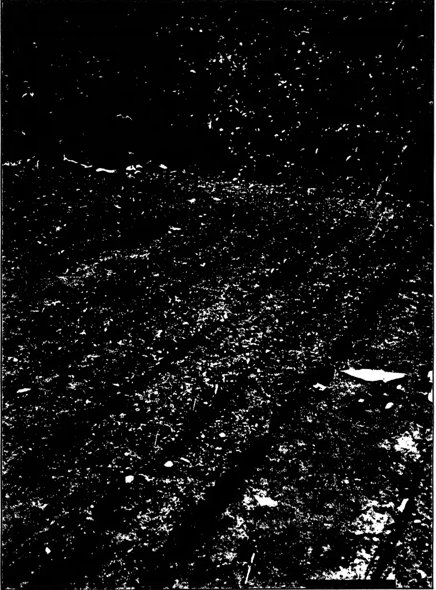
A high-contrast black and white photograph showing a field of sour orange seedlings sown in drills and raised in seedling beds, with rows one foot apart. The image is very dark, with the seedlings appearing as small, bright specks against a black background. The rows of seedlings are visible as faint, lighter lines across the field.PLATE I.
Sour orange sown in drills and raised in seedling beds, rows one foot apart
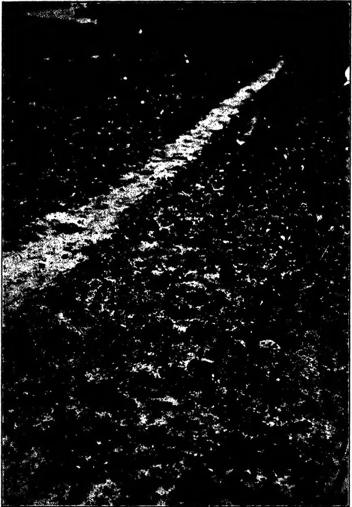
A high-contrast, black and white photograph showing a field of transplanted seedlings. The seedlings are arranged in distinct rows, with a clear gap between the rows. The image is very dark, with the seedlings appearing as bright, irregular shapes against the black background.PLATE II.
Transplanted seedlings in beds one foot apart in and between rows
Transplanting should take place when the seedlings are approximately four to six inches high, these being then planted out in rows at from twelve to fifteen inches apart and the same distance between the rows. Particular care will here be required to ensure as little check as possible to the growth of the plants and the strongest and best of the seedlings only should be used, all weak and unhealthy plants being rigorously discarded. The roots should not be bunched together when planting but spread out and arranged near the surface of the soil. Too deep transplanting or planting is a very common fault.
Budding can be undertaken at a point 10 to 12 inches above ground level when the seedlings have attained the thickness of a lead pencil or more at that height. The best season for budding varies with the different localities, but in general those months with light to moderate rainfall give more satisfactory results, in other words budding should be avoided during the periods when heavy monsoon rains are experienced and in time of drought. A good practical guide however is to bud at the time when the bark of stock and scion peels most readily from the wood.
In selecting budwood, all angular shaped shoots should be avoided and buds should be obtained only from well matured round wood of the previous season's growth. It is perhaps necessary to add that budwood should be taken only from those trees which show healthy growth whose good bearing qualities and flavour of fruit are known. As bud variation occurs in both orange and grapefruit the practice of obtaining budwood from young trees that have yet to fruit, even though they may have been budded from good parent trees, is not recommended.
The rectangular patch, the T bud and the inverted T are satisfactory modes of budding for both oranges and grapefruit though inverted T buddings give the best results at Peradeniya. The bud shield should be from half an inch to one inch long according to size of stock at time of budding. The bud when cut from the bud stock should be immediately inserted in the cut in the stock, every care being taken not to injure the cambium surface of the bud, and the bud union then wrapped fairly firm with waxed cloth. After ten or twelve days the wrappings should be loosened and after three weeks the wrappings can be removed. If the union is successful the stock should be shortened to allow its vitality to be transmitted to the dormant
142bud and hasten its development. As the new bud develops the top of the stock will eventually die back to the point of junction with the scion and should then be cut away with a sharp knife and the cut treated with a preservative.
Transplanting of the budded plant to permanent quarters can be undertaken at 12 months more or less from budding, and showery weather should be selected for this operation. Good holes, at least 3 feet by 3 feet should be prepared and refilled with a mixture of good soil and well rotted cattle manure, and plantings made at distances of 14 to 16 feet apart for lime and mandarins, of 16 to 20 feet apart for orange and lemons, and 20 to 25 feet apart for grapefruit. Care should be taken not to insert the young plant in the bed too deeply, and it is better to plant high to allow for sinking of the bed, the crown roots appearing just below the ground level. Shading and regular watering, should the weather be dry for the first few weeks from planting, must be made. The staking of the plant at this juncture is important for the eventual shaping and development of the tree, and stout stakes should be used.
As the bud grows, a standard habit should be encouraged and all side growth should be rubbed off as they appear. As the young buds reach the desired height—that is 36 inches from the ground—they should be topped by cutting back to 24 inches from the ground to allow side branches to develop. The topping will result in several shoots being thrown out and four or five of the strongest should be selected, and the rest removed. This can be done in the nursery if the budded plants are not transferred to permanent quarters at a particularly young stage.
The citrus is a deep rooted plant and has a strong tap root. Trees of that description planted in shallow soils stagnate in their growth at an early date and fail to develop. A deep root is therefore necessary. Good drainage is essential and heavy soils through which water does not percolate easily and which is constantly moist is decidedly unsuitable for all varieties of citrus. Equally unsuitable are light sandy soils, especially for grapefruit, because they are deficient in plant food, and that deficiency can be neutralized by manuring only at an uneconomic expenditure of money.
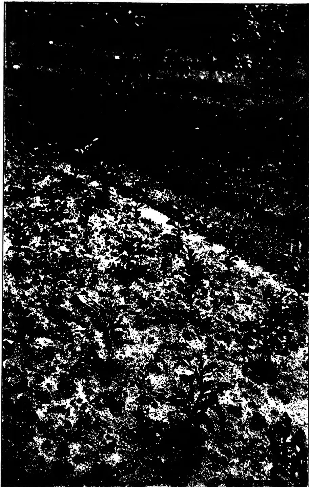
A high-contrast black and white photograph showing a field of transplanted seedlings. The image is characterized by deep blacks and bright whites, with very little mid-tone detail. The seedlings are arranged in distinct, parallel rows that recede into the background. The foreground is a dense, textured mass of small plants, while the background shows more defined rows of seedlings stretching towards the top of the frame. The overall effect is a stark, graphic representation of agricultural planting.PLATE III.
Transplanted seedlings in beds 15 inches apart in and between rows
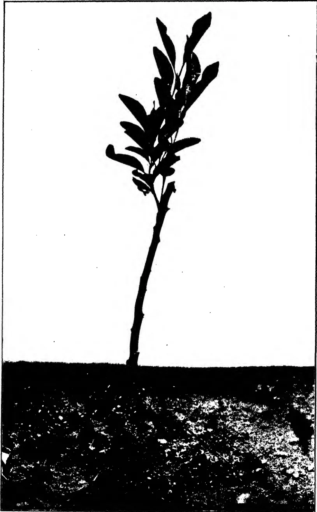
PLATE IV.
The budded plant at 6 weeks from budding. The top of stock is cut back to junction of stock and scion as the top dies back. Budded at 12 inches from ground
143After careful study of this subject the Agricultural Chemist is of opinion that a deep, free draining soil of a light loamy texture is best for citrus, but heavier loams which are well drained are also suitable. Locally, soils derived from limestone, provided they are not shallow, are very suitable for the crop. Heavy clays are unsuitable, as there is a tendency to the development of gummosis. A soil containing an impermeable hard pan or hard, impenetrable gravel within 5 or 6 feet of the surface is not suitable. Good cultivation by deep trenching and judicious manuring should render a fair range of soils suitable for citrus cultivation.
Rainfall is an important factor, but experience in this respect with regard to the optimum conditions are inconclusive and almost bafflingly contradictory. Quite useful crops of the Washington Navel orange have been obtained without irrigation in districts receiving only 45 inches of unevenly distributed rain per annum, whilst at the other extreme good crops are obtained with 168 inches of annual rainfall. The difference is remarkable, but the latter trees are observed to be planted on fairly steep land which doubtless counteracts to a large degree the disadvantages of the high rainfall.
The ideal conditions for successful orange cultivation in non-irrigable areas of Ceylon are afforded by a combination of an elevation of 1,500 feet to 5,000 feet, gently sloping land, well drained alluvial soil of some depth (the deeper the better), a well distributed rainfall of 50 to 75 inches and protection from strong winds.
For grapefruit cultivation the elevation most suitable would be from sea level to mid-country and should not exceed 4,000 feet. Even at that height a site is suitable only if it is exceptionally well protected. A site should be selected with deep soil on sloping land with ample drainage and a rainfall of anything over 60 inches, equally distributed, but with a rainfall of over 120 inches per annum a good system of drainage is imperative. If rainfall is under 60 inches per annum, irrigation becomes necessary.
The budded plants having been established in permanent quarters as described under the head propagation and planting, subsequent methods of further cultivating, pruning, manuring, etc., remain to be considered. In the case of small groups of
144a few trees planted within the compound area of the ordinary Ceylon house, catch crops of vegetables could be raised for the first few years if the ground immediately surrounding the new planted trees is left clear, but the subsidiary crop should be given up on the trees attaining the age of approximately years from planting, and earlier if the trees are observed to be making very rapid growth.
Where groves are planted on estate commercial lines the sowing of cover crops best suited to the locality is advisable. Not only does this shade the bare land from the sun but when these crops are forked in humus is added and in course of time the condition of the soil is greatly improved. In this case also an area around the planted trees of at least 3 feet from the stem should be kept clear to allow periodical manuring and the cultivation of the soil immediately surrounding the tree.
Pruning of citrus is probably one of the most difficult problems to advise on since trees do not grow exactly alike or take exactly the same form.
Some fruit growers are most anxious to prune, while others are averse to it, and individual opinion and experience count a great deal, especially in the tropics, for pruning comprises a multitude of practices and aims which vary according to type and variety of tree or shrub, the elevation, the rainfall, and the soil. Before he decides to prune, the orchardist must have a definite idea of the reason for pruning and the object to be achieved by pruning. Generally, little pruning is required with citrus as the tree in its habit of growth, practically prunes itself. Occasionally however some trees make excessive growth at the expense of the fruit crop whilst others may present the appearance of a sick or a starved tree.
In the former instance a liberal supply of nitrogen has probably caused a vigorous leafy growth and as long as this continues little or no fruit is produced. A cessation of manuring should encourage fruitfulness or failing that a pruning of roots may be tried so as to reduce the nitrogen supply to the roots and thus secure a balance between nitrogen supply and the amount of carbohydrates manufactured by the leaves.
In the case of the sick or starved tree, the indication is that it has exhausted the nitrogen supply in the soil and is
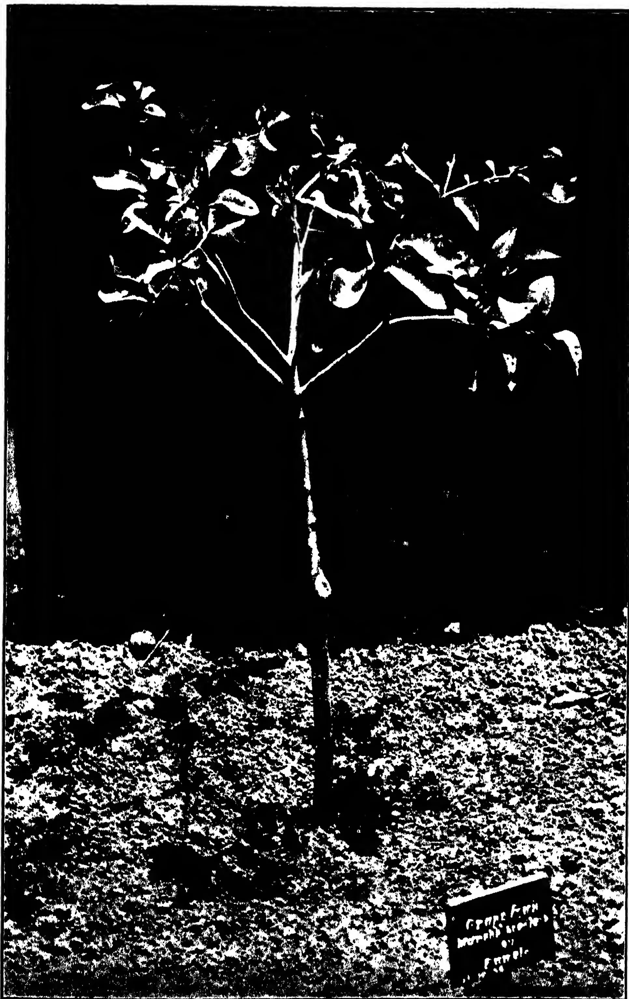
PLATE V.
The budded plant after pruning to form the head of tree. Note stock 12" and scion 12". The scion has been cut back and branch system formed
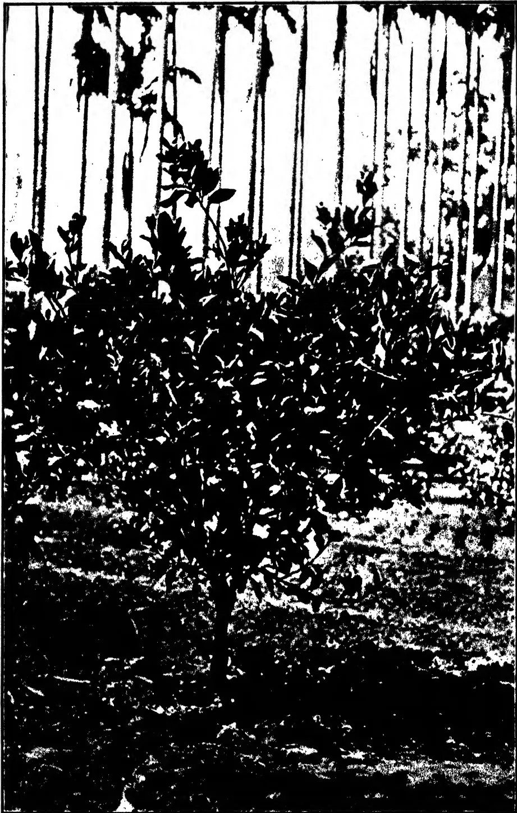
PLATE VI.
A year old "Washington Navel" orange tree. No pruning is yet required here, but the straggling end shoots can now be shortened back
145therefore suffering from nitrogen starvation which affects both growth and fruitfulness. A pruning out of all sick growths and a general shortening back of the remaining branches should be undertaken with a forking up of the soil around the tree and an application of a heavy dressing of well rotted cattle manure. The nitrogenous substances in the manure will in a short time induce young and healthy growth and this in its turn increase the carbohydrate supply, the tree thereby returning to, or attaining, a fruitful condition. With a generally healthy tree however it is wise to remember that citruses are evergreen trees and as a rule require little treatment after the framework of the tree has been established. The framework is the main consideration and, thus having attained this as advised under the head propagation, a periodical thinning of any obvious thick or overlapping growth to allow air and sunlight to reach the inside foliage and branches is generally all that is required.
The tree should not at any time be allowed to become too dense, the object in view being the formation of a shapely and well balanced tree from which all dead, decaying and injured or superfluous wood is regularly removed. Too many branches or a too thick branch arrangement leads to crowded and weak growth resulting in poor crops, or crops of small fruit, and, through the consequent lack of proper ventilation, the liability to many diseases and pest attacks.
Citrus plants have no recognised dormant season, the roots being active throughout the year in the moist zones and have consequently to be fed. Where organic manures are available these should be applied in view of the lack of humus in Ceylon soils in general. Light dressings of farmyard manure, if well rotted, should be given once the trees begin to make headway and the best time to apply it is at the beginning of the monsoon. Where farmyard manure is not available in sufficient quantity, artificial manures should be used.
The Agricultural Chemist at Peradeniya advises that the application of nitrogen is essential on all types of citrus soils and of potash and phosphoric acid particularly on the light soils. Artificial manures should be applied a month or so
146before flowering. For local soils of average quality the following mixture is recommended tentatively for bearing trees :—
at the rate of 4-8 lb. per tree depending on its age. Smaller applications are given for younger trees.
Budded plants of orange in the moist zones should begin to produce fruit about the third year from budding and grapefruit in the fourth year from budding if the pumelo or sour orange is the rootstock.
In the dry zones where rough lemon is the rootstock an earlier fruiting can generally be expected. Generally speaking also full production should be reached at about the tenth to twelfth year from time of planting in moist areas and eighth to tenth year in dry areas.
Crops will necessarily vary according to the type of tree, the health of the tree and the cultural methods afforded to it. Unless the tree has made particularly strong and vigorous growth, the first fruit crop should not be allowed to exceed 8 to 12 fruits. At about the eighth and tenth year in dry and moist zones respectively full crops can be expected and good cultivation onwards should maintain them, climatic conditions permitting, for many years.
Full crops would in the case of oranges comprise anything from 300 to 600 fruits per tree and occasionally an exceptional tree would produce up to 1,000 fruits per annum, but a very heavy crop one year will usually lead to a reduced crop in the following year, though this is not always so. The probable annual yield of grapefruit at maturity and onward can only be approximately estimated as plantations or even individual specimens of these trees are still in the stage of infancy ; from the data available on such crops in other parts of the world a yield of 350 to 500 fruits of average size per tree is generally considered a fair crop. But the applicability of these figures to Ceylon is doubtful, and it is of importance that present and prospective growers of this fruit should endeavour to obtain accurate individual yield records of their trees for some years. The unit of production should be the individual tree, for with
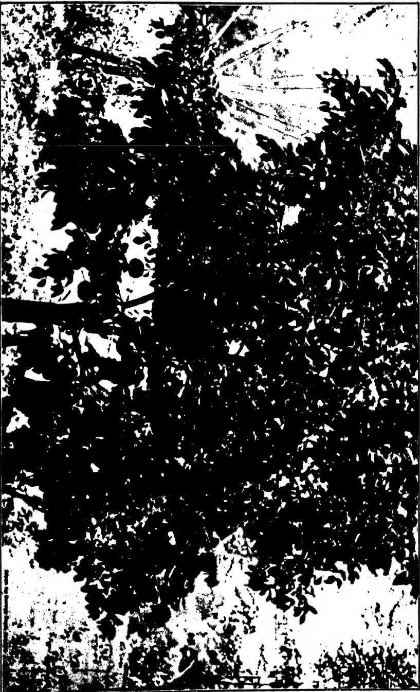
A high-contrast black and white photograph of a dense, leafy plant, likely a grapefruit tree, with several dark, round fruits visible among the foliage. The background is bright and overexposed, suggesting a sunny outdoor setting. The image is framed by a thin black border.PLATE VII.
A fine fruiting specimen of "Marsh's" grapefruit at Nalanda Experiment Station
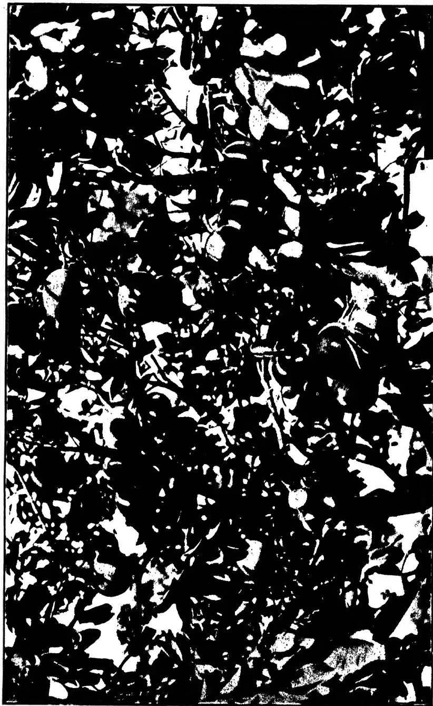
PLATE VIII.
A close up view of "Marsh's" grapefruit tree at Nalanda Experiment Station
147citrus, as with most other fruit trees, there are good yielders and poor yielders, though the variety grown may be of the best. The poor yielders are being maintained at a loss to the growers, and if proved material is available for replanting the returns of a plantation or garden may be greatly increased by replacing bad yielders with new plants. A plantation as a whole may produce a satisfactory crop, but if a proportion of the trees are not bearing well the total production is obviously not as high as it should be.
The following are a few notes on the chief pests of citrus, contributed by the Government Entomologist at Peradeniya :—
Fruit-Flies : The common citrus fruit-fly in Ceylon is Dacus ferrugineus, a medium-sized rather slender brownish fly, with one pair of clear wings and a pale yellow band edged with black across the middle of the abdomen. The female fruit-fly punctures maturing citrus fruit with its long ovipositor and lays its eggs just inside the pith in the flesh. The maggots feed inside the fruit, causing it to decay and sometimes to drop prematurely. The full grown maggots emerge from the fruit and pupate in the soil. The life-cycle from egg to adult occupies from about 3 to 5 weeks.
Control : Fruit-flies require food before mating and oviposition. They can be controlled to some extent by sweetened poisoned baits or sometimes trapped by the use of chemical odours which may be attractive to them. The following bait may be of value :—
| Arsenate of lead | .. | .. | oz. |
| Cheap sugar or jaggery | .. | .. | 12 oz. |
| Water | .. | .. | 10 pints |
The arsenate of lead is made into a paste with a little water and stirred with the sugar solution into the remainder of the water. The bait can either be exposed in specially prepared tins or sprayed on to the foliage as indicated in the detailed notes by the Entomologist. In either case the bait should be applied about one month before the first fruit is expected to ripen and should be repeated at intervals of about one week until the fruit is off the trees. Fresh applications should be given after heavy rain.
148All fallen fruit should be collected and destroyed daily to prevent the emergence of the maggots, which will pupate in the soil and come out as flies later.
Fruit-fly attack can be prevented by enclosing each fruit or small bunch of fruit in grease-proof bags, and in districts where canker is not prevalent the bottom of the bags can be left open, since the fruit-fly only attacks fruit from above and will not enter from below. For more detailed information on the bagging of citrus, especially grapefruit, The Tropical Agriculturist for February, 1936 should be consulted.
In some countries attempts are being made to control citrus fruit-fly by the importation of foreign parasites or by making more use of indigenous parasites. Dacus ferrugineus is known to have one or two species of local parasites and arrangements are being made to breed and liberate two other species of parasites recently imported.
Fruit-Piercing Moths : These large night-flying moths which belong mostly to the genus Othreis have orange-yellow underwings with a kidney-shaped dark spot in the centre of each wing and dark margins. The fore-wings may be brown or green according to the species. The damage to the fruit is done only by the moths which puncture ripening fruit with their proboscis and suck the juice. Punctured fruit turns rotten and drops. The caterpillars of these moths have nothing to do with citrus, but feed on the leaves of other plants.
Control : The fruit-fly poisoned bait and bagging of fruit would also be useful against these moths.
Citrus Butterflies : The caterpillars of two species of large Papilio butterflies are usually to be found on young citrus plants, the younger larvae spoiling the shoots and the older larvae sometimes stripping the plants if not controlled. These larvae seem to be somewhat immune from attack by enemies, since the younger larvae are protected by their resemblance to birds' droppings, while the older larvae are able, when disturbed, to thrust out a pair of fleshy "horns" which exude a pungent odour.
Control : The younger stages can be controlled by the combined spray recommended below for leaf miner, while the older larvae and chrysalides can be removed, or the plants sprayed with lead arsenate.
149Caterpillar Pests : As indicated in a previous article in this Journal Vol. LXXXIII No. 3, September, 1934, the normal growth of citrus plants in Ceylon is often seriously crippled by the combined attacks of two small caterpillars, the leaf-miner and the leaf-roller, and both these insects are essentially pests of young plants. Reference may be made to this article for fuller details.
The leaf-miner (Phyllocnistis citrella) is a very small caterpillar which feeds inside the young leaves, making irregular galleries and leaving the epidermis as a silvery film. The leaves become distorted and never develop normally.
The leaf-roller (Psorosticha zizyphi) lives on the surfaces of the younger leaves, webbing these together or rolling them up and feeding here and there. These small caterpillars wander about freely and even a few of them can spoil the appearance of a young plant, all the younger leaves and shoots being bitten off or rolled up as they appear.
These two pests are not uncommonly found together on the same young plants, which fail to develop normally and are readily exposed to infection by citrus mildew and canker.
Control : The following spray mixture is recommended for young citrus plants during the first few years of their growth, and if applied regularly at least twice a month, or more frequently during the production of young leaves, will help to keep the plants clean and vigorous and free from most leaf-eating pests and from sucking insects, such as scales and aphids. The nicotine and soap are insecticides, while fungus diseases, such as mildew, are controlled by the colloidal sulphur.
| Nicotine sulphate | .. | .. | 2 oz. |
| Colloidal sulphur | .. | .. | 4 oz. |
| Soft or yellow soap | .. | .. | 4 oz. |
| Water | .. | .. | 4 gallons |
The soap is dissolved first in a little water, soft soap (not carbolic) being preferable, since it dissolves more easily. If hard yellow soap is used it should be shaved off into thin slices so that it may dissolve more rapidly. Add the remainder of the water, stirring gently, and then stir in the other ingredients. Spraying should be done preferably in the early morning or late afternoon.
150Sucking insects : The leaves, twigs and sometimes the fruit of various kinds of citrus, especially the older trees, are frequently attacked by different species of small sucking insects, such as scales, mealy bugs, "black fly" and aphids. The presence of one or more of these species in large numbers on plants already crippled by leaf-eating pests has a further weakening effect, and unless measures are taken to control them, the health of the plants and the quantity of the fruit become seriously impaired. Only brief notes are given here, but fuller information about each individual pest can be obtained from the Entomologist, Peradeniya.
Scale insects : The common citrus scales are the green scale or "green bug" (Coccus viridis) and mussel shell scales (Lepidosaphes spp.). The former attacks the leaves, settling down on either side of the underside of the midrib, and sometimes clusters thickly on tender shoots. The latter occurs on the leaves and sometimes disfigures the fruit.
"Black Fly" : These small sucking insects belong to the family Aleyrodidae, the two common species being Aleurocanthus woglumi and A. citriperdus. They are usually to be found in black patches on the undersides of leaves, sometimes causing these to become distorted.
Aphids or Plant-lice : These small dark brown to blackish insects (Toxoptera aurantii) are sometimes found feeding actively in clusters on the young shoots, causing the developing leaves to curl. They have a winged stage at certain times of the year.
Sometimes the most conspicuous feature of an attack of scale insects, "black fly," aphids, etc., is the presence of a black film on the upper surfaces of the leaves. This film is a fungus known as "sooty mould". This does not cause disease, but develops in the liquid secretions given off by these insects. It will gradually disappear after the insects are killed by spraying.
Control : All the above small sucking insects can be controlled on young trees by the regular application of the combined spray mixture recommended previously for leaf-miner, etc. Older trees of some particularly good variety which have not had regular spraying and have become infested should receive special treatment. All dead wood and heavily infested
151twigs should first be pruned back and burnt ; in some cases a fairly drastic pruning may be necessary. Then a special course of spraying should be given to get rid of any scales, etc.
Further information on insecticides for sucking insects and on spraying, etc., will be found in the detailed notes on fruit tree pests previously mentioned.
The above notes on citrus pests are a summary of more detailed information which appeared in The Tropical Agriculturist for April and May, 1936 under Entomological Notes. Citrus growers must be prepared to deal with the various insect pests which will inevitably attack their trees especially during the first few years of growth and with other insects, such as fruit-flies, which will spoil their fruit from the time that the trees come into bearing, unless control measures are regularly adopted.
With regard to diseases the Mycologist at Peradeniya enumerates the most important as follows :—
1. Citrus canker (Pseudomonas citri).—Citrus canker is probably the most serious disease of citrus in Ceylon. It is more common in the wetter zones of the Island, it having been shown that free moisture combined with temperature above 80° F. supply the conditions most favourable for its spread. The symptoms of the disease are well known and consist of tan coloured corky eruptions in the middle of yellowish spots on green leaves, twigs and fruits, while in older stages cankers occur on twigs and stems. Citrus canker is very common at elevations below 3,000 feet on all varieties of citrus although some are not so badly attacked as others. Grapefruit and lime are very susceptible to the disease while the mandarin orange is probably the most resistant species in Ceylon. Other species of citrus known to be attacked by the disease include pumelo, lemon, citron, sweet and sour orange, mandarin and Nataran.
Control Measures : Owing to its endophytic nature no methods of curing the disease are known and control can only be effected by the destruction of affected parts of plants, by the prevention of the spread of the disease, and by the protection from the disease of healthy plants. The control measures recommended in Ceylon are as follows :—
(i) Prune off and burn all die-back branches, cutting back to healthy wood. (ii) Pick off and burn all diseased leaves,
152fruits and shoots. (iii) If possible protect citrus trees from the wind by growing other trees like gliricidia as wind-breaks. The use of wind-breaks of trees prevents the dissemination of the causal organism by the wind and also prevents the whipping of the foliage. (iv) Spray applications lessen materially canker infection and also serve to control other diseases. Protect all citrus plants by spraying regularly once a week in wet weather and once a fortnight in dry weather with a reliable spray fluid.
As it has been shown in Ceylon that canker often starts in the tissue injured by a leaf-mining caterpillar (Phyllocnistis citrella) an efficient insecticide should be added to the spray mixture. A convenient spray compound is a proprietary lime-sulphur spray known as "Sulfinette" to which Nictagral, which is a proprietary nicotine preparation combined with a spreader is added to serve as an insecticide. The spray should consist of 1-2 per cent. solution of "Sulfinette" in water to which is added per cent. of Nictagral. Another spray mixture which has been found to be satisfactory is prepared in the following proportions:—
| Soft soap | .. | .. | .. | 1 oz. |
| Sulsol | .. | .. | .. | 1 oz. |
| Nicotine sulphate | .. | .. | .. | oz. |
| Water | .. | .. | .. | 1 gallon |
The soap—preferably ordinary soft soap (not carbolic) but good yellow bar soap cut up small will do—is dissolved in the water. In order to dissolve the soap completely it is more satisfactory to dissolve it first in a little hot water and to make up the desired quantity with cold water. The sulsol is added to the diluted soap solution and stirred. Nicotine sulphate is now added and the mixture stirred thoroughly. Sulsol is colloidal sulphur and is a thick creamy liquid. If spraying is to be effective it must be thoroughly done. Both sides of every leaf should be covered with the spray. Spraying protects healthy tissue from infection but does not cure the disease.
2. Mildew (Oidium tingitaninum).—Powdery mildew is very common on orange leaves in the wetter areas of Ceylon and causes some damage to the young shoots. It is most common on orange types, i.e., the sweet orange, the Ceylon sour orange
153and the mandarin orange. It also attacks grapefruit, pumelo, lemon, tangerine and Kalamondin. It has been found to attack limes very rarely. The disease can be controlled readily by spraying with a 1-2 per cent. solution of Sulfinette in water or with colloidal sulphur and soap in the following proportions :— 1 ounce soft soap, 1 ounce Sulsol. 1 gallon water. Two or three sprayings at intervals of one week should be sufficient to control the disease and these should be repeated whenever signs of re-infestation by the fungus is seen.
3. Pink Disease (Corticium salmonicolor).—Pink disease is a bark disease occurring on stems at or near forks and preventative treatment should aim at protecting these places. Periodical spraying, if applied to stems, will prevent the disease. Branches on which the disease occurs should be pruned out at least 9 inches below the obviously affected tissue and the resultant wounds tarred. Provided that these sources of infection are removed, spraying will render the disease innocuous. It is not suggested that spraying should be undertaken for this disease alone, but that the stems should be sprayed for the control of citrus canker.
4. Die-back.—The cause of the die-back of citrus trees is not certain. It would appear, however, to be associated with unfavourable environmental conditions particularly in regard to root development, root aeration and lack of cultivation. In India die-back of this type has been successfully overcome by digging trenches 3 feet deep, at a distance of about 6 feet from the trees, or, in plantations between the rows in both directions, and filling the bottom foot or so with stones, bricks and plant refuse and the remainder with original soil mixed with manure. In the instance cited treated trees gave 30 times as much fruit as untreated. It is extremely likely that similar treatment will prove to be of value in the compact laterite soils in Ceylon.
5. Foliocellosis.—Mottle leaf or foliocellosis is a serious physiological disorder of citrus trees in Ceylon. Mandarins are the most susceptible of the citrus species grown in this country. Severe mottling has also been observed in Mediterranean Sweet, St. Michael, Valencia Late and Jaffa oranges,
154Marsh's Seedless and Triumph grapefruits and West Indian limes.
The most characteristic symptom is the appearance of irregular, yellow areas between the veins of the leaves. Each yellow area arises as a slightly chlorotic spot which widens and turns a deeper yellow. The tissues over the midrib and larger veins retain their chlorophyll even in advanced stages of the disorder. This green tissue fades gradually into the yellow, intervenous patches.
The exact cause of mottle leaf is not definitely known. It is not due to any parasitic organism. It is a functional disorder that can be corrected by the application of zinc sulphate; but it is probably not a simple zinc deficiency.
Control : Mottle leaf may be controlled by spraying the foliage with a mixture of zinc sulphate and hydrated lime, combined with a suitable spreader and made up in the following proportions : 10 lb. zinc sulphate, 5 lb. hydrated lime, 4 oz. Actin, 100 gallons water. Actin is a proprietary neutral spreader. Solol which is a proprietary emulsified petroleum oil may be used in place of Actin as a spreader in the proportion of lb. in 100 gallons water. The zinc sulphate is dissolved in a small quantity of water. Freshly burnt lime is hydrated and added to the main volume of water. The zinc sulphate solution is then poured into the lime suspension gradually, with continual stirring. The spreader is now stirred into the mixture. The spraying may be done with a knapsack sprayer provided with an agitator.
Of the fruits that can be grown in Ceylon few are likely to be a source of profit as an exported crop but citrus, and particularly grapefruit, may achieve that status. We are yet in the stages of infancy in citrus production and at this stage our attention should be concentrated mainly on improvement of quality and enlarging production to meet the potential home consumption and supply to boats in harbour. There is no reason why a single grapefruit or lime should be imported into the country.
155Every care should be taken to ascertain the best type of tree, both rootstock and scion suitable to the locality, the requisite soil conditions and the many other factors involved in present day citrus culture. We have the land in plenty, with varied soil and climatic conditions, and sufficient labour.
There is now sufficient data on which to proceed in the opening up of a considerable number of orchards or groves on most up-to-date lines. The desiderata locally seem mostly to be a need of capital and enterprise. Unfortunately fruit nurseries do not exist in the Island outside the Department of Agriculture. The Peradeniya resources are very limited and are not ideally situated for this subject, yet the importance of plants budded on local rootstocks must be emphasised if satisfactory orchards are to be raised. The lack of locally budded plants is the first drawback and it is fully realised. Steps have, and are being taken therefore, to devote a section of the present experiment and rotation stations in localities where citrus is considered a possible future enterprise to open up citrus plots and nurseries with a view to providing budded material on a scale large enough to meet local district demands in each place, in orchard quantities. Potential growers can however assist by adopting the methods advocated in the article for at least his own requirements. It cannot be too rigidly insisted that the quality of the fruit must be of the highest, all trees must be productive to their fullest extent, kept healthy and vigorous and planted on a sufficiently large scale. The varieties of orange or grapefruit having been ascertained, cultivation should be restricted to the few and good since marketing is easy where large quantities of fruit are produced from a small number of varieties. Uniformity of the type of orange and grapefruit produced should be the aim as such would be a great asset in establishing an industry in the future. Finally, if the Ceylon nurserymen can be induced to devote time and money in the preliminaries of producing good budded plants on local rootstocks progress in this fruit enterprise would be materially assisted and the nursery supplier himself could tap a new source of profit.
156A. W. R. JOACHIM, Ph. D.,
AGRICULTURAL CHEMIST
AND
S. KANDIAH (Dip. Agric., Poona) and
D. G. PANDITTESEKERE (Dip. Agric., Poona),
ASSISTANTS IN AGRICULTURAL CHEMISTRY
IN The Tropical Agriculturist of November 1935 (1) an account was given of experiments designed to determine the effects on paddy yields (a) of applying the same quantities of ammonium phosphate in one, two and three doses, and (b) of different forms of phosphatic fertiliser. In the present paper the chemical data to which reference was made in the earlier publication are discussed in greater detail. Owing to the comprehensive nature of the two investigations and their continuance over two seasons, the number and size of tables have been reduced to the minimum possible.
The chemical investigations were on the same lines as those previously carried out, but the analytical determinations varied to some extent. Analyses were made of the crop of each treatment at the three main stages of growth, with particular reference to dry matter, nitrogen and phosphoric acid. In regard to the soil data, as the main problem investigated was the response to and availability of added phosphoric acid, attention was directed solely to available phosphoric acid. This was determined in a number of soils by the methods of Truog (2), Chapman (3), Lohse and Ruhuke (4), but as only the first of these gave results that might have been expected under the experimental conditions, the others were omitted in subsequent determinations. The results of the two experiments will be considered separately.
157THE EFFECT OF TIME OF APPLICATION OF FERTILISERIn table I the composition of the crops from differently treated plots, at different stages of their growth, during the Maha 1933 and Yala 1934 seasons is shown. The results are expressed as percentages of dry matter at 100°C. The rates of absorption of fertilisers at flowering are set out in table II and in table III the total constituents removed in the crop and parts of the crop in lb. per acre are indicated.
TABLE I
PERCENTAGE CONSTITUENTS IN PLANT
MAHA 1933 AND YALA 1934
| TREATMENT | SEEDLING | FLOWERING | HARVEST | ||||||||||
|---|---|---|---|---|---|---|---|---|---|---|---|---|---|
| Dry Matter | Ash | Nitrogen | Phos. Acid | Dry Matter | Ash | Nitrogen | Phos. Acid | Dry Matter | Ash | Nitrogen | Phos. Acid | ||
| 1. One application of N. R. Nicifos |
M .. | 24.3 | 14.5 | .94 | .44 | 47.6 | 13.3 | .76 | .34 | ||||
| Y .. | 26.4 | 12.0 | .85 | .31 | 41.0 | 12.4 | .80 | .28 | |||||
| 2. Two applications of N. R. Nicifos |
M .. | 23.2 | 14.5 | .97 | .33 | 48.9 | 12.7 | .84 | .37 | ||||
| Y .. | 26.3 | 12.4 | .90 | .33 | 40.3 | 12.6 | .79 | .30 | |||||
| 3. Three applications of N. R. Nicifos |
M .. | 23.7 | 14.2 | .91 | .35 | 48.8 | 12.3 | .84 | .36 | ||||
| Y .. | 27.0 | 12.8 | .94 | .38 | 40.0 | 13.1 | .81 | .33 | |||||
| 4. One application of B. R. Nicifos |
M .. | 17.5 | 18.4 | 2.30 | .62 | 23.2 | 14.1 | .80 | .44 | 46.7 | 12.6 | .76 | .39 |
| Y .. | 19.7 | 17.0 | 2.09 | .29 | 27.4 | 12.4 | .97 | .33 | 40.9 | 12.8 | .75 | .32 | |
| 5. Two applications of B. R. Nicifos |
M .. | 23.0 | 14.6 | .81 | .46 | 48.8 | 12.8 | .83 | .43 | ||||
| Y .. | 26.7 | 11.3 | .64 | .37 | 41.6 | 13.3 | .82 | .32 | |||||
| 6. Three applications of B. R. Nicifos |
M .. | 23.0 | 14.1 | .81 | .46 | 48.1 | 13.0 | .81 | .37 | ||||
| Y .. | 27.3 | 12.2 | .73 | .38 | 39.4 | 14.2 | .69 | .34 | |||||
| Average | M .. | 23.4 | 14.3 | .87 | .41 | 48.1 | 12.8 | .81 | .38 | ||||
| Average | Y .. | 26.8 | 12.2 | .84 | .35 | 40.5 | 13.1 | .77 | .31 | ||||
M Maha
N. R. - Narrow ratio
Y Yala
B. R. - Broad ratio
A comparison of the above figures with those obtained in previous investigations (5, 6) will reveal that they are in general higher, especially in regard to phosphoric acid at harvest. The composition of the variously-treated crops at harvest shows no marked or consistent variation from each other. The average nitrogen content of the narrow ratio Nicifos fertilised crop is however higher than that of the corresponding wide ratio crop at the time of flowering during the Maha season. The reverse holds with regard to phosphoric acid. The data in regard to percentage composition of parts of crop (not published) and to the change in composition with age are generally very similar to those obtained previously.
158TABLE II
PERCENTAGE RATES OF ABSORPTION AT FLOWERING
MAHA 1933 AND YALA 1934
| TREATMENT | FLOWERING | |||
|---|---|---|---|---|
| Dry Matter | Ash | Nitrogen | Phos. Acid | |
| 1. One application of M .. .. | 40.2 | 43.6 | 50.0 | 52.5 |
| N. R. Nicifos Y .. .. | 42.8 | 41.3 | 45.3 | 48.0 |
| 2. Two applications of M .. .. | 48.1 | 54.5 | 55.2 | 42.6 |
| N. R. Nicifos Y .. .. | 39.8 | 39.2 | 45.1 | 44.1 |
| 3. Three applications of M .. .. | 52.2 | 60.3 | 56.1 | 50.6 |
| N. R. Nicifos Y .. .. | 43.8 | 42.9 | 50.6 | 50.1 |
| 4. One application of M .. .. | 41.1 | 46.5 | 43.1 | 46.0 |
| B. R. Nicifos Y .. .. | 53.0 | 50.9 | 69.0 | 54.1 |
| 5. Two applications of M .. .. | 40.8 | 46.4 | 39.5 | 43.0 |
| B. R. Nicifos Y .. .. | 63.4 | 52.6 | 49.0 | 72.6 |
| 6. Three applications of M .. .. | 36.8 | 40.1 | 36.7 | 46.2 |
| R. R. Nicifos Y .. .. | 63.1 | 54.2 | 58.6 | 69.8 |
| Average M .. .. | 43.2 | 48.5 | 46.7 | 46.8 |
| Average Y .. .. | 51.0 | 46.8 | 52.9 | 56.4 |
M. - Maha
Y. - Yala
N. R. - Narrow ratio
B. R. - Broad ratio
An examination of the above table and its comparison with previous similar tables will indicate that :
TOTAL CONSTITUENTS IN CROP IN LB. PER ACRE
| TREATMENT | MAHA 1933 | YALA 1934 | TOTAL | |||||||||||||||
|---|---|---|---|---|---|---|---|---|---|---|---|---|---|---|---|---|---|---|
| STRAW | GRAIN | CHAFF | TOTAL | STRAW | GRAIN | CHAFF | TOTAL | |||||||||||
| Nitrogen | Phos. Acid | Nitrogen | Phos. Acid | Nitrogen | Phos. Acid | Nitrogen | Phos. Acid | Nitrogen | Phos. Acid | Nitrogen | Phos. Acid | Nitrogen | Phos. Acid | Nitrogen | Phos. Acid | |||
| 1. One application of N. R. Nicifos | 14.5 | 3.4 | 35.1 | 18.3 | 1.4 | .6 | 51.0 | 22.3 | 5.9 | 1.1 | 15.6 | 6.1 | 1.1 | .4 | 22.6 | 7.6 | 73.6 | 29.9 |
| 2. Two applications of N. R. Nicifos | 12.7 | 2.6 | 34.5 | 18.5 | 1.3 | .6 | 48.5 | 21.7 | 6.6 | 1.4 | 19.4 | 8.1 | .9 | .3 | 26.9 | 9.8 | 75.4 | 31.5 |
| 3. Three applications of N. R. Nicifos | 11.6 | 4.2 | 34.5 | 15.6 | 1.4 | .6 | 47.5 | 20.4 | 7.4 | 1.5 | 17.2 | 7.6 | .9 | .3 | 25.5 | 9.4 | 73.0 | 29.8 |
| 4. One application of B. R. Nicifos | 13.7 | 4.4 | 32.7 | 19.8 | 1.7 | .7 | 48.1 | 24.9 | 6.6 | 1.3 | 15.0 | 7.5 | .8 | .3 | 22.4 | 9.1 | 70.5 | 34.0 |
| 5. Two applications of B. R. Nicifos | 12.7 | 4.3 | 35.5 | 21.4 | 1.6 | .7 | 49.8 | 26.4 | 7.3 | 1.2 | 15.4 | 7.5 | .9 | .3 | 23.6 | 9.0 | 73.4 | 35.4 |
| 6. Three applications of B. R. Nicifos | 13.7 | 3.4 | 37.3 | 20.8 | 1.3 | .6 | 52.3 | 24.8 | 6.1 | 1.3 | 16.6 | 8.6 | .9 | .3 | 23.6 | 10.2 | 75.9 | 35.0 |
| Averag. | 13.1 | 3.7 | 34.9 | 19.1 | 1.4 | .6 | 49.5 | 23.4 | 6.6 | 1.3 | 16.5 | 7.5 | .9 | .3 | 24.1 | 9.2 | 73.6 | 32.6 |
N. R. = Narrow ratio
B. R. = Broad ratio
160Table III will show that:
(1) The average amounts of fertilising constituents removed in the crops in lb. per acre are as follows:
| Nitrogen | Phos. acid | |||
|---|---|---|---|---|
| Maha 1933 | .. | 49.5 | .. | 23.4 |
| Yala 1934 | .. | 24.1 | .. | 9.2 |
| 73.6 | 32.6 |
These figures are much higher than those obtained in previous experiments and are due to: (1) the higher yields obtained in this series of experiments, (2) the higher percentages of nitrogen and phosphoric acid in the crops, and (3) the absence of controls to lower the average.
(2) There are no appreciable or consistent differences between the amounts of constituents removed in the crops from plots receiving one, two or three doses of fertiliser.
(3) The average amounts of nitrogen removed in the narrow and wide ratio Nicifos fertilised crops are approximately the same, viz., 74 and 73.2 lb. respectively. As the amounts of nitrogen added were the same in both series of plots and previous investigations had shown that nitrogen as ammonium phosphate is absorbed almost wholly by the crop during both seasons, this result is only to be expected. The average figure for absorption of nitrogen during the Maha crop (70 per cent.) confirms previous records in this respect.
The corresponding figures for phosphoric acid are 30.4 lb. and 34.8 lb. Thus only about 4.5 lb. per acre more of phosphoric acid are absorbed by the wide ratio Nicifos treated crops, though 27.9 lb. more were originally applied to the soil. The increased percentage absorption works out to about 16.5 per cent. of the added phosphoric acid, a figure similar to those previously determined. The Maha crop again contains 70 per cent. of the absorbed phosphoric acid. That neither the frequency of application nor the quantity of phosphatic fertiliser
161applied has effected a significant difference in yield, would indicate that added phosphoric acid is readily fixed in the soil under the experimental conditions and only a small proportion of it is available to the crop at any one time. The soil data to be discussed later will throw further light on this point. The above data would also point to the advantage of using, at any rate under Peradeniya conditions, the cheaper narrow ratio ammonium phosphate in paddy manuring.
(4) The data in regard to the relative distribution of constituents among the various parts of the crop are similar to those recorded previously.
In table IV below the "readily available phosphoric acid" contents of the soils as determined by Truog's method are shown.
TABLE IV
SOIL ANALYSIS
READILY AVAILABLE PHOSPHORIC ACID (p.p.m.)
MAHA 1933
| Initial | After first application of manure | Increase | At flowering | At harvest | |
|---|---|---|---|---|---|
| 1. One application of N. R. Nicifos .. | 6.7 | 12.6 | 5.9 | 9.1 | 8.2 |
| 2. Two applications of N. R. Nicifos .. | 6.6 | 10.3 | 3.7 | 6.2 | 9.6 |
| 3. Three applications of N. R. Nicifos .. | 6.7 | 11.4 | 4.7 | 6.2 | 10.3 |
| 4. One application of B. R. Nicifos .. | 6.6 | 11.4 | 4.8 | 8.2 | 8.9 |
| 5. Two applications of B. R. Nicifos .. | 10.3 | 14.1 | 3.8 | 6.6 | 10.1 |
| 6. Three applications of B. R. Nicifos .. | 10.3 | 14.8 | 4.5 | 7.3 | 9.9 |
It will be noted that the application of phosphatic fertiliser whether in one, two or three doses, has resulted in an increase of available phosphoric acid in the soil in every instance. The increase is not however proportional to the amounts applied. Reckoning that a 6 in. acre depth of soil weighs 2,000,000 lb. the increase of available phosphoric acid varies from 7.4 to 11.8 lb. per acre, while the amounts applied varied from 15.7 to 48.1 lb. per acre. The fact that the amounts of available phosphoric acid in the soil at flowering are generally lower than those at harvesting, would clearly indicate that the reserve of fixed phosphoric acid is being made slowly available to the crop as its needs demand.
In this experiment, phosphoric acid was applied in four forms—as superphosphate, steamed bone meal, ammonium phosphate and mineral phosphate at the rate of 87.2 lb. per acre, the amounts of nitrogen being kept constant. The yield data showed no significant differences in response to treatments.
162The analytical data relative to this experiment are presented in tables V, VI, VII and VIII.
TABLE V
PERCENTAGE CONSTITUENTS IN PLANT
MAHA 1933 AND YALA 1934
| TREATMENT | SEEDLING | FLOWERING | HARVEST | |||||||||
|---|---|---|---|---|---|---|---|---|---|---|---|---|
| Dry Matter | Ash | Nitrogen | Phos. Acid | Dry Matter | Ash | Nitrogen | Phos. Acid | Dry Matter | Ash | Nitrogen | Phos. Acid | |
| 1. Nicifos M | 24.3 | 16.8 | .79 | .40 | 53.8 | 12.0 | .80 | .41 | ||||
| Y | 26.7 | 12.5 | .91 | .32 | 42.8 | 13.1 | .84 | .28 | ||||
| 2. Steamed bone meal M | 25.2 | 15.4 | .84 | .35 | 54.3 | 11.9 | .82 | .37 | ||||
| + Sulphate of ammonia Y | 26.8 | 14.4 | 1.08 | .33 | 44.2 | 12.5 | .90 | .29 | ||||
| 3. Superphosphate M | 17.5 | 18.4 | 2.30 | .62 | 24.3 | 20.3 | .74 | .41 | 52.8 | 12.2 | .74 | .37 |
| + Sulphate of ammonia Y | 19. | 17.0 | 2.09 | .29 | 27.9 | 12.2 | .84 | .28 | 43.2 | 12.7 | .87 | .29 |
| 4. Saposphosphate M | 25.4 | 16.9 | .86 | .36 | 52.4 | 12.6 | .77 | .34 | ||||
| + Sulphate of ammonia Y | 27.5 | 12.9 | .79 | .28 | 44.7 | 12.7 | .86 | .28 | ||||
| Average M | 17.5 | 18.4 | 2.30 | .62 | 24.8 | 17.3 | .81 | .38 | 53.3 | 12.2 | .78 | .37 |
| Average Y | 19. | 17.0 | 2.09 | .29 | 27.2 | 13.0 | .90 | .30 | 43.7 | 12.7 | .87 | .29 |
M = Maha
Y = Yala
PERCENTAGE COMPOSITION OF CROP
This table calls for little comment, the data merely confirming what has been observed in regard to the other experiments of the series. The Nicifos plots have highest phosphoric acid contents in the crop at harvest during Maha.
TABLE VI
PERCENTAGE RATES OF ABSORPTION
MAHA 1933 AND YALA 1934
| TREATMENT | FLOWERING | HARVEST | ||||||
|---|---|---|---|---|---|---|---|---|
| Dry Matter | Ash | Nitrogen | Phos. Acid | Dry Matter | Ash | Nitrogen | Phos. Acid | |
| 1. Nicifos M | 44.1 | 61.4 | 43.4 | 42.8 | ||||
| Y | 47.9 | 45.7 | 51.1 | 54.3 | ||||
| 2. Steamed bone meal M | 49.9 | 64.6 | 51.1 | 47.0 | ||||
| + Sulphate of ammonia Y | 45.6 | 52.8 | 54.6 | 51.6 | ||||
| 3. Superphosphate M | 55.1 | 81.8 | 55.0 | 59.4 | 100 | |||
| + Sulphate of ammonia Y | 52.2 | 50.3 | 50.5 | 50.1 | ||||
| 4. Saposphosphate M | 51.8 | 69.5 | 58.5 | 56.3 | ||||
| + Sulphate of ammonia Y | 53.3 | 54.5 | 49.1 | 52.2 | ||||
| Average M | 50.2 | 69.3 | 52.0 | 51.4 | 100 | |||
| Average Y | 49.7 | 50.8 | 51.3 | 52.0 | ||||
M = Maha
Y = Yala
The percentage rates of absorption at flowering shown in the above table confirm generally what has been noted in the frequency of application experiment and other previous investigations. The sulphate of ammonia plots have however recorded higher nitrogen absorption figures than the Nicifos plots, and the superphosphate plots higher phosphoric acid absorption rates than the bone meal or mineral phosphate plots during the Maha season. No such differences are observed during Yala. The detailed data (unpublished) show that the fertilising constituents are distributed throughout the crop in the same proportions as have been found previously.
TABLE VII
TOTAL CONSTITUENTS IN CROP IN LB. PER ACRE
| TREATMENT | MAHA 1933 | YALA 1934 | TOTAL OF BOTH |
|||||||||||||||
|---|---|---|---|---|---|---|---|---|---|---|---|---|---|---|---|---|---|---|
| STRAW | GRAIN | CHAFF | TOTAL | STRAW | GRAIN | CHAFF | TOTAL | |||||||||||
| Nitrogen | Phos. Acid | Nitrogen | Phos. Acid | Nitrogen | Phos. Acid | Nitrogen | Phos. Acid | Nitrogen | Phos. Acid | Nitrogen | Phos. Acid | Nitrogen | Phos. Acid | Nitrogen | Phos. Acid | |||
| 1. Nicifos .. | 11.0 | 3.5 | 35.2 | 20.0 | .9 | .4 | 47.1 | 23.9 | 4.3 | .7 | 12.8 | 5.0 | .8 | .3 | 17.9 | 6.0 | 65.0 | 29.9 |
| 2. Steamed bone meal + Sulphate of ammonia |
11.0 | 2.2 | 34.5 | 18.1 | .9 | .4 | 46.4 | 20.7 | 4.2 | .7 | 13.0 | 4.7 | .9 | .3 | 18.1 | 5.7 | 64.5 | 26.4 |
| 3. Superphosphate .. + Sulphate of ammonia |
10.9 | 3.3 | 30.8 | 18.2 | .8 | .3 | 42.5 | 21.8 | 4.8 | .7 | 12.5 | 4.9 | .8 | .3 | 18.1 | 5.9 | 60.6 | 27.7 |
| 4. Saphosphate .. + Sulphate of ammonia |
8.9 | 1.8 | 31.5 | 16.5 | .8 | .3 | 41.2 | 18.6 | 4.1 | .7 | 14.6 | 5.5 | .9 | .3 | 19.6 | 6.5 | 60.8 | 25.1 |
| (Average) .. | 10.4 | 2.7 | 33.0 | 18.2 | .9 | .4 | 44.3 | 21.2 | 4.3 | .7 | 13.2 | 5.0 | .9 | .3 | 18.4 | 6.0 | 62.7 | 27.3 |
163
164The table showing the total constituents removed by the crops under the various treatments indicate that the amounts of such constituents in lb. per acre are as follows :
| Nitrogen | Phosphoric acid | |||
|---|---|---|---|---|
| Maha 1933 | .. | 44.3 | .. | 21.2 |
| Yala 1934 | .. | 18.4 | .. | 6.0 |
62.7 |
27.2 |
|||
These are somewhat lower than the corresponding figures in the frequency of application experiment and are largely due to the lower yields obtained in this experiment during the Yala. The differences between the amounts of fertilising constituents in crops from differently-treated plots are not very marked, especially in regard to the Yala crop. Where these are of fair magnitude they are mainly governed by the yield data. The Nicifos plots show highest and the mineral phosphate plots lowest amounts of nitrogen and phosphoric acid in the crop.
The chemical data obtained from the study of the crop composition and the available phosphoric acid of the soil in the experiments designed to determine the effects of (1) frequency of application (2) form of phosphatic fertiliser, generally bear out the non-significance of the differences in yields between the varied treatments under the experimental conditions at Peradeniya. That phosphoric acid fixation does take place to a marked degree and that neither frequency of application nor amount of phosphoric applied appreciably affects the available amounts of this constituent, appears to be indicated by the soil data.
W. R. C. PAUL, M.A., M.Sc., D.I.C., F.L.S.,
DIVISIONAL AGRICULTURAL OFFICER, NORTHERN DIVISION
THE cashew tree is a native of Central and South America as well as of the West Indies. It was introduced into India by the Portuguese for the main purpose of checking erosion on the west coast of the Peninsula and on the sandy dunes of the east coast. It now grows wild, chiefly along the west coast as far as Bombay but also in parts of the east coast such as the Guntur, Godaveri and Vizagapatam districts. The tree is capable of thriving under widely different conditions of soil and climate. In South Kanara, it grows on red laterite soils under a rainfall of about 150 inches per annum though over 90 per cent. of this is distributed during the south-west monsoon from May-October while on the east coast, it is found on sandy tracts with a rainfall of less than about 40 inches per annum.
In all parts of South Kanara which is the largest producing and exporting district of kernels in India the tree grows wild. Along the coast, it occurs mixed with other shrubs on the hill slopes and develops a somewhat spreading habit owing to the poor soil and exposed position. But on a sandy soil and in a sheltered situation it grows more erect and does best.
There are several economic products of the cashew but with the exception of the kernels these have not yet been made commercially successful. The present importance of the cashew in India lies in the value of its kernels for which there is a large market in New York and to a lesser extent in London where these are used in confectionery. It is reported that owing to the bland taste of these kernels and their similarity to almonds and walnuts they have gained much popularity. An industry for the export of the kernels has rapidly developed along several centres of the west coast of India, of which
167Mangalore is the chief. In 1924, the export of kernels from India amounted to about 300,000 lb. while in 1934 it totalled 9 million pounds and from South Kanara alone million pounds.
There are about six cashew factories located in Mangalore, employing about 15,000 workers, mostly women, for the extraction and export of the kernels. The fresh nuts are purchased from the ryots but as the supplies from South Kanara are insufficient for the factories in Mangalore, nuts are also obtained from Goa, Malabar, Cochin, Travancore and even Portuguese East Africa. The total production of nuts from South Kanara is about 120,000 bags of 130 lb. each but from Malabar about 30,000 bags and from East Africa 140,000 bags are obtained for extraction of the kernels in the factories of South Kanara.
On the west coast, the nuts are available from February-April and even up to the end of May each year from Goa and Malvan districts in the Bombay Presidency. The East African cashews have a different season and the nuts are imported from October-December thus enabling the factories to be kept engaged throughout the year. In Ceylon, the cashew nut season is usually from April-July.
The kernel is also esteemed in India and there is a small market as well for raw kernels and the "brokens" extracted from the roasted nuts as these are unsalable in the overseas market. The kernels from tender nuts are used in South India for curries, payasams and bhaji. They are usually sold at Re. 0-1-6 per 100 kernels. The kernels of mature nuts are sold only after roasting and are used in the preparation of different Indian sweets. They are also eaten with jaggery and coconut, being fried in oil or ghee and mixed with Bengal gram powder. Reference to the other products of the cashew may be made to a note on this subject in The Tropical Agriculturist for July, 1936.
There are several varieties of cashew showing differences in the colour of the fruit (red, yellow or intermediate), the shape of the fruit, the size and shape of the nut, the size and shape of the kernels, the season of bearing (early, main or late) and the tendency to shedding of the flowers. Work on the selection
168of suitable varieties for yield, season and quality of the kernel has only just commenced on some of the agricultural research stations on the west coast.
Until recently, the yield has not been regarded as an important factor because the tree was allowed to grow without any attention but with the present importance attached to the cashew tree on account of the value of its kernels an interest is being shown in the cultivation of this crop and new areas are being planted up. With the increased attention now being paid to this crop growers are becoming concerned with the question of yield.
Quality of the kernel is of great importance and determines the price and the demand. Good quality kernels should be white, bold and hard. Sweetness is desirable though it alone does not commend a higher price. The best quality kernels come from Travancore while those from North Kanara are the worst being too hard and fibrous. The East African kernels are smaller but give a higher percentage of kernels from the nuts. This is an important consideration with the factories which pay a higher price for varieties which give this higher percentage. While the South Kanara nuts result in about 28 per cent. of kernels on shelling, the East African nuts give about 30 per cent.
The nuts show considerable variation in size but in the case of the large nuts, the kernels are not necessarily large in comparison with those from medium size nuts. Selection of varieties for yield and quality should not, therefore, be based on size of nuts without considering the size of the kernel. Small, round nuts have generally well-filled kernels which are termed bold in the trade. The nuts on the west coast vary from about 60 to 150 per pound while in Ceylon the range of variation is from about 30 to 125 nuts per pound. The East African nuts are smaller than the west coast nuts of India. Variety also differ in the degree of whiteness and hardness of the kernels.
At present, on the west coast the nuts are available during February-April but there are varieties which bear in January and even later in the season during May-June. If early or late bearing varieties can also be produced better prices will be realised as the factories will then have their supplies spread over a greater part of the year.
169Premature shedding of the flowers is common in the cashew and usually only a small proportion of the flowers produced develops into fruits. There are varieties which show a comparatively small percentage of shedding. The setting of the flowers is controlled by light and humidity and it is well known that in cloudy weather setting of the flowers is poor.
In South Kanara, the ryots generally scrape the soil in the middle of some bush growing on the hill slopes and plant after the first few rains two or three nuts so that after germination the fleshy cotyledons or seed leaves are hid from the view of the cowboys who devour them if they are discovered. By planting the nuts deep—about 5 inches in the soil—the cotyledons remain below the surface and the seedlings develop undisturbed. The most vigorous seedling is then retained and the others removed but the percentage of seedlings that subsequently develops is small owing to the absence of sufficient care and attention in raising these plants.
Nurseries are not usually sown as the tap root becomes easily damaged when the seedlings are removed from the beds. They do not stand transplanting well. But in other parts of the west coast nurseries are opened and in the course of a week to ten days the seedlings are transferred to baskets which are placed in pits filled with good soil. It is the custom in some parts of Ceylon as at Mannar to place the nuts in palmyra baskets and after about a month the seedlings with the baskets intact are planted out and good results are obtained.
The plants are usually spaced at about 30 to 40 feet apart but closer spacing is advisable in the earlier stage of growth and if the plants are set at about 20 feet apart they can later be thinned out to 40 feet apart. In more sheltered areas the planting may be somewhat closer.
No attention was formerly paid to the cultivation of the cashew but some ryots hoe their land every year towards the close of the south-west monsoon. During the months of July and August when there are heavy rains on the west coast of India any cultivation is inadvisable owing to soil erosion which results thereby.
170Manuring is not practised though the tree responds readily to it, not only in an increased yield but also in earlier bearing.
The fruits with the nuts attached are harvested by means of a long stick with a curved knife at its end. This is usually done before the fruits are fully mature, because of the anxiety of the ryots to sell their nuts as early as possible. Tender nuts are sometimes removed and sold in the local markets at to 2 annas per 100. The disadvantage in harvesting the fruits off the trees lies in the removal of the immature fruits and nuts as well as of the flowers. In East Africa, the nuts are allowed to drop and are picked off the ground.
The cashew tree is quick growing and is capable of bearing within about 18 months, though it is not until the tree reaches its fifth or sixth year that it commences to give economic yields. It comes into full bearing by about its tenth year.
In South Kanara, the flowers appear from December-February and the nuts are ready for picking between February-April. The average yield is reported to be about 20 lb. nuts per tree but this would be much more if not for the heavy loss of flowers and tender nuts occasioned during harvesting. There are, however, some trees which give as much as 100 lb. per tree.
On shelling, about 25-30 per cent. of kernels are obtained and these after removal of the thin skin covering them yield about 80-90 per cent. of peeled kernels. Shelling usually results in about 75-89 per cent. of wholes and 11-26 per cent. of brokens. In the extraction of the pericarp oil about modas ( lb.) of nuts give about 2 bottles of oil.
For the overseas market, the kernels are extracted by first roasting the nuts. They are then shelled, peeled, graded and packed for export. No machinery is used in the extraction of the kernels, the whole process being quite simple. Roasting is carried out in open pans, about 6 lb. nuts being placed at a time in each pan. They are kept for about one minute, stirring
171continuously to prevent charring. About three bags of 140 lb.* nuts each can be roasted per hour at a cost of six annas.
Shelling is performed by hand labour, mostly by women and about 30-50 lb. of nuts can be shelled a day by a woman. The cost of shelling is about Re. 0-0-4 per lb. of shelled kernels. For roasting and shelling a bag of nuts the cost is about Re. 1-0-0.
Peeling of the thin pink seed coat is carried out after oven drying and this is again done by women who are paid in contract at the rate of Re. 0-0-4 per lb. for wholes and Re. 0-0-2 per lb. for brokens. About 12-16 lb. of wholes and 10 lb. of brokens can be peeled a day by a woman.
Further details on the curing processes are given in a note which appeared in The Tropical Agriculturist and referred to above.
This process is only carried out in small factories as at Kasaragod for the sale of fresh kernels in India. As soon as the nuts are purchased from the ryots they are spread out in the sun for about four days. They are then stored in bags for use as required.
Before shelling, the nuts are again kept in the sun and shelled while warm. The kernels are sold with the seed coat. About 14-21 pounds of nuts can be shelled by a woman at a cost of Re. 0-2-3.
The prices paid by the factories for the nuts are liable to a certain amount of fluctuation. A bag of 130 pounds of the best Travancore and Goa nuts as also for the East African nuts is about Rs. 9-0-0, i.e., nearly 7 cts. per pound. South Kanara nuts fetch about Rs. 8-8-0 per bag or about 6½ cts. per pound.
The kernels sell locally at about 5 annas for wholes and about three annas per pound for brokens.
A bottle of pericarp oil fetches about 1½ annas in Mangalore.
*A bag contains 130 lb. of nuts but for roasting and shelling a bag of 140 lb. of nuts is used.
172CONCLUSIONThe cashew tree is capable of growing without any attention under widely different conditions of soil and rainfall. In South Kanara, it thrives on a poor laterite soil and a rainfall of about 150 inches per annum with a marked dry season from November-April while on the east coast of Madras Presidency it is found on sandy soils with a rainfall of less than about 40 inches per annum. In Ceylon, too, the tree flourishes under varying soil and rainfall conditions. In the Western Province, it is seen both on laterite and white quartz sand under a rainfall of about 80 inches distributed during two monsoons, while near Mannar it grows on a coastal sand with a north-east monsoon during which most of the rainfall of about 40 inches is received. Near Batticaloa it is also found on sandy soils with a rainfall of about 60 inches the greater portion of which is distributed during the north-east monsoon.
The tree is thus able to grow on the poorest soil unsuited to most other crops and withstands drought well. It has come to be regarded as a waste land crop and is, therefore, one which can well be extended in most parts of the dry zone and may solve the problem for a perennial crop which can thrive in the dry zone, without irrigation.
The present importance of the cashew tree lies in its kernels for which there is a large demand in the United States of America and in Europe where about 10 million pounds are being annually purchased at present though there is a demand for greater quantities. But the Indian crop is insufficient to meet this demand and the west coast factories have to resort to the importation of African nuts and are even willing to purchase whatever quantities Ceylon can supply.
In Ceylon, cashew nuts of good quality are produced but the kernels are not subject to the same roasting process as in India. Roasted as well as fresh kernels are, however, produced and sold locally. The trade is in the hands of small dealers and the nuts find a ready sale. With the present output the prices realised are somewhat better than those prevailing in India but with an increase in the extent under cultivation the local markets are not capable of absorbing much more than at present.
173If Ceylon can participate in an export trade it should prove profitable but the quantities produced must be greatly increased for working even a single factory. As the crop requires the minimum of care and attention the cost of production should be low in comparison with other crops. The extraction of the kernels and the grading and packing of these for export cannot be undertaken, as at present, as a cottage industry for great care is needed in the standardisation of this product and in ensuring its arrival overseas, free from insect attack.
It is essential if Ceylon is to enter the export trade in this commodity that a factory with equipment in packing the kernels in hermetically sealed and standard cases be established. But in the meantime it should prove profitable to export the surplus nuts from Ceylon to factories on the west coast of India as in the case of East Africa.
The possibilities of developing a cashew nut industry in Ceylon are, therefore, considerable and deserve full attention.
174K. J. ALEX SYLVA, F.R.H.S.,
SUPERINTENDENT OF PARKS, COLOMBO MUNICIPALITY
CALANTHE is a large genus of terrestrial orchids belonging to the Epidendreae, and is confined mainly to tropical countries such as Ceylon, India, the Malay Archipelago and North Australia, while a few are of American origin. The group is divided into two classes: one deciduous, the other evergreen.
Calanthe veratrifolia is an evergreen species with broad-lanceolate leaves which are dark green in colour and narrow into a sheathing petiole. These large leaves resemble those of an ornamental foliage plant and thus give the plant a striking appearance.
The flower-spike is fairly stout and dark green in colour, and extends to three feet or more; on its upper part it carries a cluster of white flowers.
The individual flowers are about two inches long and an inch wide. The petals and sepals are pure white, the lip is often pale pink and as long as the sepals, and is divided into four lobes with a warty disk at the base of each.
The plant blooms twice a year, January-February and July-August, and the flowers last for several weeks if dry weather prevails.
In Ceylon, the orchid is commonly found in moist regions under the shade of tall trees on the banks of streams or beside springs above 3,000 feet, while in the Malay Archipelago it flourishes at altitudes from 1,800 feet. Plants imported from the latter country are therefore more suited to our low-country than those from the hills of Ceylon.
Culture.—The Calanthes require intermediate atmospheric conditions and should be treated more or less like Phaius to
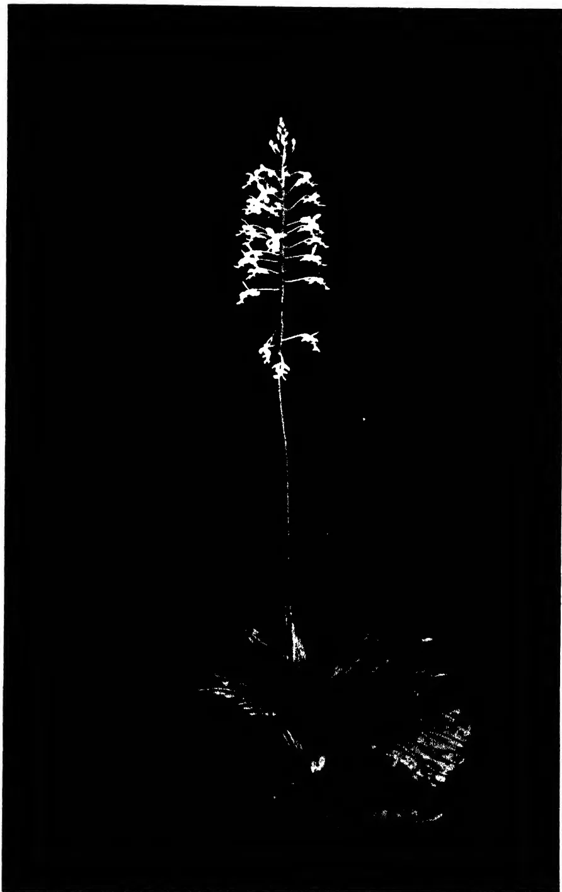
Calanthe veratrifolia R. Br.
A completely blank white page with no visible content, text, or markings. 175which genus they are closely allied. During warm and dry months copious supplies of water are necessary but little is required during the wet months which is normally the resting period. The plant is propagated by means of the divisions of the pseudo-bulbs. All back and leafless pseudo-bulbs may be severed from the parent root stock, cleaned of all dead parts and potted singly in six inch pots with sufficient space for development. Equal parts of leaf mould, sand, cow-dung and turfey soil with a small percentage of charcoal make a fine compost for all Calanthes. The drainage should be good as any defect in this respect will result in "spotting" of the leaves and ultimately lead to rotting of both leaf and pseudo-bulb. A thin layer of crocks over the surface of the compost in the pot will help to arrest erosion of the soil by rain as well as to check the evaporation of moisture during warm and dry days.
It is a good plan to start all leafless pseudo-bulbs on a bed of clean sand under cover. They should be covered up to the collar of the bulb and be syringed very sparingly, and that too only when the surface of the bed shows signs of dryness.
Potted plants should be placed under shelter, preferably in the shade of a tree, and very little water given during the first few weeks till new growth appears. The supply of water should be increased as the plant advances in growth; while occasional watering with a solution of weak cattle manure water is beneficial. The liquid manure should however be stopped at the first appearance of the flower-spike and the supply of water should then be reduced, the plants being given drier atmospheric conditions than when growing.
176W. R. C. PAUL, M.A., M.Sc., D.I.C., F.L.S.,
DIVISIONAL AGRICULTURAL OFFICER, NORTHERN
ON paddy as well as on arable lands for the cultivation of rotation crops in the dry zone there is much need for a quick growing manure which can be established throughout the yala or siropokam season when the rainfall is low and does not exceed four inches in the dry period from about June-August.
Attention has recently been drawn to the value of sunnhemp (Crotalaria juncea) as a green manure in the dry zone.* It produces a large quantity of green material in a comparatively short period and has, besides, other uses as a fodder and fibre plant. But it requires a season with at least a few good rains each month so that the soil does not remain altogether dry. It does well when sown at any time during the maha or kalapokam season or during the early yala so that it receives the full benefit of the scanty south-west monsoon during March-May. If, however, sunnhemp is sown after the end of May it is usually unable to withstand the long period of drought that follows and the crop either becomes susceptible to insect pests and diseases or wilts off. Sunnhemp, moreover, matures in about 4½ months' time and after that the leaves wither and drop. If it is sown too early in yala the land becomes bare during the last few months of the dry season even though there may be a fall of the leaves covering the ground to some extent. But with decay and the effect of the wind the soil after a short time becomes exposed once more. In view of the necessity for keeping the soil protected from the effects of high tem-
* "Sunnhemp in the Jaffna Peninsula" by W. R. C. Paul and A. V. Chelvanayagam. The Tropical Agriculturist, January, 1936.
177perature and strong sun which brings about oxidation and loss of the organic matter in the soil, some crop which will continue to grow throughout the driest period of the year in the dry zone is greatly needed.
Observations from this point of view were made with the following varieties of leguminous plants which were sown on adjacent 1/10 acre plots at the Experiment Station, Anuradhapura :—
Phaseolus lathyroides, Sesbania speciosa, sunnhemp, Cassia sophora (S. urutora, T. takarai) Cassia alata (S. etora) and Tephrosia purpurea (S. pila, T. karilai or kolinji).
The last named easily proved itself to be the best and has shown no signs whatever of wilting or being attacked by any pest or disease even during the driest months.
Tephrosia purpurea is found growing wild on certain fields that have not been cultivated for over a season. It thrives on sandy soils in spite of their low moisture retentive capacity. After germination, plants of Tephrosia have been found growing for several months, without any rain above 1 inch per month having been registered. They are quick growing and develop as low bushes. Pods are readily formed sometimes within about a month after the seedlings have appeared above ground but unlike sunnhemp the development of pods is not accompanied by the termination of growth. The plants are not usually eaten by cattle so that they have a further advantage in this respect when grown solely as a green manure in both paddy and arable lands.
The value of Tephrosia purpurea as a green manure is not sufficiently known except generally in the Jaffna Peninsula where it is considered to be the best green manure for cheroot tobacco. Cartloads of this plant are even conveyed over long distances for manuring tobacco lands.
Further observations and experiments with this green manure are being made on the experiment stations of the Northern Division.
178CACAO produced by peasant proprietors accounts for approximately two-thirds of the world's total production, and this enormous quantity of cacao, in the neighbourhood of 350,000 tons annually has all the faults of cacao fermented in separate small quantities. Thus, peasants' cacao is recognised by manufacturers to be of inferior quality and lower value than estates' cacao, the lower quality being in large measure due to the inferior methods of preparation employed by small holders. In this article a new fermentation method is described with which it is possible to ferment separate small quantities of cacao so that the final product is equal in appearance and value to estates' fermented cacao.
The process of fermentation or "sweating" is the recognised method of preparing fresh cacao beans for the market throughout the cacao-producing countries of the world. The fermentation of the beans greatly improves the quality of the cacao from the point of view of the manufacturers who are prepared to pay a substantial premium in price for properly fermented beans. During recent years, a large number of scientific workers in different parts of the world have investigated fermentation problems, and they have accumulated valuable knowledge of the fundamental process involved. In spite of this, there has been little or no change in the cacao fermentation methods in common use today from those employed in ancient times, long before exact knowledge was available of the biological activities of enzymes, yeasts and bacteria.
The fermentation of cacao in large batches presents few difficulties to the experienced planter provided that reasonable care and supervision are exercised. The owner of a fairly large cacao property has therefore no difficulty in carrying out a proper fermentation, producing well-fermented cacao beans of the quality desired by the manufacturer. This may largely explain the lack of progress in the application of scientific theory to the practice of cacao fermentation. There is, probably, still room for improvement in the fermentation of estates' cacao, but, in order to supersede the older methods, any suggested new method would have to show an appreciable increase in quality of the final product, as well as being equally easy and cheap to apply. For the
*By J. A. McDonald, Chemist for Cacao Research in Tropical Agriculture, Vol. XIII, No. 7, July, 1936
179purpose of curing large batches of cacao, the chemist or biologist has not yet devised a method which gives a final product of such good all round quality as the traditional methods of fermentation.
In the case of the small peasant proprietor (holding ten acres of cacao land or less), the fermentation problem presents an entirely different aspect. A single picking on a small property may often amount to no more than fifty pounds to one hundred pounds of wet cacao, and the practical difficulties of obtaining a satisfactory product, when such small lots of cacao are fermented by the usual methods, are well recognised. The trouble arises through the large area of surface exposed in relation to the volume of the mass of cacao beans so that too great a loss of heat occurs. The high temperatures requisite for killing the embryo of the bean are therefore never attained, and the internal changes associated with proper fermentation do not take place or are incomplete. A small bulk of cacao is also apt to dry out too quickly. In an endeavour to increase the quantity of cacao available for fermentation, the small holder usually picks his cacao only at long intervals and includes unripe and overripe pods in his picking. The net result of all these adverse factors is that the majority of the beans are unfermented or only partially fermented, some are germinated, and those occurring at the edges are dried up and shrivelled, or may be covered with obnoxious and unsightly moulds. Peasants' cacao is therefore recognised by the manufacturers to be of poorer quality and lower value than estates' cacao.
The crux of the fermentation problem appears to be the protection of small quantities of cacao from excessive evaporation and cooling. If this can be done effectively and cheaply, then there is no reason why a good quality product should not be obtained by the ordinary method of natural fermentation which has proved satisfactory with large quantities under estate conditions.
In the course of biochemical investigations carried out by the Chemical Section of Cacao Research at the Imperial College of Tropical Agriculture, the necessity arose for fermenting separate small experimental samples of wet cacao. In connection with this work the writer has devised a solar fermenting frame which possesses the following advantages, (1) a blanket of warm air at a temperature ranging from 100°F. to 150°F. (38°C. to 65°C.) is maintained for a period of eight hours in the day, (2) a humid atmosphere can be maintained round the sweat box, thus preventing excessive evaporation, (3) the apparatus required is simply and cheaply constructed, (4) the source of heat costs nothing.
Details concerning the design and construction of this fermenting frame, and preliminary experiments carried out with the new method are published in the Fifth Annual Report on Cacao Research, 1936, Chemical and Ecological Section. In the present article, a brief outline is given of the new method of fermentation and of the design and construction of the fermenting frame. The
180results of preliminary fermentation experiments are summarised, and the possible practical importance of the new method, as a solution of peasant fermentation problems, is discussed in detail. For full experimental details concerning the preliminary trials, and a discussion of various theoretical considerations involved in this new fermentation process, reference should be made to the original article in the Fifth Annual Report on Cacao Research.
In most tropical countries where cacao is grown, the sun is a constant and reliable source of heat throughout the day-time. In Trinidad, there is an average of six to eight hours bright sunshine each day during the eight months in which the bulk of the cacao crop is picked. The temperature of dark-coloured objects exposed to direct sunlight and adequately insulated reaches an average maximum temperature of 150°F. or 65°C. It seemed feasible therefore to utilise this cheap and constant source of heat for producing temperatures whose range lies almost exactly within the optimum limits known to be necessary to ensure the proper fermentation of cacao beans. A simple adoption of the greenhouse or solar propagation principle enables sunlight to be used for heating the mass of fermenting beans.
The first experimental frame constructed on this principle consists of double-walled, double-bottomed wooden frame or cabinet of external measurements, 6 ft. by 4 ft. by 4 ft., a three-inch air space being left all round between the inner and outer walls. The air space may be packed with straw to provide more efficient insulation. The frame is painted black, inside and outside. It is provided with a closely-fitting moveable glass-paned cover. Two wooden planks fixed on edge along the bottom of the frame, support separate moveable sweat boxes at a height of eight inches above the bottom of the frame. Two sizes of sweat boxes were made, (a) 1 ft. by 1 ft. by 1 ft. holding 40 lb. of wet cacao and (b) 1 ft. by 1 ft. by 1½ ft. holding 60 lb. of wet cacao. The individual sweat boxes are provided with a lid or inverted box, which fits over and completely encloses the sweat box, leaving a space of half-an-inch between box and lid. The bottom and sides of the sweat boxes are perforated in order to provide aeration and drainage, but the top only of the lid is perforated. Boxes and lids are painted black on the outside only.
In theory, the solar frame should provide ideal conditions for the fermentation of small quantities of cacao. The sun's rays pass through the glass cover and are absorbed by the blackened walls and floor of the frame; the black surface becomes heated and warms the air in contact with it, thus producing an envelope of hot air which is retained by the glass cover and completely surrounds the small sweat boxes supported in the centre of the frame. Cacao treated by this method is thus cured by a combination of natural fermentation and artificial heat treatment.
181The cacao beans are placed in the small sweat boxes, enclosed in the frame and allowed to ferment in the normal manner, but the envelope of hot air surrounding the sweat boxes prevents the escape of heat produced by fermentation, and some heat is actually supplied by the sun to the fermenting beans during the hottest hours of the day. The sweat boxes should be well lined with banana leaves before putting in the wet beans and the top of the sweat box should be covered with banana leaves before putting on the lid. This lining of banana leaves helps to prevent evaporation, and serves as an additional insulation against the loss of heat during the cooler hours of the night.
In order to prevent excessive drying out of the small mass of cacao, the air inside the frame may be kept damp by placing wet sacking on the floor of the frame. The following arrangement for maintaining humidity was found to work very well in practice :— Wet sacking was placed on the floor of the frame and a kerosene tin (painted black) full of water was placed at each end of the frame with a piece of sacking dipping into the water and hanging over the side of each tin. This wick-like arrangement served to maintain the humidity of the air inside the frame for several days without any attention. The above precautions for maintaining a humid atmosphere inside the frame are an essential feature of the process. Unless these precautions are taken, the small mass of cacao will tend to dry out before fermentation is complete, and the final product obtained will be very poor quality.
If it is required to open the frame at any time during the fermentation period, either to inspect the fermenting cacao, or to renew the water supply, the glass cover should only be removed early in the morning within one or two hours of sunrise. At this time of day the temperature of the air inside the frame is only slightly higher than the temperature of the outside air, and the loss of heat due to the removal of the cover is negligible.
The length of the fermentation period will vary with different types of cacao. The right time to take the beans out of the frame can be determined by noting their appearance in the sweat box. Preliminary trials have shown that the best quality product was obtained from the solar fermenting frame when fermentation was allowed to proceed for three days longer than the normal period for the same type of cacao fermented in large batches under estate conditions.
Records show that the air inside the solar frame has an average temperature throughout the 24 hours 33°F. higher than that of the outside air. When no precautions were taken to maintain humidity, the air inside the frame
182became very dry, and the rate of evaporation was greater than that in the outside air. When no precautions were taken to maintain humidity, the air inside the frame became very dry, and the rate of evaporation was greater than that in the outside air. When precautions were taken to maintain humidity (by means of wet sacking, &c.) the air inside the frame remained very humid throughout the 24 hours, and the average rate of evaporation was only 50 per cent. of that in the outside air. Cacao fermenting inside the solar frame attained maximum temperatures of 121°F. to 124°F. Similar small quantities of cacao fermenting outside, under ordinary favourable conditions, attained maximum temperatures of 108°F. to 111°F. During the fermentation period the temperature conditions throughout the mass inside the solar frame are very regular and even, the mean temperature of the edges of the mass being the same as the mean temperature of the centre. In a small mass of cacao fermenting outside under ordinary atmospheric conditions, much lower temperatures were recorded in the surface layers than in the centre.
In order to obtain an independent and completely unbiased estimate of the relative commercial value of the different final cacao samples, they were submitted for criticism and valuation to a large firm of cacao dealers in Port-of-Spain. A sample of cacao beans from the same picking, sweated and dried under estate conditions, was also submitted at the same time for comparative purposes.
The dealers reports showed that small lots of 40 lb. to 60 lb. wet cacao could be successfully fermented in a wooden sweat box enclosed in the solar fermenting frame. The final product of 15 lb. to 23 lb. dried, cured cacao beans was better fermented, had a better external and internal appearance, and a higher value on the local market than cacao fermented in large batches (2,000 lb. to 4,000 lb. wet weight) under the ordinary estate conditions obtained in Trinidad. The solar fermenting frame seemed to be very effective in producing an even fermentation throughout this small mass of cacao. The surface layers were free from mould and as well fermented as the central portion. This is in direct contrast to the results obtained with small lots of cacao fermented under ordinary conditions. The low value of these samples was largely due to the inferior quality of the surface layers, which either became mouldy or dried and shrivelled during the fermentation process.
The practical results of preliminary experiments with the new solar fermenting frame have greatly exceeded expectations. Maximum temperatures attained during fermentation inside the frame were 7°F. to 12°F. higher than the maximum temperatures attained by a similar small mass of cacao fermenting under ordinary favourable conditions outside the frame. The final
183product obtained from the fermentation of 40 lb. to 60 lb. wet cacao was superior in appearance and value on the local market to estate cacao fermented in lots of 2,000 lb. to 4,000 lb. One of the most promising features of the method is that it ensures an even fermentation in a small mass of cacao. The surface layers are free from mould and as well fermented as the central portion, even though no turning was carried out, the mass being left undisturbed during the whole period of fermentation. Temperature records show that the mean temperature of the surface layers of the mass is the same as the mean temperature of the centre. Such even temperature distribution evidently eliminates the necessity for periodic turning, and ensures an even fermentation. With a small mass of cacao fermenting under ordinary conditions, much lower temperatures are recorded in the surface layers than in the centre, and frequent mixing or turning is therefore essential if an even fermentation is to be obtained.
The final quality of any cacao is the net result of variety or breed plus the treatment it receives in preparation for the market. It cannot be claimed therefore that improvement in fermentation methods could result in making the lower quality Forastero types of, say, the Gold Coast equal in quality to the Criollo or near-Criollo types of Venezuela or Ceylon. Nevertheless, it is the lower quality Forastero and Calabacillo types which stand most in need of proper fermentation in order to mitigate their harsher characteristics. The higher quality Criollo types can be fermented for a short period only if they are to retain their characteristic flavour and aroma. The Criollo type of cacao however, forms only a very small percentage of present world production. Approximately two-thirds of the total cacao crop of the world is low quality Forastero cacao produced by peasant proprietors, and this enormous quantity of cacao (about 350,000 tons annually) has all the faults of cacao fermented in separate small quantities.
The solar fermenting frame seems definitely to provide a method whereby very small quantities of cacao can be successfully fermented, so that the final product has all the characteristic appearances of the best estate fermented cacao. The new method would enable the peasant, no matter how small his property, to pick only the ripe cacao for fermentation. There would no longer be the same incentive to include unripe and overripe cacao in an endeavour to increase the bulk available for fermentation. This factor alone should result in a great improvement in the quality of peasants' cacao. In the present preliminary stage of these investigations, however, it is not possible to state definitely whether the method is economically feasible or worth while to the small holder. As far as capital and current expenditure is concerned the new method seems to be much superior to other semi-artificial methods hitherto suggested for the curing of cacao, but the cost of construction of fermenting frame used in these first experiments is probably still somewhat beyond the means of the small holder to whom the method should particularly
184appeal. The essential features of the apparatus are a black absorbing surface and a glass-paned cover whereby the heat energy of tropical sunlight is trapped and utilised to warm the fermenting mass of cacao. Further experiments are contemplated utilising these principles, but constructing the frame in the simplest and cheapest manner. There are a number of other points which still remain to be tested. For instance, Dr. A. W. Knapp, Chief Research Chemist of Messrs Cadburys Ltd., has shown that cacao beans cured by artificial heat processes were deficient in flavour and aroma after roasting, and it is possible that cacao fermented in the solar frame may have some such defect. Future experimental samples should therefore be submitted to chocolate manufacturers for their criticism.
Before this method can be used by the small holder a number of practical difficulties remain to be overcome. The peasant will have to be persuaded to pick only ripe cacao for fermentation; this will involve more frequent pickings which will be more costly and more troublesome. Again, proper drying as well as proper fermentation will have to be carried out if a good quality final product is to be obtained. Finally, some system must be evolved by which the peasant who takes the trouble to produce well fermented cacao will receive some price premium over his neighbour. According to a report by Professor C. Y. Shephard on his recent visit to the Gold Coast, no marked improvement in the preparation of cacao in this Colony is likely to occur until price discrimination is introduced. At present no premium is received by individual farmers who take great care in the preparation of their cacao because improved lots of cacao are too small to be recognised by merchants who handle thousands of tons.
The preliminary trials so far carried out with the solar fermenting frame are purely experimental, and serve merely to draw attention to the possibilities of the method, which, in view of the important practical considerations involved, may be thought worthy of trial by agricultural officers, who are in a position to decide the possibility of overcoming the above practical difficulties.
(1) A new method of fermenting separate small quantities of cacao is described. Details of the new method and preliminary fermentation experiments are fully described in an article to appear in the Fifth Annual Report on Cacao Research. The present article is a brief review of this paper, and stresses the practical applications of the solar fermenting frame as a possible solution of the fermentation problems of small holders.
(2) The bulk of the world's cacao crop is low quality Forastero or Calabacillo cacao produced by peasant proprietors, and this very large total amount of cacao has all the characteristic faults of cacao fermented without special precautions in separate small quantities.
185(3) The solar fermenting frame provides a method by which very small quantities of cacao (40 lb. to 60 lb. wet weight) may be successfully fermented, so that the final product has all the characteristic appearances of the best estate fermented cacao.
(4) The solar fermenting frame is cheap and easy to construct and costs practically nothing to use and maintain.
(5) The practical results of preliminary trials have greatly exceeded expectation, and this new fermentation method seems to be worthy of extended trials by agricultural officers who are in a position to decide the practical possibility of the solar frame, or of some simple modification of it.
186BEFORE the Dominions and Colonies Section of the Royal Society of Arts, Sir David Chadwick, C.S.I., C.I.E., in the chair, Dr. J. W. Munro, Professor of Zoology and Applied Entomology in the University of London, read a paper on the above subject. It dealt exclusively with insect infestation of stored foodstuffs and other raw materials :
Nearly all kinds of organic produce suffer from insect infestation during storage, but naturally the greater the volume of the product and the greater its value, the more evident is the infestation. With the exception of tea, all the more important Empire products suffer more or less severely, notably cocoa, dried fruits, nuts and spices, tobacco and grain. Infestation of these commodities may occur at any stage in the handling of them after harvesting and, broadly speaking, infestation in the producing country, both prior to and during storage there, on shipboard or other conveyance during transport, and in the importing country during storage both at the ports and inland, is universal.
The financial loss is difficult to assess, but is probably very great, especially in regard to dried fruits, cocoa and tobacco. In 1929 and 1930 the value of tobacco leaf infested by the moth, Ephestia elutella, was reduced by 40 to 50 per cent., and direct and indirect losses sustained by the tobacco trade as a result of infestation of African tobacco was at least £100,000.
Dr. Munro described the different types of insects which infested Empire products, and the various methods of control, biological, physical and chemical. Biological control, by the use of parasites, could not be applied. Physical control consisted mainly in the use of high and low temperatures, and chemical control in the use of insecticides, mainly fumigants. He explained the research and practical work being done in these two divisions, and gave as an example work recently carried out on the fumigation of dried fruit arriving in London. He said :
“ The problem as we found it was that infested fruit arrived in London, was transferred from the ships to barges, and in these brought up to the wharves, where it was fumigated, and then transferred to the warehouses. If the fumigation had been successful all should have been well, but the fumigant used had grave defects which our earlier and apparently academic work soon showed. The fumigant was a mixed one and the mixture was unstable. It was, when badly mixed, a poor insecticide, and what was
* From The Crown Colonist, July, 1936
187happening was that the barge fumigation was not efficient, and fruit still actively infested was going into the warehouses. From this fruit in the autumn the caterpillars wandered and settled in the warehouses and we were faced with two primary problems, first to ensure efficient barge fumigation and, second, to clean up the warehouses. The first problem proved relatively simple but only after much hurried experimental work was done. We substituted the gas ethylene oxide for the mixed fumigant and, by devising a special vaporiser to ensure proper distribution of the gas, attained high efficiency.
"The second problem proved much more difficult. A series of large scale experiments showed that, apart from many difficulties attendant on it, fumigation of the warehouses was impracticable because of its high cost—the warehouses ranged in capacity from 150,000 to 200,000 cubic feet. Meanwhile every crack and cranny in their fabric harboured caterpillars, and I admit that we almost despaired of dealing with that problem. In desperation, I suggested the use of a pyrethrum spray and, to cut a long story short, after much wearisome experimental work we devised a new type of spray. We knew that it was hopeless to get any spray to penetrate every crack and cranny and Dr. Potter resolved to tackle the moths as they emerged from these crevices. The moths have the habit—a fortunate one for us—of flying upwards as soon as their wings are dry and they also have the habit of coming out of their pupal skins in the evening. We, therefore, used a mist-like spray which hung about as a cloud, and by sending this up after eight o'clock in the evening we killed enormous numbers of the newly emerged moths. We found that when this misty spray settled it left an invisible film on any surface it touched, and caterpillars of all sizes died if they crawled on it. A full account of this spray and its use has been published by Dr. Potter, and I need only add that as a result of our and their combined efforts in efficient fumigation and effective spraying, the fruit has been sold for the last two seasons without a single complaint of infestation, and we ourselves find their warehouses so clean that we have abandoned them entirely as a source of insects for experimental work.
"Apart from dried fruit infestation we have had considerable success in dealing with tobacco infestation, and I think we may say that we do now understand the main principles of infestation control applicable to conditions in this country."
Concluding, he said that the main difficulty in regard to overseas control was the lack of trained staff. "Finally, may I add one word about the importance of this work. If ever we are faced with an international crisis leading to war, the storage of foodstuffs and other commodities will be a question of vital importance, and it is much to be hoped that it will before long receive the fuller recognition it deserves."
188Minutes of the thirty-third meeting of the Board of Management held in Room No. 202, New Secretariat, Colombo, at 2 p.m. on Thursday, July 23, 1936.
Present.—Mr. E. Rodrigo, C.C.S., Acting Director of Agriculture, in the chair, Messrs. C. H. Collins, C.C.S., Treasury Representative, G. Panditsekere, J.P., U.P.M., Wace de Niese, Gate Mudaliyar A. E. Rajapakse, M.S.C., Mr. Austin Ekanayake, Dr. H. M. Peries, Mr. D. D. Karunaratne, J.P., Mr. O. B. M. Cheyne and Mr. W. V. D. Pieris, Officiating Chief Technical Officer who acted as Secretary.
The minutes of the previous meeting held on May 15, 1936, which had been circulated to Board Members, were confirmed.
The Chairman reported that the two vacancies created by the resignations of Mr. F. A. Obeyesekere and Mr. J. L. Kotalawala had not yet been filled, but that he was in communication on the subject with the Hon'ble the Minister of Agriculture and Lands. The Chairman further reported that Mr. O. B. M. Cheyne had been nominated by the Planters' Association to take the place of Mr. A. W. Warburton-Gray, who had resigned. While on the subject of Mr. Warburton-Gray's resignation, the Chairman referred the Board to certain remarks reported to have been made by Mr. Warburton-Gray at a meeting of the Kurunegala Planters' Association held on 11th July, 1936. The Chairman read the remarks to the Board as reported in the "Times of Ceylon" on Tuesday evening; July 14, 1936, as follows:
"I have to announce that I have resigned from the Coconut Research Scheme, for several reasons. One is that, I do not think they carry out sufficient manure experiments on estates; you cannot get them to get a move-on".
The Board expressed its regret that Mr. Warburton-Gray should have used his position as Chairman of a District Planters' Association to make these vague and undefined charges against the Scheme. With regard to the only definite accusation made, that sufficient manurial experiments were not carried out on estates, it was felt that Mr. Warburton-Gray might with greater advantage and more propriety have brought the matter up at one of the meetings of the Board before he resigned.
189(a) The statement of receipts and payments for the second quarter ended June 30, 1936, was adopted.
(b) A sum of Rs. 1,200 was voted for the erection of an experimental cattle shed on Bandirippuwa.
(c) The Board authorised the publication of Mr. Pieris' illustrated book let on the coconut palm and decided that 2,000 copies should be printed.
The Progress Reports for April, May and June 1936, were adopted.
The Chairman reported that he was in communication with the Hon'ble the Minister of Agriculture and Lands regarding a portion of Kankaniamulle Forest Reserve, near Dandagamuwa, which the Hon'ble the Minister had stated might be unreserved for experimental work of the Coconut Research Scheme. The Chairman further stated that Ratmalagara Estate should also receive careful consideration, since it was conveniently situated and had about a 100 acres of jungle attached. Mr. Wace de Niese thought that since the isolation of the experimental block had been emphasised at an earlier meeting, that fact should be borne in mind when the selection of an area was made. The Chairman undertook to go into the whole subject and he was requested by the Board to make further inquiries about both Kankaniamulle Forest and Ratmalagara Estate.
The Chairman reported that Dr. R. Child had sailed from London on the S.S. "Worcestershire" on the 17th July and was due in Ceylon about the 10th of August. He would be resuming duties as Director of Research on August 15.
Mr. Pandittesekere stated that since white copra was fetching much higher prices than the usual Estate No. 1 grade, it would be very useful if the Scheme undertook an investigation into the production of white copra. Mr. Pieris explained that white copra was normally sun-dried or cured in patent hot-air dryers in which no smoke came into contact with the copra. He understood that on Dr. Child's return a small-scale factory would be built in which, among other things, experiments on copra drying would be carried out. He thought that a small "Chula" hot-air dryer of the new fanless type could be installed in the factory.
The Chairman informed the Board that Mr. Murray of the Rubber Research Scheme would be going to Java in the early future and that the Board might consider authorising him to make a study of copra drying in that country, which was said to produce a very superior grade of copra. The Board requested the Chairman to communicate with the Rubber Research Scheme on the subject and to make the necessary arrangements with Mr. Murray.
190Mr. Cheyne inquired whether Board meetings could not be held on Bandirippuwa Estate and pointed out that it would be very useful for the Board to visit the Scheme's estate and laboratories periodically and keep in touch with the research work that was being carried out there. It was decided that six meetings should be held in the year and that, commencing with the next, every other meeting should be held on Bandirippuwa Estate.
Mr. Cheyne also remarked that in going through some correspondence in the file that had been handed over to him by Mr. Warburton-Gray, the former member representing the Planters' Association, he had come across a statement regarding dead coconut palms. He thought that the destruction of dead coconut palms was not a matter for the Coconut Research Scheme but one which was within the purview of the Department of Agriculture. The Chairman stated that he was taking steps to have the Plant Pest Ordinance enforced in the villages, but that he had to proceed with caution, since he did not want to antagonise the villagers by being too strict with them. He had distributed handbills throughout the villages with the help of headmen giving three months' notice to owners of coconut plantations to have all dead palms on their land destroyed. The Plant Pest Ordinance would be enforced on the expiration of that period.
The meeting adjourned at 3.30 p.m.
191Tropical Planting and Gardening. Fourth Edition—By H. F. Macmillan. Macmillan & Co., Ltd., London. Price 25s. net.
AMONG the now steadily increasing number of books dealing with tropical plants in both horticultural and agricultural aspects Mr. H. F. Macmillan's fourth and new edition of "Tropical Planting and Gardening" still maintains its position as a standard reference to the garden enthusiast and to the planter.
The change over of title from "Tropical Gardening and Planting" to "Tropical Planting and Gardening" would infer greater prominence in the new edition to the estate commercial products than to the horticultural side, but the book itself belies this inference. On the contrary with a revision and addition to certain horticultural subjects and a new chapter added dealing with arid and sub-desert regions, the horticultural features would appear to have gained rather than the planting.
For the gardener or the agriculturist who has to work in a tropical or sub-tropical environment the book with its comprehensive treatment of a wide range of subjects is most valuable and instructive. But in view of the progress of the present day in the demand for new and improved material and for more details as to selection, propagation and cultivation and in view of the increasing number of books now becoming available on specialised branches of agriculture, the question may be raised whether in any future revision a division into two volumes, "Gardening" and "Planting" would not be advisable. The absence of reference to the beautiful and now commonly cultivated Pentas coccinea, Clerodendron fallax, the many fine varieties of the Shoe flower, Bougainvillea, and others, emphasize the fact that such a division might well be considered. I would however regret to see the curtailment of any of the valuable data embodied in the 560 pages of the present volume.
Of the horticultural subjects receiving much attention at the present day throughout the tropics the scant information on the great plant kingdoms of the Orchids and the Palms, and on other lesser subjects now common in tropical horticulture might well be supplemented in detail. The same may be said of the major varieties of fruits, since the cultivator is not now satisfied with other than full details of the subject of his particular interest.
The revision in the present edition might perhaps have been more thorough. The correct nomenclature of certain plants needs to be ascertained though in
192certain instances, as the Flamboyante, the retention of the name (Poinciana regia) by which it is so readily and commonly known has advantages to the gardener.
The statement (page 233) that the tree (orange) suffers from no serious pest in Ceylon should be rigorously excised. That "Grapefruit thrives (presumably best) at medium elevations but is best suited to sub-tropical conditions" needs amending since the lower the elevation, in the tropics, the better the quality of fruit.
In the case of the mango (page 239) it is now recognized that the wedge graft whereby the stock growth is practically eliminated is a better method of propagation than inarching which so frequently allow a stock growth to overcome and supersede the scion growth. Polyembryony is mentioned here but this is not so frequent in the East as in the Tropical West and is restricted mostly to the Jaffna varieties. The present difficulty of distinguishing the generative seedling from the vegetative seedlings after germination preclude the use of seedling plantations till the former can be identified and eliminated.
Minor corrections might cover details of the Brazil nut (page 230) since the original plant first fruited in 1900, was blown down five years ago, and the seedling of this tree now produces fruit in 8-10 years. The Mate (Ilex paraguayensis) referred to on page 338 does not thrive at Peradeniya since it requires sub-tropical and dry conditions and the specimen referred to has now been identified as Elacodendron quadrangulare Reiss. The Tallow tree, Stillingia (Sapium) sebiferum (page 379) "introduced to Ceylon before 1824 and has become naturalised in the vicinity of some up-country gardens where it seeds abundantly" is Omalanthus populifolius Grah. a Pacific and Malayan plant and not the Chinese Tallow tree.
With regard to estate products the Research Institutes of Tea, Rubber and Coconut have collected ample data on present day methods, tea pruning on rubber yields and on other aspects of these enterprises which could with advantage be embodied in any future edition.
In a book of this nature however covering as it does such a wide range of subjects it would be difficult to avoid a few errors. There can be no two opinions that the book can be recognised as a standard work on the subject of horticulture which can be recommended to old and young, as indicated in the foreword.—T.H.P.
193ANIMAL DISEASE RETURN FOR THE MONTH
ENDED AUGUST, 1936.
| Province, &c. | Disease | No. of Cases up to date since Jan. 1st, 1936 | Fresh Cases | Recoveries | Deaths | Balance Ill | No. Shot |
|---|---|---|---|---|---|---|---|
| Western | Rinderpest | .. | .. | .. | .. | .. | .. |
| Foot-and-mouth disease | 2848 | 316 | 2785 | .. | 63 | .. | |
| Anthrax | .. | .. | .. | .. | .. | .. | |
| Rabies | 19 | 3 | .. | .. | .. | 19 | |
| Colombo Municipality | Rinderpest | .. | .. | .. | .. | .. | .. |
| Foot-and-mouth disease | 1347 | .. | 1332 | 15 | .. | .. | |
| Anthrax | 1 | .. | .. | 1 | .. | .. | |
| Rabies | 30 | 1 | .. | 30 | .. | .. | |
| Cattle Quarantine Station | Rinderpest | .. | .. | .. | .. | .. | .. |
| Foot-and-mouth disease | 3 | .. | 3 | .. | .. | .. | |
| Anthrax | 24 | .. | .. | 24 | .. | .. | |
| Central | Rinderpest | .. | .. | .. | .. | .. | .. |
| Foot-and-mouth disease | 1611 | 94 | 1592 | 7 | 12 | .. | |
| Anthrax | 11 | .. | .. | 11 | .. | .. | |
| Tuberculosis | 2 | .. | .. | 2 | .. | .. | |
| Rabies | 10 | 3 | .. | 10 | .. | .. | |
| Southern | Rinderpest | .. | .. | .. | .. | .. | .. |
| Foot-and-mouth disease | 11 | .. | 11 | .. | .. | .. | |
| Anthrax | .. | .. | .. | .. | .. | .. | |
| Northern | Rinderpest | .. | .. | .. | .. | .. | .. |
| Foot-and-mouth disease | 313 | .. | 310 | 3 | .. | .. | |
| Anthrax | .. | .. | .. | .. | .. | .. | |
| Eastern | Rinderpest | .. | .. | .. | .. | .. | .. |
| Foot-and-mouth disease | 3 | 3 | 3 | .. | .. | .. | |
| Anthrax | .. | .. | .. | .. | .. | .. | |
| North-Western | Rinderpest | .. | .. | .. | .. | .. | .. |
| Foot-and-mouth disease | 3145 | 950 | 1908 | 2 | 1235 | .. | |
| Anthrax | .. | .. | .. | .. | .. | .. | |
| Rabies | 19 | .. | .. | 1 | .. | 18 | |
| North-Central | Rinderpest | .. | .. | .. | .. | .. | .. |
| Foot-and-mouth disease | 730 | 47 | 683 | .. | 47 | .. | |
| Anthrax | .. | .. | .. | .. | .. | .. | |
| Uva | Rinderpest | .. | .. | .. | .. | .. | .. |
| Foot-and-mouth disease | .. | .. | .. | .. | .. | .. | |
| Anthrax | .. | .. | .. | .. | .. | .. | |
| Rabies | 2 | .. | .. | 1 | .. | 1 | |
| Sabaragamuwa | Rinderpest | .. | .. | .. | .. | .. | .. |
| Foot-and-mouth disease | 5216 | 2680 | 3190 | 77 | 1949 | .. | |
| Anthrax | .. | .. | .. | .. | .. | .. | |
| Haemorrhagic Septicaemia | 3 | .. | .. | 3 | .. | .. | |
| Rabies | 3 | .. | .. | .. | .. | 3 |
Government Veterinary Department,
Peradeniya, 18th September, 1936.
M. CRAWFORD,
Government Veterinary Surgeon.
| STATION | TEMPERATURE | HUMIDITY | Amount of Cloud | RAINFALL | ||||||
|---|---|---|---|---|---|---|---|---|---|---|
| Mean Maximum | Difference from Average | Mean Minimum | Difference from Average | Day | Night (from Minimum) | Amount | No. of Rainy Days | Difference from Average | ||
| ° | ° | ° | ° | % | % | Ins. | Ins. | |||
| Colombo | 85.0 | +0.4 | 77.1 | +0.8 | 77 | 89 | 7.0 | 1.15 | 6 | - 1.49 |
| Puttalam | 86.1 | +0.1 | 77.4 | -0.2 | 75 | 86 | 5.1 | 0 | 0 | - 0.25 |
| Mannar | 86.7 | - 1.1 | 78.6 | +0.2 | 74 | 82 | 5.0 | 0 | 0 | - 0.49 |
| Jaffna | 85.4 | -0.1 | 79.7 | +1.1 | 77 | 82 | 6.4 | 1.06 | 2 | + 0.02 |
| Trincomalee | 92.1 | +0.7 | 77.4 | +0.8 | 58 | 76 | 5.7 | 4.31 | 6 | + 0.80 |
| Batticaloa | 92.0 | +1.9 | 76.8 | +0.6 | 62 | 77 | 4.9 | 0.81 | 4 | - 0.99 |
| Hambantota | 86.6 | +0.4 | 75.5 | 0 | 76 | 91 | 4.6 | 0.59 | 6 | - 0.45 |
| Galle | 82.0 | -0.4 | 76.4 | +0.4 | 82 | 86 | 5.6 | 3.60 | 18 | - 1.57 |
| Ratnapura | 87.5 | +0.6 | 74.1 | +0.3 | 71 | 93 | 5.4 | 4.77 | 15 | - 5.83 |
| Anuradhapura | 91.9 | +0.6 | 76.1 | +0.8 | 58 | 86 | 6.3 | 0.11 | 2 | - 1.13 |
| Kurunegala | 87.0 | -0.4 | 74.9 | +0.5 | 70 | 86 | 5.4 | 1.18 | 7 | - 1.53 |
| Kandy | 83.3 | +0.5 | 70.4 | +0.5 | 74 | 87 | 7.0 | 3.25 | 19 | - 2.22 |
| Badulla | 88.2 | +2.1 | 63.6 | -0.7 | 56 | 94 | 4.5 | 1.88 | 8 | - 0.83 |
| Diyatalawa | 78.8 | +0.7 | 61.4 | -0.2 | 58 | 81 | 5.2 | 0.91 | 3 | - 2.13 |
| Hakgala | 68.9 | - 1.1 | 57.6 | +0.4 | 76 | 83 | 6.8 | 4.24 | 15 | - 0.79 |
| Nuwara Eliya | 66.2 | -0.3 | 54.2 | +0.2 | 85 | 94 | 8.6 | 3.22 | 23 | - 4.44 |
The rainfall of August was below normal over practically the whole Island, only a few stations, mainly near Trincomalee, south-west of Vavuniya, and near Pottuvil, reporting excess. Deficits were most marked on the south-western slopes of the hills, where the rainfall is usually heaviest at this season. The greatest deficits reported were 10.40 inches at Blackwater estate and 10.07 inches at Watawala. The highest monthly total was 18.31 inches at Kenilworth estate, while totals over 15 inches were also reported from Watawala, Norton Bridge and Theydon Bois and several other stations, all in or near the Ginigathena Pass, reported monthly totals of over 10 inches. A number of stations, mainly in the northern half of the Island, and particularly on or near the coast between Chilaw and Mannar, reported no rain at all during the month.
Six falls of over 5 inches in a day were reported, nearly all on the 21st. The highest was 6.65 inches, at Ingoya Estate, on the 21st.
As regards barometric pressure and wind, conditions continued to be of the usual monsoon type throughout the month. The rains were generally light, and mainly confined to the south-west of Ceylon, with occasional local thunderstorms elsewhere. On the 14th and 15th, however, there was some fairly heavy monsoon rain, and on the 21st there was heavy rain in the Kelani Valley.
Temperatures were on the whole a little above normal, but the deviations from average were not marked. Humidity was generally a little below normal, while cloud was nearly everywhere in deficit. Barometric pressure was generally above normal, and wind strength about normal, while its direction was mainly south-westerly.
A hailstorm was reported at Hakgala on the 21st.
H. JAMESON,
Superintendent, Observatory.
VOL. LXXXVII
PERADENIYA, OCTOBER, 1936
No. 4
| Page | |
|---|---|
| Editorial .. .. . | 195 |
| Tobacco Cultivation on the Alluvial Deposit of the Mahaweliganga. By W. P. A. Cooke, M.Sc. (Calif.) .. .. . | 197 |
| Questionnaire on Cover Crops and Green Manures (in relation to Coconut Cultivation). By M. L. M. Salgado, Ph.D., B.Sc., Dip. Agric. (Cantab.) .. .. . | 202 |
| Green Fencing for New Rubber Clearings. By J. D. Farquharson .. | 210 |
| Studies on Paddy Cultivation—VII. By J. C. Haigh, Ph.D. .. | 213 |
| Notes on Orchids Cultivated in Ceylon. Grammatophyllum speciosum. By K. J. Alex Sylva, F.R.H.S. .. .. . | 234 |
| Cinnamon .. .. . | 237 |
| Cotton Cultivation at Maho .. .. . | 245 |
| Methods of Improvement in Crops : Improvement by Hybridization | 247 |
| Minutes of Meeting of the Board of Management of the Rubber Research Scheme (Ceylon) .. .. . | 257 |
| Citrus Diseases and their Control .. .. . | 260 |
| Composting Tea Estate Wastes .. .. . | 263 |
| Animal Disease Return for the month ended September, 1936 .. | 264 |
| Meteorological Report for the month ended September, 1936 .. | 265 |
The
Tropical Agriculturist
October, 1936
EDITORIAL
CINNAMON
THE historical note on cinnamon appearing in this number ends in a depressing note. This industry which formed one of the main pre-occupations of Government in Dutch times gave character and individuality to the Island in the past, provided employment to a large number of people during a period of two centuries, and, only a few years ago, appeared to be entering a new term of mild prosperity, is now threatened with extinction. When cinnamon first reached Europe in the early days of the Roman Empire it found buyers at £8 per pound. By the middle of the eighteenth century the price had come down to 25 shillings per pound, and by the end of the third quarter of the nineteenth century it had become stabilized between 2s. 6d. and 3s. per pound. The fall was only temporarily arrested and in the first decade of the present century the ruling price was 9d. per pound. There was hardly any demand at all during the war and the immediate post-war years. The post-war boom in trade brought the price up to one shilling, but in 1933 the price was 4d. and there are no signs that there will be a marked improvement.
This continuous fall in prices is most remarkable when it is remembered that Ceylon's monopoly in the cultivated species of cinnamon was never challenged in the past, and the fall in prices synchronized with a considerable reduction in the acreage under cultivation. The local grower does not have sufficient
196acquaintance with the trade to ascertain the causes of this progressive degeneration, but a number of suggestions have been advanced from time to time. It has been said that the rival product of Cassia brings prices down by competition and, again, that adulteration with inferior uncultivated varieties of bark reduces quality and, with quality, prices. We are unable to adjudicate on the comparative merits of these claims because no systematic investigations have ever been made with regard to this question, but the figures of the consumption of Cassia in the world market definitely point to a relation between the popularity of that commodity and the low prices of our cinnamon.
The last shock which Ceylon's cinnamon trade has received is the news that by Law No. 54 of 25th March, 1936, the Congress of Columbia has declared the cultivation and exploitation of Cinnamomum zeylanicum—our cultivated cinnamon—to be in the public interest and has voted money both for official experiments in the cultivation and preparation of cinnamon and for the grant of a subsidy for its cultivation by unofficial agriculturists. The importance of this decision to us lies in the fact that the principal users of Ceylon cinnamon are the Spanish American States. The only hope for the cinnamon grower seems to lie in a substantial improvement in the popularity of cultivated cinnamon at the expense of the Cassia bark, but that improvement can be effected only by intensive and sustained propaganda of a kind which this country cannot afford to undertake, and the expenditure on which does not seem to be justified by the volume of the trade. In these circumstances we can only counsel resignation to the ultimate relegation of the Ceylon cinnamon trade to a precarious and insignificant village industry.
197W. P. A. COOKE, M.Sc. (Calif.),
DIVISIONAL AGRICULTURAL OFFICER, EASTERN DIVISION
THE Mahaweliganga in its course flows through almost flat country in the Tammankaduwa and Trincomalee districts before emptying itself into the Bay of Bengal. During December and January—the flood season, the water overflows its banks from a few feet to a mile or more of river front on either side. Each flood leaves in its train very fine silt. Very good alluvial soil is thus found in these two districts to a length of 45 to 50 miles. The only crop cultivated in this tract is tobacco. The “black” wrapper of the Jaffna cheroot leaf known in trade as the Tammankaduwa tobacco is cultivated in this alluvial tract. The market for this tobacco is Jaffna. Although the area of the alluvial soil is large, only a small portion is cultivated. The factor which controls the area of cultivation is the demand at Jaffna for this tobacco. During the palmy days of the Jaffna cheroot industry large areas were cultivated in both these districts. At present the prices are down and the cultivation is confined to the Tammankaduwa district near Mannampitiya. The concentration of cultivation near the Mannampitiya area is due to its accessibility for railway transport. The access to other parts is through jungle tracts varying from 15 to 40 miles from the road which connects Batticaloa to Trincomalee.
Tobacco varieties.—The varieties grown here are from seeds secured from the Jaffna peninsula. They come under two broad classifications, viz., broad leaf and narrow leaf Jaffna varieties. There are several sub-varieties due to the crossing of these two main varieties. The popular one at Tammankaduwa is the broad leaf variety. Their Jaffna names are naramban, anaichevian, kulaiyan, pokkan and pachchilipaliyan. The two narrow leaf varieties are called kooran and peelikodan.
198The broad leaf varieties when grown in the Jaffna red soil area and the Islands turn out to be very tough and are used for chewing. Their burning qualities are poor. Under Tammankaduwa conditions the leaf is thin and burns very well. This change in texture and quality shows clearly the extreme sensitivity of the tobacco leaf to change its character according to the soil conditions in which it is grown.
Market and its uses.—The only market for this tobacco is Jaffna, where it is valued as an excellent wrapper leaf for the black cheroot, the favourite brand of the Jaffna born cheroot consumer. The second grade which is of thicker texture is used as a cheroot filler. The cultivators cure a certain quantity “red” for their own consumption as chewing tobacco.
Curing the crop for the cigar trade.—The tobacco is known in trade as the Tammankaduwa tobacco and is cured “black”, karuppu in Tamil.
The plants are cut whole in the evenings and laid out in the field overnight to wilt. The reason for this is that the leaf when mature is brittle and tears badly in handling. As the leaf is used as wrapper special care is taken to handle it without damage. In the morning they are hung topside down inside sheds. The next morning, i.e., the third day the leaves are cut from the plants with the stalks and graded according to size. The first grade is called “Therivu” and the big-sized leaves come under this class. The second grade is called “Therivu Kalappu” and consists of the smaller leaves. The term “kalappu” means mixture. This grade is used both for wrapper and filler while “Therivu” is used entirely as wrapper. The bottom leaves and all other torn leaves are called “Sachchu” and are used only as filler. After grading, the “Therivu” grade leaves are tied into small bundles. On the fourth day the “Therivu” grade is hung inside the shed and the other two grades are spread on mats and left below. A pit about 10 feet deep and about 7 feet in diameter is dug. The bottom of the pit is first lined with tobacco stalks. The major portion of the second grade is placed at the bottom. The first grade comes in the middle, then the balance of the second grade is placed over the first grade—all the third grade is put on top and covered with palmyrah leaves. Earth is piled over this and the pit
199is closed. This is done on the fifth day. The tobacco is allowed to ferment in this pit for 5 days. It is then removed and the first and second grades are tied in bundles or "hands" of 4 leaves and hung in the shed for 2 or 3 days to reduce the moisture. The bundles are piled in a heap for one night and aired next day to reduce the moisture. The tobacco is now ready for fermenting and maturing in bulk. The whole crop is arranged in layers on clean floor and is left covered in bulk of about 4 to 5 ft. in height. Slow fermentation takes place and to avoid overheating the bulk is opened and rebulked, the order of arrangement being varied so that all the leaf may get an equal chance of fermenting. This fermentation in bulk lasts about 4 weeks and the tobacco is ready for the market. The leaves are tied into bundles of 100 leaves. For wholesale trade this bundle is called a quarter "thulam"—a "thulam" consisting of 400 leaves.
Red tobacco or Vellaipadam.—The curing of the leaf for chewing by cultivators and Tammankaduwa residents is as follows: Some fully matured plants with thick leaves are selected and air-cured in closed sheds. They are allowed to stand like this for six days. During these six days the leaf turns gradually to a light colour and turns red as it dies. On the 7th day this red colour is fixed by rapidly killing the leaf by opening the sides of the shed. After fixing the colour the leaf is stripped and tied into small hands of 4 or more leaves. They are then bulked and weighted down for two days to ferment. After fermenting they are hung in the shed for a day to dry. The tobacco is now ready for use.
Cultivation.—The lands are leased from the Crown at Rs. 10.00 per acre per season. A block of two acres is called a "wadi". A "wadi" is the unit of cultivation. The cultivators start work in February and continue to work till September when the season ends. Almost all the labour comes from the Eravur village of the Batticaloa district. There are a very few to be found from Tammankaduwa and Kerudavil village of the Vadamarachchi division in Jaffna.
A team of three men and a boy work a "wadi" of 10,000 plants. Very little manuring is done—about 100 cattle are tethered at nights for 3 months. The cultivation in other
200respects is done on the same lines as in the Jaffna peninsula. The nurseries are laid in February-March and transplanting in the field takes place in April-May. The early planted crop usually does better than the later ones.
Pests and diseases.—There are no pests of a serious nature reported but there is disease to be found on late planted fields. Tobacco wilt and mottling of leaf was noticed in some plants at the time of the visit.
Irrigation.—The water is lifted from the river by means of well sweeps as at Jaffna except that the bucket used is the ordinary galvanised iron bucket and no man runs on the sweep. A man can lift water for 2,000 plants in a day.
The second method is to lift water by means of leather mholes called ‘Kapalai’ of about 25 gallons capacity. Water could be lifted to irrigate 8,000 plants a day. A mhole unit consists of one man, a pair of bulls and the mhole. The value of the animals used for the mhole is about Rs. 40·00 per animal. If one is hired Rs. 10·00 is paid for the season, i.e., Rs. 20·00 per pair. Mholes are worked by the animals walking backwards and forwards as done in South India. The mhole costs from Rs. 15·00 to Rs. 20·00 and is made at Eravur.
Cost of cultivation.—For a capitalist the cost of working a “wadi” works out as follows :
| Rs. | Cts. | |
|---|---|---|
| To rent of land at Rs. 10·00 for 2 acres .. | 20 | 00 |
| To wages of 3 men at Rs. 10·00 a month for 8 months .. .. . | 240 | 00 |
| To wages of 1 boy at Rs. 5·00 a month for 8 months .. .. . | 40 | 00 |
| Provisions to feed the men for 8 months .. | 150 | 00 |
| Supplying materials for sheds (cadjans, etc.) | 10 | 00 |
| Cattle for penning (his own cattle) extra expense .. .. . | 10 | 00 |
| Implement .. .. . | 20 | 00 |
| Transport of materials and provisions .. | 30 | 00 |
| Rs. | 520 00 | |
By "provision" is meant rice, coconut, salt and curry stuffs. The labourers and cultivators grow their own vegetables and chillies on the spot to meet their requirements for the season.
The approximate gross income realised on a "wadi" may be tabulated as follows :
| Rs. | Cts. | |
|---|---|---|
| No. 1 grade : 100 "thulams" at Rs. 7.00 | .. 700 | 00 |
| Nos. 2 and 3:25 "thulams" at Rs. 2.00 | .. 50 | 00 |
| Red tobacco: 5 "thulams" at Rs. 10.00 | .. 50 | 00 |
| Rs. | 800 00 | |
Sub-tenants under Crown lessees pay rent of Rs. 2.00 per strip of one fathom width of river front. The length varies from 75 yards to 125 yards. On an acre basis the rent varies from Rs. 30.00 to Rs. 60.00 an acre. A team of three men and a boy borrow Rs. 300.00 for the season and pay 30 to 40 per cent. interest for the use of the money for the season. Sometimes the Crown lessee agrees to take one or two men on partnership. The Crown lessee makes advances to his partners and recovers his interest on the loan. He meets the expenses of his men and shares the produce in proportion to the number of partners and his labourers.
202M. L. M. SALGADO, Ph.D. (Cantab.), B.Sc. (Lond.),
Dip. Agric. (Cantab.)
SOIL CHEMIST, COCONUT RESEARCH SCHEME (CEYLON)
THE practice of growing green manures, particularly cover crops, has not been undertaken on coconut estates in a systematic manner. In 1929, the Department of Agriculture published a leaflet entitled "Green Manuring with Particular Reference to Coconuts" by Joachim; but since then little progress has been made and the practice is yet far from general. It has been alleged that on certain estates the establishment of cover crops has adversely affected the crop yield, and owing to this belief a consequent prejudice against cover crops has arisen. It may, however, be stated that the practice has not been given a fair trial. There has recently been a general re-awakening regarding the subject, as shown by a newspaper controversy that took place in 1933. The subject was discussed before the Chilaw Planters' Association in a paper prepared by the writer read before that body in June 1935, and in view of the diversity of opinion regarding this agricultural practice a questionnaire on the subject was issued by the Coconut Research Scheme in order to ascertain the experience of planters. The replies to the questionnaire would indicate the lines along which further experiments have to be carried out.
Details of the questionnaire are given below :
Name of Estate and Locality.
Name of Proprietor.
1a. Which of the following soil types occur on the estate :
cabook, loam, clay ; and lay of land (Undulating,
flat, hilly) ?
1b. Rainfall.
2. Do you grow green manures ? If so, please mention the varieties you grow
3. How do you get your green manures established ? Please give details, such as planting by broadcasting or in rows. Seed rate, single or mixed stands of green manure (such as mixture of Centrosema and Calopogonium), alternate rows or entire field, and whether cuttings are used.
4. How long do you find it takes to establish a cover of
5. Do your covers die-back during drought : and do they recover after rains ?
6. Have you experienced a set-back in the trees immediately after establishing covers ? Please give crop records of such fields if available.
7. Have you observed an improvement in the health of palms after covers were established ?
8. How do you utilise your cover crops ?
9. In your experience what is the best green manure crop, (erect and cover) for your soil ?
10. What is your experience with covers on young plantations ?
11. Have you found it difficult to re-establish Pueraria on the same soil after ploughing or harrowing this cover ?
12. Have you ever observed beetles in fields where green manures alone were harrowed, ploughed or buried in trenches ?
13. What system of manuring do you adopt on land under cover crops and green manures ? If artificial
204manures are used, state the composition of mixtures and the quantities applied.
61 copies of the questionnaire were sent, but only 32 replies were received. The following bodies were consulted in making the list of estates as comprehensive as possible :—
Chilaw Planters' Association,
Kurunegala Planters' Association,
Southern Province Planters' Association, and the
Low-Country Products Association
to whom thanks are due. The questionnaire was first issued in October 1935, but as additions were made to the list of estates where cover crops were grown, further copies were sent in April and May 1936.
In spite of the fact that all of the Planters' Associations interested in coconut cultivation and also the Low-Country Products Association were consulted, there are doubtless many Estate Proprietors and Superintendents interested who were not approached for their views. To these apologies are tendered, and the Coconut Research Scheme would welcome further correspondence from them.
A classification of replies received according to districts is as follows :
| Chilaw | .. | .. | .. | .. | 10 |
| Colombo | .. | .. | .. | .. | 6 |
| Galle | .. | .. | .. | .. | 1 |
| Kandy | .. | .. | .. | .. | 1 |
| Kurunegala | .. | .. | .. | .. | 11 |
| Negombo | .. | .. | .. | .. | 1 |
| Puttalam | .. | .. | .. | .. | 2 |
| Total | 32 | ||||
The 32 estates represent an extent of 17,400 acres of which 7,750 acres (i.e., about 45 per cent.) are under cover crops.
205Visits were paid to a number of estates from which replies to the questionnaire were received, and points arising out of the replies were discussed.
It is not proposed to give here the full details of the replies received from each estate owing to lack of space, but it would be useful to discuss briefly the subject under review in the light of the information gathered from the practical experience of estates.
Though the questionnaire referred to the subject of green manures in general, the information gathered has been mainly regarding cover crops. Hence the following discussion is mainly concerned with this aspect of green manures.
1. Soil type and rainfall.—Cover crops have been established under a variety of soil and climatic conditions in Ceylon. In spite of the belief that it would be difficult to grow covers under conditions of very low rainfall, these have been established even in the Puttalam District. One of the estates at Mundel, with an average rainfall of 45 inches, has been visited by the writer and the good growth of covers noted.
2. Varieties grown.—Of the erect green manures Tephrosia candida (Boga medeloa), the Crotalarias and Gliricidia are the only types grown on coconut estates.
Among cover crops Calopogonium mucunoides, Centrosema pubescens and Pueraria javanica are popular, while in a few cases Vigna is occasionally grown. Probably Vigna was the first cover to be introduced to coconut estates, but in general it may be said that it is now grown to a negligible extent.
3. Method of establishing cover.—The land is first ploughed and harrowed, seed is broadcast and lightly raked in. In a few cases a small dose of artificials or cattle manure is broadcast before ploughing. In some cases covers are planted on coconut husk trenches.
Centrosema is invariably planted mixed with Calopogonium. Seed rates used have been very variable from 8 to 45 lb. per acre. Where heavier seed rates were used a cover was established in a short time—even as short a time as four months.
206In the case of Pueraria, in view of the high cost of seeds, cuttings have been used with success. Economy in seeds has also been effected by germinating seeds on coconut husks and planting in the field at a very small seed rate.
4. Time taken to establish a cover.—The time taken to establish a cover also seems variable. Calopogonium is the quickest and establishes itself in six to eight months. Centrosema and Pueraria take nearly one and half years to form a complete cover.
Though the growth of Calopogonium is very rapid it thins down at the seeding season and lets in grass before the shed seed germinates. Grown with Centrosema, the latter grows continuously and though the start is slow it spreads over the Calopogonium at the seeding season and subsequently almost completely blankets it.
5. Die-back.—Calopogonium is the earliest to die-back during a drought and even during ordinary dry weather, as also after seeding. Pueraria too shows a tendency to die-back, but recovers. Centrosema is more resistant. All these varieties recover with the rains. In the case of Centrosema—Calopogonium mixtures Centrosema takes the place of Calopogonium after die-back.
Calopogonium seeds seem to remain viable for a number of years. When a Centrosema cover that has replaced the Calopogonium, is ploughed after several years, the Calopogonium seeds that had remained dormant for a number of years, regenerate themselves.
6. Set-back after establishing covers.—Except in three isolated cases where a set-back was experienced for 2 or 3 years, there is an emphatic and definite belief that there is no set-back whatever that can be attributed to the cover crop.
7. Improvement of health of palms after covers were established.—There is a general agreement that the health of the palms as judged by the green colour of the foliage shows distinct improvement. The contrast is always seen between adjacent fields with cover and no cover.
2078. Utilisation of cover.—The method of treating the cover seems to differ, but there is a distinct consensus of opinion against leaving covers permanently untreated and allowing rank growth.
The various methods practised on different estates are as follows :
Sometimes the cover is buried in trenches along with coconut husk.
9. Best green manure.—Here opinion differs considerably. Most estates grow Calopogonium, Centrosema and Pueraria, and are not restricted to one crop.
10. Covers on young plantations.—There seems to be a general agreement that cover is particularly useful in young plantations, especially in reducing the weeding bill. Care should be taken to prevent the creepers (especially Pueraria)
208from climbing young palms. The area immediately round the palms up to a distance of about six feet is kept clean weeded.
It has been also stated that in young plantations covers favour the breeding of rats and bandicoots. On the other hand it may be stated that these pests breed equally well among the usual weed growth of young plantations.
11. Difficulty of establishing Pueraria on the same soil after ploughing or harrowing.—Difficulty was experienced in a few isolated cases. If harrowing is done when the cover is thick so that the discs do not reach the soil, the cover is not eradicated. Many estates do not seem to have sufficient experience of this cover.
12. Black beetle where cover has been ploughed, harrowed or buried.—In four estates the coconut black beetle (Oryctes rhinoceros) was reported to have been found where cover was buried. In one estate where cover was buried nearly 30,000 adult beetles and grubs were collected and destroyed from May to October 1934.
In the case of one estate it was alleged that the black beetle breeds in the cover among the mixture of decaying fronds and leaf mould.
Where ploughed or harrowed black beetle has not been found.
13. Systems of manuring adopted where land is under cover.—These may be summarised as follows :
(f) The cover is grazed down by cattle, which in turn are used for manuring the palms.
The manure mixtures, where applied, contain a preponderance of potash and phosphoric acid. Several estates have used no artificials with cover.
14. Cover as fodder.—Centrosema is relished by cattle. Calopogonium and Pueraria seem to be less favoured, but buffaloes are indifferent and eat all these varieties with preference for Centrosema. Most estates do not utilise the cover as fodder. Where the cover is thick, controlled grazing is practised without damage to the cover.
The replies to the questionnaire indicate that there is a general belief, as the result of experience, that the growing of cover crops has definite advantages such as reducing the cost of weeding and maintaining the healthy appearance of the palms. While there seems also to be no set-back that can be attributed to cover crops, what has to be determined is whether the growing of covers bring about a definite increase in crop yield, and also how this can be attained by the different methods of utilising the cover combined with the most economical system of manuring. Field experiments that are contemplated by the Coconut Research Scheme will aim at the elucidation of these points.
210J. D. FARQUHARSON,
MANAGER, VOGAN ESTATE, NEBODA
THE question of whether, or not, to undertake the replanting of old rubber areas is one which is engaging the attention of many estate managers at the present time. The final decision is usually dependent upon the estimated cost per acre of the undertaking and not the least item of the estimate is the fencing of the new clearing. The following note is intended to indicate how an appreciable saving can be effected in this item during the preparation of estimates.
Fencing cannot be dispensed with as the area of replanted rubber, and also such cover crops as may have been established, need to be protected from damage by cattle and goats for a period of at least six years.
A suitable fence should consist of not less than five strands of barbed wire, the lowest strand being six inches from the ground, the same distance separating this strand from the second and the second from the third. This distance may be increased to one foot between third and fourth, and fourth and fifth strands, respectively.
As the object of this note is to indicate the minimum cost at which suitable fencing can be erected, only the cheapest possible materials are estimated for. For this reason, Japanese wire and cement are specified. This wire is procurable in Colombo at Rs. 5.00 per roll of 300 yards.
The following estimate provides for the fencing of a 20-acre clearing with different types of posts.
A five-strand fence would require 8,500 yards of barbed wire, equivalent to 28 rolls at Rs. 5.00, making a total of Rs. 140.00 for wire alone. Other costs will depend upon the type of fencing post employed.
(a) Iron posts.—Iron posts are readily procurable in Colombo and are easy to erect. The cheapest type, 6 ft. in length,
211can be obtained for Rs. 70·00 per 100. Allowing a distance between posts of 15 ft., 400 posts would be required at a total cost of Rs. 280·00, to which should be added about Rs. 20·00 to cover transport and handling charges.
(b) Cement posts.—These should be manufactured as near to the area to be fenced as possible, one " round-iron rod being used for reinforcing. If Japanese cement is used the cost of making can be reduced to 40 cents per post, 400 posts costing Rs. 160·00.
(c) Live posts.—In fencing a new clearing in an old rubber area, the operation would necessarily be delayed until the old rubber trees were felled. Suitable 6-ft. posts can be cut from the felled rubber and treated with a wood preservative mixture. The cost of such posts, including treatment, should not exceed 6 cents each. Rough "milla," or other available jungle posts, should be used as straining posts and if treated with preservative should last for six years, or longer. They should not cost more than 20 cents each and about 60 should suffice. Allowing for 340 rubber posts at 6 cents, 60 "milla," or other strong posts, at 20 cents and Re. 1·00 for preservative, the total cost would amount to Rs. 33·40.
After the area has been fenced with wooden posts, cuttings, 6 ft. in length, of a quick growing tree, such as Gliricidia maculata, should be planted alongside, and between, each post. If cuttings are available, a greater number may, with advantage, be planted along the line of wire. In place of Gliricidia, cuttings of the following jungle trees would be suitable if available in the vicinity:—
Godapara, Dillenia retusa, Diyapara, Wormia triquetra,
Suriya, Thespesia populnea, Weraniya, Heydotis fructicosa,
Eramudu, Erythrina indica, and Hik, Odina Wodier.
The cost of cutting, transporting and planting cuttings of these trees will vary according to species, accessibility and other factors but an average cost may be taken as Re. 1·00 per acre. Cuttings which have not become established within one month of planting should be replaced. Gliricidia cuttings grow rapidly and if planted in suitable weather should be sufficiently strong to bear the strain of the wire after about nine months.
212A pound or two of staples will be required. Fixing the wire to the green posts should be completed before the original wooden posts commence to decay.
The appearance of a live fence may not be as businesslike as one with iron or cement posts but with suitable attention it can be kept tidy. Apart from being economical, an important advantage of a fence of this type is that it should provide a plentiful supply of green manure close at hand. Lopping may be done three or four times a year without effecting the strength of the fencing.
The following table illustrates the comparative costs of erecting the three types of fencing referred to above :—
20 ACRE CLEARINGFENCING ESTIMATE| Item | Iron | Cement | Green Fence |
|---|---|---|---|
| 400 posts | @ 75 cts. 300.00 |
@ 40 cts. 160.00 |
Rubber Wood 340 @ 6 cts. 20.40 Milla 60 @ 20 cts. 12.00 |
| Japanese barbed wire (8,500 yds.) 28 rolls at 5.00 each |
140.00 | 140.00 | 140.00 |
| Holing and fixing posts at 3 cts. a post |
12.00 | 12.00 | 12.00 |
| Fixing wire, 20 lab- ourers |
10.00 | 10.00 | 10.00 |
| gutting, transport- ing and planting green posts |
— | — | 20.00 |
| Preservative mix- ture |
— | — | 1.00 |
| Total | Rs. 462.00 | Rs. 322.00 | Rs. 215.40 |
| Per acre | Rs. 23.10 | Rs. 16.10 | Rs. 10.77 |
J. C. HAIGH, Ph.D.,
ECONOMIC BOTANIST
IN a previous paper of this series (2), chemical analyses were made of paddy plants that were growing under a variety of conditions. The plots, from which sample plants were removed at intervals during growth, were part of a randomised replicated field trial which compared the effects on yield of broadcasting, broadcasting and thinning, and transplanting, with and without manure. The analyses determined that the rates of absorption of nitrogen and phosphoric acid from the soil were affected both by the system of cultivation and by the application of manure, but principally by the former; in the broadcast plots, whether thinned or not, 85 per cent. of the nitrogen and phosphoric acid found in the plant at harvest had been absorbed by flowering-time, whereas in the transplanted plots only 50 per cent. had been absorbed when the plants flowered, and the other half was taken up in the 6 or 7 weeks between flowering and harvest. It appeared probable that the differences in rate of absorption were the result of differences in the development of the roots, and it was decided to repeat the trial, replacing chemical analysis by an examination of the roots of sample plants removed at intervals during growth.
The repeated trials were carried out during the seasons maha 1934–35 and yala 1935 with a slight modification of treatment. It has been determined repeatedly that no significant gain in yield results from thinning broadcast plants, and in the repeated trial this treatment was replaced by one in which the plots were transplanted twice. The seedlings for this treatment were uprooted from the nursery at the same time as those of the transplanted series, but instead of being put into the field plots they were planted in a second nursery, from whence they were
214
TABLE I
YIELD RECORDS, MAHA 1934-35
FIELD TRIAL ON 1/8th ACRE PLOTS
| TREATMENT | YIELD IN Lb. | TOTAL | MEAN | M=100 | ||||||
|---|---|---|---|---|---|---|---|---|---|---|
| A | B | C | D | E | F | |||||
| Broadcast .. | 9.22 | 15.00 | 10.87 | 10.44 | 9.19 | 4.12 | 58.84 | 9.81 | 55.8 | |
| Broadcast and manured .. | 8.69 | 10.25 | 17.25 | 14.75 | 23.06 | 11.00 | 85.00 | 14.17 | 80.7 | |
| Transplanted .. | 25.62 | 26.75 | 27.81 | 16.37 | 20.50 | 14.75 | 131.81 | 21.97 | 125.1 | |
| Transplanted and manured .. | 24.87 | 35.25 | 22.00 | 22.81 | 19.00 | 19.12 | 143.05 | 23.84 | 135.7 | |
| Double-transplanted .. | 19.19 | 25.69 | 10.81 | 14.00 | 20.19 | 16.00 | 105.88 | 17.65 | 100.5 | |
| Double-transplanted and manured .. | 14.81 | 16.75 | 23.81 | 14.00 | 21.00 | 17.44 | 107.81 | 17.97 | 102.3 | |
| Total .. | 102.40 | 129.69 | 112.55 | 92.37 | 112.94 | 82.43 | 632.38 | 17.57 | ||
| Degrees of Freedom | Total Variance | Mean Variance | S. D. | Log. S. D. | |
|---|---|---|---|---|---|
| Blocks .. | 5 | 284.06 | |||
| Treatments .. | 5 | 784.09 | 156.8 | 12.52 | 2.5273 |
| Experimental Error .. | 25 | 516.23 | 20.65 | 4.544 | 1.5138 |
| Total .. | 35 | 1534.38 | Z = | 1.0135 |
S.D. of 1 plot = 4.544 lb.
S.D. of 6 plots = 11.13 lb.
again uprooted and put into field plots from 4 to 6 weeks later. Reports had been received from India that a further increase in yield had been obtained by this method, and it was desired to know whether a similar increase could be obtained under Ceylon conditions and whether such an increase would be accompanied by differences in the development of the root system.
It is necessary to consider the two trials separately : the seasons were of different lengths, the paddies grown were of different varieties, and the conditions were not the same. Both trials laboured under a disadvantage which was unavoidable if the results were to be strictly comparable with those of the previous series. It is our practice, in carrying out paddy trials, to conform as nearly as possible to village methods, in order that the results may be of practical application : accordingly, in demonstrating the advantages of transplanting, the method used in the village has been followed. The cultivator who transplants his fields puts in a bunch of 3 or 4 seedlings at a time ; it is easier than picking out single plants and it tends to ensure that each "hill" will mature at least one plant. This method of planting meant that in the trials, comparisons were being made not between sample plants but between sample hills, which consisted in one case of a single plant and in the other of one to three plants, according to the rate of survival in the transplanted plots. In order to overcome this disadvantage, the data were reduced to a "per tiller" basis, in order to compare the yield of grain produced by an earhead with the development of the roots that had nourished it.
Comparative yields from the first trial are shown in table I. The results are statistically significant, and indicate that transplanting, with or without manure, is better than broadcasting, with or without manure, and that double-transplanting is better than broadcasting. The increase due to manuring is not significant. The figures do not, however, indicate accurately the relative merits of the different systems of cultivation, because the conditions obtaining in different treatments were not the same. The fields on which the experiment was sown are subject to the attacks of land crabs (Paratelphusa (Oziotelphusa) hydrodromus), which cut down seedlings in the early stages of growth. In the maha 1934-35 season the attack
216was particularly bad, and as is usual, the broadcast plots were attacked to a greater extent than those that had been transplanted; indeed, they were attacked to such an extent that there were left standing no more plants than there were in the transplanted plots, instead of several times that number. In the second place, the double-transplanted plots had been planted at a slightly wider spacing than the transplanted plots, as the result of a mistake due to the larger size of the plants. Counts were taken at harvest time of the number of plants per square yard, and these figures, together with comparative yields per hill obtained by dividing the yield per square yard by the number of contributing hills, are given below.
| Plants per sq. yd. |
Yield per hill in lb. |
|
|---|---|---|
| Broadcast .. .. | 48 .. | 0.0042 |
| Broadcast and manured.. .. | 62 .. | 0.0047 |
| Transplanted .. .. | 78 .. | 0.0058 |
| Transplanted and manured .. .. | 78 .. | 0.0063 |
| Double-transplanted .. .. | 42 .. | 0.0087 |
| Double-transplanted and manured .. .. | 43 .. | 0.0087 |
The figures indicate that the yield per hill in the double-transplanted plots has exceeded that in the transplanted plots; it appears possible that, had the two treatments been planted at the same distance, their yields might have been more nearly the same. Comment will be made later on the poor yield of the broadcast plots in spite of the wide spacing of the plants.
Sample plants were taken from all plots every two weeks. The approximate root spread under various conditions had been determined by previous trial, and when the sample plants were taken, a sufficiently large block of mud was removed to ensure that the roots of the sample plants were not broken. Two plants were taken from each plot at each sampling, which in the later stages meant removing a cube of earth almost a yard across. The result of the removal of so many plants is, of course, reflected in the yield figures, but since an equal area of soil was removed from each plot, comparative yields per acre are not affected. The mud from the blocks thus removed was washed off in the water-supply channel, the sample plants were separated and were taken to the laboratory where they
217
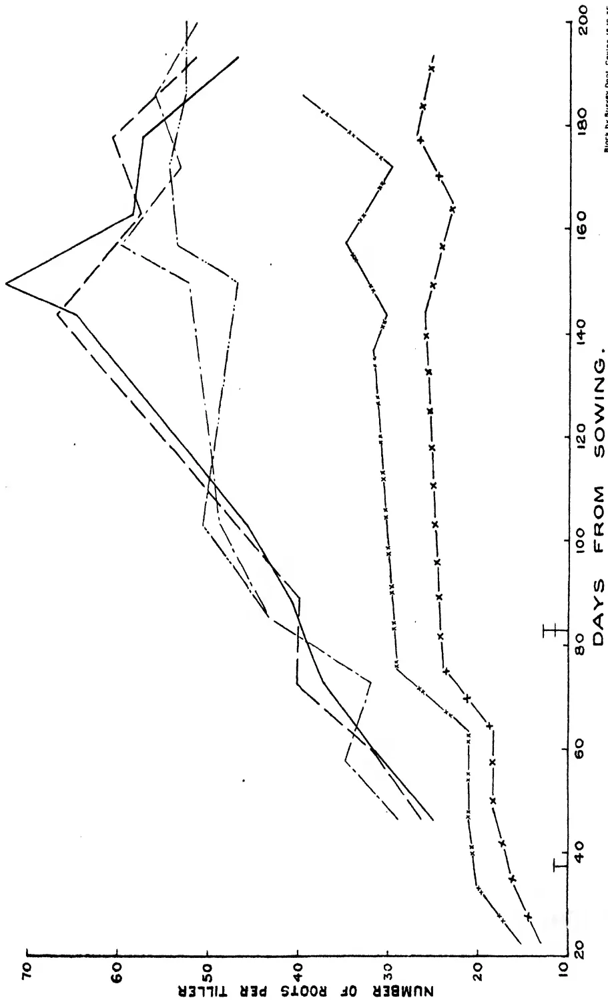
The graph plots the 'NUMBER OF ROOTS PER TILLER' on the y-axis (10 to 70) against 'DAYS FROM SOWING' on the x-axis (20 to 200). Four data series are shown: a solid line, a dashed line, a dash-dot line, and a line with 'x' markers. The solid line starts at ~15, peaks at ~65 at day 150, and ends at ~55. The dashed line starts at ~15, peaks at ~60 at day 150, and ends at ~50. The dash-dot line starts at ~15, peaks at ~60 at day 150, and ends at ~50. The 'x' line starts at ~15, peaks at ~25 at day 150, and ends at ~20. Vertical bars are at days 40 and 80.
| DAYS FROM SOWING | Solid Line | Dashed Line | Dash-Dot Line | 'x' Line |
|---|---|---|---|---|
| 20 | 15 | 15 | 15 | 15 |
| 40 | 25 | 25 | 25 | 20 |
| 60 | 35 | 35 | 35 | 22 |
| 80 | 40 | 40 | 40 | 23 |
| 100 | 45 | 45 | 45 | 24 |
| 120 | 50 | 50 | 50 | 25 |
| 140 | 55 | 55 | 55 | 25 |
| 160 | 60 | 60 | 60 | 25 |
| 180 | 65 | 60 | 60 | 25 |
| 200 | 55 | 50 | 50 | 20 |
Block by Survey Dept. Caylon, 15.10.36.
218were carefully cleaned. Records were made of the mean length of the longest root, the number of roots and the number of tillers. The roots were removed from the stems (actually they were pulled off whilst being counted) and were weighed after having been heated in a hot-air oven until there was no further loss in weight. All data were reduced to a "per tiller" basis and are shown in figs. 1-3. Each record is the mean of 12 readings, 2 from each of 6 plots.
Of the three sets of data—length, number and weight of roots—that which records number corresponds most nearly with the yield data, and it is in fact to the greater number of roots developed that the transplanted plant owes its superiority. It will be seen from the figures that all three characteristics increase up to flowering-time, after which the tendency is to decrease; individual deviations of unusual magnitude, such as that shown by the weight of the transplanted and manured series at 144 days may be attributed to errors of sampling. In weight, no treatment has any permanent superiority; in length, the two broadcast series lead throughout. This is only to be expected, since these series are undisturbed during growth, whereas the other series are uprooted once or twice, and at each uprooting the roots are broken. In number, however, the transplanted series assume the lead immediately after transplanting and maintain it throughout the whole life period; not only so, but the number of roots steadily increases up to flowering time, whereas the rate of increase of the broadcast series practically ceases some months after sowing. Thereafter, the roots of the broadcast plants increase in length and correspondingly in weight, but hardly in number, whereas new roots are continually being produced by the transplanted plants, which are nourished by twice as many roots during their life as are those that were broadcast. The broadcast and manured series shows that lesser advantage over the broadcast series that is indicated by the yield data, and in all the figures the effect of manuring is seen to be subordinate to that of treatment.
If we follow briefly the progress of the underground life of the plant, we shall see how this numerical superiority arises as a result of transplanting. The broadcast plants are sown as germinated seedlings; they anchor themselves in the mud
219
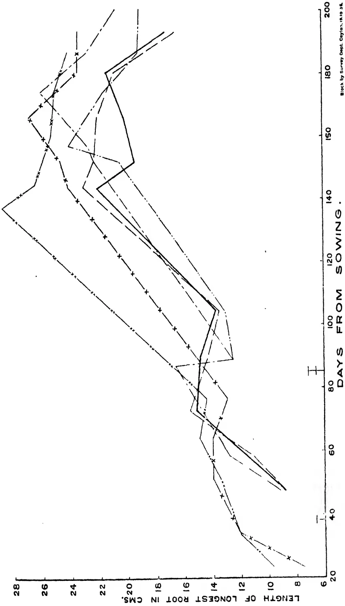
LENGTH OF LONGEST ROOT IN CMS.
DAYS FROM SOWING.
20 40 60 80 100 120 140 150 180 200
6 8 10 12 14 16 18 20 22 24 26 28
Black by Survey Dept. Caylon, 18.10.36.
Fig. 2
220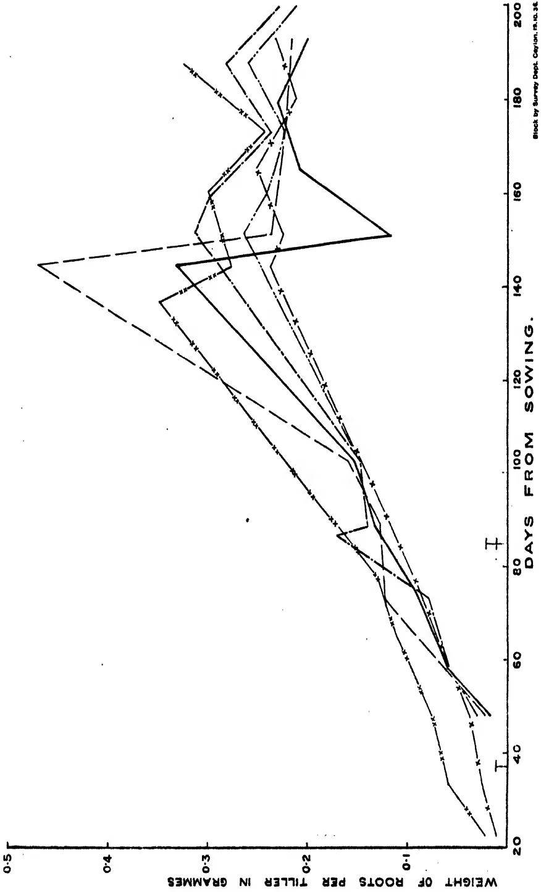
The graph illustrates the growth of roots per tiller in grams over a period of 200 days from sowing. The Y-axis represents the weight in grams, ranging from 0.0 to 0.5. The X-axis represents the number of days from sowing, ranging from 20 to 200. Several data series are plotted, each representing a different tiller or experimental condition. The lines show the progression of root weight over time, with some series showing a sharp increase in weight around 140 days. A vertical line is drawn at approximately 80 days, likely indicating a specific time point of interest or measurement.
| DAYS FROM SOWING | Series 1 (x) | Series 2 (+) | Series 3 (o) | Series 4 (x) | Series 5 (x) |
|---|---|---|---|---|---|
| 20 | 0.05 | 0.05 | 0.05 | 0.05 | 0.05 |
| 40 | 0.08 | 0.08 | 0.08 | 0.08 | 0.08 |
| 60 | 0.12 | 0.12 | 0.12 | 0.12 | 0.12 |
| 80 | 0.15 | 0.15 | 0.15 | 0.15 | 0.15 |
| 100 | 0.18 | 0.18 | 0.18 | 0.18 | 0.18 |
| 120 | 0.22 | 0.22 | 0.22 | 0.22 | 0.22 |
| 140 | 0.25 | 0.25 | 0.25 | 0.25 | 0.25 |
| 160 | 0.28 | 0.28 | 0.28 | 0.28 | 0.28 |
| 180 | 0.30 | 0.30 | 0.30 | 0.30 | 0.30 |
| 200 | 0.32 | 0.32 | 0.32 | 0.32 | 0.32 |
Block by Survey Dept. Ceylon, 19.10.36
221
TABLE II
YIELD RECORDS, YALA 1935
FIELD TRIAL ON ACRE PLOTS
| TREATMENT | YIELD IN Lb. | TOTAL | MEAN | M=100 | |||||
|---|---|---|---|---|---|---|---|---|---|
| A | B | C | D | E | F | ||||
| Broadcast .. | 3.50 | 8.00 | 6.00 | 4.25 | 6.37 | 3.00 | 31.12 | 5.19 | 80 |
| Broadcast and manured | 4.00 | 6.62 | 6.93 | 5.50 | 7.75 | 5.00 | 35.80 | 5.97 | 92 |
| Transplanted .. | 9.25 | 11.75 | 9.25 | 7.62 | 10.62 | 9.12 | 57.61 | 9.60 | 149 |
| Transplanted and manured | 12.00 | 16.00 | 13.50 | 10.25 | 11.12 | 9.50 | 72.37 | 12.06 | 187 |
| Double-transplanted | 2.62 | 5.50 | 3.31 | 2.03 | 1.50 | 2.25 | 17.21 | 2.87 | 44 |
| Double-transplanted and manured | 1.69 | 6.43 | 1.56 | 4.00 | 3.00 | 1.69 | 18.37 | 3.06 | 47 |
| Total .. | 33.06 | 54.30 | 40.55 | 33.65 | 40.36 | 30.56 | 232.48 | 6.48 | |
| Degrees of Freedom | Total Variance | Mean Variance | S. D. | Loge S. D. | |
|---|---|---|---|---|---|
| Blocks .. | 5 | 62.18 | |||
| Treatments .. | 5 | 405.37 | 81.07 | 9.004 | 2.2017 |
| Experimental Error .. | 25 | 32.61 | 1.305 | 1.142 | 0.1327 |
| Total .. | 35 | 500.16 | Z = | 2.0690 |
S.D. of 1 plot = 1.142 lb.
S.D. of 6 plots = 2.798 lb.
of the field and produce a root system from an area at the base of the culm which is rarely more than a quarter of an inch in length. The transplanted plants develop in the same way whilst they are in the nursery ; at the end of 6 weeks, however, they are pulled bodily from the nursery bed, and the majority of their roots broken in the process. (The effect can be seen in figs. 2 and 3, where a sudden decrease in both length and weight is recorded at the time of double transplanting). They are then thrust to a depth of one or two inches into the soft mud of the field plot. The result of this movement is not only to cause the existing broken roots to branch and renew themselves, but also to stimulate the production of new roots from the surface of the underground portion of the culm, which is now exposed to conditions suitable for the production of adventitious roots. Thus these plants have the advantage, which is retained throughout their life, of a root-producing surface which is perhaps four times as great as that of plants that have not been moved. The difference in the rate of root production was well illustrated in a few plants which were left overnight in a moist atmosphere immediately after having been removed from the field. Those from the transplanted plots had begun to develop a number of new roots by next morning, but the corresponding development from broadcast plants was negligible. Not only are the roots of the transplanted plants superior in number, but they appear to be more efficient, in that the new roots produced as a result of transplanting are fat and white, whereas the broadcast plants retain many of the brown flaccid roots produced by the young seedling. The roots of the broadcast plants are also crowded into a very small area, which may possibly interfere with their efficiency.
It is now possible to see how the transplanted plants continue to absorb food material after flowering, in spite of the fact that the total number of roots decreases during that period. The production of roots continues for a longer period than in the broadcast plants, and absorption during the post-flowering period is done by the roots developed during the later stages of the plants' growth.
The yields from the second trial are shown in table II. The results are statistically significant, and indicate that
223
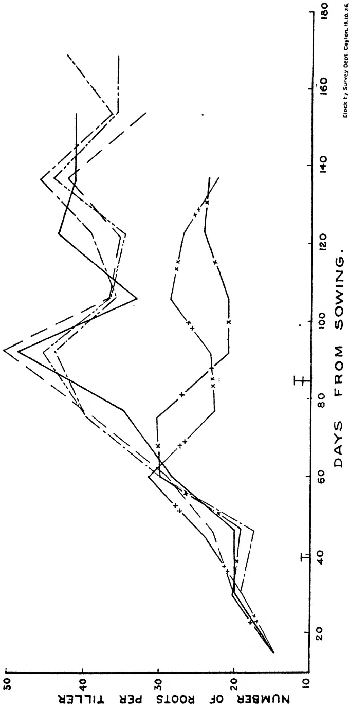
The graph displays the growth of roots and tillers over 180 days. The Y-axis represents the 'NUMBER OF ROOTS PER TILLER' (10 to 50), and the X-axis represents 'DAYS FROM SOWING' (20 to 180). The data is presented in several series, some with solid lines and some with dashed lines, indicating different experimental conditions or treatments. The lines show a general upward trend with significant fluctuations, particularly between 40 and 140 days.
| Days from Sowing | Roots per Tiller (Series 1) | Roots per Tiller (Series 2) | Roots per Tiller (Series 3) | Tillers per Tiller (Series 1) | Tillers per Tiller (Series 2) | Tillers per Tiller (Series 3) |
|---|---|---|---|---|---|---|
| 20 | 18 | 18 | 18 | 18 | 18 | 18 |
| 40 | 22 | 22 | 22 | 22 | 22 | 22 |
| 60 | 28 | 28 | 28 | 28 | 28 | 28 |
| 80 | 32 | 32 | 32 | 32 | 32 | 32 |
| 100 | 38 | 38 | 38 | 38 | 38 | 38 |
| 120 | 42 | 42 | 42 | 42 | 42 | 42 |
| 140 | 45 | 45 | 45 | 45 | 45 | 45 |
| 160 | 48 | 48 | 48 | 48 | 48 | 48 |
| 180 | 50 | 50 | 50 | 50 | 50 | 50 |
Block by Survey Dept. Caylon. 18.10.36.
Fig. 4
224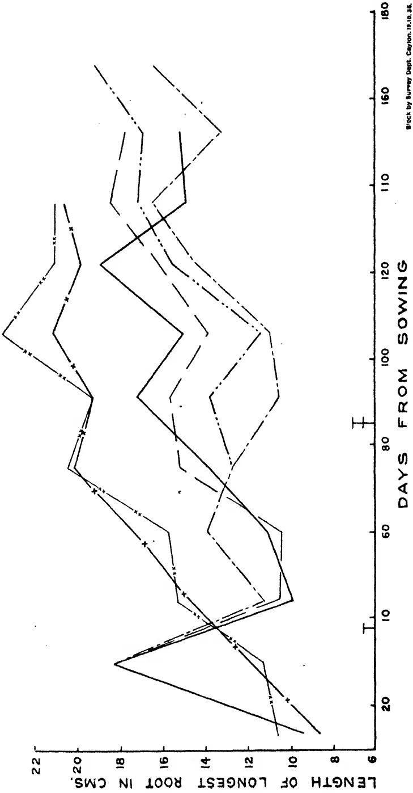
LENGTH OF LONGEST ROOT IN CMS.
DAYS FROM SOWING
180 160 110 120 100 80 60 10 20
22 20 18 16 14 12 10 8 6
Block by Survey Dept. Clayton, 19.10.36.
Fig. 5 225![Line graph showing the weight of roots per tiller in grams versus days from sowing. The graph features multiple data series represented by different line styles (solid, dashed, dash-dot) and markers (x, +). The x-axis is labeled 'DAYS FROM SOWING' with values 20, 40, 60, 80, 100, 120, 140, 160, 180. The y-axis is labeled 'WEIGHT OF ROOTS PER TILLER IN GRAMMES' with values from 0.02 to 0.13. The graph shows a general upward trend in root weight over time, with some series showing more pronounced fluctuations than others.](55673d17fe5699b02be4300dafd89d84_2_img.webp)
WEIGHT OF ROOTS PER TILLER IN GRAMMES
DAYS FROM SOWING
| DAYS FROM SOWING | Series 1 (Solid) | Series 2 (Dashed) | Series 3 (Dash-dot) | Series 4 (Solid with x) | Series 5 (Dashed with +) |
|---|---|---|---|---|---|
| 20 | 0.025 | 0.025 | 0.025 | 0.025 | 0.025 |
| 40 | 0.035 | 0.035 | 0.035 | 0.035 | 0.035 |
| 60 | 0.055 | 0.055 | 0.055 | 0.055 | 0.055 |
| 80 | 0.065 | 0.065 | 0.065 | 0.065 | 0.065 |
| 100 | 0.060 | 0.060 | 0.060 | 0.060 | 0.060 |
| 120 | 0.075 | 0.075 | 0.075 | 0.075 | 0.075 |
| 140 | 0.085 | 0.085 | 0.085 | 0.085 | 0.085 |
| 160 | 0.105 | 0.105 | 0.105 | 0.105 | 0.105 |
| 180 | 0.125 | 0.125 | 0.125 | 0.125 | 0.125 |
Block by Survey Dept. Ceylon. 12.10.36.
226transplanting, with or without manure, is better than any other treatment, and that broadcasting is better than double-transplanting. The latter result, which is the reverse of that obtained in the last trial, is easily explained. The second trial was carried out during the yala or shorter season, with a variety of paddy which matures in months, or nearly 6 weeks less than the variety grown in the maha season. In consequence, the plants in the double-transplanted series had just recovered from their second move and were beginning to tiller when they began to flower, and the earheads were poor. Even then, the yield per plant was better than in the broadcast series, as will be seen from the following table, although it does not compare with that of the singly-transplanted plants.
| Plants per sq. yd. |
Yield per plant in lb. |
||
|---|---|---|---|
| Broadcast | .. .. | 119 | 0.0009 |
| Broadcast and manured | .. .. | 123 | 0.0010 |
| Transplanted | .. .. | 64 | 0.0031 |
| Transplanted and manured | .. .. | 58 | 0.0043 |
| Double-transplanted | .. .. | 39 | 0.0015 |
| Double-transplanted and manured | .. .. | 37 | 0.0017 |
The conclusion is that double-transplanting will probably not be worth while with a short-aged crop; if the second transplanting be hastened in order to allow of a sufficient period before flowering, then the period spent in each nursery plot will probably be too short to make the double move worth while.
It will be noticed from the above table that while the number of plants per square yard is approximately the same as in the last trial for the transplanted series, that for the broadcast series is more than twice as great; the increase is a result of the general precautions taken against crab attack during this season.
The root data for the second trial are shown in figs. 4-6 and bear out the results previously obtained. The weight diagram is very irregular, but that recording length shows again to the advantage of the undisturbed broadcast plants, whilst that recording number shows equally clearly the greater number of roots developed by the transplanted series. Observations made on the plants during the collection of data bear out those of the previous season.
227
TABLE III
TRANSPLANTING vs. SOWING
CENTGENER PLOTS, YALA 1935
| TREATMENT | YIELD IN OZ. | |||||||||||||
|---|---|---|---|---|---|---|---|---|---|---|---|---|---|---|
| A | B | C | D | E | F | G | H | J | K | L | M | TOTAL | ||
| MEAN | M=100 | |||||||||||||
| Transplanted | 9.25 | 11.50 | 13.50 | 7.50 | 11.50 | 8.00 | 7.00 | 11.50 | 11.00 | 11.00 | 13.50 | 9.00 | 124.25 | 147 |
| Sown | 4.25 | 4.50 | 3.75 | 4.50 | 4.00 | 3.25 | 3.75 | 3.50 | 4.00 | 3.25 | 3.50 | 3.25 | 45.50 | 54 |
| Total | 13.50 | 16.00 | 17.25 | 12.00 | 15.50 | 11.25 | 10.75 | 15.00 | 15.00 | 14.25 | 17.00 | 12.25 | 169.75 | 7.1 |
| Degrees of Freedom | Total Variance | Mean Variance | S. D. | Log. S. D. | |
|---|---|---|---|---|---|
| Blocks | 11 | 26.53 | |||
| Treatments | 1 | 258.40 | 258.40 | 16.07 | 2.7768 |
| Experimental Error | 11 | 28.38 | 2.580 | 1.606 | 0.4736 |
| Total | 23 | 313.31 | Z = | 2.3032 |
point is 1.1333, is significant
S.D. of 1 plot = 1.606 oz.
S.D. of 12 plots = 5.564 oz.
228
TABLE IV
TRANSPLANTING vs. SOWING
SINGLE PLANT RECORDS
| TREATMENT | FIELD IN OZ. | TOTAL | MEAN | M=100 | |||||||||||
|---|---|---|---|---|---|---|---|---|---|---|---|---|---|---|---|
| A | B | C | D | E | F | G | H | J | K | L | M | ||||
| Transplanted | 0.103 | 0.146 | 0.150 | 0.084 | 0.137 | 0.095 | 0.092 | 0.149 | 0.143 | 0.122 | 0.190 | 0.068 | 1.479 | 0.123 | 130.4 |
| Sown | 0.106 | 0.054 | 0.049 | 0.063 | 0.051 | 0.069 | 0.040 | 0.052 | 0.051 | 0.155 | 0.056 | 0.044 | 0.790 | 0.066 | 69.6 |
| Total | 0.209 | 0.200 | 0.199 | 0.147 | 0.188 | 0.164 | 0.132 | 0.201 | 0.194 | 0.277 | 0.246 | 0.112 | 2.269 | 0.095 | |
| Degrees of Freedom | Total Variance | Mean Variance | S. D. | Loge S. D. | |
|---|---|---|---|---|---|
| Blocks | 11 | 0.0127 | |||
| Treatments | 1 | 0.0208 | 0.0208 | 0.1442 | 2.0634 |
| Experimental Error | 11 | 0.0129 | 0.0012 | 0.0343 | 4.6261 |
| Total | 23 | 0.0464 | Z = | 1.4373 |
S.D. of 1 plot = 0.0343 oz.
S.D. of 12 plots = 0.1144 oz.
The general conclusion drawn from these trials is that the prime factor on the superiority of transplanted over broadcast plants is that the former have been root-pruned during transplanting and thus stimulated to produce a larger and more vigorous root system which is reflected in an increased yield. It will be remembered that, owing to the depredations of land crabs, the broadcast plants in the first trial were as widely spread, on the average, as the transplanted ones, yet they did not produce a correspondingly good yield, and the inference was that increased root-room was not the factor responsible for the success of transplanting. This conclusion is supported by the fact that thinning subsequent to broadcasting does not result in a significantly higher yield. Further and more conclusive evidence on this point was obtained by a subsidiary experiment carried out during the same season as the second trial. In this experiment, two treatments were planted—one in which seedlings were transplanted, 3 to a hill, hills 6 inches apart both ways, and the other in which germinated seeds were sown, again 3 to a hill and hills 6 inches apart. Each plot contained 144 plants, of which the inner 100 were harvested, and there were 12 plots of each treatment, randomised within one banded field. Thus the plants of each treatment had the same room for root development, and the only difference between the treatments was that in one case the plants had been moved, and in the other case not. The yield figures are given in table III, and are striking—they show a superiority of the transplanted plants of nearly 200 per cent. It was found, however, that the sown plots had suffered more casualties during growth than those transplanted, and the results were re-calculated on the basis of mean yield per plant. They appear in table IV, are significant, and still show an increase of yield of 100 per cent. in the transplanted plots over those sown. There seems no doubt that this increase is due to the stimulus of transplanting.
At harvest, in both major trials described in this paper, sample plants were removed for examination of earhead development. Counts were made of plants per hill, tillers per plant, number and weight of grains per earhead. The data are
230TABLE V| TREATMENT | Average tillers per plant | Average grains per tiller | Average weight per earhead (gms.) | Average weight per seed (gms.) | Average plants per hill | Relative yields per sq. yd. (gms.) | Order of merit | Order of merit from field data |
|---|---|---|---|---|---|---|---|---|
| Maha | ||||||||
| Broadcast .. | 2.3 | 73.8 | 1.8 | 0.024 | 1 | 199 | 5 | 6 |
| Broadcast and manured .. | 1.8 | 63.5 | 1.5 | 0.024 | 1 | 167 | 6 | 5 |
| Transplanted .. | 1 | 49.0 | 1.2 | 0.026 | 2.7 | 253 | 2 | 2 |
| Transplanted and manured .. | 1 | 57.6 | 1.5 | 0.026 | 2.6 | 296 | 1 | 1 |
| Double-transplanted .. | 1.6 | 90.2 | 2.2 | 0.026 | 1.7 | 252 | 3 | 4 |
| Double-transplanted and manured .. | 1.6 | 74.6 | 1.9 | 0.026 | 1.8 | 236 | 4 | 3 |
| Yala | ||||||||
| Broadcast .. | 1.4 | 49.0 | 1.2 | 0.025 | 1 | 202 | 4 | 4 |
| Broadcast and manured .. | 1.7 | 50.0 | 1.3 | 0.027 | 1 | 274 | 3 | 3 |
| Transplanted .. | 1 | 62.2 | 1.7 | 0.028 | 2.5 | 282 | 2 | 2 |
| Transplanted and manured .. | 1 | 71.4 | 2.0 | 0.028 | 2.5 | 290 | 1 | 1 |
| Double-transplanted .. | 1.1 | 62.5 | 1.3 | 0.022 | 2.1 | 121 | 6 | 6 |
| Double-transplanted and manured .. | 1.2 | 63.0 | 1.4 | 0.022 | 2.3 | 129 | 5 | 5 |
shown in table V, and it will be seen from the final columns that the results are in reasonable conformity with those obtained in the field. There are several points of interest in the table. One is that the weight of grain is affected by treatment. In both trials the transplanted plots have produced a heavier grain than the broadcast plots, but the most striking difference is in the double-transplanted plots of the second trial. It will be remembered that the poor yield of these treatments was attributed to the short interval between the second transplanting and flowering; the result was apparently to produce a smaller and lighter grain and consequently a lower yield. Comparisons between data collected in the two seasons are not possible, since different varieties were grown; it appears from both, however, that losses undoubtedly do occur on transplanting, and that the practice of putting in several seedlings per hill is sound. On the other hand, it would be of interest to know what effect single seedlings would have on subsequent tillering, and whether the saving affected by planting single seedlings would be neutralised by plants lost in the seedling stage. It is hoped to be able to answer those questions from experiments now in hand. Further experiments are desirable before the effect of treatment on size of earhead can be determined with accuracy.
An experiment to determine the root development of paddy plants under different conditions is reported by Sethi (1), but the results of the two investigations are not comparable because the conditions of the experiments were different. Sethi prepared his field plots by first excavating trenches to a depth of 6 feet and then replacing the soil, and so created artificial conditions; these conditions made the subsequent examination of plants much easier, but it appears to the writer that they took away much of the practical value of the trial. It is also doubtful whether the different treatments would be equally affected by the changed conditions of growth. Nevertheless, the experiments agree in determining that the roots attain their maximum length about flowering time and that only a very small proportion of roots attain a great length. Sethi argues, from the fact that the roots become flaccid after flowering, that their work is nearly finished and that, in consequence,
232food elements should be provided early in the plant's life ; that may be so with sown plants, but the present series of investigations has shown that when the plants are transplanted, the period of absorption is extended and that it is immaterial whether fertilisers are applied at sowing time or at intervals during growth.
It is with the greatest pleasure that I acknowledge my indebtedness to Mr. K. D. S. S. Nanayakkara. As foreman of the paddy area, he was not only in general charge of the cultivation of the experiment, but had also the responsibility of taking the samples without the subsequent pleasure of working out the results.
1. An experiment has been carried out to determine the effect on root development of different systems of cultivation.
2. It is suggested that the increased yield produced by a transplanted crop is the result of the stimulus received when the roots are automatically pruned during transplanting, which is followed by the development of a root system of increased efficiency.
3. It appears that increase in size of grain is at least partly responsible for the increased yield, but further investigations are necessary to study the relation between yield and earhead formation.
1. Sethi, R. L.—Root Development in Rice under different conditions of growth. Mem. Dept. Agric. Ind. Bot. Ser. XVIII., 1929, p. 57.
2. Haigh, J. C. and Joachim, A. W. R.—Studies on Paddy Cultivation—III. The effect of system of cultivation on the yield of paddy. Tropical Agriculturist LXXXIII, 1934, p. 151.
3. Haigh, J. C. and Joachim, A.W.R.—Studies on Paddy Cultivation—V. (a) The effect of time of application of the fertiliser. Tropical Agriculturist LXXXV, 1935, p. 269.
In all figures, the treatments are represented as shown hereunder :
| Broadcast | — — — × — — — |
| Broadcast and manured | — — — × — — — × × — — — |
| Transplanted | — — — — — |
| Transplanted and manured | — — — — — |
| Double-transplanted | — — — — — |
| Double-transplanted and manured | — — — — — |
Fig. 1. Maha season. The average number of roots per tiller.
Fig. 2. Maha season. The average length of the longest root.
Fig. 3. Maha season. The average weight of roots per tiller.
Fig. 4. Yala season. The average number of roots per tiller.
Fig. 5. Yala season. The average length of the longest root.
Fig. 6. Yala season. The average weight of roots per tiller.
234K. J. ALEX. SYLVA, F.R.H.S.,
SUPERINTENDENT OF PARKS, COLOMBO MUNICIPALITY
THIS species belongs to the Vanda tribe and is cultivated as a terrestrial as well as an epiphyte in Java, the Federated Malay States and Cochin China, whence it comes.
It was introduced into Ceylon by the authorities of the Royal Botanic Gardens, Peradeniya, about 1800, but established itself securely only in recent years. Perhaps this was due to the fact that the way to grow this was not well understood by the amateur orchid grower. The half dozen species which make up Grammatophyllum genus are amongst the most choice in cultivation and this plant in particular is known as the "Queen of Orchids" on account of its graceful and majestic appearance both in and out of bloom. It is the largest orchidaceous plant known.
This plant develops straggling pseudo-bulbs (stems) from a compact base. They reach six feet or more and not infrequently, in well-established specimens, as long as ten feet. These stems are fairly large, as thick as a stout sugar cane. Their upper portion is clothed with strap-shaped sheathing leaves often reaching two to two and half feet in length arranged in two ranks and bending in a graceful sweep.
The inflorescence often reaches six feet or more. It is erect and rises from the swollen base of mature stems with numerous flowers widely spaced on the panicle on large stalks (the ovaries).
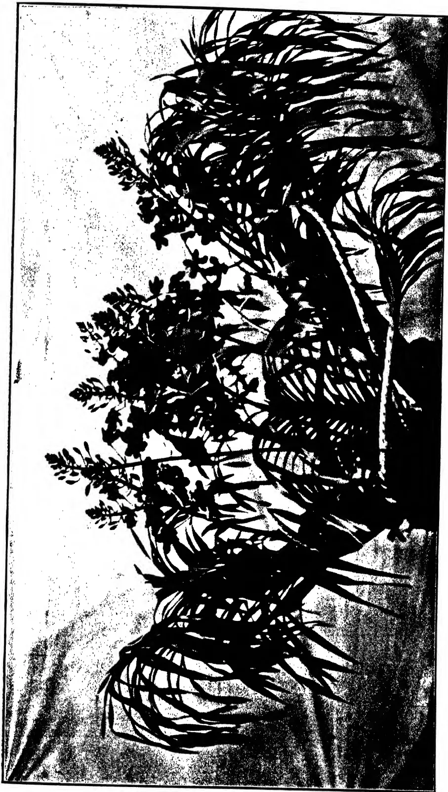
A high-contrast, black and white illustration of a plant, identified as Grammatophyllum speciosum. The plant is shown in a dynamic, slightly angled perspective. It features a dense cluster of long, narrow, grass-like leaves at its base and along its stems. Several tall, slender flowering stalks rise from the foliage, each topped with a cluster of small, dark, rounded flowers. The background is a light, textured grey, providing a stark contrast to the dark, silhouetted plant. The overall style is reminiscent of a woodcut or a high-contrast photograph.Grammatophyllum speciosum
This image is a blank white page. It contains several small, dark specks which appear to be scanning artifacts or dust particles. There is no text, handwriting, or printed content on the page. 235The flower is quite six inches across when it expands to its full extent, the sepals and petals being almost of the same size, broad-oblong, slightly wavy at the margins, with reddish-brown blotches and specks on an ochre-yellow background. The comparatively small tri-lobed lip is pale yellow with reddish-purple streaks, the front lobe being slightly furry. The flowers borne on the lower part of the panicle are invariably found to have the column and labellum adherent and some flowers in a deformed state.
The two main principles that govern the best method of cultivation are sound drainage and ample sun-heat, without which the plant will fail to establish itself and eventually rot away. As the inflorescence has no tendency to droop, much of its beauty is hidden from view if it is treated purely as an epiphyte and cultivated on high trees. Excellent results have been obtained from pot and ground culture provided the treatment given meets its requirements both as terrestrial and epiphyte.
Small divisions containing two or three young pseudo-bulbs with roots on the surface may be severed from the parent plant for propagation. These should be potted separately in a compost of half-decayed leaves, charcoal, bricks, bones, coarse sand and lumps of turfey soil, special care being taken not to injure the "eyes" or buds at the base of the pseudo-bulbs when potting. When the plant is in active growth, white rootlets will often be observed on the surface of the compost, a sign that the plant requires more room for free development.
Plants thrive best in specially prepared beds on the ground having plenty of sunshine and natural drainage. An ideal bed can be formed by digging a circular pit, four feet in diameter and three feet deep. The lower part of this pit, to a depth of one foot should be filled with drainage material and the rest made up to the surface with the compost. Three or four pieces of jak or similar hard-wood logs (18" high) should be buried upright in the compost with about six inches left bare for providing an anchorage for the plants. The outer margin of the bed should be surrounded by a cabook or brick ledge to about a
236foot high, the intervening space being filled in with coarse sand, leaf-mould, lumps of cow-dung, chips of hard wood, bones and charcoal. More leaf mould and sand should be placed over the root system and its surroundings. Spine-like rootlets appear on the surface in the course of a few months, and cow-dung, preferably in liquid form should then be given at least once a week, and later when the clumps have matured and established themselves with stems of about five feet or more in length, the supply of moisture should be reduced to two dressings a week to encourage the production of flowers. In the case of plants grown in large tubs, especially when roots have penetrated into the ground and become "pot-bound," the whole tub should be lifted off the ground and placed on a hard surface or plank to check root growth and to hasten blooming, but no reduction of moisture at the roots should be made at this time.
When the plant is treated as an epiphyte care should be taken to see that the tree fork selected for its reception is low and of a permanent nature with an eastern aspect. The fork should be well surrounded with wooden battens so as to hold a fair supply of decaying leaves, chips of wood and husk. Till the plant is well rooted a fair supply of moisture at the roots will be required as the natural drainage of this aerial position is freer than in the case of those terrestrially treated.
Save for its susceptibility to rotting of the young pseudo-bulbs when the drainage is faulty the plant is fairly immune to disease. It is a gross feeder with a strong growing habit and should be given plenty of liquid manure to assist the growth of the pseudo-bulbs.
237J. C. DRIEBERG, Dip. Agric. (Poona),
DEPARTMENT OF AGRICULTURE
FROM the earliest times the world's market requirements of cinnamon have been met by Ceylon.
Prior to the discovery of the route round the Cape and the arrival of European nations to the Island, the trade in cinnamon was conducted by the Arabs who took the produce to India, Persia and Southern Europe. It is recorded that a pound of Ceylon cinnamon commanded as high a price as £8 in Rome when the spice was a luxury. Cinnamon at this time was growing in a wild state, and it was not till about the end of the eighteenth century that its systematic cultivation was undertaken by the Dutch. Ribeiro in his History of Ceilao states that of the 21,873 villages subject to the king of Portugal "the jungle of more than 16,000 of these is covered with cinnamon" and excluding the marshy plains the "rest of the lands from Chilao past the Kingdom of Candia and the frontiers of Uva as far as two leagues beyond the pagoda of Tanavare were all cinnamon." The Portuguese themselves took no part in the collection of the wild cinnamon bark which they received as an article of tribute from the Sinhalese sovereign for the protection they provided to the Island. In 1506 when the capital was at Kotte the king undertook to supply the Portuguese with 25,000 lb. of bark annually. The trade now passed entirely into the hands of the Portuguese who introduced cinnamon into the new world and the demand for it increased. When the Dutch arrived in 1656 they found bushes of cinnamon about Colombo and Negombo. Trade was considered by them to be small and they immediately set about to develop it. After a little over seventy-five years the amount of cinnamon bark exported from the Island was 600,000 lb., and by 1750 it rose to
238700,000 lb. All this quantity was collected in the forests by the people of the country and paid to the government in the form of a tribute. The price of cinnamon at this time was 8s. 4d. to 17s. 8d. a pound.
In 1767 the Dutch Governor, Falk, being alive to the possibility of cultivating cinnamon began small experiments in his garden at Mutwal in Colombo and three years later established the Government plantations of Marandahn, Welisara and Morotoo near Colombo and Ekelle and Kadirana near Negombo. Lands were given to the people for the cultivation of cinnamon but the strictest regulations were enforced for the proper care of the plantations and the handling of the crop as the commodity was made a government monopoly. Only a definite quantity sufficient to meet the requirements of the market was exported and any surplus of crop was destroyed.
The British who arrived in 1796 found the crop cultivated only in a limited area, mainly in the coastal belt between Negombo, north of Colombo, and Tangalle in the extreme south of the Island. The peelers had to bring in each year the quantity of bark notified by government and were paid in kind for the work. It was not till after 1829 that they were paid in cash. At a later stage when the plantations and jungles of the Western and Southern Provinces failed to yield the usual number of bales the peelers were driven further up the country and spread themselves through the Seven Korales (Kegalle district) and the Central Province whence the wild spice was brought to make up the total quantity. This produce of the hill country was termed Corle (Korale) cinnamon to distinguish it from the bark of better quality obtained in the coastal region.
In 1833 the government gardens had fallen out into a state of neglect; the quantity of cinnamon harvested had declined and both quality and price had depreciated. Within the next eight years the lands maintained by people for the Government were abandoned and with these the government gardens with the exception of the one at Marandahn were sold, and the government cinnamon department abolished in 1841. The prohibitive export duty which had existed from the days of the Dutch was reduced in 1843, so that heavy shipments were exported
239in this year ; shortly afterwards the duty was finally abolished. Up to this period the entire world's requirements of cinnamon were met by Ceylon. The average annual exports for the period of five years ending 1841 was 452,000 lb. In 1846 the figure rose to 530,000 lb. and in 1866 to 825,000 lb. Hitherto it was only the best bark in the form of quills that was exported. Inferior bark, scrapings and fragments of chips were used on plantations for the distillation of cinnamon oil. But in 1867 it was felt that it might pay better to send the chips also into the market. The total exports of cinnamon immediately rose to one million pounds and 1859 amounted to over two and a half million pounds of quills and chips. This was followed by a considerable decrease as the average for the five-year period ending 1871 was only million pounds, and for the period ending 1876 it fell to million pounds. The price of cinnamon at this period was 2s. 6d. to 3s. a pound. At this time a substitute for cinnamon began to find its way into the market. Cassia bark had been known from the earliest days but it had not taken the place of cinnamon for the purpose to which the latter was particularly suitable. It sometimes happens that an article of poorer quality finds favour in the trade at the expense of the genuine commodity whose price is considered excessive. And so it came about that Cassia bark or Cassia lignea by which name it is better known assumed a place in the London market. The quantity of cassia which is reported to have been marketed in 1879 amounted to million pounds while in 1891 the amount was 9 million pounds. Cassia is closely related to cinnamon since both belong to the same genus. The botanical name of cinnamon is Cinnamomum zeylanicum while that of cassia is Cinnamomum cassia.
It is both interesting and instructive to observe what occurred in Ceylon at this juncture. In 1881-1882 the exports of cinnamon from the Island consisted of 1,600,000 pounds of quill bark and 400,000 pounds of chips. In 1885-1886 the exports comprised 1,630,000 pounds of quills and 550,000 pounds of chips. The price of cinnamon had now declined to almost half of what it was five years earlier. The situation was a serious one and led some of the larger growers of the crop to consider the necessity of taking action to improve the
240market position of Ceylon cinnamon. At the inaugural meeting of the "Ceylon Agricultural Association" held in June, 1882, a committee was appointed to report on the subject of the large exportation of chips which had probably been responsible for the fall in prices. The suggestion of this committee was that all members of this "Association who are interested in the cultivation of cinnamon will join in doing their utmost to stop scraping and chips, say, for a period of 3 years save for the purpose of their own stills and those of their constituents." Fears were entertained in some quarters that the withdrawal of chips from the market would be replaced by the cheaper Cassia bark from China. It was expected however that the market would give preference to the superior article, namely, cinnamon quills. At a later date in 1889 a meeting of cinnamon estate proprietors and managers was called to consider the same subject, and those present bound themselves to withhold the export of chips and appealed to all cultivators to join in the movement to improve the condition of the market. Little interest appears to have been taken by the majority of cultivators and as the obligation imposed upon them failed to be regarded, at the next meeting held in 1891 it was decided to abandon the project. In 1902 the exports comprised 2,555,313 pounds of cinnamon in bales (in the form of quills) and 1,763,679 pounds of chips, a ratio of 1 : 1.4 of chips to quills. The London price was so low at this stage as to leave only a small margin of profit to the cultivator.
The acreage under cinnamon in the Island at this time was 45,000 acres. An interesting fact regarding the area cultivated with cinnamon requires to be noted. Within a space of 20 years between 1890 and 1911 the acreage in the Colombo and Negombo districts had been reduced from 35,000 acres to 25,000 acres, while extension of planting in the Southern Province increased the acreage there from 3,000 to 18,000. This may have a bearing upon the quality of cinnamon as will be explained later. It was also thought that the market might be affected by the inclusion of wild cinnamon in the bales of plantation produce, and in 1900 a Customs regulation required that the exports of wild cinnamon should be declared separately from those of cultivated cinnamon. Thus the Customs returns
241show the exports of the two products separately from this year. In 1900 the value of wild cinnamon exported was £620 10s., in 1901 it was £81 18s. and in 1902 amounted to £72 18s. From 1903 to 1906 the value varied between £2 13s. and £4 and after the latter date no differentiation between wild and plantation cinnamon is shown. A further attempt to prohibit the export of wild cinnamon was made within recent years as it was considered that the downfall of the market was due to adulteration. A regulation to this effect was about to be enforced at the end of last year but was withheld.
The only cultivated plant which yields the cinnamon of commerce is Cinnamomum zeylanicum (Sinhalese kurundu), which is a moderate sized tree common up to an elevation of 2,000 feet. There are, however, four other species of Cinnamomum which are endemic to this Island, viz., C. multiflorum (Sinhalese wal or mal kurundu) a small tree common up to 3,000 feet; C. ovalifolium a small tree rather common in forests above 4,500 feet; C. litesuefolium (Sinhalese kudu kurundu) a large tree rare in the mountain zone; C. citriodorum (Sinhalese pengiri kurundu) very rare between 1,000-2,000 feet. Of the cultivated species C. zeylanicum there are at least six recognised types: "typicum verum" is known in Sinhalese as peni—, rasa—, pat— or mapat kurundu; the others being naga, penimiris, weli, sewel and kahata kurundu. One or other of these may be found mixed in a plantation, the commonest being weli kurundu.
In 1890 the area under cinnamon in the Western Province comprised 13,000 acres in the Colombo district, 19,000 acres in the Negombo district and 3,000 acres in the Kalutara district. In the Southern Province cinnamon is cultivated mainly in the Galle district. In a period of 20 years between 1890 and 1911 some 10,000 acres under cinnamon in the Western Province were replaced by coconuts, and in the next 25 years a further area of 15,000 acres was similarly affected. During the earlier period planting in the Southern Province took place to the extent of approximately 15,000 acres although this
242figure was reduced by 3,000 acres during the later period. The total decrease in the area under cinnamon during the past 45 years has been 14,000 acres.
The following figures show the approximate acreages under cinnamon in the Island in past years :—
| 1890 Acres |
1911 Acres |
|
|---|---|---|
| Western Province .. .. | 35,000 | 25,000 |
| Southern Province .. .. | 3,000 | 18,000 |
| Central Province .. .. | 500 | 100 |
| Sabaragamuwa .. .. | 400 | 700 |
| North-Western Province .. .. | 200 | 150 |
| Other .. .. | — | 500 |
| 39,100 | 44,450 |
The acreage at present is estimated to be only 25,000 acres of which 15,000 acres are in the Southern Province and 10,000 acres in the Western Province.
The quantities and values of exports for particular periods during the past 54 years are as follows :
| Total exports Million lbs. |
Value Million Rs. |
|
|---|---|---|
| 1881-1889 .. .. | 2.16 | 1.08 |
| 1890-1898 .. .. | 3.13 | 1.17 |
| 1899-1912 .. .. | 5.42 | 2.56 |
| 1913-1923 .. .. | 5.1 | 1.9 |
| 1924-1933 .. .. | 4.9 | 2.87 |
| 1934 .. .. | 5.0 | 1.16 |
| 1935 .. .. | 5.2 | 1.49 |
The following were the prices current during the last few years :—
| Per cwt. | ||
|---|---|---|
| Quills Rs. 126 |
Chips Rs. 20 |
|
| 1926-1929 .. .. | 31 | 8 |
| 1930-1933 .. .. | 33 | 6½ |
The quantities of quills and chips exported were :
| Quills cwt. |
Chips cwt. |
Ratio of Chips to quills |
|
|---|---|---|---|
| 1890-1898 .. .. | 19,800 | 8,260 | 1 : 2.3 |
| 1899-1912 .. .. | 27,300 | 21,090 | 1 : 1.3 |
| 1913-1923 .. .. | 29,000 | 16,600 | 1 : 1.7 |
| 1924-1933 .. .. | 35,100 | 9,100 | 1 : 3.8 |
| 1934 .. .. | 38,200 | 6,100 | 1 : 6.2 |
| 1935 .. .. | 38,900 | 7,500 | 1 : 5.1 |
During the period of 25 years 1899-1923 the proportion of chips was inordinately high but in subsequent years the ratio of chips to quills has been greatly reduced.
The exports of cinnamon from Ceylon in 1935 were distributed as follows :
| Total cwt. |
Quills cwt. |
Chips cwt. |
|
|---|---|---|---|
| Europe .. .. | 19,870 | 16,330 | 3,540 |
| Central and South America | 18,590 | 17,590 | 1,000 |
| U.S.A. and Canada .. | 3,745 | 3,720 | 25 |
| Australia, New Zealand and South Africa .. |
2,950 | 195 | 2,755 |
The largest importing country was Mexico which took 12,300 cwt. followed by Spain with 6,400 cwt. Both countries dealt in quills only. Next came the United Kingdom and Germany which imported 4,700 cwt. and 4,300 cwt. respectively. The former took 2,300 cwt. of quills and 2,400 cwt. of chips. The United States followed with 3,500 cwt. of quills, and Australia with 115 cwt. of quills and 2,100 cwt. of chips. Eight other countries each imported from 1,000-2,000 cwt. of cinnamon.
The quality of cinnamon bark is affected by two conditions, namely the nature of the soil and the position of the bark on the stem. It is a recognised fact that cinnamon bark of the finest quality is obtained only on white sandy lands and that when grown on other types of soil such as laterite (or cabook) and on stiffer soils of higher elevations, the quality both physically and chemically is much affected. In the latter case when bushes are coppiced the shoots which take longer to come up are coarser in texture.
Bark peeled from the middle of the bush is superior to that obtained from the outer shoots. So also is the bark taken off the middle portion of a branch of finer quality than that removed off either the upper or lower ends of a branch. Bark off the top end is of second quality while that taken from the base or thickest end is inferior. The possible causes of the deterioration of quality and of the depreciation of the market for Ceylon cinnamon may be summarised as follows :
The cinnamon industry of Ceylon which has been in existence for a little over a century and a half since its establishment about the year 1770 is beset with difficulties which threaten the unique position it has held in the commerce of the Island. Prices have fallen so low as to make it scarcely worth the trouble of large growers to cultivate and market their crops. On the other hand smallholders who depend solely upon this commodity are obliged to maintain an interest and get whatever the market offers for their produce. Though the total exports of cinnamon during the past ten years show an increase in quantity, the value of these has declined from nearly Rs. 4½ millions to 1½ millions per annum.
A new circumstance which threatens further danger to the cinnamon trade of Ceylon is the attempt being made by a foreign country in South America to develop an industry of its own by offering a substantial premium to the first grower in Columbia who successfully raises a plantation of cinnamon. In addition a like sum will be spent on investigational work to develop an industry. South and Central American countries take somewhat over 40 per cent. of Ceylon's exports of cinnamon, Mexico alone importing 27 per cent. of the total exports annually.
The whole subject is one of complexity and merits special investigation from both the agricultural and economic aspects before an opinion can be hazarded as to the cause of the decline of an industry which has held a place of honour in the economic progress of the Island.
245E. J. LIVERA, B.Sc., Agric. (Lond.), Dip. Agric. (Wye),
DIVISIONAL AGRICULTURAL OFFICER, SOUTH-WESTERN
THE available records for cotton cultivation at Maho are as follows :
| Season | Area | Yield |
|---|---|---|
| 1930-31 | .. 11 acres | .. 40 cwt. |
| 1931-32 | .. 19 acres | .. 28½ cwt. |
| 1932-33 | .. 16 acres | .. 19 cwt. |
| 1933-34 | .. 8 acres | .. Ploughed up as growth was too leafy |
| 1934-35 | .. 8 acres | .. 32 cwt. |
These yields were received by the ordinary tillage methods, using the plough and disc-harrow for preparing the soil. Intercultivation was done by the Plant Junior cultivator. No fertilisers were used. According to the above figures cotton has been cultivated at Maho with any degree of success only once in four years.
The low yields in the other three years are accounted for by one or other of the following reasons :—
(a) Heavy rains in October, November and December. This was particularly so in these months in 1933, when the rainfall was 15.29, 18.39 and 3.61 inches respectively, with the result that the crop was just a mass of leaves.
(b) Heavy showers in January and/or February. This causes much boll-shedding, e.g., in 1932 February, there were three occasions upon which there were heavy downpours amounting to 2.55, 2.39 and 2.78 inches, respectively, during a 24-hour period. In 1933 there was rain both in January and in February.
In 1931 although there was rain in January, February was dry with a total fall of 0.32 inches. The crop that year was consequently good. In 1935 there was only 0.62 inches
246in January and a single fall of 1.82 inches in February. The 1934-35 crop also had the advantage of less rain from October to December. As a result the 1934-35 crop was the best so far secured.
Heavy showers in January and/or February also make the plant continue its vegetative growth for a longer period. This was specially noticed in 1931-32 when heavy showers fell in February causing boll-shedding, and a pick was obtained again in August after the April and May rains. The pick from the 1931-32 crop 19 acres in extent was 10 cwt. in March, 3 cwt. in April, 2 cwt. in May and 10 cwt. in August.
These results would indicate that for the successful cultivation of cotton, one should be sure of a rainfall not exceeding 20 inches in the months of October, November and December. The rainfall in January should not exceed two inches and be well distributed while February should be practically dry.
247THE method of hybridization has been raised to the status of a science only since 1900, when the laws of inheritance discovered by Mendel in 1865 were given full exposition to the scientific world for the first time by De Vries, Correns and Tschermak. Although much work with the hybridization of plants had been done in the last century, even prior to Mendel's famous work with the pea, the achievements were comparatively insignificant and bestowed neither any useful contribution to the knowledge of inheritance nor any lasting benefit to agriculture. However, since 1900, as a result chiefly of the Mendelian interpretation of facts of inheritance, work done on hybridization of plants by workers in different parts of the world, has added to the solidarity of the science of inheritance (or genetics, as it is called). Thus, genetics has come in late in the history of agriculture, but it has come to stay and through it we can produce new and varied kinds of plants.
Necessity for hybridization.—In judging the excellence of a particular plant variety we have to set values to more than one attribute. Thus a wheat variety, in order to be good, must not only possess a satisfactory yield capacity, but should also possess good milling and baking properties, be sufficiently disease-resistant, and have suitable duration of growth. Often it happens that even our best varieties just lack one or more of such attributes. Thus an otherwise ideal variety may be poor in, say, disease-resistance. Among the otherwise indifferent varieties there are some which are rich in just this particular attribute in which the ideal variety is deficient. The deficiency can be made good only by hybridization, whereby the attribute in which the ideal variety was lacking is added to it. Frequently even such achievements do not permanently solve the breeder's problems. The requirements may shift to a different plane as a result of changed conditions consequent upon the activities of the agriculturist along different lines. It may thus become desirable, even necessary, to produce new and different varieties from time to time. Thus in recent years the cheapening of artificial fertilizers has encouraged an increasingly greater utilization of them, and this is bound to result in intensive cultivation in areas where the conditions were previously subnormal. The varieties which did well under subnormal conditions may prove entirely unsatisfactory under the changed conditions; they may not
* By R. L. Sethi, M.Sc., B.Sc. (Edin.), I.A.S., Economic Botanist (Sugarcane and Paddy) to Government, United Provinces; B. L. Sethi, M.Sc., Ph.D. (Wales), Assistant Paddy Specialist and T. R. Mohta, B.Sc., Research Assistant, Rice Research Station, Nagina, Bijnor, in Agriculture and Live-stock in India, Vol. VI, Part IV, July, 1936.
248be able to take advantage of the potentialities now opened up and, unable to support the increased weight of earheads, they may lodge; or they may show vegetative growth and supply conditions ideal to injury by disease. A search among the existing varieties for those suitable to the changed conditions may not prove fruitful, in which case hybridization alone will solve the problem, because by its means good qualities from different varieties can, to a great measure, be brought together into one variety, or, to use a different expression, by its means a variety can be made to order synthetically. At times a slight readjustment of certain physiological attributes of varieties may prove of immense importance. Thus a variety, useless because its long period of growth makes it a prey to unfavourable weather conditions at fruiting time, may become valuable if its growth period is shortened through hybridization. The importance of hybridization to agriculture is too obvious to need more emphasis.
Hybridization and Mendelism.—Prior to 1900, before inheritance could be viewed along Mendelian lines, the hybridists could not account for the way the hybrids behaved. It was universally recognised that the first hybrid obtained by crossing two different varieties showed remarkable instability and 'broke up' into diverse forms in later generations. This afforded ample opportunity to select forms different from and superior to the parents and approximating in several respects to the form of plant aimed at. Thus, whereas in pure line and mass selection the basis of selection was confined to the differences occurring in nature, which often fell far short of fulfilling the breeder's demands, hybridization remarkably broadened the basis of selection by presenting a vast array of different forms of hybrids. The opportunity thus afforded for suitable selections often, however, led to disappointment, because the hybrids continued to show instability year after year and in many cases 'reverted' to the parental forms. The instability could neither be accounted for nor, in many cases, could it be overcome. Mendelism, however, has been able to account for this instability, and offer guidance to the breeder to bring it under a certain amount of control. But Mendelism has not solved all the breeder's troubles, because although it has supplied to him a correct interpretation of the facts it has not brought complete solution of the problems. This is not so much due to the inadequacy of the science as to the intricacy of the problems it seeks to solve. In most cases the problem of improvement of a crop embraces the question of yield, or of quality, or of both. Now these are very complicated attributes and in spite of the numerous attempts made in the present century to give a correct exposition to these attributes our knowledge about them still remains unsatisfactory. This fact sufficiently explains the rarity with which hybridization has successfully tackled the breeder's problems. Often the problem of 'fixing' a type remains unsolved even after years of selection. In many cases an extracted hybrid is distributed as a pure type, and although it may be called, for all practical purposes, as stable, it may fail to satisfy that notion of homozygosity (i.e., purity), which we associate with a pure line.
249Improvement by hybridization.—Although hybridists even before Mendel were familiar with the fact that hybridization resulted in segregation in the second generation and in new combinations of characters, their attempts at achieving economic ends were planned without the necessary knowledge of the mode of inheritance of such characters. The attempts, therefore, very often resulted in failures. Mendelism has removed a great drawback from the method of attacking such problems. The instability of the hybrids is no longer the bugbear of the breeders which it used to be in the last century. New and improved varieties of crop plants have been produced by various plant-breeding institutes which have sprung up during the last few decades mainly due to the realization of the possibilities opened up by Mendelism. But the expectations formed at first have by no means been justified except in a very meagre degree. The startling results which were expected to accrue from the practice of hybridization have proved to be mere illusions in many cases. The results obtained have required more time and work than our fore-runners were prepared to allow. However, although hybridization has not given us the marvels it was expected to give, the work in the last three decades has proved beyond doubt that hybridization is an important means of improving our crop; although the results so far obtained are not startling, they can be claimed to be outstanding.
Examples of improvement by hybridization.—Numerous examples can be quoted to prove the above assertion. Some of them will be given here. They will show not only the kinds of problems hybridization has tried to solve but also the extent to which it has solved them.
One of the earliest and most outstanding of hybridization achievements was the creation of the Marquis wheat in Canada. It was the result of a cross between the popularly grown Red Fife and the Hard Red Calcutta wheats. The cross was made in 1892, but it was not till 1904 that the selection which was later named as Marquis was made. The accidental introduction of Red Fife in Canada in 1842 and the opportune recognition of its worth resulted in a wide distribution of this wheat till in 1880 it replaced most of the older wheat varieties. But this wheat suffered badly in certain years from early autumn frosts. A wheat with the qualities of Red Fife but with a shorter growth period was greatly desired. The early-ripening Hard Red Calcutta appeared a suitable parent to use, and Marquis was the result. It ripens about a week earlier than Red Fife, out-yields the latter, and is equally good in milling and baking qualities. It was introduced in the United States in 1913 and within half a dozen years it covered no less than twelve million acres.
The spread of Marquis wheat had repercussions on the agriculture of England. Till then England had been producing only soft wheats which, were not so good for bread-making purposes as the American hard wheats. The latter were imported in large quantities into England every year, because
250the cultivation of American wheats in England was not profitable. Although superior in milling and baking qualities to the English wheats, which qualities they retained even when grown in England, they lacked the high yield potentialities common with the English wheats, so that England found it cheaper to import the American wheats than to grow them on her own soil. Consequently the area under English wheats fell considerably. A way out of the impasse was found out by Biffen when through hybridization of Red Fife and some of the English wheats he was able to produce his famous Yeoman I and II which possessed the qualities of Red Fife as well as the high yield of the English wheats.
Sometimes the breeding problems are more complicated than those illustrated above. One of these is the breeding for disease-resistance. The complication in the case of a fungus disease is caused by the existence of several physiologic forms of the fungus. Thus a wheat which is resistant to the Black Stem rust in a particular locality may be susceptible to it in another locality because the physiologic forms of the rust are different in the two places. The resistance to the different forms have to be combined in one variety before it can be fit to spread considerably, and this often necessitates further crossing and re-crossing. The crux of the problem is that new physiologic forms of a fungus may arise from time to time, as has been shown recently, through hybridization between the fungus forms themselves. Yet considerable success has been achieved in breeding disease-resistant forms. Biffen's Little Joss and McFadden's Hope may be regarded as landmarks in wheat breeding.
Remarkable advances have been made in other countries as well. Other crops besides wheat have also received attention. India was not slow to start breeding operations, and the beginning of this century saw her making efforts to improve some of her important crops. As a result today the sugarcane varieties of Coimbatore have become world renowned. The latest development is the breeding of sugarcane-sorghum hybrids, some of which appear very promising and bid fair to play an important part in Indian agricultural economy, due to their remarkably short periods of growth. Some of the wheats produced at Pusa represent marked improvements over the older wheats. P. 52 is a result of a cross between Punjab 9 (a heavy-yielding, bearded wheat) and P. 6 (a good disease-resistant wheat), and embodies the good points of the two wheats. It was produced at the instance of the Government of the Punjab who wanted a wheat like P. 6 but with awns in order to save the crop from the depredation of birds. P. 101 is another hybrid produced by crossing P. 22 and Muzaffarnagar wheats, and is admirably suited to certain districts of Central Provinces, where an early hot weather renders short duration types like P. 101 essential. In linseed, crosses have been made between the bold-seeded Peninsular types possessing high oil-content and the small seeded types of the Gangetic alluvium in order to produce types which would flourish well in the alluvial
251soils of North India, and, at the same time possess high oil-content of the Peninsular linseeds (Peninsular linseeds themselves do not thrive well in alluvial soil). Several other examples can be quoted, but they may be cut short here and reference made to the work on disease-resistance in India. Unhappily not much of it has been done. Whatever result has so far been obtained in this direction has been incidental, no planned experiments for disease-resistance being on record so far, except an experiment conducted at Pusa on wilt-resistance in pigeon pea (Cajanus indicus). Even outside India much of the work that has been done on disease-resistance aims at securing resistance to fungi. Breeding for resistance to insects is yet in a very incipient stage. Such studies as have been made mark a very recent development in breeding enterprises. Problems of insect control sometimes appear beyond the breeder's purview because no amount of moulding of his varieties gives to them that characteristic or shape whereby they can resist the attacks of particular insects. Yet to hope that in some instances breeding can secure the desired aim would not be illegitimate, although the grounds on which such hopes can be based are still flimsy. The position being what it is, the attempt of the United Provinces Department of Agriculture to breed varieties of paddy resistant to the fly, Leptocorisa varicornis, locally known as gundhi, must be considered remarkable. More about this attempt will be described in another article. Attention may first be devoted to certain details of the breeding method before the full import of the work mentioned here can become apparent.
Breeding method.—It is unnecessary to emphasize the importance of forming a correct idea of the improvement devised, of its relation to the existing agricultural practices and of its likely effects on future practices, before the work of improvement is started. Since hybridization involves much time and careful work, it is likely to be expensive especially if carried on an extensive scale. In annual crops evolution of a desired hybrid variety requires an interval of usually eight to ten years. The interval is often longer. Hence, hybridization should not be resorted to until it has been thoroughly investigated that none of the existing varieties meets the requirements.
The next step is a careful choice of parents, because much of the success of the enterprise depends upon this step. Then the care and protection of the parent plants is of great importance. Conditions ideal for seed-setting should be supplied and too profuse a vegetative growth should be cut down by suitable means to ensure a successful reproductive phase. Where the flower is hermaphrodite it should be emasculated before self-pollination takes place. Often the emasculation (removal of anthers) has to be performed when the flower is in the bud stage. This requires careful handling, because the slightest mutilation may result in failure of fertilization. The anthers can be removed by means of a fine pair of forceps, or special techniques adopted, much depending upon the particular crop that is being treated.
252The pollination with the desired pollen is then done and the flowers closed again to ensure safety against any foreign pollen. The purity of the pollen used should be above suspicion, and to this end care should be taken to guard it against mixture. The developing seed and fruit are protected against possible sources of injury by means of special devices. They may be either covered by thin manilla bags, or muslin bags, securely fastened at the base by means of thread or copper wire, or protected with celluloid or glass cylinders plugged at the ends with cotton. Sometimes it may not be necessary to cover the developing fruit at all. In any case the shoot bearing the treated flowers must bear a tag giving the necessary details (i.e., parents, date of operation, etc.), and, if desirable, the shoot may be tied to a bamboo stick in order to prevent strong breeze from causing havoc to it.
Certain symbols in common use in hybridization experiments may be explained here. The male and the female sexes are, respectively, indicated by the signs ♂ and ♀. The parent generation is represented by , the first hybrid generation of (which reads first filial generation), the second generation by (second filial generation), and so on.
The seed obtained by crossing the parents is sown in the right season and the plant raised with due care. Its accidental mutilation may mean a retardation of work by one complete season, hence it should be looked after with fond care. Notes should be taken of the different characters of the plant because their comparison with the notes on , and generations is usually essential for discovering the mode of inheritance of the different characters. Since plant characters are always variable, data collected from the study of a single plant will not be valid for comparison. Hence attempt should be made to grow a number of plants. The task is comparatively easy where one crossing operation gives a number of seeds, as in maize or tobacco. But where one operation, at best, gives only one seed, as in cercals, raising of a large population is less practicable, especially when every pollination does not necessarily result in fertilization. The seed from plants gives rise to an generation. The seed from different plants may be sown separately or, as is sometimes done, they may be mixed together before sowing. In the former case the different progenies can be studied separately, although usually they show identical characteristics. Whereas the generation is more or less homogeneous, the population is comparatively very heterogeneous. In fact it is the most variable generation of all, and the breeders of old were quite familiar with the variability which was described by them as the 'breaking up of the hybrid.' This variability opens up great possibilities for selection on account of the numerous re-combinations of different characters, some of which may represent the desired forms. But before effective selection can be done it is necessary to analyse the variations. This requires a study of the different forms in which the hybrids have appeared with respect to one or more characters, the interrelation between the different characters, and the
253numerical proportions in which the different forms have appeared. Then alone can the variations be accounted for according to Mendelian laws of inheritance (to be described later) and the future possibilities of the variations judged. It is evident that this involves a minute study of each plant, and the greater the familiarity of the breeder with his plants the greater the chance of success. The seed from the selected plants is sown separately in the next season to give rise to as many families, and the families studied plant by plant in order to discover the breeding behaviour of the different selections. This often leads to a confirmation of the scheme of inheritance advanced to explain the data, and where the data do not confirm this scheme they serve to correct the latter. The generation may present as much diversity of form as the , but the individual families show comparatively less variation than the population. The attempt of selection in and later generations should be to isolate true breeding forms showing the desired combinations of characters. Therefore the hybrids which are likely to 'break up' in subsequent generations are excluded from the selections. The study of and data guide the breeder in this work.
The magnitude of the work involved depends upon the nature of the improvement desired. If the work necessitates taking observations upon a number of characters, and if the scheme of inheritance appears to be complex the amount of work required for completion of the work is necessarily great. In order to cut it down to a necessary minimum the number of plants grown should be restricted to what is absolutely essential. The generation has often to be liberally represented in order to increase the chances of giving plants showing the required combination of characters. In and later generations, however, each family can be represented by only 100 to 80 plants, or where space so demands even by 50 plants. When the desired hybrids with 'fixed' characters have been obtained their seed should be rapidly multiplied. Since the number of selections whose seed can be multiplied must of necessity remain low on account of the demands which such seed multiplications make upon space, it should be the constant aim of the breeder to cut down the number of selections to a manageable extent. The smaller the number of selections the greater the attention which each can receive, hence the greater the chance of discovering their true merits. When sufficient seed of each selection has been secured the selections can be tested against each other and only the best of them retained. The number of selections retained when the work is nearing completion represents a very small fraction of the totality of selections examined. That means that of the selections made in the different generations a great majority has to be discarded. If the discards are not carefully made there is a danger of throwing away valuable material. Keen insight and mature experience are needed to guard against such a danger. Perhaps a greater danger consists of not making sufficient discards. The efficiency of selection depends upon the completeness with which mediocre plants are discarded. In other words, good selection is nothing
254but good rejection. When the number of forms which appear worthy of selection is large there is a temptation to retain more of them than a high standard of selection would demand. To overcome this temptation and to make effective selection require firmness and accuracy of judgment, and the extent to which the breeder succeeds in this respect, to that extent is his work likely to carry him to his goal without undue waste of time, labour and money.
Difficulties of hybridization.—Besides being time-consuming, hybridization is beset with certain difficulties some of which assume major significance in deciding the progress of work. One of these is the difference in time of maturity of the two parents. Arranging the time of planting of one or both the parents in such a way as to cause them to flower at the same time is one way of overcoming the difficulty. Sometimes the difficulty is solved by accelerating or retarding the development of one or the other parent by artificial means, like pruning or controlling the light and temperature factors. Where the difference in flowering times cannot be thus overcome completely one can get around the difficulty to some extent by the preservation of pollen. Successful methods for the latter device have been used, some of which enable the pollen to retain vitality for weeks and even months.
Then there is the danger of mutilation of the flowers during crossing. Needless to say the only remedy against this is careful handling.
At times pollination fails to result in fertilization. This may be due simply to failure of pollen germination or to other functional mal-adjustments between the two sex-cells. To discover if the former is the cause of trouble tests of viability of pollen have been designed. If the viability has been established pollen germination may be stimulated by artificial means. Thus the simple device of applying a thin film of water or a weak sugar solution to the surface of the stigma prior to pollination gave success in crossing certain species of beans where all previous attempts had failed. Sometimes the failure of fertilization is due to non-crossability of the two parents. This often happens when the parents belong to two different species or genera. The two sexes in such cases are said to be incompatible towards each other. The causes of incompatibility are not known with certainty. That it manifests itself in several ways has been sufficiently demonstrated. The pollen may fail to germinate, or when it does germinate the subsequent cytological relation may become greatly disturbed, often resulting in reactions upon the chromosomes. Sometimes the fertilization takes place normally, but the resulting hybrids show complete or partial sterility which puts a severe check upon the progress of work. The morphological and physiological conditions bound up with reproduction are so numerous and complex that it becomes at times difficult to lay one's hand on the cause of trouble. Sometimes fertilization which could not be effected at one place has been easily effected at another due merely to the different climatic conditions of the two places.
255.This is exemplified in the case of sugarcane breeding in India, because while artificial fertilization in Coimbatore (Madras) results in viable seed, the process fails to give seed in the Indo-Gangetic plains whatever sugarcane varieties are used.
Another source of trouble is the unfavourable conditions for fertilization and seed development we give to the operated buds when we cover them up with bags for guarding them against stray pollen. It is the lack of free exchange of gases within the bag which results in unfavourable moisture and temperature conditions, causing sterility. Muslin bags often prove useful where paper bags give poor setting. Puncturing small holes into the latter also sometimes mitigates the danger of sterility.
Breeding problems are further complicated by the fact that the demands made by the consumer often pertain to complex physiological or quantitative characters which are very difficult to analyse. For example, yield which is often the centre of interest is governed by such complex factors that it becomes almost impossible to say what factors should be taken into account when selections are being made. Questions of quality are not less illusive. Even where the characters can be analysed the analysis of the numerous samples grown may not be practicable. Then the small quantities of material available during the most critical stage of the work may well make it impossible to do any analysis at all. Thus, if selections in wheat are being made for hardness, the little seed that each plant supplies is hardly sufficient for continuing the pedigree. The selection in such a case will evidently have to be based on eye judgment only.
Sometimes the much desired combination of characters never takes place in practice. The theoretical possibility is no doubt there but the parents are perhaps different from each other in so many factors that the chance of our getting a plant of the desired combination is one in a million or perhaps even less. To effect crosses on such an extensive scale as to obtain a million seeds for growing the population and to grow such a large population is stepping beyond the limits of practicability. In such cases marked approach towards the desired goal can be made by continuous selection over a number of years. This point will become clear only after an exposition of Mendelism, which will be attempted in a subsequent article.
This is not all. The much valued character may be so inextricably bound up with an undesirable one as to render selection of little economic significance. Such instances have been commonly met with in disease-resistance experiments. Disease-resistance in cereals is often accompanied by such undesirable characteristics as shattering of grain, low yield, or poor quality of grain. In such cases it is apparent that the breeder is forced to choose between two evils.
In spite of the difficulties enumerated above the hybridization method has proved effective in yielding very useful results. And this method is
256followed because no better method has yet come to man's knowledge. With progress of time the method is likely to gain in effectiveness and control over man's problems. The multiplicity of these problems affords ample opportunities for hybridization to operate for man's good. Nature is said to be bountiful, yet she has left so many problems to be solved by man. We must not forget that it is not her fault, because the problems are man's own creations, because his fancy wants him to see things different from what nature has fashioned them, because he wants a different adjustment of things to gratify his sense of values than that given to him by nature. In this task of readjustment nature has only helped him by presenting to him the tool of hybridization.
257Minutes of the thirty-third meeting of the Board of Management held in the Committee Room of the Ceylon Chamber of Commerce, Colombo, at 10 a.m. on Thursday, 23rd July, 1936.
Present.—Mr. E. Rodrigo, C.C.S. (in the Chair), Mr. C. H. Collins, C.C.S. (Deputy Financial Secretary), Mr. I. L. Cameron, Mr. L. M. M. Dias, Mr. George E. de Silva, M.S.C., Mr. F. H. Griffith, M.S.C., Col. T. G. Jayewardena, V.D., Mr. R. C. Kannangara, M.S.C., Mr. J. C. Kelly, Mr. F. A. Obeyesekere, Mr. J. L. D. Peiris, Mr. C. A. Pereira, Mr. B. M. Selwyn, Mr. E. C. Villiers, M.S.C., Mr. E. W. Whitelaw and Col. T. Y. Wright.
Mr. R. K. S. Murray, Acting Director of Research, was also present by invitation.
(a) Draft minutes of the thirty-second meeting, which had been circulated to members, were confirmed and signed by the Chairman.
(b) Matters arising from Minutes.
1. Report of Small Holdings Committee.—It was decided :
2. Report of Committee on duties of the Director of Research.—The duties of the Director were defined and it was agreed that the designation of the post should in future be " Director " rather than " Director of Research."
3. Application for grant from the Department of Industries.—The Chairman reported that a reply had been received from the Hon'ble the Minister for Labour, Industry and Commerce enquiring why the amount in question could not be disbursed from the funds at the Scheme's disposal. The draft reply prepared by the Acting Director was approved. It was also agreed that a deputation of three members of the Board and the Acting Director should interview the Minister and his Committee in this connection.
4. Visit of Mr. R. K. S. Murray to Malaya and the Netherlands East Indies.—The memorandum prepared by the Acting Director outlining the field of work to be covered by the visit was approved subject to certain minor modifications.
2585. Manufactured Goods.—Decided that the prices to be charged for rubber tubing manufactured at Dartonfield should be approximately 75 per cent. of the prices at which the corresponding articles are imported by Government.
The Chairman welcomed to the Board Mr. R. C. Kannangara who had been appointed to represent the State Council from 26-6-36 in place of Mr. J. L. Kotalawala who had resigned.
He also reported that Col. T. G. Jayewardena had been renominated by the Low Country Products Association to serve on the Board for a further period of 3 years from 26-6-36.
Reported that members had agreed to the adoption of the London Advisory Committee's Report for 1935.
Recommendations made at meetings held on 11th and 21st May and 22nd June, 1936 :
(a) Visiting Agent's Report—approved.
(b) Estimate for clearing land behind and between Junior Staff Bungalows
The estimate of Rs. 389.90 recommended by the Committee was approved.
(c) Road to Pinnagoda Clearing.
The proposition and estimate submitted by the Committee were approved and a supplementary vote of Rs. 2,600.00 passed.
(a) The reply sent to an enquiry from the Rubber Controller regarding the supplies of selected budded material and seed available in Ceylon was approved.
(b) A letter from the Registrar-General, forwarding an enquiry from Messrs Miller & Co., Ltd., regarding the manufacture and prices of rubber flooring, was considered. The terms of reply were left to the Acting Director.
(c) A letter from the Secretary, Central Board of Agriculture, regarding the use of scrapers was read. It was agreed that the use of scrapers for ordinary weeding purposes was most undesirable but that prohibitive legislation would be of doubtful value, and the Acting Director was instructed to prepare a memorandum on the subject to be considered at the next meeting.
The report on the Dusting Scheme and a memorandum on the subject prepared by the Acting Director were considered. It was decided that a
259Bulletin containing the report of the Oidium Committee, an account of investigations on the control of the disease and the report on the Dusting Scheme be prepared for publication and submitted to Government, Planters' Associations and Public Institutions.
(a) Statement of Receipts and Payments of the London Advisory Committee for the Quarter ended 31st March, 1936, was approved.
(b) Dartonfield and Nivitigalakele Accounts for March and April 1936, were tabled.
(a) The 1st Quarterly Circular for 1936 was tabled.
(b) In reply to a request it was decided that 60 copies of the Scheme's publications should in future be sent to the Ceylon Association in London.
As a limited quantity of budwood and budded stumps would be available for sale in 1937 it was decided to invite applications by advertisement in the English and Vernacular Press and to consider the allocation of the material and the prices to be charged at the next meeting when the applications would have been received.
Decided that the contribution towards the expenditure of the London Advisory Committee for the five years 1937-1941 should be £875 per annum.
260"Citrus Diseases and their Control"—By Howard S. Fawcett, Professor, Plant Pathology, Graduate School of Tropical Agriculture, University of California, Riverside, California; McGraw-Hill Book Company, Inc., New York; 2nd Edition 1936; 656 pages, 187 illustrations; including 15 coloured plates; price $6.00.
THE first edition of this standard work on the diseases of the various species of Citrus was published in 1926. The present edition has been completely revised, rewritten and enlarged but the convenient arrangement of the subject matter has been retained and now extends to twenty-one chapters in comparison with the previous nineteen. The structure of the second edition thus remains the same as the first, the subject matter being divided into four parts comprising, general considerations, root and trunk diseases, diseases of branches, twigs and leaves, and fruit diseases. This edition, as was also the case with the first, is well indexed; the bibliography has been considerably enlarged and now occupies an additional twenty-two pages out of the seventy-four by which the first edition has been extended. Mr. H. Atherton Lee, who contributed sections on oriental citrus diseases in the first edition, has withdrawn from participation in the second edition, but his contributions remain.
The new chapter on diseases due to the deficiency or excess of inorganic constituents, which has been written in collaboration with Dr. A. R. C. Haas, is of particular interest and a valuable addition to this edition, as are also the new sections on citrus scab and citrus blight. The deletion from the new edition of the section on the structure and physiology of citrus, brief and condensed though it was in the first edition, is regretted. If a book of this type is to make any very wide appeal to the ordinary grower of citrus fruits, some notes on the structure and functions of the various parts of citrus plants would, it is considered, prove a more useful introduction to the subject of the diseases to which such plants are subject than a classification of fungi. The book as a whole has been brought remarkably well up to date as a result of new information gained by the researches and observations of the author and other investigators throughout the world. It presents a complete and detailed view of an economically important side of citrus cultivation with which the grower of almost all types of citrus fruits has continually to contend. The numerous illustrations, and especially the coloured plates, remain a prominent feature of the book.
261In view of the increasing interest that is being taken in citrus cultivation in Ceylon certain sections of this book will have a special interest for any one who may be considering the cultivation of any of the citrus fruits on an extended scale. The size of the book, however, and the long list of diseases with which it deals present rather an ominous warning to those who, perhaps somewhat light-heartedly, may be considering the planting-up of areas in one or more types of citrus. Chapter II is of interest presenting, as it does, a brief survey of the relation of the various species and varieties of citrus plants to the more important diseases. Chapter IV on the geographical distribution of citrus diseases has been extended to thirty pages from the original ten. It is a most useful summary and forms a valuable guide to the comparative importance of the various diseases.
Turning to specific diseases, Ceylon citrus growers will find the sections on citrus canker, mildew, mottle-leaf, and Diplodia twig blight of primary use, while the section dealing with the parasitic flowering Loranthus spp. should not be passed without notice on account of the common occurrence of these plants in Ceylon.
Only some thirty odd diseases of citrus have so far been recorded in Ceylon, about a third of all those recorded in the publication under review. Comparatively few of these, however, are of a serious nature; the great majority, and certainly those that are in any way of major importance, have probably been introduced with planting material at one time or another. Citrus canker, a disease of bacterial origin, and possibly the most serious disease to which citrus plants are subject in Ceylon, probably came into the Island in this way. How serious this disease can be has not yet been fully realised and it is worth considering whether steps should not be taken to limit or eradicate this disease before any extended cultivation of citrus fruits takes place. Citrus canker has already obtained a firm foothold in Ceylon and nothing short of drastic measures will eradicate it now. It had already gained a firm foothold in Florida and the Gulf States before its serious nature was discovered, some three or four years later. In 1914 legislative measures were adopted by the United States for its eradication, and at a cost of over two and a half million dollars and the destruction of nearly four million citrus plants this disease has been practically eradicated. No new cases of this disease have occurred in Florida since November, 1927, and as from January 1st, 1928 revised rules and regulations were made which prescribed that all plants found to be infected by citrus canker were to be destroyed where they stood by burning and the ground burnt for a distance of three feet beyond the utmost spread of the branches. In addition to this, the movement of citrus and other plants, the cultivation, planting and harvesting of any crop, and the movement of any live stock within certain distances of any infected area are restricted. At the present time the disease is considered to have been completely eradicated from the Gulf States. The cost to the country
262of such a campaign and the hardships which citrus growers and others incurred was no doubt considerable. In no other way, however, was it possible to achieve success. The now flourishing condition of the citrus industries there and elsewhere, with its concomitant returns to the growers and the Government, has proved that the steps taken were both justifiable and profitable. If Ceylon is to accomplish anything as regards the production of citrus fruits, particularly grapefruit, similar steps will have to be taken to eradicate citrus canker. The statement made in Chapter XII, in the section devoted to this disease, is important and authoritative. "In regions where very susceptible varieties are grown, experience in Florida and South Africa has shown the failure of any methods, short of complete destruction of trees, to control, or to prevent, the spread of canker." Investigations into this disease have shown that its incidence and the degree of infection is closely related to weather conditions, being most severe during periods with a well distributed rainfall and a temperature of about 80°F. or over, such as commonly prevail in many parts of Ceylon. In China and Japan commercial citrus fruit growing is practically restricted, on account of citrus canker, to the less susceptible Satsuma Mandarin orange. The brief paragraph on page 248, indicating a few means by which the severe effects of canker can be lessened to some extent, should be of particular interest to Ceylon growers. In the light of present day knowledge the statement, attributed to Petch, that the lime is not affected with mildew requires correction. The lime, in Ceylon, is now definitely known to be attacked by mildew, though perhaps less susceptible to this disease than the grapefruit, mandarin and sweet orange.—W. C. L-S.
263Composting Tea Estate Wastes—By A. G. D. Bagot, Pp. XVI—24, 4 Plates. (Times of Ceylon Co., Ltd.) Rs. 4.00.
COMPOSTING on tea estates has recently been the subject of interesting discussion both in the local press and elsewhere. In this booklet Mr. Bagot details his experience with the manufacture of compost from tea estate wastes under the conditions of the particular estate he is in charge of, and the modifications he has found necessary in the technique of the original Indore process. He also offers helpful practical hints to those who, similarly placed, may contemplate trials with composting on their estates. The booklet is, therefore, a useful contribution on this aspect of the subject and should prove of interest to members of the tea planting community. It is divided into four sections entitled respectively: Modifications of the Indore Process, Manufacture—General Consideration, Manufacture—Detailed Technique and Summary. Mr. F. K. Jackson, the present Director of the Institute of Plant Industry, Indore, contributes a foreword to the booklet. In an introduction the author discusses the general principles of composting and compost manuring with particular reference to tea estate conditions, and deals with some of the practical objections that have been raised against the feasibility of composting on tea estates. The booklet is neatly got up, and illustrated.
Wisely, the author refrains from discussing the more scientific aspects of the green manure versus composting controversy as it relates to tea. It would, however, seem necessary that the principles underlying the two processes should be understood, and the practical planter would be well advised to read a recent paper by Dr. Eden, Chemist of the Tea Research Institute in The Tea Quarterly of June, 1936, on 'The Use of Green Manures and Waste Materials.'—A. W. R. J.
264ANIMAL DISEASE RETURN FOR THE MONTH
ENDED SEPTEMBER, 1936.
| Province, &c. | Disease | No. of Cases up to date since Jan. 1st, 1936 | Fresh Cases | Recoveries | Deaths | Balance III | No. Shot |
|---|---|---|---|---|---|---|---|
| Western | Rinderpest | .. | .. | .. | .. | .. | .. |
| Foot-and-mouth disease | 3073 | 225 | 3003 | .. | 70 | .. | |
| Anthrax | .. | .. | .. | .. | .. | .. | |
| Rabies | 19 | .. | .. | .. | .. | 19 | |
| Colombo Municipality | Rinderpest | .. | .. | .. | .. | .. | .. |
| Foot-and-mouth disease | 1347 | .. | 1324 | 23 | .. | .. | |
| Anthrax | 1 | .. | .. | 1 | .. | .. | |
| Rabies | 34 | 4 | .. | 34 | .. | .. | |
| Cattle Quarantine Station | Rinderpest | .. | .. | .. | .. | .. | .. |
| Foot-and-mouth disease | 3 | .. | 3 | .. | .. | .. | |
| Anthrax | 25 | 1 | .. | 25 | .. | .. | |
| Central | Rinderpest | .. | .. | .. | .. | .. | .. |
| Foot-and-mouth disease | 1799 | 188 | 1758 | 7 | 34 | .. | |
| Anthrax | 11 | .. | .. | 11 | .. | .. | |
| Rabies | 12 | 2 | .. | 12 | .. | .. | |
| Southern | Rinderpest | .. | .. | .. | .. | .. | .. |
| Foot-and-mouth disease | 101 | 90 | 101 | .. | .. | .. | |
| Anthrax | .. | .. | .. | .. | .. | .. | |
| Northern | Rinderpest | .. | .. | .. | .. | .. | .. |
| Foot-and-mouth disease | 313 | .. | 310 | 3 | .. | .. | |
| Anthrax | .. | .. | .. | .. | .. | .. | |
| Eastern | Rinderpest | .. | .. | .. | .. | .. | .. |
| Foot-and-mouth disease | 21 | 18 | 3 | .. | 18 | .. | |
| Anthrax | .. | .. | .. | .. | .. | .. | |
| North-Western | Rinderpest | .. | .. | .. | .. | .. | .. |
| Foot-and-mouth disease | 3434 | 289 | 3376 | 3 | 55 | .. | |
| Anthrax | .. | .. | .. | .. | .. | .. | |
| Rabies | 25 | 6 | .. | 2 | .. | 23 | |
| North-Central | Rinderpest | .. | .. | .. | .. | .. | .. |
| Foot-and-mouth disease | 762 | 132 | 749 | .. | 13 | .. | |
| Anthrax | .. | .. | .. | .. | .. | .. | |
| Uva | Rinderpest | .. | .. | .. | .. | .. | .. |
| Foot-and-mouth disease | .. | .. | .. | .. | .. | .. | |
| Anthrax | .. | .. | .. | .. | .. | .. | |
| Rabies | 2 | .. | .. | 1 | .. | 1 | |
| Sabaragamuwa | Rinderpest | .. | .. | .. | .. | .. | .. |
| Foot-and-mouth disease | 5634 | 418 | 5150 | 87 | 397 | .. | |
| Anthrax | .. | .. | .. | .. | .. | .. | |
| Haemorrhagic Septicaemia | 3 | .. | .. | 3 | .. | .. | |
| Rabies | 3 | .. | .. | .. | .. | 3 |
Department of Agriculture,
Peradeniya, 19th October, 1936.
M. CRAWFORD,
Deputy Director (Animal Husbandry), and
Government Veterinary Surgeon.
| STATION | TEMPERATURE | HUMIDITY | Amount of Cloud | RAINFALL | ||||||
|---|---|---|---|---|---|---|---|---|---|---|
| Mean Maximum | Difference from Average | Mean Minimum | Difference from Average | Day | Night (from Minimum) | Amount | No. of Rainy Days | Difference from Average | ||
| ° | ° | ° | ° | % | % | Ins. | Ins. | |||
| Colombo | 85.3 | +0.3 | 75.8 | -0.8 | 76 | 91 | 7.6 | 8.09 | 18 | + 1.08 |
| Puttalam | 86.6 | +0.6 | 76.1 | -1.4 | 76 | 93 | 5.6 | 2.92 | 13 | + 1.13 |
| Mannar | 87.1 | -0.9 | 78.3 | -0.3 | 74 | 84 | 5.4 | 2.60 | 4 | + 1.27 |
| Jaffna | 86.6 | +1.1 | 79.7 | +1.0 | 77 | 82 | 5.9 | 1.20 | 4 | - 1.89 |
| Trincomalee | 90.2 | -1.2 | 76.6 | -0.1 | 68 | 82 | 5.6 | 4.77 | 9 | + 0.95 |
| Batticaloa | 88.7 | -1.0 | 76.5 | +0.8 | 66 | 84 | 4.8 | 2.31 | 3 | - 0.24 |
| Hambantota | 85.1 | -0.9 | 75.3 | -0.4 | 80 | 93 | 5.2 | 4.28 | 8 | + 1.22 |
| Galle | 82.4 | -0.3 | 75.7 | -0.9 | 86 | 93 | 6.3 | 8.77 | 19 | - 1.63 |
| Ratnapura | 87.2 | +0.1 | 73.5 | +0.1 | 76 | 95 | 6.5 | 17.54 | 23 | + 1.26 |
| Anuradhapura | 91.3 | +0.7 | 74.7 | -0.1 | 59 | 93 | 6.4 | 10.79 | 16 | + 6.88 |
| Kurunegala | 88.7 | +1.4 | 73.4 | -0.7 | 72 | 93 | 6.3 | 8.16 | 20 | + 1.99 |
| Kandy | 84.8 | +1.1 | 69.1 | -0.2 | 76 | 90 | 6.5 | 10.43 | 23 | + 3.84 |
| Badulla | 85.8 | 0 | 65.5 | +1.7 | 64 | 92 | 5.7 | 6.77 | 17 | + 2.29 |
| Diyatalawa | 76.8 | -1.2 | 60.5 | -0.3 | 70 | 89 | 6.3 | 9.03 | 21 | + 4.63 |
| Hakgala | 69.6 | -0.5 | 59.3 | +2.7 | 73 | 76 | 7.2 | 13.63 | 23 | + 7.06 |
| Nuwara Eliya | 67.6 | +0.5 | 52.2 | -0.9 | 86 | 97 | 8.6 | 12.50 | 28 | + 3.57 |
The rainfall of September was generally above normal. Deficits were, however, reported from a number of stations, chiefly in the Jaffna Peninsula, in the coastal districts to the south of Batticaloa, in the districts near Galle, and on the western slopes of the central hills. Excess was most marked on and near the steep southern edge of the central hills and in the Nitro Cave district. The greatest excesses reported were 19.39 inches, at West Haputale estate, 16.71 at Haputale, and 16.36 at Hendon estate, while the greatest deficits were 4.91 inches, at Ingoya estate, 3.62 at Kitulgala, and 3.28 at Yataderiya estate.
The highest monthly total reported was 30.93 inches, at Carney estate, while totals over 25 inches were also reported from Kenilworth, Dik Mukalana, Watawala, Nagra and West Haputale.
21 falls of over 5 inches in a day were reported, nearly all on the 26th, and in the south-west of the Island. The highest falls recorded were two of 6.50 inches, both for the 26th, at Halwatura estate and at Pimbura.
For the first part of the month, the barometric gradient and the wind were of the usual south-westerly monsoon type, and there was only light rain, mainly confined to the south-west of the Island. From the 9th, local afternoon or evening thunderstorms became more frequent, and the resulting rains were now more widespread over the Island. About the middle of the month, the south-westerly gradient disappeared, the barometric gradients now becoming weak, while local thunderstorms continued to give fairly widespread rain, often heavy in places. About the 25th the pressure fell considerably, and south-west monsoon conditions set in again over the Island. The ensuing rains, though fairly widespread, were heaviest in the south-west of Ceylon, and were particularly heavy there on the 26th. Weather conditions continued unsettled near Ceylon until the end of the month, with fairly strong south-westerly winds, while a depression which formed in the Bay of Bengal about the 28th, probably as a result of the advance of the monsoon into the Bay, helped to maintain these conditions.
Temperatures were on the whole about normal by day and slightly below normal by night. Humidity was generally above normal, while cloud showed no marked deviation from average. Barometric pressure and wind strength were generally below normal, while the direction of the wind was mainly south-westerly.
Eight reports of hailstorms were received, all between the 11th and the 16th. These were from Hakgala, Hawa Eliya (Nuwara Eliya) and West Haputale estate, on the 11th, from Hawa Eliya and Anuradhapura, on the 12th, from Holmwood and Blackwood, on the 13th, and from Diyatalawa, on the 16th.
H. JAMESON,
Superintendent, Observatory.
VOL. LXXXVII
PERADENIYA, NOVEMBER, 1936
No. 5
| Page | |
|---|---|
| Editorial .. .. . | 267 |
| The Propagation of Citrus. By A. V. Richards, B.Sc., (Lond.), Dip. Agric. (Cantab.), A.I.C.T.A. (Trinidad) .. .. . | 269 |
| Agricultural Implements—I. By C. R. Karumaratne, (Dip. Agric. Poona) .. .. . | 283 |
| Entomological Notes. By J. C. HUTSON, B.A., Ph.D. .. .. . | 289 |
| Chemical Notes—(16). Foodstuffs .. .. . | 296 |
| Traps for the Black Beetle Pest of Coconut Palms .. .. . | 299 |
| Cultural Methods of Controlling Plant Diseases .. .. . | 303 |
| Report of the Proceedings of the Eighth Meeting of the Central Board of Agriculture .. .. . | 307 |
| Minutes of Meeting of the Board of Management of the Rubber Research Scheme (Ceylon) .. .. . | 328 |
| The Cultivated Races of Sorghum .. .. . | 330 |
| Animal Disease Return for the month ended October, 1936 .. .. . | 331 |
| Meteorological Report for the month ended October, 1936 .. .. . | 332 |
Vol. LXXXVII. No. 2. August, 1936.
On page 73, line 11, under heading "Methods of curing," substitute
'2,000' for '30,000' flue-curing barns.
The
Tropical Agriculturist
November, 1936
EDITORIAL
THE CONTROL OF PLANT PESTS AND DISEASES
IN the last 50 years a profound change has taken place in the technique which man employs in his incessant war against the insects, fungi, and bacteria which attack him, his domestic animals, and the plants he cultivates. In his primitive and semi-civilized states he waited till he confronted his enemy and then either ran away from it or made a direct attack on it. He tried to free himself of the dysentery by swallowing drugs and of vermin by picking them one by one. Civilized man aims at prevention rather than cure. He adopts clean, health giving, and hygienic conditions of living which ensure that the dysentery bacteria and the body louse do not come near him or that, if they do, his body does not prove itself an accommodating host. The drug and the insecticide constitute only a negligible second line of defence.
The article by Mr. R. D. Anstead, late Director of Agriculture, Madras, which we reproduce from The Madras Agricultural Journal emphasizes the applicability of these new "cultural" methods, as they are called, for the purpose of controlling pests and diseases of plants. It is strange that these methods have not been employed on a more extensive scale or in a more systematic manner than they are because the cure of the diseased individual can never assume an important place in agricultural practice. A man who would allow only the limit of his resources to determine the expenditure
268he incurs in trying to cure his sick child will not spend more on saving an afflicted pumpkin than he expects to recover by the sale of the pumpkin : and since no pumpkin can ever be worth a doctor's fee and the price of the necessary drugs, even if it is assumed that the average farmer is able to do the nursing himself, curative science as applied to plants will never have anything more than an academic value. In these circumstances it is reasonable to expect that mycologists and entomologists will concentrate on plant sanitation and plant dietetics to the practical exclusion of plant therapeutics. But according to Mr. Anstead they are still too much of the doctor and the surgeon and attach undue importance to spraying with a lotion or amputation of the affected member. He admits that a welcome change is not ceable and that plant pathologists in many parts of the world are carrying out field experiments in cultural methods of disease control, experiments which have been attended by marked success.
The adaptation of these discoveries by local scientists cannot be expected to produce a revolutionary change in the agriculture of this country. A community which appears to be unmoved by the death from malnutrition of nearly 200 out of every 1,000 infants born is not likely to be moved to frenzied activity by the realization that 30 per cent. of their solanaceous crops wilt through injudicious manuring. But these new methods have a far greater chance of success with our peasantry than spraying with Bordeaux mixture or digging out and destroying the egg masses of noxious insects.
269A. V. RICHARDS, B.Sc., (Lond.), Dip. Agric., (Cantab.),
A.I.C.T.A. (Trinidad)
RESEARCH PROBATIONER IN BOTANY
UNIFORMITY is the keynote in modern citriculture. The successful grower has to grade his produce and market it with the stamp of distinction in order to catch the public eye for uniform high quality fruit. At the same time he has to bring about direct improvement in yield and quality by the provision of genetically uniform high grade planting material. With such uniform trees he will be in a position to assess the value of his cultural and manurial treatments in the orchard more accurately by experiment, since variability due to differences in genetic constitution is eliminated.
The planting of seedling trees in the orchard is at the moment out of the question because of their extreme variability in growth and yield. They take long to bear and in the end may produce fruits widely different from the parent type. It is known that some varieties of citrus are cross fertile. A good variety is likely to be fertilised by pollen from other citrus trees in the neighbourhood and the hybrid seedlings, if any, generally escape notice in the seed bed.
Besides, the present day market demand is for seedless varieties and this rules out seedling propagation altogether.
Of the methods of vegetative propagation the most popular one for citrus is budding—a scion bud of the desired variety being worked on a seedling rootstock.
While the large scale planting of a single scion variety will tend to give a certain degree of uniformity of fruit type, it does not eliminate the variable effect which seedling rootstocks of diverse genetical makeup have on scion performance.
270These variations in growth and productivity of uniform scions when worked on variable stocks are of such great economic significance that they indicate the necessity for using only standardised planting material in the orchard.
Research especially at East Malling, England, on temperate fruit crops has revealed that the variations in tree size, time of bearing, yield and quality of fruit, which occur when seedling rootstocks are employed may be as great as if the trees were all entirely seedlings.
More recently Webber working on citrus at California has demonstrated the variable effect of ordinary citrus nursery stocks on growth and yield of orchard trees (1). These citrus nursery stocks as ordinarily grown were found to consist of a 'very large number of widely different types of different genetic constitution, exhibiting a wide range of characters.'
This difficulty may be got over within limits if the desired variety is established on its own roots by means of cuttings, layers or marcots, or if it is worked on clonal rootstocks, i.e., rootstocks all of the same genetic type.
In England more interest is being taken in clonal rootstocks propagated vegetatively as stools, layers, root cuttings, hardwood stem cuttings, and softwood stem cuttings. Even suckers are used in commercial nursery practice.
At East Malling the vegetatively propagated "Paradise" apple rootstocks have been further classified as dwarfing or vigorous stocks according to their effect on growth and cropping of the scion variety worked on them. So that the English fruit grower is in a position to secure greater degree of uniformity in the orchard by controlling the behaviour of the scion through clonal rootstocks of known potentialities.
Whatever the influence of stock on scion may be, it will not be possible to exploit it for economic gain if the scion variety is established on its own roots.
A certain standard of uniformity may probably be reached by growing such 'own root' trees but their behaviour will be largely determined by varietal characteristics and local environment. Webber in his survey of citrus in South Africa where the sour orange had for some unknown reason failed as a stock
This image is a blank white page. It contains several small, dark specks which appear to be scanning artifacts or dust particles. There is no text, handwriting, or printed content on the page. 272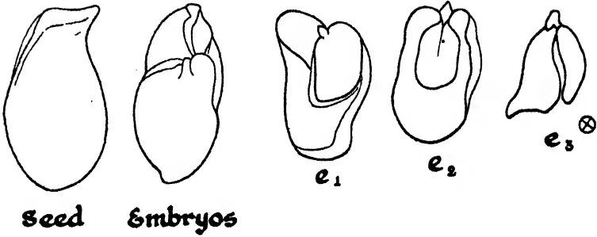
Seed Embryos
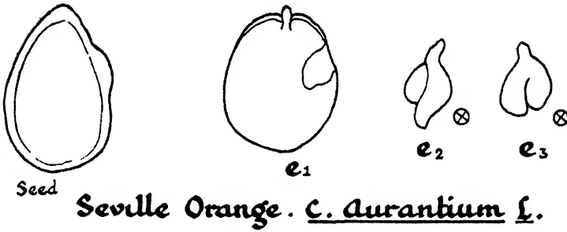
Seed e1 e2 e3
Seville Orange. C. Aurantium L.
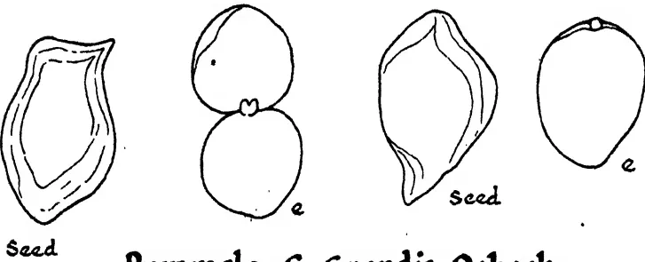
Seed e e e
Pummelo. C. Grandis Osbeck.
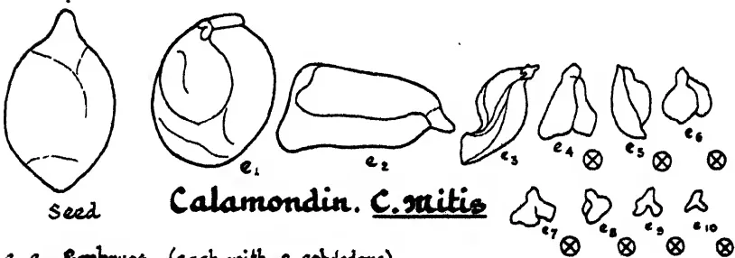
Seed e1 e2 e3 e4 e5 e6 e7 e8 e9 e10
Calamondin. C. mitis
e1 e2 e3. Embryos (each with 2 cotyledons)
⊗ - Embryos that failed to germinate.
Block by Survey Dept. Cayton. 20.11.36
273for oranges observed that layered Washington Navel trees ten year old were doing just as well on their own roots as budded plants on rough lemon stock (2). Layering is generally a slow and cumbersome process, and yet Webber was so impressed with the performance of the 'own root' trees that he recommended a serious trial of vegetative propagation methods to raise not only 'own root' scions but also clonal rootstocks.
In the wet tropics, the high incidence of disease and the periodic occurrence of drought will necessitate the use of suitable resistant rootstocks for the improved scion varieties which are delicate subjects on their own roots.
For the hardier varieties, however, which by experiment are found to do just as well on their own root systems as on others, it may be convenient to dispense with rootstocks altogether if a rapid and cheap method of propagation from cuttings is available.
An interesting feature in the case of citrus and mango is the common occurrence of Polyembryony. A seed may contain in addition to the sexual embryo which is formed by normal sexual process, other embryos all arising as buds from the maternal tissue—the nucellus (3). This accounts for the appearance of more than one little seedling when a single seed is planted (See diagram).
The sexual embryo may survive in the competition and germinate, but it is very difficult to distinguish its seedling—the generative seedling—from the other vegetatively produced or apogamic seedlings unless it bears some leaf characteristics peculiar to its male parent. It will be almost a hopeless proposition to pick out and eliminate all the generative seedlings in a large nursery if a rootstock variety which produces both monoembryonic and polyembryonic seeds is self fertilised or is crossed by obscure male parents in the vicinity (4).
Theoretically the apogamic seedlings will be regarded as clones in that they all have the same genetic constitution as the mother plant. They will have none of the disadvantages popularly ascribed to vegetatively propagated material such as lack of tap root, liability to be uprooted by wind, one-sided rooting, etc., but they do show marked variability in initial
274vigour due probably to differences in size of the embryos. The embryos which are crowded together generally vary in size, some being far too small to survive in the seed bed.
These variations in growth may be maintained for several years in a long-lived slow-growing perennial like citrus.
Rigorous selection will have to be practised in the nursery to eliminate not only the hybrids but also the small or stunted seedlings of the same progeny.
It seems from the above considerations that varieties like the Seville orange C. Aurantium Linn, the local sour orange hybrid C. sinensis var, the grapefruit C. maxima var uvacarpa Merrill and Lee, the rough lemon C. Limonia osbeck and the lime (both sour and sweet) C. aurantifolia Swingle, which produce polyembryonic seeds, i.e., seeds which contain several embryos, are likely to give a more uniform lot of seedlings than the pummelo C. grandis osbeck and the 'Nattaran' C. medica var which appear to have only one embryo per seed possibly the sexual embryo.
Very probably other important considerations as suitability to a locality, vigour, compatibility and disease resistance, may influence the selection of particular varieties as stocks but the desirability of using only pure lines of such stocks whether as seedlings or cuttings in order to secure the highest degree of uniformity cannot be gainsaid.
Once a suitable rootstock variety has been selected by experiment it will be necessary to establish groves in isolated areas and maintain the purity of the selected strain.
Thus it will be possible to build up three kinds of citrus trees for careful study and comparison. They are :
For this purpose an attempt has been made to root citrus cuttings in a solar propagator at the Experiment Station, Peradeniya.
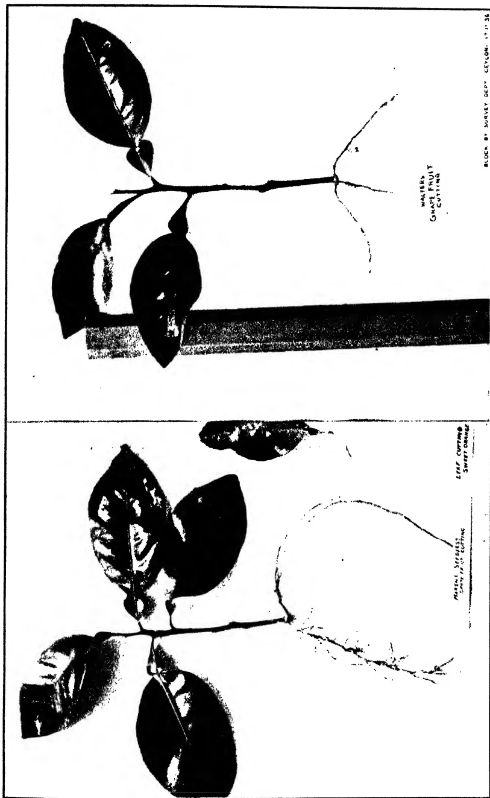
The image contains two separate photographs of grapefruit cuttings. The left photograph shows a seedless grapefruit cutting with four large, dark leaves and a visible root system. The right photograph shows a Walters' grapefruit cutting with three large, dark leaves and a visible root system. Both photographs are labeled with the name of the cutting and the source.
Fig. 1. Marsh's seedless grapefruit cutting
8 weeks in the propagator
Fig. 2. Walters' grapefruit cutting
6 weeks in the propagator
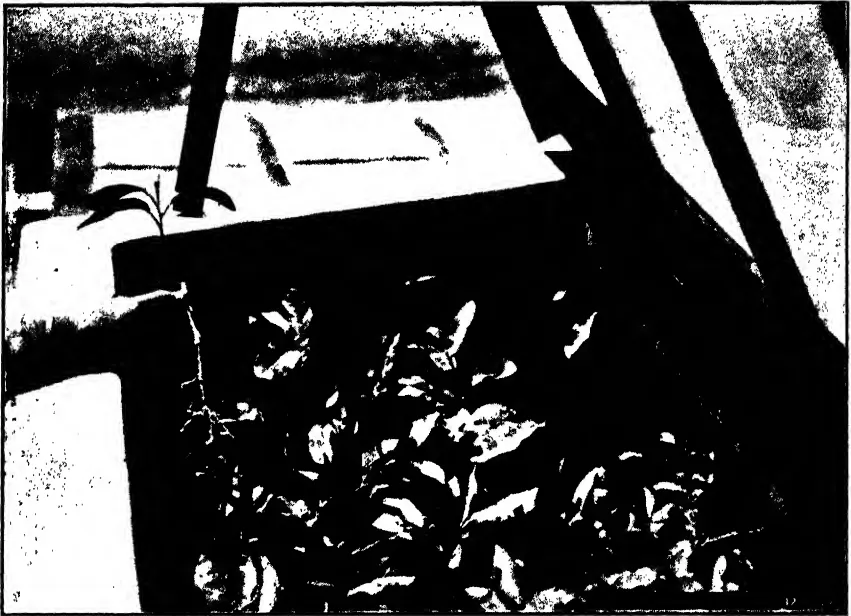
Fig. 3. Cuttings set in the propagator. Note the rooting habit of the Nattaran twig graft with a grapefruit scion
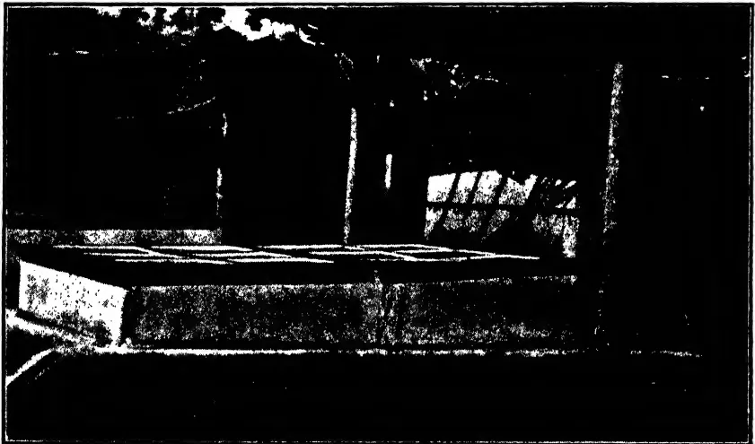
Fig. 4. General view of two solar propagators with overhead shade for the propagating chambers. The heating chamber which is exposed to the sun extends below the propagating chamber and is continuous with it
275.THE SOLAR PROPAGATORThe propagator which is made of cement concrete is very similar to the one used by Hunter at Trinidad (5). It has been in use only for a short while but the results of empirical trials with softwood cuttings have been very promising.
In temperate countries the propagating bed is warmed up by means of steam or hot water pipes run through the bottom of the bed. This bottom heat is necessary to stimulate the cuttings to calluse rapidly and produce roots. Sometimes lanterns are used as in Kenya (6) to supply bottom heat for the rooting of coffee cuttings.
In the case of the solar propagator the heat is obtained at a minimum of expenditure from the sun's rays. Hence bright sunshine is essential for its efficient working.
The heat from the sun's rays is absorbed by the water in the heating compartment. At Trinidad a number of large stoppered glass bottles filled with water and painted black on the outside were placed within the heating chamber to absorb the heat. The heating compartment is a shallow tank five feet wide by fifteen feet long on the inside with exit holes for the water at ground level. There is a narrow drain all round it filled with water to keep off ants. Its lowest wall is one foot three inches in height and its two side walls rise up to a height of one foot nine inches at the point where it is continuous with the propagating compartment above. The glass sash covering it is thus given a tilt to allow rain water to run off.
A current of hot moist air rises from the heating compartment during day time and warms up the bottom of the rooting bed in the propagating compartment above. The rooting bed is kept fairly warm even at night since the heat retained by the water is given out very slowly.
The propagating chamber is about a third of the size of the heating chamber and is covered with two smaller glass sashes each working on a couple of hinges fixed to a wooden frame. There is a ledge inside the chamber to support the rooting bed at a height of one foot nine inches from the ground. Iron bars fixed into the wall at the same level serve as additional support to the rooting bed which is constructed by placing a
276sheet of expanded metal in position and over it in turn wire netting, coconut fibre and coarse sand, to a depth of six to eight inches. The sand is well washed to get rid of all organic matter.
Adequate ventilation is provided through two one-inch holes in the side walls and also through other holes which allow of the insertion of thermometers to test the temperature of the rooting bed and the air above it.
Water is sprinkled on the rooting bed once a day early in the morning and the propagator is kept closed for the rest of the day to keep the air in the chamber moist.
Overhead shade is provided for the propagating chamber only in order to prevent the leaves inside from being scorched by the direct rays of the sun. There is however sufficient illumination for the leaves to manufacture carbohydrates which evidently are necessary for root formation.
With varieties like grapefruit, mandarin and orange which are difficult to root it is very important to see that the cuttings do not drop their leaves in the propagator. If this happens the cuttings will not strike. Overcrowding is definitely bad. Careful control must be exercised over the moisture content of the rooting medium and humidity of the air above it, so that the leaves may remain turgid and the sand round the cut ends not too wet to cause decay.
Coarse sand has given good results but the cut ends must be close to the moist fibre though not touching it. Fine sand however is likely to get saturated with the greater amount of moisture given out by the exposed water surface in the tank.
| Bright warm day | Dull cloudy and cool | |||||
|---|---|---|---|---|---|---|
| 8 a.m. | 11 a.m. | 3 p.m. | 8 a.m. | 11 a.m. | 3 p.m. | |
| Temperature of air in the shade outside .. | 27.6°C | 28.0°C | 32.3°C | 25.0°C | 26.4°C | 30.5°C |
| Temperature of air in the propagating chamber .. | 27.8°C | 28.4°C | 31.2°C | 25.1°C | 27.0°C | 30.6°C |
| Temperature of sand | 28.2°C | 28.7°C | 29.8°C | 25.0°C | 25.6°C | 28.6°C |
| Temperature of water in the tank .. | 31.8°C | 32.5°C | 34.0°C | 29.4°C | 29.8°C | 31.4°C |
It will be noticed that the temperature of air inside the chamber gradually rises higher than that of the sand as the outside atmosphere gets warm in the afternoon. Similar readings were obtained by Swingle and others (7), but they found that the surface of the rooting bed was usually slightly cooler than the bottom—‘a condition much to be desired’—because of the evaporation going on.
Softwood cuttings eight to ten inches long which are really semi-hard wood in texture appear to be more suitable than hard wood material. They must have at least four or five leaves which have developed their full dark green colour. The secret of success lies in selecting the type of cutting which is likely to retain its leaves under the conditions in the propagator. Cuttings weakened by attacks of scale insects or with either mottled or chlorotic leaves or with tender leaves which will wilt and shrivel are definitely unsuitable. They must of course be free from disease.
Very little is known of the internal physiological condition of a cutting which is likely to root. Evidently it is determined to some extent by the age and vigour of the tree.
Halma (8) found it difficult to induce rooting of cuttings taken from orange trees declining in vigour but was very successful with cuttings from healthy vigorous trees. Varieties like the citron, ‘Nattaran’ and lemon root easily enough in the open ground from cuttings devoid of leaves, but in the case of the grapefruit, mandarin and orange, which are less accommodating, leaves are essential for root and shoot formation.
In one of the trials at Peradeniya a number of cuttings taken from Marsh seedless grapefruit trees were found to drop their leaves within a week in the propagator. In course of time they all began to decay without producing roots although they had callused freely round the cut ends.
As an experiment a few of the cuttings without leaves from a similar batch were at first splice-grafted to leafy ‘Nattaran’ scions and then placed in the propagator. A good many of these twig-grafts produced roots in course of time while the ordinary grapefruit cuttings which had dropped their
278leaves began to decay without striking root. Later when these twig-grafts were planted out in bamboo pots the grapefruit stocks produced healthy shoots while the 'Nattaran' scion remained dormant on top (See Fig. 5 and Fig. 6).
It may be reasonable to infer that the twig-grafts were able to strike root because of some influence probably in the nature of a hormone or root-forming substance which came from the leaves retained by the scion. Whatever this scion influence may be, the fact remains that the 'Nattaran' variety which produces roots very freely is able to stimulate root production in a difficult subject like the grapefruit. Its ability to retain its leaves for a longer period may also be a factor which contributes in no small measure to success in rooting of grapefruit cuttings devoid of leaves.
Further experiments are in progress to elucidate this point and to consider possibilities of its wider application for the rooting of difficult citrus varieties.
'Nattaran' is a variety similar to citron. It will root readily in the open from cuttings devoid of leaves and like citron has a peculiar rooting habit in that the roots are not necessarily confined to the callus region but also appear from the stem higher up. The leafy shoots not only retain their leaves more tenaciously but also calluse freely and unite readily with the stock on which they are worked.
'Nattaran' cuttings have also been budded to grapefruit, mandarin and orange by the ordinary inverted T method, and then rooted inside the propagator. The buds remained perfectly healthy till the roots were formed and shot out when the cuttings were transplanted into bamboo pots (Fig. 7).
Quite satisfactory results have also been obtained by splice-grafting grapefruit and orange scions on to 'Nattaran' cuttings and then treating the twig-graft as cuttings in a propagator (Fig. 3).
In this way bud-grafts can be obtained in a comparatively short time of three to four weeks, but it remains to be seen whether the 'Nattaran' variety will prove to be satisfactory as a stock under local conditions.
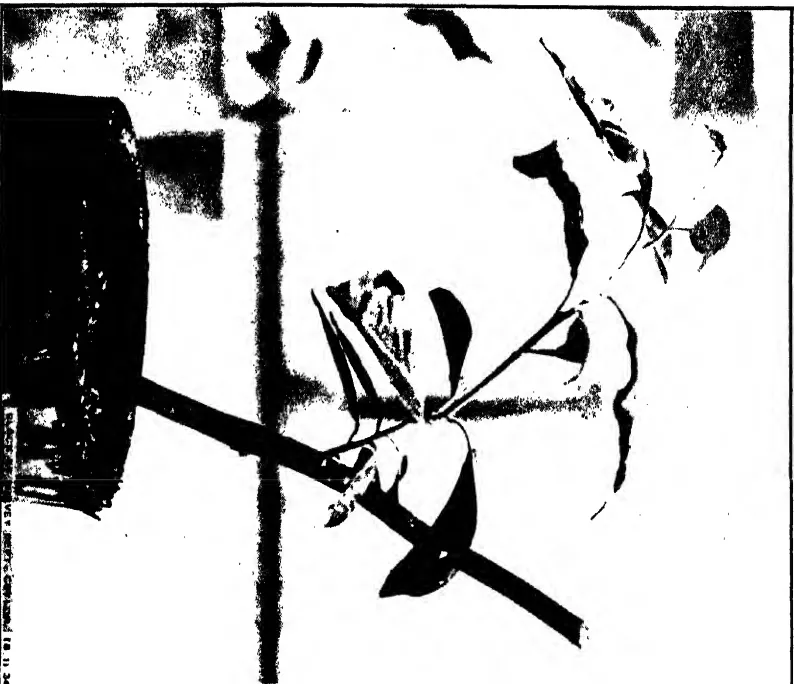
A black and white photograph showing a Nattaran cutting budded to grapefruit and rooted in a propagator. The plant is in a dark, cylindrical container, and the cutting is visible above the soil line.Fig. 7. Nattaran cutting budded to grapefruit and rooted in the propagator
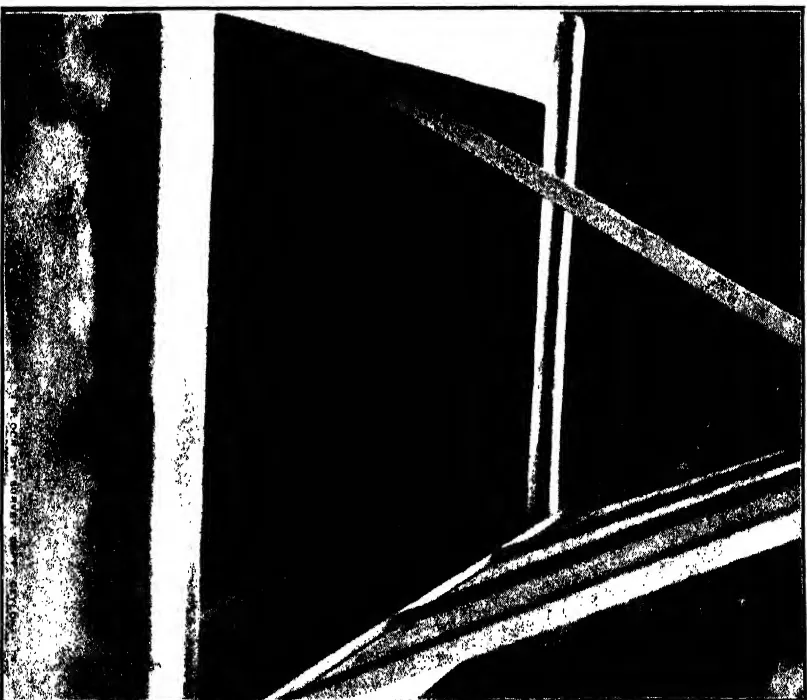
A black and white photograph showing a closer view of the propagating chamber, displaying the wire netting resting on expanded metal. Below this, the heating chamber containing water is visible.Fig. 8. Closer view of the propagating chamber showing the wire netting resting on expanded metal. Below this extends the heating chamber containing water
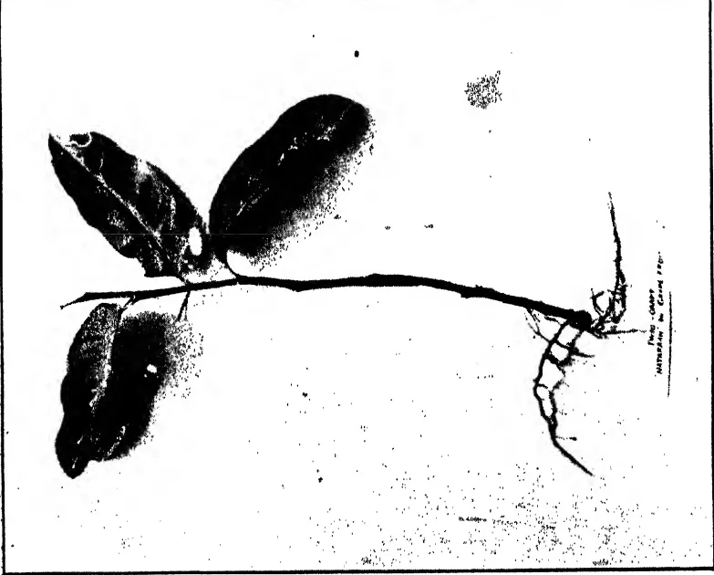
Fig. 5. Twig-graft. Nattaran on grapefruit (Marsh's seedless) 7 weeks in the propagator
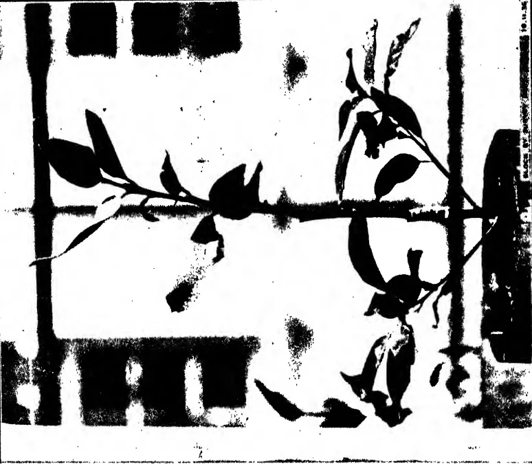
Fig. 6. Twig-graft. Nattaran on grapefruit (Marsh's seedless). Note the two new vigorous shoots produced by the grapefruit stock 4 weeks after removal from the propagator
279At the time of writing the following species and varieties have been successfully rooted in the propagator.
Seville orange.—C. Aurantium L.
Grapefruit.— C. maxima, var. uvacarpa Merrill and Lee.
Varieties : Ellen, McCarty, Triumph, Walters and Marsh seedless.
Orange.— C. sinensis.
Varieties : Local sour orange, Valencia Late, Mediterranean Sweet, Washington Navel, Jaffa.
Mandarin.— C. nobilis, var. deliciosa Swingle.
Varieties : Nagpur Santara, Chinese.
Lime.— C. aurantifolia Swingle.
Varieties : Sour—local and British Guiana, sweet and seedless.
Lemon.— C. Limonia Osbeck.
Varieties : Eureka, Lisbon and Rough Lemon.
Citron.— C. medica, var. L.
Varieties : 'Nattaran' and citron.
Calamondin.— C. mitis Blanco.
Shaddocks.— C. grandis Osbeck.
Varieties : Local pummelo, Mongibella, Isabella, California Wonder.
Practically all the varieties in citron, lemon and lime groups will strike from cuttings in the open.
Of the varieties of grapefruit, Ellen, McCarty and Triumph appear to strike more readily than Walters and Marsh seedless.
The mandarins require more bottom heat for satisfactory rooting. The local pummelo and the Seville orange are difficult to root but the varieties Mongibella, Isabella, California Wonder—classed tentatively as shaddocks—which were imported from India as 'own root' marcots and which have an extremely vigorous habit of growth coupled with appreciable resistance to canker, strike root readily in a month's time. They have not yet flowered, but they may prove to be valuable material for clonal rootstocks.
280REFERENCES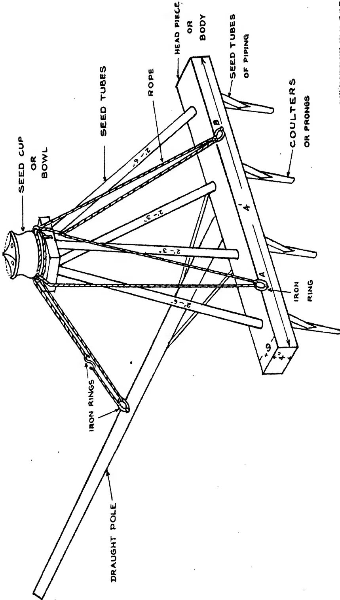
The diagram illustrates the components and assembly of an Indian Seed Drill. The main components and their labels are as follows:
Dimensions on the head piece include 4' and 1'-9".
THE INDIAN SEED DRILLBLOCK BY SURVEY DEPT., Ceylon, 1910-1911. 283C. R. KARUNARATNE, (Dip. Agric., Poona),
AGRICULTURAL INSTRUCTOR, KATUGASTOTA
THE utility of a seed drill depends on its capacity to distribute the seed uniformly over the whole area sown.
Each tube of a drill should sow at the same rate, and uniformly at all points in its line of motion. The characteristic feature of a drill is the presence of seed coulters for depositing the seeds in lines under the surface of the soil.
The Indian seed drill is a convertible implement. It can be used as a grubber when the seed tubes and the seed cup are not fixed on. But owing to the arrangement of the coulters in one line it cannot operate throughout the whole area it passes over.
The drill is made up of four main parts: the body, the draught pole, the seed tubes, and the seed cup. Like the blade harrow the body consists of a log of wood, preferably rectangular in shape, into which the draught pole is attached at such an angle that the latter rests easily on the yoke of the bullocks used for drawing it. The draught pole is attached to the body by the mortise and tenon joint, secured further by means of a split pin also of wood. Into the lower surface of the body are fixed 3, 4, or 6 coulters of iron or of wood at right angles to the body so as to reduce penetration to a minimum. If the coulters are fixed at greater angles, the seed will correspondingly be deposited deeper in the soil. This is undesirable. The coulters are spaced equally about 9, 12, or 18 inches apart according to requirements. The spacing and the number of coulters and of seed tubes depend on the particular crop to be sown.
Circular holes depending on the number of seed tubes are drilled through the body, spaced equally, at a slight angle for
*This series of articles describe a number of simple implements used in India and Ceylon which are suitable for general adoption by the village agriculturist. — Editor T.A.
284the reception of the tubes. Pieces of small piping 2 to inches shorter than the coulter, are fixed in the holes on the lower surface of the body at an angle inclining forwards and exactly behind the coulter. The number of seed tubes should correspond to the number of coulter. These lower tubes could conveniently be made by sawing off pieces from old discarded exhaust pipes of motor cars. Well seasoned bamboos about 2 to inches in diameter and about 3 feet in length with the joints at the nodes disconnected and smoothened out serve the purpose of the upper seed tubes. Bamboo tubes are not very permanent as they are liable to be damaged by weevils. Strong and durable seed tubes could, however, be turned out of any light and strong timber such as halmilla or sapu. The piece of timber is planed to a cylindrical shape and then sawn longitudinally into two halves which can be joined together and tied securely in three or four places with thin wire. The irregularities of the walls of the excavated portion can be evened out by passing a red-hot iron rod through the cavity. The length of the seed tubes should be such as to enable the sower to perform his task without bending. For a four-coulter seed drill, seed tubes two feet six inches in length have been found suitable at the Wariyapola Farm. As the seed tubes are placed to converge at the top, the two extreme tubes should be about three inches longer than the two inner ones. The seed tubes are fixed on the upper surface of the body.
The seed cup, shaped like an ordinary bowl, is fixed on to a square block of wood. The diameter of the cup is about 8 inches and the height 10 inches. The cup is scooped out to about half its depth in such a manner as to divide it into 3 or 4 compartments, the number depending on the number of seed tubes. The edges of the walls of all the compartments converge to a point with a gradual curve upwards where all the four walls meet resembling a cone. This device causes all the seeds to be evenly distributed into the compartments. At the base of each compartment a hole about half to three quarters of an inch in diameter is drilled at an angle which would provide a continuous passage to the seed tube. When the seed is dropped over the conical projection in the centre of the seed cup, it passes into the upper seed tubes and thence to the lower ones, being finally
285deposited in the shallow furrows made in the soil by the coulters. The coulters do not work more than one and a half to two inches deep, but if deeper penetration is desired, a weight should be placed on the head piece. The seed cup and the tubes are braced to the body by an ingenious arrangement of strings. The whole drill could easily be dismantled when it is required to be transported long distances.
When the drill is required for sowing operations, the seed cup and the upper seed tubes are braced together securely by means of a thin hemp rope, the two longer seed tubes being fixed at the extreme ends. The seed cup when fixed on to the upper tubes should be perfectly level, or the seeds will be unevenly distributed into the compartments.
The selection of a yoke of the proper length so as to prevent the bullock from treading on the furrows already sown is important. If a three-coulter 18-inch drill is used, the distance between the extreme coulters will be 36 inches. The bullock should be made to walk about 9 inches away from each of the extreme furrows. Then the distance from the centre of the neck of one animal to that of the other will be or 54 inches. Leaving six inches at either end free the length of the yoke required will be 66 inches. A simple formula for selecting the proper yoke for a drill is to multiply the number of coulters by the space between two coulters and to add 12 to the result. For example, the yoke required for a 6-coulter 12-inch drill will be : inches. The yoke is tied to the draught pole in the same manner as the blade harrow.
Sometimes, when the seed bed is thoroughly prepared, the coulters work deeper than 2 to inches thereby blocking the seed pipes. This happens particularly in light types of soil. This defect can be overcome either by using light timber for making the drill or by fixing two wheels at either end of the body of the drill. The wheels should be fixed so that they can be adjusted to the required depth in the same manner as the land wheels of iron ploughs. The vertical iron rod connected to the axle of the wheel could be clamped on to an iron bracket driven into one end of the body.
To work the seed drill in an efficient manner the seed bed should be well prepared. There should be no stumps or stubble
286of the previous crop left over. All clods should be thoroughly pulverised and the seed bed levelled as far as possible by working it with the blade harrow or the Diamond mesh harrow. A pair of bullocks trained for ploughing, interculturings between rows of plants, and for drilling should not be used for carts. In working the drill the driver should strive to get the pair of bullocks to walk perfectly straight and at the same uniform speed. Once the man and the pair of bullocks are trained the sowing can be done in perfectly straight rows. The bag of seeds is suspended below the seed cup. Before commencing to sow, the drill should first be tested by dropping some seeds into the seed cup to see if the seed tubes and pipes are functioning properly. Two men are required to work the drill, one to drive the pair of bullocks and the other to sow the seeds. But with experience one man could perform both the operations. The sower stands just behind the drill, and as the animals start walking, the seeds are dropped at a uniform rate from one hand to the top of the conical shaped projection in the centre of the seed cup. Before one handful is finished, the next handful should be ready, which means that the sower has to use both hands alternately. By this means the seeds are dropped continuously without a break until the headland is reached. If any time is lost between one handful and the other, the result will be a corresponding space left unsown. Every time the headlands are reached, the seed pipes should be examined to see if they are blocked. Before proceeding on the homeward trip the drill should be shifted towards the unsown area to a distance equivalent to the space between two coulter. Otherwise the drill will go over the last furrow a second time.
The seed rate is calculated on the number of handfuls of seeds to be sown for a particular distance. Suppose a crop of Sunnhemp is to be drilled in a one-acre field, 363 feet long and 120 feet wide at the rate of 100 pounds per acre, with a four-coulter 12-inch drill. The number of foot steps required for one trip from one end of the field to the other is found by driving the pair of bullocks with the drill hitched on, and the sower, whilst walking behind the drill, counts the number of steps taken for the trip. Suppose he takes 160 steps for this trip. On each trip the drill covers a space of 36 inches. But when
287the drill reaches the headland and proceeds on its homeward trip, it is shifted towards the unsown side to a distance equivalent to the space between two coulter, lest the last furrow be sown a second time. Thus the drill, in reality, covers a space of inches or 48 inches per trip. The number of trips to be done to cover the whole field, 120 feet in width, will be . For each trip from one end of the field to the other the sower took 160 steps. Therefore 4,800 steps will be taken for the 30 trips. Next, the number of handfuls for a pound of seed is calculated. Suppose it is 12. Then 100 pounds of seed will be equivalent to 1,200 handfuls. 1,200 handfuls of seed have to be sown in 4,800 foot steps. Thus one handful of seed has to be sown in four steps. The practical agriculturist would, perhaps, not find this method of calculation to be necessary. He will soon learn by experience at what rate he should feed the seed cup to obtain the best results.
It requires an experienced skilled labourer to operate a seed drill for the distribution of the seed depends on the sower. In this drill, the spacing is determined by the distance of the seed tubes from each other and cannot be regulated. A careful Indian cultivator sows with these drills in a very skilful and effective manner. With a three-coulter 18-inch drill about to 3 acres could be drilled in a day of 8 hours. Sometimes it is necessary to sow a mixed crop in alternate rows (one row of one crop and the adjoining row of another kind). In such cases a simple device could be adopted. A separate seed tube fitted with a seed cup is attached a little distance behind the drill by means of a piece of coir rope. A coconut shell fixed on the seed tube forms a good seed cup. This seed tube should be in charge of a separate sower, and should follow in one of the furrows left by the coulter of the drill. In conducting such mixed sowing operations the corresponding holes in the seed cup of the drill should be blocked. Experience at Wariapola Farm shows that in well worked sandy loam soils covering the seeds was not necessary. As the coulters penetrate the soil, the soil particles owing to their loose texture fall back to the furrows thus covering the seeds. A shower of rain covers the seeds completely. In heavier types of soil it may be necessary to cover the seeds after drilling. This may conveniently be
288done by working a plank harrow immediately behind the drill. Any closely spaced crop could be drilled with this drill, such as Calopogonium mucunoides, Centrosema pubescens, Green Gram, Cowpea, Groundnuts, Sorghums, Maize, Hill paddy, Sunn-hemp, etc.
Among the advantage of sowing seed with a drill are :
(1) Economy in seed. (2) Even distribution of the seed. Uniform seedling is essential for regular growth and regular ripening. (3) The seed is sown in rows. This facilitates inter-culturing operations with implements and is economical.
One of these drills could very easily be constructed by the ordinary village blacksmith or by the skilled cultivator at a cost of about Rs. 12 to Rs. 15.
289J. C. HUTSON, B.A., Ph.D.,
ENTOMOLOGIST
(DACUS CUCURBITAE COQ)
THIS is the common fruit-fly attacking various cucurbit gourds, such as cucumber, pumpkin, snake gourd, bitter gourd, luffa, chocho (Sechium edule), etc., and so far as is known in Ceylon it confines its attacks to plants of this order, both wild and cultivated. The damage is usually done to the fruit by the larvae or maggots, but there is a possibility that the stems and other parts of the plant may be bored by the larvae, although there is no definite evidence of this in Ceylon at present.
The flies are about twice the size of an ordinary house-fly, with dark-brown bodies, pale-yellow markings on the thorax and a black band across the middle of the abdomen. The female, by means of her extensible ovipositor, lays her eggs in small clusters at intervals of a few days just under the skin of the fruit. These eggs hatch within to 2 days and the maggots tunnel inside the fruit on which they feed, causing the attacked portions to decay rapidly. When full-grown in about 4 to 5 days, they leave the fruit and pupate in the soil, usually near the surface. The pupal period is about 8 to 10 days, after which the flies emerge and start feeding. Under tropical conditions the life-cycle from egg to adult is about 14 days, but under cooler conditions it may last a few days longer.
The male and female flies do not become sexually mature until about 3 weeks after emergence and the females do not begin egg-laying for about another week, that is, until about one month after emergence. The flies have been kept alive here in the laboratory for several weeks with food, and in other countries it has been found that the females can continue to
290lay eggs up to six months after emergence. Under natural conditions in the field, this pest can probably survive from one crop season to another in the adult condition.
Control.—Collect and destroy at frequent intervals all damaged fruit by burning or burying deeply. Destroy all crop refuse at the end of the season. These measures are seldom carried out by cultivators and the flies are able to breed in large numbers throughout each season. Poisoned baits and lures are under experiment and results will be available later.
Natural enemies.—Braconid parasites (Opius sp.) have been bred from the larvae of this fruit-fly, but they do not appear to be sufficiently common to have much effect in controlling this pest under natural conditions. Two species of imported pupal parasites are being bred and liberated periodically in village areas.
(LEPTOGLOSSUS MEMBRANACEUS F.)
During May, 1936, sudden invasions of vast swarms of a large plant-sucking bug were reported from some bungalow gardens in the Talawakele and Badulla districts and from village gardens in Dumbara and Matale. This proved to be the "paddle-legged bug" and at that time the bugs were all in the active winged stage. In the up-country areas serious damage was caused to the fruits of tree tomato (Cyphomandra betacea) and of various species of citrus, mainly oranges, resulting in a heavy fall of fruit. At mid-country elevations the bugs, apart from feeding on oranges, swarmed into vegetable areas which were severely injured. They then started breeding on bitter gourd (Momordica Charantia) and snake gourd (Trichosanthes anguina).
Under normal conditions these bugs are comparatively rare and probably breed in small numbers on wild cucurbits related to bitter gourd. The only other recorded instance of similar vast swarms of this particular bug was in May, 1912, when they appeared almost simultaneously in various parts of the Island, such as Ambawela, Haputale, Maskeliya, Panadure and Galle at elevations ranging from over 5,000 feet to almost sea level. Green (1) mentions that a number of fruits and
291vegetables were attacked by these bugs, including oranges, tree tomato, passion fruit, peach, plum, Cape gooseberry (Physalis peruviana), beans, peas and vegetable marrow. These bugs are not known to breed on any of the above fruits and vegetables with the possible exception of marrow, and, as in the case of the recent invasions, the attacks on fruits and vegetables seem to have been made only for feeding as a preliminary to subsequent egg-laying and breeding on cucurbits.
Numerous species of larger plant-bugs are usually avoided by birds, lizards and toads, probably owing to their rather hard bodies and objectionable odour, but are partially controlled by parasitic and predaceous insects and possibly by parasitic fungi, some more effectively so than others. It would appear that under normal conditions Leptoglossus must be controlled by some very effective natural check or combination of checks, but what this can be is not known at present. This natural control seems to have been considerably upset by the long drought of 1934 and the first half of 1935, since many comparatively rare insects, including Leptoglossus, have suddenly assumed the status of pests, while others which have been chronic pests for years have faded away into comparative insignificance.
Stages and life-cycle of Leptoglossus.—The full-grown winged bugs are about 15 to 20 m.m. long, the males being usually smaller than the females. They are dark-brown to blackish above, with an orange coloured band across the shoulders which terminate in a spine on each side. There is also a small yellowish spot in the middle of each wing cover and a row of small reddish spots along the lateral edges of the abdomen. The whole of the underside of the body is mottled with orange red spots and the antennae are alternately barred with black and orange. The adult bugs are distinguished from any of their relatives by the paddle-like tibial extensions on their hind legs which have given them their popular name. This name does not imply any aquatic habits on the part of the bugs, the extensions being merely ornamental.
The pale-brown cylindrical eggs are usually laid end to end in a line on the stems, leaf-stalks and fruit of various cucurbits, preferably bitter gourd and snake gourd and related wild plants. These eggs hatch in about 9 days, the young nymphs emerging
292through a circular cap or trap-door in the upper surface of each egg. The young bugs pass through five instars, or periods of feeding and growth between moults. During the first four stages the nymph has a bright red head and abdomen and a black thorax, while the fifth stage is usually brownish black with reddish areas on the three parts of the body ; a paler brown variety without reddish markings is occasionally found. The tibial extensions first appear during the second instar and increase in size with each succeeding moult, attaining their full size in the adult. The nymphal period lasts about 4 to 6 weeks, the bugs entering the adult winged stage with the last moult. The adults do not become sexually mature until about 2 or 3 weeks later and can be kept alive with food for several weeks, during which period the females lay small batches of eggs at intervals. It is not known at present how many eggs a female can lay, but the occurrence of these bugs in such vast swarms as have appeared this year indicates that under favourable conditions they can be prolific breeders.
Remedial measures.—The sudden invasion of a fruit orchard or a vegetable garden by myriads of these winged bugs may result in a serious loss of crops unless the invaders can be killed off or driven away speedily. The usual remedy for plant-sucking bugs of this type, apart from collection and destruction, is the application of contact sprays, such as kerosene emulsion, fish-oil soap or tobacco wash, and these would be quite effective at the ordinary strengths against the younger stages of Leptoglossus with their softer bodies and in their wingless, comparatively inactive condition. Therefore if any spraying is undertaken it should be applied to the younger bugs on their breeding plants in vegetable gardens and the spray should be so directed as to wet the bugs thoroughly. The use of these insecticides against the adult winged bugs was found to be impracticable, since most of them escape in flight before they can be thoroughly wet, while those caught unawares by the spray are usually resistant to these sprays used at the ordinary strengths. Stronger applications are inadvisable, as they would be liable to injure the tender foliage and young shoots.
As indicated above, the invasion of a fruit or vegetable garden by vast swarms of the winged Leptoglossus comes so suddenly that much damage may be done before their presence
293is detected and any action taken to destroy them. Since spraying is impracticable at this stage, the only possible remedy is to collect and destroy as many of the adults as possible by any available method. This should be done in the early morning or late afternoon when the bugs are somewhat sluggish, especially in the cooler temperatures at higher elevations. The invaders can be beaten down on to sheets spread on the ground and then collected into tins of kerosene and water or crushed and buried. Many can be caught in hand nets and similarly treated, while in village areas paddy winnows smeared with sticky juices would be of value in catching the bugs, as in the case of the "paddy fly." Any campaign of this nature should be carried out speedily and systematically.
In vegetable and food crop areas the adults, after severely damaging crops of all kinds, may remain in the locality to breed on cucurbits, and the young stages should be controlled by spraying or by hand picking and destruction. The nymphs can be brushed off into tins of kerosene and water and then buried. Once these bugs are allowed to become established in a cucurbit area they will continue to breed for several months and spoil the gourds as these are formed.
(DORYLUS ORIENTALIS WESTW.)
Within the last few years this ant has become a serious pest of all kinds of ornamental and vegetable plants, attacking the underground portions and either riddling the tubers and bulbs or destroying the tender portions of the roots and collars. In 1933 a note on this pest (2) indicated that when once it gets established in a vegetable or flower garden hardly any plants escape its attacks, especially during the dry weather when the ants migrate in to well-watered areas from drier surroundings in search of moisture and succulent plant tissues. The control measures previously recommended were mainly the use of petrol as a soil fumigant to kill the ants and of some carbolic disinfectant as a deterrent. It has been found that, while petrol is effective in killing most of the ants actually in the soil at the time of treatment, the effect of the gas soon wears off and more ants return to the attack. During the last few months experi-
294ments with paradichlorobenzene (P.D.B.) have been in progress and have given such promising results that it is now being recommended for more general use against Dorylus and other soil insects, especially as a commercial grade of this soil fumigant is now available locally. The crystals of P.D.B. give off a rather heavy gas slowly into the soil when mixed therewith, and this gas not only kills the infesting ants without injury to growing plants, but prevents any new invasions over periods of several weeks during dry weather when these ants are usually a nuisance. This soil fumigant can be applied to garden beds before planting as a preventive at the rate of 1 oz. of the crystals for every square yard of surface soil. In order to obtain a more even distribution in the soil, the P.D.B. can first be thoroughly mixed with soil or sand at the rate of 1 oz. of the fumigant to 2 cigarette tins (roughly 1 lb.) of soil, then sprinkled thinly over the surface of a garden bed and mixed in thoroughly with the top layer of soil. In beds of growing plants the same mixture can be sprinkled along shallow furrows between the rows of plants at the rate of oz. of P.D.B. per linear yard of furrow, the soil being then replaced. For small trees and shrubs the fumigant can be applied at the rate of oz. to 1 oz. per plant in shallow circular furrows with a radius of about 6 to 9 inches from the stem. For convenience of measuring it may be mentioned that one large heaped teaspoonful holds about oz. and one cigarette tin about 8 oz. of the crystals.
In up-country districts which get only one wet season a year the ants are usually troublesome during the dry weather and under such conditions the effect of the fumigant lasts for several weeks, and one thorough application made at the start of the drought is usually sufficient to control these ants throughout the season. During wet periods a second application may be necessary on any return of the pest.
The large black ant which makes its nests around the bases of trees, around plants in garden beds and under the turf in grass lawns can also be controlled by P.D.B. Nests around old trees may take up to 4 oz. of the fumigant thoroughly mixed with the soil with which the cavities have to be filled, while the excavations made by this pest in lawns can be similarly treated with a soil mixture containing from oz. to 1 oz. of
295the poison according to the size of the nests. After a wet period the application may have to be renewed.
This fumigant should also prove useful against other soil pests, such as cockchafer grubs, "leather jackets" and possibly cutworms. For garden beds where these are known to be chronic pests a thorough application before planting is worth a trial.
D. E. V. KOCH, B.Sc. (Hons.),
RESEARCH PROBATIONER IN AGRICULTURAL CHEMISTRY
(1) RICE BRANTHE analysis of a sample of rice polishings obtained from the Government Rice Mills at Anuradhapura reveals it to be very rich in fat as compared with ordinary samples of rice bran. Good rice bran, which consists only of the testa, aleurone layer and embryo of rice grains should contain about twenty per cent. of fat. The percentages of protein, carbohydrates, fibre and ash compare very favourably with those of the best samples obtainable in the Phillipine Islands (1). The figures obtained for phosphoric acid () and lime () indicate the bran to be rich in the former but poor in the latter, but this is typical of quality bran.
It would therefore appear that the Government rice mill sample, being of much superior value to ordinary local rice brans, is, from the dietetic point of view a very desirable foodstuff, and more so as it contains the water soluble vitamin , the deficiency of which is responsible for certain nervous disorders resulting ultimately in the disease beri beri, and in addition the fat soluble vitamins A and E.
As rice bran lacks gluten, bread prepared from it does not rise. It can, however, be mixed with wheat flour in the proportion of one of the bran to three or four of the latter for this purpose. The addition of good quality bran to rice, manioc and other flours in the same proportions will enhance the food value of preparations made from these flours.
297The poor quality of local brans is principally due to the presence of husks (hulls), which are devoid of food value and in fact harmful if taken internally. It would therefore be more appropriate to call this sample rice polishings, i.e., the polishings of rice freed from husks.
Preparations of vitamin B1 have been obtained by two standard methods and is likely to be sent to the Medical Department for test. In the Phillipines one such preparation known as "tiki tiki" has been used for a number of years in medical practice.
The analysis of the Anuradhapura mill rice bran is as follows: — Moisture 9.03%, fat 23.51%, proteins 11.91%, carbohydrates 36.22%, fibre 9.21% and ash 10.12%. The food value or carbohydrate equivalent (woods) is 118 and the nutritive ratio approximately 1 : 8. The ash contains .07% lime and 4.89% of phosphoric acid.
For purposes of comparison the following figures of analyses of other rice brans are given.
| Moisture | Fat | Protein | Carbo- hydrate |
Fibre | Ash | |
|---|---|---|---|---|---|---|
| % | % | % | % | % | % | |
| Phillipine .. | (1) 10.04 | 19.08 | 11.27 | 40.62 | 8.67 | 10.32 |
| Local from raw rices (average) |
(2) 12.51 | 10.12 | 13.17 | 38.72 | 14.05 | 11.44 |
| Local from parboiled rices (average) .. |
(2) 11.56 | 11.78 | 10.01 | 37.15 | 14.50 | 15.00 |
| Bran containing much husk .. | 8.00 | 7.10 | 5.50 | 33.00 | 27.4 | 19.0 |
These are small, rounded, amber-coloured seeds of about the size of mustard seeds reported to be used as a foodstuff instead of rice in the North-Central Province and other dry areas of the Island at times when rice is scarce. The analytical figures obtained for these seeds indicate it to be essentially a carbohydrate food closely resembling polished country rices in food properties. The results of this analysis are tabulated with those previously determined for raw and parboiled polished rices.
298| Moisture | Protein | Fat | Carbo- hydrate |
Fibre | Ash | |
|---|---|---|---|---|---|---|
| % | % | % | % | % | % | |
| Olu seeds .. .. | 12.05 | 7.95 | .94 | 77.86 | .68 | .52 |
| Raw polished rice (average) (2) | 12.21 | 7.64 | 1.00 | 77.90 | .33 | 1.00 |
| Parboiled polished rice (average) .. .. |
(2) 13.24 | 7.44 | .73 | 77.64 | .33 | .98 |
It would be noted that olu seeds contain somewhat more fibre and less ash than rices.
The analysis of a representative sample of manioc flour milled by this Division was carried out to determine its food value. The following results were obtained:— Moisture 11.33%, protein 1.79%, fat .71%, carbohydrate 83.04%, fibre 1.27% and ash 1.86%. Its food value is 88.8. Consisting mainly of starch it has the very wide nutritive ratio of 1 : 47.
The starch grains are mostly single, but some are united into compound grains of two, three or four granules. The small size of the grains with hila often fissured are characteristic of Manihot or Brazilian starch.
Ceylon arrowroot is very similar to imported arrowroot as the following results indicate:—
| Moisture | Protein | Fat | Carbo- hydrate |
Fibre | Ash | |
|---|---|---|---|---|---|---|
| % | % | % | % | % | % | |
| Ceylon Arrowroot .. .. | 14.13 | .46 | — | 85.2 | trace | .21 |
| Imported Arrowroot .. .. | 14.97 | .20 | — | 84.75 | — | .08 |
The starch grains of both arrowroots were identical, being large grains, variable in size with delicate concentric lines and hila marked by a short, sharp line running transversely across the granule. The Ceylon arrowroot, however, contains more proteins and ash and from the point of view of texture consisted of coarser particles.
W. C. LESTER-SMITH, B.A., Dip. Rural Econ., A.I.C.T.A.
CONTROLLER OF PLANT PESTS
THE coconut black beetle is a pest which is present on almost all coconut estates. In some cases these beetles do serious damage to the palms by making holes in the cabbage and tender central bud which invite attack by the red weevil, thus leading to reduced crops.
The black beetle grubs breed in any decomposing organic material or in soil containing a sufficient quantity of it. Old manure heaps and holes in the ground containing dead leaves, cut grass, manure or other similar organic matter form ideal places for the female black beetles to lay their eggs. These beetles fly round and soon find such places : they then crawl and burrow into the rubbish in which they lay their eggs. In about a fortnight these eggs hatch and the young grubs feed on the decomposing organic matter, for about three months, until they are fully grown. Under natural conditions black beetle grubs are occasionally found dying or dead and in a mummified state having been attacked and killed by a fungus disease to which they are subject. This fungus is known as the Green Muscardine fungus and it has been found possible to grow it under specially controlled laboratory conditions and so produce larger quantities of this parasitic fungus than could be readily obtained under natural conditions.
The above facts suggest a very simple way of considerably reducing the numbers of this pest of coconuts ; a method which is a useful aid in their control. By the construction of a limited number of traps to attract the egg-laying female black beetles and by inoculating these traps with this parasitic fungus it is possible, in the course of time, to kill large numbers of black beetle grubs and thus considerably reduce their numbers.
300This fungus is parasitic only on certain stages of the black beetle and other harmful insects and does not cause plant disease.
The best form of trap to construct will probably vary slightly according to the type of soil, climatic conditions and the material available for use. A very satisfactory form of trap may be constructed as follows :—
Select a suitable area for each trap ; this should be in a fairly open place and not near enough to any trees, plants, hedges, etc., for roots to grow into the traps easily and interfere with their proper function. Clear away all grass and surface vegetation from this area so as to provide a clear area of surface soil about five feet square. In the centre of this dig a hole about three feet long, three feet wide and about one and one-half to two feet deep. The soil from this hole may be put on one side and some of it, if sufficiently loamy and of good tilth, may be used in filling the trap. The hole is then loosely filled up with more or less alternate layers, first of pieces of old dry woody coconut leaf-stalks or branches, sticks, leaves, and cut grass or bits of old cadjans ; and then a layer of a mixture of good soil, fresh cattle manure, old dry cattle droppings and similar material. If fresh cattle manure is not available, sufficient old manure and droppings must be obtained, thoroughly mixed up with the soil and well moistened with water or liquid farmyard manure so as to make the whole mixture sufficiently moist to start the fermentation of the mass and produce an odour that will attract and direct the female black beetles to the pit. Each of these double layers as completed should then be evenly sprinkled with, and have scattered over it, a decoction of the Green Muscardine fungus, before the next layer of coconut leaf-stalks, branches, etc., is put in. In this way the pit or hole is filled up loosely, so that the female black beetles will find it easy to burrow in to lay their eggs, to a foot or so above ground level and the whole heap is then loosely covered with a few old pieces of cadjan or freshly fallen coconut leaves so as to keep the sun off it and prevent it drying out. The heap in the pit should be kept moist by sprinkling a little water, liquid farmyard manure, or fresh cattle manure on top of the heap from time to time, but on no account should the heap be otherwise disturbed for a period of three months.
301After this time the pit may be opened up and the decayed material removed. If the trap has been properly made and looked after, numerous black beetle grubs and very often adult beetles should be found scattered throughout the filling material. Some of the insects may be found alive, but all of them should be found either in a very weakened and sickly condition or else dead. Those dead should be shrivelled up into a mummified pale buff, green and white, or moss green mass. If they are in this condition the trap is working properly.
Other traps may then be constructed and these may be inoculated from the first trap by mixing up with the soil and cattle manure mixture being put into each layer of the new traps some of the soil, other decomposed material, dead grubs, etc., from the original trap. The new traps should then be treated in a similar way to the first one, being covered and moistened from time to time to prevent their drying out, but not being otherwise disturbed till the full incubation and functioning period of three months is up. Each trap, when working properly, should after the necessary period provide sufficient fungus-permeated material to inoculate five new traps.
In view of the fact that under very favourable natural conditions the black beetle may complete its whole life cycle from egg to adult beetle in four and half months or a little less, no traps should be left unattended and undisturbed for a longer period than three months without their being opened up to see that the fungus is still in an actively parasitic state on any grubs that may be present. Care should be taken in any such examination, especially if no large grubs are apparent, as sometimes the fungus material permeates the whole trap so thoroughly and is in such a virulent condition that any grubs which are in the trap are parasitised and killed soon after they hatch from the egg. When this occurs they are very small and may be so completely mummified as to be easily missed during an examination of the pit.
If an estate laid down traps on a large scale it would be necessary to maintain a regular staff of labourers properly supervised and with a regular routine for dealing with all such
302pits. In such cases it might be considered economical from the point of view of black beetle control to sprinkle fungus inoculated material from the pits along any trenches constructed and used for the purpose of burying green manures.
In the preliminary laying down of these beetle traps it is recommended that the advice of the Mycologist or the local Agricultural Officer first be obtained. The necessary inoculating material of the Green Muscardine fungus will be supplied free of charge by the Department of Agriculture on application either direct to the Mycologist, Department of Agriculture, Peradeniya, or to the nearest Agricultural Officer. Applicants will be supplied, in rotation according to the date of receipt of the application, with sufficient fungus inoculum to lay down one trap from which additional traps may be started after a period of three months. In order to facilitate the supply of fresh fungus inoculum it is requested that application be made at least one month prior to the construction of the trap.
303SINCE the day, sixty years ago, when the Madras Agricultural Department was born, views on many agricultural problems have undergone a profound change. This is especially the case in those branches of the subject which deal with the pests and diseases of crops. During the past fifty years enormous strides have been made in medical knowledge of all kinds, including the health of plants.
An incessant war is carried on between man and insects, fungi and bacteria, and many are the methods which have been recommended to combat these pests which take an enormous annual toll of our crops and stored products, and also of life of man and beast.
Despite this, agricultural practices have been remarkably little influenced. It seems so obviously the right thing to ascertain the nature and life history of a pest and then to attack its weakest and most vulnerable phase. This, however, does not get to the real root of the problem, and in most cases is only a palliative. The hosts of the enemy remain, undiminished at their source, and the remedies have to be constantly applied. It is now being realised that direct attack by assault and battery is nearly always useless, and entomologists and mycologists are being rapidly transformed into plant pathologists, bringing these subjects into line with new developments of medical thought. A more insidious technique has begun to appear, which may be called perhaps the "cultural" method of preserving plants in health. The presence of the pest is ignored in this technique, and no direct attack is made on it.
In his Presidential Address to the Agricultural Section of the British Association at Toronto as long ago as 1924 Sir John Russell said: "these cultural methods of dealing with plant diseases and pests offer great possibilities, and the close study jointly by plant physiologists and pathologists of the response of the plant to its surroundings, and the relationships between the physiological conditions of the plant and the attack of the various parasites would undoubtedly yield results of great value for the control of plant diseases."
By Rudolph D. Anstead, M.A., C.I.E., Retired Director of Agriculture, Madras Presidency in The Madras Agricultural Journal, Vol. XXIV, No. 8, August 1936.
304Mycologists and entomologists are turning their attention more and more to the effects of soil and climate on the incidence of disease, and it is now becoming generally recognised that there are vast possibilities of controlling many plant diseases, not by attacking the disease organisms themselves, but by controlling conditions in such a way that these organisms are unable to develop because they find the conditions imposed deleterious to them. Though the organisms are present they are unable to become effective because the conditions are not favourable to them.
For example, MacRae pointed out that foot rot (Helminthosporium) of wheat in Northern India occurs only on early sown fields, and the remedy is not to spray, but to delay sowing until the cold weather sets in, and the temperature imposes conditions unfavourable to the development of the fungus. This is a purely "cultural" remedy based on a study of conditions which favour the crop and are unfavourable to the disease.
It is well known that a plant, or an animal, in good vigorous health is resistant to disease attack when subjected to infection. It is the plants or animals which are ill-nourished and weak which fall easy victims. Hence the plant pathologist has in recent years turned his attention more and more to the study of the factors which maintain a plant or animal in vigour. When these are known it is often possible to provide for resistance when an epidemic of some sort, insect or fungoid, come along.
In 1924-25 the demonstration areas under cotton at Chendathur in the Fourth Circle were perfectly healthy, while all round the cotton on the ryots' fields was attacked by "black arm" and looked as if a fire had been through them. All that had been done on our demonstration areas was to employ correct cultural methods. Dr. C. L. Withycombe dealing with the "frog hopper" pest of sugarcane in the West Indies said that, "canes do not necessarily show serious blight" when frog hoppers have been abundant, nor is an abundance of "the insect a necessary condition for serious blight," and he maintained that the controlling factor was often the presence of plenty of water physiologically available to the canes, a factor which could be arranged for. Again, cotton leaf-spot (Alternaria longipediciliata) is a weak parasite able to infect weak tissue only under the most favourable circumstances, and yet in Trinidad when cotton is water-logged or has poor root growth it becomes a serious pest. (Empire Cotton Growing Review, V. 1.48).
Tunstall when reviewing tea diseases and their remedies (Quar. Jour. Indian Tea Association 1920) puts cultural methods, such as improved drainage, removal of excessive shade, and clean pruning, before direct methods like spraying, and work in Ceylon has shown that tea bushes which fail to recover after pruning and are attacked by Diplodia are really deficient in reserves of food. Wallace again, concludes that all the available evidence points to "leaf scorch," a frequent cause of loss to orchard growers, arises from defective nutrition and unsatisfactory water supply, cultural defects
305which can be remedied by drainage and manuring. (Jour. Pomology and Hort. Science VII, 1 and 2).
Rotation of crops will sometimes prevent disease attack. A case in point is the betel-vine in the Madras Presidency which when grown continuously on the same land is apt to become infested with Phytophthora wilt disease, absent when rotation is practised.
Eelworm attack on sugar-beet and potatoes is a danger. In Germany in 1876 this pest became so widespread that twenty-four sugar-beet factories had to be closed down. The remedy lies in rotation of crop. Beet should only be grown once in four years on the same land.
Another method is that adopted by the plant breeder who, in many cases has been able to evolve new strains highly resistant to particular diseases so that the actual presence of insects or micro-organisms may be ignored. One of the latest examples of this method is the evolution of a "blast" (Piricularia) resistant strain of paddy at Coimbatore. Many other examples could be quoted. The strains of wheat resistant to rust produced at Cambridge by Sir. R. H. Biffin are world famous, whilst varieties of potatoes resistant to virus diseases, and Poplar hybrids resistant to canker are well known.
An interesting example in this direction is the case of apple scab. At one time it was thought that this fungus pest could only be controlled by constant spraying, but experiments at the East Malling Research Station in Kent (England) have shown that certain rootstocks induce resistance, while others induce susceptibility to the disease. Hence it is possible to select rootstocks on which to graft apples which will help the grower to ward off the scab disease by a cultural method, and spraying is then unnecessary, or at any rate more effective. It is of interest to note that trees which were well manured benefitted from spraying more than trees on starved land. On the latter the disease is apt to be so bad that any control is impossible.
The internal condition of the food plant in relation to insect attack is of importance. The association of particular species of insects with particular food plants has resulted in an adaptation on the part of the insect with regard to the physiology of its digestion in a manner best suited to its requirements. Many insects fail to live on other than their normal food plants. The resistance or immunity of a plant to insect attack is often due to factors closely associated with the physiology of the plant, probably the presence or absence of particular substances in the tissues of the plant. Thus Andrews showed that the vitality of Helopeltis, the "mosquito blight" of tea is directly controlled by the suitability or otherwise of the food supply, and when a constant supply of soluble potash is applied to the roots of the tea bush it will remain immune from attacks for a long time.
Sugar-beet develops a specific disease in the absence of Boron: Oats suffer from a grey fleck disease in the absence of Manganese, though only one part in a million may be necessary to prevent this: Zinc appears to be essential for fruit trees which are otherwise attacked by rosette disease.
306This leads to the question of vitamins which have been found to be so essential to the health of animals and man. Pioneer work carried out by the Madras Agricultural Department by Lt. Col. McCarrison, Viswanath, and others has indicated that there is a relationship between the supply of vitamins and the organic content of the soil, and has emphasised the importance of maintaining the humus content of soil. (Mem. Dept. of Agri. in India, Chem. Series, IX. 27. Indian Jour. Medical Research, IV, 4).
The plant apparently obtains vitamins from the organic matter, possibly directly, and these vitamins are handed on to the animals which feed on them. The author would suggest that it is within the bounds of possibility that the vitamins are just as important to the health of the plant as they are to the health of the animals, and that it is not likely that the plant is merely acting as a transferring medium for these essentials of health. There is a growing mass of evidence to prove that when the humus content of the soil is allowed to run down below a certain level crops become increasingly subject to diseases of all kinds. Hence the importance of the use of organic fertilisers like activated composts.
Sir Albert Howard claims that in another fifty years time all plant diseases will be dealt with along such lines as have been here indicated, and that spraying machines and the like will only be found in museums. Though the author is not prepared to go quite so far as that, he does maintain that in the future more and more attention will be devoted in the campaign against plant pests and diseases to the cultural method of attack rather than to the shock attack of the sprayer, and he trusts that the Madras Agricultural Department, which he had the honour and privilege at one time to serve, will be found at the end of the next fifty years in the forefront of the battle in the same proud position which it has occupied since the day it was founded.
307The eighth meeting of the Central Board of Agriculture was held at Peradeniya, in the Board Room of the Department of Agriculture, at 2.30 p.m. on Thursday, 24th September, 1936.
Mr. E. Rodrigo, C.C.S. (Acting Director of Agriculture), presided and the following members were present:— Sir James P. Obeyesekera, Messrs S. Armstrong, C. Arulambalam, A. C. Attygalle, P. B. Bulankulame, A. Canagasingham, Dr. R. Child (Director of Research, Coconut Research Scheme), Messrs R. G. Coombe, M. Crawford (Government Veterinary Surgeon), C. N. E. J. de Mel (Acting Principal, School Farm and Experiment Station, Peradeniya), Wace de Niese, G. Bruce Foote, R. P. Gaddum (Chairman, Planters' Association of Ceylon), Bruce S. Gibbon, Col. K. D. H. Gwynn, Dr. J. C. Hutson (Entomologist), Mr. Montague Jayewickreme, Dr. A. W. R. Joachim (Agricultural Chemist), Messrs. J. S. Kennedy (Director of Irrigation), A. B. Lushington (Acting Conservator of Forests), S. M. K. Madukande, Dissawe, R. K. S. Murray (Acting Director of Research, Rubber Research Scheme), Mudaliyar S. Muttutamby, Dr. R. V. Norris (Director, Tea Research Institute), Messrs C. E. Graham Pandittesekere, Malcolm Park (Mycologist), Wilmot A. Perera, W. W. A. Phillips, F. A. E. Price, Rolf Smerdon, E. L. Spencer-Schrader, R. H. Spencer-Schrader, A. T. Sydney Smith, U. B. Unamboowe, Ratemahatmaya, A. A. Wickramasinghe, Revd. Father L. W. Wickramasinghe, Mudaliyar N. Wickremaratne, Messrs G. V. Wickremasekera (Acting Economic Botanist), C. L. Wickremesinghe (Land Commissioner), C. Huntley-Wilkinson and W. C. Lester-Smith (Acting Secretary).
Visitors.—Messrs Chas. A. M. de Silva, J. C. Drieberg, Dr. T. Eden, Messrs N. K. Jardine, F. P. Jepson, A. W. Kannangara, W. Molegode, W. R. C. Paul, H. A. Pieris and S. Sangarapillai.
Intimation of their inability to attend the meeting was received from the following members:— Gate Mudaliyar A. E. Rajapakse, M.S.C., Mr. E. C. Villiers, M.S.C., Messrs E. C. de Fonseca (Jr.), L. W. A. de Soysa, L. L. Hunter, C.C.S., Gate Mudaliyar D. H. Kotalawala, Mr. G. C. Rambukpota, M.S.C., Mr. B. M. Selwyn and Col. T. Y. Wright.
Opening the proceedings, the Chairman said that with their permission he would dispense with the reading of the notice calling the meeting. He then referred to the alterations in the seating accommodation of the Board
308Room which had been re-arranged in order that members might hear more easily. If any members considered that a more satisfactory arrangement could be made he suggested that they should write to him or to the Secretary in this connection after the meeting.
The Chairman pointed out that certain members of the Board who had intimated their inability to attend the meeting owing to other important engagements would vacate their seats on the Board by reason of their absence; he had therefore given the following four members leave of absence so that they might continue to serve on the Board :— Gate Mudaliyar A. E. Rajapakse, M.S.C., Mr. E. C. Villiers, M.S.C., Mr. G. C. Rambukpota, M.S.C. and Mr. L. L. Hunter, C.C.S.
The Chairman stated that the Honourable the Minister for Agriculture and Lands had expressed a desire to be present at the meeting, but owing to the sessions of the State Council being in progress in connexion with the committee stage of the Budget he was unable to be present. He had however sent a letter which had been tabled for the information of members of the Board. The Chairman said he would be prepared to receive any suggestions at the end of the meeting on the various points raised in that letter and he suggested that any discussion in this connexion be taken up under the agenda item of “Any other business.”
The text of the letter from the Honourable the Minister for Agriculture and Lands, which was then read by the Secretary, was as follows :—
“I have the honour to express my regret that, owing to the Sessions of the State Council now in progress, I shall not be able to attend the meeting of the Central Board of Agriculture on the 24th instant. My disappointment is all the keener since I note from the Agenda that subjects of prime agricultural importance are set down for discussion at your meeting. I need scarcely repeat what I have often expressed before in the past, that I consider the exchange of views between agriculturists of knowledge and experience, of whom your Board is formed, as of inestimable value to all of us who have the agricultural development of this country at heart, and I regret that other duties compel me on this occasion to keep away from your meeting. I will, however, follow the reports of your proceedings with the greatest interest.
mittee functions. Since every revenue district in the Island possesses its own Committee, it follows that, if every district formulates its own proposals, the whole country will have before it an ordered programme of agricultural effort, conceived with due regard to the special agricultural conditions and needs of each district. Such a programme, if I may suggest it, may include in it propaganda and measures to conserve the soil ; to improve its fertility by irrigation, by the use of manures, and by the adoption of some suitable method of rotational cultivation ; to grow such food and economic crops as the character of the soil and the needs of the people would permit ; to encourage the better care of cattle and other livestock, and to effect an improvement in their quality ; to grow fodder crops and make familiar the use of silage ; and generally to develop a sound system of combined agriculture and animal husbandry. Programmes on some such lines cannot doubtless be satisfactorily formulated without the assistance of the Divisional Agricultural Officers, but I am quite sure not only that that assistance will be forthcoming, but also that a loyal endeavour will be made to carry them out under your direction and guidance.
The Chairman intimated that the minutes of the last meeting had been printed and circulated to all members but that before confirmation two amendments were necessary. Mr. Wilmot A. Perera had requested that the words "the land" in paragraph 6 on page 7 be amended to read "a man." Another correction was required on page 5 paragraph 2 where the word "this" should be amended to read "his." After these amendments had been made the minutes were confirmed and signed by the Chairman.
The Chairman announced that the following changes in the membership of the Board since the last meeting had to be recorded :—
Mr. A. T. Sydney Smith had been appointed in place of Mr. F. C. Charnaud, resigned.
310Mr. R. H. Spencer-Schrader had been appointed in place of the late Mr. C. E. A. Dias.
Mr. W. W. A. Phillips, nominated by the Matale District Agricultural Committee, had been appointed in place of Mr. D. C. Gordon Duff.
Mr. H. W. Amarasuriya, M.S.C., nominated by the Galle District Agricultural Committee, had been appointed in place of the Honourable Mr. C. W. W. Kannangara, M.S.C.
Sir James P. Obeyesekera, Mahā Mudaliyar, nominated by the Colombo District Agricultural Committee, had been appointed in place of Mr. F. A. Obeyesekera.
Mr. G. C. Rambukpota, M.S.C., nominated by the Uva District Agricultural Committee, had been appointed in place of Mr. John Horsfall.
The Chairman then requested the Board to elect a member to the Executive Committee to fill the vacancy caused by the resignation of Mr. James Forbes (Jr.) who was going on leave.
Mr. A. T. Sydney Smith suggested that this vacancy remain unfilled until they knew who was the next Chairman of the Tea Research Board.
Mr. R. P. Gaddum suggested that they might go further than that and empower the Chairman to fill the vacancy by whoever succeeded Mr. James Forbes (Jr.) as Chairman of the Board of the Tea Research Institute of Ceylon.
The meeting unanimously agreed to Mr. Gaddum's suggestions.
The Chairman intimated that it was necessary to consider further the following resolution :—
“From the investigations made, it appears that the larger proportion of estates still use scrapers. The Executive Committee of the Central Board of Agriculture therefore recommends that legislation be introduced during the year 1938 to stop this practice.”
The Board had agreed, at its last meeting, that the discussion on this subject should be deferred and that the Chairman should refer the proposal to the various planting associations and obtain their views on the subject. The proposal had been referred to the Low-Country Products' Association, the Tea Research Institute, and the Rubber and Coconut Research Schemes, all of whom had replied; also to the Planters' Association of Ceylon and the Estates Proprietary Association from whom definite replies had not yet been received. The Chairman indicated that they should decide whether they should proceed to discuss the subject or adjourn it until they had heard further in the matter. He pointed out that the discussions of several District Planters' Associations on this subject had been reported in the Press and that those who represented the planting community could not be unaware of the feelings of their constituents and might now be ready to discuss the matter.
311Mr. R. P. Gaddum, Chairman of the Planters' Association of Ceylon, said that their position was that the matter would not be officially discussed by the General Committee of the Association till the following day, and that until it had been he would not be able to express their considered opinion on this matter. He had, however, read a number of Press reports and if the subject were discussed he would be prepared to express, from the reports he had seen, what he considered to be the opinion of the Planters' Association.
The Chairman stated that in the circumstances he considered that no good purpose would be served by postponing the matter and the subject was therefore open to discussion. Prior to discussion the Secretary was asked to read the replies which had been received from those to whom the subject had been referred. The relevant parts of these replies were as follows:—
From the Director, Tea Research Institute of Ceylon :
“ While I am naturally whole-heartedly in favour of any measures designed to prevent the use of scrapers, I am of the opinion that legislation is unlikely to achieve this end. My reason for this is that I do not see how such legislation can effectively be enforced. ’
From the Director of Research, Coconut Research Scheme :
“ Our information is that scrapers are not commonly used on coconut estates ; practically all coconut properties are under some sort of soil cover, if it is only natural grasses and weeds, and only selective weeding is practised. I regret therefore that we cannot express an opinion from the point of view of coconut estates on the proposal to stop the practice of using scrapers.”
From the Low-Country Products Association :
“ My Association is of opinion that no legislation, prohibiting the use of scrapers, should be introduced at present as it agrees with the Committee on Soil Erosion that the possibilities of propaganda, persuasion and example should be exhausted before legislation is resorted to.”
From the Acting Director of Research, Rubber Research Scheme :
“ I am directed by the Board of Management of the Rubber Research Scheme to inform you that whilst the Board is unanimous in its condemnation of the use of the “scraper” for ordinary weeding purposes it doubts the value of prohibitive legislation on account of the obvious difficulties of enforcing such.
In the Board's consideration the matter is not one that greatly affects the Rubber industry since the majority of estates attempt to grow some kind of ground cover. For special purposes, however, such as the removal of thick grass, the use of an iron implement of some description is essential, and legislation might lead to difficulties if the definition of a “scraper” covered a very wide field.”
312Dr. Norris stated that he would like to enlarge slightly on the reply he sent to the Board as an expression of the views of the Tea Research Institute. The view that they had consistently expressed in regard to soil erosion was that the first measure of defence must be to cover up the land. A comparison of conditions in Ceylon with those in India or Java, showed that there was greater reason to take active steps against erosion here than those countries. In the first place there was much steeper land to deal with in Ceylon, and secondly, the cover of tea was much less dense than it was in those countries. Much of the older tea in this Island had been rather widely planted, and the bushes not being very large, the result was that very considerable areas of soil were exposed to erosion ; so the view that had consistently been held was that the first measure to apply against erosion must be to protect that soil. Further, when the Committee on Soil Erosion was collecting evidence, the view that was put forward was that the first line of defence was cover crops or some means of covering the soil, and there did not seem to be any reason at the present stage to change that view. He quite agreed that no very effective progress in that work had been made, but that did not mean that the question had been neglected. A considerable amount of effort and time had been spent in examining the possibilities of different kinds of cover crops, but this was not an easy problem. For one thing, conditions varied so much in different parts of the Island that the crop which might be perfectly suitable in one area might be quite ineffective in another. Considerable efforts to find suitable cover crops had been and still were being made and we are still engaged in that search ; with their permission, Dr. Eden would be asked later to indicate some of the steps taken in that direction. In that respect, however, it should be pointed out that it was an almost hopeless proposition for any single body, such as the Tea Research Institute, to track down and find in any reasonable time by its own efforts cover crops that might be suitable to the various districts embracing the agricultural activities of the Island. To a very large extent they must depend on the co-operation of estates in that particular subject. There were a number of planters who had made trials of different kinds of cover crops but the trouble was, speaking from the point of view of the Institute, that generally very little was heard about these trials, and it would be of very great assistance if people who had made trials of these crops would keep in touch with the Institute and give them the results of these trials. In that way the Tea Research Institute could act as a centre of information and greater progress would probably be made. Some very useful information was collected by the Agricultural Department when the handbook on cover crops was compiled as a result of a questionnaire, but that could take place only at rather wide intervals. He would like to make an appeal to estates which were interested in this question to keep in touch with the Institute and give them the results of any investigations that they had made in regard to cover crops.
313In continuation, Dr. Norris indicated that naturally, in the first place, everybody was chiefly concerned with leguminous cover plants. It was obviously advantageous if a leguminous cover could be grown, but there were many difficulties and he was not sure whether progress had not been delayed by concentrating too much on the subject of leguminous crops. On every estate, as every Superintendent would be aware, particular weeds were more prevalent than others. A careful examination of the weeds, must, he thought, lead to the discovery of certain types which, though they might not be leguminous, might be perfectly harmless and yet afford good protection from the erosion point of view. He thought, therefore, that the time had come when, pending further progress, they should not concentrate on leguminous crops, but should try out other kinds of weeds which might be suitable.
This question, however, was wider than that ; he had gone into the subject of leguminous crops and other kinds of weeds and it raised the question as to whether they were right in the policy which had been consistently observed in Ceylon—the policy of clean weeding. Probably, he said, there were many in the room who disagreed with him entirely on that point. They would say that the practice of allowing weeds to grow had been tried out in Ceylon and had proved unsuccessful. Frankly, he said, on the evidence he had, he was not in the least satisfied on that point. He would suggest just one question : were they right in laying down that Ceylon alone was pursuing the right course in a policy of clean weeding, when countries like India and Java had consistently pursued the opposite policy and were convinced that they were right. He thought the whole question of clean weeding should be reviewed. He was not at the moment trying to prejudge the issue ; conditions in Ceylon were to some extent different, and clean weeding might be right or it might be wrong, but he was perfectly convinced that it was a question that had got to be retried and given a fair chance. As they had probably seen in a recent number of The Tea Quarterly, they had, on St. Coombs, put down a number of trials on this particular point, and he hoped that in due course they would be able to give some information as to what was the effect of allowing weeds to grow and what was the best method of treating them. But there again, as he had previously mentioned, it was not a question on which experience at St. Coombs alone could prove sufficient. Conditions varied according to rainfall, methods of cultivation and other causes ; it was a question that would have to be tried out in every district in the Island and under every condition of cultivation, and he hoped that it was a question on which estates and agencies would give them some assistance. It was impossible for the Institute, without indefinite waste of time, to conduct trials to meet the varying conditions that occurred throughout the Island. What they wanted was collaboration between the estates and the Institute to collect all the information that was available and allow the Institute to act as a clearing-house. He hoped that this question of clean weeding as against cover crops or weeds would be seriously taken up by estates. He emphasized that this question of erosion seemed to be a question
314of close co-operation between the estates and the various research bodies. It seemed to him that it was very largely a question of trial and propaganda and education, and the point which he wished to bring up was this : he did not consider that it was possible for the Tea Research Institute or any member of their staff to give that attention to the problem which it deserved if progress were to be made in a reasonable period of time. He thought everybody realized the seriousness of the problem, but his own view was that no real progress could be made in Ceylon until somebody was put on to this particular problem as a whole-time job. It was a whole-time job, of that he was perfectly convinced. There was an enormous amount of information to be collected and an enormous amount of education and propaganda to be carried out. The Institute would do its share, but they could not afford to give the whole-time services of any of their officers. He was certain that progress could not be made sufficiently quickly until provision had been made for a whole-time appointment. So far as their own problems were concerned it was very largely a question of covering up their soil. In The Tea Quarterly for April (1936) was published the summary of a preliminary note on soil erosion experiments carried out on Lyamungu Experiment Station at Moshi in East Africa. He asked those who had not seen these results to look up the figures, because they were a most striking confirmation of what could be done to protect soil either by cover crops, contour hedges on bunds, etc. The figures were most striking and he felt that in Ceylon too every possible step should be taken to try to cover up the soil and protect it from erosion.
Continuing, Dr. Norris said he wished to make one more remark, and that was with regard to the position of small estates and small holdings. The Tea Research Institute had done what it could in that direction. They had two small holdings officers, one working in the Gampola area and the other in the Baddegama area, and they had consistently done their best to instruct the small holder in regard to methods of preventing soil erosion. From his own personal observations he thought he could say that a considerable measure of success had been attained in those districts as a result of their work. A very considerable number of small holders, they would find, were adopting silt drains and, within the limits of their resources, were trying to grow cover crops. They had also done a certain amount of terracing and bunding, so that a considerable amount of progress had been made. With two officers the Institute could only deal with a relatively small area, but it indicated that the prevention of soil erosion was a matter of education and propaganda. He hoped that the Board would press most strongly that, if possible, the services of a whole time officer be made available for that purpose.
Mr. R. P. Gaddum said that perhaps he might be permitted to give what he conceived would be the views of the Planters' Association on the matter. As they were probably aware he had heard this subject discussed at a number
315of the meetings of District Associations and so far returns had been received from eleven out of eighteen associations. Every one of these returns indicated an overwhelming opposition to the proposed legislation with regard to soil erosion. When the resolution was discussed by the Districts, after going into the various practical issues involved, they had only one answer—that it was impracticable. He considered that Dr. Norris had made the really important point when he mentioned collaboration. If they were to obtain that collaboration, he submitted that it was entirely a matter for propaganda, and he could say, speaking on behalf of the Planters' Association, that until planters in general were satisfied they had had more propaganda and better propaganda, and even continued propaganda, rather than spasmodic effort where the whole question was discussed and given great prominence for two or three months and then allowed to sink into oblivion; in fact until propaganda had been put into effect and the results ascertained, he did not consider they could contemplate legislation such as was envisaged in the resolution. He hoped that the Department of Agriculture would bear in mind that particular point. That they would also bear in mind one of the most important recommendations urging the necessity of having a whole-time officer to go into the matter fully. Until that had been done and the possibilities of propaganda had been exhausted, he believed that every member present would realise that legislation of the type suggested would be shown to be thoroughly impracticable.
Mr. G. Bruce Foote said that as one of the members of the Soil Erosion Committee he strongly opposed the resolution on three grounds:—that it was quite impracticable; that the time was utterly inopportune; and because they could not be dogmatic as occasions arose when the 'karandy' must be used. The Soil Erosion Committee, he said, had laid down that a period of seven years should be allowed before the subject of legislation was discussed again if the depression continued. The depression had been more far reaching and far more prolonged than any member of the Committee had contemplated at the time when that paragraph was written. It was not yet seven years since that paragraph was put before the public of Ceylon, so he failed to see why the resolution had been brought up if it were under the aegis of the Soil Erosion Committee. Further, any anti-erosion measures must entail expense. During the last four or five years, at any rate as far as rubber estates were concerned, and to a large extent tea and coconut estates were also concerned, it had been utterly impossible to carry out any soil erosion preventive measures owing to expense. At the time the Soil Erosion Committee sat, he was strongly opposed to the use of the 'karandy' (scraper); at present he was approving its use. Times had changed and circumstances had changed. During the rubber slump they could not afford to do much to control weeds, but in the days before the slump, his weeding was done with the 'kootchy' (pointed wooden stick or spear). Some estates became covered with a thick mat of grass which had to be eradicated. Grass was a very indifferent cover and if
316they were going to have a more perfect cover, not only to cover the soil and stop erosion but to improve soil fertility and lower soil temperatures, they had to get rid of the grass. Grass, he said, would not lower soil temperatures, whereas a thick cover would do so; there could not be a good cover where there was grass. He knew of only one way of getting rid of grass, that was with the 'karandy,' and he was now having that done; they could not therefore be dogmatic with regard to prohibiting the use of scrapers. He thought it was Mr. Sydney Smith who had said that it was not the use but the abuse of the 'karandy' that was the cause of trouble: in other words the excessive use of it for there were occasions when it had to be used.
He said that Dr. Norris had referred to the subject of a whole-time officer and he considered it one they should all support. Enlarging on this subject, he said, it was an Island-wide question, not one for the Tea Research Institute or the Rubber or Coconut Research Schemes, and the officer should be provided by the Department of Agriculture. He was still of the opinion that a great deal more might have been done in the way of propaganda during the last five or six years. Referring to rubber cultivation, he said that the majority of estates in the F.M.S. were going on with what was known as the forestry method, but very little at all had been heard of it in Ceylon. He considered it would be a good thing if a great deal more were found out about how these methods were worked and if they could have a series of articles on this subject and keep their attention continually drawn to it in The Tropical Agriculturist.
Mr. Huntley-Wilkinson pointed out that legislation was proposed, in the resolution they were considering, as from 1938. The Soil Erosion Committee issued their report on October 1st, 1930. They stated that they considered "that after educative methods have been tried for a limited period, say five years, or, if the present depression continues, seven years, the subject should be brought up for review on the understanding that, if conditions are still unsatisfactory, compulsion by means of legislation should be further considered." The depression did continue for seven years, and that was why the suggestion was made that legislation should come in 1938.
Mr. Bruce Foote intimated that he still maintained that the time was inopportune; there was very small profit in rubber and when he came up-country he heard the same about tea.
Mr. Wilmot A. Perera stated that the question of ground cover in the low-country was bound up with the question of stray cattle and pasture for cattle, as he knew from his own experience with "vigna" under rubber. He also enquired what action had been taken by Government to prevent soil erosion on the thousands of acres of land that had been alienated under colonization schemes.
Mr. A. T. Sydney Smith indicated his agreement with the remarks made by Mr. Gaddum and Mr. Bruce Foote. He pointed out that several years ago he had supported a somewhat similar resolution with regard to the 'karandy'
317and had then said that it was the abuse of the 'karandy' which required control rather than its abolition. He considered it a great pity that the resolution had been brought forward in its present form as it was proposing something which everyone knew to be impossible. If the wording had been 'scrapping' instead of 'scraper' he thought it would have been very much more effective. He suggested that the Executive Committee should think more on the lines of the prevention of the scraping of the soil than the prevention of the use of the 'scraper.' He was surprised that in all the discussion so far there had been no mention of a very important point—the use of a mulch on the surface of the soil as a means of preventing soil erosion. In this connection he referred to the value of the leaf-droppings of high shade like 'grevillea' and 'albizzia' in this respect. He agreed that a whole-time officer was required to go into the subject, particularly into the question of cover crops. He considered there was a lot of prejudice among the planting community against the use of cover crops; this he thought was largely associated with the question of root competition. It was a point on which he hoped Dr. Eden would say a few words.
Mr. R. G. Coombe said that as the originator of the motion he would like to explain briefly what he and several of his colleagues on the Executive Committee had in mind in bringing up this resolution. His object had been to emphasise the value of the establishment of cover crops and he agreed with the observation of Mr. Sydney Smith that the word 'scrapping' was preferable to 'scraper.' The difficulty he visualised, however, was that of the establishment of any form of cover crop so long as the pernicious system of scraping was continued. The seed or the little plant might be put in, but so long as month in and month out the scraping of the soil into the drains and ravines was deliberately continued, the requisite cover to check soil erosion would never be established. Referring to mulching, while he considered that this was desirable, he thought that if the use of scrapers was continued it would not be possible to retain a mulch on very steep slopes. He realised that the last thing they wanted was legislation if it could be avoided. In bringing up the resolution his object had been to encourage propaganda and every other kind of endeavour to overcome what was a very serious menace to the planting industries and to the Island.
Mr. Huntley-Wilkinson said that with regard to the fear of ground cover crops competing with the major crop, there was one aspect which had not as yet been pointed out. This was that in these days of restriction they were not aiming at full crops, and, therefore, the question of competition was not such an important one as it used to be.
The Chairman then pointed out that the next two items on the agenda were more or less connected with the subject under discussion. They were the revised articles on the Soil Erosion Questionnaire of 1935, and the tabled summary of the replies received from Agricultural Instructors on ground
318cover plants. As these were allied subjects he did not propose to take them up separately. They might consider them all together under the heading of soil erosion and continue the present discussion. If any member desired to make any further observations he might do so and, if the meeting was agreeable, he suggested that they next heard what Dr. Eden had to say on the subject.
Dr. Eden (Agricultural Chemist, Tea Research Institute) said he would like to describe very briefly their experiments in the matter of cover crops, particularly in order to persuade those planters and other agriculturists whom he hoped would accept the invitation of Dr. Norris to get into touch with the Institute. Some time ago he said, in an article in The Tea Quarterly on a subject other than soil erosion, he had asked people to get into touch with him and to drop him a post card, but the number of replies he received were only four. He felt that their usefulness could be very much extended if they heard more from people in the different districts.
With regard to the question of cover crops they had tried a very large number; the number they had collected from one place and another amounted to forty, and of these the great majority had failed. In trying them they had come to certain conclusions, one of which was that it was impossible to cultivate land under a cover crop if the cover had a root system which was deep and extensive. Of this type "Indigofera" was the prime member, and if "Indigofera" were going to be grown, there was no doubt that cultivation operations on a normal estate were going to be very difficult indeed. In view of this he had tried to find cover crops which were not so deep rooted, but there again one came across difficulties. A cover crop which was not deep rooted would behave like an annual, for when dry weather came it would very largely fade away. There was no difficulty if it produced seed and re-established itself as soon as the rains came, but in the species they had tried that did not occur. In the case of Parochaetus communis and one or two Smithia spp., both of which were indigenous, they could be got to act as a cover just so long as the rains were well distributed, but as soon as dry weather set in they died out and the soil was left entirely bare just at the time of the inter-monsoon showers, which experience had shown were the most conducive to soil erosion. There was, however, one species they had grown which he would recommend to all who were interested, though he did not maintain that it was the only species; that was a Polygonum sp. which grew, seeded and re-established itself very quickly indeed. It seemed to have no deleterious effect on tea.
In view of this state of affairs it seemed to him that it would be worth their while to consider whether it would be feasible to get away from imported leguminous crops, many of which were not suitable and some of which would not form bacterial root nodules, and deal with the ordinary weed plants which grew on every estate. They had already started an experiment in which they were trying to establish an area under selective weeding. By this he meant
319that they were taking out all the grasses. He did not wish to pre-judge the issue but there was good reason for believing that much of the competitive effect of weeds was due to the mixture of grasses which they contained. It was known that grass species were extremely avid for plant food : they could take it in, in more complicated forms than the tea bush and so they got it first. They had therefore started that experiment of taking out grass weeds and letting the ordinary broad-leaved species grow. They would have results eventually to show to what extent that type of selective weeding depleted the crop, if it did deplete the crop at all. But they would have other things to put on the other side of the balance sheet ; just so long as they adhered to the system of clean weeding, just so long would they be forced to adopt fairly vigorous cultivation operations. The surface of the soil became caked and hard and it was just that condition that was most conducive to soil erosion. Apart from the loss of the very loose layer of soil on the top, such as was produced by scraping, he knew of no type of soil surface which so easily eroded as the baked, hard surfaces of some of their tea soils. If they could get a cover which would not make such a great demand upon the soil as to compete with the major crops, they could probably afford to disturb their soil a good deal less than they did. If they did not disturb their soil, particularly with the scraper, that would be one point gained. What he conceived to be one of the greatest difficulties in establishing cover crops in tea was that they started to grow them and then when they had got them nicely growing, they forked them and disturbed the root system and so did not give them a chance. Thus, he thought it worth while considering whether they should not grow ground covers which would not develop in competition with the major crops, and so preserve the soil and incidentally reduce root damage of tea and other crops to an absolute minimum. He asked people to try some form of selective weeding and to let certain weeds grow.
When he was in the Darjeeling district a year ago he made the discovery that a lot of weeds which grow here grew there also, but in no single case did he see a complete cover of one type of weed such as we got here ; there were weeds of all sorts rather than weeds of one sort. The results we obtained by growing "Drymaria" and other weeds which were considered noxious, were due entirely to the policy of clean weeding. We knocked out all the weeds which were not particularly fast growers and left a plant, like Drymaria cordata, which was a particularly fast grower, to reproduce itself several times in the year. He felt perfectly certain that if covers were allowed to grow naturally, taking out the grass, there would be very little difficulty in the control of whatever cover were obtained. Thus in their experiment at St. Coombs they were going to study not only the question of selective weeding but also the effect of cultivation. This was in order to see to what extent they could reduce cultivation on tea soils without doing harm and in order to give a better chance to whatever ground cover they wished to propagate.
320In concluding Dr. Eden said there were two points which had been raised on which he would like to make a few remarks. One was the question of mulching : they had not got any formal experiments in progress on this subject but he had done a considerable amount of mulching with waste green material on St. Coombs, and, as far as one could tell by looking, it had been very eminently worth doing. It subdued the weeds almost entirely besides producing quite good tilth effects ; it also made a very considerable difference to the retention of water during dry periods. The other point was with regard to the employment of a whole-time officer on the subject of soil erosion. He wished to say, from the point of view of a departmental officer who was trying to make his small contribution to the problem, in which he had a deep interest, that being constantly brought off this problem to consider the hundred and one other things which a departmental officer had to consider, very seriously militated against the success of one's efforts. The only way in which one could devote one's whole time to a subject was when one lost oneself in it and soaked oneself in it, keeping it continually before one's mind and turning it over consciously and unconsciously. He maintained that in these circumstances, to put on a whole-time rather than a part-time man would result in the amount of constructive work done being not twofold but very considerably more.
Dr. R. Child (Director of Research, Coconut Research Scheme) said he wished to associate himself with the previous speakers on the subject of a whole-time officer to study soil erosion. The question of ground covers for coconuts had aroused a certain amount of interest, but as Dr. Eden had indicated it was not just one simple problem. It required the individual attention of one officer as they could not do half or even a quarter of what they wished to do on this subject. If such an officer were appointed he thought all the research institutions would give all the necessary co-operation. Though he was not able to commit his Board, he thought they would be agreeable and he would be very glad to recommend it to them.
Referring to the Soil Erosion Questionnaire issued last year by the Department of Agriculture, he drew attention to the very few replies received from coconut estates. Only 32 estates had sent in returns, which he considered as only representing one or two per cent. of the total area under coconuts ; of these 32 estates only 6 were using scrapers. He then referred to a questionnaire sent out more recently by the Coconut Research Scheme to coconut estates and said that in spite of the greater number which had been sent out, they also had received 32 replies. He thought it extremely probable that these were from the same 32 estates which, it appeared, were the only ones interested in the subject.
Mr. Bruce Foote suggested in view of the very low number of replies received from coconut estates, that if a further questionnaire were issued, it be more widespread. The Chairman said that this point would be borne in mind.
321The Chairman then intimated that they had had a very full discussion on the subject of soil erosion and he did not consider he need make many comments. He thought, however, that it would be the wish of the meeting that he should thank Dr. Eden on behalf of the Board for his contributions to the discussion.
With regard to Mr. Wilmot A. Perera's query as to what the Department were doing in the case of lands alienated to peasants, he stated that owing to various reasons, the chief of which were inadequacy of staff and the lack of training of the existing staff in methods of soil erosion control, not very much attention had been paid to the prevention of soil erosion on peasant holdings until recent times. This omission, however, had now been remedied and the Land Commissioner had been very enthusiastic about steps being set in train for the prevention of soil erosion on these holdings. For this purpose at present, whenever a new colony was started, and insofar as their staff could do it, they were sent out to advise the colonists to adopt such measures as were in their power. With regard to the lack of training of the staff in this subject he had put forward proposals and hoped to be able to have these instructors in batches to Peradeniya for special training in the prevention of soil erosion ; also to take them to various centres where effective soil erosion preventive measures had been adopted so that they could be sent out with such training as they could obtain and a whole-hearted enthusiasm for this work.
The Chairman then put the resolution, regarding the introduction of legislation in 1938 to prohibit the use of scrapers, to the meeting. On a show of hands being called for those in favour of the motion, there was not a single supporter and the motion was declared lost.
Mr. R. G. Coombe then enquired, since the question of introducing legislation was not considered desirable, whether he might propose a resolution on the views obtaining at the meeting so that they might approach Government for the appointment of a whole-time officer for soil erosion to be considered.
The Chairman indicated that almost everyone who had contributed to the discussion had been in favour of the proposal that a full-time officer should be appointed to investigate the subject of the prevention of soil erosion. If it were the general wish of the meeting that such a recommendation be made at that meeting itself he would ask their permission to allow Mr. R. G. Coombe to move a resolution in that sense.
The meeting unanimously gave the necessary permission and Mr. R. G. Coombe proposed that this Board recommends to Government the appointment of a whole-time officer to undertake soil erosion investigations.
Mr. Wace de Nicee seconded this resolution.
Mr. A. C. Attygalle intimated that in the event of a special officer being appointed to investigate problems of soil erosion, he desired that the question raised by Mr. Wilmot Perera relating to ground cover crops and stray cattle
322should also be investigated. The Chairman indicated that this matter would no doubt receive the consideration of such an officer in the course of his investigation.
Dr. R. V. Norris, with the permission of the meeting proposed the following amendment to Mr. R. G. Coombe's resolution in order that the scope of the subject be widened so as to include propagandist activity :—
“That this Board recommends to Government the appointment of a whole-time officer to undertake soil erosion investigations and to organise propaganda on this subject.”
Mr. R. G. Coombe and his seconder adopted the amended resolution which was carried unanimously.
The Chairman called upon Mr. Wilmot A. Perera to open the discussion on the resolution standing in his name.
Mr. Wilmot A. Perera indicated that the resolution he wished to propose was brought up at the unanimous decision of the Kalutara District Agricultural Committee at a meeting held some months ago, and he felt it was one of the most important resolutions which had come before the Board. He said it was very appropriate that this resolution should have come from Kalutara, the district in which the first colonization schemes were launched and the one in which there was the greatest activity in this direction. There was today a growing body of opinion that these schemes, if carried on in the primitive methods of an agrarian economy, would be of little use to the colonists themselves and to national economy as a whole. Those who considered that all was well with these schemes would not, he thought, be against the appointment of such a commission as they had envisaged, since it was primarily meant to obtain the detached view of an independent body of men as to how these schemes could be better developed. The Hon'ble the Minister, in his letter which had been read out at the commencement of the meeting, had referred to planned development and that, Mr. Wilmot Perera said, was just what he thought was lacking in these schemes, as there was very little planning ahead. On the matter of soil erosion alone, he felt there was room for enquiry; the Chairman had referred to the advice that was to be given to the colonists regarding the adoption of methods for preventing soil erosion, but how were they to make use of that advice when the necessary measures were not within their economic horizon. Personally, he felt that small scale agriculture through peasant holdings was not going to help the country. It would be a matter for the Commission, if and when appointed, to consider the question of these holdings as against large state farms where the latest developments of science could be applied to the methods of production and distribution. He did not consider that the question of cost need be a deterrent; he was not
323.aware what the cost was of the Soil Erosion Commission but he did not think it was a great deal. A commission of that nature with an outside chairman was all they required, nor did they need to go far for such a chairman. He felt that an acknowledged Indian Agrarian Economist would be prepared to come to Ceylon for a few months if his travelling and out of pocket expenses only were paid.
After referring to the conditions which prevailed on one of the Schemes in the Pasdun Korale, Mr. Wilmot Perera said that their land, the land of this country was their greatest national asset and they were the trustees of posterity. It was up to them to see that the best use was made of that asset, the land which they held for the future generations. He then formally moved the following resolution :—
“The Central Board of Agriculture requests the Hon’ble the Minister for Agriculture and Lands to consider the advisability of appointing a Commission of Enquiry to inspect, examine and report on the Peasant Colonisation Schemes of the country with a view to bringing about their better development in the national interest.”
Mr. Rolf Smerdon, as the member representing the Kegalle District Agricultural Committee, suggested that the motion be deferred and that the resolution be forwarded to all District Agricultural Committees for their consideration. By this means agriculturists would have an opportunity to consider it in conjunction with the peasant colonisation schemes in their own districts. They would be able at the next meeting to discuss it after having obtained further information. He also suggested that copies of the resolution be sent to all District Agricultural Committees with the request that they consider it and give their representatives some guidance as to the general feeling of the members of their Committee on the subject.
Mr. C. Arulambalam seconded this suggestion and Mr. Wilmot A. Perera accepted this procedure.
Mr. Huntley-Wilkinson suggested that the District Agricultural Committees had the minutes of their discussion of this subject published in the Press, if possible. The Chairman indicated that this was a matter for the Committees to decide.
The meeting agreed that the resolution should be deferred till the next meeting of the Central Board.
The Chairman intimated that the following resolution, proposed by Mr. C. Arulambalam, was the next item for consideration :—
“The Central Board of Agriculture recommends to the Ministry of Agriculture and Lands to move the Ministry of Education and through it the Department of Education to have the subjects of (1) The
324Principles of Agriculture and (2) The Principles of Animal Husbandry (both in their theoretical and practical aspects) included in the regular curriculum of studies in all institutions for the training of teachers and Educational Institutions (Vernacular, Bilingual and English) in the Island, and taught through suitable text books written with special reference to conditions in Ceylon with the object of imparting an agricultural bias in education, all schools to be encouraged by the Department of Education, through suitable money awards, to have school gardens attached to them, wherever practicable, to demonstrate up-to-date methods of scientific and practical agriculture.”
The Chairman indicated that with regard to this resolution, he had referred it first to the Director of Education for information as to what action was already being taken by the Department in this connection. On receipt of his reply he had referred the matter to the Ministry of Agriculture and Lands, and he thought the meeting should in the first instance know what replies had been received.
The text of these two letters, which were read out by the Secretary, were as follows :—
(a) From the Director of Education :
“I have to inform you that the education in the Rural Scheme Schools has an important bearing on Agriculture and provides for instruction in Agriculture and Animal Husbandry both in their theoretical and practical aspects.
2. The number of Rural Scheme Schools is now 124 and this number is being increased gradually and steadily. Teachers are now being trained in such work at the Mirigama Teachers’ Training Centre.
3. This Department is conducting two competitions, viz., the School Garden Competition and the Rural Scheme Schools Competition, annually to encourage the cultivation of school and home gardens on improved scientific methods.
4. Copies of the circulars about these two competitions and a copy of the Scheme of instruction in Rural Scheme Schools are attached, for your information.”
(b) From the Hon’ble the Minister for Agriculture and Lands :
“The Rural Education Scheme provides for instruction in Agriculture and Animal Husbandry in addition to many other subjects taught in the schools under the Education Department. Considering the age of the children attending these schools and the variety of subjects that have to be taught, these schools can only give an early indication of the bent of their pupils towards the different subjects taught.
325The Chairman pointed out that the suggestions contained in the resolution already formed part of the departmental policy, and, as that policy was being pursued by the Education Department with as much thoroughness as the capacity of children would admit, he wondered whether Mr. Arulambalam would desire to pursue his resolution in view of the replies they had heard in the letters read to the meeting.
Mr. Arulambalam said that the object of his resolution was to impart agricultural bias and that he desired to proceed with the resolution as being representative of public opinion in Jaffna.
After some further brief discussion, in the course of which Mr. S. Armstrong seconded the motion, the resolution was put to the meeting and lost; only seven members voting, two for the motion and five against.
The following resolution, which was being moved by Mr. Rolf Smerdon on behalf of the Planters' Association of Ceylon on a resolution passed by their General Committee, was next taken up for consideration :—
“Owing to the prevalence of the Black Beetle and Red Weevil pests of coconut palm, especially in the Kurunegala District, this Board considers that the regulations regarding these pests, proclaimed under the Plant Protection Ordinance, No. 10 of 1924, should be strictly enforced.”
With regard to this resolution, the Chairman intimated that as Director of Agriculture he had written to the Government Agent, Kurunegala, and to the Assistant Government Agent, Puttalam, requesting their co-operation in enforcing the regulations by persuasion rather than compulsion. They had both agreed that some literature for distribution in this connection was
326necessary. Pending the receipt of such literature the Assistant Government Agent had taken action and had received reports from Headmen with regard to the number of dead palms which had been destroyed. Up to the end of July, 3,321 dead palms had been destroyed in the Puttalam and Chilaw Districts. The Government Agent, Kurunegala, did not wish to take action till he received the pamphlets, which had been circulated. Three months' time had been given for action to be taken by persuasion on the part of the Headmen and thereafter the law should be brought into effect.
Mr. R. G. Coombe enquired whether the measures taken applied also to the Batticaloa District. The Chairman replied that action had been taken only in the North-Western Province because emphasis had been laid on that Province only in this connection. He submitted that such a method of procedure was more satisfactory, in the first instance at any rate, than the enforcement of the law by prosecution. He further pointed out that prosecution was detrimental to the work of the Department so far as its officers were concerned. He suggested that he be allowed to work on the lines he was doing for the present; the campaign could be extended to other provinces as well.
Mr. Rolf Smerdon intimated that the resolution was intended to draw an expression of opinion from the Board rather than comment on any action taken by the Director of Agriculture. It was appreciated that the Director fully realised the position and the seriousness of it in the North-Western Province and in the Kurunegala District in particular. All he wished to do was to assure the Director of Agriculture that he had their support; he was prepared to withdraw the resolution if desired.
The Chairman stated that he would report progress at the next meeting of the Central Board.
Mr. R. G. Coombe intimated that about two years ago when travelling along the east coast he had noted an enormous number of dead coconut palms. He had lately returned from a similar journey from Arugam Bay to Trincomalee and it had struck him that the number of dead coconut palms was now infinitely more than he had seen two years ago. This was the reason for his question with regard to the Eastern Province.
The Chairman assured Mr. Coombe that he would take steps with regard to extending the procedure to the Eastern Province.
Mr. Montague Jayawickreme suggested that the Southern Province also be included in the scheme, and the Chairman said he would note the request.
The meeting then unanimously agreed to the motion being withdrawn.
The Chairman enquired whether any of the members wished to raise any points in connection with the letter received from the Hon'ble the Minister.
Mr. J. S. Kennedy (Director of Irrigation) requested the advice of the Board with regard to one point in connection with the reference to soil erosion.
327.He was not sure what inference was to be drawn from the resolution they had passed on this subject apart from the unanimous opinion against legislation in any form so far as "scrapers" were concerned. There was, he said, one aspect of soil erosion which had been put very forcibly by the Soil Erosion Committee in 1930, and that was the question of external damage caused by soil erosion. He was particularly interested in that aspect as irrigation works were the recipients of most of the unwanted soil on its way to the sea. In accordance with the suggestion of the Soil Erosion Committee a draft Ordinance, amending the Irrigation Ordinance, No. 45 of 1917, was prepared as long ago as 1932. It had been submitted to the law officers of the Crown and was more or less in its final form. They would notice that at the end of the report of the Soil Erosion Committee they stated that before any penal legislation was enforced, the opinion of the various planting associations should be obtained. He was now ready to consult them and he would like the advice of the Board as to whether the Draft Ordinance should be brought up at a meeting of the Central Board at a future occasion.
The Chairman undertook to refer the Draft Ordinance to the planting interests and to bring up the matter before the Board if the Irrigation Department would submit the Ordinance to him.
The Chairman enquired from the meeting if they desired him to address the various District Agricultural Committees on the lines suggested in the letter from the Hon'ble the Minister for Agriculture and Lands.
This suggestion was unanimously approved.
Mr. C. Arulambalam drew the attention of the Board to an account in a Press cutting with regard to the electric-magnetic treatment of orange plants. He suggested that information be obtained from India on this subject so that it might be investigated. The Chairman intimated that this was more a matter for Departmental enquiry than for the Central Board of Agriculture.
Mudaliyar N. Wickremaratne wished to bring to their attention, with reference to the comments of the Hon'ble the Minister, a Press report of a criticism which had been made at a District Agricultural Committee meeting with regard to the working of these Committees. It appeared that several members had expressed a desire to resign from these Committees as they considered them to be useless bodies.
Mr. R. P. Gaddum, who had been present at the meeting in question, indicated that in view of the expectations that the position with regard to these Committees might be altered by their reconstitution or the infusion of a certain amount of life into those which were moribund, the members who contemplated resignation had been asked to continue to serve on them.
The meeting then terminated at 4.50 p.m. with a vote of thanks to the chair.
W. C. LESTER SMITH,
Acting Secretary,
Central Board of Agriculture.
Minutes of the thirty-fourth meeting of the Board of Management held in the Committee Room of the Ceylon Chamber of Commerce, Colombo, at 10 a.m. on Thursday, 17th September, 1936.
Present.—Mr. E. Rodrigo, C.C.S. (in the chair), Mr. C. H. Collins, C.C.S. (Deputy Financial Secretary), Mr. J. C. Kelly, Mr. I. L. Cameron, Mr. F. A. Obeyesekere, Mr. L. M. M. Dias, Mr. J. L. D. Peiris, Mr. G. E. de Silva, M.S.C., Mr. C. A. Pereira, Mr. L. B. de Mel, J.P., U.P.M., Mr. B. M. Selwyn, Mr. F. H. Griffith, M.S.C., Mr. E. W. Whitelaw, Col. T. G. Jayawardena, V.D., Col. T. Y. Wright.
Mr. R. K. S. Murray, Acting Director, was also present by invitation.
Apology for absence was received from Mr. E. C. Villiers, M.S.C.
(a) Draft Minutes of the thirty-third meeting which had been circulated to members were confirmed and signed by the Chairman.
(b) Matters arising from Minutes.
1. Application for Grant from the Department of Industries.—It was reported that a deputation consisting of two members of the Board and the Acting Director had, as decided at the last meeting, interviewed the Minister for Labour, Industry and Commerce. No reply had yet been received from the Minister, but it was understood that he was prepared to recommend the application on certain conditions. The action to be taken on receipt of a reply from the Minister was left to the Chairman.
2. Sale of Budwood and Budded Stumps.—A list of applications received in response to the advertisement inserted in the local daily papers was circulated to members. It was decided that the orders for budwood could be met in full and that budded stumps should be allocated on a sliding scale as suggested by the Acting Director, with the proviso that in no case should the quantity allotted be more than sufficient for replanting 10 per cent. of the total planted area calculated on the basis of 125 trees to an acre.
Prices to be charged were fixed at 25 cents per budded stump and 50 cents per yard of budwood.
3. Mr. T. E. H. O'Brien's and Mr. R. K. S. Murray's Agreement.—A Sub-Committee consisting of three members of the Board was appointed to consider the terms of service of all officers recruited from abroad and to make recommendations to the Board with a view to the adoption of a uniform scheme.
4. Bulletin on Oidium Leaf Disease.—Agreed that the draft which had been circulated to members should be published, and that copies of the Bulletin should be sent to the Minister for Agriculture and Lands and the Treasury with a covering letter explaining the Board's resolution.
329Reported that members had agreed to the terms of the reply to the Secretary, Central Board of Agriculture, regarding the use of scrapers, which had accordingly been sent.
The following recommendations of the Committee were approved :—
Director's Bungalow.
Small Holdings Propaganda Officer's Bungalow.
Clerks' Quarters (2)
and demolition of the other buildings at Culloden, the materials to be used in the buildings to be constructed at Dartonfield.
An estimate of Rs. 517.00 for clearing and planting 2 acres of nurseries for the purpose of providing budded stumps for sale in 1938 was approved.
(a) Decided that a bungalow on Pimbura Estate should be rented for the Secretary to the Director on removal of the Headquarters to Dartonfield pending the construction of a bungalow in 1937.
(b) The following appointments were reported and approved :—
(a) Statements of Receipts and Payments of the Board and of the London Advisory Committee for the Quarter ended 30th June, 1936, were approved.
(b) Dartonfield and Nivitigalakele Accounts for May and June, 1936 were tabled.
The Annual Report for 1935 was tabled.
Decided that members of the Board should receive mileage rates for attendance at meetings and on account of other services rendered on behalf of the Board at the rate of 25 cents per mile so travelled, irrespective of the mode of travelling.
330The Cultivated Races of Sorghum.—By J. D. Snowden. (Printed for The Trustees of the Bentham-Moxon Fund by Adlard & Sons, Ltd., 21, Hart Street, London, W.C. 1. May, 1936. Price 10s. 6d.).
THE book is an exhaustive treatise on the more important cultivated sorghums extant. The work is based on a Revision of the cultivated Sorghums made by Dr. Stapf.
It is chiefly of systematic importance solving as it does many perplexing taxonomic problems of the various sorghums cultivated under different names. It is of the greatest value to taxonomists, but wherever sorghums are cultivated it would be very useful. As the author states "It is left to the workers in the field to deal with these lesser known varieties and forms where necessary, and it is hoped that this revision will help and encourage them to prepare accounts of the sorghums in their regions."
Under each cultivated race of sorghum (a) references and synonymy, (b) history, (c) botanical distribution, (d) characters, affinities and distribution, (e) varieties, and (f) cultural and economic notes are given.
Under the last heading it furnishes very useful agricultural notes supplied by officers of the Agricultural Departments of the British Empire, and also from a careful study of the literature.
Magnified diagrammatic black and white drawings of the 31 races of sorghum from type specimens and 4 photographic reproductions have greatly added to the value of the work.
The reviewer has found in the case of some cultivated plants that quantitative characters utilised in taxonomy may be considerably modified with variations in environment.
It has some references to Ceylon which are of interest to us: Sorghum margaritifera Stapf has been recently introduced experimentally to Ceylon. S. bicolor (Linn.) Moench. var. subglobosum (Hack.) Snowden. Form 3. Early Amber Cane, and S. durra Stapf var. javanicum (Hack.) Snowden, Lala Bura, Galeli Safed Bureki have been cultivated on the Experiment Station, Peradeniya. The latter which has small to medium size grains, varying in colour would appear to be more suited for fodder rather than for grain purposes.
— G.V.W.
331ANIMAL DISEASE RETURN FOR THE MONTH
ENDED OCTOBER, 1936.
| Province, &c. | Disease | No. of Cases up to date since Jan. 1st, 1936 | Fresh Cases | Recoveries | Deaths | Balance ill | No. Shot |
|---|---|---|---|---|---|---|---|
| Western | Rinderpest | .. | .. | .. | .. | .. | .. |
| Foot-and-mouth disease | 3206 | 133 | 3167 | .. | 39 | .. | |
| Anthrax | .. | .. | .. | .. | .. | .. | |
| Rabies | 19 | .. | .. | .. | .. | 19 | |
| Colombo Municipality | Rinderpest | .. | .. | .. | .. | .. | .. |
| Foot-and-mouth disease | 1347 | .. | 1324 | 23 | .. | .. | |
| Anthrax | 1 | .. | .. | 1 | .. | .. | |
| Rabies | 37 | 3 | .. | 37 | .. | .. | |
| Cattle Quarantine Station | Rinderpest | .. | .. | .. | .. | .. | .. |
| Foot-and-mouth disease | 3 | .. | 3 | .. | .. | .. | |
| Anthrax | 25 | .. | .. | 25 | .. | .. | |
| Central | Rinderpest | .. | .. | .. | .. | .. | .. |
| Foot-and-mouth disease | 2247 | 448 | 2155 | 7 | 85 | .. | |
| Anthrax | 11 | .. | .. | 11 | .. | .. | |
| Tuberculosis | 2 | .. | .. | 2 | .. | .. | |
| Rabies | 12 | .. | .. | 12 | .. | .. | |
| Piroplasmosis | 3 | 3 | 2 | 1 | .. | .. | |
| Southern | Rinderpest | .. | .. | .. | .. | .. | .. |
| Foot-and-mouth disease | 119 | 18 | 101 | .. | 18 | .. | |
| Anthrax | .. | .. | .. | .. | .. | .. | |
| Northern | Rinderpest | .. | .. | .. | .. | .. | .. |
| Foot-and-mouth disease | 313 | .. | 310 | 3 | .. | .. | |
| Anthrax | .. | .. | .. | .. | .. | .. | |
| Eastern | Rinderpest | .. | .. | .. | .. | .. | .. |
| Foot-and-mouth disease | 36 | 15 | 31 | 5 | .. | .. | |
| Anthrax | .. | .. | .. | .. | .. | .. | |
| North-Western | Rinderpest | .. | .. | .. | .. | .. | .. |
| Foot-and-mouth disease | 3758 | 324 | 3657 | 6 | 95 | .. | |
| Anthrax | .. | .. | .. | .. | .. | .. | |
| Rabies | 32 | 7 | .. | 3 | .. | 29 | |
| North-Central | Rinderpest | .. | .. | .. | .. | .. | .. |
| Foot-and-mouth disease | 935 | 173 | 711 | .. | 224 | .. | |
| Anthrax | .. | .. | .. | .. | .. | .. | |
| Uva | Rinderpest | .. | .. | .. | .. | .. | .. |
| Foot-and-mouth disease | .. | .. | .. | .. | .. | .. | |
| Anthrax | .. | .. | .. | .. | .. | .. | |
| Rabies | 2 | .. | .. | 1 | .. | 1 | |
| Haemorrhagic Septicaemia | 8 | 8 | .. | 8 | .. | .. | |
| Rinderpest | .. | .. | .. | .. | .. | .. | |
| Sabaragamuwa | Foot-and-mouth disease | 5698 | 64 | 5536 | 84 | 78 | .. |
| Anthrax | .. | .. | .. | .. | .. | .. | |
| Haemorrhagic Septicaemia | 10 | 7 | .. | 10 | .. | .. | |
| Rabies | 3 | .. | .. | .. | .. | 3 |
Department of Agriculture,
Peradeniya, 17th November, 1936.
M. CRAWFORD,
Deputy Director of Agriculture (Animal Husbandry), & Government Veterinary Surgeon.
| STATION | TEMPERATURE | HUMIDITY | Amount of Cloud | RAINFALL | ||||||
|---|---|---|---|---|---|---|---|---|---|---|
| Mean Maximum | Difference from Average | Mean Minimum | Difference from Average | Day | Night (from Minimum) | Amount | No. of Rainy Days | Difference from Average | ||
| ° | ° | ° | ° | % | % | Ins. | Ins. | |||
| Colombo | 85.2 | +0.7 | 75.1 | +0.2 | 77 | 91 | 7.2 | 10.69 | 19 | - 2.56 |
| Puttalam | 86.6 | +0.9 | 74.8 | -0.6 | 76 | 93 | 5.8 | 2.38 | 14 | - 5.70 |
| Mannar | 87.9 | +0.7 | 77.3 | +0.1 | 72 | 86 | 5.4 | 0.97 | 7 | - 6.02 |
| Jaffna | 86.5 | +1.3 | 78.0 | +0.8 | 75 | 84 | 7.1 | 3.36 | 8 | - 6.22 |
| Trincomalee | 86.7 | -0.8 | 76.2 | +0.8 | 72 | 86 | 5.8 | 5.61 | 12 | - 3.53 |
| Batticaloa | 87.5 | +0.8 | 75.7 | +0.7 | 70 | 86 | 5.6 | 7.24 | 14 | + 0.17 |
| Hambantota | 86.0 | +0.3 | 74.8 | -0.1 | 79 | 93 | 5.0 | 5.40 | 14 | + 0.58 |
| Galle | 82.9 | +0.1 | 75.8 | +0.6 | 83 | 91 | 6.1 | 6.17 | 19 | - 5.46 |
| Ratnapura | 88.4 | +1.6 | 73.0 | +0.4 | 77 | 95 | 6.0 | 20.71 | 23 | + 2.87 |
| Anuradhapura | 88.3 | -0.1 | 73.5 | +0.1 | 74 | 93 | 7.0 | 12.79 | 18 | + 3.02 |
| Kurunegala | 88.4 | +1.4 | 72.1 | -1.1 | 74 | 98 | 5.2 | 13.51 | 17 | - 2.33 |
| Kandy | 85.4 | +2.0 | 68.5 | -0.1 | 72 | 92 | 5.8 | 7.29 | 14 | - 3.58 |
| Badulla | 82.7 | -0.1 | 66.2 | +0.8 | 72 | 95 | 5.1 | 7.17 | 17 | - 2.55 |
| Diyatalawa | 76.9 | +0.6 | 60.4 | -0.1 | 71 | 94 | 5.2 | 7.90 | 17 | - 1.61 |
| Hakgala | 70.5 | +0.9 | 55.6 | -0.3 | 77 | 91 | 6.6 | 8.17 | 16 | - 4.63 |
| Nuwara Eliya | 69.1 | +1.8 | 50.8 | -1.6 | 78 | 97 | 7.9 | 6.13 | 19 | - 4.51 |
The rainfall of October was generally below normal, excess being reported by only a few stations, chiefly along or near the south coast between Matara and Hambantota. Deficits were generally greatest on or near the western slopes of the hills, and in the Jaffna Peninsula. The greatest deficit reported was 12.64 inches at Kellie estate, while deficits of over 10 inches were also reported from Etnawela, Kenilworth, Deltota, Vincit, and Blackwater. Monthly totals of 2 inches or less were reported from Galphele, Galawela, Mannar, Mannar Waterworks, and Kayts. The greatest excess reported was 6.58 inches, at Madawachchiya, while excesses over 5 inches were also reported from Geekiyanakanda, Arachchi Amuna, and Udukiriwila. The heaviest rains for the month were reported from the low-country districts adjoining the western slopes of the hills. The highest monthly total reported was 25.49 inches, at Geekiyanakanda estate, while totals over 20 inches were also reported from Marambekande, Pimbura, Rayigam, Matugama, Ratnapura, Keragala, Halwatura, Gonapenigala, and St. Andrews.
Six daily falls of at least 5 inches in a day were reported, nearly all in the latter half of the month. The highest was 6.14 inches, at Geekiyanakanda estate on the 20th.
The unsettled conditions which were affecting the weather over Ceylon at the end of September disappeared at the close of the month, and for the first week of October there was only light rain, mainly confined to the south-west of the Island. The barometric gradient continued moderate south-westerly, and moderate south-westerly winds prevailed.
The gradient then weakened, and local afternoon or evening thunderstorms prevailed from the 7th. This type of weather continued over the greater part of the month, giving moderate, and sometimes locally heavy falls.
From the 25th a depression, forming in the Bay of Bengal, caused slightly unsettled conditions over Ceylon. The gradient became south-westerly, and the rain, though widespread over the Island, was generally only moderate in amount, except in the south-west of the Island, where it was fairly heavy. These conditions lasted till the 28th, when the depression crossed the Indian coast. Weather conditions still continued slightly unsettled, however, owing to a local disturbance north of Ceylon, and there was extensive fairly heavy rain in or near the hills on the 29th.
In general, neither temperature nor humidity showed marked deviations from the average. Cloud was on the whole below normal, particularly up-country. Barometric pressure was above normal, while the gradient was a mild south-westerly one. Wind strength was, on the whole, a little below normal, while its direction was generally variable.
Hail was reported, both from Diyatalawa and Bandarawela, on the 11th.
H. JAMESON,
Superintendent, Observatory.
VOL. LXXXVII. PERADENIYA, DECEMBER, 1936
No. 6
| Page | |
|---|---|
| Editorial .. .. . | 333 |
| Ceylon Birds in relation to the cultivation of Paddy Crops. By W. W. A. Phillips, F.L.S. F.Z.S., M.B.O.U. .. .. . | 335 |
| Agricultural Implements—II. By C. R. Karunaratna, Dip. Agric. (Poona) .. .. . | 359 |
| Rotation Cultivation in the Wanni of Ceylon. By W. R. C. Paul, M.A., M.Sc., D.I.C., F.L.S. .. .. . | 362 |
| Nymphaea stellata (Water Lily) as an Economic Crop. By Duncan J. de Soyzza, Dip. Agric. (Poona) .. .. . | 371 |
| The Coffee Berry-borer in Ceylon. By J. C. Hutson, Ph.D. .. .. . | 379 |
| Chemical and Agricultural Notes from the Coconut Research Scheme, Ceylon .. .. . | 384 |
| Agricultural Progress at Tammannewa .. .. . | 388 |
| Vegetable Growing under the Kalawewa-Yoda Ela Scheme .. .. . | 390 |
| Minutes of Meeting of the Coconut Research Scheme, Ceylon .. .. . | 392 |
| Diseases and Pests of the Rubber Tree .. .. . | 396 |
| Biochemical and Allied Research in India in 1935 .. .. . | 298 |
| Animal Disease Return for the month ended November, 1936 .. .. . | 399 |
| Meteorological Report for the month ended November, 1936 .. .. . | 400 |
The
Tropical Agriculturist
December, 1936
EDITORIAL
BIRDS AND AGRICULTURE
IT is of the greatest importance to the agriculturist that he should be able to appraise correctly the relation which exists between the plants he tries to grow and the untamed animal life around him. Most of these forms of life, from the rudimentary bacteria to the most highly developed mammalian vertebrate, are either his enemies or his allies: only a few are neutral. Some thwart him in his agricultural efforts; others give him assistance. The article we reproduced last month from The Madras Agricultural Journal, August 1936, dealing with the war which man wages unceasingly against plant pests might have created the impression that he had no friends amongst the lowest forms of life. On the contrary even amongst bacteria and insects the agriculturist has many allies. The commonest method of controlling an insect pest which cannot be totally eradicated is to introduce another insect which is parasitic on it, but is not itself injurious.
The large majority of men are unable to distinguish their friends from their enemies, or to appreciate the magnitude of the services which they receive from the former and of the losses which are inflicted on them by the latter. Both the indiscriminate slaughter of animals which goes on in the country and the equally indiscriminate advocacy of the protection of animals are traceable to this cause. It is hoped that the article on Ceylon birds in relation to the cultivation of paddy by a well known ornithologist and animal lover which we publish this month will, in some degree at least, act as a corrective to both these classes of extremists. We should have been better pleased if the author had enlarged the scope of his subject by substituting general agriculture, or at least
334all village crops, for paddy cultivation. Perhaps he felt that the ground to be covered would be too extensive for one article and intends to give our readers the benefit of a series of articles till he has covered the whole range of a subject in which his profound knowledge and wide sympathies make him an expert. But the present article should go far to stimulate thought and interest.
It is with relief that one reads that amongst birds the friends of the paddy grower form a much larger group than his enemies, and that even the most injurious amongst them are sometimes beneficial, as when a grain eating mother brings up her young on an almost exclusive diet of insects. The common Mynah and the Cattle Egret are examples of the most unwavering loyalty to the paddy grower while not one good word can be said for the paroquet or the whistling teal. A flock of Mynahs in a field infested with the paddy swarming caterpillar fills the farmer's heart with joy, while the descent of a number of teal in his field will fill him with resentment both against the bird itself and against those who would seek to protect it by legislation.
While birds still abound in the remoter "tank" areas, intensive shooting, assisted by the systematic clearing of adjacent jungle which might have provided nesting places, has denuded the paddy fields in the more thickly inhabited parts of the country of all bird life, and the paddy plantations are exposed to the uncontrolled attentions of the insect pests which a tropical climate produces in great variety and abundance. There can be no doubt that the activities of these pests have contributed in no little measure to the reduced yield of paddy in these fields. These circumstances provide the explanation, though not the justification, of the current totalitarian cult of absolute protection. Perhaps there is much to be said for it as an introduction to the adoption of a progressive policy of discriminating elimination of the injurious species of birds and the retention of the beneficial.
As the author points out, the field owners hardly ever shoot birds themselves. They only look on with apparent indifference while a stranger from the nearest town destroys the birds in his field or scares them away by frequent shooting. It is possible that the peasant's traditional deference to superior status, which the man with the gun usually has, makes him reluctant to interfere. But if they are aware that the insectivorous bird is their best protection against pests and that these pests cause considerable damage to their paddy they will no doubt rise above their deference and defend their birds no less vigorously than the Turkish farmer does the White Stork.
335W. W. A. PHILLIPS, F.L.S., F.Z.S., M.B.O.U.
THE study of any aspect of the life histories of birds is an interesting subject but an enquiry into the economic relationship between birds and agriculture, or any particular branch of agriculture, has the added recommendation of being as important as it is interesting.
The part played by birds in relation to economic agriculture has, in the past, frequently been entirely overlooked or, at the best, ignored. Not only have many beneficial species been given but scant credit for their useful work in controlling insect and other pests, but too often they have been actually persecuted for some supposed evil deeds of which they have been entirely guiltless. In like manner, the damage done by injurious birds has been condoned or its magnitude unrealised and the species responsible have not been controlled in the manner in which they should have been.
The subject of the economic value of birds in relation to agriculture as a whole is a very extensive one—but one that is, rightly, receiving increasing attention on all sides. Much money and time have been spent in recent years on various investigations and researches, both in Europe and in America, and a vast amount of useful information is being collected. In the East, however, very little attention has been paid to this branch of scientific research and much work remains to be done before any definite conclusions can be reached in many branches of enquiry. Sufficient data has, however, been collected to show that birds play just as important a part in agriculture in the East as they do in the West.
Investigations are complicated, and must be more extensive than might at first be assumed, by the difficulty of
336ascertaining accurately, until full data has been collected and studied, whether or not a given species is beneficial or injurious. In some cases, certain species of birds have been found to be beneficial in one district or when they are present in small numbers but distinctly injurious in another district or when they are present in too great numbers. Again, some species feed on different types of food during different seasons and are sometimes beneficial and at other times injurious to crops. It is a proved fact, also, that many of the injurious grain-feeders rear their young almost exclusively upon insect food, although grain will form their chief diet later in life.
That the activities of certain birds are of an extremely beneficial nature has been proved many times, both by observation and by scientific research. George Brown (1928) quoting from the year-book of the United States Department of Agriculture, in order to illustrate his article, states "A long-billed Marsh-Wren was seen to carry 30 locusts to her young ones in an hour, and at this rate for 7 hours a day, a brood will consume 210 locusts per day, and the passerine birds of the eastern half of Nebraska, allowing only 20 broods to the square mile, will destroy 162,771,000 locusts. The average locust weighs about 15 grains and is capable of consuming its own weight of standing forage crops, corn and wheat. The locusts eaten by passerine birds will therefore work out at 174,397 tons of crop, which at 10 dollars per ton, would be worth 1,743,970 dollars."
Many other like illustrations could be given to show the extreme usefulness of many insectivorous birds and other statistics could be produced to prove the harm done by certain other species. It is, however, not necessary to call further evidence here, as in this article we must confine ourselves solely to a critical survey of the economic relationship that exists between certain species of Ceylon birds and the cultivation of paddy crops—one of the chief agricultural pursuits of the indigenous population.
Although comparatively little research work has been done on this subject, in the East, we have one very valuable work, namely Mason and Lefroy's "Food of the Birds of India"
337to which we may refer for confirmation of our field-observations. This book deals only with Indian birds, but the relationship between Indian and Ceylonese forms is, in most cases, so close that we cannot go far wrong in applying to our Ceylonese forms the information given relative to the Indian species.
The evidence, as regards diet, that is made available in this book is based chiefly upon the examination of the stomach, crop and gizzard contents, by trained entomologists and the data given may be accepted as reliable. It is, therefore, of the greatest value in confirming and augmenting the field observations upon which this article is, for the most part, based.
I have also, however, received much valuable help and additional confirmation, from Mr. D. R. R. Burt, of the University College, Colombo, who has very kindly furnished me with the notes that he has made upon the stomach contents of certain Ceylon birds that he has, from time to time, examined while engaged in other research work. These notes have in many cases confirmed, for Ceylon birds, the diets given for closely allied Indian forms and they have, also, proved to be of the greatest value in checking up field observations.
Not many years ago, the paddy fields of Ceylon were teeming with bird life of all descriptions and the various pests were kept under control solely by their agency. Although they were not actively encouraged, birds were rarely interfered with and for the most part they were allowed to lead useful and ornamental lives, unharassed and undisturbed. Little by little, however, a change has taken place. Guns in the hands of indiscriminating persons have increased alarmingly and, with the rapid extermination of animal life, the pot-hunters have turned their attention to the larger forms of bird life in the paddy fields.
It is a curious fact that, although the majority of our paddy cultivators are Buddhists and therefore averse to the taking of life in any form, they will rarely raise their hands or even their voices to dissuade others from so doing. It is, therefore, no uncommon sight to see the cultivators and field owners standing by, watching without protest, while the
338beneficial birds of their fields are shot down. It must be admitted that, in most cases, they do not realise that these birds are beneficial. Did they do so and understand that their crops would be likely to suffer in consequence, they might possibly bestir themselves to interfere in order to protect their friends. It is here that the officers of the Agricultural Department might do much good work by encouraging the cultivators to protect their beneficial birds and all nests that they find upon their lands.
When resident in Turkey, some years ago, I was greatly interested to notice that, while the Turkish farmer was in no way interested in the great majority of the birds upon his farm, he would threaten with serious bodily harm anyone who in anyway interfered with the White Storks that arrived, annually, to breed in the vicinity. Consequently, these Storks were almost as tame as domestic birds and wandered about and rid the farms of large numbers of locusts, grasshoppers and other noxious insects. In the same manner, the Rose-coloured Pastors or Starlings were rigorously protected—not by law, but by the farmers themselves. And an irate Turkish farmer is an ideal protector. These birds nested in colonies, of several hundreds, in the crevices of old stone walls and when their young had hatched, arrived in flocks from all directions with their beaks crammed with locusts and grasshoppers. They accounted for tens of thousands every day and without their aid the crops would have suffered alarming damage.
Here in Ceylon, the story is a very different one. The most beneficial birds are shot down with impunity and, as the larger species grow scarce, the smaller ones are sought. It is an all too common sight to see even Cattle Egrets dangling from the barrel of the pot-hunter's gun, as he returns from the hunt. As one man said to me, when I remonstrated with him for shooting 'Paddy-birds' "Sir, all Kokkas are good to eat, but some are better than others."
Unless the cultivator will take the trouble to protect his bird friends, many of the most valuable are doomed rapidly to disappear from all but the remotest paddy fields and, as a direct consequence, injurious pests are certain to become more troublesome. Although many species are nominally protected
339by law, that is not sufficient, for without the co-operation of the cultivator the law can never be properly enforced.
When studied in relation to any particular product of agriculture, birds must be examined in groups according to their diets and whether or not they in any way influence the product under review. The largest of these groups naturally contains those species that in no way affect the product; they are neither harmful or beneficial, so they may be ignored as neutrals. The second group, however, consists of those birds that are quite definitely, or chiefly, beneficial and, fortunately for paddy cultivation in Ceylon, a large percentage of our birds can be placed in this category. Many of our birds are most valuable allies of the cultivator; they are the natural means of controlling, if not eliminating, some of the worst insect pests with which the growers of paddy have to contend. In this respect the common Mynah, the Indian Roller, all the Warblers and the Cattle Egret may be mentioned especially, amongst many other useful species. All these birds and their nests should receive complete protection at the hands of the village cultivator and they should be encouraged, by every means that can be thought of, to frequent the fields. The third group on the other hand is, fortunately again, quite a small one. It consists of those birds that are definitely harmful to paddy crops at some stage of their growth. Although a number of birds have to be placed in this group, very few of them do much real damage unless they are present in large numbers. When this is the case, they should be controlled by trapping or shooting or by having their nests destroyed.
In order that the birds that are allies or enemies of the paddy cultivator may be recognised in accordance with their activities, it is desirable that they should be examined in detail, individually. We will therefore take the beneficial species first and then refer to the harmful forms.
The following are the chief beneficial species:—
THE BLACK CROW (Corvus coronoides culminatus).—S. Kākkā or Kalu Kaputa; T. Andam-Kakam.
Although the crow is a bird of which little of good but much of evil may be said, as far as the cultivation of paddy is concerned, it is, I think, mainly beneficial in its activities. In
340diet, it is truly omnivorous and it will certainly feed on paddy and other grain but I have never heard of it, in Ceylon, being accused of habitually robbing paddy fields. It generally finds plenty of other food to sustain it. On the other hand, at times, it eats many grasshoppers, locusts and various beetles and a valuable ally in helping to control the depredations of the paddy-swarming caterpillar (Spodoptera mauritia) one of the chief pests of growing paddy. It may, therefore, be said to be mainly beneficial to paddy cultivation, although it is very doubtful whether, to agriculture as a whole, it is not an unmitigated nuisance.
Of the HOUSE CROW (Corvus splendens protegatus), in the coastal paddy fields, the same may be said, to a lesser extent. Although this species acts as a scavenger and keeps very much to the interior of towns and villages and to the sea-shore, when it does repair to the paddy fields, its visits are probably beneficial.
THE SMALL WHITE-THROATED BABBLER (Dumetia. a. Albigularis).—S. Parandel-Kurulla or Battichcha.
Several species of Babbler may occasionally be seen in or on the outskirts of paddy fields, but the Small White-throated Babbler appears to be the only species that habitually frequents undergrowth and brushwood in or adjoining the fields and is occasionally to be seen searching amongst the stems of the growing crops. This little Babbler is almost entirely insectivorous and devours many of the smaller forms of injurious insects and their larvae. Its visits to the paddy fields are therefore most beneficial and it should be encouraged. It frequently makes its nest in a clump of tall grass or in low brushwood in the fields, building a ball-shaped nest of dead leaves and ribbon grass with entrance at the side. It rears either three or four young which appear to be fed exclusively on soft-bodied grubs and caterpillars. It is very possible that the leaf-folding caterpillar (Marasima bilinealis) may form part of its diet. In the accompanying photograph a babbler of this species is shown feeding its young with a grub. (Pl. I).
THE BROWN SHRIKE (Lanius. c. cristatus).—All small Shrikes are very beneficial birds, but the Brown Shrike, a north-east monsoon migrant, is the only species that is at all
![A high-contrast, black and white photograph of a small bird, identified as a White-throated Babbler (Dumetia a. albigularis), feeding on young in a nest. The bird is positioned in the center-right of the frame, surrounded by a dense, tangled mass of dark, fibrous material, likely nest lining or young. The lighting is dramatic, with bright highlights on the bird's feathers and the surrounding material, while the background is mostly in deep shadow. The bird's head is turned slightly towards the left, and its beak is open, suggesting it is actively feeding or calling.](987bff382c41350b4183ac012c1ac12a_1_img.webp)
Copyskhi
Photo by the Author.
PLATE I. Small White-throated Babbler (Dumetia a. albigularis)
Bird feeding young in nest. August 17th, 1936.
Species beneficial to agriculture.
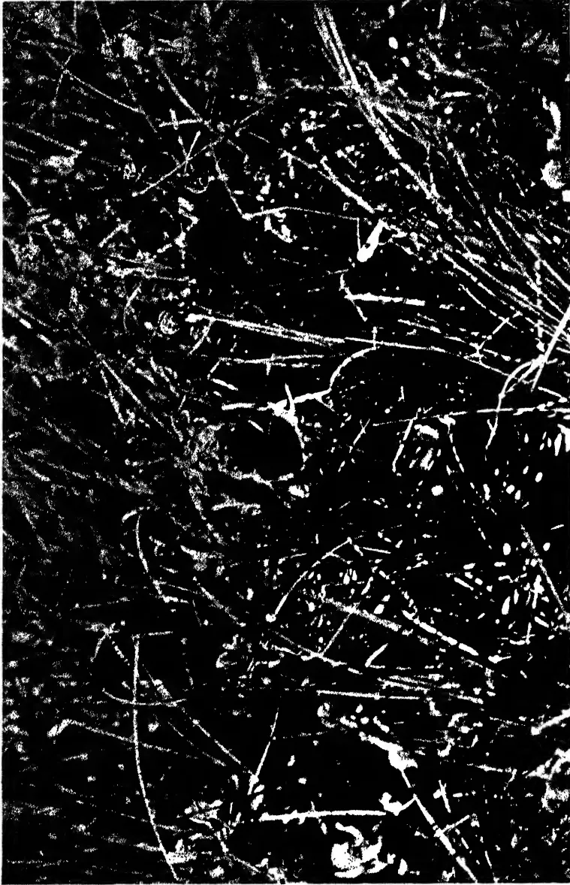
Copyright
Photo by the Author.
PLATE II. Ceylon Streaked Fan-tailed Warbler (Cisticola juncidis omalura)
Nest containing 4 young, amongst the grass in an uncultivated-paddy field. November 17th, 1935.
common in paddy fields. It is very frequently to be seen sitting upon a post or the top of a bush and diving into the growing crops to capture small insects. It is almost purely insectivorous in its diet and takes many small injurious forms such as beetles and grasshoppers.
THE ASHY SWALLOW-SHRIKE (Artamus fuscus).—S. Tal-gas Kurulla; T. Madam-poru.
This species may often be seen, sailing with swallow-like flight over the paddy fields. It is gregarious, going about in small flocks, and takes most of its food on the wing. Burt has ascertained that its food consists of miscellaneous insects, chiefly Diptera, small beetles and a few small grasshoppers. As many of these are captured close above the growing paddy, the species may be considered definitely beneficial. It generally nests in palm-trees.
THE CEYLON STREAKED FAN-TAILED WARBLER (Cisticola juncidis omalura).—S. Tanakola Kurulla; T. Tinu-kuruvi or Vayalan.
All our Warblers, both resident and migratory, feed practically exclusively on insects or their larvae. They are, therefore, of the greatest benefit to agriculture. The little Streaked Fantail Warbler is a common resident in most grass and paddy fields and passes its existence searching for small insects and larvae amongst the growing plants. It has been proved to feed upon small weevils, aphids and lepidopterous larvae and it is likely that it is a very useful controlling agent of the leaf-folding caterpillar (Marasmia bilinealis) one of the most troublesome insect pests of growing paddy. This little Warbler builds a deep tubular nest amongst grass or paddy stems and lays usually four reddish-spotted white eggs. A nest containing young, built amongst the stems of grass and weeds in an uncultivated paddy field, is shown in the accompanying photograph. (Pl. II).
THE CEYLON WREN-WARBLER (Prinia inornata jerdoni).—S. Hamhu-kurulla; T. Tinu-kuruvi.
Like the last species, this Warbler is a common resident in many paddy fields. It feeds exclusively on insects and larvae and, like the Fantail Warbler, is likely to be most helpful in
342controlling the depredations of the leaf-folding caterpillar. This Warbler generally builds its nests in the tops of clumps of tall grasses or sedges, growing in the more marshy parts of the fields. It makes a purse-shaped nest of fine strips of grass and lays three or four beautiful blue eggs, decorated with streaks and spots of blackish brown. Two other species of Wren-Warbler visit paddy fields occasionally but they are not so commonly seen as the present species. A photograph of a Ceylon Wren-Warbler, feeding its young in a nest in the top of a clump of illuk-grass, is shown. (Pl. III).
THE COMMON CEYLON MYNAH (Acridotheres tristis melanosternus).—S. Mayina or gonkawadiya ; T. Nakanampachchi or nakkkan.
Although the common Mynah is inclined to be omnivorous in its diet and has been known to feed on paddy grains, I have never heard of it having been accused of damaging paddy crops. On the other hand, it is definitely a most energetic hunter of grasshoppers and locusts and is, undoubtedly, one of the most useful birds in the Island.
In addition to grasshoppers and locusts, it feeds largely upon caterpillars and other larvae, beetles, such as weevils, small worms and grass seeds. It is reported from India to have helped considerably in checking outbreaks of the paddy-swarming caterpillar (Spodoptera mauritia) and, in tilled fields to have eaten great numbers of cut-worms and other larvae. The Mynah nests in holes in decaying palms and other trees and should be encouraged and protected.
THE CEYLON SWALLOW (Hirundo daurica hyperythra).—S. Wehi-lihiniya ; T. Tam-padi, Adaikalam-Kuruvi or Talan-Kuruvi.
The Ceylon Swallow, together with the Eastern Swallow (Hirundo rustica gutturalis), during the North-East monsoon period, is very often to be seen skimming over growing paddy crops. Both species catch large numbers of flies of various sorts, small flying beetles, termites and small moths and are very beneficial to agriculture. The Ceylon Swallow builds a retort shaped nest of mud under a bridge or culvert or in a rocky cave, while the Eastern Swallow is migratory.
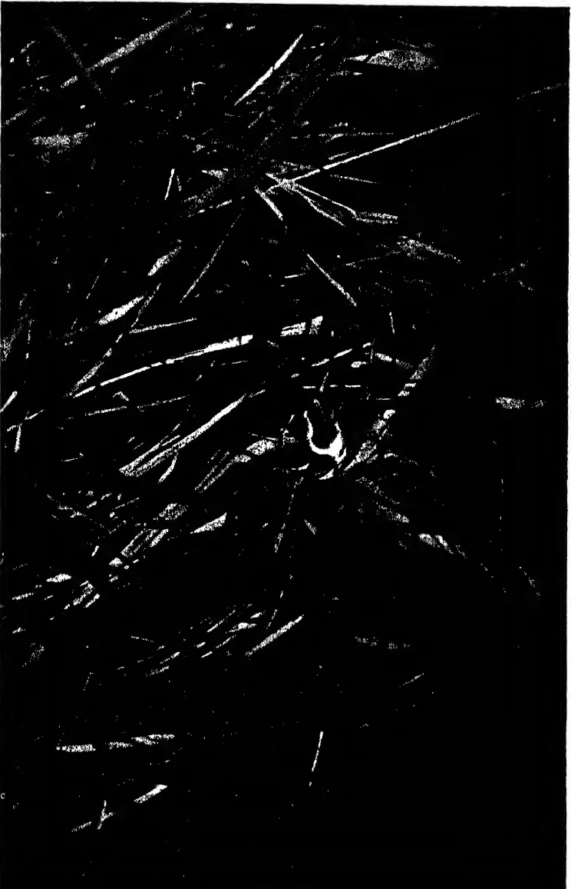
Copyright
Photo by the Author.
PLATE III. Common Ceylon Wren-Warbler (Prinia inornata jerdoni)
Bird feeding young in nest, in the top of a clump of Illuk-grass. October 11th, 1936.
Species beneficial to agriculture.
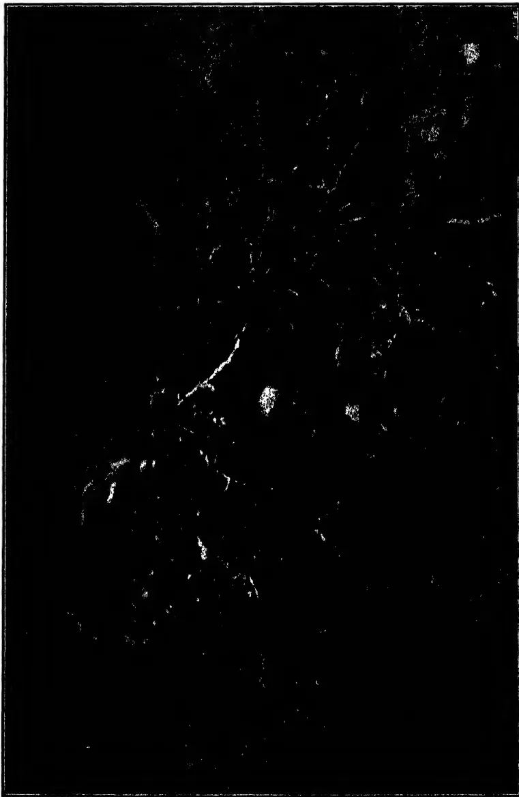
A black and white photograph of a bird's nest, likely an ash-crowned finch-lark nest, containing one egg and one newly hatched young. The nest is dark and textured, set against a light background.Copyright
Photo by the Author.
PLATE IV. Ashy-crowned Finch-lark (Pyrrhulanda g. grisea)
Nest containing one egg and one newly hatched young. June 13th, 1936.
Species beneficial to agriculture.
343THE GRAY-HEADED WAGTAIL (Motacilla flava thunbergi) and
THE GRAY WAGTAIL (Motacilla cineria caspica).
Both these Wagtails are migrants; they are resident in the Island only during the North-East monsoon period—from about September to the following March. The former species occur in large flocks in grasslands and paddy fields undergoing cultivation, while the latter haunts watercourses and damp areas. Both are chiefly insectivorous, eating many small insects, larvae and flies; both species are mildly beneficial to paddy cultivation.
THE INDIAN PIPIT (Anthus richardi rufulus).—S. Gomaritta;
T. Nethai-Kali.
The Pipit is a very common resident in or on the borders of paddy fields. It is undoubtedly a useful bird. It feeds on seeds, as well as on insects, and does much good by devouring quantities of grass and weed seeds in addition to weevils and other small injurious insects and so cleans the ground for the paddy crops. It makes its nest upon the ground, generally in the shelter of a grass tuft.
THE ASHY-CROWNED FINCH-LARK (Pyrrhulauda g. grisea),
MADRAS BUSH-LARK (Mirafra assamica affinis) and
the NILGIRI SKY-LARK (Aluda gulgula australis).—
S. Gomaritta; T. Vanam-padi or pullu.
All these three larks haunt dry paddy fields and do much good by cleaning the land for the next crops. They pick up quantities of weevils and other small beetles, larvae and small grass and other seeds. All three species nest upon the ground, chiefly in the drier districts of their respective ranges, laying either two or else three eggs. A typical nest of the Finch-lark, containing one young and one egg, is shown in the accompanying photograph. (Pl. IV).
THE SOUTHERN INDIAN ROLLER (Coracias benghalensis indica).—
S. Dumbona or Dunkawaluwa; T. Panan-Kadai or
Kotta-Kili.
The 'Blue Jay,' as it is often called, is as useful as it is beautiful. It haunts many paddy fields in the dry zone and as it feeds mainly upon grasshoppers, crickets and caterpillars it does an immense amount of good. It eats termites, beetles
344and other insects as well and should be strictly protected wherever it is met with. Burt has found grasshoppers, locusts and beetles (Staghorn (Rhyncophora) and other Lucanidae) in those that he has examined, thereby confirming previous observations of the usefulness of these birds to paddy cultivators. It nests in decayed palms or holes in other trees and lays four or five white eggs.
THE CEYLON WHITE-BREASTED KINGFISHER (Halcyon smyrnensis generosa).—S. Pilihuduwu ; T. Min-kotti.
Although the majority of Kingfishers live principally on small fish, this species is mainly insectivorous in its diet. It catches, in the paddy fields, many grasshoppers, beetles and small land crabs and thereby proves its usefulness. Although it will, when the opportunity offers, take an occasional young bird, small frog or lizard, it is, on the whole undoubtedly a beneficial species. It nests in holes dug deep in vertical banks and lays from three to five pure white eggs.
THE COMMON INDIAN NIGHTJAR (Caprimulgus asiaticus).—S. Bin-bassa ; T. Pathekai-Kuruvu or Kuruttu-pakkul.
The Nightjar is not a common bird in the majority of paddy fields but it occurs in many in the lowlands and when it does occur its activities are very beneficial. It flies in the dusk and at night and probably captures many injurious insects not otherwise troubled by insectivorous birds. It feeds mainly upon small moths and beetles, the majority of which are injurious to crops. The Nightjar lays two eggs on the bare ground, often quite in the open, but sometimes in the shade of a bush. It trusts to protective colouring to escape detection by its enemies.
THE CEYLON PIED-CRESTED CUCKOO (Clamatorjacobinus taprobanus).—S. Konday-koha ; T. Konday-kuyil.
All Cuckoos are of direct benefit to the agriculturist in that they feed principally upon caterpillars—commonly on the hairy kinds that most other birds will not touch. The Pied-Crested Cuckoo is, however, the only species that is seen at all commonly in the paddy fields of the low-country. In addition to feeding upon caterpillars of many different species, it eats grasshoppers and other insects. This Cuckoo lays its
345eggs in the nest of the COMMON BABBLER (Turdoides griseus striatus), the Cuckoo's eggs being so like those of the Babbler that they are indistinguishable while in the nest. Mason (Food of the Birds of India p. 186) writes "We have many references to birds, other than the Cuckoos, eating hairy caterpillars, but these are exceptions and Cuckoos are the only birds that do so habitually. I have examined a considerable number of different species of birds, and in no other case have I found a bird, other than a Cuckoo, touch this particular kind of food. Cuckoos, therefore, being the only real bird-check we have on hairy caterpillars, which are mostly defoliators, need all the protection we can give them, and should be encouraged as much as possible. They can only be encouraged in one way, namely, by the encouragement of their hosts." With this statement I fully agree.
THE SOUTHERN CROW-PHEASANT or COUCAL (Centropus sinensis parroti).—S. Eti-kukula or Bu Kukula; T. Chempakam or Chemput.
'Jungle crows' are often seen walking about in paddy fields, singly or in pairs. They are not entirely beneficial to agriculture as a whole, as they take many lizards and other beneficial forms and also raid small birds nests; but, in the paddy fields, their activities are, on balance, useful I think. Burt has found the remains of beetles and cockroaches in those that he has examined and they have been seen to devour many snails. In India, grasshoppers, beetles, bugs, spiders, land crabs and small frogs have all been found in them. The Coucal builds a large, untidy ball nest amongst the dense foliage of a tall tree or else in the centre of a thorny thicket or creeper and lays three white eggs.
THE BROWN FISH-OWL (Ketupa z. zeylonensis).—S. Bakamuna; T. Andai or Umatan-kuruvi.
All owls, in Ceylon, are directly or indirectly very beneficial to agriculture as, in addition to the smaller species taking many beetles and other noxious insects, the larger forms kill many small rodents which are, in themselves, the worst of all agricultural pests. The Brown Fish-Owl, which is one of the commonest owls to be met with at dusk in paddy fields, as
346well as killing small rodents, takes very many land crabs and a few large beetles and other insects.' Some of the nests of this species are littered with the remains of land crabs and it seems likely that the young owlets are fed largely on a diet of them.
THE COLLARED SCOPS OWL (Otus. b. bakkamoena).—S. Punchi-bassa ; T. Sinna-andai or nattu.
The little Scops Owl also does a great deal of good in paddy fields, at night. Being one of our smaller owls, it is chiefly insectivorous but will also take mice. All our owls nest chiefly in large holes in trees and all lay white eggs.
THE BRAHMINY KITE (Haliaster. i. indicus).—S. Akassa ; T. Chem-pirandu.
This species is commonly to be seen sailing round over paddy fields and in the vicinity of tanks in the low-country; its activities are mainly beneficial. Although it takes young or wounded birds, lizards and frogs, which are beneficial to paddy cultivation, it feeds largely upon land crabs and large insects such as crickets, grasshoppers and locusts. In those he has examined, Burt has found the remains of locusts, beetles and crabs. I think, therefore, that the species may be considered as being, on the whole, mildly beneficial. It nests in large trees adjacent to tanks and paddy fields, building a large stick nest and laying, usually, three eggs.
THE BLACK-WINGED KITE (Elanus coerulcus vociferus).—S. Kurulla-goya ; T. Pirandu.
The Black-shouldered Kite or "Gull-hawk" is not as common as one would like to see it, but it frequents some of our paddy fields. It takes many insects, such as grasshoppers and large beetles, and numbers of small rats and mice as well and by so doing does much good. On the other hand, it also takes lizards and an occasional useful bird. On balance, however, it is undoubtedly a useful species and should be encouraged. It builds its crow-like nests in the tops of high trees and lays either two or three oval eggs.
THE PALE HARRIER (Circus macrourus).—S. Akassa ; T. Punai-pirandu.
The Harriers, of which there are four species that visit Ceylon during the North-East monsoon period, are all migratory
347birds. The larger ones, the MARSH HARRIER (Circus. a. aeruginosus) and MONTAGUS HARRIER (Circus pygargus), although they take insects and mice occasionally, live chiefly upon lizards, frogs and small birds; they must therefore be ranked as neutral or possibly as definitely injurious birds. The Pale Harrier, however, although it takes lizards, lives much more on insects and mice and is therefore a most useful bird to agriculturists.
THE KESTREL (Cerchneis tinnunculus).—S. Ukussa or Kurulla-goya; T. Valluru.
Two races of Kestrel are said to be found in Ceylon, one migratory and the other resident, but the latter form is very rare. However, both have similar habits and do much good to agriculture in that they feed largely upon small rodents and large insects. They also eat, especially in the hill-districts, many lizards, but when they are haunting paddy fields, as they frequently do, they must be considered as very beneficial birds.
THE CEYLON WHITE-BREASTED WATER-HEN (Amaurornis. p. phoenicurus).—S. Korowaka or meti-korowaka; T. Kanan-koli.
All the smaller Rails are useful birds but, as they are comparatively scarce, they can have but little beneficial effect upon paddy cultivation. The White-breasted Water-hen, however, is a common species to be found in or near most paddy fields. It feeds mainly on grass seeds and insects and may, possibly, occasionally eat a little ripe paddy that has fallen from the ear. It generally haunts swampy paddy fields when they are lying fallow or have been newly cultivated and helps to clean the soil by picking up numerous small insects, larvae and seeds.
THE INDIAN STONE-CURLEW (Burhinus oedienemus indicus).—S. Golu-kiraluwa or Golu-kirala; T. Mussal-kannadi.
In some of the more extensive paddy fields in the dry zone, the Indian Stone-Curlew is to be found either in small parties or in pairs. It is a particularly useful bird where it occurs and should be protected and encouraged as much as possible. It feeds almost entirely on insects, small snails and worms. It lays two or, occasionally, three eggs in a slight
348depression in the ground, the eggs being protectively coloured and so generally escaping detection.
THE INDIAN RED-WATTLED LAPWING (Lobivanellus. i. indicus).—S. Kiraluwa or Kirala; T. Al-kati. (Pl. V).
The "Did 'e do it" is a common bird in most paddy fields when they are lying fallow or the growing crops are not too tall. It feeds upon insects, their larvae, shells and worms and so helps to clean the fields when they are lying fallow or are newly cultivated. Burt has found many beetles in those he has examined. This Lapwing, in spite of being such an annoying bird from its habit of mobbing the intruder with loud cries, should therefore be protected as a beneficial bird.
THE EASTERN GOLDEN PLOVER (Pluvialis dominicus fulvus).—S. Oleiyia or Rana-watuwa; T. Kotun.
Like the Pintail Snipe, the Golden Plover is a North-East monsoon migrant. It arrives in flocks towards the end of September or beginning of October. It feeds chiefly on small beetles, worms and other insects and larvae and is often to be found in newly-cultivated or fallow paddy fields. Burt has found molluscs and grasshoppers in those he has examined and its activities are undoubtedly beneficial to the cultivator.
THE LITTLE RINGED-PLOVER (Charadrius dubius jerdoni).—S. Punchi-oleiyia; T. Sinna-kolan.
The little Plovers are also very beneficial birds. They are often found in the larger paddy fields near the coast and also in the dry zone. In specimens of the Little Ringed-Plover he has examined, Burt has found beetle larvae and pentatomid bugs. It is probable that the majority of the Sandpipers, found in large numbers during the North-East monsoon in most paddy fields, are also beneficial in their activities.
In the WOOD SANDPIPER (Tringa glareola) or 'Snippetet,' as it is generally called, Burt has found caterpillars, beetles and their larvae, spider and bugs.
THE PINTAIL SNIPE (Capella stenura).—S. Keswatuwa; T. Ullan kuruvi or Isnapu.
Snipe feed chiefly on worms, grubs, small snails and beetles and, like the Plovers and most Sandpipers, are undoubtedly beneficial birds. Burt has found worms, beetle grubs and
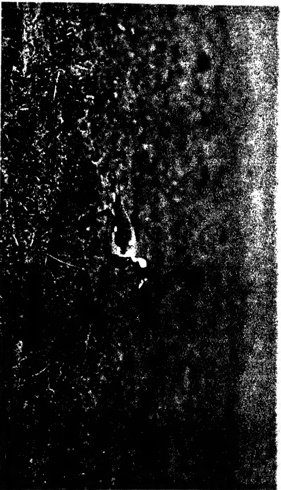
Copyright
Photo by the Author.
PLATE V. Indian Red-wattled Lapwing (Lobianellus i. indicus)
Bird approaching nest with 4 eggs. August 15th, 1936.
Species beneficial to agriculture.
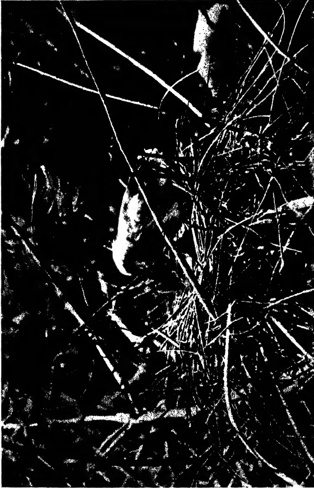
Copyright
Photo by the Author.
PLATE VI. Indian Pond-Heron (Ardea grayii)
Bird at nest, containing newly hatched young, in semi-dry bed of a tank. August 2nd, 1936.
Species beneficial to agriculture.
349aquatic larvae in those that he has examined. The chief economic value of the snipe lies, however, in its food value.
THE WHITE IBIS (Threskiornis melanecephalus).—S. Tattu-kokka or Dahakatti-kokka.
The larger and more remote paddy fields of the dry zone are visited regularly by White Ibises and Storks of various species. All of them eat many grasshoppers, locusts and other insects in addition to worms, crustacea, mollusca and frogs and all of them should therefore be regarded as being mildly beneficial species.
THE CATTLE EGRET (Bubulus ibis coromandus).—S. Harak-kokka ; T. Hunni-kokku.
The Cattle Egret is one of the most useful and beneficial birds in the Island. It is very frequently seen in company with cattle and buffaloes, snapping up the grasshoppers and other insects disturbed by the animals. But it is also very often found in flocks in paddy fields, both while they are being cultivated and after they have been planted. They eat almost any kind of insect, including grasshoppers and beetles, and also worms, tadpoles and small fish. Burt has found in them chiefly grasshoppers, but also moths, beetle larvae, caterpillars, crickets, flies, water-bugs (Nepa) and spiders. There are very few other species of birds that are so exceedingly beneficial to paddy cultivators. The Cattle Egret should be protected from all interference, either to itself or to its nest, and encouraged at all times.
THE INDIAN POND HERON (Ardeola grayii).—S. Kana-kokka ; T. Kuruttu-kokku or Nuli-madayan. (Pl. VI).
The 'Paddy-Bird' is listed by Mason and Lefroy (p. 359) as being, in India, a species injurious to agriculturists, but I am unable to agree with them. Granted that it takes many larvae of dragon-flies, which turn into beneficial insects, and frogs, which again are beneficial, it is one of the best controlling agents of land crabs and also takes a great many grasshoppers and other injurious insects. The land crabs do great damage in paddy fields and any species that acts as a natural control of their numbers must, I consider, be ranked as a beneficial species. In those that he has examined, Burt has found crabs,
350small fish, shrimps and grasshoppers. On balance, I do not think that there can be any doubt that the Paddy-bird is a useful species. It nests in trees standing beside water or in bushes and dead branches standing in water, making a nest of sticks and laying three or four chalky, bluish eggs.
This completes our list of birds that may be considered to be definitely beneficial or useful in relation to the cultivation of paddy. We now come to those species which are definitely injurious. Luckily for the villager, this list is not nearly so formidable as that of the beneficial species. The injurious birds, however, although few in species, are generally many in numbers and therein lies their potentiality for harm. In most cases, they are birds that habitually visit the fields in flocks and devour much grain, either when it has just been sown or when it is in ear and almost ready for garnering.
The following are the chief injurious species that cause damage in Ceylon.
THE BAYA OR COMMON WEAVER-BIRD (Ploceus philippinus).—
S. Wadu-kurulla ; T. Thukanan-kuruvi or Manja-kuruvi.
Although such an interesting bird, from the point of view of its unique nest-building habits, there can be little doubt that the Weaver-bird is definitely harmful to paddy crops. In many parts of the lowlands it is a semi-migratory bird and appears in flocks in certain districts only when the paddy is well grown. The flock selects a suitable tree in or near the field and proceeds to weave its nests from the green blades of the paddy plants. These pendulous, flask-shaped nests are woven with wonderful dexterity. The hen-birds then lay three or four white eggs and, after hatching them out, proceed to rear their families on the now ripening grain.
The Weaver-birds appear to be exclusively grain-feeders and eat large quantities of grass and other seeds as well as paddy and other grain. They obtain the grain, while it is yet in the ear, by clinging to the stems and attacking the heads. Although a common bird in many districts, that undoubtedly does much mischief, it is rarely present in sufficient numbers to do any great damage in the paddy fields.
351THE WHITE-BACKED MUNIA (Uroloncha. s. striata).—S. Wi-kurulla ; T. Nellu-kuruvi.
This species probably takes a few insects, grubs and grass seeds, especially while its young are still in the nest, but paddy and kurakkan, when available, are its chief diet. It is a very small bird, but prolific, and goes about visiting the fields in small parties—probably family parties. If present in numbers, it may do considerable damage when the grain is ripening. Its nest is a loose ball of grass or such-like material with the entrance at one side, placed some 5 to 10 feet from the ground in a tall bush or in the branch of a tree. Four to six small white eggs are laid and breeding appears to continue intermittently, more or less throughout the year. The young continue with the parents for some months after they leave the nest, forming small flocks.
THE SPOTTED MUNIA (Uroloncha punctulata punctulata).—S. Wi-kurulla ; T. Nellu-kuruvi.
The Spotted Munia is even more destructive than the White-backed species. It generally visits the paddy fields in larger numbers, flocking together and doing much damage to the grain in the ear. I have known as many as thirty of these little birds, to be killed by one discharge from a twelve-bore gun, fired into a flock.
Like that of the last species, the nest is a ball of grass or paddy-straw, placed in a tall bush or low tree. Often a number of nests, all containing eggs or young, may be found in a tree, on the borders of a field. Breeding continues intermittently throughout the year and four to six small, white eggs are laid each time. The species, therefore, multiplies very rapidly and is apt to do considerable real damage in the fields, unless its numbers are kept in check.
In some of the more arid districts of the north and to a lesser extent in the south-east, the WHITE-THROATED MUNIA (Uroloncha malabarica) also does damage, occasionally, to the ripening paddy crops, but this species is confined to a very restricted area in the dry zone.
THE HOUSE-SPARROW (Passer domesticus confucius).—S. Ge-kurulla ; T. Adackalam-kuruvi or Urkkuruvi.
The Common Sparrow is a bird that is greatly encouraged in Ceylon. It is a friendly little bird and its confiding ways
352appeal to the local inhabitants. Consequently, chatties and boxes, with holes in them, are hung on the walls of buildings for their use as roosting and nesting sites and the birds are frequently fed.
When their young are in the nest, the parents undoubtedly do some good as they feed them on grubs, insects and small soft seeds. Their activities are at this time beneficial. But when the young leave the nest and the paddy in the nearby fields is ripening, they then band themselves together and visit the fields. Large flocks often do considerable damage to paddy and other grain, which is yet in the ear. The species is a prolific one and where its numbers tend to become unduly numerous they should be controlled.
THE WESTERN BLOSSOM-HEADED PAROQUET. (Psittacula cyanocephala cyanocephala).—S. Panu-girawa; T. Kili.
In many of the paddy fields of the lower hill-country, the Blossom-headed Paroquet is a pest. It visits the fields in small flocks, when the paddy is in the ear and consumes much of the grain. When the flocks are at all numerous, much real damage is done. In some districts, the cultivators attempt to keep off these Paroquets by stretching strings across the fields to frighten them away.
The Paroquets lay their eggs in holes, usually high up in the branches of trees. Generally either three or four roundish, glossless, white eggs are laid and probably two broods are reared during the year.
In parts of the low-country dry zone, the ROSE-RINGED PAROQUET (Psittacula krameri manillensis) also does considerable damage of the same nature.
THE CEYLON SPOTTED DOVE OR ASH-DOVE (Streptopelia chinensis ceylonensis).—S. Alu-kobeyiya; T. Umi-purā or Mani-purā.
Doves are very common in and around paddy fields and, as they subsist largely upon grain, they must be considered injurious. Generally they do little damage to paddy in the ear but, when it is first sown and also when they glean after the reaping and from threshing floors, they eat considerable quantities of the grain. They will eat any kind of grain and also grass seeds, but rarely, if ever, insects.
353They appear to nest chiefly in March and April and again during July and August but their slight stick platforms may be found at any time during the year. They lay only two white eggs.
In the north-west coastal districts, from the north of Puttalam to Jaffna, the INDIAN RING-DOVE (Streptopelia decaocto decaocto), which has very much the same habits as the Spotted Dove, also does a little damage to paddy cultivation, but it is not a bird that occurs in great numbers.
THE INDIAN PURPLE COOT (Porphyrio poliocephalus poliocephalus).—S. Kittala or Kitta ; T. Kanan-koli.
In India, the Purple Waterhen or Coot is reported to do “immense damage” to paddy crops and very probably it does considerable damage in Ceylon in fields adjacent to the “tanks” that it frequents. It is not, however, a bird that is usually found in Ceylon in paddy fields away from the immediate vicinity of large tanks and lotus-covered lagoons. It may be considered, therefore, as a bird that does damage only very locally.
GAME BIRDS.—All the members of the “game bird” family, that is, in Ceylon, the Pea-fowl, Jungle-fowl, Spur-fowl, Patridges and Quails, are apt to feed on paddy, if the opportunity occurs. But they are so rarely to be met in paddy fields nowadays that they may be ignored. The Jungle-fowl, which probably visits paddy fields more often than any of the others, (with the exception of the Button Quail which is chiefly beneficial in its activities), generally only picks up the grain after the reaping is finished.
THE WHISTLING TEAL (Dendroclyna javanica).—S. Seruuwa ; T. Chemba-tara.
Of all our Ceylon birds, the Whistling Teal does the most real damage to paddy cultivation. It has a passion for the grain and, in many parts of the low-country, visits the newly-sown fields night after night and devours large quantities of germinating seed-paddy. Teal arrive in the fields about dusk and do not leave again until they are fully fed. The damage that they do to some of the paddy fields in the “tank” districts of the dry zone is very great and it is just as well that their numbers are kept in check, to some extent, by sportsmen.
354The Whistling Teal is a very prolific species ; the ducks lay from eight to fourteen eggs for a full clutch and probably next twice during the year. The nesting season extends from about December or January right on until July and August. The nest is placed in a large hole in the trunk of a tree standing in or beside the water or on the ground amongst herbage near the water. An islet in a "tank" is a very favourite place and I have seen as many as three nests on the same islet, where suitable sites have been scarce.
This completes the list of species injurious to paddy cultivation in Ceylon and it now remains only to sum up the foregoing.
The great majority of Ceylon birds are either neutral or only very indirectly beneficial to paddy cultivation. Thirty-four species may be ranked, however, as definitely beneficial and twelve species as definitely injurious. The chief beneficial and injurious species are listed below :
SPECIES BENEFICIAL TO THE CULTIVATION OF PADDY CROPS.
The Black Crow (Corvus coronoides culminatus).
The Small White-throated Babbler (Dumetia. a. Albicularis).
The Brown Shrike (Lanius. c. cristatus).
The Ashy Swallow-shrike (Artamus fuscus).
The Ceylon Streaked Fan-tailed Warbler (Cisticola juncidis omalura).
The Ceylon Wren-Warbler (Prinia inornata jerdoni).
The Common Ceylon Minah (Acridotheres tristis melanosternus).
The Ceylon Swallow (Hirundo daurica hyperythra).
The Grey-headed Wagtail (Motacilla flava thunbergi).
The Indian Pipit (Anthus richardi rufulus).
The Ashy-crowned Finch-lark (Pyrrhulauda. g. grisea).
The Madras Bush-lark (Mirafra assamica affinis).
The Small Nilgiri Sky-lark (Aluda gulgula australis).
The Southern Indian Roller (Coracias benghalensis indica).
The Ceylon White-breasted Kingfisher (Halcyon smyrnensis generosa).
The Common Indian Nightjar (Caprimulgus asiaticus).
355The Ceylon Pied-crested Cuckoo (Clamator jacobinus taprobanus).
The Southern Crow-pheasant or Coucal (Centropus sinensis parroti).
The Brown Fish-owl (Keputa. z. zeylonensis).
The Collard Scops-owl (Otus. b. bakkamaena).
The Brahminy Kite (Haliastur. i. indicus).
The Black-winged Kite (Elanus coerulens vociferus).
The Pale Harrier (Circus macrourus).
The Kestrel (Cerchncis tinnunculus).
The Ceylon White-breasted Waterhen (Amaurornis. p. phoenicurus).
The Indian Stone-curlew (Burhinus oedicnemus indicus).
The Red-wattled Lapwing (Lobivanellus. i. indicus).
The Eastern Golden Plover (Pluvialis dominicus fulvus).
The Little Ringed-plover (Charadrius dubius jerdoni).
The Wood Sandpiper (Tringa glareola).
The Pintail Snipe (Capella stenura).
The White Ibis (Threskiornis melanocephalus).
The Cattle Egret (Bubuleus ibis coromandus).
The Indian Pond-Heron (Ardeola grayii).
The Baya or Common Weaver-bird (Ploceus philippinus).
The White-backed Munia (Uroloncha. s. striata).
The Spotted Munia (Uroloncha. p. punctulata).
The White-throated Munia (Uroloncha malabarica).
The House Sparrow (Passer domesticus confucus).
The Western Blossom-headed Paroquet (Psittacula. c. cyanocephala).
The Rose-ringed Paroquet (Psittacula krameri manillensis).
The Ceylon Spotted Dove (Streptopelia chinensis ceylonensis).
The Indian Ring-dove (Streptopelia d. decaocto).
The Indian Purple Coot (Porphyrio p. poliocephalus).
The Whistling Teal (Dendrocygna javanica).
356In addition to recording my grateful thanks to Mr. D. R. R. Burt of the University College, Colombo, for the use of his very helpful notes on the crop and stomach contents of the birds that he has examined, I have to acknowledge my indebtedness to the authors of the following literature, which I have consulted while I have been engaged upon this article.
| Bainbridge-Fletcher. T., | 1914.. | Some South Indian Insects. |
| Brown, George, | 1928.. | The Economic value of Birds in Ceylon. The Trop. Agriculturist, Vol. LXXI, No. 5, p. 272. |
| Jardine, N. K. | 1928.. | Birds in relation to Agriculture. The Trop. Agriculturist, Vol. LXX, No. 4. |
| Mason, C. W. & Maxwell Lefroy, N. |
.. .. | The Food of Birds in India. Memoirs, Department of Agriculture, India, Vol. III. |
| Wait, W. E. | 1931.. | Manual of the Birds of Ceylon, 2nd Edition. |
358
The diagram illustrates the assembly of a blade harrow. The main part of the harrow is a vertical post with a horizontal yoke at the bottom. A rope is tied around the yoke and the post, and then passes up through a rectangular block. From the top of this block, a long, angled blade extends upwards and to the left. The blade is attached to the block by a pivot point. A side view of this pivot shows the blade at a 45-degree angle to the ground level. A split pin is used to secure the blade to the block. The rope is also tied to the top of the block, passing through a small hole. The entire assembly is shown from a front view, with the blade angled upwards and to the left.
GROUND LEVEL
45°
SPLIT PIN
— SIDE VIEW —
ROPE
YOKE
METHOD OF TYING THE HARROW
BLOCK BY SURVEY DEPT. OF CONN. 43.11.38.
THE BLADE HARROW
359C. R. KARUNARATNA, Dip. Agric. (Poona)
AGRICULTURAL INSTRUCTOR, KATUGASTOTA
THE blade harrow is one of the most important implements the Indian cultivator possesses, and on it he chiefly depends in his tillage operations. This implement consists of five parts, the head-piece, the draught pole, the two prongs, the blade and the stilt. A fairly heavy rectangular piece of log forms the head-piece, to which is attached the draught pole at such an angle that, when it rests easily on the yoke of bullocks used for drawing it, the upper surface of the head-piece will remain horizontal. Two cylindrical pieces of wood about 12 inches long and 2 to inches in diameter, driven into the lower surface of the head-piece four to five inches away from the ends, serve as prongs. These are fixed pointing downwards and forwards at an angle of about with the vertical. The efficiency of the implement depends largely upon the angle at which the prongs are fixed to the head-piece. Prongs with an inclination in the direction of its motion tend to penetrate more deeply in the ground than vertical prongs of similar weight and sharpness. The tendency to penetrate increases as the prongs move further from the vertical until the position of is reached. Thereafter the power to penetrate gradually diminishes.
The blade consists of a flat iron about 2 to inches wide and partially sharpened on the lower edge. This is the principal working part which enters the soil. The ends of the blade are turned up so that it may be easily fitted into the wooden prongs which carry it, and secured firmly with two iron rings. A small piece of wood fixed in the middle of the upper surface of
* This series of articles describe a number of simple implements used in India and Ceylon which are suitable for general adoption by the village agriculturist.—Editor, T. A.
360the head-piece serves as the stilt or handle. The stilt serves two purposes : to lift the implement when the head lines are reached and to press the head-piece down when the implement is required to work deeper. This completes the implement. The cost of making one of these implements should not exceed Rs. 5.00 ; it may be less if jungle timber is readily available.
The whole implement looks like a scraper or a large hoe. When the soil is hard or where there are mild impediments to the working of this implement through the soil, a heavy stone is kept on the head-piece to add to the weight, or the driver himself may stand on the head-piece. It is quite a common sight in Western India to see a row of four or five of these blade harrows, each with its driver skilfully balancing himself on the head-piece, working together in one field. When the implement is required for work, the head-piece and the draught pole are braced by a rope and then fastened to the yoke. It is further strengthened by means of two pieces of wood fixed so as to brace the head-piece and the draught pole together.
The blade harrow is drawn by one pair of bullocks driven by one man. After a land is ploughed and cross ploughed the blade harrow is worked three or four times according to the nature of the soil. Harrowing is necessary in addition to ploughing for the formation of a good seed bed. It pulverises, levels, and brings the soil into a favourable condition for the reception and even distribution of seed. It eradicates surface weeds and forms a good surface mulch. The harrow can be used for covering the seed after sowing. It can be used as a leveller, by passing a rope several times over the two prongs or by tying a plank to the prongs. This prevents the soil from falling over the blade, and the collected soil can be dumped in the lower places.
The size of this implement may vary according to the purpose for which it is used. At the Wariapola Farm a two feet harrow was used for intercultivating the tobacco and chillie crops, and a three feet harrow for wider spaced crops like coffee, croton, and fruit plots. Nine inch harrows could be used for intercultivating maize and sorghums, etc. One man and a pair of bullocks working an 8-hour day could harrow 2 to acres. To work the harrow as an interculturing implement,
361the bullocks should first be trained, or they will tread carelessly on the rows of plants and cause much damage. The bullocks should be well muzzled to prevent them from attempting to pick up bits of green leaf when they are working. This is of especial importance when sorghum crops are intercultivated. Owing to the presence of hydrocyanic acid in the plants before they flower, these crops are poisonous as cattle food. The selection of proper sized yokes for intercultural operations is important. The size of the yoke depends on the distance between the rows of plants to be intercultivated. If the crop is sown in rows 3 feet apart, then the yoke should be 6 feet from the centre of the neck of one animal to that of the other. Allowing six inches on each side, the yoke should be 7 feet long. If the crop is sown two feet apart, then the yoke should be 5 feet. A convenient formula to find out the appropriate length of the yoke in inches is to multiply the width of the row by 2 and add 12. One long yoke with several sets of holes drilled will serve for intercultivating different crops.
362W. R. C. PAUL, M.A., M.Sc., D.I.C., F.L.S.,
DIVISIONAL AGRICULTURAL OFFICER, NORTHERN
THE introduction of rotation cultivation in the Wanni—that part of the dry zone in the northern half of Ceylon excluding the Jaffna Peninsula—and the substitution of the time honoured chena system by it have received much consideration in the past in the Island, but so far, apart from the Experiment Stations of the Department, no rotation system is being practised.
One of the chief difficulties in introducing a scheme of rotation cultivation lies in the fact that the Wanni peasant has, presumably from time immemorial, been accustomed to raising his highland annual crops—as apart from paddy—by his chena or method of shifting cultivation. Where there were large extents of forest land available and the population sparse this was allowed to continue but examination of the statistics of rural populations dependent mainly on chenas in the Wanni has revealed the fact that several of the villages themselves are shifting and especially in the Mullaitivu district the population is decreasing to an alarming extent.
The chena is open to the depredations of wild animals and the cultivator himself has to expend much of his energy in keeping awake at night during the period when his crops are on the land. His vitality is, thereby, considerably lowered, he becomes a victim of malaria and he finds himself a slave of custom unable to exert himself in order to adopt new methods for the improvement of his lot in life. He is, moreover, dependent on a certain amount of paddy, and therefore, feels that by adhering to the chena system his task of clearing his land for his high land crops by felling and burning can be carried out conveniently during the months of July and August so
363that he is free to devote himself to work on his paddy land in the following October. Furthermore, his high land crops, including even chillies, are all broadcasted so that as soon as the rains arrive his chena is sown without much expenditure of time or effort.
Hence, as long as the Wanni villager is given chenas and also, has his share of paddy land irrigable from tanks, he is reluctant to adopt a system of continuous cultivation for his high land crops. But this should not be an insuperable difficulty.
In considering any scheme of rotation cultivation it is essential in the first instance that the simplest implements compatible with efficiency should be adopted. In this matter, much can be learnt from South India where the ryot adopts such implements as can be turned out by a local blacksmith and carpenter. These are the light iron mould board plough, a blade harrow and a seed drill. Large iron ploughs, disc harrows and cultivators although useful on Experiment Stations in expediting tillage operations where large acreages have to be brought under cultivation in a relatively short time are much too expensive and complicated at present for the peasant, and do not merit consideration now in this problem.
As regards the unit of land which can be conveniently and profitably worked by a peasant cultivator, it is generally possible with a pair of bulls to complete the ploughing of about acre per day with a mould board plough and about 3-4 acres a day with a harrow. As the preparatory tillage should be carried out in September and early October with the first rain assuming a period of about three weeks for this work it should be possible to cultivate about 6 acres of land with a single pair of bulls.
It is, of course, not to be expected that in any scheme of rotation cultivation to be carried out by peasants the full extent ultimately to be maintained should be opened up at the outset. Capital which is beyond the resources of the peasant is needed for this. During the first year, however, about two acres of land can be conveniently cleared by felling and burning of the jungle but not by stumping, and each successive year the area can be gradually extended.
364Another of the chief difficulties in introducing rotation cultivation is the stumping of the land. This is the most expensive operation which the cultivator has to face at the outset in opening his land for continuous cultivation with implemental tillage. The prolific growth of weeds that arise in any clearing in the dry zone after the first crop is harvested and the land allowed to revert to jungle growth is almost alarming. But weed growth can be kept down by keeping the ground always covered, preferably with a broadcasted crop. Even in chenas, kurakkan is sown broadcast during the first season (maha) but when it is harvested, cattle are allowed in the chena to graze on the stubble and with a light weeding with the mammoty, gingelly is sown broadcast again for the second season (yala). The land is thus kept covered and protected from weeds. After the gingelly crop is over cattle are allowed to graze again and for the second year the land which becomes known in the North-Central Province as a kanathu (second year) chena in contrast to the nawathili (first year) chena is cleared by mammoty weeding and is sown once again with kurakkan mixed with some maize, mustard, chillies and Amaranthus (S. tampala) as before.
If, therefore, two acres of the rotation area are taken up in this way by the continuous sowing of crops broadcast and by penning cattle during the intervals on the stubble, stumping can commence in the third year and when these two acres have been completely stumped, ploughing and harrowing operations can be undertaken on them while the further clearings are treated in the way described above with full attention focussed on the problem of keeping down weed growth. In this manner the whole extent can be gradually taken up. By confining attention to broadcasted crops with the exception of chillies during the first season and sowing sunn hemp broadcast as soon as any area tends to get out of hand in regard to its growth of weeds the land can be kept clean until the time when implemental tillage can be taken up and weed growth brought under control more easily in this manner.
Fencing is not a difficult problem as most chenas are fenced either with large logs cut from the jungle growth in the chena during felling operations and placed one over the other
365along the direction of the boundaries of the chena or by arrangement of posts as in a palisade. These methods can be adopted at the beginning and later when the whole extent has been opened a live or barbed wire fence can be established. Where rotation farms are situated adjoining each other a live fence can be planted separating two farms while a barbed wire fence would be generally necessary only for the outside boundaries.
At present, the Wanni peasant is dependent on one acre of chena land and an extent of paddy land the cultivation of which varies according to the amount possessed by each individual though in the case of the older or purana fields these are usually owned as small fragmentary holdings or as undivided shares. If he can subsist on this, the apportionment of a block of about 8-10 acres of which 6 acres may be set apart for his rotation and the rest for his fodder, cattle pen, garden crops such as plantains and vegetables and his quarters will considerably enhance his economic condition.
The following is a suggested rotation on 6 acres :—
| Block A 2 acres | Maha—kurakkan Yala—gingelly |
| Block B 2 acres | Maha—chillies Yala—cumbu or Pearl millet green gram |
| Block C 2 acres | Maha—cotton Yala—sunhemp |
The area is divided into 3 blocks of 2 acres each and the crops on each block follow each other in the order given above. Provision is made in this scheme for two cereal food crops—kurakkan and cumbu (Pennisetum typhoideum), three money crops—gingelly, chillies and cotton, a pulse—green gram and a green manure crop—sunhemp. As kurakkan requires a well-manured soil it is allowed to follow sunhemp in this scheme but cumbu which can grow on poor soils follows three exhausting crops, viz., kurakkan, gingelly and chillies. After the gingelly crop is over the land should be penned or preferably manured with supplies from the compost pit before planting chillies. Green gram is grown along with cumbu partly to improve the fertility of the soil. It can be harvested before the cumbu ripens and will not interfere with the growth of the cereal.
366The land can then be penned or manured again after cumbu and before planting cotton. When the cotton crop is over, a green manure such as sunn hemp is grown, part of the area can be ploughed in early or preferably composted and part kept for seed for the next year's sowing and the stalks composted or made into fibre, if a supply of water for retting is available close by. In view of the importance of a bean crop in adding calcium to the diet of the peasant and the value of soya bean as being, furthermore, considered to be the most complete food crop of the world the substitution of soya beans for green gram should be made as soon as a suitable strain is found which will grow successfully in the dry zone areas of Ceylon.
It is essential for the success of this scheme that there should be a sufficient number of cattle maintained to provide the manure necessary for continuous cultivation to be carried out in the dry zone at a high level of fertility.
Lord* has recently drawn attention to the fact that in any system of permanent cropping in the dry zone the maintenance of fertility must depend on the use of organic manure such as cattle manure, compost or green material. With the exception of the Jaffna Peninsula where alone intensive cultivation of annual crops in definite rotation systems is practised, penning or herding animals on the land is almost unknown while the preparation of compost and the collection of as much cattle manure and village sweepings as possible are only recently being taken up. The preparation of compost from green manure, the droppings of animals and village refuse, etc. requires extra labour but its value in improving the fertility of the land on which it is applied cannot be overestimated. The penning of animals on the land requires less effort on the part of the cultivator but this does not lead to the maximum conservation of the manure derived from these animals as would be the case if the manure was collected and composted first with the waste materials of the farm.
It is necessary to ascertain the number of cattle needed eventually when the full unit of land has been opened up for cultivation with animal-drawn implements. It is stated by
* The Agricultural Development of the Dry Zone of Ceylon, by L. Lord, The Trop. Agriculturist, Vol. LXXXVI., No. 5, May 1936.
367Faulkner and Mackie* that in Northern Nigeria sufficient manure can be obtained from a pair of bullocks to maintain "10 acres of land at a reasonable level of fertility" which is considered to be not high but certainly much above that normally prevailing on farms which are worked by hand implements or even after occasional penning. In the same article these writers state that the Nigerian Department of Agriculture has opened up demonstration farms, each of about 10-15 acres which extent is considered to be "the maximum area that can be well cultivated and manured by one ordinary farmer owning a pair of bullocks and possibly a cow and some small stock." Lord in the reference given above considers that in a holding of 5 acres in the dry zone of which about acres are set apart for rotation cropping, a pair of working bulls and 2 milk cows are necessary. While at present the data available are still insufficient to indicate the number of heads of cattle necessary for providing, after proper conservation, sufficient manure to be applied on 6 acres of land for rotation cropping in the dry zone it is considered that in the light of the above 5 heads of cattle should suffice for a rotation area of six acres. This number allows for one pair of bulls for cultivation operations, one extra bull as a stand by to avoid overstrain of the animals during the period of intensive work on the farm, and 2 milk cows for providing milk and ghee. While this number is obviously insufficient for penning purposes on six acres of land it should be adequate for maintaining the fertility of the soil if the manure is collected and composted with green manure and the waste products of the farm. The best utilisation of the manure available from cattle is by composting it rather than by direct penning on the land but prior to the commencement of the preparatory tillage for the next season's crops it is advantageous to pen the cattle on the land so that the stubble may be eaten off, thereby rendering ploughing operations with a small mould board plough easy.
It is necessary that adequate attention should be paid to the question of providing a suitable ration especially in the dry season for the cattle maintained on a rotation farm. A
*The Introduction of Mixed Farming in Northern Nigeria, by O. T. Faulkner & J. R. Mackie, The Empire Journal of Experimental Agriculture, Vol. IV., No. 13, January 1936.
368certain quantity of succulent fodder is necessary and this can be obtained by establishing about one acre of land under a fodder grass such as Napier. Another acre can be set apart for a pen and paddock for the cattle. In this area pasture may be allowed to develop but it is not used as a grazing area in the strict sense of the term. In both these areas Leucaena glauca should be planted as shade for the fodder grass and for the cattle in the grazing area. The pods of this tree can be utilised after boiling to feed the cattle. From the rotation area there will be a supply of kurakkan and cumbu straw for the cattle. This should be stored and rationed out to the cattle instead of allowing them to feed directly on the high kurakkan stubbles as in the chenas. The vines of the green gram and the husks of the sunn hemp also provide additional food for the cattle. Cotton seed is a valuable concentrate for cattle and if a scheme can be organised by which the seed can be returned to the grower after his cotton is ginned at the mills in Colombo it will prove of great benefit to the rotation farmer who requires all the available by-products from his farm for feeding his cattle. As every Wanni peasant possesses a certain extent of paddy land the paddy straw available should be conserved by him for feeding and providing a bedding for his cattle.
About 1-2 acres of land should also be set apart for the peasant's house, his vegetable and other crops such as plantains, papaw, etc. usually found in village gardens and for the raising of fruit trees such as mangoes and citrus. Within this area, poultry can be maintained as a side line such as can even now be seen in several villages in the Wanni.
The adoption of a scheme of rotation cultivation in the Wanni has many advantages over the chena system which in turn has many disadvantages and it may be of interest to summarise here the merits and demerits of each system.
DUNCAN J. de SOYZA, Dip. Agric. (Poona),
AGRICULTURAL INSTRUCTOR, KEGALLE
NYMPHAEA stellata Willd., well known in the vernacular as "Manel" is a species of Water Lily, closely related to Victoria regia Lindl. (English Giant Water Lily) which thrives in the river Amazon and to Nelumbium speciosum Willd. (English Sacred Lotus, Sinhalese "Nelun"), the floral emblem of this country, so commonly met with in Ceylon marshes. These belong to an aquatic family of plants, collectively known as the Nymphaeaceae.
Several related forms of N. stellata occur in this country and are erroneously called "Manel"; those who look for the true "Manel" should guard themselves against the following, viz.:— N. nquchali Burm (Sinhalese "Olu" "Et-olu") whose pale pink to bright crimson flowers open after dusk; N. Lutea L., with its showy yellow flowers and N. sulphurea Gilg. whose blooms are of a deep yellow colour.
Unlike the Giant Water Lily or the Sacred Lotus, "Manel" is a humble aquatic herb found flourishing in still waters, deriving sustenance from a miry sub-stratum. It thrives best in open conditions and bright sun-light but grows well under partial shade.
Once established it is often difficult of eradication as small rootstocks may remain in the mud and put out shoots after a period of quiescence. The rootstock or rhizome, which is very rich in stored starch, is short, erect, ovoid and is enclosed in a thin covering which turns horny on drying; this covering is in turn felted over with a cottony substance, specially at the apical end which is somewhat depressed. From the top
372of the rootstock which remains embedded in the mud, long, slender, spongy petioles radiate upwards, and spread out to the sunlight at the water level, broad, glabrous, floating leaf-blades varying from 4-8 inches in diameter.
Beautiful, solitary, coral pinkish mauve, sweet-scented flowers of about 3-6 inches in diameter, are borne on 6-12 inches long, erect, lacunar peduncles. There is a gradual transition from sepals to petals and petals to stamens, which are numerous. Floral buds emerge perpendicularly from the surface of the water, open out gradually with the rising of the sun and begin to close up after mid-day, to spread out again on the following morning. This rhythmic process goes on for about a week. Meanwhile the flower fades through a pale violet to a dull blue. As the flower ages the peduncle loses its erectile power and the blossom droops, gradually sinks under water and matures into a globular fruit, full of longitudinally striate seeds. It is interesting to note that this phenomenon of the opening and closing of floral parts persists even in cut flowers, if placed in a receptacle with water, while the fragrance lingers with the faded flower.
As a medicinal herb this is much esteemed in Ayurveda, the whole plant, especially the rhizome, being employed in curative preparations for diseases of the head and eyes, excess of bile, diarrhoea, dysentery and urinary afflictions. Seeds are chiefly used in decoctions for correcting uteral disorders.
Unlike most roots or tuberous vegetables the edible rhizomes of this plant keep fresh over a long period. The rhizomes boiled or prepared as a curry are very palatable and are as good as, if not better than, any of the Colocasias (Sinhalese "Kiri-ala" var.) or Dioscorea yams (Sinhalese "Vel-ala" var.) sold in the market, but it does not reach the table owing to its scarcity and prohibitive price. It is only found in the medicinal herb depots or with those who cultivate the crop, but never for sale as a vegetable in the markets. The tender leaves and flower peduncles are also prepared into curries.
Rhizomes could easily be sold to the Colombo herb-depots at 50 cents per lb., while dried stamens fetch over Re. 1.00
373per lb. "Manel" flowers are historically famed as the choicest floral offering that could be made at a Buddhist shrine and a fresh flower would easily be sold for a cent, often realizing five cents on festival days. Cut flowers keep fresh from three to five days and could vie with any other cultivated variety for simplicity, beauty and fragrance.
Apart from its occurrence under natural conditions as mentioned elsewhere, this plant is grown in small quantities by native physicians, while it is sometimes met with in ponds in flower gardens. Its cultivation as a remunerative crop or as a plant of any food value is hitherto unknown to many of us.
With the launching of the "Grow more food crops" campaign in the Kegalle range, this source of food supply was resuscitated from a state of neglect, in that several villagers have taken to intensive cultivation of this crop; such cultivation is invariably carried out in sections of paddy fields left uncultivated during the Yala season (South-West monsoon). There is hardly any village in this country where there are no ponds; these water holes instead of being allowed to idle, supporting rank vegetation and harbouring myriads of malarial mosquitoes, could be rightly utilized in the cultivation of this beneficial plant.
Small well-formed rootstocks are used for raising a crop. Only mature ones of last year's growth should be selected for this purpose. Before storing away the rootstocks for next year's propagation they should be dried in the open air, packed in dry earth, paddy husks or coir dust and stored away in a cool place until required. Five to ten days before planting, these rootstocks should be taken out from the packing and sprouted. This preliminary treatment which nearly corresponds to the raising of seedlings from seeds in nurseries is best done in a shallow tray spread with puddled mud, one inch deep. The rootstocks should be embedded in the mud, lying side by side with the apical end facing upwards and flush with the surface. Exposure to the morning sun, for a couple of hours everyday, hastens sprouting and tends to develop vigorous plants. Care
374should be taken to prevent drying out of the mud in the trays, and this could best be assured by always maintaining a thin sheet of water over the already settled puddle. This method is inconvenient where a large nursery is needed in which case working under the same principles, rootstocks could be sprouted in a puddle section of the paddy field.
Nymphaea stellata responds readily to good cultivation and manuring. The best season to grow this crop is from March to April. Ponds or paddy fields with deep, soft mud should be selected. After the harvest of Maha paddy, which is usually accomplished by the middle of February, the fields should be ploughed or worked deep with mammoties, turning in the weeds and stubble of the last crop. Green manure in the form of branch loppings or any rank vegetation should be collected spread over the field and trampled down; this will increase the humic content of the mud, especially where this is wanting. The writer is aware of several cultivators who add cow-dung, dry-fish refuse collected from boutiques, and even fertilizers in the form of bone-meal. By such attention, they not only get good harvests from the crop in question, but increased yields are obtained from the paddy crop during the following season, due to the residual effect of the manure in the soil. After the application of manure, water should be let into the field and allowed to remain from 3 to 4 weeks, during which time the organic matter has partly decomposed. At the end of this interval the field should be thoroughly puddled and allowed to settle down.
According to the writer's experience, planting done in rows 3 feet apart, with 2 feet to 3 feet in the row has given very satisfactory results. After about 2 to 3 days, when the turbid water has cleared, the sprouted rootstocks should be pressed down into the mud, good care being taken not to bury the young sprouted leaves. As the plants put on more leaves, more water should be led in, until a depth of 6 to 12 inches is maintained. It will be noticed that, as the water level rises, the petioles keep on extending and thus the leaves keep pace with the rising water surface and spread themselves out to the sunlight. Plants
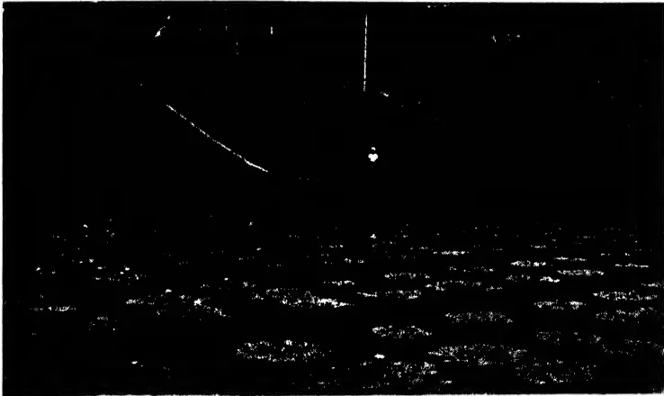
An aerial photograph showing a field of Manel plants. The plants are arranged in neat, parallel rows, demonstrating proper spacing. The field is bordered by a dark line, likely a path or a fence, on the left side. The overall image is in black and white.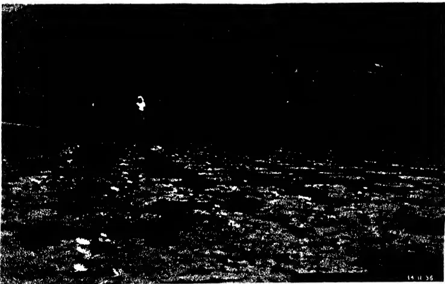
A close-up photograph of a Manel crop in flower. The image shows a dense field of plants with many small, light-colored flowers. The plants are arranged in rows, and the overall image is in black and white. In the bottom right corner, there is a small number "14 II 35".Top Figure :
Field of Manel showing proper spacing of Plants
Lower Figure :
Manel crop in flower
This image is a blank white page. It contains several small, dark specks which appear to be scanning artifacts or dust particles. There is no text, handwriting, or printed content on the page. 375begin to bloom about one month to one and half months from time of planting. Apart from the opening of scattered flowers which occurs throughout the life of the crop, flowering takes place in three or four distinct flushes, and round about the Wesak festival in the month of May these crops are at their best, resembling a beautiful pattern of pinkish hue worked on a bright green carpet. Each plant bears from 15 to 25 flowers during its life time. With the close of the flowering season 5 to 10 stolon-like processes radiate from the top and sides of the mother rootstocks and before assuming an inch in length, each growing point swells out into a globular growth which later becomes a daughter rootstock. The young rootstocks are light-brown in colour, thin-skinned and to all appearances resemble very much the fruits of Nephelium longana (English Logan, Sinhalese "Mora.") As the young rootstocks start to grow in size and to mature, the large leaves die out, while a new set of very small leaves (each about 1/20th of the size of normal leaves) appear crowded together at the surface of the water. This dwarfing of leaves signifies the maturity of the crop.
Assuming the planting distance as 3 feet by 3 feet, an acre will need 4840 seed rhizomes. As about 20 rhizomes go to the pound, roughly 2 cwt. of seed material is needed to plant up an acre. A normal crop gives a return of about 10 fold which works out to a yield of 20 cwt.
Land crabs and tortoises are the greatest enemies of this crop, in that crabs nibble off the sprouts of young plants, while tortoises feed on the young leaves. Considerable damage is often done by a caterpillar pest, identified as the larvae of Nymphula crisonalis. These caterpillars are semi-aquatic in habit and feed on leaves and flowers. Instead of spiracles which are characteristic in normal caterpillars these larvae possess numerous thread-like processes along the body, which function somewhat like the gills of aquatic organisms, and enable them to absorb oxygen from the water, whilst living under such conditions. The larvae pupate within a doubled-up
376section of a leaf margin. The writer is aware of a whole crop of Nymphaea stellata destroyed within the course of a week and on examination found the skeletons of leaves teeming with caterpillars. Fortunately for the cultivator the pest had made its appearance just before harvesting of the crop.
Tropical Gardening and Planting.—H. F. MacMillan.
Grateful acknowledgement is made to Dr. J. C. Hutson, Entomologist, for identification of the caterpillar pest.
A completely blank white page with no visible content, text, or markings. 378![A scientific plate illustrating the life cycle of the Coffee Berry-Borre (Stephanoderes hampei). The plate contains eight figures: 1. A female beetle (top left). 2. A male beetle (top right). 3. A group of eggs (top center). 4. A full-grown larva or grub (bottom left). 5. A pupa (bottom right). 6. Beans showing damage by beetles and grubs inside (center). 7. Coffee berries showing holes made by female beetles (middle). 8. A detailed view of a grub (4) and a pupa (5) with arrows indicating their positions within the beans (6).](667e85836193ba616a7b80711a29848e_2_img.webp)
THE COFFEE BERRY-BORRE
(Stephanoderes hampei Ferr.)
BLOCK BY SURVEY DEPT. CEYLON. 22. 9. 34.
Fig. 1. Female beetle, .—Fig. 2. Male beetle, .—Fig. 3. Eggs, group on right ; egg on left .—Fig. 4. Full-grown larva or grub .—Fig. 5. Pupa .—Fig. 6. Beans , showing damage by beetles and grubs inside. Arrows indicate grub (fig. 4) and pupa (fig. 5).—Fig. 7. Coffee berries, natural size, showing holes made by female beetles. Arrows indicate bored berries , (a) hole on side of berry, (b) hole hidden by
379J. C. HUTSON, B.A., Ph.D.,
ENTOMOLOGIST
THE coffee berry-borer was first discovered in Ceylon in June 1935 in the Balangoda district of the South-Western Division, but is now known to occur throughout the greater part of that Division, in the northern part of the Southern Division and in several places in the Central Division. The elevations of the various recorded localities ranging from about sea level up to about 3,000 feet. It is an introduced pest, but how or when it entered the Island is not known. Two possible sources of introduction are either coffee seed imported for planting or the ordinary market coffee entering regularly for consumption. Its widespread prevalence throughout many village coffee areas seems to indicate that this beetle has been here for several years. It has now become too well established for complete extermination to be practicable, but much can be done to reduce its prevalence to a minimum and the object of this preliminary note is to indicate how this can be done. The co-operation of all concerned is essential if any real progress in the control of this borer is to be made.
This pest is a small shot-hole borer beetle (fig. 1) which bores into the coffee berries, making a small, neat, round hole about 1 m.m. in diameter, usually at the outer end or "nipple" (fig. 7c,d.), but occasionally in the side of a berry (fig. 7a.) or more rarely near the stalk end; sometimes a berry may have two or three holes. The boring is done only by the female and while she is excavating inside a berry it may be seen that the hole is often partially hidden by frass (fig. 7b.). So far as is known, the berry is the only part of the plant to be attacked
382At Peradeniya the eggs (fig. 3) hatch in about 5 to 7 days and the grubs feed inside the bean (fig. 6), becoming full grown (fig. 4) within 15 to 20 days, with an average of about 17 days. The pupal stage (fig. 5) lasts about 6 to 7 days including a pre-pupal period of about 2 days, during which the grub stops feeding and decreases in size before pupating. The total life-cycle ranges from about 26 to about 34 days, occupying about 28 days on an average. The beetles emerge inside the beans and remain quiet for 5 or 6 days during which the body covering hardens and assumes its normal dark colour. Mating then takes place inside the beans and the females under field conditions emerge and fly off to feed elsewhere and start egg-laying in due course; the males usually remain alive inside the beans for two or three weeks.
The habits of the beetles under field conditions have not been completely studied so far in Ceylon, but from the information available in other countries it would appear that the females are usually in flight during the late afternoon, which indicates that any control picking should be done in the morning while many of the females are in the berries. It has also been found in other countries that the females are much more numerous than the males, the proportion being at least 10 to 1.
The above notes have indicated that the coffee berry-borer is a small shot-hole borer beetle which attacks only the berries for feeding and breeding, making a small, circular clean-cut hole (fig. 7) in any berries that have attained a certain degree of maturity; black berries are also commonly used for breeding. Bored berries on the bush and all fallen berries are the ones to look for since they will usually contain several individuals of the pest in some stage or other.
For slight infestations.—In coffee areas where the berry-borer is only slightly prevalent, all bored green, ripening and ripe berries on the bush should be collected and burnt at least once a fortnight and at the same time all fallen berries, especially black berries, should be swept up and burnt. This collection and burning should be completed by early afternoon while the females are still in the berries.
383If these collections cannot be burnt, they should be put into stout cloth bags which should be immersed in absolutely boiling water for five minutes to destroy the pest ; the contents of the bags can then be disposed of by burial or incorporating in compost pits.
All the remainder of the crop which it is desired to sell or use for consumption should be treated with absolutely boiling water as above, but only for three minutes, prior to drying and curing.
For heavy infestations.—In areas where the borer is found to be seriously prevalent, more drastic emergency measures are necessary, involving the destruction of the whole crop by burning.
Low-growing well-tended coffee bushes should be completely stripped of all berries and flowers. A special effort should be made to collect and burn all the stripped berries and all fallen berries, including black berries.
Unpruned coffee bushes, or those which have been allowed to grow into tall trees, should be cut back below the lowest fruit-bearing branch. All the prunings with the berries on them and all fallen berries, including black berries should be collected and burnt the same day.
When the next crop is developing it should be inspected carefully every two weeks and if the attack is only slight it can be controlled by the measures recommended above under slight infestations, special attention being paid to all fallen and black berries.
In areas which are liable to wash by flood water or heavy rain there are indications that the pest can be spread by transport of fallen berries in flood water to other areas. Therefore in such areas it is essential to see that the ground is cleared of all fallen berries at frequent intervals.
384DURING the three years which have elapsed since the opening of the laboratories of the Coconut Research Scheme, there has accumulated, incidentally to the main investigations in progress, a good deal of chemical and agricultural information. Much of this, especially data of random analyses of various products, is not capable of being incorporated in reports or articles on more extended studies. At the same time it is often of sufficient practical interest to those concerned with the coconut industry to make its publication desirable. Accordingly it has been decided to publish from time to time in this Journal a series of notes under the above general title, and the series is started this month with a note on some samples of Maldivé copra and one on the value of two Ceylon sea-weeds. Whilst most of these notes will be, like these two, of the nature of short analytical reports, the scope of the series has been widened to allow of the inclusion of notes of a more general character.
REGINALD CHILD, F.I.C., B.Sc., Ph.D. (Lond.),
DIRECTOR OF RESEARCH AND TECHNOLOGICAL CHEMIST
Through the courtesy of the British Ceylon Corporation, the author last year had the opportunity of examining three samples of copra from the Maldivé Islands. These samples were described respectively as Maldivé copra, Maldivé ball copra and Maldivé smoked copra. The average weight of copra per nut (all samples) was a little over 100 grams, and worked out at about 2,500 nuts per candy. The samples would thus appear to be derived from the dwarf round-fruited Maldivé nut, which it has been suggested to regard as a separate
385variety under the name Cocos nana, Griff. (cf. Trimen, "Handbook of the Flora of Ceylon" IV, 338). A separate variety might be expected to show some difference from the main type in oil percentage and composition of the oil, but the present analyses show the composition of the copra to be quite normal. Averages of recent (unpublished) analyses of Ceylon copra are given for comparison.
The sample described as ball copra consisted of the dried unsplit whole kernels. Completely undamaged whole kernels like this keep well, and should command a ready sale as edible whole copra. The popularity and fancy prices realised at the Coconut Sales Room by edible copra, particularly in the form of "small cups" are well known.
| Maldive Copra |
Ball Copra |
Smoked Copra |
Average for Ceylon Copra (52 samples) |
|
|---|---|---|---|---|
| Moisture % .. .. | 5.9 | 7.4 | 4.9 | 6.75 |
| Oil % .. .. | 64.1 | 64.6 | 66.2 | 63.75 |
| Oil % (dry weight) .. | 68.1 | 69.8 | 69.7 | 68.4 |
| F.f.a. of oil (lauric %) .. | 0.28 | 0.14 | 0.13 | — |
| Iodine value .. .. | 7.3 | 7.4 | 8.2 | 8.2 |
| Refractive index at 40°C. | 1.4490 | 1.4490 | 1.4491 | 1.4490 |
These samples were bulked in the mills with other copra so that it is not possible to record the commercial out-turn of oil on milling. Acknowledgment is made to the British Ceylon Corporation for their agreement to the publication of this note.
M.L.M. SALGADO, Ph.D., (Cantab), B.Sc. (Lond.), Dip. Agri. (Cantab)
SOIL CHEMIST
and
E. CHINNARASA,
TECHNICAL ASSISTANT TO THE SOIL CHEMIST
Considerable accumulations of sea-weeds growing in the Puttalam Lagoon are periodically washed ashore. The decay of these weeds pollutes the atmosphere, presumably by the smell of hydrogen sulphide produced. As sea-weeds have a high reputation as manure in coastal districts (1, 2, 3) it was decided to examine the manurial value of this material.
386Samples were analysed and showed the following composition.
| Puttalam Samples | ||
|---|---|---|
| Per cent. air dried material | ||
| No. 1 | No. 2 | |
| Nitrogen .. .. . | 0.70 | 0.80 |
| Potash .. .. . | 0.46 | 0.63 |
| Phosphoric acid .. .. . | trace | trace |
| Pentosan .. .. . | 3.95 | 2.26 |
| Lignin .. .. . | 9.14 | 5.94 |
| Pentosan/Lignin ratio .. .. . | 0.39 | 0.38 |
| Ash .. .. . | 53.72 | 52.85 |
| Ash insoluble in water .. .. . | 42.05 | 38.25 |
| Sodium chloride .. .. . | 8.81 | 12.80 |
No. 1 is a dry sample, washed ashore and No. 2 the wet sample freshly collected from the lagoon.
The main constituent was identified by the Economic Botanist, Peradeniya, as Halophila ovalis, Hk.
According to the above analysis the manurial value of these sea-weeds is extremely low and the prospect of disposing of the material as a manure very disappointing.
In coastal districts of the British Isles sea-weeds are a highly-prized manure mainly because of their high potash content, which constituent has been found to be as high as 5 to 10 per cent. of the dry matter or 20 to 30 per cent. of the ash (1). On the other hand the samples reported show only 0.45 per cent. of the dry matter or about 1 per cent. in the ash. Further, as shown by the low pentosan/lignin ratio the material would resist decomposition in the soil.
It was also reported that sea-weed growing in the Jaffna Lagoon and washed ashore was used as a manure for coconuts in Pallai, and samples obtained for analysis showed the following composition :—
| Jaffna Samples | ||
|---|---|---|
| Per cent. air dried material | ||
| No. 1 | No. 2 | |
| Nitrogen .. .. . | 1.37 | 1.67 |
| Potash .. .. . | 1.64 | 0.26 |
| Jaffna Samples | Per cent. air dried material | |||
|---|---|---|---|---|
| No. 1 | No. 2 | |||
| Phosphoric acid | .. | .. | trace | trace |
| Pentosan | .. | .. | 3.91 | 5.49 |
| Lignin | .. | .. | 9.12 | 27.34 |
| Pentosan/Lignin ratio | .. | 0.44 | 0.20 | |
| Ash | .. | .. | 40.77 | 19.48 |
| Ash insoluble in water | .. | 26.70 | 17.10 | |
| Sodium chloride | .. | .. | 11.16 | 1.79 |
The material consisted mostly of Enhalus acoroides, Rich. Kadol-thalai (Tamil).
The Jaffna and Puttalam samples resemble each other in composition and both show that the manurial value is low.
Many algae, such as Laminaria and Fucus show a high content of potash (1). The plants described in the present paper are, however, not algae. They are salt water herbs belonging to the natural order Hydrocharideae.
Another plant of this order, Thalassia hemprichii, Aschers (Tamil Chatelai) is stated by Trimen (4) to be "extensively used as a manure for coconuts and also for paddy" in Jaffna. It is hoped to examine a sample of this in due course.
W. R. C. PAUL, M.A., M.Sc., D.I.C., F.L.S.,
DIVISIONAL AGRICULTURAL OFFICER, NORTHERN
AND
M. A. SAMARASINGHE,
AGRICULTURAL INSTRUCTOR, ANURADHAPURA
IN the village of Tammannewa, situated about 21 miles away from Anuradhapura on the Puttalam-Anuradhapura road, considerable progress has been made in the adoption of some of the methods advocated by the Department for the improvement of paddy cultivation, to merit a short note on this subject.
The following are the methods which the cultivators of this village have carried out on their fields :—
For the maha season 1936-37, the whole extent of the puranu or older fields of the village amounting to acres were worked with the Midget plough. Altogether seven ploughs were used for this purpose, of which six were loaned from the stock of ploughs purchased from the funds of the defunct North-Central Province Agricultural Society to be issued on loan to different cultivators, and one was an award made on the occasion of the Silver Jubilee of His late Majesty, King George V, to a Vel Vidane by the Village Committee of Wilachchiya Korale for keenness in the development of paddy cultivation in his area. Owing to the limited number of ploughs available it was not possible for the cultivators, much as they wished, to plough their acre fields (newer lands of one acre extent owned by each cultivator) of the village with this
389implement and they were, therefore, obliged to resort to their own ploughs which are devoid of a mould board.
Following a demonstration with the Burmese harrow and the loan of one from the Department to the village, about nine acres were puddled and levelled—the areas mentioned below which were penned with cattle and manured with pila.
On a block of four acres in the purana fields, about 30 heads of cattle were penned daily for a period of about four months prior to the commencement of the maha cultivation operations. As there was no yala cultivation carried out this year in the village owing to the scarcity of water in the village tank, there was a certain amount of pasture available for the cattle to graze on for a few months. They were kept within this block which was enclosed by a barbed wire fence so that the penning might be more intensive but at night they were housed in galas and the manure collected from these were applied to the fields with an extent of acres situated further away.
On a block of five acres adjoining the penned area there was a growth of pila (Tephrosia purpurea) which had formed an excellent cover during the dry season of the year. The attention of the cultivators was drawn to the value of this plant as a green manure which otherwise would not have been utilised for this purpose. During ploughing with the Midget plough, the pila was uprooted and when the fields were flooded subsequently for puddling the plants were kept submerged and allowed to decay. The block was then puddled with the Burmese harrow and the decaying pila incorporated in the soil.
Another block of four acres is being treated as a control to those in which cattle penning, the application of cattle manure from the galas, and the growing of pila and turning it into the soil were carried out. The yields of the various blocks will be recorded separately by the cultivators for their own information.
Considerable interest has been shown in these methods and it is expected that for the next cultivation season, several cultivators of this village will possess their own Midget ploughs and Burmese harrows and that the system of penning cattle both in the field and in galas and the use of pila as a green manure will become established practices in this village.
390W. R. C. PAUL, M.A., M.Sc., D.I.C., F.L.S.
DIVISIONAL AGRICULTURAL OFFICER, NORTHERN
AT Karambewa, a village situated near the Yoda Ela which receives water from the Kalawewa, an enterprising cultivator opened a vegetable garden during the late maha season of 1935-36. From the distributor channel leading to the Karambewa paddy fields off the Yoda Ela, water was stored in a pond for the requirements of the garden.
The following is a list of the varieties grown, seed of the first three having been given free by the Department of Agriculture :—
With the exception of kohila which was grown in low ground, these crops were cultivated on raised beds. The land was first penned with cattle and then hoed with mammoties, the weeds being collected and burnt on the surface. The practice of burning weeds and waste plant material is not advisable owing to the destruction of organic matter which is of value to the soil. It would have been preferable to collect all this material and to compost it. Later, when it has become converted into manure it would be applied on the land. All the available ash was also collected from the cultivator's kitchen hearth and this was spread evenly over the land. Beds were then made about 1½ ft. high and 3 ft. wide with the exception of those for betel which were about 4½ ft. wide.
391Green leaves of Croton lacciferus (S. keppetiya) were applied on the surface to the beds of capsicum and betel. It is a general opinion amongst cultivators in Ceylon that this plant provides the best green manure for these two crops.
The planting of beetroots and tomatoes was carried out during the yala season and excellent crops were produced at a time when vegetables are normally scarce in the district on account of the difficulty in growing them during this season. This is largely a result of (a) the drought, (b) strong wind, and (c) high temperatures. Water was available in plenty from the Yoda Ela and the storage pond; ample protection from wind was afforded by means of a thatched enclosure while on account of the proximity to the Yoda Ela and the paddy fields which were under cultivation for the yala season the temperature was not too high.
Considerable encouragement was given to the cultivator by the Irrigation Superintendent, Kalawewa-Yoda Ela Scheme, who took particular interest in this work.
392Minutes of the thirty-fourth meeting of the Board of Management held at Bandirippuwa Estate at 10.30 a.m. on Friday, October 2, 1936. All of the members were present, as follows :
Mr. E. Rodrigo, C.C.S., Acting Director of Agriculture, in the Chair. Messrs C. H. Collins, C.C.S., Treasury Representative, S. O. Canagaretnam, M.S.C., O. B. M. Cheyne, Austin Ekanayake, D. D. Karunaratne, J.P., Wace de Niese, Dr. H. M. Peries, Mr. G. Pandittsekere, J.P., U.P.M., Gate Mudaliyar A. E. Rajapakse, O.B.E., M.S.C., Mr. S. Samarakkody, M.S.C., Dr. R. Child, Director of Research, acted as Secretary.
The minutes of the previous meeting held on July 23, 1936, which had been circulated to Board Members, were confirmed.
The Chairman formally reported that Dr. Child returned from leave on August 10th and assumed duties as Director of Research from August 14, 1936.
Technical Assistants.—It was decided to advertise the vacancy left by Mr. S. Ramanathan, B.Sc., formerly Technical Assistant to the Technological Chemist, at a salary scale of Rs. 1,200-120-2,400 per annum (efficiency bar at Rs. 1,800).
The Chairman reported that His Excellency the Governor had nominated Mr. S. O. Canagaretnam, M.S.C. and Mr. S. Samarakkody, M.S.C., to represent the State Council on the Board of Management in place of Mr. J. L. Kotalawala, M.S.C. and Mr. F. A. Obeyesekera.
Dr. Child reported that the aerial line between the Senior Power House and the Junior House had been completed. The Junior Staff installation was therefore working satisfactorily both as regards light and water with power supplied from the Senior Power House. A difficulty had, however, arisen over the new Battery installation. On September 3rd Messrs Brown & Co.'s engineer had called attention to the excessive amount of vibration to which the cells in their present position were subjected whilst the engines were running.
393and had strongly recommended the erection of a separate building to house them. An estimate of Rs. 1,800 was submitted for a building which would serve this purpose and also extra space which was badly needed, the present store space in the Laboratory building for soil samples, etc. being insufficient. Dr. Child added that pending the Board's decision the old 150 ampere hour set remained in use. There was a further consideration that the Board had already mooted the idea of erecting a factory building ; if this scheme was to go forward, the room for the new battery could be incorporated. It would in that case be a pity to commence at once a separate smaller building. There were, therefore, three courses which could be adopted. One, to proceed with the original plan and accept the risk of the damage caused by vibration of the battery cells and plates. Second, to accept Messrs Brown's recommendation to build a separate Battery House and Store at Rs. 1,800. Third, to postpone the installation of the 303 ampere hour set, pending a decision on the factory building. With regard to the last, Messrs Brown's engineer had reported that there would be no objection to keeping the plates, etc. of this set in store up to say, six months.
A further matter, Dr. Child said, concerned the Junior Staff site. The project of building accommodation for subordinate staff and possible students had already been discussed. The present 75 ampere hour set is quite sufficient for the provision of light to the present four Junior Staff bungalows, but would not suffice if further buildings be erected on the site. The suggestion was made that the 150 ampere set should be installed at the Junior Power House, and the 75 ampere set taken over by Messrs Brown & Co.
Building Sub-Committee.—A Building Sub-Committee was elected to report to the Board on proposals for new buildings, including the battery room, factory and accommodation for students.
The Estate Progress Reports for July and August, 1936, were approved by the Board.
The Chairman said that a report on Kankaniamulle Reserve Forest had been circulated to the Board. From that they would see that the technical officers of the Scheme did not view this area with great favour, only recommending it should a better area not be available.
The Chairman thought that the possibility of acquiring Ratmalagara Estate should be pursued. Mr. Wace de Niese asked whether still further enquiries on the possibility of obtaining Crown jungle should not be made ; he maintained that an important point was the necessity for having the area isolated from growing coconuts, so that palms grown from selected nuts should not be cross-fertilized ; and he thought that Mr. Samarakoddy might be able to suggest an
394area in the Narammala district. Mr. Collins was against going too far afield; the Rubber Research Scheme had encountered difficulties in running stations situated at a distance from each other and were now adopting a policy of centralization. Dr. Child agreed that it was not desirable to acquire an area at too great a distance from Bandirippuwa; with regard to the question of isolation, neither Kankaniamulle nor Ratmalagara were satisfactory from this point of view.
The Chairman suggested the advisability of appointing a Sub-Committee to report on the jungle area, as it was clear the Board could not come to a decision at the present meeting. The Sub-Committee could go into Mr. Wace de Niese's question and enquire whether Crown land suitable was available; Mr. Samarakkody might be asked to serve on the committee. The Board approved of this procedure and the following Sub-Committee was elected (i) to report on the possibility of acquiring an area of Crown jungle (ii) to pursue the possibility of acquiring Ratmalagara Estate:
Mr. S. Samarakkody
Mr. G. Pandittesekera
Mr. O. B. M. Cheyne
Following a suggestion by Dr. Child, it was decided to appoint Mr. Pieris Convener and Secretary of this Sub-Committee.
Dr. Child reported that a number of enquiries for seednuts and seedlings were received from India. As a rule enquirers were referred to Indian seed-merchants, but they had been supplied in a few cases, particularly such official bodies as Departments of Agriculture. He said that the policy had been based on the fact that the work of the Scheme was, so to speak, subsidised by the Ceylon producer and a low price was charged to Ceylon buyers—namely 8 cents for a selected seednut and 15 cents for a selected seedling. A considerably higher rate should be charged to Indian and other buyers, except possibly in the case of Agricultural Departments, who supplied useful information in exchange. He asked the Board for approval of this policy. 1314 seednuts and seedlings had been supplied in 1934, and 9,963 in 1935. To date in 1936 some 9,200 had been sold.
The Board approved of the rates charged to Ceylon buyers. Mr. Samarakkody proposed that 50 cents per seednut and Re. 1.00 per seedling ex estate should be charged to other buyers. Mr. Wace de Niese thought this too low and proposed rates of 75 cents and Rs. 2.00 respectively. This amendment was lost and the former rate approved. At the suggestion of Mr. Collins, Dr. Child was authorised at his discretion to supply seednuts and seedlings gratis to Government Departments of Agriculture.
395The Draft Estimates for 1937 were approved. These include provision for a second Field Assistant in the Department of Soil Chemistry, with a view to extending the Scheme's manurial experiments.
Under Capital Account, a vote of Rs. 1,000 was approved to commence the establishment of a Museum at Bandirippuwa. This gives effect to the Board's approval of the recommendation in 1935 of the Low-Country Products Association that a museum of coconut products, etc. should be established at Bandirippuwa for the interest of visitors.
A vote was approved for a new copra store.
396"Diseases and Pests of the Rubber Tree"—By Arnold Sharples. Macmillan & Co., London, 1936, Price 25s.
UNTIL the publication of this volume the most important work in the English language on the diseases of Rubber was "The Diseases and Pests of the Rubber Tree" by T. Petch. The last edition of Petch's book was issued as long ago as 1921, and in view of the great advances which have been made during the last decade, in particular as the result of researches carried out by the Rubber Research Institute of Malaya since 1931, a new authoritative volume is very welcome. Prior to his retirement Mr. Sharples worked on Rubber disease problems in Malaya for more than twenty years, and there is no one more competent to supply what was fast becoming a long-felt want.
The book is divided into three parts. Part I contains general remarks on plant diseases, a brief account of the structure and modus operandi of fungi, and a discussion on the influence of external factors on Rubber diseases. Part II comprises an elementary description of the form and functions of green plants, and Part III is an exhaustive account of all the specific diseases and pests which attack Hevea.
In his preface the author expresses the hope that Parts I and II will receive due attention from planters though the subject matter may present some intricacies to laymen, and states that the planter who makes a study of these elementary treatises will be in a position to appreciate the remaining portions in a practical manner. The reviewer would go further and state that an elementary grasp of the functions of both parasite and host is absolutely essential to a sound working knowledge of plant diseases, and that a planter cannot be considered to be fully efficient without such knowledge. A pathological condition is merely an abnormal physiological condition, and the normal state must be understood before the significance of abnormality can be properly appreciated. These important sections of the book are quite short and very readable, and may be commended to all whose profession is directly concerned with the growing plant.
In the very thorough descriptions of the individual diseases the author is writing mainly for the benefit of the Malayan planter. Quotations relating to work in other countries are, however, given in full and, indeed, throughout the text emphasis is laid on the relation between the incidence and severity of
397diseases and external factors due to climate and soil, and the differences encountered in the various producing countries are fully represented. Each chapter concludes with a list of references which enable the investigator to pursue the subject in greater detail.
Included in Part III are chapters on all the major and minor fungus diseases, on damage due to lightning and sun-scorch, on animal and other pests and on the treatment of diseases with special reference to tar derivative fungicides.
The book concludes with a chapter on the so-called "forestry" methods of cultivation, with special reference to the influence of such methods on diseases. Although it is difficult to avoid the impression that the author's judgment has been somewhat biased by outside criticisms of the scientific staff in Malaya, he nevertheless effectively explodes the absurd claims made by the extreme protagonists of forestry cultivation that such methods constitute an almost universal panacea. That the controlled growth of natural covers is of value in soil management cannot be doubted and is, indeed, no new idea, but it is extremely improbable that the full list of advantages claimed by the most ardent advocates of forestry methods will ever reach full fruition.
For the Mycologist there is an appendix giving a list of fungi recorded on Hevea in Malaya, while for the lay reader a useful glossary of technical terms is included.
The text comprises 480 pages, four coloured plates and a large number of excellently reproduced photographs. Apart from one or two printing errors the only mistake found by the reviewer occurs on page 350; a difference in temperature of 20°C is equivalent to 36°F, not 68°F as stated.
The author affirms that there is no special aim to be attached to the book beyond recording the progress of pathological research in Malaya. One feels that he is unduly modest since the book goes far beyond the mere recording of experimental results. To the fellow investigator the individual views of an experienced pathologist are always stimulating and Mr. Sharples has been generous in this respect. To the planter who wishes to know something of the crop under his control both in its normal and diseased condition, this volume will prove a valuable and interesting text-book.—R.K.S.M.
398Biochemical and Allied Research in India in 1935—Price Rs. 2.THE Society of Biological Chemists, India, is doing distinct service to research workers in biochemistry and the allied sciences in publishing an annual review of "Biochemical and Allied Research in India." The 1935 number is full of useful information on a large range of subjects, of which the following may be mentioned: Agricultural Chemistry, Research on Nutrition in India including work in Vitamins, Proteins of Indian Foodstuffs, Dairy Chemistry, Food and Nutrition of Farm Animals, Soil Microbiology and the Chemistry of Sanitation. Each section is reviewed by a specialist in the particular subject dealt with. Of the greatest importance to Ceylon is the work on nutrition and indigenous foodstuffs, as conditions in these respects are similar in both countries. Admittedly, only the fringe of a number of important aspects of this vital problem has been so far touched on, and much remains to be done. What however the report does indicate is that the question is being seriously studied by an increasing band of Indian biochemists. Particular mention must be made of the investigations on the vitamin C contents, by chemical methods, of Indian fruits and vegetables, many of which are found locally. The majority of the original papers referred to in the review are published in the Indian Journals: Current Science, the Indian Journal of Medical Research, Indian Medical Gazette, Journal of the Indian Institute of Science and the Indian Journal of Agricultural Science. The publication is a good index to the rapid strides being made in scientific research in India, and furnishes useful summaries of and references to recent advances on the subjects it covers. To research workers in these fields, the annual is worth considerably more than the Rs. 2 it is priced at.—A.W.R.J.
399ANIMAL DISEASE RETURN FOR THE MONTH
ENDED NOVEMBER, 1936.
| Province, &c. | Disease | No. of Cases up to date since Jan. 1st, 1936 | Fresh Cases | Recoveries | Deaths | Balance ill | No. Shot |
|---|---|---|---|---|---|---|---|
| Western | Rinderpest | .. | .. | .. | .. | .. | .. |
| Foot-and-mouth disease | 3347 | 141 | 3327 | .. | 20 | .. | |
| Anthrax | .. | .. | .. | .. | .. | .. | |
| Rabies | 20 | 1 | .. | .. | .. | 20 | |
| Colombo Municipality | Rinderpest | .. | .. | .. | .. | .. | .. |
| Foot-and-mouth disease | 1347 | .. | 1324 | 23 | .. | .. | |
| Anthrax | 1 | .. | .. | 1 | .. | .. | |
| Rabies | 39 | 2 | .. | 39* | .. | .. | |
| Cattle Quarantine Station | Rinderpest | .. | .. | .. | .. | .. | .. |
| Foot-and-mouth disease | 3 | .. | 3 | .. | .. | .. | |
| Anthrax | 25 | .. | .. | 25 | .. | .. | |
| Central | Rinderpest | .. | .. | .. | .. | .. | .. |
| Foot-and-mouth disease | 2784 | 537 | 2565 | 9 | 210 | .. | |
| Anthrax | 11 | .. | .. | 11 | .. | .. | |
| Rabies | 12 | .. | .. | 12 | .. | .. | |
| Tuberculosis | 2 | .. | .. | 2 | .. | .. | |
| Piroplasmosis | 3 | .. | 2 | 1 | .. | .. | |
| Southern | Rinderpest | .. | .. | .. | .. | .. | .. |
| Foot-and-mouth disease | 119 | .. | 119 | .. | .. | .. | |
| Anthrax | .. | .. | .. | .. | .. | .. | |
| Northern | Rinderpest | .. | .. | .. | .. | .. | .. |
| Foot-and-mouth disease | 313 | .. | 310 | 3 | .. | .. | |
| Eastern | Rinderpest | .. | .. | .. | .. | .. | .. |
| Foot-and-mouth disease | 36 | .. | 36 | .. | .. | .. | |
| Anthrax | .. | .. | .. | .. | .. | .. | |
| North-Western | Rinderpest | .. | .. | .. | .. | .. | .. |
| Foot-and-mouth disease | 3859 | 101 | 3765 | 7 | 87 | .. | |
| Anthrax | .. | .. | .. | .. | .. | .. | |
| North-Central | Rinderpest | .. | .. | .. | .. | .. | .. |
| Foot-and-mouth disease | 36 | 4 | .. | 4 | .. | 32 | |
| Anthrax | .. | .. | .. | .. | .. | .. | |
| Uva | Rinderpest | .. | .. | .. | .. | .. | .. |
| Foot-and-mouth disease | 7 | 7 | .. | .. | 7 | .. | |
| Rabies | 2 | .. | .. | 1 | .. | 1 | |
| Haemorrhagic Septicaemia | 8 | .. | .. | 8 | .. | .. | |
| Sabaragamuwa | Rinderpest | .. | .. | .. | .. | .. | .. |
| Foot-and-mouth disease | 5821 | 123 | 5681 | 84 | 56 | .. | |
| Anthrax | .. | .. | .. | .. | .. | .. | |
| Haemorrhagic Septicaemia | 10 | .. | .. | 10 | .. | .. | |
| Rabies | 3 | .. | .. | .. | .. | 3 |
*All destroyed.
Department of Agriculture,
Peradeniya, 19th December, 1936.
M. WIJAYANAYAKA,
For Deputy Director of Agriculture (Animal Husbandry), & Government Veterinary Surgeon.
| STATION | TEMPERATURE | HUMIDITY | Amount of Cloud | RAINFALL | ||||||
|---|---|---|---|---|---|---|---|---|---|---|
| Mean Maximum | Difference from Average | Mean Minimum | Difference from Average | Day | Night (from Minimum) | Amount | No. of Rainy Days | Difference from Average | ||
| ° | ° | ° | ° | % | % | Ins. | Ins. | |||
| Colombo | 84.7 | -0.1 | 73.9 | +0.5 | 78 | 93 | 6.6 | 15.89 | 23 | + 3.55 |
| Puttalam | 85.5 | +0.5 | 73.3 | +0.1 | 80 | 95 | 5.9 | 10.63 | 22 | + 0.70 |
| Mannar | 85.3 | +0.6 | 76.2 | +0.7 | 77 | 86 | 5.9 | 8.58 | 14 | - 1.27 |
| Jaffna | 84.5 | +1.1 | 74.7 | +0.2 | 76 | 90 | 7.3 | 7.65 | 21 | - 8.67 |
| Trincomalee | 83.8 | +0.6 | 74.0 | +0.1 | 79 | 90 | 7.3 | 9.18 | 27 | - 5.08 |
| Batticaloa | 83.7 | -0.4 | 74.6 | +0.3 | 80 | 90 | 6.4 | 10.03 | 24 | - 5.85 |
| Hambantota | 85.1 | +0.1 | 73.8 | +0.1 | 78 | 93 | 5.6 | 2.48 | 17 | - 5.30 |
| Galle | 83.6 | +0.3 | 74.5 | +0.5 | 80 | 90 | 6.8 | 21.08 | 22 | + 9.94 |
| Ratnapura | 86.7 | -0.9 | 72.6 | +0.4 | 82 | 95 | 6.7 | 18.16 | 28 | + 3.16 |
| Anuradhapura | 85.1 | -0.3 | 72.5 | +0.8 | 81 | 95 | 8.0 | 4.21 | 21 | - 7.33 |
| Kurunegala | 86.9 | 0 | 72.0 | 0 | 73 | 93 | 6.0 | 3.47 | 18 | - 10.05 |
| Kandy | 84.5 | +1.1 | 68.2 | 0 | 70 | 92 | 6.6 | 5.66 | 19 | - 5.55 |
| Badulla | 79.3 | +0.3 | 66.2 | +0.6 | 77 | 95 | 6.6 | 7.06 | 23 | - 2.96 |
| Diyatalawa | 74.5 | +0.2 | 59.5 | -0.6 | 80 | 94 | 7.2 | 5.83 | 24 | - 4.36 |
| Hakgala | 71.0 | +2.5 | 55.1 | +1.6 | 83 | 91 | 7.5 | 6.46 | 25 | - 5.59 |
| Nuwara Eliya | 68.0 | -0.2 | 51.0 | -0.3 | 80 | 97 | 8.4 | 3.54 | 24 | - 5.97 |
The rainfall of November was below normal over the greater part of the Island, excess being generally reported only from the south-western corner of Ceylon, from a coastal strip between Colombo and Mannar, and from a few stations south and south-west of Batticaloa. There was well marked excess near a line running northwards from Galle to Avisawella, Batapola reporting an excess of 21.80 inches, Hanwella one of 18.41 inches, and Baldegama one of 16.49 inches, while several other stations were over 10 inches in excess. Elsewhere excess was, on the whole, only small. Deficits were most marked on the north-western, northern, eastern, and south-eastern slopes of the hills, in the adjoining low-country districts, and in the Jaffna peninsula. The greatest deficits reported were, 13.03 inches at West Haputale estate, and 12.38 inches, at Point Pedro.
The highest monthly totals reported were 35.00 inches at Padupola and 33.77 inches at Hanwella estate.
Twelve falls of at least 5 inches in a day were reported during the month, the highest being 7.23 inches at Jaffna College, on the 8th and 7.22 at Madurankuli, on the 10th.
The weather in Ceylon during November was chiefly of the inter-monsoon type, with local afternoon or evening thunderstorms. During the first ten days of the month disturbances in the Bay of Bengal and in the Arabian Sea also affected the weather over the Island. From the 22nd signs of the north-east monsoon began to appear while local thunderstorm rains continued in the lee of the hills.
Temperatures were generally a little above normal, while humidity and cloud showed no marked deviations from average. The barometric pressure was appreciably in excess. Wind strength was on the whole above normal, and its direction was variable.
A hail-storm was reported from Diyatalawa on the 11th.
H. JAMESON,
Superintendent, Observatory.
1934
| Number | Month | Pages |
|---|---|---|
| 1 | January | 1-72 |
| 2 | February | 73-138 |
| 3 | March | 139-201 |
| 4 | April | 202-265 |
| 5 | May | 266-329 |
| 6 | June | 330-396 |
| A | Page | C | Page |
|---|---|---|---|
| Agricultural Progress in Nyland | - 108 | Clove Industry of Ceylon | - 152 |
| Agriculture, Planned Econom and | 290, 365 | Clubroot and Root Knot Diseases and Control Methods | - 281 |
| Animal Husbandry in Ceylon | Coconut Research Scheme (Ceylon), Minutes of the Board of Management of the | - 323 | |
| Report on | 62, 121 | Coconut Palm, Studies on the | - 75 |
| Anthracnose -- A Fruit Disease of Chillies | - 325 | Coconut Industry of Travancore | - 388 |
| Avocado Pear | - 354 | Cymbidium ensifolium var. hacmatodes Trim. (Orchid) | - 21 |
| B | D | ||
| Balance Sheet of Entomology | - 312 | Dairy Rations, Importance of Calcium in | - 58 |
| Bees and Bee-keeping in South India | - 242 | Dendrobium Pierardi (Orchid) | - 338 |
| Betel, Bacterial Leaf Spot of | - 393 | Departmental Notes | 62, 121, 325, 398 |
| Burma, Paddy Manurial Experiments in | - 217 | E | |
| Burma, Rice Crop in | - 174 | Editorial | 1, 73, 139, 202, 266, 330 |
| C | Entomology, The Balance Sheet of | - 312 | |
| Cacao, Two Publications on | - 112 | Erosion, Some Aspects of Soil | - 238 |
| Calcium in Dairy Rations, Importance of | - 58 | F | |
| Cattle, The Nutrition of India | - 186 | Frog-eye Disease of Tobacco | - 29 |
| Ceylon, The Vegetable Production | - 321 | Fruits, Influence of Rootstocks on the texture and flavor of Orange | - 163 |
| Chillies, A Fruit Disease of -- Anthracnose | - 325 | Fly, House | - 182 |
| Citrus Fruit, Ceylon's Import Trade in | - 141 | Forests for Grazing, the Better Utilization of | - 165 |
| Citrus-canker in California | - 159 | ||
| Citrus Fruit Growing in Rhodesia | - 191 |
| G | Page | N | Page |
|---|---|---|---|
| Ginger Manurial and Cultural Experiments | - 840 | Notes on Orchids Cultivated in Ceylon | 21, 98, 145, 212, 338 |
| Grasshopper Campaign in Manitoba in 1932 | - 362 | Nyasaland, Agricultural Progress in | - 106 |
| Grazing, the Better Utilization of Forests for | - 168 | O | |
| Green Manures, Change in Composition and Decomposability with age | - 3 | Orange Fruits, Influence of Rootstocks on the texture and flavor of | - 168 |
| H | P | ||
| House Fly | - 182 | Paddy Manurial Experiments in Burma | - 217 |
| I | Pasture Requirements and Composition | - 317 | |
| Imperial Institute Reports | - 254 | Pasture Trials at Peradeniya | 204, 266 |
| Indian Cattle, The Nutrition of | - 186 | Pear, The Avocado | - 854 |
| Inheritance of Characters in Rice | - 226 | Philippine Rice-Mill Products with particular reference to the Nutritive Value and Preservation of Rice Bran | - 32 |
| K | Planned Economy and Agriculture | 290, 365 | |
| Kashmir Plants | - 101 | R | |
| L | Rice-Mill Products, Philippine, with particular reference to the Nutritive Value and Preservation of Rice Bran | - 32 | |
| Leaf Spot of Betel, Bacterial | - 398 | Rice Crop in Burma | - 174 |
| M | Rice, Inheritance of Characters in Renanthera coccinea Lour. (Orchid) | - 226 - 212 |
|
| Manitoba, The Grasshopper Campaign in 1932 | - 362 | Report on Animal Husbandry in Ceylon | 62, 121 |
| Manurial and Cultural Experiments, Ginger | - 340 | Reports, Meteorological | 72, 137, 200, 265, 328, 396 |
| Meteorological Reports | 72, 137, 200, 265, 328, 396 | Reports, Imperial Institute | - 254 |
| Minutes of Meeting of the Board of Management of the Coconut Research Scheme (Ceylon) | - 328 | Returns, Animal Disease | 71, 136, 199, 264, 327, 395 |
| Minutes of Meeting of the Board of Management of the Rubber Research Scheme (Ceylon) | 60, 261 | Reviews | 111, 112, 321, 388 |
| Minutes of Meeting of the Board of the Tea Research Institute of Ceylon | 114, 118, 389 | Rhodesia Citrus Fruit Growing in | - 191 |
| N | Rothamsted Experimental Station, Annual Report, 1932 | - 111 | |
| Nature Teaching based upon the General Principles of Agriculture for the Use of Schools | - 321 | Root Knot Diseases and Control Methods, Club root and | - 281 |
| Notes on Cross-pollination of Rubber (Hevea Brasiliensis) in Ceylon | - 147 | Rubber (Hevea Brasiliensis) in Ceylon, Notes on Cross-pollination of | - 147 |
| Rubber: The Use of Improved Planting Material | 278, 332 | ||
| Rubber Research Scheme (Ceylon), Minutes of Meeting of the Board of Management of the | 60, 281 |
2
| Page | Page | ||
|---|---|---|---|
| S | T | ||
| Soil Erosion, Some Aspects of | - 238 | Tea Research Institute of Ceylon, Minutes of Meeting of the Board of |
114, 118, 389 |
| South India, Bees and Bee- keeping in |
- 242 | Tobacco, Frog-eye Disease of | - 23 |
| Spathoglottis aurea Vieillardi (Orchid) |
- 98 | Tomatoes, Description of Types of Principal American Varieties of |
- 284 |
| Studies on the Coconut Palm, I | - 76 | V | |
| T | Vanda Spathulata Spreng (Orchid) | - 145 | |
| Travancore, The Coconut Industry of |
- 388 | Vegetable Products of Ceylon | - 321 |
| Vernalization | - 214 |
| Facing page | Facing page | ||
|---|---|---|---|
| Cymbidium ensifolium var. haematodes Trim. (Orchid) |
- 21 | The Harvested Ginger | - 343 |
| Spathoglottis aurea Vieillardi (Orchid) |
- 98 | The Effects of Manurial and Cultural Experiments on Yield of Ginger |
- 345 |
| Vanda Spathulata Spreng (Orchid) | - 145 | Typical Bunched Ginger obtained in the Local Planting Method |
- 350 |
| Renanthera coccinea Lour. „ | - 212 | Typical Hands obtained by Planting Ginger in Small Sets |
- 352 |
| Anthracnose of Chillies (Coloured Plate) |
- 325 | Bacterial Leaf Spot of Betel (Coloured Plate) |
- 393 |
| Dendrobium Pierardi (Orchid) | - 338 | ||
| The Nature of the Land under Experiment |
- 341 |
| Facing page | Facing page | ||
|---|---|---|---|
| Change in Composition of Green Manures with Age |
- 11 | Structure of the Inflorescence and Flowers of Hevea Brasiliensis |
- 148 |
| Annual Imports of Citrus Fruit into Ceylon from Various Countries |
- 144 |
3
A completely blank white page with no visible content, text, or markings.[Faint page: no legible print of its own could be verified; text withheld (stage 4 review list)]